이중특이성 항체
Bispecific Antibodies
서문
이중특이성 항체에 대한 최초의 기술은 50년 전으로 거슬러 올라간다. Nisonoff와 Rivers가 서로 다른 특이성을 지닌 일가 항체 단편 혼합물의 재조합을 보고한 것이 그 시초였다. 그러나 이중특이성 항체가 치료용으로 제안되기까지는 또 20년이 더 걸렸고, 주된 목적은 effector T 세포(효과기 T세포)를 종양 세포로 재표적화하는 것이었다. 이 초기 연구들에는 이미 항체가 평소 수행하는 기능을 넘어서는 기능까지 확장하려는 의도가 담겨 있었다. 동물 유래 단클론 항체의 공급이 제한적이었던 탓에, 이 시기의 이중특이성 항체는 두 하이브리돔의 체세포 교잡이나 두 IgG 분자의 화학적 결합으로 만들어졌다. 그러나 이런 이중특이성 항체에 대한 높은 기대는 저효능, 면역원성, 임상시험에서 관찰된 심각한 부작용 때문에 대부분 배신당했다. 덕분에 지난 세기 마지막 10년 동안 이 부류의 분자에 대한 관심은 사실상 사그라들었다. 하지만 항체 공학이 발전하고 새로운 응용 분야가 열리면서, 이번 세기 초에 이중특이성 항체는 부활을 맞았다. 암 면역요법에서 효과기 세포를 재표적화하는 것 외에도, 방사면역요법에서 사전표적화(pre-targeting) 전략, 그리고 최근에는 질병 관련 두 표적을 동시에 공격하는 이중표적화(dual-targeting) 전략 같은 응용이 등장했다. 오늘날 유전공학 덕분에 조성이 명확히 정의되고 안정성과 생산성도 개선된 재조합 이중특이성 항체를 만들 수 있다. 이에 힘입어 이중특이성 항체는 제약업계의 주목을 다시 받았고, 이미 많은 회사가 자체 개발 프로그램을 갖추었다. EpCAM 양성 종양 세포로 효과기 세포를 재표적화하는 최초의 이중특이성 항체는 2009년 악성 복수 치료제로 승인되었고, 지금은 더 많은 후보들이 전임상 및 임상 개발 단계에 있다. 개발 중인 접근법의 스펙트럼은 매우 넓다. 이 책은 이중특이성 항체를 만드는 다양한 기술과 포맷을 폭넓게 소개하고, 지난 20년간 등장해 치료·진단 목적으로 활발히 연구되고 있는 여러 응용 분야를 들여다보고자 한다.
서장
치료용 단클론 항체(mAb) 개발은 생물학 공학의 혁신에 크게 의존하며 진화를 거듭해온 분야다. 치료용 mAb가 처음 임상시험에 들어간 것은 1980년대 초, 하이브리돔 기술이 발표된 지 얼마 되지 않아서였다. mAb의 안전성과 효능이 크게 개선된 것은 키메릭·인간화·완전 인간 항체 치료제의 생산으로 이어진 생물학 공학의 진보가 직접 가져온 결과다. 1990년대 항체 설계·개량·제조 기술의 발전과 함께 치료용 mAb의 세계 판매액도 늘었고, 이는 2000년대 상당한 상업적 관심과 투자로 이어졌다. 매년 임상시험에 진입하는 신규 mAb 수가 그 투자 규모를 가늠하게 해주는데, 1990년대 말~2000년대 초에는 연평균 약 20건이던 것이 2009년에는 연간 거의 50건까지 늘었다. 2010년까지 30개 이상의 mAb가 판매 승인을 받았다. 전형적인 단일특이성 IgG 항체가 지닌 한계는 대체 분자 포맷, 그중에서도 수많은 이중특이성 버전의 항체에 대한 탐구를 촉발했다. 이 연구 흐름은 최근 최초의 승인 이중특이성 항체인 catumaxomab(Removab®)을 낳았으며, 이 약은 유럽에서 EpCAM(epithelial cell adhesion molecule) 양성 암 환자의 악성 복수 치료제로 판매 중이다.
이중특이성 항체의 발전사는 전체 항체 개발에서 과거에 관찰된 추세를 축소해 보여주는 거울과도 같으며, 밝은 미래를 함께할 것으로 보인다. 역사적으로 상업 회사가 후원한 임상시험에 들어간 항체의 절반가량이 암 적응증으로 개발되었다. 두 개의 서로 다른 표적을 가까이 끌어당기는 본래의 능력을 지닌 이중특이성 항체는 임상시험이 거의 전적으로 암 환자에게서 이루어져 왔다. 임상시험에서 평가된 항암 항체가 가장 자주 겨냥한 종양 관련 항원은 빈도순으로 첫째부터 넷째까지 EGFR, HER2/neu, CEA, 그리고 CD20이었다. A33, GD3, MUC1, CA125, 그리고 CD33, 전립선 특이 막 항원(prostate-specific membrane antigen), 종양 관련 apoptosis 유도 리간드 수용체 2, CD19는 일곱 번째 빈도를 차지했다. 이중특이성 항체가 겨냥한 종양 관련 항원은 이러한 선택을 그대로 반영해 HER2/neu가 가장 많았고 그 뒤를 EpCAM, CEA, CD30이 이었다.
설계 과제 중 하나는 두 번째 특이성의 선택이었다. 바로 이 특이성이 항암 분자의 세포 살상 기능을 가능하게 한다. 이중특이성 항체가 임상시험에 들어간 것은 1990년대 초부터였는데, 당시 두 번째 표적으로는 CD64(FcγR1로도 알려짐; 대식세포와 단핵구에 존재)와 CD16(T 세포 공수용체)에 초점이 맞춰졌다. 그 무렵 Medarex는 CD64를 겨냥하는 항원결합단편(Fab)을 개발해, HER2/neu, CD30, EGFR, TAG72 같은 종양 관련 항원을 표적으로 하는 Fab 분자와 조합할 수 있는 강력한 이중특이성 항체 개발 프로그램을 운영하고 있었다. 그러나 그 시기에 임상시험에 들어간 모든 이중특이성 분자는 결국 중단되었다. 복잡한 생물학적 특성, 생산 문제, 같은 종양 관련 항원을 겨냥해 동시에 개발 중이던 완전한 크기의 IgG1 항체와의 경쟁이 이 초기 후보들의 개발 중단 판단에 작용했다. 경쟁 IgG1 항체가 우위임은 두 사례에서 입증됐다. 인간화 anti-HER2/neu 트라스투주맙(Herceptin®)은 1998년에, 키메릭 anti-EGFR 세툭시맙(Erbitux®)은 2003년에 각각 최초 승인을 받았다.
이중특이성 항체에 대한 초기 연구에서 치료 제품은 나오지 않았지만, 그 이면의 아이디어는 탄탄했고 연구 성과는 기술 발전과 후보 물질 개선의 토대가 되었다. 과거의 경험과 최근 항체 개발 투자 증가가 결합하면서 이중특이성 포맷에 대한 관심이 눈에 띄게 부활했다. 치료용 이중특이성 항체의 승인 경로는 이미 Fresenius의 작업, 즉 catumaxomab의 상업화를 통해 열려 있다. 이 책 “Bispecific Antibodies”는 이 다재다능한 분자에 대한 방대하고 깊이 있는 지식을 담고 있어, 전문가와 이 분야 입문자 모두에게 값진 자원이 될 것이다.
제1장 이중특이성 항체: 발전과 현재의 관점
Roland E. Kontermann
1.1 서론
자연계에 존재하는 모든 항체는 다기능 분자다. 하나의 분자 안에서 항원결합 활성과 Fc 매개 효과기 기능을 겸비하고 있는 것이다(Schroeder and Cavacini 2010). 항원 결합은 항원을 직접 중화하는 길항 작용으로 이어질 수도 있지만, 수용체 활성화처럼 작용제(agonist)로 기능할 수도 있다(그림 1.1). Fc 영역은 추가적인 효과기 기능을 매개한다. 항체의존성 세포독성(ADCC), 보체의존성 세포용해(CDC), 옵소닌화, 항체의존성 세포식작용(ADCP), 탈과립, 항원제시, 혈장 재활용 과정, 그리고 세포 활성화·증식의 조절이 그것이다(그림 1.1).
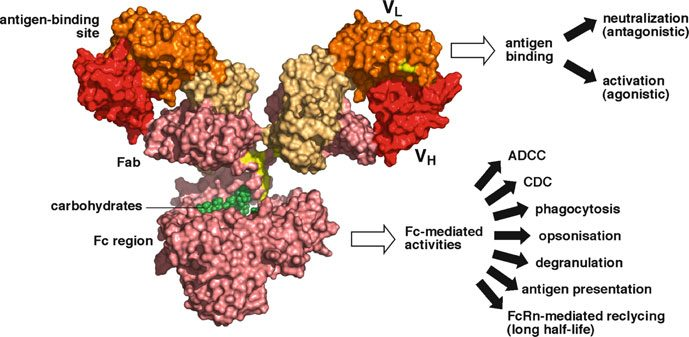
그래서 자연 항체는 이런 효과기 기능 중 하나 이상을 활용하는 다양한 치료 응용에 알맞다. 이 효과기 기능들은 단백질 공학 및 당쇄 공학(glyco-engineering)으로 더 개선될 수 있다(Carter 2006; Kubota et al. 2009).
그러나 자연 항체에는 분명한 한계도 있다. 예컨대 항체는 Fc 수용체를 발현하지 않는 T 세포를 동원할 수 없다. 게다가 단클론 항체는 단일특이성이라 서로 다른 표적을 겨냥할 수 없다. 그래서 항체가 원래 가지지 않은 새로운 활동으로 효과기 기능을 확장하는 전략이 발달했다. 치료 화합물을 직접 결합하거나 융합하는 방법, 그리고 이중특이성 항체를 이용하는 간접적인 방법이 그 예다.
1.2 이중특이성 항체의 응용
이중특이성 항체는 같은 항원 위에 있든 서로 다른 항원 위에 있든, 두 개의 서로 다른 에피토프(epitope, 항원결정기)에 결합할 수 있는 분자다. 따라서 두 분자를 연결하는 다리 역할이 가능해서, 효과기 분자·효과기 세포·바이러스·약물 운반체를 표적 구조물로 불러들일 수 있다(그림 1.2).
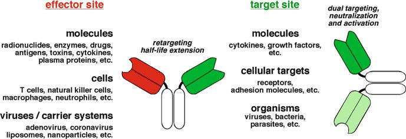
최근에는 한쪽 결합부위로 알부민 같은 혈장 단백질에 결합해 치료용 항체 분자의 반감기를 늘리는 방식도 활용된다. 나아가 성장인자 두 가지나 표적 세포 위의 두 수용체처럼 서로 다른 분자를 동시에 인식함으로써 이중표적화 전략이 가능해지고, 이는 선택성과 기능친화력을 높여 길항 또는 작용제 활성의 개선으로 이어질 수 있다(Fanger et al. 1992; Cao and Suresh 1998; van Spriel et al. 2000; Cao and Lam 2003; Thakur and Lum 2010). 그래서 이중특이성 항체의 응용 범위는 매우 넓다. 결합 개선을 통한 암 치료, 효과기 세포 재표적화를 통한 세포성 암 치료, 방사성핵종 전달에 의한 암 방사면역요법(RIT), 서로 다른 염증성 사이토카인을 표적화하는 염증질환 치료, 그리고 진단 응용까지 포괄한다.
1.3 발전 과정
정의된 특이성을 지닌 이중특이성 항체는 인공 분자로, 정상 B 세포가 만들지 않는다. 그래서 두 항체의 화학적 결합, 두 항체 생산 세포주의 융합, 혹은 재조합 이중특이성 항체 분자를 만드는 유전공학적 접근처럼 화학적·생물학적 수단으로 생산해야 한다. 유전공학의 장점은 분자 설계를 원하는 활성에 맞출 수 있다는 점이다. 가령 원자가(valency)와 크기를 조절하는 식이다.
최초의 이중특이성 항체는 1960년대 초에 보고되었는데, 두 일가 항체 제제의 산화적 재조합으로 만든 것이었다(Nisonoff and Rivers 1961). 다만 이는 학문적 흥미 수준에 머물렀고, 치료 잠재력을 지닌 이중특이성 항체가 등장하기까지는 20년이 더 필요했다. 중요한 전환점은 1975년 Köhler와 Milstein이 하이브리돔 기술을 확립하면서였다. 이로써 원하는 특이성을 미리 정해 단클론 항체를 만들 수 있게 되었다(Köhler and Milstein 1975). 1980년대 초에는 Milstein 연구팀이 서로 다른 두 하이브리돔을 융합(체세포 교잡)하면 하이브리드 하이브리돔(쿼드로마, quadroma)이 만들어지고, 그중에서 이중특이성 분자가 생산됨을 보였다(그림 1.3)(Milstein and Cuello 1983).
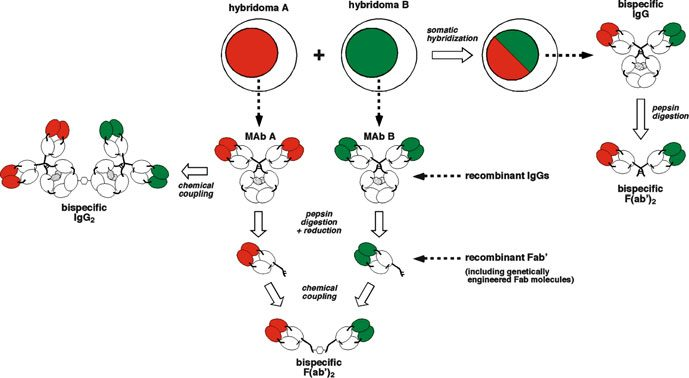
체세포 교잡으로 만든 여러 항체가 암 면역요법용으로 개발되었는데, 효과기 T 세포를 종양 세포로 재표적화하는 용도가 대표적이다(Fanger et al. 1991; van Spriel et al. 2000). 그러나 기대만큼의 성과는 없었다. 낮은 항종양 활성, Fc 영역 존재로 인한 심각한 부작용, 그리고 생쥐 유래 이중특이성 항체의 면역원성 때문에 중화 작용을 하는 인간 항생쥐 항체(HAMA)가 생산되었기 때문이다. 이후 전략은 F(ab′)2 분자 같은 이중특이성 항체 단편 사용과, 인간화 및 완전 인간 항체를 활용한 재조합 항체 도입으로 옮겨갔다. 화학적 결합뿐 아니라 유전공학으로도 이중특이성 항체를 만들게 된 것이다. 후자의 접근으로 지난 20년간 수많은 재조합 이중특이성 항체 포맷이 확립되었다. 상수 도메인을 아예 갖지 않는 소형 이중특이성 분자부터 면역글로불린 상수 도메인을 포함하는 IgG 유사 이중특이성 항체까지 다양하다(그림 1.4).
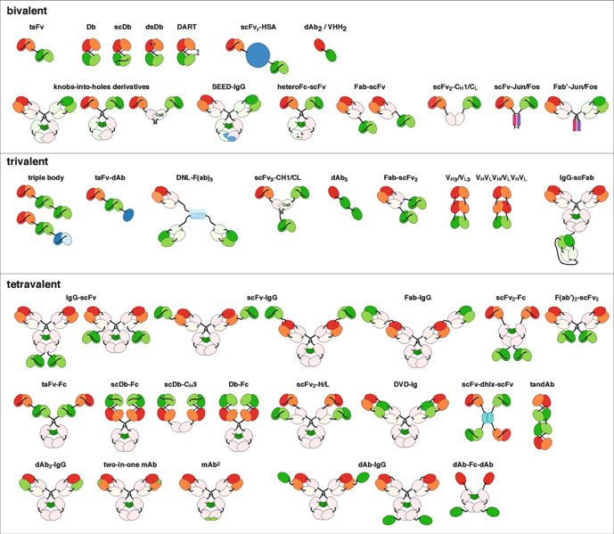
이렇게 유전공학적으로 만들어진 재조합 이중특이성 항체 중 여럿이 이미 임상시험에 진입했고(표 1.1 참조, 15장 참조), 새롭고 개선된 응용의 길을 열었다. 흥미롭게도 2009년 EMEA의 승인을 받은 첫 이중특이성 항체는 쥐와 생쥐 하이브리돔의 체세포 교잡으로 만든 이중특이성 IgG 분자였다(그림 1.5). Trion Pharma와 Fresenius Biotech가 개발한 이 항체는 효과기 T 세포를 종양 세포로 재표적화하도록 설계된 3기능성 분자군(Triomab)에 속한다(16장 참조).
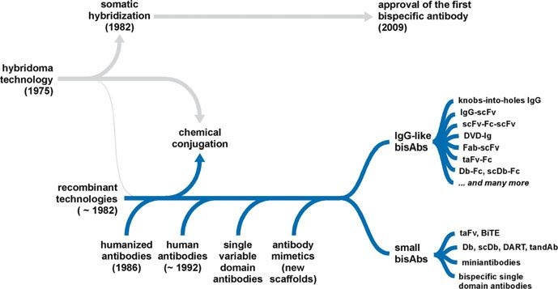
표 1.1 (원문의 역방향 OCR 표 — 임상 개발 중 재조합 이중특이성 항체 요약)
| 이름 | 형식 | 특이성 | 적응증 | 기원 |
|---|---|---|---|---|
| MDX-H210 | 2×Fab’, IgG | HER2×CD64 | 고형종양 | 인간화 |
| MDX-447 | 2×Fab’ | EGFR×CD64 | 고형종양 | 인간화 |
| r28M | TriFab, IgG-IgG | EpCAM×CD3 | 악성복수 | 생쥐/생쥐 |
| Catumaxomab | Triomab | EpCAM×CD3 | 악성복수 | 생쥐/쥐 |
| Ertumaxomab | Triomab | HER2×CD3 | 유방암 | 생쥐/쥐 |
| Bi20 (fBTA05) | Triomab | CD20×CD3 | 비호지킨림프종 | 생쥐/쥐 |
| Removab 등 | BiTE (2×scFv) | EpCAM×CD3, CD19×CD3 등 | 다양한 종양 | 인간 |
주: 원문 표는 OCR 손상으로 역전되어 있으나, 위는 해당 내용을 재구성한 것이다.
1.4 체세포 교잡에 의한 이중특이성 항체 생성
하이브리돔은 B 세포를 골수종 세포와 융합해 만들며, 그 결과 미리 정한 특이성의 단클론 항체를 생산하는 불멸 세포주가 얻어진다. 두 하이브리돔 세포를 다시 체세포 교잡하면 쿼드로마(hybrid hybridoma) 세포주가 생기고, 같은 세포 안에서 서로 다른 중쇄와 경쇄를 생산한다(Milstein and Cuello 1983)(그림 1.3)(2장 참조). 세포 내에서 중쇄와 경쇄는 무작위로 짝을 이루므로, 비기능성 분자와 단일특이성 분자, 그리고 이중특이성 분자가 섞인 혼합물이 만들어진다. 평균적으로 항체 10개 중 1개꼴로만 이중특이성이 된다(De Lau et al. 1991; Smith et al. 1992). 그래서 균질한 이중특이성 항체를 얻으려면 보통 두 개의 친화 크로마토그래피 컬럼을 잇달아 쓰는 정교한 정제 과정이 필요하다.
흥미롭게도 중쇄–경쇄 사이에서는 종(species)에 제한된 짝짓기가 관찰되었지만, 서로 다른 아이소타입이거나 서로 다른 종에서 유래한 중쇄 사이에서는 그렇지 않았다(Corvalan and Smith 1987; Koolwijk et al. 1989; Link and Weiner 1993; Lindhofer et al. 1995). 특히 서로 다른 아이소타입의 중쇄로 구성된 이중특이성 항체도 ADCC나 보체 매개 세포독성(CMC) 같은 Fc 매개 효과기 기능을 여전히 수행할 수 있었다(Koolwijk et al. 1991). 다만 이런 성질이 응용 분야에 따라선 오히려 문제가 될 수 있다. 사이토카인 방출 증후군, 혈소판감소증, 백혈구감소증 같은 Fc 매개 부작용으로 이어질 수 있기 때문이다. 이를 피하려면 펩신 소화처럼 이중특이성 항체를 단백질분해 절단해 이중특이성 F(ab′)2 분자로 만들면 된다(Warnaar et al. 1994; Tutt et al. 1995)(그림 1.3). 흥미롭게도 16장에서 더 자세히 다루겠지만, 생쥐/쥐 하이브리드 하이브리돔에서 만들어져 종양 항원과 CD3를 겨냥하는 이중특이성 항체는 치료 활성이 개선된 것으로 나타났다. 키메릭 Fc 영역을 지닌 이 3기능성 항체가 Fc 매개 면역세포 활성화를 일으키기 때문으로 설명된다(Ruf and Lindhofer 2001).
40 mg/m²와 75 mg/m² 용량의 이중특이성 항체를 투여하고 5일 뒤 ¹³¹I-di-DTPA-인듐 헵텐의 활성을 단계적으로 올리는 방식이었다. 75 mg/m² 항체를 받은 환자의 64%에서 질병 안정화가 관찰되었지만, 이들 환자에서 독성도 더 높게 나타났다. 갑상선수질암(MTC) 환자에서 최대내용활성은 3 GBq였다. 이 연구의 결론은 40 mg/m²의 이중특이성 항체 용량과 5일 간격이 허용 가능한 독성 범위 안에서 더 나은 용량·투여 일정이라는 것이었다.
1.9 이중표적화 전략
다른 어떤 항체와 마찬가지로, 이중특이성 항체도 표적 분자의 활성화나 억제에 관여하는 에피토프에 결합함으로써 작용제 또는 길항제로 기능할 수 있다. 길항 항체의 치료적 활용은 종양괴사인자(TNF) 같은 염증성 사이토카인을 겨냥한 항체에서 가장 잘 드러난다. 항체(아달리무맙, 인플릭시맙)나 가용성 수용체-Fc 융합 단백질(에타너셉트)로 TNF가 두 수용체(TNFR1, TNFR2)에 결합하는 것을 막는 요법은 류마티스관절염 같은 만성 염증질환에서 놀라운 치료 효과를 보였다(Kontermann et al. 2009). 개념적으로 이중특이성 항체는 두 가지 방식으로 쓰일 수 있다. 같은 사이토카인이나 수용체 위의 서로 다른 에피토프에 동시에 결합해 하나의 사이토카인 중화를 강화하거나, 서로 다른 두 사이토카인이나 수용체를 동시에 결합·중화해 질병을 두 지점에서 공격하는 것이다(그림 1.8). 여러 연구에서 이런 이중특이성 항체가 길항제 또는 작용제로서 우월함을 보였다.
예컨대 혈관내피세포 성장인자 수용체 2(VEGFR2) 위의 두 에피토프를 겨냥한 이중특이성 디아보디는 VEGF가 수용체에 결합하는 것을 효율적으로 차단했고, VEGF가 유도하는 수용체 활성화와 내피세포의 유사분열을 억제했다. 반면 각각의 부모 scFv 단편은 어느 쪽도 억제 활성을 보이지 않았다(Lu et al. 1999). T 세포 항원 CD2의 두 에피토프를 겨냥한 이중특이성 tandem scFv-Fc 융합 단백질은 두 단클론 항체를 조합한 것보다 증강된 유사분열 촉진 활성을 보였다(Connelly et al. 1998). CTLA-4의 두 에피토프에 결합하는 이중특이성 tandem scFv는 아예 CTLA-4를 T 세포의 억제자에서 활성자로 바꿔놓기까지 했다(Madrenas et al. 2004). 이런 T 세포 활성화형 이중특이성 항체는 백신 접종이나 암 면역요법에서 면역을 증폭시키는 임상 응용을 찾을 수 있을 것이다.
서로 다른 두 표적 분자에 결합하는 이중특이성 항체에서는 억제 활성이 강화된 사례가 보고되었다(Marvin and Zhu 2006). 예를 들어 VEGF 수용체 2와 3을 인식하는 이중특이성 항체(디아보디, 디아보디-Fc 융합 단백질)는 VEGF의 결합과 리간드가 유도하는 내피세포 이동을 효율적으로 억제했다(Lu et al. 2001, 2003; Jimenez et al. 2005). 마찬가지로 EGF 수용체와 IGF 수용체에 대한 특이성을 지닌 IgG 유사 4가 이중특이성 항체(디아보디-Fc, scFv₂-H/L쇄 융합 단백질)는 EGF와 IGF의 결합을 막고 신호전달 활성화를 억제했다(Lu et al. 2004). 이 분자들은 Fc 영역으로 ADCC를 매개할 수도 있었다. 동물 실험에서 이미 서로 다른 두 인간 종양 이종이식 모델 모두에서 종양 성장 감소가 확인되었다(Lu et al. 2005).
최근에는 여러 질병 매개체를 중화하기 위한 새로운 이중특이성 4가 IgG 유사 분자인 이중가변도메인 면역글로불린(DVD-Ig)이 보고되었다(Wu et al. 2007). 이 분자들은 포유류 세포주(예: CHO)에서 일반 IgG 분자와 비슷한 수득률로 생산되었다. IL-12와 IL-18을 겨냥한 DVD-Ig는 두 사이토카인에 동시에 결합할 수 있었고, 사이토카인 활성을 효율적으로 중화했다. 한편 탈면역화(deimmunized) 기술의 발전도 주목할 만하다. CD22와 CD19를 동시에 인식하는 이중표적화 독소에서 중화 항독소 항체 형성이 약 80% 줄어들어, 반복 약물 치료가 가능해졌다는 보고가 있다(Vallera et al. 2010).
1.10 이중특이성 항체와 반감기 연장
대부분의 치료 응용에서는 치료 유효 농도를 오랜 기간 유지하기 위해 순환시간이 길 것이 바람직하다(Mahmood and Green 2005). 사람에서 IgG1, IgG2, IgG4 아클래스의 IgG 분자는 대략 3~4주의 순환 반감기를 보인다(Ternant and Paintaud 2005; Lobo et al. 2004). 그래서 면역글로불린은 혈장 단백질 중 가장 긴 반감기를 자랑한다. 사람에서 이와 비슷한 약 19일의 반감기를 지닌 유일한 혈장 단백질은 알부민이다. IgG 항체와 알부민의 긴 순환시간은 낮은 신장 제거율과 신생아 Fc 수용체(FcRn, Brambell 수용체)가 매개하는 재활용 과정 덕분이다(Roopenian and Akilesh 2007).
공학적으로 축소된 항체 분자와 Fc 영역이 없는 분자는 순환계에서 빠르게 제거된다. 예컨대 scFv 단편은 초기 반감기가 몇 분에 불과하고 말기 반감기도 1~4시간 정도다. 소형 재조합 이중특이성 항체 분자 대부분 역시 빠른 클리어런스를 보인다. 그래서 이런 분자들의 순환시간을 늘리는 여러 전략이 개발되었다. 전략은 크게 두 갈래로 나뉜다. 첫째는 겉보기 분자량과 유체역학적 반경을 늘려 신장 클리어런스를 줄이는 것으로, PEGylation이 대표적이다. 둘째는 여기에 더해 FcRn 매개 재활용 과정을 활용하는 것으로, 리뷰는 Kontermann 2009를 참조하라. 후자는 알부민과 면역글로불린처럼 오래 순환하는 혈장 단백질에 결합하는 방식으로 실현된다. 실제로 한쪽 결합부위로 사이토카인이나 세포 표면 수용체 같은 치료 표적에, 다른 결합부위로 알부민에 결합하는 소형 이중특이성 항체가 만들어진 바 있다(Smith et al. 2001; Roovers et al. 2007).
1.11 결론
주로 세포성 암 면역요법을 위해 개발된 이중특이성 항체의 초기 임상시험은 대체로 실망스러웠다. 저효능, 심각한 부작용, 생쥐 항체에서 비롯된 면역원성이 주된 원인이었다. 하지만 지난 몇 년간 상황이 크게 달라졌다. 많은 새로운 이중특이성 항체 포맷이 확립되었을 뿐 아니라, 염증질환 치료 같은 새로운 적응증까지 등장한 이중표적화 분야가 그 중심이다. 따라서 가까운 장래에 더 많은 이중특이성 항체가 임상시험에 진입할 것으로 기대된다.
참고문헌
- Alt M, Müller R, Kontermann RE (1999) Novel tetravalent and bispecific IgG-like antibody molecules combining single-chain diabodies with the immunoglobulin g1 Fc or C(H)3 region. FEBS Lett 454:90–94
- Amoroso RA, Alpaugh RK, Barth MW, McCall AM, Weiner LM (1999) Production and characterization of mice transgenic for the A and B isoforms of human FcgRIII. Cancer Immunol Immunother 48:443–455
- Asano R, Watanabe Y, Kawaguchi H, Fukazawa H, Nakanishi T, Umetsu M, Hayasi H, Katayose Y, Unno M, Kudo T, Kumagai I (2007) Highly effective recombinant format of a humanized IgG-like bispecific antibody for cancer immunotherapy with retargeting of lymphocytes to tumor cells. J Biol Chem 282:27659–27665
- Atwell S, Ridgway JBB, Wells JA, Carter P (1997) Stable heterodimers from remodelling the domain interface of a homodimer using a phage display library. J Mol Biol 270:26–35
- Biburger M, Weth R, Wels WS (2005) A novel bispecific tetravalent antibody fusion protein to target costimulatory activity for T-cell activation to tumor cells overexpressing ErbB2/HER2. J Mol Biol 346:1299–1311
- Bostrom J, Yu SF, Kan D, Appleton BA, Lee CV, Billeci K, manW, PealeF, RossS, WiesmannC, Fuh G (2009) Variants of the antibody herceptin that interact with HER2 and VEGF at the antigen binding site. Science 323:1610–1614
- Brandão JG, Scheper RJ, Lougheed SM, Curiel DT, Tillman BW, Gerritsen WR, van den Eertwegh AJ, Pinedo HM, Haisma HJ, de Gruijl TD (2003) CD40-targeted adenoviral gene transfer to dendritic cells through the use of a novel bispecific single-chain Fv antibody enhances cytotoxic T cell activation. Vaccine 21:2268–2272
- Brekke OH, Sandlie I (2003) Therapeutic antibodies for human diseases at the dawn of the twenty first century. Nat Rev Drug Discov 2:52–62
- Brennan M, Davison PF, Paulus H (1985) Preparation of bispecific antibodies by chemical recombination of monoclonal immunoglobulin G1 fragments. Science 229:81–83
- Cao Y, Lam L (2003) Bispecific antibody conjugates in therapeutics. Adv Drug Deliv Rev 55:171–197
- Cao Y, Suresh MR (1998) Bispecific antibodies as novel bioconjugates. Bioconjug Chem 9:635–644
- Carter P (2001) Bispecific human IgG by design. J Immunol Meth 248:7–15
- Carter PJ (2006) Potent antibody therapeutics by design. Nat Rev Immunol 6:343–357
- Chan AC, Carter PJ (2010) Therapeutic antibodies for autoimmunity and inflammation. Nat Rev Immunol 10:301–316
- Chang CH, Sharkey RM, Rossi EA, Karacay H, McBride W, Hansen HJ, Chatal JF, Barbet J, Goldenberg DM (2002) Molecular advances in pretargeting radioimmunotherapy with bispecific antibodies. Mol Cancer 1:553–563
- Cochlovius B, Kipriyanov SM, Stassar MJJG, Schuhmacher J, Benner A, Moldenhauer G, Little M (2000) Cure of Burkitt’s lymphoma in severe combined immunodeficiency mice by T cells, tetravalent CD3 x CD19 tandem diabody, and CD28 costimulation. Cancer Res 60:4336–4341
- Coloma MJ, Morrison SL (1997) Design and production of novel tetravalent bispecific antibodies. Nat Biotechnol 15:159–163
- Connelly RJ, Hayden MS, Scholler JK, Tsu TT, Dupont B, Ledbetter JA, Kanner SB (1998) Mitogenic properties of a bispecific single-chain Fv-Ig fusion generated from CD2-specific mAb to distinct epitopes. Int Immunol 10:1863–1872
- Corvalan JR, Smith W (1987) Construction and characterisation of a hybrid-hybrid monoclonal antibody recognising both carcinoembryonic antigen (CEA) and vinca alkaloids. Cancer Immunol Immunother 24:127–132
- Curnow RT (1997) Clinical experience with CD64-directed immunotherapy. An overview. Cancer Immunol Immunother 45:210–215
- de Gast GC, van de Winkel JGJ, Bast BEJEG (1997) Clinical perspectives of bispecific antibodies in cancer. Cancer Immunol Immunother 45:121–123
- de Kruif J, Logtenberg T (1996) Leucine zipper dimerized bivalent and bispecific scFv antibodies from a semisynthetic antibody phage display library. J Biol Chem 271:7630–7634
- de Lau WB, Keije K, Neefjes JJ, Oosterwegel M, Rozemüller E, Blast BJ (1991) Absence of preferential homologous H/L chain association in hybrid hybridomas. J Immunol 146:906–914
- Deo YM, Sundarapandiyan K, Keler T, Wallace PK, Graziano RF (1998) Bispecific molecules directed to the Fc receptor for IgA (Fc alpha RI, CD89) and tumor antigens efficiently promote cell-mediated cytotoxicity of tumor targets. J Leukoc Biol 63:515–523
- Gautherot E, Bouhou J, Le Doussal JM, Manetti C, MartinM, RouvierE, BarbetJ (1997) Therapy of colon carcinoma xenografts with bispecific antibody-targeted, iodine-131-labeled bivalent hapten. Cancer 80(Suppl):2618–2623
- Gerstmayer B, HoffmannM, AltenschmidtU, WelsW (1997) Costimulation of T-cell proliferation by a chimeric B7-antibody fusion protein. Cancer Immunol Immunother 45:156–158
- Getts DR, Getts MT, McCarthy DP, Chastain EML, Miller SD (2010) Have we overestimated the benefit of human(ized) antibodies? mAbs 2:682–694
- Glennie MJ, McBride HM, Worth AT, Stevenson GT (1987) Preparation and performance of bispecific F(ab’gamma)2 antibody containing thioether-linked Fab’gamma fragments. J Immunol 139:2367–2375
- Goldenberg DM (2003) Advancing role of radiolabeled antibodies in the therapy of cancer. Cancer Immunol Immunother 52:281–296
- Goldenberg DM, Sharkey RM (2010) Radioactive antibodies: a historical review of selective targeting and treatment of cancer. Hosp Pract 38:82–93
- Goldenberg DM, Chatal JF, Barbet J, Boerman O, Sharkey RM (2007) Cancer imaging and therapy with bispecific antibody pretargeting. Update Cancer Ther 2:19–31
- Graziano RF, Guptill P (2004) Chemical production of bispecific antibodies. Meth Mol Biol 283:71–85
- Grosse-Hovest L, Müller S, Minoia R, Wolf E, Zakhartchenko V, Wenigerkind H, Lassnig C, Besenfelder U, MüllerM, LyttonSD, JungG, BremG (2004) Cloned transgenic farm animals produce a bispecific antibody for T cell-mediated tumor cell killing. Proc Natl Acad Sci USA 101:6858–6863
- Gruaz-Guyon A, Raguin O, Barbet J (2005) Recent advances in pretargeted radioimmunotherapy. Curr Med Chem 12:319–338
- GunasekaranK, PentonyM, ShenM, GarrettL, ForteC, WoodwardA, NgSB, BornT, RetterM, Mnachulenko K, Sweet H, Foltz IN, Wittekind M, Yan W (2010) Enhancing antibody Fc heterodimer formation through electrostatic steering effects: applications to bispecific molecules and monovalent IgG. J Biol Chem 18:19637–19646
- Hartmann F, Renner C, Jung W, DeistingC, JuwanaM, EichentopfB, KloftM, PfreundschuhM (1997) Treatment of refractory Hodgkin’s disease with an anti-CD16/CD30 bispecific antibody. Blood 89:2042–2047
- James ND, Atherton PJ, Jones J, Howie AJ, TchekmedyianS, CurnowRT (2001) A phase II study of the bispecific antibody MDX-H210 (anti-HER2xCD64) with GM-CSF in HER2+ advanced prostate cancer. BJ Cancer 85:152–156
- Jimenez X, LuD, BrennanL, PersaudK, LiuM, MiaoH, WitteL, ZhuZ (2005) A recombinant, fully human, bispecific antibody neutralizes the biological activities mediated by both vascular endothelial growth factor receptors 2 and 3. Mol Cancer Ther 4:427–434
- Johnson S, Burke S, HuangL, GorlatovS, LimH, WangmW, ZhangmW, TuaillonN, RaineymJ, BaratmB, YangmY, Jinm L, Ciccaronem V, Moorem PA, Koenigm S, Bonvini E (2010) Effector cell recruitment with novel Fv-based dual-affinity re-targeting protein leads to potent tumor cytolysis and in vivo B-cell depletion. J Mol Biol 399:436–449
- Kellner C, Bruenke J, Stieglmaier J, Schwemmlein M, Schwenkert M, Singer H, Mentz K, Peipp M, Lang P, Oduncu F, Stockmeyer B, Fey GH (2008) A novel CD19-directed recombinant bispecific antibody derivative with enhanced immune effector functions for human leukemic cells. J Immunother 31:871–884
- Kipriyanov SM, Moldenhauer G, Schuhmacher J, Cochlovius B, Von der Lieth CW, Matys ER, Little M (1999) Bispecific tandem diabody for tumor therapy with improved antigen binding and pharmacokinetics. J Mol Biol 293:41–56
- Kipriyanov SM, Cochlovius B, Schäfer HJ, Moldenhauer G, Bähre A, Le Gall F, Knackmuss S, Little M (2002) Synergistic antitumor effect of bispecific CD19xCD3 and CD19xCD16 diabodies in a preclinical model of non-Hodgkin’s lymphoma. J Immunol 169:137–144
- Köhler G, Milstein C (1975) Continuous cultures of fused cells secreting antibody of predefined specificity. Nature 256:495–497
- Kontermann RE (2005) Recombinant bispecific antibodies for cancer therapy. Acta Pharmacol Sin 26:1–9
- Kontermann RE (2009) Strategies to extend plasma half-lives of recombinant antibodies. BioDrugs 23:93–109
- Kontermann RE (2010) Alternative antibody formats. Curr Opin Mol Ther 12:176–183
- Kontermann RE, Scheurich P, Pfizenmaier K (2009) Antagonists of TNF action: clinical experience and new developments. Expert Opin Drug Discov 4:279–292
- Lewis LD, Cole BF, Wallace PK, Fisher JL, Waugh M, Guyre PM, Fanger MW, Curnow RT, Kaufman PA, Ernstoff MS (2001) Pharmacokinetic-pharmacodynamic relationship of the bispecific antibody MDX-H210 when administered in combination with interferon gamma: a multiple-dose phase-I study in patients with advanced cancer which overexpresses HER-2/neu. J Immunol Meth 248:149–165
- Lindhofer H, Mocika R, Steipe B, Thierfelder S (1995) Preferential species-restricted heavy/light chain pairing in rat/mouse quadromas. Implications for a single-step purification of bispecific antibodies. J Immunol 155:219–225
- Link BK, Weiner GJ (1993) Production and characterization of a bispecific IgG capable of inducing T-cell-mediated lysis of malignant B cells. Blood 81:3343–3349
- Lobo ED, Hansen RJ, Balthasar JP (2004) Antibody pharmacokinetics and pharmacodynamics. J Pharm Sci 93:2645–2668
- Löffler A, Kufer P, Lutterbüse R, Zettl F, Daniel PT, Schwenkenbecher JM, Riethmüller G, Dörken B, Bargou RC (2000) A recombinant bispecific single-chain antibody, CD19xCD3, induces rapid and high lymphoma-directed cytotoxicity by unstimulated T lymphocytes. Blood 95:2089–2103
- Lu D, Kotanides H, Jimenez X, Zhou Q, Persaud K, Bohlen P, Witte L, Zhu Z (1999) Acquired antagonistic activity of a bispecific diabody directed against two different epitopes on vascular endothelial growth factor receptor 2. J Immunol Meth 230:159–171
- Lu D, Jimenez X, Zhang H, Wu Y, Bohlen P, Witte L, Zhu Z (2001) Complete inhibition of vascular endothelial growth factor (VEGF) activities with a bifunctional diabody directed against both VEGF kinase receptors, fms-like tyrosine kinase receptor and kinase insert domain-containing receptor. Cancer Res 61:7002–7008
- Lu D, Jimenez X, Zhang H, Bohlen P, Witte L, Zhu Z (2002) Fab-scFv fusion protein: an efficient approach to production of bispecific antibody fragments. J Immunol Meth 267:213–226
- Lu D, Jimenez X, Zhang H, Atkins A, Brennan L, Balderes P, Bohlen P, Witte L, Zhu Z (2003) Di-diabody: a novel tetravalent bispecific antibody molecule by design. J Immunol Meth 279:219–232
- Lu D, Zhang H, Ludwig D, Persaud A, Jimenez X, Burtrum D, Balderes P, Liu M, Bohlen P, Witte L, Zhu Z (2004) Simultaneous blockade of both the epidermal growth factor receptor and the insulin-like growth factor receptor signaling pathways in cancer cells with a fully human recombinant bispecific antibody. J Biol Chem 279:2856–2865
- Lu D, Zhang H, Koo H, Tonra J, Balderes P, Prewett M, Corcoran E, Mangalampalli V, Bassi R, Anselma D, Patel D, Kang X, Ludwig DL, Hicklin DJ, Bohlen P, Witte L, Zhu Z (2005) A fully human recombinant IgG-like bispecific antibody to both the epidermal growth factor receptor and the insulin-like growth factor receptor for enhanced antitumor activity. J Biol Chem 280:19665–19672
- Lum LG, Davol PA (2005) Retargeting T cells and immune effector cells with bispecific antibodies. Cancer Chemother Biol Response Modif 22:273–291
- Madrenas J, Chau LA, Teft WA, Wu PW, Jussif J, Klasa S, Harder KW, Charest DL (2004) Conversion of CTLA-4 from inhibitor to activator of T cells with a bispecific tandem single-chain Fv ligand. J Immunol 172:5948–5956
- Marvin JS, Zhu Z (2006) Recombinant approaches to IgG-like bispecific antibodies. Acta Pharmacol Sin 26:649–658
- McCall AM, Shahied L, Amoroso AR, Horak EM, Simmons HH, Nielson U, Adams GP, Schier R, Marks JD, Weiner LM (2001) Increasing the affinity for tumor antigen enhances bispecific antibody cytotoxicity. J Immunol 166:6112–6117
- Merchant AM, Zhu Z, Yuan JQ, Goddard A, Adams CW, Presta LG, Carter P (1998) An efficient route to human bispecific IgG. Nat Biotechn 16:677–681
- Michaelson JS, Demarest SJ, Miller B, Amatucci A, William S, Wu X, Huang F, Pfan S, Gao S, Doern A et al (2009) Anti-tumor activity of stability-engineered IgG-like bispecific antibodies targeting TRAIL-R2 and LTbR. mAbs 1:128–141
- Milstein C, Cuello AC (1983) Hybrid hybridomas and their use in immunohistochemistry. Nature 305:537–540
- Morandeau L, Benoist E, Loussouarn A, Quadi A, Lesaec P, Mougin M, Faivre-Chauvet A, Le Boterff J, Chatal JF, Barbet J, Gestin JF (2005) Synthesis of new bivalent peptides for applications in the affinity enhancement system. Bioconjugat Chem 16:184–193
- Müller D, Kontermann RE (2007) Recombinant bispecific antibodies for cellular cancer immunotherapy. Curr Opin Mol Ther 9:319–326
- Müller D, Kontermann RE (2010) Bispecific antibodies for cancer immunotherapy: current perspectives. BioDrugs 24:89–98
- Müller KM, Arndt KM, Plückthun A (1998a) A dimeric bispecific miniantibody combines two specificities with avidity. FEBS Lett 432:45–49
- Müller KM, Arndt KM, Strittmatter W, Plückthun A (1998b) The first constant domain (CH1 and CL) of an antibody used as heterodimerisation domain for bispecific miniantibodies. FEBS Lett 422:259–264
- Müller D, Karle A, Meißburger B, Höfig I, Stork R, Kontermann RE (2007) Improved pharmacokinetics of recombinant bispecific antibody molecules by fusion to human serum albumin. J Biol Chem 282:12650–12660
- Nisonoff A, Rivers MM (1961) Recombination of a mixture of univalent antibody fragments of different specificity. Arch Biochem Biophys 93:460–462
- Orcutt KD, Ackerman ME, Cieslewicz M, Quiroz E, Slusarczyk AL, Frangioni JV, Wittrup KD (2010) A modular IgG-scFv bispecific antibody topology. Protein Eng Des Sel 23:221–228
- Pack P, Plückthun A (1992) Miniantibodies: use of amphipathic helices to produce functional flexibly linked dimeric Fv fragments with high affinity in Escherichia coli. Biochemistry 31:1579–1584
- Peipp M, Valerius T (2002) Bispecific antibodies targeting cancer cells. Biochem Soc Trans 30:507–511
- Reusch U, Le Gall F, Hensel M, Moldenhauer G, Ho AD, Little M, Kipriyanov SM (2004) Effect of tetravalent bispecific CD19xCD3 recombinant antibody construct and CD28 costimulation on lysis of malignant B cells from patients with chronic lymphocytic leukaemia by autologous T cells. Int J Cancer 112:509
- Ridgeway JB, Presta LG, Carter P (1996) “Knobs-into-holes” engineering of antibody CH3 domains for heavy chain heterodimerization. Protein Eng 9:617–621
- Rohrbach F, Gerstmayer B, Biburger M, Wels W (2000) Construction and characterization of bispecific costimulatory molecules containing a minimized CD86 (B7-2) domain and single-chain antibody fragments for tumor targeting. Clin Cancer Res 6:4314–4322
- Roopenian DC, Akilesh S (2007) FcRn: the neonatal Fc receptor comes of age. Nat Rev Immunol 7:715–725
- Roovers RC, Laeremans T, Huang L, De Taeye S, Verkleij AJ, Revets H, de Haard HJ, van Bergen en Henegouwen PMP (2007) Efficient inhibition of EGFR signalling and of tumor growth by antagonistic anti-EGFR nanobodies. Cancer Immunol Immunother 56:303–317
- Rossi EA, Goldenberg DM, Cardillo TM, McBride WJ, Sharkey RM, Chang CH (2006) Stably tethered multifunctional structures of defined composition made by the dock and lock method for use in cancer targeting. Proc Natl Acad Sci USA 103:6841–6846
- Ruf P, Lindhofer H (2001) Induction of a long-lasting antitumor immunity by a trifunctional bispecific antibody. Blood 98:2526–2534
- Russell JH, Ley TJ (2002) Lymphocyte-mediated cytotoxicity. Annu Rev Immunol 20:323–370
- Saerens D, Ghassabeh GH, Muyldermans S (2008) Single-domain antibodies as building blocks for novel therapeutics. Curr Opin Pharmacol 8:600–608
- Schlereth B, Fichtner I, Lorenczewski G, Kleindienst P, Brischwein K, da Silva A, Kufer P, Lutterbüse R, Juhnhahn I, Kasimir-Bauer S, Wimberger P, Kimmig R, Baeuerle PA (2005) Eradication of tumors from a human colon cancer cell line and from ovarian cancer metastases in immunodeficient mice by a single-chain Ep-CAM-/CD3-bispecific antibody construct. Cancer Res 65:2882–2889
- Schneider MA, Bruhl H, WechselbergerA, CihakJ, StangassingerM, SchlondorffD, MackM (2005) In vitro and in vivo studies
- Smith BJ, Popplewell A, Athwal D, Chapman AP, Heywood S, West SM, Carrington B, Nesbitt A, Lawson AD, Antoniw P, Eddelston A, Suittler A (2001) Prolonged in vivo residence times of antibody fragments associated with albumin. Bioconjug Chem 12:7450–7756
- Stockmeyer B, Elsässer D, Dechant M, Repp R, Gramatzki M, Glennie MJ, van de Winkel JGJ, Valerius T (2001) Mechanisms of G-CSF- or GM-CSF-stimulated tumor cell killing by Fc receptor-directed bispecific antibodies. J Immunol Meth 248:103–111
- Ternant D, Paintaud G (2005) Pharmacokinetics and concentration-effect relationships of therapeutic monoclonal antibodies and fusion proteins. Expert Opin Biol Ther 5:S37–S47
- Thakur A, Lum LG (2010) Cancer therapy with bispecific antibodies: clinical experience. Curr Opin Mol Ther 12:340–349
- Tutt AL, Reid R, Wilkins BS, Glennie MJ (1995) Activation and preferential expansion of rat cytotoxic (CD8) T cells in vitro and in vivo with a bispecific (anti-TCRa/b x anti-CD2) F(ab’)2 antibody. J Immunol 155:2960–2971
- Valerius T, Würflein D, Stockmeyer B, Repp R, Kalden JR, Gramatzki M (1997) Activated neutrophils as effector cells for bispecific antibodies. Cancer Immunol Immunother 45:142–145
- Vallera DA, Chen H, Sichender AR, Panoskaltsis-Mortari A, Taras EP (2009) Genetic alteration of a bispecific ligand-directed toxin targeting human CD19 and CD22 receptors resulting in improved efficacy against systemic B cell malignancies. Leuk Res 33:1233–1242
- Vallera DA, Oh S, Chen H, Shu Y, Frankel AE (2010) Bioengineering a unique deimmunized bispecific targeted toxin that simultaneously recognizes human CD22 and CD19 receptors in a mouse model of B-cell metastasis. Mol Cancer Ther 9:1872–1883
- van Spriel AB, van Ojik HH, van de Winkel JGJ (2000) Immunotherapeutic perspective for bispecific antibodies. Immunol Today 21:391–396
- Völkel T, Korn T, Bach M, Müller R, Kontermann RE (2001) Optimized linker sequences for the expression of monomeric and dimeric bispecific single-chain diabodies. Protein Eng 14:815–823
- Wallace PK, Kaufman PA, Lewis LD, Keler T, Givan AL, Fisher JL, Waugh MG, Wa…
- Xie Z, Guo N, Yu M, Hu M, Shen B (2005) A new format of bispecific antibody: highly efficient heterodimerization, expression and tumor cell lysis. J Immunol Meth 296:95–101
- Zeidler R, Mysliwietz J, Csanady M, Walz A, Ziegler I, Schmitt B, Wollenberg B, Lindhofer H (2000) The Fc-region of a new class of intact bispecific antibody mediates activation of accessory cells and NK cells and induces direct phagocytosis of tumor cells. Br J Cancer 83:261–266
- Zeidler R, Mayer A, Gires O, Schmitt B, Mack BM, Lindhofer H, Wollenberg B, Walz A (2001) TNFa contributes to the antitumor activity of a bispecific, trifunctional antibody. Anticancer Res 21:3499–3503
- Zhu Z, Presta LG, Zapata G, Carter P (1997) Remodeling domain interfaces to enhance heterodimer formation. Protein Sci 6:781–788
- Zuo Z, Jimenez X, Witte L, Zhu Z (2000) An efficient route to the production of an IgG-like bispecific antibody. Protein Eng 13:361–367
- Smith BJ, Popplewell A, Athwal D, Chapman AP, Heywood S, West SM, Carrington B, Nesbitt A, Lawson AD, Antoniw P, Eddelston A, Suittler A (2001) Prolonged in vivo residence times of antibody fragments associated with albumin. Bioconjug Chem 12:7450–7756
- Stockmeyer B, Elsässer D, Dechant M, Repp R, Gramatzki M, Glennie MJ, van de Winkel JGJ, Valerius T (2001) Mechanisms of G-CSF- or GM-CSF-stimulated tumor cell killing by Fc receptor-directed bispecific antibodies. J Immunol Meth 248:103–111
- Ternant D, Paintaud G (2005) Pharmacokinetics and concentration-effect relationships of therapeutic monoclonal antibodies and fusion proteins. Expert Opin Biol Ther 5:S37–S47
- Thakur A, Lum LG (2010) Cancer therapy with bispecific antibodies: clinical experience. Curr Opin Mol Ther 12:340–349
- Tutt AL, Reid R, Wilkins BS, Glennie MJ (1995) Activation and preferential expansion of rat cytotoxic (CD8) T cells in vitro and in vivo with a bispecific (anti-TCRa/b x anti-CD2) F(ab’)2 antibody. J Immunol 155:2960–2971
- Valerius T, Würflein D, Stockmeyer B, Repp R, Kalden JR, Gramatzki M (1997) Activated neutrophils as effector cells for bispecific antibodies. Cancer Immunol Immunother 45:142–145
- Vallera DA, Chen H, Sichender AR, Panoskaltsis-Mortari A, Taras EP (2009) Genetic alteration of a bispecific ligand-directed toxin targeting human CD19 and CD22 receptors resulting in improved efficacy against systemic B cell malignancies. Leuk Res 33:1233–1242
- Vallera DA, Oh S, Chen H, Shu Y, Frankel AE (2010) Bioengineering a unique deimmunized bispecific targeted toxin that simultaneously recognizes human CD22 and CD19 receptors in a mouse model of B-cell metastasis. Mol Cancer Ther 9:1872–1883
- van Spriel AB, van Ojik HH, van de Winkel JGJ (2000) Immunotherapeutic perspective for bispecific antibodies. Immunol Today 21:391–396
- Völkel T, Korn T, Bach M, Müller R, Kontermann RE (2001) Optimized linker sequences for the expression of monomeric and dimeric bispecific single-chain diabodies. Protein Eng 14:815–823 # 제2장 하이브리드 하이브리돔으로부터의 이중특이성 항체
Gerhard Moldenhauer
2.1 서론
하이브리드 하이브리돔(쿼드로마 또는 테트라도마라고도 부른다)은 서로 다른 두 특이성을 지닌 이중특이성 항체(bsAb)를 분비하면서 두 개의 서로 다른 분자를 가교할 수 있는 인공 세포주다. 이런 항체는 자연계에 존재하지 않으며, 원래 면역조직화학 염색 절차와 면역분석법을 개선하기 위해 개발되었다(Milstein and Cuello 1983; Suresh et al. 1986). 흥미롭게도 면역글로불린을 생산하는 두 골수종 세포의 융합(Cotton and Milstein 1973)은 단클론 항체 기술의 기념비적 논문(Köhler and Milstein 1975)보다 먼저 보고되어 있었다. 이 초기 실험은 잡종 세포에서 양쪽 부모의 면역글로불린 유전자가 발현됨을 보여준 것으로, 대립유전자 배제(allelic exclusion), 즉 정상 조건에서 각 B 림프구가 가능한 두 대립유전자 중 하나에 해당하는 항체만 만든다는 현상을 더 잘 이해하려는 목적이었다.
이후 몇 년 사이 면역학적 효과기 세포나 분자를 종양 세포 쪽으로 방향 전환하는 데 이중특이성 항체를 쓸 수 있다는 사실이 분명해졌다. 많은 효과기 세포를 동원하고 고전적인 항종양 반응이 지닌 여러 약점을 피할 수 있다는 점에서, 면역 반응을 종양 부위로 집중시키는 개념은 매력적인 발전을 거듭했다(Fanger et al. 1992; Renner and Pfreundschuh 1995; van Spriel et al. 2000; Müller and Kontermann 2007a).
기본적으로 이중특이성 항체를 얻는 방법은 세 가지다. 1세대 이중특이성 항체는 서로 다른 면역글로불린 Fab’ 단편을 경첩 부위에서 화학적으로 결합하거나(Glenie et al. 1987), 두 하이브리돔 세포주를 융합해 다른 면역글로불린 조합과 함께 이중특이성 항체를 분비하는 쿼드로마 세포를 만드는 방식으로 생산되었다(Milstein and Cuello 1983). 일부 초기 시약은 특정 악성질환 치료에서 눈부신 효능을 보였지만, 대부분은 독성과 낮은 치료 역량 때문에 처음의 높은 기대를 충족시키지 못했다. 유전공학의 발전은 크기와 결합 강도가 서로 다른 2세대 이중특이성 분자의 제작을 용이하게 했다. 재조합 이중특이성 구조물은 이중특이성 항체의 부활을 열어주었고, 개량형 항체라는 새로운 유형에 대한 관심을 되살렸다(Little et al. 2000; Kufer et al. 2004; Weiner 2007; Müller and Kontermann 2007b, 2010; Chames and Baty 2009a, b; Beck et al. 2010; Chan and Carter 2010). 이 장에서는 하이브리드 하이브리돔 제작의 원리를 설명하고, 이중특이성 항체의 스크리닝·정제 절차를 개괄한 뒤, 이 특수한 부류의 항체가 효과기 기능을 발휘하는 기전을 정리한다. 명확성을 위해 논의를 주로 암 연구와 종양학/혈액학 분야로 한정한다.
2.2 세포 융합에 의한 하이브리드 하이브리돔 제작
두 개의 무한 증식 하이브리돔 주를 융합하는 주된 목표는 결과로 나온 잡종을 선별하고 융합되지 않은 부모 세포와 하이브리돔 내부 융합 세포를 걸러내는 것이다. 이는 화학적 선별 절차나 세포 분류 기술로 달성할 수 있다(Segal and Bast 2001).
2.2.1 선별 마커 도입
화학적 선별의 경우 한 하이브리돔 주에서 hypoxanthine guanine phosphoribosyl transferase(HGPRT) 유전자 돌연변이를 유도할 수 있다(Chervonsky et al. 1988). HGPRT 음성 변이주는 8-아자구아닌이나 6-티오구아닌 같은 독성 퓨린 유사체가 든 배지에서 배양해 선별한다. 이 효소를 지닌 세포는 독성 뉴클레오티드가 들어온 뒤 죽는다. 효소가 X염색체에 암호화되어 하나의 유전자좀만 표적하면 되므로, 자발적 돌연변이주는 손쉽게 확립할 수 있다. 다른 부모 주의 증식은 교잡 직전에 요오드아세트아미드 처리로 비가역적으로 억제할 수 있다(그림 2.1)(Gilliland 등의 유전자 관련 내용 — DeLau et al. 1989). 이런 이중 돌연변이 하이브리돔 주의 장점은 수정되지 않은 어떤 두 번째 하이브리돔 주와도 융합할 수 있다는 것이다. 앞서와 마찬가지로 HAT와 네오마이신 유사체 G418이 보강된 배지에서 선별을 견디는 것은 잡종뿐이다.
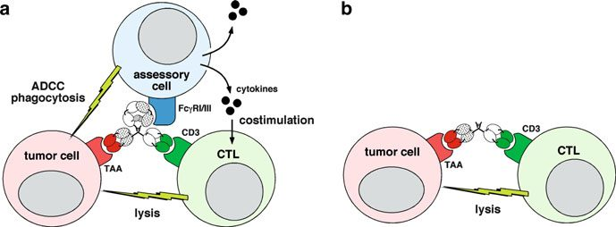
그림 2.1 세포 융합에 의한 하이브리드 하이브리돔 제작 원리. 한 하이브리돔은 8-아자구아닌 선별로 HAT 감수성을 부여받는다. 다른 하이브리돔의 증식은 요오드아세트아미드 처리로 억제된다. PEG 융합 후에는 하이브리드 하이브리돔 세포만 HAT 배지에서 활발히 성장할 수 있다.
2.2.2 유동세포측정법에 의한 선별
형광활성세포분류(FACS)는 하이브리드 하이브리돔을 선별하는 또 다른 방법이다(Karawajew et al. 1987; Koolwijk et al. 1988). 한 하이브리돔 세포주를 녹색 형광물질로, 다른 하나를 적색 형광 마커로 표지한다. 세포 융합 후 이중 표지된 하이브리드 하이브리돔을 분류하고 단일세포 분주 장치로 즉시 클로닝한다. 선택 가능 마커를 삽입하는 긴 과정을 건너뛰므로 빠르지만, 부모 세포로 오염될 위험이 어느 정도 있다.
2.2.3 세포 융합 절차
오랫동안 폴리에틸렌글리콜이 융합제의 표준이었다(Pontecorvo 1975). 융합할 세포의 막을 끈적하게 만들어 서로 붙게 한다. 이후 원형질막 융합이 일어나 두 개 이상의 핵을 지닌 세포가 된다. 세포 분열 동안 핵막이 분해되고 염색체가 딸세포들에 분배되는데, 이 잡종 세포는 핵은 하나지만 양쪽 부모의 유전 물질을 모두 담고 있다. 하이브리돔은 보통 배수성(hyperploid)이라, 이들을 융합하면 염색체가 과잉 상태가 되고 후속 유사분열에서 유전적 불안정이 생겨 염색체가 부적절하게 분리되거나 소실된다. 그래서 하이브리드 하이브리돔의 염색체 목록을 안정화하려면 희석 한계 클로닝을 반복할 수밖에 없다. 이 과정에서 원하는 이중특이성 항체를 많이 생산하는 아크론(subclone)을 골라내는 것도 가능하다. 폴리에틸렌글리콜법의 대안으로 전기 유도 세포 융합이 개발되었다. 고전압 전기장 펄스를 가해 하이브리돔 세포를 물리적으로 융합하는 방식이다(Cao et al. 1995; Kreutz et al. 1998).
2.2.4 원하는 항체를 찾는 하이브리드 하이브리돔 배양 스크리닝
원하는 이중특이성 항체 검출을 위해 신뢰성 있고 민감하며 빠른 스크리닝 분석법을 확립하는 것이 성공적인 쿼드로마 제작의 가장 중요한 전제다. 적절한 스크리닝 분석법이 준비되기 전에 융합 실험을 시작하는 것은 권장되지 않는다. 초기 스크리닝용 검사는 모두 항원–항체 결합 측정에 기반하며, 효소결합면역흡착분석(ELISA), 유동세포측정법, 세포독성 분석이 가장 널리 쓰인다(Moldenhauer 2007). 서로 다른 아이소타입의 부모 하이브리돔 세포주를 고르면 스크리닝 절차가 훨씬 수월해진다.
항원을 마이크로타이터 플레이트 웰에 고정하는 고상 ELISA(Engvall and Perlman 1971)는 맞춤이 쉽고 많은 샘플을 병행해 빠르게 분석할 수 있는 범용 검사 체계다. 세포에 대한 이중특이성 항체의 결합은 아이소타입 특이 형광 표지 2차 항체로 추적한다. 평균 형광 강도가 각 항체 팔이 세포 표적에 결합하는 힘을 반영한다. 이중특이성 항체가 유도하는 재표적화 세포독성을 검사하는 것은 직관적이지만 기술적으로 까다로운 접근이다(Clark and Waldmann 1987). 표적 세포와 효과기 세포를 이중특이성 항체(및 적절한 대조군) 존재 하에 배양하면 항원을 지닌 표적이 특이적으로 용해된다. 정량 평가에는 고전적인 크로뮴 방출 검사(표적 세포를 방사성 크로뮴-51로 미리 표지해야 함)나, 젖산탈수소효소(Decker and Lohmann-Matthes 1988) 또는 glyceraldehyde-3-phosphate 탈수소효소(Corey et al. 1997) 같은 세포질 내인성 효소의 방출을 측정하는 비방사성 방법을 쓸 수 있다. 배양 상징액(모든 면역글로불린 조합 포함)의 초기 스크리닝 단계에서는 부모 단클론 항체가 이중특이성 항체와 항원결합 경쟁을 벌이기 때문에 유동세포측정과 세포독성 검사의 신호가 상대적으로 약할 수 있다.
2.2.5 클로닝
안정적으로 이중특이성 항체를 분비하는 세포주를 고르려면 하이브리드 하이브리돔 배양의 신속한 클로닝이 필수다. 단일세포 클로닝의 표준 방법은 희석 한계법이다. 원칙적으로 쿼드로마 세포를 96웰 플레이트에 웰당 이론상 0.5~1개 세포가 되도록 분주한다. 하이브리드 하이브리돔의 클로닝 효율은 상당히 높은 편이라 feeder 세포가 필요 없다. 잡종의 유전적 불안정 때문에 클로닝을 반복하면 정량 ELISA로 검증 가능한, 이중특이성 항체 생산이 증대된 아크론을 찾을 수 있다.
2.2.6 이중특이성 항체의 정제
안정한 하이브리드 하이브리돔 주가 확립되면 현대식 세포배양 장치로 장기 배양하며 대량의 항체를 생산할 수 있다. 실험실 규모 생산 요건을 충족하는 장치가 최소 두 종류 시판 중이다. 그러나 모든 이중특이성 항체에 통용되는 표준 정제 절차를 권하기는 어렵다. 실제로 정제 방법은 각각의 이중특이성 항체마다 따로 확립해야 한다. 해당 표적 항원이 (재조합) 단백질로 구할 수 있어 친화 정제에 쓸 수 있는 경우는 드물다(Gupta and Suresh 2002). 부모 항체와 특이적으로 상호작용하는 항독특이형(idiotypic) 항체도 활용된 바 있지만 구하기가 매우 어렵다(Bruynck et al. 1993). 돌이켜보면 대부분의 연구자들은 단일특이성 및 이중특이성 면역글로불린 혼합물에서 이중특이성 항체를 정제하기 위해 정교한 2단계 방법을 사용했다. 흔히 프로테인 A나 프로테인 G 친화 크로마토그래피를 이온교환 또는 크기배제 크로마토그래피와 결합했다(Tarditi et al. 1992). 좀 더 최근에는 바이오리액터 회수액에서 이중특이성 항체, 단일특이성 면역글로불린, 배양 배지 성분을 한 번에 분리하는 소수성 상호작용 크로마토그래피 기법이 소개되었다(Manzke et al. 1997). 이중특이성 항체의 순도는 SDS-PAGE, 등전점 전기영동, 웨스턴 블롯, 아이소타입 특이 ELISA 또는 T 세포 증식 같은 기능 분석으로 평가할 수 있다.
2.2.7 이중특이성 항체의 분자 조성
지금까지 생쥐–생쥐, 쥐–쥐, 생쥐–쥐 하이브리드 하이브리돔이 주로 만들어졌다. IgG 분비 하이브리돔 둘의 융합 외에도 IgA 생산 세포주, IgA와 IgM 사이 잡종도 성공적으로 확립되었다(Urnovitz et al. 1988). 하이브리드 하이브리돔으로 이중특이성 항체를 만드는 주요 단점은 양쪽 부모의 면역글로불린 유전자가 공우성(co-dominant)으로 발현된다는 점이다. 그 결과 양쪽 부모의 중쇄와 경쇄가 무작위로 짝을 이루어 열 가지 항체 종이 만들어지고, 그중 원하는 이중특이성 항체는 단 하나뿐이다(그림 2.2).
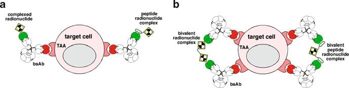
네 개의 쇄가 모두 같은 속도로 합성되고 짝짓기가 무작위라고 가정하면, 전체 면역글로불린의 12.5%만 이중특이성일 것으로 예상된다(Staerz and Bevan 1986). 이상적으로는 이질적 H–H쇄 짝짓기와 동질적 H–L쇄 연관이 함께 일어나야 이중특이성 항체 수득률이 높다. 불행히도 항상 그렇지 않으며, 알 수 없는 특이성을 지닌 항체가 만들어지는 이질적 H–L쇄 연관 우선 현상도 보고되었다(De Lau et al. 1991). 동일한 IgG 아이소타입을 쓰면 혼합 H–H쇄 조합이 선호되는 반면, 다른 아이소타입을 쓰면 이중특이성 항체 수득률이 줄어드는 경향이 있다(Milstein and Cuello 1984). 일부 쥐/생쥐 쿼드로마에서는 종에 제한된 H–L쇄 짝짓기 우선 현상이 관찰되었다(Lindhofer et al. 1995). 그럼에도 서로 다른 IgG 아이소타입의 부모 하이브리돔은 결과물이 이중 아이소타입(bi-isotypic)이라 부모 면역글로불린과 분리할 수 있다는 점에서 정제 면에서 큰 이점을 준다.
2.3 이중특이성 항체의 기능적 특성
종양 치료용 이중특이성 항체의 핵심 기능은 당연히 종양 부위로 면역 효과기 세포를 동원하는 것이다. 효과기 세포 유형에 따라 추가 기능 요건이 충족되어야 한다. 최적 조건에서 종양 세포는 결국 괴사나 세포자멸사라는 일반적 기전으로 파괴된다. 이중특이성 항체가 매개하는 다양한 효과기 세포의 재표적화는 그림 2.3에 개략적으로 나타나 있다.
하이브리드 하이브리돔 유래 이중특이성 항체는 일반 IgG 항체와 같은 크기(약 150 kDa)와 높은 안정성을 지니므로, 혈청 반감기와 조직 침투력도 비슷하다. Fc 수용체를 지닌 세포와의 상호작용을 피하고 종양 도달성을 높이려면 효소 소화로 F(ab′)₂ 단편을 만들면 된다(Warnaar et al. 1994). 이중특이성 항체의 단편화는 쉬운 작업이 아니며 완전 분해를 막으려면 후보 물질마다 절차를 조정해야 한다. 두 결합 팔의 친화력(avidity)은 적어도 시험관 내 단가 결합 조건에서는 부모 항체의 결합 강도를 반영하는 경우가 많다.
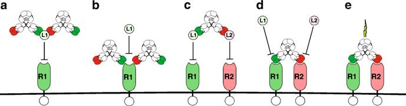
그림 2.3 이중특이성 항체가 매개하는 효과기 세포 재표적화. bsAb는 anti-TAA 팔로 종양 관련 항원(TAA)에, anti-CD3 팔로 TCR/CD3에 결합해 세포독성 T 림프구를 활성화한다. NK 세포·대식세포·수지상세포는 CD16·CD64 같은 Fc 수용체를 통해 동원된다. 최종적으로 종양 세포가 살해된다.
실제 친화력은 유동세포측정 결합 경쟁 분석으로 추정할 수 있다. 알려진 친화도의 형광 표지 부모 항체와 증가량의 이중특이성 항체가 항원을 지닌 표적 세포에 대한 결합을 놓고 경쟁하게 하는 것이다. 표적 항원을 (융합) 단백질로 구할 수 있다면 표면플라즈몬공명(BIACORE 기술)으로 더 정확한 친화도 측정이 가능하다(van Regenmortel 2003).
선천 및 후천 면역계에는 세포독성을 일으킬 수 있는 뚜렷한 효과기 세포 집단이 있다. T 림프구, 자연살해세포(NK 세포), 단핵구/대식세포, 다형핵 호중구(PMN)가 그것이다. 이 세포 유형들은 세포 표면에 특정 트리거 분자를 지니고 있어, 표적 세포의 자연 리간드와 상호작용한다. 이중특이성 항체가 트리거 분자에 결합하면 리간드와의 상호작용을 대체하면서 활성화로 이어진다.
2.3.1 세포독성 T 림프구의 동원
처음부터 세포독성 T 림프구는 면역계의 전문 살해자라서 종양 공격의 효과기로 가장 많이 활용되었다(Liu et al. 1985; Perez et al. 1985; Staerz et al. 1985; Lanzavecchia and Scheidegger 1987). 생리적 조건에서 T 세포 특이성은 주조직적합복합체(MHC) 분자와 함께 펩타이드를 인식하는 T세포수용체(TCR)가 결정한다. T 세포가 온전히 활성화되려면 두 번째 신호가 필요하다. 이는 항원제시세포에 노출된 B7 계열 공자극 분자와 상호작용하는 T 세포의 CD28 수용체가 전달한다. 혈류에 주입된 이중특이성 항체는 T 림프구에 한쪽 팔로만 결합하는데, 이것만으로는 활성화를 일으키기에 부족하다. 그러다 이중특이성 항체가 덮인 T 세포가 표적 항원을 발현하는 종양 세포를 찾아 상호작용하면 CD3/TCR 복합체의 기능적 가교가 일어나 활성화의 첫걸음이 시작된다. 종양 부위에서 같은 T 세포의 CD28 결합이나 인접 세포가 분비하는 림포카인·사이토카인을 통해 공자극도 함께 제공되면 세포독성이 온전히 확립된다.
bsAb에 의해 재표적화된 T 세포의 종양세포 용해는 과립 세출계(granule exocytosis system)를 통해 일어난다. 특이적 인식과 표적 세포와의 접합체 형성 후 활성화된 림프구가 퍼포린과 그란자임을 담은 과립을 방향성 있게 방출하는 기전이다(Renner et al. 1997).
앞서 말했듯 효과기 T 림프구의 완전한 활성화는 견고한 세포독성 반응 확립의 중요한 전제다. 이는 TCR/CD3 복합체 자극과 CD28 공자극의 조합으로 달성된다. 종양 세포는 보통 효과기 세포의 CD28과 상호작용하는 B7 계열 분자를 발현하지 않아 공자극 신호를 줄 수 없다. 그래서 많은 전임상·임상 연구에서 일반적인 2가 anti-CD28 단클론 항체를 추가로 투여하거나(Manzke et al. 2001a; Manzke et al. 2001b), 하나가 CD28을 겨냥하는 두 종류의 이중특이성 항체를 함께 쓰는 방식으로 공자극을 제공했다(Bohlen et al. 1993; Pohl et al. 1993; Kroesen et al. 1995). 후자의 설정에서 두 이중특이성 항체는 같은 표적 항원을 인식하지만 하나는 CD3에, 다른 하나는 CD28에 반응해 표적 세포 제한적 방식으로 T 세포의 활성화(CD3 경유)와 공자극(CD28 경유)을 보장한다. CD3 공수용체 위 어느 에피토프에 결합하느냐에 따라 추가 공자극 없이도 강렬한 T 세포 활성화를 유도하는 이중특이성 항체도 있다. 이는 치료용 이중특이성 항체의 역량을 높이지만 동시에 림포카인과 사이토카인 방출로 인한 부작용 위험도 키운다. 최악의 경우 전신적 T 세포 활성화가 생명을 위협하는 부작용인 사이토카인 방출 증후군(“사이토카인 폭풍”)을 일으킬 수 있다. 2006년 초작용성(超作用性) anti-CD28 항체를 건강한 자원자 여섯 명에게 투여했을 때 다기관부전을 포함한 예상치 못한 심각한 부작용이 발생한 사건(Suntharalingam et al. 2006)을 계기로, 독일 파울-에를리히연구소(mAb 승인 규제기관)는 이중특이성 항체를 고위험 의약품으로 분류하고 있다(Schneider et al. 2006).
바람직하지 않은 활성화를 피하려면 국소 투여 전략이 고안되었다. 예컨대 EpCAM×CD3 이중특이성 항체의 F(ab′)₂ 단편을 증가 용량으로 투여하고 피하 IL-2를 병행한 신세포암 환자 연구가 있다(Kroesen et al. 1994). 환자에게서 높은 혈중 염증성 사이토카인 수치가 관찰되었음에도 이 접근의 실행 가능성이 입증되었다. 이후 비호지킨 림프종 환자에게 CD19×CD3 이중특이성 항체를 투여하는 용량 증가 연구에서 임상 경험이 더 보고되었다(de Gast et al. 1995). 주목할 점은 독성(WHO 등급 II)이 제한적으로 나타났고, 그 주된 원인이 종양괴사인자 알파 방출로 돌려졌다는 것이다.
온전한 이중특이성 항체는 다양한 보조 세포의 Fc 수용체에 결합할 수 있는 Fc 부분을 지닌다. IgG1만으로 구성되거나 IgG1과 IgG2a 중쇄의 조합으로 이루어진 생쥐 이중특이성 항체는 CD16·CD64 같은 활성화형 Fcγ 수용체와의 상호작용이 약해서 인간 효과기 세포에서 ADCC를 잘 매개하지 못한다. Fc 수용체 결합을 개선하기 위해 생쥐 IgG2a와 쥐 IgG2b로 구성되고 CD3와 종양 관련 항원을 겨냥하는 이른바 3기능성(trifunctional) 이중특이성 항체가 만들어졌다. 두 결합 도메인의 이중 특이성 외에도, 이 시약들은 Fc 영역으로 대식세포·NK세포·수지상세포 같은 보조 세포를 효율적으로 동원·활성화하여 다양한 사이토카인을 분비시킨다. 이 세 번째 기능이 세포독성 T 림프구에 필수적인 공자극 신호를 제공한다(Zeidler et al. 1999). 특히 식세포가 종양 물질을 삼킴으로써 오래 지속되는 항종양 면역이 달성되는 것으로 보인다(Zeidler et al. 2000; Ruf and Lindhofer 2001). EpCAM(epithelial cell adhesion molecule)과 CD3에 대한 특이성을 지닌 catumaxomab(Removab®)이라는 3기능성 이중특이성 항체는 난소암·위암 같은 복강 내 악성종양이 진행 단계에서 만드는 악성 복수의 복강내 치료에 특히 효과적임이 입증되었다(Burges et al. 2007; Heiss et al. 2010). 세계 최초의 이중특이성 항체로서 catumaxomab은 2009년 4월 유럽연합에서 승인되었다(Seimetz et al. 2010).
이중특이성 항체는 TCR 특이성과 무관하게 종양 세포와 림프구 사이의 상호작용을 촉진하고 길게 유지한다. 두 번째 실험군에서는 원자간 현미경을 이용한 단일세포 힘 분광법(Single Cell Force Spectroscopy)으로 EpCAM×CD3 이중특이성 항체의 분자 결합 특성을 분석했다. 연구 결과, 이중특이성 항체가 유도하는 T 세포와 종양 세포의 접합체 형성은 이상(二相)적 과정으로 진행되며 최종적으로 완전한 면역 시냅스가 발달하는 것으로 나타났다. 세포 접착의 초기 단계는 특이적이고 가역적이며, 그 뒤 접착력이 시간과 접촉력에 의존적으로 증가한다(Hoffmann et al. 2011). 접촉시간이 늘고 효과기 세포와 표적 세포 사이 결합력이 커지면, 성숙한 시냅스 형성이 시사하듯 궁극적으로 T 세포 활성화와 신호전달이 시작될 가능성이 높다.
2.3.2 Fc 수용체를 지닌 효과기 세포의 동원
T 림프구 외에도 선천 면역계의 Fc 수용체 보유 세포들이 효과기로 폭넓게 활용되었다. 자연살해세포, 단핵구, 대식세포, 수지상세포, 호중구는 구성적으로 또는 사이토카인 유도 후에 세포 표면에 Fc 수용체를 내보내며, 이중특이성 항체가 여기에 결합할 수 있다. 일반적으로 Fc 수용체는 기능에 따라 활성형과 억제형으로 나뉘고, 세포질 신호전달 경로에서 차이를 보인다. 이중특이성 항체 매개 표적화 전략에서는 특히 활성형 수용체인 FcγRIA(CD64), FcγRIIA(CD32), FcγRIIIA(CD16), FcαRI(CD89)가 관심 대상이다. 다만 Fc 수용체 체계의 중요한 특징 중 하나는 같은 세포에 활성형과 억제형 Fc 수용체가 공발현된다는 것이며, 면역계의 비특이적 자극을 막기 위해 억제 신호가 활성화를 지배한다(Nimmerjahn and Ravetch 2006; Nimmerjahn and Ravetch 2007). 자연살해세포는 예외다. 활성형 FcγRIII만을 지니고 억제형 수용체는 없다.
호중구 치료는 특별히 주목할 만하다. 다형핵 호중구(PMN)는 순환 백혈구 중 가장 흔하고 강력한 세포용해 및 식작용 활성을 낼 수 있기 때문이다. 호중구는 가용성 화학주성 인자를 방출해 추가적인 비특이적·특이적 면역 효과기 세포를 불러들인다. 중요하게도 과립구에서 FcγRIA를 유도하고 대식세포에서 상당히 상향조절하는 것은 해당 사이토카인이나 성장인자를 전신 투여함으로써 환자에게서 쉽게 달성할 수 있다(Repp et al. 1995).
CD64 분자와 상피성 종양 관련 항원을 함께 인식하는 여러 이중특이성 항체가 지난 몇 년간 확립되었다. 티로신키나아제 수용체 HER2/neu, EGF 수용체, EpCAM 세포접착분자, MUC1 항원이 이런 이중특이성 항체의 두 번째 결합 특이성의 대표적 예다. 이들은 준비 중이거나 이미 임상시험에 들어갔다. 지금까지 FcγRIA 표적화를 활용한 대부분의 이중특이성 항체 임상시험은 중등도에서 낮은 독성을 보였지만, 지속적인 종양 퇴행을 달성한 환자는 소수에 불과했다(Curnow 1997; James et al. 2001). 역시 Fc 수용체를 발현하는 수지상세포는 항체가 덮인 죽어가는 종양 세포를 효율적으로 섭취하는 것으로 나타났다. 이는 교차제시(cross presentation)와 종양 특이 T 세포 반응 생성을 강화해 궁극적으로 항종양 면역을 증폭시킬 수 있다(Weiner et al. 2009). 마지막으로 최근 연구에서는 IgA의 Fc 수용체인 CD89가 이중특이성 항체 안내 요법의 관심을 많이 받았다. 호중구에 발현된 여러 트리거 분자의 비교 결과 CD89가 종양세포 용해에 가장 강력한 Fc 수용체로 드러났다(Valerius et al. 1997).
2.3.3 이중특이성 항체 치료 후 인간 항설치류 면역글로불린 반응
생쥐나 쥐 유래 이중특이성 항체의 치료 적용과 관련된 문제 중 하나는 인간 항생쥐 항체(HAMA) 또는 인간 항쥐 항체(HARA) 반응의 출현이다. HAMA/HARA 생성이 가벼운 피부 습진부터 아나필락시스 쇼크에 이르는 알레르기 반응을 일으킬 수 있음이 밝혀져 있다(Khazaeli et al. 1994). B세포 림프종 환자를 치료한 연구에서는 놀랍게도 HAMA 반응이 생존 이점과 연관되었다(Azinovic et al. 2006). 이 예상 밖의 현상에는 적어도 두 가지 설명이 가능하다.
첫째, 생쥐 항체는 특히 반복 투여 후 사람에서 뚜렷한 항독특이형 반응을 유도할 수 있다는 것이 잘 확립되어 있다. 네트워크 가설에 따르면 항독특이형 항체 자체가 면역원성을 지녀 항-항독특이형 항체 생성이라는 체액성 면역 반응을 일으킨다. 항독특이형이 초기 항체가 결합하는 항원의 에피토프를 흉내낸다고 믿어지므로(항독특이형은 항원의 ’내부 이미지’를 나타낸다), 이 면역 반응은 항독특이형 항체뿐 아니라 동시에 1차 표적까지 겨냥한다. 게다가 생쥐 치료 항체와 인간 항독특이형을 포함한 복합체가 전문 항원제시세포에 의해 내재화되고 제시된다. MHC 분자 위에 내부 이미지 펩타이드가 제시되면 T 세포가 자극받고, 이후 항종양 반응을 일으킬 수 있다.
두 번째 가능한 기전은 생쥐 항체가 항원제시세포에 의한 MHC 복합체 제시를 통해 세포성 면역 반응을 직접 유도하는 것이다. 이 경우 종양 세포에 제시된 처리된 생쥐 항체는 새로운 인공 종양 관련 항원 역할을 하여 세포독성 T 세포가 인식할 수 있다. 앞선 조사에서 우리는 생쥐 mAb로 치료받은 종양 환자가 자가 항원제시세포 위의 처리된 생쥐 면역글로불린을 MHC 클래스 II 제한 방식으로 인식하는 T 세포를 발달시킴을 확인했다. 다양한 세포 표면 분자를 겨냥하는 생쥐 mAb는 따라서 항원으로 활용되어 이 T 세포들을 선택된 MHC 클래스 II 양성 표적에 집중시킬 수 있다(Lanzavecchia et al. 1988). 세포성 면역 반응이라면 중화 HAMA가 형성된 이후에도 항체 요법의 효능을 충분히 설명해준다.
2.4 결론과 전망
지난 25년간의 이중특이성 항체 개발은 골짜기도 있었지만, 하이브리드 하이브리돔 기술은 여전히 완전한 IgG 크기의 이중특이성 항체를 만드는 실용적 수단이다. 특히 쥐/생쥊 쿼드로마에서 파생된 3기능성 항체는 catumaxomab의 승인으로 그 가치가 입증되었다. 앞으로의 과제는 재조합 포맷과 결합해 Fc 수용체를 통해 전문 항원제시세포를 동원하는 이중특이성 항체의 역량(Wiener et al. 2009)을 더 탐구하는 것이다. 나아가 이중특이성 항체는 유전자 변형 효과기 세포 집단(예: TCR 변형 T 림프구)을 안내하여 세포치료의 특이성과 친화력을 높이는 데 큰 잠재력을 지닌다. 이중특이성 항체 기반 암 치료의 터널 끝 빛을 이제 곧 보게 되리라고 믿을 만한 이유가 충분하다(Chames and Baty 2009a).
감사의 말: 원고를 비판적으로 읽어준 Reinhard Schwartz-Albiez 박사와 그림 제작을 도운 Dorothée Deppe 박사에게 감사드린다.
참고문헌
- Azinovic I, DeNardo GL, Lamborn KR, Mirick G, Goldstein D, Bradt BM, DeNardo SJ (2006) Survival benefit associated with human anti-mouse antibody (HAMA) in patients with B-cell malignancies. Cancer Immunol Immunother 55:1451–1458
- Baeuerle PA, Reinhardt C (2009) Bispecific T-cell engaging antibodies for cancer therapy. Cancer Res 69:4941–4944
- Bargou R, Leo E, Zugmaier G, Klinger M, Goebeler M, Knop S, Noppeney R, Viardot A, Hess G, Schuler M, Einsele H, Brandl C, Wolf A, Kirchinger P, Klappers P, Schmidt M, Riethmüller G, Reinhardt C, Baeuerle PA, Kufer P (2008) Tumor regression in cancer patients by very low doses of a T cell-engaging antibody. Science 321:974–977
- Beck A, Wurch T, Bailly C, Corvaia N (2010) Strategies and challenges for the next generation of therapeutic antibodies. Nat Rev Immunol 10:345–352
- Bohlen H, Manzke O, Patel B, Moldenhauer G, Dörken B, von Fliedner V, Diehl V, Tesch H (1993) Cytolysis of leukemic B-cells by T-cells activated via two bispecific antibodies. Cancer Res 53:4310–4314
- Bolhuis RLH, Lamers CHJ, Goey SH, Eggermont AMM, Trimbos JBMZ, Stoter G, Lanzavecchia A, Di Re E, Miotti S, Raspagliesi F, Rivoltini L, Colnaghi MI (1992) Adoptive immunotherapy of ovarian carcinoma with Bs-MAb-targeted lymphocytes: a multicenter study. Int J Cancer 7:78–81
- Bruynck A, Seemann G, Bosslet K (1993) Characterisation of a humanized bispecific monoclonal antibody for cancer therapy. Br J Cancer 67:436–440
- Burges A, Wimberger P, Kümper C, Gorbounova V, Sommer H, Schmalfeldt B, Pfisterer J, Lichinitser M, Marmé A, Paulicka M et al. (2007) Effective relief of malignant ascites in patients with advanced ovarian cancer by the trifunctional anti-EpCAM x anti-CD3 antibody catumaxomab. Gynecol Oncol 107:30–37
- Chervonsky AV, Faerman AI, Evdonina LV, Jazova AK, Kazarov AR, Gussev AI (1988) A simple metabolic system for selection of hybrid hybridomas (tetradomas) producing bispecific monoclonal antibodies. Mol Immunol 25:913–915
- Clark MR, Waldmann H (1987) T-cell killing of target cells induced by hybrid antibodies: comparison of two bispecific monoclonal antibodies. J Natl Cancer Inst 79:1393–1401
- Corey MJ, Kinders RJ, Brown LG, Vessella RL (1997) A very sensitive coupled luminescent assay for cytotoxicity and complement-mediated lysis. J Immunol Meth 207:43–51
- Cotton RGH, Milstein C (1973) Fusion of two immunoglobulin-producing myeloma cells. Nature 244:42–43
- Curnow R (1997) Clinical experience with CD64-directed immunotherapy. An overview. Cancer Immunol Immunother 45:210–215
- De Gast GC, Van Houten AA, Haagen IA, Klein S, De Weger RA, Van Dijk A, Philips J, Clark M, Bast BJEG (1995) Clinical experience with CD3xCD19 bispecific antibodies in patients with B cell malignancies. J Hematother 4:433–437
- De Lau WBM, Van Loon AE, Heije K, Valerio D, Bast BJEG (1989) Production of hybrid hybridomas based on HAT(s)-neomycin(r) double mutants. J Immunol Meth 117:1–8
- De Lau WBM, Heije K, Neefjes JJ, Oosterwegel M, Rozemuller E, Bast BJEG (1991) Absence of preferential homologous H/L chain association in hybrid hybridomas. J Immunol 146:906–914
- Decker T, Lohmann-Matthes ML (1988) A quick and simple method for the quantitation of lactate dehydrogenase release in measurements of cellular cytotoxicity and tumor necrosis factor (TNF) activity. J Immunol Meth 115:61–69
- Deo YM, Graziano RF, Repp R, van de Winkel JGJ (1997) Clinical significance of IgG Fc receptors and FcgammaR-directed immunotherapies. Immunol Today 18:127–135
- Engvall E, Perlman P (1971) Enzyme-linked immunosorbent assay (ELISA): quantitative assay of immunoglobulin G. Immunochem 8:871–879
- Fanger MW, Morganelli PM, Guyre PM (1992) Bispecific antibodies. Crit Rev Immunol 12:101–124
- Falkenberg FW, Weichert H, Krane M, Bartels I, Palme M, Nagels HO, Fiebig H (1995) In vitro production of monoclonal antibodies in high concentration in a new and easy to handle modular minireactor. J Immunol Methods 179:13–29
- Heiss MM, Murawa P, Koralewski P, Kutarska N, Kolesnik OO, Ivanchenko VV, Dudnichenko AS, Aleknaviciene B, Razbadauskas A, Gore M, Ganea-Motiu E, Ciuleanu TE, Wimberger P, Schmittel A, Schmalfeldt B, Burges A, Bokemeyer C, Lindhofer H, Lahr A, Parsons SL (2010) The trifunctional antibody catumaxomab for the treatment of malignant ascites due to epithelial cancer: Results of a prospective randomized phase II/III trial. Int J Cancer 127:2209–2221
- Hombach A, Jung W, Pohl C, Renner C, Sahin U, Schmitts R, Wolf J, Kapp U, Diehl V, Pfreundschuh M (1993) A CD16/CD30 bispecific antibody induces lysis of Hodgkin cells by unstimulated natural killer cells in vitro and in vivo. Int J Cancer 55:830–837
- James ND, Atherton PJ, Jones J, Howie AJ, Tchekmedyian S, Curnow RT (2001) A phase II study of the bispecific antibody MDX-H210 (anti-HER2xCD64) with GM-CSF in HER2+ advanced prostate cancer. Br J Cancer 85:152–156
- Jung G, Müller-Eberhard HJ (1988) An in-vitro model for tumor immunotherapy with antibody heteroconjugates. Immunol Today 9:257–260
- Jung G, Ledbetter JA, Müller-Eberhardt HJ (1987) Induction of cytotoxicity in resting human T lymphocytes bound to tumor cells by antibody heteroconjugates. Proc Natl Acad Sci USA 84:4611–4615
- Karawajew L, Micheel B, Behrsing O, Gaestel M (1987) Bispecific antibody-producing hybrid hybridomas selected by a fluorescence activated cell sorter. J Immunol Meth 96:265–270
- Khazaeli MB, Conry RM, LoBuglio AF (1994) Human immune response to monoclonal antibodies. J Immunother 15:42–52
- Köhler G, Milstein C (1975) Continuous cultures of fused cells secreting antibody of predefined specificity. Nature 256:495–497
- Koolwijk P, Rozemuller E, Stad RK, De Lau WB, Bast BJ (1988) Enrichment and selection of hybrid hybridomas by Percoll density gradient centrifugation and fluorescent-activated cell sorting. Hybridoma 7:217–225
- Kreutz FT, Xu DZ, Suresh MR (1998) A new method to generate quadromas by electrofusion and FACS sorting. Hybridoma 17:267–273
- Kroesen BJ, ter Haar A, Spakman H, Willemse P, Sleijfer DT, de Vries EG, Mulder NH, Berendsen HH, Limburg PC, The TH et al (1993) Local antitumor treatment in carcinoma patients with bispecific-monoclonal-antibody-redirected T cells. Cancer Immunol Immunother 37:400–407
- Kroesen BJ, Buter J, Sleijfer DT, Jansen RAJ, van der Graaf WTA, The TH, de Leij L, Mulder NH (1994) Phase I study of intravenously applied bispecific antibody in renal cell cancer patients receiving subcutaneous interleukin 2. Br J Cancer 70:652–661
- Kroesen BJ, Bakker A, van Lier RAW, The HT, de Leij L (1995) Bispecific antibody-mediated target cell-specific costimulation…
- Manzke O, Tesch H, Borchmann P, Wolf J, Lackner K, Gossmann A, Diehl V, Bohlen H (2001a) Locoregional treatment of low-grade B-cell lymphoma with CD3xCD19 bispecific antibodies and CD28 costimulation: I. Clinical phase I evaluation. Int J Cancer 91:508–515
- Manzke O, Tesch H, Lorenzen J, Diehl V, Bohlen H (2001b) Locoregional treatment of low-grade B-cell lymphoma with CD3xCD19 bispecific antibodies and CD28 costimulation: II. Assessment of cellular immune responses. Int J Cancer 91:516–522
- Marmé A, Strauss G, Bastert G, Grischke EM, Moldenhauer G (2002) Intraperitoneal bispecific antibody (HEA125xOKT3) therapy inhibits malignant ascites production in advanced ovarian carcinoma. Int J Cancer 101:183–189
- Milstein C, Cuello AC (1983) Hybrid hybridomas and their use in immunohistochemistry. Nature 305:537–540
- Milstein C, Cuello AC (1984) Hybrid hybridomas and the production of bi-specific monoclonal antibodies. Immunol Today 5:299–304
- Miotti S, Negri DRM, Valota O, Calabrese M, Bolhuis RLH, Gratama JW, Colnaghi MI, Canevari S (1999) Level of anti-mouse-antibody response induced by bispecific monoclonal antibody OC/TR in ovarian carcinoma patients is associated with longer survival. Int J Cancer 84:62–68
- Moldenhauer G (2007) Selection strategies I: monoclonal antibodies. In: Dübel S (ed) Handbook of therapeutic antibodies. Wiley-VCH, Weinheim, pp 19–44
- Müller D, Kontermann RE (2007a) Bispecific antibodies. In: Dübel S (ed) Handbook of therapeutic antibodies. Wiley-VCH, Weinheim, pp 345–378
- Müller D, Kontermann RE (2007b) Recombinant bispecific antibodies for cellular cancer immunotherapy. Curr Opin Mol Ther 9:319–326
- Müller D, Kontermann RE (2010) Bispecific antibodies for cancer immunotherapy. Current perspectives. Biodrugs 24:89–98
- Nimmerjahn F, Ravetch JV (2006) Fc-gamma receptors: old friends and new family members. Immunity 24:19–28
- Nimmerjahn F, Ravetch JV (2007) Antibodies, Fc receptors and cancer. Curr Opin Immunol 19:239–245
- Perez P, Hoffman RW, Shaw S, Bluestone JA, Segal DM (1985) Specific targeting of cytotoxic T cells by anti-T3 linked to anti-target cell antibody. Nature 316:354–356
- Pohl C, Denfeld R, Renner C, Jung W, Bohlen H, Sahin U, Hombach A, Naundorf H, Manzke O, Wickramanayake PD, Diehl V, Tesch H, Pfreundschuh H, Wolf J (1993) CD30-specific activation of T-cells with bispecific antibodies: effect of the costimulatory molecules CD28 and CD26. Br J Haematol 85:707–716
- Segal DM, Bast BJEB (2001) Production of bispecific antibodies. In: Coligan JE, Kruisbeek AM, Margulies DH, Shevach EM, Strober W (eds) Current protocols in immunology. Wiley, New York, 2.13.1–2.13.16
- Seimetz D, Lindhofer H, Bokemeyer C (2010) Development and approval of the trifunctional antibody catumaxomab (anti-EpCAM x anti-CD3) as a targeted cancer immunotherapy. Cancer Treat Rev 36:458–467
- Staerz UD, Bevan MJ (1986) Hybrid hybridoma producing a bispecific monoclonal antibody that can focus effector T-cell activity. Proc Natl Acad Sci USA 83:1453–1457
- Staerz UD, Kanegawa O, Bevan MJ (1985) Hybrid antibodies can target sites for attack by T cells. Nature 314:628–631
- Strauss G, Gueckel B, Wallwiener D, Moldenhauer G (1999) Without prior stimulation tumor-associated lymphocytes from malignant effusions lyse autologous tumor cells in the presence of bispecific antibody HEA125xOKT3. Clin Cancer Res 5:171–180
- Suntharalingam G, Perry MR, Ward S, Brett SJ, Castello-cortes A, Brunner MD, Panoskaltsis N (2006) Cytokine storm in a phase 1 trial of the anti-CD28 monoclonal antibody TGN1412. New Engl J Med 355:1018–1028
- Suresh MR, Cuello AC, Milstein C (1986) Advantages of bispecific hybridomas in one-step immunocytochemistry and immunoassays. Proc Natl Acad Sci USA 83:7989–7993
- Tarditi L, Camagna M, Parisi A, Vassarotto C, DeMonte LB, LetarteM, MalavasiF, MarianiM (1992) Selective high-performance liquid chromatographic purification of bispecific monoclonal antibodies. J Chromatogr 599:13–20
- Trebak M, Chong JM, Herlyn D, Speicher DW (1999) Efficient laboratory-scale production of monoclonal antibodies using membrane-based high-density cell culture technology. J Immunol Methods 230:59–70
- Tita-Nwa F, Moldenhauer G, Herbst M, Kleist C, Ho AD, Kornacker M (2007) Cytokine-induced killer cells targeted by the novel bispecific antibody CD19xCD5 (HD37xT5.16) efficiently lyse B-lymphoma cells. Cancer Immunol Immunother 56:1911–1920
- Urnovitz HB, Chang Y, Scott M, Fleischman J, Lynch RG (1988) IgA:IgM and IgA:IgA hybrid hybridomas secrete heteropolymeric immunoglobulins that are polyvalent and bispecific. J Immunol 140:558–563 # 제3장 화학적 결합에 의한 이중특이성 항체 생성
Diego Ellerman, Justin M. Scheer
3.1 서론
처음엔 학문적 성과로, 나중엔 진단 도구로 구상되었던 이중특이성 항체(bsAbs)는 이제 치료제로서 상당한 주목을 받고 있다. 흥미롭게도 최초의 이중특이성 폴리클론 항체는 서로 다른 두 폴리클론 항체 혼합물을 화학적으로 결합해서 만들어졌다(Nisonoff and Rivers 1961). 이 개척 작업은 두 항체를 해리시키고 각 절반을 다시 재결합시키는 방식이었으며, 결과로 나온 이량체 항체의 일부가 면역침강으로 이중특이성임이 입증되었다. 1975년 단클론 항체 기술의 등장(Köhler and Milstein 1975)은 더 정의된 항체 시약으로 작업할 수 있게 해주었고, 균질한 이중특이성 항체 제제를 만든다는 목표를 향한 큰 진전이었다. 또 하나의 돌파구는 1990년대 재조합 DNA 기술의 발전이었고, 이 기술은 곧바로 항체 발현에 채택되었다. 최초의 재조합 항체 발현 보고(Songsivilai et al. 1989) 이후 수많은 항체 단편과 온전한 항체 포맷이 만들어졌다. DNA 공학을 통한 도메인 융합이 이중특이성 항체 생산의 지배적 방법론이지만, 하이브리돔이든 재조합 방법이든 화학적 교차결합 항체를 이용한 연구도 상당수 이루어지고 있다. 이중특이성 항체의 임상 도입을 오래 가로막은 것은 균질한 물질을 대량 생산하기 어렵다는 점이었다. 이 장에서는 화학적 결합으로 이중특이성 항체를 만드는 현재의 방법을 검토하고, 최종 산물의 수득률과 품질을 개선하고 새로운 길을 열어줄 최근의 발전을 논한다.
3.2 현재의 방법론
3.2.1 화학적 결합으로 만든 이중특이성 항체 개요
서로 다른 항체 구조, 즉 포맷을 화학적 결합으로 만들 수 있다(그림 3.1). 출발 물질과 결합 전략을 달리하면 이중특이성 단편, 온전한 길이의 항체, 또는 그 조합을 얻을 수 있다. 예컨대 서로 다른 온전한 항체 둘을 교차결합하면 각 항원에 대해 2가인 약 300 kDa의 이중특이성 분자가 된다(그림 3.1a). 또는 “화학적 프로그래밍(chemical programming)” 접근으로 온전한 항체(약 150 kDa)를 각 항원에 대해 2가인 이중특이성 항체로 만들 수도 있다(그림 3.1b). 그러나 대부분의 화학적 결합 사례는 부모 항체를 효소 소화해 얻은 F(ab′)₂ 단편을 활용한다. 환원된 Fab′를 교차결합해 각 항원에 1가인 이중특이성 F(ab′)₂(그림 3.1c) 또는 두 항원 중 하나에 2가인 이중특이성 F(ab′)₃(그림 3.1d)를 만드는 식이다.
포맷마다 고유의 화학이 따른다. 온전한 면역글로불린의 교차결합은 보통 리신 곁사슬을 겨냥하는 아민 반응성 시약을 쓰지만, 이중특이성 F(ab′)₂ 생산은 일반적으로 황화수소기(sulfhydryl) 반응성 교차결합제에 의존한다. 1차 화학 반응성의 차이 외에 교차결합제는 헤테로-이기능성(hetero-bifunctional)일 수도, 호모-이기능성(homo-bifunctional)일 수도 있다. 호모-이기능성 화합물은 분자 양 끝에 같은 반응기를, 헤테로-이기능성 시약은 서로 다른 두 반응기를 지닌다. 이중특이성 항체 생산에 쓰이는 아민 반응성 교차결합제는 대개 헤테로-이기능성이고, 황화수소기 반응성 교차결합제는 호모-이기능성이다. 각 방법의 장단점은 이후 절에서 설명한다.
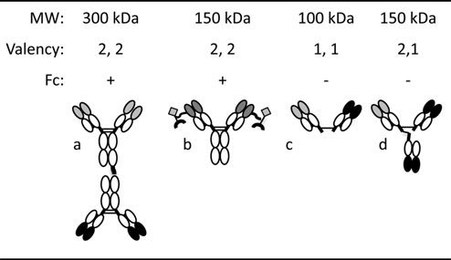
그림 3.1 포맷에 따른 다양한 원자가 구현. (a) 온전한 항체 둘을 결합해 각 항원에 2가인 약 300 kDa 구조물을 만든다. (b) “화학적 프로그래밍”은 항체에 소분자 모듈을 공유결합시켜 서로 다른 두 단백질을 표적으로 삼는다. (c, d) Fab’ 교차결합으로 1가 또는 부분 2가 이중특이성 F(ab’)₂/₃ 구조물을 얻는다.
3.2.2 헤테로-이기능성 시약
3.2.2.1 SPDP
이중특이성 항체 생산에 쓰이는 헤테로-이기능성 시약 대부분은 아민기와 반응한다. 항체를 포함한 여러 단백질의 결합에 폭넓게 사용된 아민 반응성 교차결합제가 SPDP(succinimidyl-3-(2-pyridylthiol)propionate)다. SPDP로 항체를 결합하는 단계는 그림 3.2a에 나타나 있다. 먼저 두 항체를 각각 SPDP와 배양해 SPDP의 활성화된 succinimidyl 에스터 말단이 리신 잔기의 ε-아민기와 반응하며 아미드 결합을 형성하게 한다. 반응에 쓰는 SPDP 양이 항체의 교차결합 정도를 좌우하므로, 농도가 높을수록 교차결합률이 올라간다. 다만 항원 결합에 관여하는 잔기와 반응해 항체가 불활성화될 위험이 따른다. SPDP 4몰 과잉이면 IgG 분자 전체 리신 잔기의 10% 미만만 수정하면서도 충분한 교차결합을 제공하는 것으로 밝혀졌다(Segal and Bast 1995). SPDP 수정 후 두 항체 중 하나를 저 pH에서 DTT로 처리해 항체 자체 이황화 결합은 건드리지 않으면서 항체에 결합된 pyridylthiolpropionate(PDP)기를 환원한다. 다른 SPDP 수정 항체와 함께 배양하면 첫 항체에 도입된 SH기가 2-pyridylthiol기와 반응하여 이황화 결합으로 연결된 이중특이성 헤테로접합체가 만들어진다. 결과물은 무작위 위치에서 결합된 불균질 샘플이다. 이중특이성 항체 외에도 다양한 크기의 항체 응집체가 상당 비율로 생기므로, 겔여과 같은 방법으로 정제해야 한다. 이량체 이중특이성 항체의 수득률은 30~40% 범위로 보고되었다(Karpovsky et al. 1984).
3.2.2.2 Traut 시약/SMCC
단백질 결합에 널리 쓰였음에도 SPDP로 교차결합한 이중특이성 항체는 환원제가 있으면 불안정할 수 있는 환원 가능한 이황화 결합을 지닌다. 더 안정한 연결을 만들려면 두 부모 항체에 서로 다른 아민 반응성 헤테로-이기능성 교차결합제를 쓰면 된다. 한쪽은 (SPDP처럼) SH기를 도입하고, 다른 한쪽은 말레이미드기를 도입해 유리 티올(SH)과 반응하여 환원 불가능한 티오에터 가교를 만든다. 널리 쓰인 전략은 Traut 시약(2-iminothiolane)으로 한 항체에 SH를 도입하고, Sulpho-SMCC(sulpho-[succinimidyl-4-(N-maleimidomethyl)-cyclohexane-1-carboxylate])를 말레이미드 함유 교차결합제로 두 번째 항체를 수정하는 것이다(그림 3.2b).
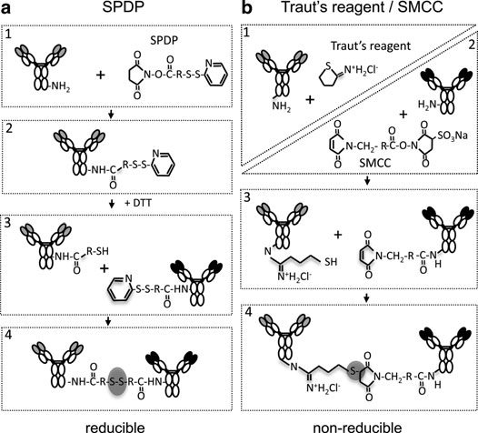
그림 3.2 이종이관능성 가교제를 이용한 화학적 결합. 결과물은 각 항원에 대해 2가인 이중특이성 항체와 원치 않는 다량체 산물이다. 이 방법의 주요 약점은 이량체 산물 수득률이 낮다는 것(1029%)이다(Reusch et al. 2006; Lee et al. 2007).
헤테로-이기능성 교차결합제는 온전한 항체에도 효소 소화로 만든 항체 단편에도 적용될 수 있다. 이 접근법의 응용 범위는 넓어서 유전자 치료용 아데노바이러스로 내피세포를 표적화하거나(Miller et al. 2005), 표적 세포에 독소를 전달하거나(Raso et al. 1997), 면역억제 요법(Vasu et al. 2003), 생체 내 영상(Khaw et al. 2006), 면역분석 개발(Khaw et al. 2005), 그리고 최근에는 손상 조직으로 줄기세포 이동을 유도하는 데도 쓰인다(Lee et al. 2007; Langer et al. 2010).
3.2.3 호모-이기능성 시약
언급했듯 Ig 분자에 풍부한 아민기가 헤테로-이기능성 시약과 반응하면서 최종 이중특이성 항체 산물의 불균질성을 주로 만들어낸다. 반면 항체에서 유리 황화수소기의 출현 빈도는 아민기에 비해 낮거나 아예 없다. 그래서 황화수소기 반응성 화학은 수정을 항체 내 제한된 몇 군데로 국한시킬 수 있다. 이중특이성 항체 생산에 쓰이는 호모-이기능성 시약은 경첩 이황화 결합의 환원으로 생기거나 공학적으로 도입된 시스테인의 황화수소 잔기와 반응한다. 아민 반응성 시약을 통한 교차결합은 주로 온전한 항체에 행해졌지만, SH기 기반의 항체 결합은 일반적으로 F(ab′)₂ 단편에 적용된다.
Nisonoff가 처음 기술한 방법의 단점 중 하나는 호모이량체와 사슬 내 이황화 결합 형성 때문에 이중특이성 산물 수득률이 낮았다는 것이다. 이후 Brennan 등(1985)은 한 항체에서 사슬 내 이황화 결합 형성을 막기 위해 아세산나트륨을 쓰고, 다른 항체의 티올기를 DTNB[5,5’-dithiobis-(2-nitrobenzoic acid)]와 반응시켜 활성화하는 방법을 보고했다. 현재 쓰이는 방법은 교차결합제 o-phenylenedimaleimide(o-PDM)를 사용하는 원래 방법의 변형이다(Glennie et al. 1987). 첫 단계는 F(ab′)₂의 경첩 영역 시스테인을 환원해 Fab’ 단편을 만드는 것이다. 그다음 Fab’ 중 하나를 o-PDM으로 알킬화하는데, o-PDM은 인접(vicinal) 이황화물과 반응할 수 있는 말레이미드기 두 개를 지닌 시약이다.
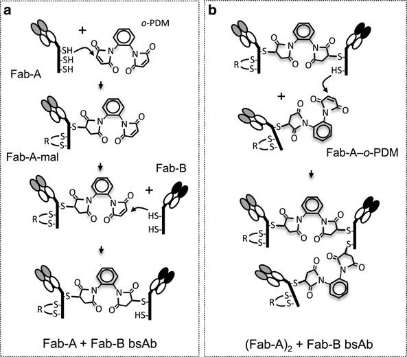
그림 3.3 호모-이기능성 교차결합제 o-PDM. (a) 각 항원에 1가인 bsAb의 생성. 경첩 영역에 홀수 개의 시스테인을 지닌 Fab’(Fab-A)를 o-PDM과 배양하면 두 시스테인이 교차결합제로 고리를 이루고, 세 번째 시스테인은 미반응 말레이미드기를 지닌 교차결합제 분자에 결합된다. 두 번째 Fab’(Fab-B)의 SH기 하나가 그 말레이미드기와 반응해 1가 bsAb를 만든다. (b) Fab-A가 과잉이면 결합된 Fab-B의 유리 SH기와 반응하여 Fab-A에 2가, Fab-B에 1가인 bsAb를 만든다.
앞서 말했듯 이 방법론은 경첩에 짝수 개의 Cys 잔기를 지닌 IgG로 제한된다. 항항체 면역 반응을 피하려고 인간 치료에 자주 쓰이는 인간 또는 인간화 항체에서는 이것이 제약이 된다. 이 문제를 우회하는 방법은 경첩 영역의 시스테인 하나만 남겨 인간화 Fab’를 재조합 발현시키는 것이다(Shalaby et al. 1992). 우리가 개발한 대안 전략은 N-에틸말레이미드(NEM)로 SH기를 부분적으로 차단하는 것이다. 효소 소화로 만든 F(ab′)₂ 단편을 환원한 뒤 1당량의 NEM과 반응시키면 세 산물이 생긴다. (a) 무반응 Fab’, (b) 황화수소기 하나가 알킬화된 Fab’, (c) 두 황화수소기가 모두 알킬화된 Fab’. 첫 두 산물만 각각 유리 티올을 2개 또는 1개씩 지녀 이후 비스-말레이미드 교차결합제와의 배양에서 반응할 수 있다. 이 반응은 두 Cys가 하나의 비스-말레이미드 분자에 연결된 Fab’, 그리고 NEM 하나와 교차결합제 하나를 지닌 Fab’을 만든다. 후자만 두 번째 Fab’과 반응할 수 있는 유일한 종(species)이다.
호모-이기능성 교차결합제를 쓰면 응집체는 크게 형성되지 않지만, 경첩 영역에 시스테인이 하나보다 많으면 측정 가능한 양의 헤테로삼량체가 생긴다. 전형적인 수득률은 F(ab′)₂ 헤테로이량체 65~75%, F(ab′)₃ 헤테로삼량체 25~35%다. 헤테로-이기능성 시약 기반 방법에 비해 수득률이 좋을 뿐 아니라, 호모-이기능성 시약을 쓰는 방법은 특정 부위(예: 경첩 영역의 시스테인)만 겨냥하므로 항체를 불활성화시키지 않는다.
3.2.4 화학적으로 프로그래밍된 항체
이 접근법은 특정 항체(Ab 38C2)를 스캐폴드로 쓰고, 특정 단백질을 표적으로 하는 소형 의약품이나 펩타이드를 공유결합시킨다. Ab38C2는 알돌라아제 활성을 지닌 촉매 항체다. 활성 부위에 특이한 친핵성을 지닌 리신 잔기가 있어 디케톤이나 β-락탐기를 지닌 소분자 또는 펩타이드로 선택적으로 공유 라벨링할 수 있다. 항체의 화학적 프로그래밍은 잠재적으로 소형 의약품의 구조 다양성과 간편한 제조 특성을 항체의 조절 가능한 반감기와 원자가와 결합시킬 수 있다(Rader et al. 2003). 개념 입증으로 mAb 38C2는 소분자를 통해 엔도텔린 수용체를(Doppalapudi et al. 2007), 펩타이드를 통해 인테그린 αvβ3와 α5β1을 표적하도록 재프로그래밍되었다(Rader et al. 2003). 더 최근에는 RNA 아프타머를 같은 항체 스캐폴드에 결합시켰더니 생물학 활성은 유지되면서 아프타머 반감기가 크게 늘어났다(Wuellner et al. 2010). 항체의 화학적 프로그래밍은 생체 내에서도 가능하다. 디케톤을 함유한 소분자에 KLH를 결합해 능동면역시킨 생쥐는 디케톤 함유 분자에 공유결합할 수 있는 항체 면역 반응을 일으켰다(Popkov et al. 2009). 이후 디케톤을 함유한 화학 모듈을 투여하면
3.2.5 임상 응용
화학적으로 결합된 이중특이성 항체는 쿼드로마 기법이든 화학적 교차결합이든 만들어졌으며, 주로 종양학 임상 연구에 쓰였다. 종양학 응용 안에서도 서로 다른 이중특이성 항체가 저마다 다른 치료 전략을 활용했다. 아래에 간단히 정리한다.
3.2.5.1 면역 효과기 세포의 재표적화
임상시험에 들어간 최초의 이중특이성 항체들은 o-PDM으로 교차결합해 만든 일련의 F(ab′)₂들로, Fc 수용체 FcγRI(CD64)와 종양 항원을 겨냥해 효과기 세포를 종양으로 동원하는 목적이었다. FcγRI 수용체는 단핵구, 대식세포, 활성화된 다형핵 과립구(PMN)에 구성적으로 발현되며 세포독성, 식작용, 호흡폭발 같은 세포 반응을 매개한다. 화학적 결합으로 만든 이중특이성 항체 중 MDX-210과 MDX-447이 임상시험에 들어갔다. MDX-210과 그 부분 인간화 버전인 MDX-H210은 다양한 인간 암종에서 과발현되는 HER2를, MDX-447은 일부 경부·신장·방광·전립선 암에서 과발현되는 표피성장인자수용체(EGFR)를 표적으로 했다. 초기 시험관 연구에서 MDX-210과 MDX-H210은 활성화된 PMN 세포가 있을 때 HER2 과발현 세포주에 높은 세포독성을 유도했다(Repp et al. 2003). 마찬가지로 MDX-447은 EGFR을 높게 발현하는 세포의 용해를 시험관에서 효과적으로 유도했다. 환자 투여 시 이중특이성 항체는 잘 견디어졌지만, 고무적인 전임상 데이터에도 불구하고 일관된 항종양 결과를 내지 못했다(Pullarkat et al. 1999; Repp et al. 2003; Fury et al. 2008). 그 원인은 부분적으로 종양 내에서 달성되는 이중특이성 항체 농도가 최적 이하였고, 치료 단백질의 짧은 반감기(2~8시간), 그리고 용해에 필요한 높은 효과기/표적 비율 때문으로 생각되었다(Valone et al. 1995).
3.2.5.2 시험관 내 T 세포 무장
Fc 수용체 발현 세포의 동원과 관련된 접근은 세포독성 T 세포의 동원이다. ex vivo 전략의 장점은 이중특이성 항체를 전신 투여하지 않으므로 독성 부작용 가능성이 줄어든다는 것이다. 시험관 내 T 세포 무장용으로 세 종류의 교차결합 온전한 항체가 시험 중이다. 다발골수종 치료용 CD20-Bi(OKT3×리툭시맙), 전이성 유방암 및 호르몬 불응성 전립선암 치료용 HER2-Bi(OKT3×트라스투주맙), 그리고 EGFR-Bi(OKT3×세툭시맙)다. HER2-Bi 무장 T 세포의 진행 중인 I/II상 연구에서 치료는 잘 견디어졌고(가끔 오한과 열), 생존율이 개선되었다(Lum et al. 2007). 전임상 연구에서는 EGFR-Bi로 시험관에서 무장한 T 세포가 췌장암 동물 모델의 종양 성장을 지연시킬 수 있었다(Reusch et al. 2006). 이 이중특이성 항체에 대한 두 건의 I상 임상연구(진행성 비소세포폐암 환자, 진행성 고형종양 환자 대상)가 진행 중이다(http://www.clinicaltrials.gov). 이 방법의 응용은 14장에서 더 자세히 다룬다.
3.2.5.3 사전표적화
방사면역요법은 오래전부터 암 치료에 쓰였다. 이 기술의 초기 문제 중 하나는 순환계에 방사성 표지 항체가 존재함으로써 생기는 높은 독성이었다. 이를 극복하기 위해 1990년대 “사전표적화” 전략이 개발되었다. 종양 항원과 짧은 펩타이드에 대한 특이성을 지닌 이중특이성 항체를 투여해 종양에 결합하게 한다. 어느 정도 시간이 지난 뒤 결합되지 않은 항체가 모두 순환계에서 제거되면, 펩타이드와 복합체를 이룬 방사성핵종을 주입한다. 펩타이드의 일부가 종양에 결합한 항체에 붙고, 유리 방사성핵종은 몸에서 매우 빠르게 제거된다. 덕분에 방사성핵종 주입 1시간 후 종양 내 농도가 혈액이나 정상 조직보다 열 배 이상 높아진다. 항체와 방사성핵종을 분리 투여하면 혈중 방사성핵종 체류시간이 크게 줄어들어 용량 제한 독성이 감소한다. 전임상 연구에서 사전표적화는 독성 감소와 효능 개선을 보였다. 종양을 향한 팔이 둘 이상이면 친화력이 높아져 종양 축적과 잔류가 더 우수해진다.
3.3 앞으로의 가능성
화학적으로 결합된 이중특이성 항체를 임상 응용으로 옮기는 데 가장 큰 걸림돌은 낮은 수득률과 산물의 불균질성이었다. 생체결합화학 분야의 여러 초기 단계 기술이 수득률과 균질성, 그리고 약동학 특성을 동시에 개선하는 데 도움이 될 수 있다.
3.3.1 Bis-Fabs
항체-약물 결합은 현재의 치료 접근법이지만 여러 반응성 부위가 존재해 마찬가지로 불균질한 산물을 낳는다. 수득률과 품질 개선을 위해 최근 연구는 위치특이적(site-specific) 결합을 목표로, 항체 내 서로 다른 위치에 단백질 접힘이나 항원결합을 방해하지 않으면서 높은 반응성을 지닌 시스테인 잔기를 도입할 자리를 탐색했다. 트라스투주맙 Fab을 모델로 삼아 용매 접근성이 높은 세린·알라닌·발린 잔기를 돌연변이 대상으로 선택하고, 파지디스플레이 기반 분석으로 반응성 시스테인을 발현시켜 평가했다(Junutula et al. 2008a). 이 분석은 단백질 접힘이나 항원결합에 간섭 없이 높은 반응성을 보이는 몇몇 위치를 밝혀냈다. 확인된 고반응성 자리들은 온전한 길이의 항체에서 단일 위치 반응성을 지닌 공학적 분자(Thio-mAbs라고 명명됨) 제작에 활용되었다. 일부 공학 변이체는 90%를 넘는 결합 효율과 거의 화학량론적인 조성을 보였다. 게다가 종양 항원을 겨냥한 여러 약물결합 항체를 사용한 결과, Thio-mAb는 표준 방식으로 만든 항체-약물 결합체에 비해 효능 손실 없이 안전성이 개선되었다(Junutula et al. 2008b). Thio-mAb가 달성한 높은 결합률과 산물 균질성은 화학적 결합으로 이중특이성 항체를 더 효율적으로 만드는 플랫폼으로 매우 매력적이다. 그래서 우리는 Thio-mAb 기술을 이중특이성 항체 생산 공정으로 발전시켰다(그림 3.4a).
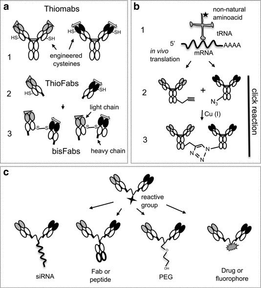
그림 3.4 전망되는 개발 방향. (a) 구조 변이체 설계를 위한 bis-Fab 생산. Thiomab은 다양한 위치에 공학적 시스테인 잔기를 포함하는 mAbs다(1). Thio-Fab은 Thiomab에서 유래한 Fabs다(2). ThioFab의 황화수소 교차결합이 bis-Fab을 만든다. 결합 위치가 공학적 시스테인이므로 공유결합 위치를 중쇄나 경쇄의 거의 어느 곳으로든 옮길 수 있다(3). (b) 비자연 아미노산과 클릭 반응. 공학적 tRNA를 통해 생체 내 번역 과정에서 비자연 아미노산이 단백질에 삽입된다(1~3). (c) 교차결합제에 추가 기능 도입. 세 번째 반응기를 지닌 교차결합제로 Fab을 수정하면 siRNA, 펩타이드, PEG, 독성 의약품, 형광물질 등 다른 분자를 위치특이적으로 결합할 수 있다.
Thio-Fab 한쪽을 과잉으로 넣고 반응하면 완전히 진행되며 남은 Thio-Fab 일부만 미반응 상태로 남는다. 따라서 bis-Fab 기술은 전환율 90%를 넘는 이중특이성 항체 생산을 가능하게 하며, 전통적인 교차결합 방법에 비해 큰 개선이다. 게다가 조성이 정밀하게 정의된 결합체와 배치 간 재현성을 제공한다.
bis-Fab 생산 공정을 특성화하기 위해 우리는 처음에 트라스투주맙을 모델로 일련의 단일특이성 bis-Fab을 만들었다. 경쇄 또는 중쇄의 서로 다른 위치에 공학적 시스테인 잔기를 지닌 여러 트라스투주맙 Fab을 행렬 배열에 따라 서로 결합했다. 트라스투주맙은 HER2에 결합해 세포 증식에 필요한 티로신키나아제 활성을 억제한다. 따라서 기능 검사는 bis-Fab이 HER2 양성 세포의 증식에 미치는 영향을 평가하는 것이었다. 결합체 대부분이 세포 증식을 억제했지만, 뜻박에도 어떤 bis-Fab 변이체는 오히려 자극 효과를 보였다(미공개 관찰). 세포 증식을 촉진하는 bis-Fab을 추가로 분석하자 HER2의 티로신키나아제 활성이 증가해 있었다(미공개 관찰). 작용제 같은 bis-Fab은 부모 항체와 두 항원결합부위의 공간 배향만 다르다. 3차원 구조만 바꿔서 항체가 부모와 정반대의 생물학적 효과를 얻을 수 있다는 것은 놀라운 사실이다. 이 기술은 (1) 효율, (2) 재현성, (3) 활성 설계의 새로운 전략이라는 향상을 제공하며, 항체 개발에 중요한 기회를 열어준다.
3.3.2 비자연 아미노산/클릭 화학
언급했듯 단백질에 여러 반응성 부위가 있으면 결합 산물의 불균질성이 생긴다. 이 문제를 극복하는 한 방법은 서로 다른 작용기를 지닌 비자연 아미노산을 단백질에 삽입하는 것이다. 비자연 아미노산은 자연 아미노산 목록에는 없는 폭넓은 구조와 기능을 지녀 다른 화학을 쓸 기회를 준다. 단백질 치료제에서 직교(orthogonal) 반응기를 지닌 비자연 아미노산을 삽입하면 많은 추가 결합체로 위치특이적 수정이 가능하다. 독소, 방사성동위원소, 폴리에틸렌글리콜, siRNA의 결합이 잠재적 수정 대상이다.
비자연 아미노산 삽입을 위한 여러 전략이 탐구되고 있다. 하나의 반합성(semi-synthetic) 접근은 유전자로 암호화된 알데히드 태그(aldehyde tag)다. 이 방법은 단백질 서열에 CxPxR 모티프를 도입하고, 세포 내에서 해당 시스테인 잔기가 formylglycine 생성효소에 의해 포름일글리신(formylglycine)으로 전환되게 한다(Carrico et al. 2007). 대장균에서 발현되는 단백질 수정에 성공한 데 이어, 이 체계는 IgG를 포함한 재조합 단백질의 포유류 세포 발현에도 작동함이 입증되었다. 세균 발현과 달리 포유류 세포에서 시스테인→포름일글리신 초기 전환율은 변동이 있지만 최적화를 통해 약 90%까지 끌어올릴 수 있다(Wu et al. 2009). 만들어진 알데히드 태그는 히드라지드나 아미노옥시기를 지닌 분자와 반응하여 단백질의 위치특이적 수정을 가능하게 한다.
비자연 아미노산의 주된 장점은 자연 아미노산에서는 찾을 수 없는 반응성, 그중에서도 “클릭 화학(click chemistry)”에 속하는 것들이다. 이 용어는 높은 반응 속도와 선택성을 보이면서도 단순한 반응 조건만 요구하는 화학 반응을 가리킨다(Kolb et al. 2001). 생체분자 결합에 성공적으로 쓰인 예가 구리(I) 촉매 아지드-알킨 [3+2] 시클로첨가(CuAAC)다(그림 3.3b). 이 반응은 생물학적으로 호환되는 조건(생리학적 pH와 온도)과 다양한 용매에서 수행될 수 있으며 높은 결합 효율을 달성한다. 위치특이적 수정용 비자연 아미노산의 특히 관련 깊은 사례는 단백질–단백질 교차결합 연구에서 나왔다. Bundy와 Swartz(2010)는 비자연 아미노산을 포함한 두 단백질을 CuAAC 반응으로 링커 없이 한 단계에 위치특이적으로 교차결합시켰고, 이 전략이 이중특이성 항체 생산 개선에도 쓰일 수 있음을 보였다. 클릭 반응의 견고함과, 자연 아미노산만 지닌 다른 단백질들이 있는 상태에서도 생체직교(bio-orthogonal) 결합 반응을 수행할 수 있다는 점을 감안하면, 미래에는 원심 추출액(crude extract) 안에서 항체를 교차결합하고 결합된 산물만 하류 정제하면 되는 기술이 개발될 수 있다. 이런 “one-pot” 접근은 화학적으로 교차결합된 이중특이성 항체 생성의 비용과 복잡성을 줄여줄 것이다.
교차결합제에 PEG나 기능성 분자를 실어서 Fab을 위치특이적으로 수정하는 전략도 있다. 이런 교차결합제는 위치특이적이라 항체 불활성화 위험과 산물 불균질성을 모두 줄여준다. 이미 활용 중인 분야가 단백질의 PEGylation이다. 화학적 교차결합으로 생산되는 이중특이성 항체 대부분은 F(ab′)₂ 포맷이다. IgG에 비해 작은 크기 덕분에 종양 침투력이 좋다는 장점이 있지만, 혈청 반감기는 현저히 짧아 일부 응용에서 치료 잠재력이 떨어질 수 있다. PEGylation은 단백질 반감기를 늘리는 확립된 수정 기술로 이미 시판 제품에서 임상적으로 입증되었다. 현재의 PEGylation 방법은 다양한 역가의 불균질 산물을 낳아 비효율적이다. 최근 단백질을 더 통제된 방식으로 PEGylation하는 몇 가지 방법이 개발되었지만(Deiters et al. 2004; Brocchini et al. 2008; Maullu et al. 2009), 다양한 분자량의 PEG을 실은 신세대 교차결합제를 쓰면 의도된 응용에 맞게 반감기를 조절한 항체 단편 생산이 더 쉬워진다. 같은 논리로 세포독성 의약품이나 형광물질을 이미 싣고 있는 새 교차결합제를 설계할 수 있게 되면, 항체 유도 항암화학요법 및 영상용 이중특이성 항체 생산이 크게 단순해질 것이다.
3.4 맺음말
이중특이성 항체의 개념은 40년 넘게 전에 시작되었다. 그러나 실행 가능한 치료 도구로 인정받은 것은 겨우 최근 몇 년의 일이다. 현재 여러 교차결합 이중특이성 항체가 임상시험 중이다(Hollander 2009; Gu and Ghayur 2010). 노력이 가장 집중되는 분야는 아마 암 치료겠지만, 감염질환 치료, 재생의학, 신경의학, 면역질환 등 다른 치료 분야도 있다. 치료 외에도 이중특이성 항체는 기초 연구, 영상, 진단에서 활용된다. 이렇게 다양한 응용은 저마다 서로 다른 요구(단백질 크기, 약동학 특성, 원자가, 안정성 등)가 있다. 화학적 결합은 이런 다양한 요구에 맞춘 유연한 플랫폼을 제공하며, 본 장에서 소개한 신기술들이 그 잠재력을 한층 끌어올릴 것이다.
참고문헌
- Brennan M, Davison PF, Paulus H (1985) Preparation of bispecific antibodies by chemical recombination of monoclonal immunoglobulin G1 fragments. Science 229(4708):81–83
- Brocchini S, Godwin A, Balan S, Choi JW, Zloh M, Shaunak S (2008) Disulfide bridge based PEGylation of proteins. Adv Drug Deliv Rev 60(1):3–12
- Bundy BC, Swartz JR (2010) Site-specific incorporation of p-propargyloxyphenylalanine in a cell-free environment for direct protein-protein click conjugation. Bioconjug Chem 21(2):255–263
- Carrico IS, Carlson BL, Bertozzi CR (2007) Introducing genetically encoded aldehydes into proteins. Nat Chem Biol 3(6):321–322
- Chatal JF, Campion L, Kraeber-Bodere F, Bardet S, Vuillez JP, Charbonnel B, Rohmer V, Chang CH, Sharkey RM, Goldenberg DM, Barbet J (2006) Survival improvement in patients with medullary thyroid carcinoma who undergo pretargeted anti-carcinoembryonic-antigen radioimmunotherapy: a collaborative study with the French Endocrine Tumor Group. J Clin Oncol 24(11):1705–1711
- de Graaf AJ, Kooijman M, Hennink WE, Mastrobattista E (2009) Nonnatural amino acids for site-specific protein conjugation. Bioconjug Chem 20(7):1281–1295
- Deiters A, Cropp TA, Summerer D, Mukherji M, Schultz PG (2004) Site-specific PEGylation of proteins containing unnatural amino acids. Bioorg Med Chem Lett 14(23):5743–5745
- Doppalapudi VR, Tryder N, Li L, Aja T, Griffith D, Liao FF, Roxas G, Ramprasad MP, Bradshaw C, Barbas CF 3rd (2007) Chemically programmed antibodies: endothelin receptor targeting CovX-Bodies. Bioorg Med Chem Lett 17(2):501–506
- Fury MG, Lipton A, Smith KM, Winston CB, Pfister DG (2008) A phase-I trial of the epidermal growth factor receptor directed bispecific antibody MDX-447 without and with recombinant human granulocyte-colony stimulating factor in patients with advanced solid tumors. Cancer Immunol Immunother 57(2):155–163
- Gavrilyuk JI, Wuellner U, Salahuddin S, Goswami RK, Sinha SC, Barbas CF 3rd (2009) An efficient chemical approach to bispecific antibodies and antibodies of high valency. Bioorg Med Chem Lett 19(14)
- Khaw BA, Tekabe Y, Johnson LL (2006) Imaging experimental atherosclerotic lesions in ApoE knockout mice: enhanced targeting with Z2D3-anti-DTPA bispecific antibody and 99mTc-labeled negatively charged polymers. J Nucl Med 47(5):868–876
- Köhler G, Milstein C (1975) Continuous cultures of fused cells secreting antibody of predefined specificity. Nature 256(5517):495–497
- Kolb HC, Finn MG, Sharpless KB (2001) Click chemistry: diverse chemical function from a few good reactions. Angew Chem Int Ed Engl 40(11):2004–2021
- Kraeber-Bodere F, Bardet S, Hoefnagel CA, Vieira MR, Vuillez JP, Murat A, Ferreira TC, Bardies M, Ferrer L, Resche I, Gautherot E, Rouvier E, Barbet J, Chatal JF (1999) Radioimmunotherapy in medullary thyroid cancer using bispecific antibody and iodine 131-labeled bivalent hapten: preliminary results of a phase I/II clinical trial. Clin Cancer Res 5(Suppl 10):3190s–3198s
- Kraeber-Bodere F, Rousseau C, Bodet-Milin C, Ferrer L, Faivre-Chauvet A, Campion L, Vuillez JP, Devillers A, Chang CH, Goldenberg DM, Chatal JF, Barbet J (2006) Targeting, toxicity, and efficacy of 2-step, pretargeted radioimmunotherapy using a chimeric bispecific antibody and 131I-labeled bivalent hapten in a phase I optimization clinical trial. J Nucl Med 47(2):247–255
- Kraeber-Bodere F, Salaun PY, Oudoux A, Goldenberg DM, Chatal JF, Barbet J (2010) Pretargeted radioimmunotherapy in rapidly progressing, metastatic, medullary thyroid cancer. Cancer 116(4 Suppl):1118–1125
- Langer HF, von der Ruhr JW, Daub K, Schoenberger T, Stellos K, May AE, Schnell H, Gauss A, Hafner R, Lang P, Schumm M, Buhring HJ, Klingel K, Conrad S, Schaller M, van Zandvoort M, Jung G, Dimmeler S, Skutella T, Gawaz M (2010) Capture of endothelial progenitor cells by a bispecific protein/monoclonal antibody molecule induces reendothelialization of vascular lesions. J Mol Med 88(7):687–699
- Lee RJ, Fang Q, Davol PA, Gu Y, Sievers RE, Grabert RC, Gall JM, Tsang E, Yee MS, Fok H, Huang NF, Padbury JF, Larrick JW, Lum LG (2007) Antibody targeting of stem cells to infarcted myocardium. Stem Cells 25(3):712–717
- Liu CC, Schultz PG (2010) Adding new chemistries to the genetic code. Annu Rev Biochem 79:413–444
- Raso V, Brown M, McGrath J (1997) Intracellular targeting with low pH-triggered bispecific antibodies. J Biol Chem 272(44):27623–27628
- Repp R, van Ojik HH, Valerius T, Groenewegen G, Wieland G, Oetzel C, Stockmeyer B, Becker W, Eisenhut M, Steininger H, Deo YM, Blijham GH, Kalden JR, van de Winkel JGJ, Gramatzki M (2003) Phase I clinical trial of the bispecific antibody MDX-H210 (anti-FcgammaRI x anti-HER-2/neu) in combination with Filgrastim (G-CSF) for treatment of advanced breast cancer. Br J Cancer 89(12):2234–2243
- Reusch U, Sundaram M, Davol PA, Olson SD, Davis JB, Demel K, Nissim J, Rathore R, Liu PY, Lum LG (2006) Anti-CD3 x anti-epidermal growth factor receptor (EGFR) bispecific antibody redirects T-cell cytolytic activity to EGFR-positive cancers in vitro and in an animal model. Clin Cancer Res 12(1):183–190
- Segal DM, Bast B (1995) Production of Bispecific Antibodies. In: Current Protocols in Immunology, Supplement 14. John Wiley & Sons, New York
- Shalaby MR, Shepard HM, Presta L, Rodrigues ML, Beverley PC, FeldmannM, CarterP (1992) Development of humanized bispecific antibodies reactive with cytotoxic lymphocytes and tumor cells overexpressing the HER2 protooncogene. J Exp Med 175(1):217–225
- Songsivilai S, Clissold PM, Lachmann PJ (1989) A novel strategy for producing chimeric bispecific antibodies by gene transfection. Biochem Biophys Res Commun 164(1):271–276
- Valone FH, Kaufman PA, Guyre PM, Lewis LD, Memoli V, Ernstoff MS, Wells W, Barth R, Deo Y, Fisher J et al (1995) Clinical trials of bispecific antibody MDX-210 in women with advanced breast or ovarian cancer that overexpresses HER-2/neu. J Hematother 4(5):471–475
- Vasu C, Gorla SR, Prabhakar BS, Holterman MJ (2003) Targeted engagement of CTLA-4 prevents autoimmune thyroiditis. Int Immunol 15(5):641–654
- Wu P, Shui W, Carlson BL, Hu N, Rabuka D, Lee J, Bertozzi CR (2009) Site-specific chemical modification of recombinant proteins produced in mammalian cells by using the genetically encoded aldehyde tag. Proc Natl Acad Sci USA 106(9):3000–3005
- Wuellner U, Gavrilyuk JI, Barbas CF 3rd (2010) Expanding the concept of chemically programmed antibodies… # 제4장 암 치료를 위한 3가·3중특이성 항체 유도체
크리스토프 슈타인(Christoph Stein), 잉고 슈베르트(Ingo Schubert), 게오르크 H. 파이(Georg H. Fey)
4.1 서론
항체는 두 가지 주요 기능 도메인을 지닌다. 항원결합부위와 효과기 기능을 동원하는 Fc 영역이다. Fc 도메인에는 효과기 세포에 존재하는 여러 유형의 Fc 수용체(FcR)가 결합할 수 있다. 이런 다양성은 여러 효과기 세포 집단을 동원해 다양한 효과기 기능을 수행하게 함으로써 감염원에 대한 숙주 방어 전체에 이롭다. 그러나 다양성에는 대가가 따르고, 항체를 암 치료에 쓸 때 그것이 드러난다. 주입된 양의 상당 부분이 여러 정상 세포의 FcR에 흡수되면서 암세포에 도달하지 못한다. 그 결과 유효 용량이 실질적으로 줄어들 뿐 아니라, 일부 FcR 보유 세포가 면역 반응을 조절하므로 바람직하지 않은 부작용도 생긴다. 한 예로 중합·응집 면역글로불린(Ig)에 대한 저친화 수용체인 FcγRIIb(CD32b)가 있다. CD32b에 의한 항체 결합은 B 세포 반응을 누그러뜨리는데, 이것이 앞서 말한 불리한 효과 중 하나다. 그래서 연구자들은 Fc 도메인을 교체하거나 변형해 효과기 세포에서 원하는 유형의 FcR만 겨냥하도록 하고 부작용을 줄이려 시도했다. 이러한 목적으로 지난 20년간 이중특이성 항체 유도체가 만들어졌다(Chames and Baty 2009; Hartmann et al. 1997; Muller and Kontermann 2007). 하지만 온전한 IgG끼리나 Fab 단편 사이의 이중특이성 접합체 생산은 제조상 큰 문제를 안겨주었고, 결국 이 포맷은 버려졌다. 그 결과 오랫동안 이중특이성 항체에 대한 관심이 낮았고, 이런 제조 문제를 우회하는 재조합 포맷이 등장하면서 비로소 매력을 되찾았다.
지난 5년간 이중특이성 및 3중특이성 물질에 대한 관심이 크게 되살아났다. 관심의 부활은 주로 재조합 이중특이성 물질 Blinatumomab™의 첫 임상 성공에 힘입은 것이다. B 림프구의 CD19와 T 림프구의 CD3에 각각 특이적인 scFv 사이의 융합 단백질인 이 물질은 성인 B세포 림프종 임상시험에서 큰 성공을 거두었고(Bargou et al. 2008), 소아 급성림프모구백혈병(ALL)에 대한 임상 연구도 진행 중이다(Handgretinger et al. 2010; Topp et al. 2009). Blinatumomab™ 포맷의 이중특이성 물질은 분명한 장점이 있지만 개선 여지는 남아 있다. 약점 중 하나는 사람에서 약 1시간 수준으로 짧은 혈장 반감기다. 이 때문에 반복 투여나 지속 주입이 필요하고 환자에게 번거로울 수 있다. bs scFv의 짧은 반감기는 상당 부분 신장을 처음 통과할 때 배설되기 때문일 것이다. 우리 팀은 bs scFv의 혈장 반감기를 개선하기 위해 세 번째 scFv를 같은 폴리펩타이드쇄에 추가해 bs scFv를 확장한 sctb(single-chain triplebody)를 설계했다. 분자량이 약 90 kDa까지 올라 신장 역치를 넘으므로 반감기가 늘어날 것으로 기대됐다. 적어도 생쥐에서는 이 기대가 들어맞았고, sctb 포맷은 다른 좋은 특성들도 보였다. 추가 장점 중 주된 것은 암세포에 대한 친화력(avidity) 증대였다. 덕분에 세포독 활성을 내는 데 필요한 농도가 크게 낮아졌다. 또 종양 세포 위 서로 다른 두 항원에 대한 결합부위를 지닌 이중표적화 sctb 설계도 가능해졌다. 후자는 암세포에 단가로만 결합하는 bs scFv로는 도달할 수 없는 새로운 응용을 열었다. 이런 새 특성은 아직 충분히 탐구되지 않았고, 이중표적화가 암 치료에 이득이라는 엄격한 증명도 아직 없다. 그래도 초기 결과는 고무적이다.
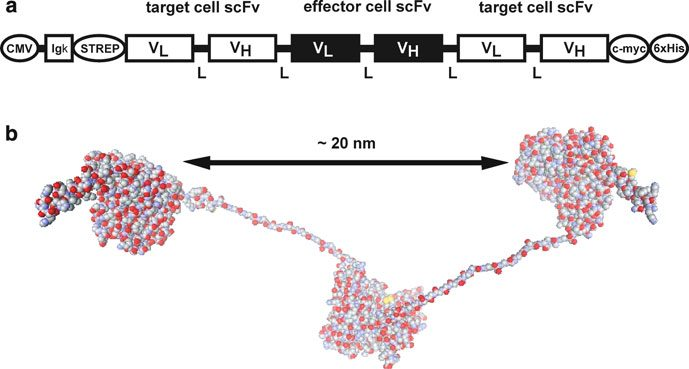
그림 4.1 재조합 단일쇄 삼중체(triplebody) 설계. (a) sctb 발현 벡터의 블록 구조. CMV: 거대세포바이러스 초기 프로모터; Igκ: 생쥐 Ig kappa 경쇄의 분비 선도서열; VH/VL: Ig 중쇄 또는 경쇄 가변영역을 암호화하는 cDNA 서열; L₄: 20개 아미노산 유연 링커(Gly₄Ser₄)를 암호화하는 cDNA; Strep, c-myc, 6His: 각 태그를 암호화하는 cDNA. (b) sctb 33-16-33 기하학 구조의 공간충전 모델 표현. scFv 도메인은 기존 X선 구조에 기반한 기하 최적화 호몰로지 모델이다.
10, 30, 50 아미노산 길이의 링커를 지닌 sctb도 안정적이고 기능적이었다. 설계 의도는 하나의 sctb 분자가 양 끝 결합부위로 암세포에 동시에 결합하는 동시에 효과기 세포에도 결합해 ADCC를 위해 활성화시킬 확률을 극대화하는 것이었다. 이렇게 하면 트리거 분자용 중앙 결합 도메인이 두 종양항원 결합부위 사이의 간격자 역할을 한다. 이 배열은 저밀도 종양항원에서도 암세포에 대한 2가 결합 확률을 높여줘야 한다. 효과기 세포가 대식세포라면 sctb가 대식세포 표면 트리거 분자에 중앙 결합부위로 붙어 식작용을 위해 활성화할 것으로 예상하지만, 이 효과는 아직 직접 연구되지 않았다.
우리는 대식세포와 사이토카인 활성화 호중성 과립구에 존재하는 CD64(FcγRI)에 결합하는 scFv 도메인을 지닌 sctb를 만들었다. 사이토카인으로 생체 내 활성화 및 CD64 상향조절 처리된 공여자의 호중성 과립구를 사용해 소수의 실험에서 ADCC가 관찰되었다. 마찬가지로 호중성 과립구에 구성적으로 발현되는 IgA 수용체 CD89(FcαR)에 특이적인 scFv를 배치해 이 세포들을 효과기로 동원하는 시도도 가능할 것이다. 아직 시도되지 않았지만 우리는 absscFv HLAII-CD89로 작업한 바 있다
4.2.2 단일쇄 삼중체의 세 결합부위는 모두 기능적이다
sctb의 세 결합부위가 모두 기능적으로 활성임을 뒷받침하는 증거는 세 가지다. 첫째는 bs scFv와 sctb가 항원 양성 세포에 평형 결합할 때의 친화도와 친화력 비교 측정이다. 둘째는 세 항원 모두에 대한 결합 연구로, 하나는 세포 결합 상태, 나머지 둘은 액상이었다. 셋째는 sctb가 대응하는 bs scFv 대조군보다 강화된 세포독 기능을 보인 ADCC 실험이다.
첫 유형의 실험 예는 sctb 19-16-19(Kellner et al. 2008), 33-16-33(Singer et al. 2010), 33-16-19(Schubert et al. 2011), 123-16-33(Kugler et al. 2010)에 대해 발표되었다. 원형 프로토콕인 19-16-19에서 sctb의 CD19 양성 세포에 대한 친화력은 bs scFv 19-16의 친화도와 비교되었다. 그 결과 sctb 19-16-19의 CD19 양성 세포에 대한 친화도(K_D)는 13.0 ± 1.2 nM이었고, bs scFv 19-16의 같은 세포주에 대한 친화도는 42.4 ± 5.7 nM이었다(P = 0.0048; Kellner et al. 2008). 즉 sctb는 bs scFv보다 약 3배 낮은 몰 농도에서 이 세포주와 평형 결합에 도달했는데, 이는 두 CD19 결합부위가 전체 결합에 기여했을 때만 가능하다. sctb 33-16-33과 bs scFv 33-16의 비교에서도 비슷한 데이터가 얻어졌다(Singer et al. 2010). 여기서 친화도 차이는 3.5배였고, CD33에 대한 K_D 값은 각각 7.9 ± 1.1 nM과 28.9 ± 1.9 nM이었다. 두 번째 결합부위 추가로 인한 이런 친화력 향상은 수치적으로 크진 않지만 분명히 존재했으며, 서로 다른 백혈병 유래 세포주에서 sctb 19-16-19와 33-16-33 양쪽 모두 약 3배 정도로 비슷한 규모였다. 두 데이터 세트는 서로 부합하며 결론의 타당성에 대한 신뢰를 서로 강화한다.
표지 실험에서는 sctb가 CD123ex-RFP와 CD16ex-GFP를 모두 같은 표적 세포에 결합시켰음을 보여주었다. 세 번째 유형인 세포독성 연구에서는 표적 세포용 두 번째 scFv 추가로 용량–반응 곡선이 저피코몰 범위의 더 낮은 농도 쪽으로 이동했다. 조사된 모든 sctb는 대응 bs scFv에 비해 친화력 증가뿐 아니라 세포독 활성의 강한 증가도 보였다. 현재로서는 이렇게 비례를 넘어서는 항종양 활성 증가를 설명하지 못한다. 이 데이터들을 종합하면, 하나의 sctb의 세 결합부위가 동시에 작동하여 대응 bs scFv보다 높은 ADCC 기능에 기여한다고 제안한다.
4.3 3가 이중특이성 삼중체: 단일표적화 물질
4.3.1 B세포 악성질환 치료용 원형 프로토콜 19-16-19
가장 잘 특성화된 단일표적화 sctb는 CD19용 두 개의 양끝 결합부위와 CD16용 중앙 결합부위를 지닌 원형 프로토콜 19-16-19다(Kellner et al. 2008). CD19 양성 B 림프구 악성질환을 겨냥해 설계되었다.
4.3.1.1 CD19는 항체 요법의 매력적인 표적이다
CD19는 초기 pro-B세포부터 말기 성숙 B세포까지 넓은 범위의 B세포 성숙 단계에 존재하면서도 형질세포와 조혈줄기세포(HSC)에는 없고, 발현이 조혈계에 국한되므로 매력적인 표적이다. 후자가 중요한 이유는 CD19 특이 물질이 HSC를 건드리지 않으므로 치료가 끝난 뒤 환자의 HSC나 줄기세포 이식으로 조혈 재생이 가능하기 때문이다. CD19는 초기 급성 B 전구세포 백혈병(BCP-ALL, 주로 영유아·소아·청년층)부터 만성 B세포 백혈병(B-CLL), B세포 림프종까지 서로 다른 B세포 성숙 단계에 해당하는 광범위한 악성질환에서 발현된다. BCP-ALL에서 특히 중요한데, 이 환자들의 약 3/4에서 모세포는 CD20이 없으면서도 CD19에 강하게 양성이기 때문이다(Handgretinger et al. 2010). 이 환자들은 CD20 항체로는 이득을 볼 수 없지만 CD19 특이 물질로는 이득을 볼 수 있다. 게다가 종양 세포 표면의 CD19 발현은 견고하다. 항원이 표면에서 떨어져 나오지 않고, CD19 항체가 세포에 결합한 후에도 광범위하게 발현이 하향조절되지 않는다.
4.3.1.2 CD16의 특성
CD16은 NK세포, 대식세포, 비만세포, 호중성 과립구, 사이토카인 자극 수지상세포(DC)에 존재하는 IgG 저친화 수용체다(Nimmerjahn and Ravetch 2005). 인간 백혈구에는 CD16a와 CD16b의 두 형태가 있는데, 서로 다른 두 유전자의 산물로 C-말단 부위가 다르다. CD16a는 막관통 도메인과 세포질 꼬리를 지니며 FcεRI 수용체의 γ쇄나 T세포항원수용체 ζ쇄, 또는 둘 다와 결합할 수 있다(Nimmerjahn and Ravetch 2006). 인간 비만세포에서 CD16은 또한 FcεR β쇄와 결합한다. 이 소단위들은 세포질 신호 도메인을 지니고 수용체 점유 결과의 신호를 전달한다. CD16b는 막관통 도메인과 세포질 꼬리가 없고 glycosyl-phosphatidylinositol(GPI) 링커로 막에 붙어 있으며, 이 형태는 γ·ζ쇄와 조립되지 않는다. 인간 b형은 주로 호중성 과립구에 발현된다. 과립구는 NK세포와 대식세포보다 혈액과 조직에서 약 10배 많으므로, 두 변이체 모두와 교차 반응하는 CD16 항체의 싱크대(sink) 역할을 한다. 따라서 치료 목적으로는 Affimed 회사가 독자적 CD16a 특이 scFv를 기반으로 개발한 tandem diabody처럼 CD16a만 특이하는 물질을 쓰는 것이 유리할 것이다. 우리 삼중체에 쓴 scFv는 생쥐 하이브리돔 3G8 유래로(Fleit 1991) CD16a와 b 모두에 반응한다.
인간 NK세포에서 CD16 발현은 구성적이지 않고 조절된다. 노화된 NK세포와 NK…
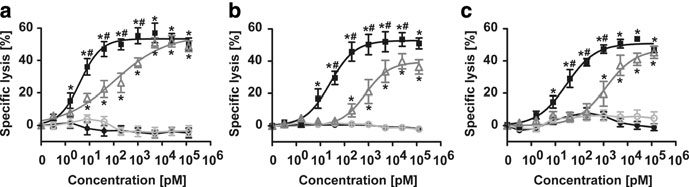
그림 4.2 단일쇄 삼중체 19-16-19와 bs scFv 19-16에 의한 여러 종양세포주의 용량 의존적 ADCC 유도. CD19 양성 종양세포주 SEM(a), BV-173(b), ARH-77(c)을 표적으로 삼아 E:T 세포 비율 40:1에서 두 항체 유도체의 효능을 비교했다. sctb(검은 채운 사각형)와 bs scFv(회색 빈 삼각형)는 용량 의존적으로 ADCC를 유발했다. 무관한 대조 sctb(검은 채운 원)와 무관한 대조 bs scFv(회색 빈 원)는 유의한 살해를 유도하지 않았다. 최소 6명의 건강한 공여자로부터 분리한 MNC로 얻은 용해율(%)의 평균±SEM이다. *단백질 미첨가 대조에 비해 통계적으로 유의한 ADCC 차이. #sctb와 bs scFv가 유도한 살해 사이의 통계적으로 유의한 차이.
MLL 유전자로의 t(4;11) 전좌를 지닌 소아 BCP-ALL에서 유래한 SEM, Philadelphia 양성 혼합 계열 표현형의 공격적 BCP-ALL에서 유래한 BV-173, Epstein–Barr 바이러스 양성 B 림프모세포주인 ARH-77을 사용했다. 이 세포주들은 서로 다른 질병 실체와 B 림프구 성숙 단계를 대표한다. 처음 둘은 미성숙 pro-B세포 단계, 마지막은 성숙 B세포 단계다. sctb 19-16-19의 효과를 bs scFv 19-16(Bruenke et al. 2005)과 비교했다. 몰당 기준으로 sctb가 bs scFv보다 훨씬 효과적이었다(그림 4.2a–c). 곡선에서 구한 세 세포주에 대한 sctb의 EC₅₀ 값은 SEM, BV-173, ARH-77 세포에 대해 각각 4, 29, 29 pM이었다. bs scFv의 해당 값은 각각 113, 753, 1,277 pM이었다. 따라서 sctb는 이 세 표적 세포주에서 bs scFv보다 각각 28배, 26배, 44배 낮은 농도로 반수 세포독성을 냈다. 이 세포주들은 서로 다른 CD19 밀도를 지니며, 서로 다른 기원을 반영해 악성 표현형에 기여하는 돌연변이 스펙트럼과 세포 특성도 다를 것이다.
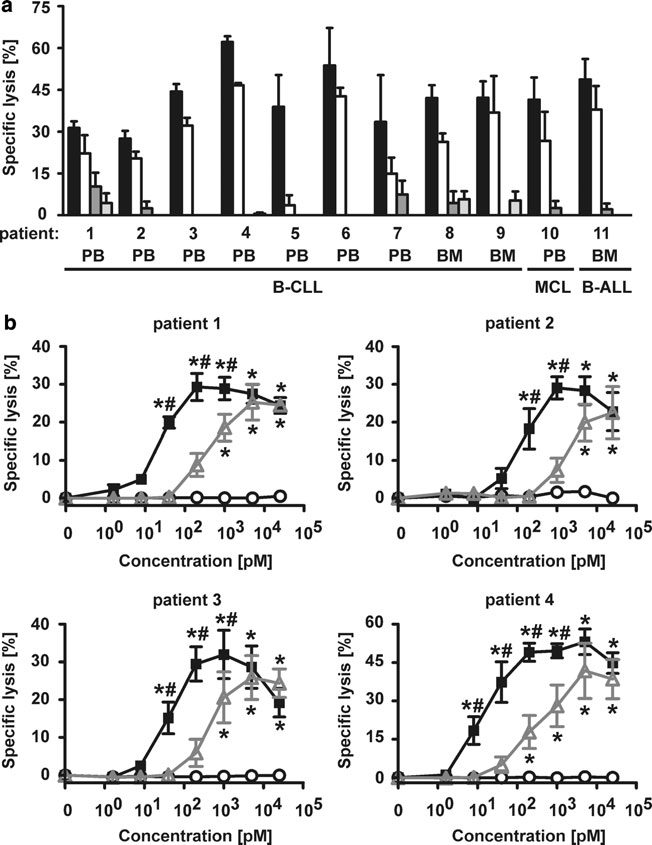
그림 4.3 단일쇄 삼중체 19-16-19와 bs scFv 19-16에 의한 CD19 양성 원발 백혈병 모세포와 림프종 세포의 강력한 용해. (a) B-CLL 환자 9명, MCL 환자 1명, B-ALL 환자 1명의 말초혈액(PB) 또는 골수(BM)의 악성세포를 1 nM 농도의 sctb(검은 막대)와 bs scFv(흰 막대), 그리고 건강한 공여자의 MNC(E:T 40:1)로 용해했다. 무관한 sctb(짙은 회색 막대)나 MNC 단독(밝은 회색 막대)으로는 용해가 없었다. 3회 반복 측정의 평균값이며 오차 막대는 SEM이다. (b) B-CLL 환자 1~4의 세포를 표적으로 한 용량–반응 곡선(E:T 40:1). sctb(검은 채운 사각형)는 bs scFv(회색 빈 삼각형)보다 10~20배 낮은 EC₅₀ 값으로 용해를 유도했다. 무관한 대조 sctb(빈 원)로는 유의한 용해가 없었다.
MCL 환자 1명과 B-ALL 환자 1명을 포함한 샘플이 사용되었다. ADCC 실험은 bs scFv 19-16과 비교해 수행되었다. 검사한 11개 샘플 모두에서 sctb가 bs scFv보다 더 큰 최대 용해를 달성했다(그림 4.3a). B-CLL 환자 4명에 대해 용량–반응 곡선을 기록했다(그림 4.3b). 네 환자 모두에서 곡선이 약 1차수 낮은 유효 농도 쪽으로 이동했고, EC₅₀ 값은 한 환자에서 약 11배, 다른 셋에서 약 20배 낮았다. 단클론 세포주였던 앞선 경우와 달리 여기서 쓴 환자 세포는 건강세포와 악성세포를 모두 포함하는 MNC였음에도, 이 차이는 백혈병 유래 세포주에서 구한 값과 놀랍도록 가까웠다(그림 4.2). B-CLL 환자의 원발 세포에서 sctb가 이렇게 좋은 성적을 낸 것은 이 물질이 급성 B세포 백혈병과 만성 B-CLL 양쪽에 대한 임상용 개발에 유용할 수 있음을 시사한다.
4.3.1.5 단일쇄 삼중체 19-16-19의 혈장 반감기와 표면 잔류
삼중체 포맷을 개발한 이유 중 하나는 추가 scFv 도메인으로 개선된 혈장 반감기에 도달할 수 있으리라는 기대였다. 실제로 bs scFv 19-16은 생쥐에서 2시간, sctb는 4시간의 혈장 반감기를 보였다(그림 4.4). 반감기 연장은 주로 질량 증가 때문일 것이다. bs scFv의 질량은 신장 배제 한계 아래, sctb는 그 위에 있다.
시험관에서 CD19 양성 백혈병 세포 표면에 대한 sctb와 bs scFv의 잔류를 별도 실험에서 직접 측정한 결과,
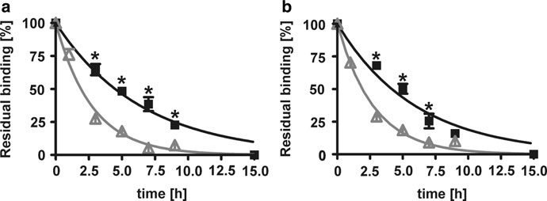
그림 4.4 인간 혈청 내 단일쇄 삼중체의 안정성 및 표면 잔류.
sctb는 bs scFv에 비해 6배 증가한 표면 잔류를 보였지만 CD16 형질전환 세포에 대한 두 분자의 잔류에는 차이가 없었다(그림 4.4, Kellner et al. 2008). 다른 특이성의 sctb에서도 단일표적화든 이중표적화든 상관없이 유사한 결과가 얻어졌다.
4.4 이중표적화 단일쇄 삼중체
4.4.1 이중표적화의 기대 효과: 작업 가설
우리의 작업 가설은 이런 것이다. 이중표적화 덕분에 두 표적 항원 중 하나만 양성인 세포보다 두 항원 모두 양성인 세포를 우선적으로 제거할 수 있으리라는 것. 다시 말해 이중표적화는 이중 양성 세포 제거에 어느 정도의 선택성을 부여할 수 있다고 주장한다. 암 치료에서 이것이 의미를 갖려면, 암세포에만 존재하고 환자의 건강한 정상세포에는 그 쌍 중 하나만 존재하거나, 정상세포보다 암세포에서 훨씬 높은 표면 밀도로 나타나는 표적 항원 쌍을 찾아내야 한다.
이중표적화 sctb의 첫 원형 프로토콜인 33-16-19가 이 원리를 보여준다. 이 물질은 종양 항원 CD33과 CD19를 겨냥한다. 인간 정상 조혈세포는 이 항원들 중 하나만 지닐 뿐 둘을 동시에 갖지 않는다. 반면 일부 급성 백혈병, 이른바 “혼합 계열(mixed lineage)” 또는 “이표현형(biphenotypic) 백혈병”에서는 모세포가 골수계와 림프구계 특성을 모두 지니며 표면에 CD19와 CD33을 함께 발현한다. 가설대로라면 sctb 33-16-19는 단가 친화도로만 결합하는 단일 양성 건강세포보다 이중 양성 모세포에 더 높은 친화력으로 결합할 것이고, 따라서 건강세포보다 모세포를 우선 제거할 것이다. 당연해 들리지만 이 선택성 주장은 새로운 것이다. 현재 이용 가능한 암 치료제에는 암세포를 정상세포보다 선호하는 내장된 기제가 없기 때문이다. CD20 항체 리툭시맙과 Blinatumomab™도 마찬가지다. 그러나 많은 암세포에서… …이중표적화의 이득에 관한 가설 검증은 아직 진행 중이며 결정적 증명에는 이르지 못했다. 그래도 초기 데이터는 고무적이며 아래에 요약한다.
4.4.2 AML 세포를 겨냥한 원형 프로토콜 123-16-33
이중표적화 sctb의 한 프로토콜인 123-16-33(Kugler et al. 2010)은 급성골수성백혈병(AML) LSC(백혈병줄기세포)를 우선적으로 표적할 의도로 만들어졌다.
4.4.2.1 AML 줄기세포는 뚜렷한 면역표현형을 지닌 정의된 하위집단이다
설계 의도는 대부분의 AML 세포에서 발현되면서도, 대량 집단과 정상 HSC보다 AML-LSC에서 더 높은 결합 밀도로 나타날 두 표적 항원 조합을 찾는 것이었다. 작업 가설이 참이라면 그런 항원 쌍을 겨냥한 sctb는 AML-LSC를 우선 제거하고, 치료 후 조혈 재생을 위해 소수의 정상 HSC를 보존할 수 있을 것이다. 후보 항원으로는 AML-LSC에서 과발현되는 CD123(Jin et al. 2009; Jordan et al. 2000), 여러 AML 아형의 LSC에만 발현되는 CD96(Hosen et al. 2007), 정상 HSC에는 없이 AML-LSC에만 발현된다고 보고된 CLL-1(van Rhenen et al. 2007), 그리고 AML-LSC 일부와 정상 HSC 일부에 존재하는 CD33(Taussig et al. 2005) 등이 검토되었다. CD33과 CD123의 조합을 고른 이유는 두 항원 모두 AML 치료용으로 임상적으로 검증된 표적 항원이어서 임상적으로 유용한 물질을 만들 확률이 가장 높다고 판단했기 때문이다. 당단백질 CD33은 면역글로불린 초패밀리의 일원으로 AML을 겨냥한 항체 유래 치료제의 유용한 표적이다(Sievers et al. 1999; Silla et al. 1995). CD33은 Mylotarg로 얻은 AML 임상 결과로 검증되었다(Zwaan et al. 2010). 인터루킨-3 수용체 구성요소인 CD123 역시 검증된 표적이다.
그림 4.5 단일쇄 삼중체 123-16-33이 이중 양성 AML 세포주의 ADCC를 유도한다. sctb 123-16-33(채운 삼각형)은 이중 양성 MOLM-13(a) 및 THP-1(b) 세포의 용량 의존적 ADCC를 매개했지만 대조 sctb(채운 사각형)는 세포 용해를 유도하지 않았다. E:T 비율 40:1에서 여섯 명 건강 공여자의 분리 MNC로 얻은 특이 용해율(%) 평균값. *대조 sctb 대비 통계적으로 유의한 ADCC 차이(P<0.05).
표적 세포는 ⁵¹Cr로 표지했고, 무관한 건강 인간 공여자의 MNC를 효과기로 사용했다. 먼저 확립된 AML 유래 세포주 두 개(MOLM-13, THP-1)를 시험했다(그림 4.5). 두 세포주 모두에서 sctb가 강한 ADCC를 일으켰다. 대조로 동일 포맷이지만 CD7에 특이적인 sctb를 같은 실험에서 병행했다. sctb의 EC₅₀ 값은 MOLM-13(그림 4.5a)에서 21 pM, THP-1(그림 4.5b)에서 118 pM으로, 비슷한 포맷의 다른 특이성 sctb와 같은 범위였다. 이 데이터는 CD16 양성 MNC와 정제 NK세포를 시험관에서 ADCC로 AML 세포에 맞서는 효과기로 쓸 수 있음, 그리고 sctb가 이 효과를 매개하는 고도로 유효한 분자임을 보여준다(Kugler et al. 2010).
4.4.2.3 단일쇄 삼중체 123-16-33의 원발 백혈병 세포에 대한 세포독 효과
sctb 123-16-33은 AML 환자의 원발 세포에서도 시험되었다. 치료받지 않은 AML 환자 일곱 명의 골수와 말초혈액 재료에서 밀도구배 원심분리로 세포를 준비했다. 환자들은 FAB 및 WHO 분류상 서로 다른 AML 아형이었다. 무관한 건강 공여자의 MNC를 E:T 비율 40:1의 효과기로 사용했으며, 효과기와 표적 사이의 조직적합성 일치는 굳이 피하지 않았다. 이중표적화와 단일표적화 sctb의 원발 백혈병 세포 ADCC 역량을 직접 비교하기 위해 sctb 123-16-123과 33-16-33을 병행했다. 세 sctb 모두 농도 의존적으로 원발 AML 세포의 강력한 용해를 보였다(그림 4.6).
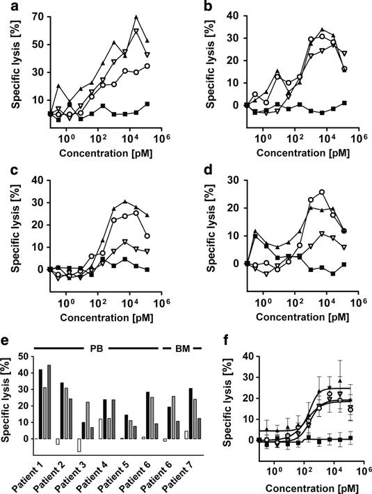
그림 4.6 단일쇄 삼중체 123-16-33, 123-16-123, 33-16-33에 의한 원발 AML 세포 용해. sctb 123-16-33(채운 삼각형), 123-16-123(빈 원), 33-16-33(빈 삼각형)은 원발 AML 세포의 용량 의존적 ADCC를 매개했지만 대조 sctb(채운 사각형)는 세포 용해를 유도하지 못했다. (a, b) 말초혈액에서 분리한 정제 원발 AML 세포(환자 1, 2). (c, d) 골수에서 분리한 정제 원발 AML 세포(환자 6, 7). (e) 8개 샘플 전부에 대해 5 nM 농도의 sctb로 유도한 ADCC. 흰 막대: 대조 sctb; 검은 막대: sctb 123-16-33; 밝은 회색 막대: sctb 123-16-123; 짙은 회색 막대: sctb 33-16-33. (f) 여섯 명 서로 다른 환자(환자 1~6)의 말초혈액 정제 AML 세포에 대한 sctb의 ADCC, 통합 데이터. E:T 비율은 모두 40:1.
재조합 단백질은 강력하고 특이적인 용해를 일으켰다(그림 4.6e). 여덟 샘플 중 넷에서 이중표적화 sctb 123-16-33이 가장 높은 용해 정도에 도달했다. 여섯 개 말초혈액 샘플 전체의 ADCC 데이터를 통합하자(그림 4.6f) 이 결과가 확인되었다. 이 데이터셋에서 구한 EC₅₀ 값은 sctb 123-16-33, 123-16-123, 33-16-33에 대해 각각 약 250, 130, 250 pM이었고, 최대 특이 용해는 각각 투입 세포의 약 25%, 19%, 19%였다. 이중표적화 sctb 123-16-33과 단일표적화 sctb 123-16-123, 33-16-33 사이 최대 특이 용해 차이는 아직 통계적 유의성에 도달하지 않았지만, 이중표적화 분자는 단일표적화 자매들보다 원발 AML 세포를 더 높게 용해하는 뚜렷한 경향을 보였다. 이 결과는 sctb가 시험관에서 서로 다른 AML 유형의 원발 AML 세포에 강력한 ADCC를 유도할 수 있음을 분명히 보여주며, 대응 단일표적화 물질에 비해 작지만 뚜렷한 이중표적화 물질의 장점을 가리킨다.
이 물질들이 생체 내 AML 응용에도 유용할지는 아직 명확하지 않다. 실험동물이나 사람에게서 시험되지 않았기 때문이다. 다만 NK세포를 동원해 AML 세포를 제거하는 물질은 임상적으로 매력적일 수 있다. 첫 항암화학요법 완해 후 단계에서는 NK세포가 말초와 골수, 즉 대부분의 AML 세포가 있는 곳에 다시 나타나기 때문이다. 다만 1차 치료에는 유용하지 않을 것으로 보인다. 치료받지 않은 환자의 AML 모세포 수가 가용 NK세포 수를 크게 웃돌고 NK세포 역시 1차 화학요법의 영향을 받기 때문이다. 따라서 이런 물질이 언젠가 임상 적용된다면 완해 후 설정에서 고형화(consolidation) 요법의 보조 물질로 쓰일 가능성이 높다. 이 설정에서는 MRD(최소잔존질환) 세포의 일부를 제거할 수 있다는 점에서 매력적이다.
4.4.3 이중표적화의 실제 효과는 아직 연구가 필요하다
지금까지 우리의 실험은 여러 표적 항원에 대해 이중표적화 sctb를 만들 수 있음을 보여주었다. 가장 광범위하게 연구된 세 프로토콜 123-16-33, 33-16-19, HLAII-16-19(Schubert, 미공개)는 모두 기능적이었다. 이는 흥미로운데, 인간 백혈구 표면에서 막 단백질의 배열이 무작위가 아니라 클러스터를 이루고 있어야 하기 때문이다.
현재 인간 백혈구 표면 막단백질 배열에 대한 모델은 세 가지다. 첫째는 유동막(fluid membrane) 모델로, 단백질이 무작위로 배열되지만 막이 충분히 유동적이라 모든 단백질이 빠른 측면 확산을 할 수 있다고 본다. 둘째는 지질 뗏목(lipid raft) 모델로, 막이 뚜렷한 지질 조성을 지닌 뗏목들의 모자이크이며 단백질이 뗏목 안에 클러스터를 이루고 뗏목 유형별로 뚜렷한 마커 단백질이 있다고 본다. 이 모델은 주로 간접 증거(막 분획의 밀도구배 원심분리)에 기반하고 온전한 막의 직접 관찰에 기반하지 않아 실제 막을 잘 기술하는지 불명확하다. 인간 백혈구의 선도 모델은 “단백질 섬(protein island) 모델”이다(Lillemeier et al. 2010). 이 모델에 따르면 단백질은 직경 30~300 nm의 섬으로 클러스터를 이루며, 섬은 뚜렷한 지질 조성을 지니고 그 사이사이에 서로 다른 지질 조성의 커다란 단백질 없는 영역이 끼어 있다. 섬 안에서 단백질은 측면 확산으로 자유롭게 이동할 수 있고 섬 전체도 막 속에서 움직일 수 있다. 특정 단백질은 특정 섬으로 향하며, 앞서 말한 뗏목 마커들은 나머지와 별개의 섬에서 발견된다. 가끔 섬들이 가까워져 단백질이 섬에서 섬으로 뛰어넘기도 한다. 림프구, 예컨대 인간 T 세포가 활성화되면 단백질이 재분배되어 비활성 상태에서 별개 섬에 있던 단백질들이 활성 상태에서 같은 섬에 공존하게 된다(Lillemeier et al. 2010). 따라서 위에 나열한 표적 항원들이 같은 섬에 공존하는지 아니면 다른 섬으로 갈라지는지 불명확했다. 그럼에도 세 이중표적화 sctb 모두 기능적이었다는 사실은 단백질 섬 모델에 비추어 놀라운 일이었으며, 이 단백질들이 같은 섬에 있거나 섬 간 이동이 충분히 빠름을 시사한다.
이중표적화 sctb의 효능은 표적 세포 위 해당 분자들의 표면 밀도, 그리고 아마도 섬 내 분포, 같은 섬에 공존하거나 섬을 건너는 능력에 좌우될 것이다. 링커 길이 조절로 표면 밀도의 영향을 상쇄할 수 있을지 모르지만 아직 직접 입증된 바 없다.
장차 이 설계를 혈액암 세포뿐 아니라 고형종양 세포의 여러 표적 항원 쌍 조합에 적용할 수 있을 것이다. 이 포맷은 다른 효과기 세포의 트리거 분자용 결합부위도 수용할 수 있으므로, 앞으로 대식세포·과립구·T 세포를 이 포맷의 분자로 동원해 보는 것이 흥미로울 것이다. 암 유형마다 가장 잘 어울리는 효과기 세포가 다를 것이다. 마지막으로 sctb는 악성질환 치료뿐 아니라 만성 염증 및 자가면역질환 치료에도 유용할 수 있다. CD20 항체가 그랬던 것처럼 말이다. 이중표적화 개념은 현재 암 치료에 쓰이는 항체의 단일특이성 표적화에서 크게 벗어난 것으로, 종양 치료의 중요한 목표인 암 줄기세포를 선택적으로 또는 우선적으로 표적하는 질적으로 새로운 수단이 될 수 있다.
참고문헌
- Bargou R, Leo E, Zugmaier G, Klinger M, Goebeler M, Knop S, Noppeney R, Viardot A, Hess G, Schuler M, Einsele H, Brandl C, Wolf A, Kirchinger P, Klappers P, Schmidt M, Riethmuller G, Reinhardt C, Baeuerle PA, Kufer P (2008) Tumor regression in cancer patients by very low doses of a T cell-engaging antibody. Science 321(5891):974–977
- Bruenke J, Barbin K, Kunert S, Lang P, Pfeiffer M, Stieglmaier K, Niethammer D, Stockmeyer B, Peipp M, Repp R, Valerius T, Fey GH (2005) Effective lysis of lymphoma cells with a stabilised bispecific single-chain Fv antibody against CD19 and FcgammaRIII (CD16). Br J Haematol 130(2):218–228
- Chames P, Baty D (2009) Bispecific antibodies for cancer therapy: the light at the end of the tunnel? MAbs 1(6):539–547
- Dick JE (2008) Stem cell concepts renew cancer research. Blood 112:4793–4807
- Hartmann F, Renner C, Jung W, Deisting C, Juwana M, Eichentopf B, Kloft M, Pfreundschuh M (1997) Treatment of refractory Hodgkin’s disease with an anti-CD16/CD30 bispecific antibody. Blood 89(6):2042–2047
- Hosen N, Park CY, Tatsumi N, Oji Y, Sugiyama H, Gramatzki M, Krensky AM, Weissman IL (2007) CD96 is a leukemic stem cell-specific marker in human acute myeloid leukemia. Proc Natl Acad Sci USA 104(26):11008–11013
- Jin L, Lee EM, Ramshaw HS, Busfield SJ, Peoppl AG, Wilkinson L, Guthridge MA, Thomas D, Barry EF, Boyd A, Gearing DP, Vairo G, Lopez AF, Dick JE, Lock RB (2009) Monoclonal antibody-mediated targeting of CD123, IL-3 receptor alpha chain, eliminates human acute myeloid leukemic stem cells. Cell Stem Cell 5(1):31–42
- Jordan CT, Upchurch D, Szilvassy SJ, Guzman ML, Howard DS, Pettigrew AL, Meyerrose T, Rossi R, Grimes B, Rizzieri DA, Luger SM, Phillips GL (2000) The interleukin-3 receptor alpha chain is a unique marker for human acute myelogenous leukemia stem cells. Leukemia 14(10):1777–1784
- Kellner C, Bruenke J, Stieglmaier J, Schwemmlein M, Schwenkert M, Singer H, Mentz K, Peipp M, Lang P, Oduncu F, Stockmeyer B, Fey GH (2008) A novel CD19-directed recombinant bispecific antibody derivative with enhanced immune effector functions for human leukemic cells. J Immunother 31(9):871–884
- Kugler M, Stein C, Kellner C, Mentz K, Saul D, Schwenkert M, Schubert I, Singer H, Oduncu F, Stockmeyer B, Mackensen A, Fey GH (2010) A recombinant trispecific single-chain Fv derivative directed against CD123 and CD33 mediates effective elimination of acute myeloid leukaemia cells by dual targeting. Br J Haematol 150(5):574–586
- Le Viseur C, Hotfilder M, Bomken S, Wilson K, Rottgers S, Schrauder A, Rosemann A, Irving J, Stam RW, Shultz LD, Harbott J, Jurgens H, Schrappe M, Pieters R, Vormoor J (2008) In childhood acute lymphoblastic leukemia, blasts at different stages of immunophenotypic maturation have stem cell properties. Cancer Cell 14(1):47–58
- Lillemeier BF, Mortelmaier MA, Forstner MB, Huppa JB, Groves JT, Davis MM (2010) TCR and Lat are expressed on separate protein islands on T cell membranes and concatenate during activation. Nat Immunol 11:90–96
- Singer H, Kellner C, Lanig H, Aigner M, Stockmeyer B, Oduncu F, Schwemmlein M, Stein C, Mentz K, Mackensen A, Fey GH (2010) Effective elimination of acute myeloid leukemic cells by recombinant bispecific antibody derivatives directed against CD33 and CD16. J Immunother 33(6):599–608
- Sutlu T, Alici E (2009) Natural killer cell-based immunotherapy in cancer: current insights and future prospects. J Intern Med 266(2):154–181
- Taussig DC, Pearce DJ, Simpson C, Rohatiner AZ, Lister TA, Kelly G, Luongo JL, Danet-Desnoyers GA, Bonnet D (2005) Hematopoietic stem cells express multiple myeloid markers: implications for the origin and targeted therapy of acute myeloid leukemia. Blood 106(13):4086–4092
- Topp MS, Goekbuget N, Kufer P, Zugmaier G, Klinger M, Degenhard E, Neumann S, Horst HA, Viardot A, Schmid M, Ottmann OG, Schmidt M, Reinhardt C, Baeuerle PA, Nagorsen D, Hoelzer D, Bargou R (2009) Blinatumomab (anti-CD19 BiTE) for targeted therapy of minimal residual disease (MRD) in patients with B precursor acute lymphoblastic leukemia (ALL): update of an ongoing phase II study. Hematologica 94:54–59
- van Rhenen A, van Dongen GA, Kelder A, Rombouts EJ, Feller N, Moshaver B, Stigter-van Walsum M, Zweegman S, Ossenkoppele GJ, Jan Schuurhuis G (2007) The novel AML stem cell associated antigen CLL-1 aids in discrimination between normal and leukemic stem cells. Blood 110(7):2659–2666
- Zwaan CM, Reinhardt D, Zimmerman M, Hasle H, Stary J, Stark B, Dworzak M, Creutzig U, Kaspers GJ (2010) Salvage treatment for children with refractory first or second relapse of acute myeloid leukaemia with gemtuzumab ozogamicin: results of a phase II study. Br J Haematol 148(5):768–776 # 제5장 디아보디, 단일쇄 디아보디와 그 파생체
Dafne Müller, Roland E. Kontermann
5.1 서론
가변 단편(Fv)은 항원결합부위 전체를 담은 항체의 가장 작은 부분이다. 가변 중쇄 도메인(V_H)과 가변 경쇄 도메인(V_L)이 이루는 것이다(Filpula and McGuire 1999; Chames et al. 2009; Kontermann 2010). V_H와 V_L 도메인 사이 상호작용이 비공유결합이라 Fv 분자는 불안정한데, 두 도메인을 유연한 펩타이드 링커로 연결하면 개선된다. 이렇게 만든 단일쇄 Fv(scFv) 단편은 원핵 및 진핵 시스템에서 쉽게 생산되며 재조합 항체 포맷의 원형이다. scFv 분자 내 링커는 첫 도메인의 C-말단에서 두 번째 도메인의 N-말단까지 거리를 메울 만큼 길어야 한다. V_H–V_L 배열에서 이 거리는 약 3.5 nm, V_L–V_H 배열에서는 약간 더 길다(약 4 nm). 그래서 표준 링커는 Gly-Gly-Gly-Gly-Ser 서열의 3회 반복 [(G₄S)₃]으로 구성된 15개 아미노산 잔기로, 하나의 폴리펩타이드쇄가 형성하는 V_H와 V_L 도메인이 짝을 이뤄 단량체 분자가 되게 한다.
정제된 scFv 분자의 크기배제 크로마토그래피 분석 결과, 예컨대 대장균에서 생산된 scFv 분자는 단량체, 즉 단가 분자만 되는 게 아니라 동일 폴리펩타이드쇄 두 개로 구성된 2가 이량체 분자로도 조립됨이 드러났다(Essig et al. 1993; Whitlow et al. 1994; Arndt et al. 1998). 1990년대 초, 링커 길이를 약 5잔기로 줄이면 한 쇄 안에서 V_H와 V_L 도메인이 짝짓는 것이 막혀 이런 2가 분자 형성을 강제할 수 있음이 밝혀졌다(Holliger et al. 1993). 이른바 디아보디(diabody, Db)라고 하는 이들 분자는 약 50 kDa의 크기와 꽤 컴팩트한 구조를 지닌다. 결정학 연구가 이를 뒷받침한다(Perisic et al. 1994; Carmichael et al. 2003). 특히 이 연구들은 디아보디의 두 결합부위가 서로 반대편에, 등을 맞대고 위치함을 보여주었다(그림 5.1 참조). 추가 연구에서 링커를 더 줄이거나 완전히 제거하면 동종삼량체·동종사량체 분자(트라이어보디, 테트라보디)가 형성되며 크기와 원자가가 더 커짐이 밝혀졌다(Iliades et al. 1997; Hudson and Kortt 1999; Todorovska et al. 2001; Kortt et al. 2001)(그림 5.1).
디아보디의 V_H와 V_L 도메인을 잇는 표준 링커는 -GGGGS- 서열, 즉 5잔기 길이다(Holliger et al. 1993). 다만 최대 9잔기까지의 더 긴 링커도 디아보디 생성에 쓰인 바 있다(Alfthan et al. 1995; Arndt et al. 1999; Wu et al. 1999). 서열과 길이가 다른 링커를 지닌 단일쇄 디아보디 라이브러리(후술)를 활용한 상세 연구에 따르면 2~6잔기의 링커와 친수성 아미노산 선호가 기능적 분자 생성에 적용 가능했다(Völkel et al. 2001).
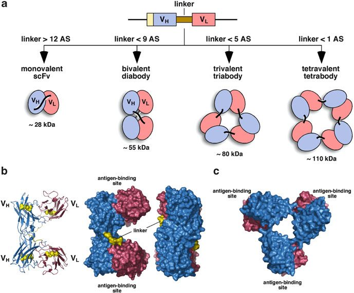
그림 5.1 (a) 링커 길이 변화에 의한 2가 단일특이성 디아보디 및 3가·4가 유도체의 생성. 신호 서열은 밝은 노란색으로 표시. (b) 2가 디아보디 구조(Perisic et al. 1994; PDB entry 1LMK), (c) 3가 트라이어보디 구조(Pei et al. 1997; PDB entry 1NQB).
5.2 이중특이성 디아보디와 단일쇄 디아보디
2가 단일특이성 분자 생성 외에도 디아보디 포맷은 이중특이성 분자 생성에 적용될 수 있다(Holliger et al. 1993). 디아보디는 두 쇄가 head-to-tail 방향으로 교차 짝짓기를 하며 형성되므로, 이중특이성 디아보디 생산에는 같은 세포 안에서 V_HA–V_LB와 V_HB–V_LA(HL 배열) 또는 V_LA–V_HB와 V_LB–V_HA(LH 배열)의 두 폴리펩타이드쇄 발현이 필요하다(그림 5.2). 많은 이중특이성 디아보디가 성공적으로 만들어졌지만(표 5.1 참조)(Kontermann 2005), 한 세포에서 서로 다른 두 쇄를 발현하면 헤테로이량체, 즉 활성 분자뿐 아니라 동일한 두 쇄가 짝지어진 비활성 호모이량체(V_HA–V_LB 또는 V_HB–V_LA)도 함께 만들어진다.
가변 도메인의 올바른 짝짓기를 돕는 전략은 두 쇄를 하나로 융합한 단일쇄 디아보디(scDb)다(Brüsselbach et al. 1999; Alt et al. 1999). 두 쇄를 잇는 링커는 scFv 분자 생성에 쓰는 것과 같은 길이, 즉 약 15잔기다. scDb 분자는 두 scFv를 융합해 만든 tandem scFv(taFv)와 비슷한 크기지만(4장과 15장 참조), 가변 도메인 배열과 세 링커의 길이가 다르다(그림 5.2). taFv에서는 두 scFv가 중앙 링커로 연결된 별개 조립 단위인 반면, scDb에서는 네 개 가변 도메인이 컴팩트한 구조를 이룬다.
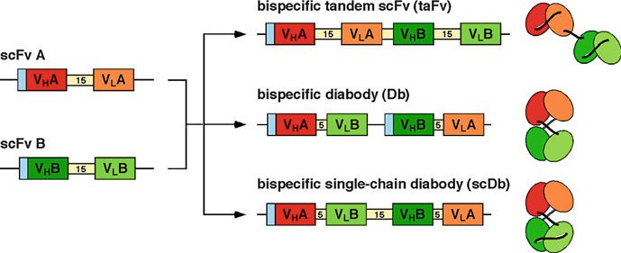
그림 5.2 두 항체의 가변 도메인(예: 단일쇄 Fv 분자 scFv A와 scFv B)으로부터의 이중특이성 항체 형성. 서로 다른 두 scFv의 융합은 이중특이성 tandem scFv 분자(taFv)를 만든다. 이중특이성 디아보디(Db)는 V_HA–V_LB와 V_HB–V_LA(HL 배열) 구조의 두 쇄 발현에 의해 형성된다. 두 쇄를 한 폴리펩타이드로 융합하면 단일쇄 디아보디(scDb)가 된다.
표 5.1 효과기 세포 재표적화용 디아보디, 단일쇄 디아보디 및 그 파생체의 예
| 포맷 | 특이성 | 발현 시스템 | 응용 | 참고문헌 |
|---|---|---|---|---|
| Db | BCL-1×CD3 | E.coli(p) | 시험관 내 | Holliger et al. (1996) |
| Db | Pgp×CD3 | E.coli(p) | 시험관/생체 내 | Gao et al. (2004); Guo et al. (2008) |
| dsDb | Pgp×CD3 | E.coli(p) | 시험관/생체 내 | Liu et al. (2009) |
| Db | EGP2×CD3 | E.coli(p) | 시험관 내 | Helfrich et al. (1998) |
| Db | PSMA×CD3 | E.coli(p) | 시험관/생체 내 | Bühler et al. (2008, 2009) |
| Db | CEA×CD3 | E.coli(r) | 시험관 내 | Asano et al. (2002) |
| Db | CEA×CD3 | E.coli(p); 293T, PBL, MSC, HUVEC(s, in situ) | 시험관/생체 내 | Holliger et al. (1999); Blanco et al. (2003); Compte et al. (2007, 2009, 2010) |
| scDb | CEA×CD3 | E.coli(p); HEK293(s) | 시험관 내 | Müller et al. (2007) |
| scDb | EDG×CD3 | E.coli(p) | 시험관 내 | Korn et al. (2004b) |
| Db | erbB2×CD3 | E.coli(p) | 시험관 내 | Zhu et al. (1996) |
| Db | EGFR×CD3 | E.coli(r) | 시험관/생체 내 | Hayashi et al. (2004) |
| Db-Fc / scDb-Fc | EGFR×CD3 | CHO(s) | 시험관 내 | Asano et al. (2008) |
| Db | MUC1×CD3 | E.coli(r) | 시험관 내 | Takemura et al. (2000) |
| SEA(D227A)-Db | MUC1×CD3 | E.coli(r) | 시험관/생체 내 | Takemura et al. (2002) |
| Db | CD20×CD3 | E.coli(p) | 시험관/생체 내 | Xiong et al. (2002); Liu et al. (2010) |
| Db | CD19×CD3 | E.coli(p) | 시험관/생체 내 | Kipriyanov et al. (1998, 2002); Cochlovius et al. (2000b) |
| Tandem Db | CD19×CD3 | E.coli(p) | 시험관/생체 내 | Kipriyanov et al. (1999); Cochlovius et al. (2000a); Reusch et al. (2004); Le Gall et al. (2004) |
| Db | CD30×CD16 | E.coli(p) | 시험관/생체 내 | Arndt et al. (1999) |
| Db | CD19×CD16 | E.coli(p) | 시험관/생체 내 | Kipriyanov et al. (2002); Schlenzka et al. (2004) |
| DART | CD32B×CD16 | CHO(s) | 시험관/생체 내 | Johnson et al. (2010) |
| Db | CD40×CD28 | E.coli(p) | 시험관 내 | Houtenbos et al. (2008) |
BCL-1: 생쥐 림프종주 BCL-1의 표면 독특유형(idiotype); CEA: 암배아항원; CHO: 중국향창난소낭세포주; DART: dual-affinity retargeting; Db: diabody; dsDb: 이황화 안정화 디아보디; EDG: endoglin; EGFR: 상피세포 성장인자 수용체; EGP2: epithelial glycoprotein 2; erbB2: 인간 상피세포 성장인자 수용체 2; HUVEC: 인간 제대정맥 내피세포; MSC: 간엽줄기세포; MUC1: Mucin-1; PBL: 말초혈 림프구
5.3 이중특이성 디아보디와 단일쇄 디아보디 파생체
두 쇄를 공유결합하는 이황화 결합을 도입하면 이중특이성 디아보디의 안정성이 강화되는데, 이는 이중특이성 디아보디에서 올바른 두 쇄 짝짓기를 유도하는 데도 도움이 된다(Fitzgerald et al. 1997)(그림 5.3). 시스테인 잔기로 바꾼 위치는 이황화 안정화 Fv 단편(dsFv) 생성에 쓰인 것과 동일하다(Reiter et al. 1996). 예컨대 이 전략이 p185HER2와 CD3를 겨냥하는 이중특이성 디아보디에 적용되었다(Zhu et al. 1997). V_L 46C와 V_H D101C 위치에 시스테인을 도입하고 대장균에서 디아보디를 생산했더니, 정제된 단백질은 부모 디아보디의 83%에 비해 96% 넘게 기능적 헤테로이량체였다.
최근 Macrogenics는 LH 배열로 발현되는 서로 다른 두 쇄의 C-말단에 시스테인 잔기를 포함한 짧은 펩타이드 꼬리를 붙인 디아보디 유도체를 발표했다. 확장 서열은 LGGC이거나 IgG1 상부 경첩(VEPKSC) 및 kappa 경쇄(FNRGEC)에서 유래한 것이었다(Johnson et al. 2010). 이렇게 공유결합된 구조는 “dual-affinity re-targeting”(DART)이라 명명되었다. 예컨대 anti-CD16 anti-CD32 DART의 올바른 조립이 입증되었으며, 이 분자는 생리적 조건에서 안정했고 PBMC를 B세포 림프종 세포로 재표적화하는 데 매우 강력했다.
디아보디는 V_L/V_H 계면 중심의 잔기를 겨냥하는 knobs-into-holes 전략으로도 안정화되었다(Zhu et al. 1997)(그림 5.3). 다만 만들어진 돌연변이 중 일부만 효과를 보였다.
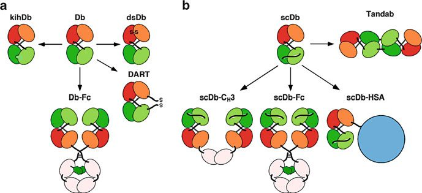
그림 5.3 이중특이성 디아보디와 단일쇄 디아보디의 파생체. (a) V_H–V_L 계면에 시스테인 잔기를 도입한(이황화 안정화 디아보디, dsDb), C-말단에 도입한(dual-affinity retargeting, DART), 또는 knobs-into-holes 전략(kihDb)을 적용해 만든 이중특이성 디아보디 유도체. 이중특이성 디아보디는 Fc 영역과의 융합 등으로 4가 분자를 만드는 데도 쓰였다. (b) 이중특이성 단일쇄 디아보디의 유도체. 중앙 링커 길이를 줄여 Tandab 분자를 만든다. C_H3나 Fc 영역을 C-말단에 융합해 4가 scDb 융합 단백질을 만들었다. 혈청알부민 같은 다른 분자를 scDb에 융합하기도 했다.
5.4 발현, 생산 및 약동학 개선
이중특이성 디아보디는 주로 세균(대장균)에서 발현되었다. 생산은 페리플라즘(세포주변질)으로의 분비 방식이었으며, 산화적 환경이 이황화 결합 형성, 즉 올바른 항체 접힘을 가능하게 한다는 점을 활용했다. 대안적으로 디아보디를 세포질에서 봉입체로 발현시키고 후속 재접힘 단계로 기능적 분자를 만들기도 했다. 포유류 세포에서 발현해 세포배양 상징액으로 분비시킨 경우도 있다. 정제된 재조합 단백질을 얻으려면 디아보디에 보통 태그(예: 히스티딘 태그)를 달고 해당 친화 크로마토그래피로 정제한다. 한편 디아보디 유전자가 도입된 포유류 세포의 in situ 생산 보고도 있다. 원래 페리플라즘 세균 생산이 초기 디아보디 연구의 표준이었으나 수득률이 낮아, 재접힘 방법이나 진핵 발현 시스템이 대안으로 자리잡았다.
표 5.2 효과기 분자 재표적화, 이중표적화, 유전자 치료, 방사면역요법용 디아보디·단일쇄 디아보디·파생체의 예
| 응용 | 포맷 | 특이성 | 발현 시스템 | 응용 | 참고문헌 |
|---|---|---|---|---|---|
| 효과기 분자 재표적화 | Db | HEL×C1q | E.coli(p) | 시험관 내 | Kontermann et al. (1997) |
| Db | HEL×LAM | E.coli(p) | 시험관 내 | Holliger et al. (1997) | |
| scDb | CEA×Gal | HEK293(s) | 시험관 내 | Brüsselbach et al. (1999) | |
| scDb-C_H3 | CEA×Gal | HEK293(s) | 시험관 내 | Alt et al. (1999) | |
| scDb-Fc | TAFI×PAI-1 | E.coli(p) | 시험관 내 | Develter et al. (2008) | |
| 이중표적화 | Db | VEGFR2×VEGFR2 | E.coli(p) | 시험관 내 | Lu et al. (1999) |
| Db | VEGFR1×VEGFR2 / VEGFR2×VEGFR3 | E.coli(p) | 시험관 내 | Lu et al. (2001); Jimenez et al. (2005) | |
| Db-C_H3 | VEGFR1×VEGFR2 | E.coli(p); COS(s) | 시험관 내 | Lu et al. (2003) | |
| Db | EGFR×IGFR | E.coli(p) | 시험관 내 | Lu et al. (2004) | |
| Db-Fc | EGFR×IGFR | NS0(s) | 시험관/생체 내 | Lu et al. (2005) | |
| DART | CD32B×CD79B | CHO(s) | 시험관/생체 내 | Veri et al. (2010) | |
| 유전자 치료(바이러스 재표적화) | scDb | EDG×Ad | E.coli(p) | 시험관 내 | Nettelbeck et al. (2001) |
| scDb | CEA×Ad | E.coli(p) | 시험관 내 | Korn et al. (2004a) | |
| scDb | HMWMAA×Ad | E.coli(p) | 시험관 내 | Nettelbeck et al. (2004) | |
| scDb | erbB2×Ad | HeLa(s) | 시험관 내 | Kashentseva et al. (2009) | |
| 방사면역요법 | Db | HLA-DR×DOTA | E.coli(p) | 시험관 내 | DeNardo et al. (2001) |
| Db | CEA×HSG | E.coli(p) | 생체 내 | Griffiths et al. (2004) |
Ad: 아데노바이러스 섬유 도메인; C1q: 보체 C1q; CEA: 암배아항원; DART: dual-affinity retargeting; Db: diabody; scDb: single-chain diabody; DOTA: 1,4,7,10-tetraazacyclododecane-N,N’,N’‘,N’’’-tetraacetic acid; EDG: endoglin; EGFR: 상피세포 성장인자 수용체; erbB2: 인간 상피세포 성장인자 수용체 2; Gal: β-갈락토시다제; HEL: 닭 계란 리소자임; HLA: 인간 백혈구 항원; HMWMAA: 고분자량 흑색종 관련 항원; HSG: histaminyl-succinyl-glycine; IGFR: 인슐린유사 성장인자 수용체; LAM: 생쥐 IgM l, IgG2a l; PAI-1: plasminogen activator inhibitor-1; TAFI: thrombin activatable fibrinolysis inhibitor; VEGFR: 혈관내피 성장인자 수용체; p: 페리플라즘; r: 재접힘; s: 분비
작은 크기 때문에 디아보디와 scDb는 신장에서 빠르게 제거된다. 따라서 치료 응용에는 반복 주입이나 지속 주입이 요구될 수 있다. 그래서 순환 반감기를 늘리는 여러 전략이 암배아항원(CEA)과 CD3를 겨냥하는 이중특이성 단일쇄 디아보디에 적용되었다. PEGylation, N-당화(glycosylation), 인간 혈청알부민 융합, 연쇄상구균 프로테인 G의 알부민결합 도메인(ABD) 융합이 그것이다(Müller et al. 2007; Stork et al. 2007, 2008). PEGylation은 옆링커 하나 또는 scDb C-말단에 추가 시스테인 잔기를 도입해 달성했다. 덕분에 말레이미드 기능화 40 kDa 가지형 PEG쇄를 위치특이적이고 정의된 방식으로 결합할 수 있었다(Stork et al. 2008). 결합 결과 유체역학적 반경이 수정 전 scDb의 2.7 nm에서 PEGylated scDb의 7.9 nm로 크게 늘어났다. N-당화 유도체는 두 옆링커에 N-당화 부위(Asn-X-Thr)를 넣고, 각각 1·4·7개 N-당화 부위를 지닌 C-말단 꼬리를 추가해 만들었다. 293 세포에서 생산한 결과 분자량이 증가한 N-당화 scDb가 얻어졌지만, 당쇄의 SDS-PAGE와 MALDI-MS 분석은 크기와 조성 면에서 뚜렷한 불균질성을 보여주었다. 혈청알부민 융합은 분자량을 약 55 kDa에서 125 kDa로 늘려 유체역학적 반경을 3.9 nm까지 올렸다. 분자량 6 kDa의 ABD 융합은 scDb-ABD 융합 단백질이 인간·생쥐 혈청알부민(HSA, MSA)을 포함한 혈청알부민에 비공유결합으로 붙게 하여 유체역학적 반경을 4.8 nm로 높였다. 생쥐에서의 반감기 비교 분석 결과 모든 수정이 순환시간을 늘렸다. 수정 전 scDb의 말기 반감기는 5~6시간인 반면 PEGylated scDb, scDb-HSA, scDb-ABD는 2~4배 늘어나 AUC₀₋₂₄가 약 11배 증가했다. 반면 N-당화 유도체는 반감기(6~9시간)와 AUC(2~3배)의 완만한 증가만 보였다. 반감기 연장은 종양 축적 증가로도 이어졌다.
5.5 효과기 세포 재표적화
이중특이성 디아보디는 주로 T 세포 재표적화에 적용되었다. Fc 영역이 없다는 점은 종양 치료용으로 매력적인데, 더 나은 종양 침투와 더 선택적인 면역세포 재표적화가 가능하고 Fc 부분 고유의 효과기 기능으로 인한 부작용을 피할 수 있기 때문이다(Segal et al. 1999). 게다가 재조합 발현은 하이브리돔 기술이나 화학적 결합 전략보다 정의되고 균질한 생산 체계를 제공해 정제를 쉽게 하고 이중특이성 항체 분자의 수득률도 높여준다. 처음에는 트리거 분자 CD3로 T 세포 재표적화를 시도했고, 종양 표적화는 CEA, EGFR, PSMA, CD19, CD20 등 다양한 종양 관련 항원 결합으로 달성되었다(표 5.1). 이 구조물들 모두에서 활성화 T 세포의 디아보디 매개 재표적화와 종양세포 살해가 시험관에서 입증되어 전략의 실현 가능성이 확인되었다. 나아가 여러 이종이식 종양 생쥐 모델에서 이중특이성 디아보디를 사전활성화 인간 PBL과 함께 투여하면 종양 성장 억제 및/또는 생존 증가가 나타나, 생체 내 효능도 입증되었다.
예컨대 이중특이성 디아보디 DbCD3xCD19가 CLL 환자의 종양 세포 용해를 농도 의존적으로, 자가 T 세포 매개 세포독성을 재표적화하는 방식으로 시험관에서 매개함이 보고되었다. E:T 세포 비율 10:1에서 디아보디 농도 50 μg/ml로 50% 넘는 종양세포 용해가 달성되었다. 또 피하 Raji Burkitt 림프종 이종이식 생쥐 모델에서 사전활성화 인간 PBL 반복 투여 후 50 μg 이중특이성 디아보디 치료는 종양 성장을 약 20일 지연시키고 생존을 약 5주 늘렸다(Cochlovius et al. 2000a). 다른 사례로 EGFR을 발현하는 TFK-1 세포로 사전활성화 T 세포를 재표적화한 이중특이성 디아보디 DbEGFRxCD3는 1 μg/ml 농도와 E:T 100:1에서 90% 특이 종양세포 살해를 달성했다. 또 피하 TFK-1 이종이식 생쥐 모델에서 사전활성화 T 세포와 혼합한 20 μg 디아보디의 반복 치료를 종양 크기가 일정 크기에 도달했을 때 시작하자 종양 성장 억제와 생존 연장이 관찰되었다.
CD30×CD16 특이성 디아보디는 NK세포를 호지킨 종양으로 재표적화했다(Arndt et al. 1999). CD19×CD16 특이 디아보디 역시 NK세포 매개 B세포 백혈병·림프종 세포 살해를 보였고(Kipriyanov et al. 2002; Schlenzka et al. 2004), tandem diabody 형식은 항원결합과 약동학이 개선되었다(Kipriyanov et al. 1999). 이종이식 종양 생쥐 모델에서 종양 성장 억제와 생존 증가가 보고되었다. 게다가 DbCD19xCD3와 DbCD19xCD16의 병용에서 항종양 반응의 상승효과가 관찰되었다(Kipriyanov et al. 2002).
이중특이성 디아보디의 안정성 개선을 위해 가변영역 내부나 폴리펩타이드쇄 끝에 추가 시스테인 잔기를 도입해 이황화 결합 형성으로 이량체를 공유결합시켰다. 예컨대 ds-Db(Pgp×CD3)는 CD3 특이 항체의 가변영역에 각각 추가 시스테인 잔기를 도입해 만들어졌다(Liu et al. 2009). 완전한 결합 능력과 재표적화 잠재력을 유지하면서 시험관에서 현저히 개선된 혈청 안정성이 입증되었다. 게다가 안정화는 이종이식 종양 생쥐 모델에서 향상된 종양 표적화와 두 배 높은 종양 성장 억제로 이어졌다.
DART(dual-affinity re-targeting) 설계에서는 폴리펩타이드쇄 C-말단에 위치한 시스테인 잔기로 이량체 형성이 일어난다. DART 디아보디 CD16xCD32B가 만들어져 PBMC를 B세포 림프종 세포주로 재표적화했다(Johnson et al. 2010). 여러 주에 걸친 높은 혈청 안정성이 입증되었고, ADCC 분석에서 이 디아보디의 세포독 잠재력은 Fc 공학(증가된 CD16 결합) anti-CD32B 단클론 항체보다 월등히 우수했다. 생체 내에서는 CD16과 CD32B 해당 인간 항원을 발현하는 형질전환 생쥐의 B세포 결핍으로 활성이 추가 확인되었다. 나아가 Burkitt 림프종 이종이식 생쥐 모델에서 생존을 추적하며 항종양 반응을 분석했다. 마우스당 25 μg 용량을 4주간 매주 한 번 투여했을 때 Fc 강화 단클론 항체는 완전 보호를, DART 항체는 87% 보호를 보였다. 그러나 DART 항체의 더 높은 용량과 치료 빈도로도 완전한 무종양 생존에 도달할 수 있어, 약동학 특성이 낮은 용량 설정에서만 차이로 드러남이 시사되었다.
단일쇄 디아보디(scDb) CEA×CD3도 T 세포 재표적화에 성공적으로 적용되어 시험관에서 종양세포 살해가 입증되었다(Müller et al. 2007). 흥미롭게도 이량체 tandem diabody(CD3×CD19)와 단량체 BiTE(tandem scFv, CD3×CD19)의 자리별 비교에서, 건강 공여자의 미자극·사전활성화 PBMC가 여러 CD19+ 종양세포주에 작용하는 항체 매개 세포독성을 분석한 결과 BiTE 분자가 몇 자수나 되게 강한 생물학적 활성을 보였다(Mølhøj et al. 2007). 따라서 단가 이중특이성 항체 포맷으로도 고도로 효율적인 종양세포 살해가 가능하다. 그럼에도 어느 포맷이 더 유리한지는 궁극적으로 생체 내 항종양 효능의 비교 평가만이 밝혀줄 것이다.
5.6 효과기 분자 동원
이중특이성 디아보디는 효과기 분자 동원 전략에도 적용되었다. 초기 접근은 단클론 항체의 자연 효과기 기능에서 영감을 받아, 등장하는 재조합 항체 포맷으로 이런 효과기 기전을 활용하는 대안을 찾았다. 개념 입증으로 닭 계란 리소자임(HEL)을 모델 항원으로, 혈청 면역글로불린(Ig)(Holliger et al. 1997) 또는 보체 C1q(Kontermann et al. 1997)를 두 번째 결합부위로 삼는 이중특이성 디아보디가 만들어졌다. 시험관에서 HEL 코팅 적혈구로 혈청 면역글로불린을 재표적화한 디아보디는 보체 동원, 단핵 식세포 호흡폭발 및 식작용을 유도했다. 마찬가지로 보체 C1q를 HEL 코팅 적혈구로 재표적화하여 디아보디 매개 보체 활성화가 달성되었다.
또 다른 전략은 효소를 종양 부위로 재표적화해 국소적인 효소 매개 프로드럭(prodrug) 전환을 가능하게 하는 것이었다. 종양 관련 암배아항원(CEA)과 효소 β-갈락토시다제(Gal)에 대한 scDb가 보고된 바 있다(Brüsselbach et al. 1999). 시험관에서 scDb가 CEA 발현 종양세포로 β-갈락토시다제를 불러들이고, 이어서 효소적으로 활성화된 프로드럭의 세포독 효과가 입증되었다. 혈전가용성화인자(TAFI)와 plasminogen activator inhibitor-1(PAI-1)을 겨냥한 이중특이성 헤테로이량체 디아보디는 응고·섬유소용해 조절이라는 비암 응용의 예다(Develter et al. 2008).
5.7 이중표적화
디아보디–Fc 또는 단일쇄 디아보디–Fc 융합 단백질 생성으로 이중특이성 디아보디의 친화력을 높일 수 있다. 경첩 영역에서 Fc 부분의 공유결합으로 이량체 형성이 일어나 4가 이중특이성 IgG 유사 항체 구조물이 만들어진다(그림 5.3). 원자가 증대 외에 이 포맷은 개선된 약동학 특성과 Fc 매개 효과기 기능도 함께 가져온다. EGFR×CD3 특이성의 Db–Fc와 scDb–Fc가 시험관에서 기술되었다(Asano et al. 2008). Db와 scDb 단독에 비해 사전활성화 T 세포 재표적화(10배)와 PBMC(100배)에서 암세포 성장 억제가 강화되었다. 즉 이중특이성 Db와 scDb 매개 세포독성은 친화력 증대와 ADCC라는 추가 효과기 기전 도입으로 크게 강화될 수 있다.
그러나 종양 표적 의존적 효과기 세포 활성화는 더 이상 보장되지 않는다. 용액 속에서 4가 항체 구조물이 CD3를 교차결합하는 것만으로 T 세포가 비특이적으로 활성화될 수 있고, 종양 표적 세포가 없어도 Fc 수용체 보유 세포에 의한 ADCC가 유도될 수 있기 때문이다. 따라서 이런 포맷은 두 서로 다른 종양 성장 관련 수용체에 대한 강화된 길항 결합으로 종양 성장 억제를 내는 이중표적화 접근에 더 알맞다.
시험관에서 VEGFR1과 VEGFR2를 겨냥하는 이중특이성 디아보디는 이 수용체들의 리간드인 VEGF와 PlGF와의 상호작용을 차단할 수 있었고, 부모 항체보다 강하게 이들 리간드의 화학주성 및 유사분열 촉진 활성을 억제했다(Lu et al. 2001). 이 디아보디를 Db-C_H3 융합 단백질로 바꾸자 2가 이중특이성 디아보디보다 강한 결합 및 차단 특성을 지닌 4가 이중특이성 분자가 되었다(Lu et al. 2003). 같은 원리로 EGFR과 IGFR을 겨냥하는 Db-Fc 융합 단백질이 보고되었는데, 두 수용체 신호경로를 동시에 차단해 강화된 항종양 활성을 보였고(Lu et al. 2004), 생체 내 실험에서 서로 다른 두 인간 종양 이종이식 모두에서 종양 성장 감소가 입증되었다(Lu et al. 2005).
5.8 유전자 치료
재조합 이중특이성 디아보디는 유전자 치료에도 적용되었다. 한 접근은 아데노바이러스 벡터를 종양 세포로 재표적화하는 것이다. 바이러스 섬유(fiber) 도메인과 종양 혈관 표적 endoglin(EDG)을 겨냥하는 이중특이성 scDb EDGxAd5는 endoglin 발현 HUVEC 세포에서 아데노바이러스 형질도입을 선택적으로 (>6배) 강화했다(Nettelbeck et al. 2001). 이 접근의 실현 가능성은 CEA, 고분자량 흑색종 관련 항원(HMWMAA), erbB2를 발현하는 종양세포로 아데노바이러스 벡터를 재표적화하면서 시험관에서도 성공적으로 확인되었다(Korn et al. 2004a; Nettelbeck et al. 2004; Kashentseva et al. 2009)(18장 참조).
또 하나의 유전자 치료 접근은 항체 생산 세포를 만들어 환자에게 이식함으로써 오랜 기간 organism 안에 이중특이성 항체의 지속 농도를 공급하는 것이다. 처음에 293T 세포를 유전적으로 변형해 T 세포를 CEA 발현 종양세포로 재표적화할 수 있는 이중특이성 디아보디 DbCEAxCD3를 분비하게 했다. 생체 내에서 방사선 조사한 생산 세포를 CEA 발현 인간 대장암 세포와 섞어 무흉선 누드 생쥐에 이식했다. 종양이 촉진되면 사전활성화 인간 T 세포를 종양 내로 주입했다. 디아보디의 in situ 발현은 종양 성장을 강력히 억제했다(Blanco et al. 2003). 비슷한 생쥐 모델에서 DbCEAxCD3를 발현하도록 형질도입된 종양 세포와 활성화 인간 PBL의 혼합물 이식 역시 종양 성장 억제로 이어졌다(Compte et al. 2007). 그 밖의 생산 세포로는 DbCEAxCD3를 암호화하는 렌티바이러스 벡터로 형질도입한 인간 간엽줄기세포(MSC)가 쓰였는데, 합성 세포외 기질 스캐폴드에 심어 이종이식 종양 이식부에서 먼 곳의 면역결핍 생쥐에 피하 주입되었다. 다음으로 사전활성화 인간 T 세포를 정맥 주입하고 종양 성장을 추적했다. 혈장 내 디아보디 수치가 6주간 검출되었고 종양 성장 억제로 치료 효율이 입증되었다(Compte et al. 2009). 최근에는 치료 단백질을 분비하는 공학화 인간 혈관(“factory neovessels”)이 새로운 약물 전달 체계로 개발되어(Compte et al. 2010), 이 방향의 추가 발전이 기대된다.
5.9 맺음말
이중특이성 디아보디는 효과기 세포·분자 재표적화와 이중표적화를 위한 소형 재조합 이중특이성 항체 포맷으로 확립되었다. 여러 회사, 예컨대 MacroGenics(DART), ImClone Systems(Db-Fc), Affimed Therapeutics(tandAbs)가 제품 개발에서 디아보디 유도체에 집중하고 있다. 따라서 장차 더 많은 이중특이성 디아보디 관련 분자가 임상으로 진입할 것으로 예상된다.
참고문헌
- Compte M, Blanco B, Serrano F, Cuesta AM, Sanz L, Bernad A, Holliger P, Alvarez-Vallina L (2007) Inhibition of tumor growth in vivo by in situ secretion of bispecific anti-CEA x anti-CD3 diabodies from lentivirally transduced human lymphocytes. Cancer Gene Ther 14(4):380–388
- Compte M, Cuesta AM, Sánchez-Martín D, Alonso-Camino V, Vicario JL, Sanz L, Alvarez-Vallina L (2009) Tumor immunotherapy using gene-modified human mesenchymal stem cells loaded into synthetic extracellular matrix scaffolds. Stem Cells 27(3):753–760
- Compte M, Alonso-Camino V, Santos-Valle P, Cuesta AM, Sánchez-Martín D, López MR, Vicario JL, Salas C, Sanz L, Alvarez-Vallina L (2010) Factory neovessels: engineered human blood vessels secreting therapeutic proteins as a new drug delivery system. Gene Ther 17(6):745–751
- DeNardo DG, Xiong CY, Shi XB, DeNardo GL, DeNardo SJ (2001) Anti-HLA-DR/anti-DOTA diabody construction in a modular gene design platform: bispecific antibodies for pretargeted radioimmunotherapy. Cancer Biother Radiopharm 16(6):525–535
- Develter J, Booth NA, Declerck PJ, Gils A (2008) Bispecific targeting of thrombin activatable fibrinolysis inhibitor and plasminogen activator inhibitor-1 by a heterodimer diabody. J Thromb Haemost 6(11):1884–1891
- Essig NZ, Wood JF, Howard AJ, Raag R, Whitlow M (1993) Crystallization of single-chain Fv proteins. J Mol Biol 234:897–901
- Filpula D, McGuire J (1999) Single-chain Fv designs for protein, cell and gene therapeutics. Exp Opin Ther Patents 9:231–245
- Fitzgerald K, Holliger P, Winter G (1997) Improved tumour targeting by disulphide stabilized diabodies expressed in Pichia pastoris. Protein Eng 10:1221–1225
- Gao Y, Xiong D, Yang M, Liu H, Peng H, Shao X, Xu Y, Xu C, Fan D, Qin L, Yang C, Zhu Z (2004) Efficient inhibition of multidrug-resistant human tumors with a recombinant bispecific anti-P-glycoprotein x anti-CD3 diabody. Leukemia 18(3):513–520
- Griffiths GL, Chang CH, McBride WJ, Rossi EA, Sheerin A, Tejada GR, Karacay H, Sharkey RM, Horak ID, Hansen HJ, Goldenberg DM (2004) Reagents and methods for PET using bispecific antibody pretargeting and 68Ga-radiolabeled bivalent hapten-peptide-chelate conjugates. J Nucl Med 45(1):30–39
- Holliger P, Bruggemann M, Williams T, Tomlinson S, Caskey H, Orlandi L, Riechmann L, Winter G (1999)…
- Houtenbos I, Santegoets S, Westers TM, Waisfisz Q, Kipriyanov S, Denkers F, Scheper RJ, de Gruijl TD, Ossenkoppele GJ, van de Loosdrecht AA (2008) The novel bispecific diabody alphaCD40/alphaCD28 strengthens leukaemic dendritic cell-induced T-cell reactivity. Br J Haematol 142(2):273–283
- Hudson PJ, Kortt AA (1999) High avidity scFv multimers: diabodies and triabodies. J Immunol Meth 231:177–189
- Igawa T, Tsunoda H, Kikuchi Y, Yoshida M, Tanaka M, Koga A, Sekimori Y, Orita T, Aso Y, Hattori K, Tsuchiya M (2010) VH/VL interface engineering to promote selective expression and inhibition of conformational isomerization of thrombopoeitin receptor agonist single-chain diabody. Protein Eng Des Sel 23:667–677
- Iliades P, Kortt AA, Hudson PJ (1997) Triabodies: single chain Fv fragments without a linker form trivalent trimers. FEBS Lett 409:437–441
- Jimenez X, Lu D, Brennan L, PersaudK, LiuM, MiaoH, WitteL, ZhuZ (2005) A recombinant, fully human, bispecific antibody neutralizes the biological activities mediated by both vascular endothelial growth factor receptors 2 and 3. Mol Cancer Ther 4(3):427–434
- Johnson S, Burke S, Huang L, Gorlatov S, Li H, Wang W, Zhang W, Tuaillon N, Rainey J, Barat B, Yang Y, Jin L, Ciccarone V, Moore PA, Koenig S, Bonvini E (2010) Effector cell recruitment with novel Fv-based dual-affinity re-targeting protein leads to potent tumor cytolysis and in vivo B-cell depletion. J Mol Biol 399(3):436–449
- Kashentseva EA, Douglas JT, Zinn KR, Curiel DT, Dmitriev IP (2009) Targeting of adenovirus serotype 5 pseudotyped with short fiber from serotype 41 to c-erbB2-positive cells using bispecific single-chain diabody. J Mol Biol 388(3):443–461
- Kipriyanov SM, Moldenhauer G, Strauss G, Little M (1998) Bispecific CD3xCD19 diabody for T cell-mediated lysis of malignant human B cells. Int J Cancer 77(5):763–772
- Kipriyanov SM, Moldenhauer G, Schuhmacher J, Cochlovius B, Von der Lieth CW, Matys ER, Little M (1999) Bispecific tandem diabody for tumor therapy with improved antigen binding and pharmacokinetics. J Mol Biol 293(1):41–56
- Kipriyanov SM, Cochlovius B, Schäfer HJ, Moldenhauer G, Bähre A, Le Gall F, Knackmuss S, Little M (2002) Synergistic antitumor effect of bispecific CD19xCD3 and CD19xCD16 diabodies in a preclinical model of non-Hodgkin’s lymphoma. J Immunol 169:137–144
- Liu H… anti-tumor effect of human 4-1BBl ligand/anti-CD20 fusion proteins and anti-CD3/anti-CD20 diabodies. J Immunother 33(5):500–509
- Lu D, Kotanides H, Jimenez X, Zhou Q, Persaud K, Bohlen P, Witte L, Zhu Z (1999) Acquired antagonistic activity of a bispecific diabody directed against two different epitopes on vascular endothelial growth factor receptor 2. J Immunol Methods 230(1–2):159–171
- Lu D, Jimenez X, Zhang H, Wu Y, Bohlen P, Witte L, Zhu Z (2001) Complete inhibition of vascular endothelial growth factor (VEGF) activities with a bifunctional diabody directed against both VEGF kinase receptors, fms-like tyrosine kinase receptor and kinase insert domain-containing receptor. Cancer Res 61(19):7002–7008
- Lu D, Jimenez X, Zhang H, Atkins A, Brennan L, Balderes P, Bohlen P, Witte L, Zhu Z (2003) Di-diabody: a novel tetravalent bispecific antibody molecule by design. J Immunol Methods 279(1–2):219–232
- Lu D, Jimenez X, Witte L, Zhu Z (2004) The effect of variable domain orientation and arrangement on the antigen-binding activity of a recombinant human bispecific diabody. Biochem Biophys Res Commun 318(2):507–513
- Lu D, Zhang H, Koo H, Tonra J, Balderes P, Prewett M, Corcoran E, Mangalampalli V, Bassi R, Anselma D, Patel D, Kang X, Ludwig DL, Hicklin DJ, Bohlen P, Witte L, Zhu Z (2005) A fully human recombinant IgG-like bispecific antibody to both the epidermal growth factor receptor and the insulin-like growth factor receptor for enhanced antitumor activity. J Biol Chem 280(20):19665–19672
- Mølhøj M, Crommer S, Brischwein K, Rau D, Sriskandarajah M, Hoffmann P, Kufer P, Hofmeister R, Baeuerle PA (2007) CD19-/CD3-bispecific antibody of the BiTE class is far superior to tandem diabody with respect to redirected tumor cell lysis. Mol Immunol 44(8):1935–1943
- Müller D, Karle A, Meissburger B, Höfig I, Stork R, Kontermann RE (2007) Improved pharmacokinetics of recombinant bispecific antibody molecules by fusion to human serum albumin. J Biol Chem 282(17):12650–12660
- Müller D, Frey K, Kontermann RE (2008) A novel antibody-4-1BBL fusion protein for targeted costimulation in cancer immunotherapy. J Immunother 31(8):714–722
- Segal DM, Weiner GJ, Weiner LM (1999) Bispecific antibodies in cancer therapy. Curr Opin Immunol 11:558–562
- Stork R, Müller D, Kontermann RE (2007) A novel tri-functional antibody fusion protein with improved pharmacokinetic properties generated by fusing a bispecific single-chain diabody with an albumin-binding domain from streptococcal protein G. Protein Eng Des Sel 20(11):569–576
- Stork R, Zettlitz KA, Müller D, Rether M, Hanisch FG, Kontermann RE (2008) N-glycosylation as novel strategy to improve pharmacokinetic properties of bispecific single-chain diabodies. J Biol Chem 283(12):7804–7812
- Stork R, Campigna E, Robert B, Müller D, Kontermann RE (2009) Biodistribution of a bispecific single-chain diabody and its half-life extended derivatives. J Biol Chem 284(38):25612–25619
- Takemura S, Asano R, Tsumoto K, Ebara S, Sakurai N, Katayose Y, Kodama H, Yoshida H, Suzuki M, Imai K, Matsuno S, Kudo T, Kumagai I (2000) Construction of a diabody (small recombinant bispecific antibody) using a refolding system. Protein Eng 13(8):583–588
- Takemura S, Kudo T, Asano R, Suzuki M, Tsumoto K, Sakurai N, Katayose Y, Kodama H, Yoshida H, Ebara S, Saeki H, Imai K, Matsuno S, Kumagai I (2002) A mutated superantigen SEA D227A fusion diabody specific to MUC1 and CD3 in targeted cancer immunotherapy for bile duct carcinoma. Cancer Immunol Immunother 51(1):33–44
- Todorovska A, Roovers RC, Dolezal O, Kortt AA, Hoogenboom HR, Hudson RJ (2001) Design and application of diabodies, triabodies and tetrabodies for cancer targeting. J Immunol Meth 248:47–66
- Veri MC, Burke S, Huang L, Li H, Gorlatov S, Tuaillon N, Rainey GJ, Ciccarone V, Zhang T, Shah K, Jin L, Ning L, Minor T, Moore PA, Koenig S, Johnson S, Bonvini E (2010) Therapeutic control of B cell activation via recruitment of Fcgamma receptor IIb (CD32B) inhibitory function with a novel bispecific antibody scaffold. Arthritis Rheum 62(7):1933–1943
- Völkel T, Korn T, Bach M, Müller R, Kontermann RE (2001) Optimized linker sequences for the expression of monomeric and dimeric bispecific single-chain diabodies. Protein Eng 14:815–823
- Whitlow M, Filpula D, Rollence ML, Feng SL, Wood JF (1994) Multivalent Fvs: characterization of single-chain Fv oligomers and preparation of a bispecific diabody. Protein Eng 7:1017–1026
- Xiong D, Xu Y, Li H, Qing W, Wang B, Xin N, Fleming T, Wang Q, Song E, Westphal H, Zhu Z (2002)…
- Zhu HJ, Liu XQ, Zhuang YF, Yu JC, Wu XY, Yang WG, Chang JY, Guo YH, Gao JF (1996)… # 제6장 이중특이성 단일도메인 항체
Patrick Chames, Daniel Baty
6.1 서론
단클론 항체는 이제 치료 분자로 널리 인정받고 있으며 미국 등 여러 나라에서 25개 이상이 승인되었다(Reichert 2010). 이런 치료 성과는 이 분자들의 면역원성을 낮추고 인간 면역계의 효과기 세포를 동원할 가능성을 높이려는 수년간의 항체 공학 노력의 결실이다. 특히 암 치료에서 상당한 진전에도 불구하고 이들 분자의 임상 활성은 여전히 최적에서 멀어 새로운 해법이 필요하다. 서로 다른 두 표적에 동시 결합하여 다양한 탑재물(payload)을 암세포로 재표적화할 수 있는 이중특이성 항체(bsAbs)가 이 문제의 가장 유망한 해법 중 하나일 것이다(Chames and Baty 2009a, b). 이 접근법의 잠재력은 수년간 여러 연구로 입증되었지만, 이용 가능한 기술(하이브리드 하이브리돔, 화학적 교차결합)로 균질한 제제를 대량 생산하기 어렵다는 점이 더 넓은 발전을 가로막았다.
항체 공학 발전과 함께 여러 새 재조합 포맷이 설계되어 어느 정도 검증되었다. tandem scFv, 디아보디, tandem 디아보디, 이중 가변 도메인 항체, Dock-and-Lock 모티프 같은 헤테로이량체화 기법 등이다. 이 포맷 대부분이 저마다 장점을 지니지만 아직까지 임상 응용의 표준 포맷이 될 요건을 전부 충족한 것은 없다. 단일도메인 항체는 완전한 기능을 지닌 가장 작은 항체 단편으로서 뛰어난 물리적 성질들을 갖추고 있어 이 목표를 향한 길을 앞당길 수 있다.
6.2 단일도메인 항체: 이상적인 조립 블록
1989년 발표된 꽤 선견지명이 있는 연구에서 Sally Ward와 동료들은 생쥐 IgG 중쇄 가변 도메인(V_H)의 소형 면역 라이브러리를 파지디스플레이로 선별해 20 nM 범위의 항원 친화도에 도달할 수 있음을 보여주었다(Ward et al. 1989). 저자들은 이 분자들을 가리켜 단일도메인 항체(dAb)라 명명했다. 이 논문에서 이미 그런 단편이 조직에 더 쉽게 침투할 수 있고 일부 단백질의 “협곡(canyon)” 부위를 막을 수 있다고 언급했다.
이 발견은 일화적 수준에 머물다가 1993년 Hamers와 동료들이 낙타 혈액에서 경쇄와 첫 중쇄 상수 도메인이 없는 항체를 발견하면서 변했다(Hamers-Casterman et al. 1993). 중쇄항체(HcAb)라고 명명된 이 항체는 다른 낙타과 동물(단봉낙타, 라마, 알파카)에서도 발견되었으며, VHH라고 부르는 중쇄 가변 도메인 하나만으로 에피토프에 결합한다(그림 6.1). 흥미롭게도 이 가변 도메인은 대장균이나 효모에서 매우 효율적으로 생산될 수 있다. 이렇게 만든 것을 단일도메인 항체(sdAb) 또는 나노바디(nanobody)라 부른다. 이 sdAb는 면역요법용 항체 공학의 결합 단위로서 매우 매력적으로 만드는 탁월한 물리적 성질들을 지녔음이 이후 입증되었다.
무엇보다 축소된 paratope에도 불구하고 이 항체 단편은 일반 mAb 수준의 친화도에 도달하며 소분자와 헵텐(hapten)에도 결합할 수 있다(Spinelli et al. 2000; Alvarez-Rueda et al. 2007; Behar et al. 2008). 그러기 위해 일반 mAb보다 긴 초가변 고리(CDR3, complementarity determining region 3)를 자주 쓰는데, 덕분에 항원 표면에 파묻힌 공동(cavity)에도 결합할 수 있다(De Genst et al. 2006). 따라서 sdAb는 효소억제제의 좋은 원천이며 일반 항체에는 보이지 않는 항원에 대한 항체를 만들어낼 수 있다(Lauwereys et al. 1998). 이 단편의 단일 도메인 본성은 사람에게서 낮은 항원성을 부여하는데, 면역요법 접근에 매우 매력적인 특징이다. 필요하면 인간화도 가능하다(Vincke et al. 2009).
재조합 단백질, 온전한 세포, 세포 용해물로 라마를 면역시키면 매우 효율적인 생체 내 친화력 성숙(in vivo affinity maturation)을 활용해 항체 유전자 라이브러리를 만들기 전에 나노몰 범위의 고친화 항체로 동물 항체 레퍼토리를 풍부하게 할 수 있다. 결과 레퍼토리를 클로닝하면 표적 물질로 바로 쓸 수 있는, 항원 특이적이고 생산이 쉬우며 안정적인 항체 단편 패널에 접근하게 된다.
경쇄 없는 항체를 만드는 종은 낙타과만이 아니다. Greenberg 등(1995)은 돔상어(nurse shark)에서 중쇄항체, 즉 IgNAR의 존재를 기술했다. 이런 항체는 wobbegong 상어에서도 발견되었다(Nuttall et al. 2001). IgNAR의 가변 도메인(V_NAR, 그림 6.1)은 높은 안정성, 긴 CDR3, 공동 결합 경향 등 낙타과 VHH와 많은 성질을 공유한다(Stanfield et al. 2004; Simmons et al. 2008).
이 매력적인 특징들을 완전히 인간인 가변 도메인에 부여하는 것은 많은 항체 공학 팀의 목표였다. 인간 V_H 도메인(그림 6.1)은 짝이 되는 V_L 없이 발현되면 응집되기 쉽다. 좋은 성질을 지닌 인간 V_H를 얻기 위해 Jespers 등은 단일 스캐폴드에 결합 고리 다양화를 가한 합성 인간 V_H 라이브러리를 선별했다. 파지 입자 표면에서 발현한 뒤 열변성시키고 냉각하여, 응집되지 않은 V_H 도메인 중 프로테인 A에 결합하는 능력을 기준으로 선별했다. 이 접근으로 응집 내성이 있고 가용성이며 좋은 수득률로 정제되는 클론을 얻을 수 있었다(Jespers et al. 2004). 1,000개 중 겨우 1개 클론만 이 과정을 통과했으므로, 저자들은 응집 내성 항체 도메인 레퍼토리의 CDR 조립 블록을 조합 조립해 다양성을 회복했고 그 결과 약 80%가 응집 내성 V_H 도메인인 커다란 라이브러리를 만들었다(Christ et al. 2007). 인간 V_H 내성 선별 과정은 37°C 산성 pH(3.2)에서 2시간이라는 응집 촉진 조건을 추가해 더 정교해졌다. 이 과정은 첫 방법이 용융 온도가 비슷한 응집 내성 클론만 골랐던 것과 달리, 열역학적으로 안정하면서 응집 내성인 도메인을 선별함이 보여졌다(Fam et al. 2008).
요컨대 단일도메인 항체는 경쇄 없는 항체를 자연적으로 만드는 동물의 면역이나, 대형 인간 합성 라이브러리로부터 생성할 수 있다. 면역은 생체 내 친화력 성숙을 거친 고친화 클론의 직접 선별을 촉진하는 반면, 대형 합성 라이브러리는 비슷한 성질을 지닌 완전 인간 도메인 선별을 가능하게 한다. 이 도메인들은 작고 매우 효율적이라
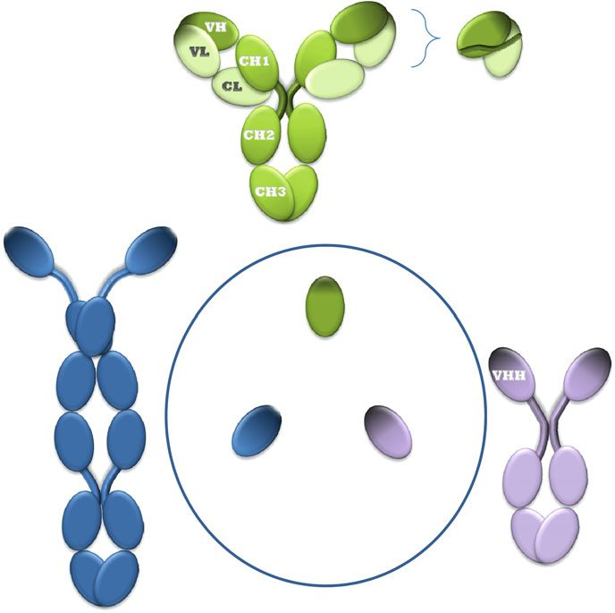
그림 6.1 단일도메인 항체의 원천. 일반 인간 IgG, 상어 IgNAR, 낙타과 중쇄항체 및 각각에 해당하는 단일도메인 항체[domain antibody(dAb), V_NAR, 나노바디(Nb)]의 개략 구조. 비교용으로 single chain Fv 단편도 함께 그렸다.
6.3 이중특이성 항체를 위한 단일도메인 항체
6.3.1 Tandem 나노바디
6.3.1.1 최초의 tandem 나노바디
단일도메인 항체의 작은 크기 때문에 두 도메인을 tandem으로 연결해 이중특이성 항체를 만드는 개념은 자연스럽게 떠올랐다. 실제로 Conrath 등은 라마 IgG2a 아이소타입의 구조적 상부 경첩에 해당하는 29개 아미노산 펩타이드로 융합해 이중특이성 tandem 낙타과 나노바디를 만들었다(Els Conrath et al. 2001). 닭 계란 리소자임과 돼지 췌장 α-아밀라아제에 결합하는 bsAbs는 단량체 VHH만큼 효율적으로 대장균 페리플라즘에서 생산되었고, 37°C 생쥐 혈청에서 44시간 배양 후에도 완전히 활성이 유지되었다. 두 항원에 대한 이 bsAbs의 동시 결합은 겔여과와 바이오센서 실험으로 입증되었다. 이 연구는 bsAb 생산에서 tandem 나노바디의 장점을 분명히 보여주었다.
6.3.1.2 αTNF×αTNF×αAlb
이 개념은 몇 년 뒤 Coppieters와 동료들이(2006) 암 치료와 더 관련 깊은 설정에서 발전시켰다. 이들은 종양괴사인자 α(TNF)에 대한 나노바디를 분리해 삼량체 항원에 대한 친화 결합을 위해 tandem으로 발현, 30 kDa의 2가 단일특이성 분자를 얻었다. 목적은 류마티스관절염(RA) 치료를 위한 TNF 차단이었다. 불행히도 FcRn 수용체 결합을 허용하는 Fc 부분이 없는 60 kDa 미만의 소분자는 혈청 반감기가 매우 짧다. 이 문제를 해결하기 위해 저자들은 인간·생쥐 혈청알부민에 결합하는 새 나노바디를 분리해 유연한 Gly-Ser 링커로 앞선 분자에 융합, 3가 이중특이성 tandem 나노바디 anti-TNF-Albumin을 만들었다(그림 6.2). tandem 나노바디의 혈청 반감기는 54분에서 2.2일로 크게 늘어났으며, 이는 생쥐 알부민 반감기와 상관되는 것으로 보인다. 흥미롭게도 시험관에서 이 분자의 길항 역량은 RA에 임상 사용 중인 anti-TNF 항체 인플릭시맙과 아달리무맙을 능가했다. RA 생쥐 모델(생쥐 콜라겐유발관절염)에서 생쥐 TNF를 차단할 수 있는 이 구조물의 생쥐 유사체는 인간 TNF 수용체-Fc 융합체인 에타너셉트를 능가하는 뛰어난 치료 효율을 보였다.
6.3.1.3 αEGFR×αEGFR×αAlb
같은 논리가 종양학 분야의 연구(Tijink et al. 2008)에서도 적용되었다. 저자들은 2가·3가 나노바디의 생체내 분포를 잘 알려진 FDA 승인 세툭시맙과 이종이식 생쥐 모델에서 비교했다. 2가 anti-EGFR 나노바디는 주입 6시간 후 인상적인 종양/혈액 비율 80과 낮은 종양 수준 5%ID/g를 달성했다. 반면 알부민 결합 활성 덕분에 이중특이성 3가 구조물은 매우 높은 종양 수준(35%ID/g)을 보이며 세툭시맙(27%)을 앞질렀다. 게다가 종양 절편에서 나노바디 구조물은 균일하게 염색된 반면 세툭시맙은 종양의 60%만 염색되어, 150 kDa IgG에 비해 50 kDa 나노바디 구조물의 종양 침투가 더 우수함을 반영했다.
6.3.1.4 αFMDV×αFMDV×αpIg
비슷한 접근이 Harmsen과 동료들에 의해 기술되었다. 이들은 구제역 바이러스(FMDV)와 돼지 IgG를 겨냥하는 이중특이성 나노바디를 설계해 수동면역으로 돼지를 보호했다. anti-porcine IgG 특이성 추가로 혈청 반감기가 anti-FMDV 단일특이성 나노바디 대비 100배 늘어남을 보여주었다(Harmsen et al. 2005, 2008). 후속 연구에서 이 팀은 FMD 공격 감염 24시간 전 주입한 두 3가 αFMDV-αFMDV-αpIg 나노바디 구조물의 혼합물이 임상 질병 발현, 바이러스혈증, 바이러스 배출, FMD 전파를 줄이고 늦출 수 있음을 입증했다(Harmsen et al. 2009). 이런 효율은 구조물의 anti-porcine Ig 부분이 부여한 긴 혈청 반감기와 분명히 상관되었다.
6.3.1.5 αAahI’×αAahII
전갈 쏘임에 따른 중독(envenoming)은 말 혈장 항독 혈청(PAS)의 Fab’₂ 제제로 치료한다. 그러나 이 혈청요법의 유익한 효과는 논란의 여지가 있다. 주된 한계 중 하나는 항체 단편 크기(약 100 kDa)가 AahI’과 AahII라는 주요 독소보다 14배 넘게 크다는 점일 것이다. 실제로 큰 Fab’₂ 단편과 달리 이 작은 독성 펩타이드는 빠르게 표적 조직으로 분포한다… (Hmila et al. 2010). 이 이중특이성 나노바디의 높은 효율은 이중표적 특성과 작은 분자량에 기인하는 것으로 보인다.
6.3.1.6 αMP65×αSAP2
완전 인간 가변 도메인도 tandem domain antibody로 사용되었다. De Bernardis와 동료들(2007)은 질칸디다증의 원인인 Candida albicans의 두 뚜렷한 독력 인자, 62 kDa 만노단백질(MP65)과 분비성 아스파르틸 단백질분해효소(SAP2)에 결합하는 인간 가변 도메인(V_H와 Vκ)을 파지디스플레이로 분리했다. 단가 domain antibody는 곰팡이가 쥐 질 상피세포에 부착하는 것을 억제하고 질 감염 청소를 앞당겼다. 유연한 25-아미노산 펩타이드 링커를 사용한(그림 6.2) 두 항원 모두에 결합하는 tandem 구조물을 생체 내 모델에서 시험한 결과, 공격 전후 치료 일정 모두에서 그리고 플루코나졸 감수성·내성 균주 모두에서 항진균제 플루코나졸 치료와 동등한 치료 효율을 달성했다. 흥미롭게도 저자들은 이중특이성 구조물 사용으로 두 서로 다른 독력 인자를 동시 표적함에서 오는 상승효과를 입증했다.
6.3.2 IgG–sdAb 융합체
sdAb는 매우 작아서 새로운 특이성을 더하기 위해 다른 분자에도 쉽게 융합할 수 있다. 이 개념은 온전한 길이의 IgG에서 중쇄를 N-말단 또는 C-말단으로 서로 다른 특이성의 단일도메인 항체에 융합한 사례로 입증되었다. 결과로 나온 IgG 유사 분자는 이중특이성이면서도 Fc 부분 덕분에 긴 반감기와 효과기 기능의 이점을 그대로 누린다.
6.3.2.1 αmPDGFRα×αmVEGFR2
이 접근은 Shen과 동료들(2006)이 처음 입증했는데, 생쥐 혈관내피 성장인자 수용체 2에 결합하는 일반 IgG의 경쇄 N-말단에 anti-mouse platelet-derived growth factor receptor alpha를 융합해 이중특이성 4가 분자를 만들었다(그림 6.2). 저자들은 먼저 대형 인간 Fab 단편 라이브러리에서 절단 클론을 분리했다
6 이중특이 단일도메인 항체(Bispecific Single Domain Antibodies) 109
IgG 경쇄에 융합함으로써, 포유류 세포에서 효율적으로 생산할 수 있으면서도 모체 항체의 항원 결합 특이성과 수용체 중화 활성을 그대로 지닌 IgG 유사 이중특이 구조체가 만들어졌다. 흥미롭게도 두 수용체를 모두 발현하는 세포에서는 이 bsAb가 모체 항체보다 더 좋은 결합 활성을 보였고, 이는 이중 수용체 표적화(dual receptor-targeting)가 실제로 일어난다는 것을 보여준다.
6.3.2.2 amPDGFRa / amPDGFRb
같은 연구팀은 파지 디스플레이(phage display)로 분리한 사람 anti-mPDGFRb IgG에 동일한 anti-mPDGFRa VH를 융합하여 비슷한 bsAb를 만들었다(Shen et al. 2007). 분리된 VH를 IgG 경쇄의 N말단(VH-IgG) 또는 IgG 중쇄의 C말단(IgG-VH)에 각각 짧은 링커(각각 5개, 6개 아미노산)로 연결하는 두 가지 방식으로 분자를 만들었다(그림 6.2). 이 구조체들은 COS-7 세포 배양 상등액에서 정제되었으며, 수득량은 VH-IgG가 0.5 mg/L, IgG-VH가 3 mg/L로 중간 정도였다. 두 구조체 모두 나노몰 농도에서 리간드-수용체 상호작용(PDGF-AA와 mPDGFRa, 그리고 PDGF-BB와 mPDGFRa 및 b)을 억제했고, 더 중요한 점은 혈소판유래인자 AA와 BB로 자극된 종양세포에서 PDGF 수용체 a와 b의 활성화를 함께 차단했다는 것이다. 다만 두 구조체 모두 PBS에 10% 마우스 혈청을 넣고 37 °C로 뒀을 때 mPDGFRa 결합 활성이 꽤 빨리 사라지는 단점이 있었다(N말단 융합체와 C말단 융합체의 잔존 결합 활성은 각각 49%, 56%).
6.3.3 다량체화 모티프(Multimerization Motifs)
6.3.3.1 상어 IgNAR 가변 도메인의 특수한 사례
다른 연구들은 이량체화 모티프를 이용해 2가 또는 이중특이 단일도메인 항체 기반 분자를 만드는 데 의존했다. 상어 IgNAR 항체에서 유래한 가변 도메인을 사용한 연구에서는 놀라운 결과가 나왔다(Simmons et al. 2006). 연구진은 말라리아 백신 후보 단백질인 열대열 말라리아 원충(Plasmodium falciparum)의 정단막 항원-1(AMA1)을 겨냥하는 V-NAR 도메인을 이량체화하기 위해 여러 방법을 시도했다. 첫 번째 일정 도메인(constant domain)과의 C말단 융합, 헤릭스-턴-헬릭스(helix-turn-helix) 모티프 추가 등이 그 예이다.
110 P. Chames and D. Baty
6.3.3.2 베로톡신 B 서브유닛(Verotoxin B Subunit)
또 하나의 다량체화 모티프가 더 성공적이었는데, 이번에는 라마 유래 나노바디(nanobody)를 사용했다. Zhang 등(2004)은 비면역 라이브러리에서 선별된, 결합력이 그리 높지 않은 sdAb의 겉보기 친화력을 아비디티(avidity) 방식으로 끌어올리는 방법을 발표했다. 이를 위해 연구진은 대장균(E. coli)이 만드는 베로톡신 B 서브유닛의 다량체화 성질을 활용했다. 이 독소는 도넛 모양 구조를 하고 있으며, N말단과 C말단이 분자 주변부의 서로 반대편에 노출되어 있다. 연구진은 anti-peptide sdAb를 5개 아미노산 링커로 C말단에 융합했다. 그 결과 만들어진 115 kDa 오량체(pentamer) 분자는 대장균에서 가용성 산물로 좋은 수득량(5 mg/L)으로 생산될 수 있었다. 흥미롭게도 이른바 “펜타바디(pentabody)”는 고정화된 항원에 단량체 sdAb보다 3~4자릿수나 더 강하게 결합했다. 펜타바디는 우수한 열안정성(Tm 59.7 °C)과 트립신, 키모트립신, 혈청 프로테아제에 대한 높은 내성을 갖춘 것으로도 특징지어졌다.
이 연구의 논리적 후속 작업은 같은 골격을 써서 독소의 N말단과 C말단 양쪽에 서로 다른 sdAb를 융합함으로써 10가(decavalent) 이중특이 분자를 만드는 것이었고, 이렇게 해서 데카바디(decabody)라 불리는 175 kDa 분자가 탄생했다(그림 6.2)(Stone et al. 2007). sdAb와 베로톡신 B 서브유닛 사이 링커의 성질을 최적화한 결과, 연구진은 이렇게 복잡한 분자임에도 생산·정제 과정에서 뚜렷한 응집이나 분해가 없는 모델 bsAb를 대장균에서 좋은 수득량(약 5 mg/L)으로 얻을 수 있었다. 이 구조체들의 실제 성능은 앞으로 생체 내에서 입증되어야 한다. 정상 조직에서의 항원 밀도가 다가결합(multivalent binding)에 필요한 역치보다 낮다면, 데카바디의 높은 아비디티는 오히려 장점이 될 수 있다는 점을 강조할 필요가 있다. 그런 경우 항원을 높은 밀도로 발현하는 종양 조직만을 선택적으로 표적하게 되기 때문이다. 그러나 이런 부류의 bsAb에서 걱정거리는 면역원성(immunogenicity)일 것이다. 실제로 이 구조체의 베로톡신 부분은 매우 강한 면역원성을 보일 것으로 예측되는데, 이것이 명백한
111 저자들은 코일드코일(coiled-coil) 도메인의 C말단에 anti-human CD3 클론 OKT3의 scFv 절편을 융합하여 이중특이 분자를 만들 수 있음을 보였다. 결과 분자는 꽤 컸고(약 260 kDa) 진핵세포에서 생산하기 어려웠지만, 활성화시킨 사람 PBMC와 함께 쓰면 생체 내에서 표적세포를 용해하는 데 효율적으로 쓰일 수 있었다. 이 결과들은 이 48아미노산 COMP 절편을 오량체화 모티프로 쓸 수 있음을 분명히 보여준다. 따라서 여기에 서로 다른 sdAb를 N말단과 C말단에 융합하면, 적당한 크기(약 170 kDa)의 고아비디티 이중특이 분자를 만드는 직관적인 방법이 될 수 있다.
6.3.3.4 CH1/Ck 이종이량체화 모티프(Heterodimerization Motif)
대부분의 재조합 이중특이 포맷은 유연한 펩타이드 링커 사용에 기반한다. 이런 링커는 항체 공학 측면에서 분명한 장점이 있지만, 소수성이라는 성질 탓에 단백질분해효소에 잘 잘리고, 이 때문에 생산 문제, 낮은 항체 안정성, 응집, 증가한 면역원성으로 이어질 수 있다(Fischer and Leger 2007). 따라서 항체치료용 이상적인 도메인항체 기반 이중특이 포맷은 링커 없이 사람 유래 이종이량체화 모티프를 쓰면서, 상대적으로 작은 분자 크기를 유지해 종양 조직에 효율적으로 확산될 수 있는 것이어야 한다.
CH1 도메인과 Ck 도메인은 사람 IgG의 중쇄와 경쇄 사이 상호작용을 담당한다. 이 상호작용은 공유 이황화결합 형성으로 한층 더 안정화된다. 그래서 이 두 도메인은 매력적인 이종이량체화 모티프가 된다. 우리 연구팀은 이 모티프에 기반한 나노바디형 이중특이 항체를 개발하고 있다(Baty et al. 2006).
이중특이 항체의 가장 흥미로운 응용 중 하나는 환자의 면역계 효과세포(effector cell)를 종양세포를 향하도록 재표적하고 활성화하는 것이다. 승인된 항종양 항체의 상당수는 자연살해세포(natural killer cell, NK cell)에 의한 종양세포 용해, 즉 항체의존세포매개세포독성(ADCC)을 작용 기전으로 삼는다(Chames et al. 2009). 그러나 이 과정의 효율은 제한적이다
- 그리고 위에 언급한 한계에 얽매이지 않고 NK 세포를 활성화할 수 있는 anti-FcγRIII 나노바디(Behar et al. 2008).
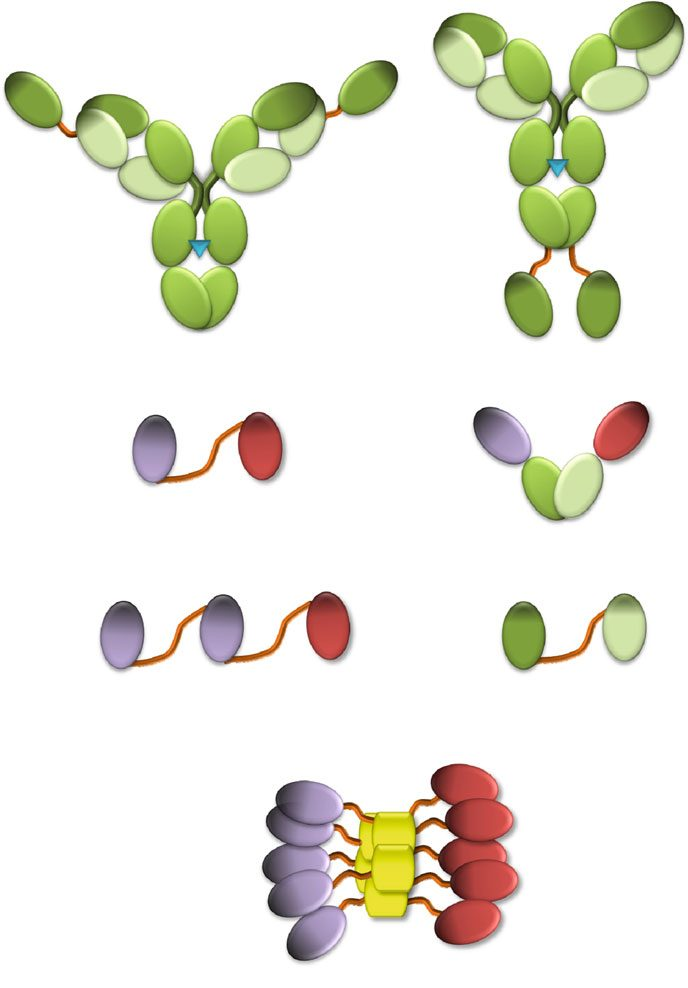
그림 6.2 나노바디-Fc 및 다가 sdAb 융합 단백질의 구조.
이 sdAb들의 C말단을 사람 CH1 및 Ck 도메인의 N말단에 직접 융합함으로써, 우리는 대장균 세포질에서 효율적으로 생산되는(bsFab) 이중특이 Fab 유사 항체 절편을 만들었다(수득량 1~3 mg/L 범위)(그림 6.2). 흥미롭게도 bsFab은 90% 사람 혈청 속에서 37 °C로 일주일간 배양한 뒤에도 완전히 활성을 유지했고, 시험관 내에서 피코몰 농도로 신선한 NK 세포를 이용한 종양세포 용해를 유발할 수 있었다(Cornillon et al., 준비 중). 이 몇몇 유망한 이중특이 나노바디의 생체 내 활성은 현재 이식종양(xenograft) 마우스 모델에서 평가 중이다.
6.4 결론
단일도메인 항체(single domain antibody)는 항체의 결합 활동을 재현할 수 있는 가장 작은 항체 절편이다. 작은 크기, 높은 생산 수득량, 매우 높은 안정성을 비롯한 많은 특성 덕분에 이상적인 빌딩블록으로 자격이 충분하다. 지난 몇 년간 이런 도메인들을 통합한 혁신적인 이중특이 항체 포맷들이 등장했다. 앞으로 몇 년 안에 sdAb 기반 이중특이 분자의 부상이 확인될 것이다. 이런 분자들을 포함한 첫 임상 연구도 머지않아 시작될 것으로 보이며, 지금까지 보여준 시험관 내 효율이 치료 잠재력으로 이어질 수 있는지를 알려줄 것이다.
References
Alvarez-Rueda N, Behar G, Ferre V et al (2007) Generation of llama single-domain antibodies against methotrexate, a prototypical hapten. Mol Immunol 44:1680–1690 Baty D, Behar G, et al (2006) Production of antibody formats and immunological applications of said formats. WO/2006/064136 Behar G, Siberil S, Groulet A et al (2008) Isolation and characterization of anti-Fc{gamma}RIII (CD16) llama single-domain antibodies that activate natural killer cells. Protein Eng Des Sel 21:1–10 Behar G, Chames P, Teulon I et al (2009) Llama single-domain antibodies directed against nonconventional epitopes of tumor-associated carcinoembryonic antigen absent from nonspecific cross-reacting antigen. FEBS J 276:3881–3893 Chames P, Baty D (2009a) Bispecific antibodies for cancer therapy. Curr Opin Drug Discov Devel 12:276–283 Chames P, Baty D (2009b) Bispecific antibodies for cancer therapy: the light at the end of the tunnel? MAbs 1:539–547 Chames P, Van Regenmortel M, Weiss E et al (2009) Therapeutic antibodies: successes, limitations and hopes for the future. Br J Pharmacol 157:220–233 Christ D, Famm K, Winter G (2007) Repertoires of aggregation-resistant human antibody domains.
Dumoulin M, Conrath K, Van Meirhaeghe A et al (2002) Single-domain antibody fragments with high conformational stability. Protein Sci 11:500–515 Els Conrath K, Lauwereys M, Wyns L et al (2001) Camel single-domain antibodies as modular building units in bispecific and bivalent antibody constructs. J Biol Chem 276:7346–7350 Ewert S, Cambillau C, Conrath K et al (2002) Biophysical properties of camelid V(HH) domains compared to those of human V(H)3 domains. Biochemistry 41:3628–3636 Famm K, Hansen L, Christ D et al (2008) Thermodynamically stable aggregation-resistant antibody domains through directed evolution. J Mol Biol 376:926–931 Fischer N, Leger O (2007) Bispecific antibodies: molecules that enable novel therapeutic strategies. Pathobiology 74:3–14 Greenberg AS, Avila D, Hughes M et al (1995) A new antigen receptor gene family that undergoes rearrangement and extensive somatic diversification in sharks. Nature 374:168–173 Groot AJ, Gort EH, van der Wall E et al (2008) Conditional inactivation of HIF-1 using intrabodies. Cell Oncol 30:397–409 Gueorguieva D, Li S, Walsh N et al (2006) Identification of single-domain, Bax-specific intrabodies that confer resistance to mammalian cells against oxidative-stress-induced apoptosis. FASEB J 20:2636–2638 Guo Y, Kammerer RA, Engel J (2000) The unusually stable coiled-coil domain of COMP exhibits cold and heat denaturation in 4–6 M guanidinium chloride. Biophys Chem 85:179–186 Hamers-Casterman C, Atarhouch T, Muyldermans S et al (1993) Naturally occurring antibodies devoid of light chains. Nature 363:446–448 Harmsen MM, Van Solt CB, Fijten HP et al (2005) Prolonged in vivo residence times of llama single-domain antibody fragments in pigs by binding to porcine immunoglobulins. Vaccine 23:4926–4934 Harmsen MM, Fijten HP, Dekker A et al (2008) Passive immunization of pigs with bispecific llama single-domain antibody fragments against foot-and-mouth disease and porcine immunoglobulin. Vet Microbiol 132:56–64
Shen J, Vil MD, Jimenez X et al (2007) Single variable domain antibody as a versatile building block for the construction of IgG-like bispecific antibodies. J Immunol Meth 318:65–74 Simmons DP, Abregu FA, Krishnan UV et al (2006) Dimerisation strategies for shark IgNAR single domain antibody fragments. J Immunol Meth 315:171–184 Simmons DP, Streltsov VA, Dolezal O et al (2008) Shark IgNAR antibody mimotopes target a murine immunoglobulin through extended CDR3 loop structures. Proteins 71:119–130 Spinelli S, Frenken LG, Hermans P et al (2000) Camelid heavy-chain variable domains provide efficient combining sites to haptens. Biochemistry 39:1217–1222 Stanfield RL, Dooley H, Flajnik MF et al (2004) Crystal structure of a shark single-domain antibody V region in complex with lysozyme. Science 305:1770–1773 Stone E, Hirama T, Tanha J et al (2007) The assembly of single domain antibodies into bispecific decavalent molecules. J Immunol Meth 318:88–94 Su C, Nguyen VK, Nei M (2002) Adaptive evolution of variable region genes encoding an unusual type of immunoglobulin in camelids. Mol Biol Evol 19:205–215 Tijink BM, Laeremans T, Budde M et al (2008) Improved tumor targeting of anti-epidermal growth factor receptor nanobodies through albumin binding: taking advantage of modular nanobody technology. Mol Cancer Ther 7:2288–2297 Verheesen P, de Kluijver A, van Koningsbruggen S et al (2006) Prevention of oculopharyngeal muscular dystrophy-associated aggregation of nuclear polyA-binding protein with a single-domain intracellular antibody. Hum Mol Genet 15:105–111 Vincke C, Loris R, Saerens D et al (2009) General strategy to humanize a camelid single-domain antibody and identification of a universal humanized nanobody scaffold. J Biol Chem 284:3273–3284 Ward ES, Gussow D, Griffiths AD et al (1989) Binding activities of a repertoire of single immunoglobulin variable domains secreted from Escherichia coli. Nature 341:544–546
제7장 대체 골격을 이용한 이중특이 항체 모방체
John Löfblom and Fredrik Y. Frejd
7.1 서론
대체 골격 단백질(alternative scaffold protein)은 항체와 여러 필수적인 성질을 공유하는 항체 모방체(antibody mimetic) 계열이다(Gebauer and Skerra 2009; Nygren and Skerra 2004). 가장 중요한 성질은 높은 친화력과 선택성으로 분자 구조를 인식하는 능력이다. 게다가 대체 골격은 안정성, 효율적인 재조합 생산, 줄어든 크기, 시스테인이 거의 또는 전혀 없다는 점, 복잡하지 않은 지식재산권 상황 등에서 개선된 성질을 갖는 경우가 많다. 크기가 작고 재조합 조작이 쉽기 때문에 이중특이 단백질을 만들기에 매우 적합하다. 실제로 여러 대체 골격은 반복 도메인 형태를 이루는 자연적 전구체에서 파생되었는데, 이는 다량체 형식으로 기능할 수 있다는 암시이기도 하다. 예컨대 Affibody 분자(Löfblom et al. 2010; Nord et al. 1997), Adnectin(Koide et al. 1998), DARPin(Binz et al. 2004; Stumpp et al. 2008), Avimer(Silverman et al. 2005)이 있다.
7.2 항체 모방체로서의 대체 골격
조합 단백질공학(combinatorial protein engineering)에서 ’골격(scaffold)’이라는 용어는 통상 유연한 루프나 용매 접근 가능 잔기를 지니고, 분자 라이브러리를 구축하기 위해 무작위화되는 안정한 단백질 골격을 가리킨다. 친화력 시약(affinity reagent)을 만들기 위한 바이오분자 골격으로서 항체가 처음이었고, 지금까지도 가장 널리 쓰인다. 그러나 분자 수준의 특이적 인식은 면역글로불린만의 고유한 속성이 아니며, 항체 포맷이 안고 있는 한계는 연구자들에게 다른 단백질 구조에 특이적 친화력을 심을 가능성을 탐구하게 하는 계기가 되었다. 또한 재조합 항체 제작에 쓰이는 시험관 내 디스플레이 기술(예: 파지 디스플레이)은 비면역글로불린 기반 라이브러리에서 친화성 단백질을 분리하는 데 쉽게 변형될 수 있어서, 대체 친화성 단백질의 분리와 동정이 비교적 수월하다.
대체 골격은 항체에 associated하는 여러 한계를 극복하도록 설계될 수 있다. 골격은 되도록 작아야 하고 당화(glycosylation) 같은 번역 후 수정에 좌우되지 않는 고유의 생화학적·생물물리학적 안정성을 지닌 폴드를 이루는 단일 폴리펩타이드 사슬로 구성되는 것이 바람직하다. 작은 크기와 낮은 복잡도 덕분에 효율적인 원핵생물 시스템으로 생산이 가능하고, 가장 작은 골격은 화학합성까지 가능하다. 세포 내 환경에서의 사용을 가능케 하고 재조합 발현의 유연성을 높이려면, 폴드의 안정성은 될 수 있으면 이황화결합에 의존하지 않아야 한다. 또한 자연적 시스테인이 없으면 위치를 정해 화학적 수정을 위해 시스테인을 넣는 공학이 가능하다. 아울러 단백질 골격이 무작위화에 대한 높은 내성을 보여야 조합 라이브러리의 높은 기능성이 유지된다는 점도 중요하다.
비항체 골격은 기원, 이차구조 조성, 크기 등 여러 기준으로 분류할 수 있다. 널리 쓰이는 분류 체계 중 하나는 다양화(diversification)가 일어나는 부위에 기반한다. 골격의 유형은 대략 하나 이상의 무작위화된 루프를 가진 안정한 골격(면역글로불린 폴드가 여기 속한다)과, 무작위화가 표면
117 www.pieris-ag.com, molecularpartners.com, dextux.com
| Commercialization | www.affibody.com | www.dyax.com |
|---|---|---|
| Stumpp et al. (2008) | Löfblom et al. (2010) | www.philips.com |
| Koide et al. (1998) | Bertschinger et al. | Lehmann (2008) |
| Ebersbach et al. | Silverman et al. | Skerra (2008) |
References — reported literature on bispecifics
Table 7.2: 이중특이 대체 골격의 개요 – 선별된 결과와 다양한 개발 단계 (생물학적 근거, 참고문헌, 시험관 내 결과, 세포 결과, 생화학 데이터, 기전, 표적 1, 표적 2, 골격, 친화력 포획, 표적 도메인)
Almut et al. (2011): 높은 친화력, 증가된 혈장 반감기, 이중 표적화에 의한 결합 향상(Hober personal communication) FNT-F, Z-domain: TNF 억제, 종양 이그노스(tumour xenograft)의 분해, RFGE: 7.7 nM 차단, EGFR과 IGFR 성장 감소 Emanuel et al. (2011): 이중 수용체, IGFR: 0.4 nM DK, 세포 내 재흡수 차단, 75.5 pM T Friedman et al. (2007): Adnectins, EGFR, EGFR 차단, HER2 표적 세포에 대한 더 강한 결합, 동시 표적화로 집합 유도, 증가된 표적화 Wållberg et al. (2010): Affibody 분자, EGFR/HER2, 50-fold 감소된 오프율, ½ t ½ 2 nm², 증가된 혈장 반감기, 표적화됨 Tolmachev et al. (63h): HER2: 0.20 nM DK, 알부민 결합 분자, 검증된 방사선 치료, 세포에서 입증됨 Silverman et al. (2005): Avimer, IL-6, IL-6 자극 억제, 혈청 반감기 연장, IL-6 DK < 0.02 nM, IgG 분자, FLAP, DC4L Eggel et al. (2009): DARPin, FcεRI “30”/“58” epitope, IgE 매개 탈과립 차단, FcεRI 억제, 이중 수용체, 호염기구 세포 수용체 차단, 동시 결합 입증(개인 경험)
118 J. Löfblom and F. Y. Frejd
여러 곳에서 폭넓게 정리되어 있으므로(Gebauer and Skerra 2009; Nygren and Skerra 2004) 더 포괄적인 목록은 거기서 찾을 수 있다. 아래에서는 대체 골격이 이중특이 포맷으로 쓰여 결과 분자의 성질을 높인 비교적 드문 사례에 초점을 맞춘다.
7.3 이중특이 항체 모방체
이중특이 항체 개념은 이미 1980년대 초에 제안되었으나(Milstein and Cuello 1983), 항체의 다사슬 구조 탓에 시료의 이질성이 생겨 임상 제품 개발이 더뎠다. 균질한 항체 기반 이중특이 제제를 만드는 정교한 전략이 이제 존재하지만, 여전히 만만치 않은 과제다. 반면 대체 골격은 대개 짧은 단일 펩타이드 사슬로 이루어져 있어서, 이중특이 및 다중특이 포맷으로 쉽게 바꿀 수 있다. 다중특이 대체 골격을 손쉽게 구축할 수 있다는 가능성은 앞으로 기존 항체에 비해 차별화 요인이 될지도 모른다.
이중특이 대체 골격 단백질의 응용에는 결합 선택성의 향상, 수용체 차단 능력의 강화, 서로 다른 두 수용체를 하나의 바이오분자로 차단하는 것, 그리고 효과기능(effector function) 동원을 향한 개발이 포함된다. 이중특이 친화력 분자의 또 다른 일반적인 용도는 한 결합 상대로 분자의 혈청 반감기를 늘리고, 다른 상대가 생물학적 활성을 담당하게 하는 것이다.
7.3.1 생물학적 기능이 강화된 이중특이 항체 모방체
생물학적 기능은 여러 방식으로 강화할 수 있다. 한 예는 미세하게 조절된 친화력으로 두 수용체를 동시에 표적하여 표적부분의 선택성을 높이는 것이다. 두 수용체를 모두 발현하는 표적세포는 아비디티 효과 덕분에 수용체를 하나만 발현하는 정상세포보다 높은 기능적 친화력으로 인식될 것이고, 그래서 선택성이 개선된다. 또 하나의 전략은 두 수용체를 차단하는
120 J. Löfblom and F. Y. Frejd
효과기능을 끌어당키는 데 쓰는 것이다. 아래에서는 Adnectin, Affibody 분자, Anticalin, DARPin을 사용한 사례 연구를 소개한다.
7.3.1.1 Adnectin
면역글로불린 유사 대체 골격의 한 예가 사람 피브로넥틴 제10형 III형 도메인(10Fn3, monobody 또는 Adnectin이라고도 함)이다(Koide et al. 1998). 10Fn3는 안정한 β-샌드위치 폴드를 바탕으로 하며, 6개의 루프로 연결된 7가닥의 가닥을 가진 94잔기 단량체 단백질이다(그림 7.1a). 항체와 항체 유도체와 비슷하게 Adnectin은 분자 끝단의 루프를 통해 표적 분자와 상호작용한다. 그러나 항체와 대부분의 항체 유도체와 달리 10Fn3는 안정한 구조를 위해 이황화결합이 필요하지 않다. 파지 디스플레이(Koide et al. 1998), mRNA 디스플레이(Xu et al. 2002), 효모 디스플레이(Lipovsek et al. 2007)를 통해, 유비퀴틴, TNF-알파, 리소자임, Abelson(Abl) kinase SH2 도메인 등 여러 표적에 대해 특이적 10Fn3 분자들이 선별되었다. 가장 진전된 Adnectin 중 하나는 VEGFR2에 높은 친화력과 특이성으로 결합한다. 이것은 현재 고형 종양 또는 비호지킨 림프종 환자를 대상으로 한 2상 임상시험 중이다(구 Adnexus, 현재 Bristol-Myers Squibb 소속).
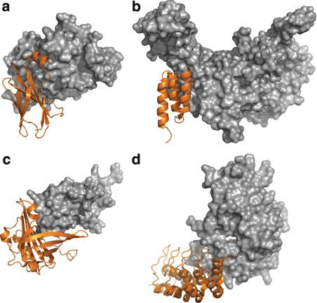
그림 7.1 생물학적 기능이 강화된 이중특이 구조체로 보고된 대체 골격의 구조. 골격 단백질은 주황색 카툰으로, 해당 표적은 회색 표면 표현으로 시각화했다. (a) 사람 에스트로겐 수용체 알파 리간드 결합 도메인과 복합체를 이룬 공학적 10Fn3(PDB: 2OCF). (b) HER2 세포외 영역과 복합체를 이룬 Affibody 분자(PDB: 3MZW). (c) 사람 CTLA-4 세포외 도메인과 복합체를 이룬 Anticalin(PDB: 3BX7). (d) 아미노글리코시드 포스포트랜스퍼레이스와 복합체를 이룬 DARPin(PDB: 2BKK).
121 이 상업적 관심 외에도 10Fn3 도메인은 학계에서 광범위하게 연구되었다. 한 예가 Koide와 동료들의 연구인데, 제한된 다양성만으로 10Fn3 라이브러리를 구축했다. 극단적인 경우 무작위화된 위치에 세린과 티로신만을 사용했는데(Koide et al. 2007), 이로부터 높은 친화력 결합체가 얻어졌다.
최근 상피성장인자 수용체(EGFR)와 인슐린유사성장인자 수용체 1(IGFR)을 표적하는 이중특이 Adnectin 포맷이 발표되었다(Emanuel et al. 2011). 그 논리는 EGFR과 IGFR 모두 여러 사람 암의 종양발생에 중요한 역할을 한다는 것이다. 어느 한 수용체를 차단하면 마우스 모델과 임상연구에서 종양 성장이 줄어든다. 그러나 한 수용체의 차단이 다른 수용체의 보상적 활성화를 유도해 종양 성장을 지속할 수 있음이 전임상 모델에서 관찰되었다. 따라서 두 수용체를 모두 차단하는 치료 분자 하나를 만드는 것이 매력적일 것이다.
mRNA 디스플레이와 세포 기반 수용체 활성화 분석을 이용한 여러 차례의 선별과 최적화를 거쳐, EGF 또는 IGF1 수용체 중 하나에 결합하고 차단할 수 있는 Adnectin들이 분리되었다. 다음으로 여러 EGFR 결합체를 하나의 IGFR 결합체에 융합했고, 모든 구조체를 PEG화(PEGylation)하여 EI-tandem Adnectin을 만들었다. 최적 구조체는 어느 한 수용체의 인산화를 기준 차단 항체만큼 잘 억제했다. 공통 하류 신호 노드인 AKT 인산화에 대한 시너지 억제도 관찰되었다. 이 이중특이 Adnectin은 EI-tandem 분자 투여 후 7시간 이내에 세포 배양에서 EGF 및 IGF 수용체 모두의 분해를 유도하는 것으로도 나타났다. 마우스에서 시험했을 때 PEG화된 EI-tandem의 혈장 반감기는 19.5 h로, 생체 내에서 적절한 약물 노출을 시사했다. 실제로 수용체 차단 때문에 IGF1과 TGFα의 혈장 농도가 올랐고, 증가 속도는 약동학(pharmacokinetic profile)과 상응했다
122 J. Löfblom and F. Y. Frejd
단백질공학을 거쳐 골격 특성이 더 개선되었다(Ahlgren et al. 2010; Feldwisch et al. 2010). 단백질의 작은 크기 덕분에 원핵생물 숙주에서 저렴하게 생산할 수 있다. 그런데 크기가 작고 폴딩 속도가 빠르기 때문에, 대부분의 Affibody 분자는 펩타이드 합성으로도 효율적으로 만들어진다. 이를 통해 비생물학적 기능기를 도입해 기능성을 수정·강화할 수 있는 길이 열린다(Engfeldt et al. 2005; Nord et al. 2001).
다양성은 Z 도메인의 헤릭스 1과 2에 있는 용매 노출 잔기 13개[그중 9개는 Fc와의 자연적 상호작용에도 관여한다(Deisenhofer 1981)]를 무작위화하여 조합형 Affibody 라이브러리를 구축함으로써 만들어진다(Nord et al. 1995). 1997년 개척적 논문에서 Nygren과 동료들은 파지에 디스플레이된 이런 라이브러리로부터 여러 특이적 Affibody 분자의 분리를 보고했다(Nord et al. 1997). 그 뒤로 EGFR(Friedman et al. 2007), HER2(Wikman et al. 2004), 아밀로이드 베타(Grönwall et al. 2007), HIV gp-120(Wikman et al. 2006), CD28(Sandström et al. 2003) 등 다양한 표적에서 추가 Affibody 분자들이 선별되었고, 분리된 클론들에 대한 상세한 생물물리학적 특성 분석은 모체인 Z 도메인에 비해 삼중 헤릭스 구조가 온전히 유지되고 안정성과 폴딩 성질도 대체로 보존됨을 입증했다(Dincbas-Renqvist et al. 2004; Dogan et al. 2006; Eigenbrot et al. 2010; Högbom et al. 2003; Lendel et al. 2004, 2006; Wahlberg et al. 2003).
HER2를 겨냥하는 고친화력(20 pM) Affibody 분자(Eigenbrot et al. 2010; Orlova et al. 2006)는 여러 전임상 및 시험 임상연구에서 철저히 검토되었으며, 진단용, 어쩌면 치료용 제품 개발의 흥미로운 후보이다(Engfeldt et al. 2007; Orlova et al. 2007a,b; Steffen et al. 2006; Tolmachev et al. 2006, 2007a,b). Nilsson과 동료들의 치료 연구(Tolmachev et al. 2007a,b)에서는 HER2 특이 Affibody 결합체에 반감기를 늘리고 신장 섭취를 피하기 위해 다른 작고 견고한 단백질인 알부민 결합 도메인(albumin binding domain, ABD)을 융합했다
이 이중특이 구조체는 HER2 발현 SKOV-3 세포와 EGFR 발현 A431 세포 양쪽 모두에 결합하는 것으로 나타났다. 살아있는 세포에 대한 실시간 결합 속도론 측정 장치를 사용해, 이 HER2–EGFR 이중특이 결합체가 용액 속 ¹⁴C 표지 A431 세포를 고정된 SKOV-3 세포에 연결시킬 수 있음이 입증되었다. 즉 두 결합 부위가 동시에 결합할 수 있음을 시사한다.
최근에는 새로운 이중특이 구조체 세트가 발표되었는데, 서로 다른 친화력을 지닌 EGFR 또는 HER2용 Affibody 분자들을 조합하여 시너지 효과로 더 선택적인 결합이 가능한지를 더 탐구했다(Wållberg et al. 2010). 시험관 내에서 두 수용체를 모두 포함하는 혼합 Biacore 표면 위에서 고친화력 D 이중특이 구조체의 겉보기 K_D는 두 수용체 중 하나만 담긴 표면에 대한 결합보다 최소 30배 높았다. 실시간 세포 결합 실험에서는 낮은 친화력 HER2 결합 부위 변이체를 썼을 때, HER2^(high) EGFR^(low) 발현 SKBR-3 세포에 대한 결합이 일가(一價) HER2 또는 EGFR 결합체의 추가로 차단되었다. 게다가 A431 세포에서 이중특이 D 구조체의 K_D는 저친화력 변이체(K_D 50 nM) 대신 고친화력 HER2 결합 변이체(K_D 22 pM)를 썼을 때 30배 증가했는데, 이는 EGFR 고발현 A431 세포에 미량 남아 있는 HER2 발현 때문일 것이다(Kong et al. 2008). 시험관 내 결과는 유망하지만, 적절한 동물 모델에서 생체 내로도 향상된 선택성을 달성할 수 있는지는 아직 확인되어야 한다.
7.3.1.3 Anticalin
Anticalin은 자연 리포칼린(lipocalin)의 단백질 구조에 기반하며, 다양화 대상으로 지목된 네 개의 루프를 내세운 견고한 β-배럴 폴드를 보여준다(Schlehuber and Skerra 2005; Skerra 2008). 작은 분자와 단백질 모두에 대해 특이적 결합체가 분리되었다(Schlehuber and Skerra 2005; Skerra 2008)(그림 7.1c). 구조적으로 항체와 비슷하지만
폐 흡입 같은 투여 경로에서 유리하다. IL-4 수용체 알파(IL-4Rα)에 특이적인 Anticalin 하나가 중증 천식을 위해 전임상 개발 중이다. IL-4Rα는 폐에서 IL-4와 IL-13 모두와의 상호작용을 통해 만성 염증에 중심 역할을 하며, IL-4Rα 특이 Anticalin의 폐 흡입 투여는 환자 순응도 개선 가능성과 함께 염증 조직에 대한 직접 국소 투약이라는 매력적인 대안을 제공한다(http://www.pieris-ag.com). 또 다른 Anticalin은 종양관련 성장인자 수용체인 간엽-상피 이행 인자(cMET)를 겨냥해 만들어졌다. 이 맥락에서 Anticalin 단백질이 이 수용체를 겨냥하는 많은 항체에 비해 갖는 장점은 일가(一價)라는 점이다. 2가 항체는 수용체를 교차결합시켜 바람직하지 않은 작용제(agonist) 반응을 일으키기 쉬운데, 일가 Anticalin은 그것을 피한다.
비교적 초기 논문에서 이중특이 Anticalin이 “duocalin”이라 명명되어 소개되었다(Schlehuber and Skerra 2001). 여기서 anti-digoxin Anticalin과 anti-fluorescein Anticalin을 펩타이드 링커로 융합했고, 다소 낮은 수득량이지만 박테리아에서 기능적으로 발현됨을 보였다. 샌드위치 ELISA와 형광 적정 실험에서 두 결합체는 각각의 결합 활성을 유지했으며, 이는 Anticalin이 원리적으로 이중특이 결합용으로 포맷팅될 수 있음을 입증한다. 이 개념은 지금 여러 치료 응용에 활용되고 있다(www.pieris-ag.com). 특히 최근 보고된 Me³⁺-DTPA 결합 Anticalin(Kim et al. 2009)을 종양 표적 분자와 짝짓는 이중특이 프리타겟(pretargeting) 접근이 매력적으로 보인다(예: cMet 결합 Anticalin에 융합; Skerra 개인 소통). 이 방안에서 400 pM 친화력으로 DTPA에 결합하도록 친화력 성숙된 Anticalin은 cMET 발현 종양으로 표적화되어 높은 종양 섭취를 달성한다. 비결합 융합단백질이 혈류에서 제거된 뒤, DTPA와 복합체를 이룬 방사성 금속(예: ⁹⁰Y 또는 ¹⁷⁷Lu)을 투여할 수 있다
재조합 단백질이 전형적인 Sec 경로 대신 신호인식립자체(signal recognition particle, SRP) 전위 경로로 수출되어, DARPin 같은 빠르게 폴딩하는 단백질의 디스플레이 수준을 크게 끌어올렸다. 특이적 DARPin들은 수많은 표적에서 선별되었으며 공학 변이체들은 대개 높은 안정성, 미생물 숙주에서의 효율적 생산, 높은 친화력 같은 유리한 성질을 보인다. 가장 앞선 DARPin은 현재 1상 임상시험 중이다. 습윤성 노인성 황반변성과 당뇨 황반부종 치료용 항혈관신성 화합물로 개발되는 anti-VEGF-A DARPin(MP0112)이다(www.molecularpartners.com).
DARPin의 흥미로운 이중특이 응용이 최근 Eggel 등(2009)에 의해 소개되었는데, 이것은 항체의 한계, 즉 수용체를 다른 수용체와 교차결합시키지 않으면서 차단하기 어렵다는 문제, 그리고 그렇게 되면 수용체쌍이 활성화되곤 하는 문제를 다룬다. 면역글로불린 E(IgE)와 고친화력 수용체(FcεRI)의 상호작용을 항체로 차단하려는 시도가 여러 번 있었다. 알레르겐 유발 IgE 교차결합이 일어나면 민감화된 비만세포나 호염기구에서 FcεRI가 집합되고, 알레르기 증상을 유발하는 염증매개물질이 분비된다. FcεRI에 결합해 IgE 결합을 차단하는 항체들이 분리되었지만, 2가 성질 탓에 수용체를 교차결합시켜 세포 탈과립을 활성화하고 아나필락시스 증상으로 이어진다. 따라서 항체 포맷은 IgE 매개 알레르기 증상 차단에는 부적합하다. 그래서 DARPin 기술이 이 목적으로 탐구되었다. FcεRI 세포외 부분에 두 개의 결합 부위가 지도화되어 있어, 효율적 길항작용을 위해서는 두 IgE 결합 부위를 모두 막아야 한다고 제안되었다. 그리하여 Eggel 등은 FcεRI의 서로 다른 부위에 결합하는 두 DARPin의 이중특이 조합이 알레르기 증후군의 강력한 억제제가 될 수 있는지 탐구했다. 먼저
7.3.1.5 단일 도메인 이중특이 단백질 골격
지금까지 묘사된 대부분의 이중특이 대체 골격 분자는 여러 도메인을 융합하고 각 도메인이 융합 단백질에 하나의 결합 특이성을 더하는 방식에 기반한다. 다른 접근법은 결합 분자 안에 추가 결합 특이성을 직접 심는 것이다. 한 예가 아래에서 설명할 이중특이 ABD 분자인데, ABD의 긴 반감기를 활용하면서 거기에 새로운 특이성을 더한다.
또 다른 접근은 스탠퍼드대학의 Cochran과 동료들이 개발한 것으로, VEGFR-2와 αvβ3 인테그린을 모두 길항하는 이중특이 제제이다(Cochran, 개인 소통). VEGFR-2와 αvβ3 인테그린 사이 상호작용이 VEGFR-2 인산화를 높이고 혈관신성을 촉진한다는 보고가 있다. 두 수용체를 모두 표적할 수 있는 분자를 만들기 위해, VEGFR-2 신호를 차단하는 것으로 이미 입증된 돌연변이 단일사슬 VEGF(scVEGF^mut)를 αvβ3 인테그린 결합용으로 공학적으로 바꾸었다. 무작위 서열로 둘러싸인 자연 인테그린 결합 모티프 RGD를 포함하는 펩타이드 라이브러리를 scVEGF 변이 단백질의 루프 하나에 삽입해 라이브러리를 구축했다. 이 라이브러리를 효모에 디스플레이하고 FACS로 인테그린 결합 변이체들을 분리했다. 선별된 몇몇 결합체는 VEGFR-2에 대한 친화력을 유지하면서 세포 위 αvβ3 인테그린에도 결합했고, 이중특이 분자임을 입증했다. SPR 기술로 센서칩에 고정한 VEGFR-2에 대한 이중특이 후보 주입에 이어 αvβ3 인테그린을 순차 주입함으로써, 두 수용체에 대한 동시 결합이 확인되었다. 이 이중특이 변이체들은 VEGF 매개 VEGF
7.3.2 반감기가 강화된 이중특이 항체 모방체
대부분의 대체 골격은 크기가 작아 조직 침투가 좋고 혈중 제거가 빠르다. 이는 강하고 특이적인 상호작용과 결합하면 예컨대 암 진단용 고대비 종양 영상(Nilsson and Tolmachev 2007; Weissleder 2006), 또는 짧은 노출이 핵심인 치료 프로토콜에 유리하다. 그러나 대부분의 치료 응용에서는 짧은 생체 내 반감기가 노출 부족으로 치료 효능을 제한할 수 있고, payload를 쓰는 경우 신장 섭취가 높아 독성 부작용으로 이어질 수 있다. PEG화, IgG의 Fc 부분 또는 혈청 알부민과의 융합으로 반감기를 늘린 바이오의약품들이 있는 가운데, 대체 골격 단백질은 알부민이나 Fc 같은 단백질을 표적으로 만들어 그 혈청 단백질들의 긴 순환 반감기를 활용할 수도 있다(Bertschinger et al. 2007; Jonsson et al. 2008; Tolmachev et al. 2007a,b). 그런 결합체를 치료 기능을 지닌 다른 결합체와 융합하면, 혈장 반감기가 연장된 바이오치료제가 탄생한다.
7.3.2.1 Avimer
Avimer 골격은 A-도메인(A-domains)이라 불리는 작은 단백질 도메인 계열에 기반한다(Silverman et al. 2005). A-도메인은 통상 도메인 사이 짧은 링커 영역을 두고 다량체로 발현되며, 헬멘이나 단백질, 바이러스 등 여러 유형의 표적과의 상호작용에 관여한다고 보고되었다(Silverman et al. 2005). A-도메인은 약 35잔기 길이이고 이황화 가교와 칼슘 이온으로 안정화된 안정한 구조로 빠르게 폴딩된다. Silverman 등의 연구에서는 순차적 선별 전략으로 A-도메인의 자연 다량체 구조를 활용했다. 선별 과정은 무작위화된 단량체 라이브러리에서 시작해 파지 디스플레이로 결합체를 분리했다. 이후 단계에서 추가 무작위화 도메인을 첫 결합체에 융합하고 패닝을 반복하여
7.3.2.2 알부민 결합 도메인
혈청 반감기를 늘리는 또 다른 방법은 혈청 알부민과의 결합을 이용해 관련 융합 단백질에 알부민의 긴 반감기를 부여하는 것이다. 이는 최근 방사성 표지 HER2 결합 Affibody 분자의 반감기를 마우스 이종이식 모델에서 치료용으로 늘리는 데 쓰였다(Tolmachev et al. 2007a,b). tandem scFv와 함께 쓰여 αCD3-αCEA-ABD 이중특이 항체 절편에 긴 반감기를 부여하기도 했다(Hopp et al. 2010; Stork et al. 2009). 알부민 결합용으로 쓰인 ABD 골격은 원래부터 알부민에 결합했으므로 일반적 의미의 대체 골격 단백질은 아니지만, 광범위한 공학을 거쳐 중간 펨토몰 K_D 수준의 향상된 친화력(Jonsson D et al. 2008)과 T세포 에피토프의 완전한 제거를 이루었다. 아래에서 설명하듯, 원래 특이성을 유지하면서 다른 표적 결합 성질을 심은 단일 도메인 골격으로도 쓰였다.
7.3.2.3 이중특이 단일 도메인 ABD 분자
언급했듯이 혈청 단백질 결합 능력을 더해 생체 내 반감기를 연장하는 전략은 비-Ig 기반 골격의 효능을 높이는 효율적이고 실행 가능한 접근이 될 수 있다. 새로운 전략은 표적 결합 특이성을 혈청 단백질 결합 도메인 안에 직접 심는 것으로, 친화성 단백질의 전체 크기를 한층 더 줄인다. Hober와 동료들은 무작위화에 적합한 위치를 찾기 위해 자연 알부민 결합 도메인(ABD)의 알부민 결합 성질을 분석했다(Alm et al. 2010). ABD 골격은 불과 46아미노산이며, 이 도메인 위 서로 다른 두 표면에 두 개의 고친화력 상호작용을 심는다는 과제는 실로 어려웠다. 첫 원리증명 연구에서 무작위화된 ABD 분자의 파지 디스플레이 라이브러리를 구축했다. 다양화는 삼중 헤릭스 번들에서 알부민 결합 부위 반대편 잔기에 집중되어, 이중 결합을 찾을 확률을 높였다
(TNF-alpha). 1세대 결합체들이 분리·동정되었으나, 여럿이 이중특이였음에도 TNF-alpha에 대한 상대적으로 높은 친화력이 알부민에 대한 친화력을 제한하는 듯했고 그 반대도 마찬가지였다. 친화력을 높이고 두 표적 모두에 대한 고친화력 결합체를 설계하기 위해, 첫 선별 결과의 서열에 기반해 새 라이브러리를 설계했고 디스플레이 방식을 파지 디스플레이에서 세균 기반 세포 디스플레이 시스템으로 바꾸었다. 세포 디스플레이는 형광활성화세포분류(FACS)를 가능하게 하므로, TNF-alpha와 HSA를 서로 다른 형광물질로 표지하고 다중모수 분류를 거쳐 두 표적에 대해 동시에 선별을 수행할 수 있었다. 선별은 성공적이었고 두 표적 모두에 고친화력을 지닌 이중특이 결합체들이 분리되었다. 도전적이긴 해도 이 접근법은 일반적으로 적용 가능할 것이다. 예컨대 친화성 단백질의 전체 크기가 작을수록 유리한 종양관련 표적에 대한 선별에 말이다.
7.4 결론
이 장에서는 이중특이 인식을 공학화하기 위한 비면역글로불린 단백질 골격의 사용을 기술했다. 항체보다 개선된 성질을 지닌 치료용 항체 모방체로서 대체 단백질 골격의 사용은 이제 임상 검증 단계에 들어서고 있다. 이중특이 결합의 가능성은 처음에 2가 항체 포맷으로 탐구되었으나, 면역글로불린 유도체와 완전히 별개의 골격 모두에서 새로운 단백질 포맷이 추가되면서 점점 확장되고 있다. 반감기 연장 전략, 더 효율적인 수용체 차단, 더 나은 종양세포 표적 특이성, 또는 하나의 바이오분자로 서로 다른 두 수용체를 차단하는 것 등 다양한 문제를 이중특이 대체 골격으로 다룰 수 있다. 개발 중인 여러 대체 골격은 다중 도메인 포맷에서 결합하는 능력, 발현 가능성
130 J. Löfblom and F. Y. Frejd
References
Ahlgren S, Orlova A, Wållberg H, Hansson M, Sandström M, Lewsley R, Wennborg A, Abrahmsén L, Tolmachev V, Feldwisch J (2010) Targeting of HER2-expressing tumors using (111)In-ABY-025, a second-generation affibody molecule with a fundamentally reengineered scaffold. J Nucl Med 51:1131–1138 Alm T, Yderland L, Nilvebrant J, Halldin A, Hober S (2010) A small bispecific protein selected for orthogonal affinity purification. Biotechnol J 5:605–617 Bertschinger J, Grabulovski D, Neri D (2007) Selection of single domain binding proteins by covalent DNA display. Protein Eng Des Sel 20:57–68 Binz HK, Amstutz P, Kohl A, Stumpp MT, Briand C, Forrer P, Grutter MG, Plückthun A (2004) High-affinity binders selected from designed ankyrin repeat protein libraries. Nat Biotechnol 22:575–582 Deisenhofer J (1981) Crystallographic refinement and atomic models of a human Fc fragment and its complex with fragment B of protein A from Staphylococcus aureus at 2.9- and 2.8-A resolution. Biochemistry 20:2361–2370 Dincbas-Renqvist V, Lendel C, Dogan J, Wahlberg E, Härd T (2004) Thermodynamics of folding, stabilization, and binding in an engineered protein–protein complex. J Am Chem Soc 126:11220–11230 Dogan J, Lendel C, Härd T (2006) Thermodynamics of folding and binding in an affibody:affibody complex. J Mol Biol 359:1305–1315 Ebersbach H, Fiedler E, Scheuermann T, Fiedler M, Stubbs MT, Reimann C, Proetzel G, Rudolph R, Fiedler U (2007) Affilin—novel binding molecules based on human gamma-B-crystallin, an all beta-sheet protein. J Mol Biol 372:172–185 Eggel A, Baumann MJ, Amstutz P, Stadler BM, Vogel M (2009) DARPins as bispecific receptor antagonists analyzed for immunoglobulin E receptor blockage. J Mol Biol 393:598–607 Eigenbrot C, Ultsch M, Dubnovitsky A, Abrahmsén L, Härd T (2010) Structural basis for high-affinity HER2 receptor binding by an engineered protein. Proc Natl Acad Sci USA 107:15039–15044 Emanuel SL et al. (2011) A fibronectin scaffold approach to bispecific inhibitors of epidermal growth factor receptor and insulin-like growth factor-I receptor. MAbs 3:38–48
7 대체 골격을 이용한 이중특이 항체 모방체 131
Grönwall C, Jonsson A, Lindström S, Gunneriusson E, Ståhl S, Herne N (2007) Selection and characterization of affibody ligands binding to Alzheimer amyloid beta peptides. J Biotechnol 128:162–183 Högbom M, Eklund M, Nygren PÅ, Nordlund P (2003) Structural basis for recognition by an in vitro evolved affibody. Proc Natl Acad Sci USA 100:3191–3196 Hopp J, Hornig N, Zettlitz KA, Schwarz A, Fuss N, Müller D, Kontermann RE (2010) The effects of affinity and valency of an albumin-binding domain (ABD) on the half-life of a single-chain diabody-ABD fusion protein. Protein Eng Des Sel 23:827–834 Hufton SE, van Neer N, van den Beuken T, Desmet J, Sablon E, Hoogenboom HR (2000) Development and application of cytotoxic T lymphocyte-associated antigen 4 as a protein scaffold for the generation of novel binding ligands. FEBS Lett 475:225–231 James LC, Roversi P, Tawfik DS (2003) Antibody multispecificity mediated by conformational diversity. Science 299:1362–1367 Jonsson A, Dogan J, Herne N, Abrahmsén L, Nygren PÅ (2008) Engineering of a femtomolar affinity binding protein to human serum albumin. Protein Eng Des Sel 21:515–527 Kim HJ, Eichinger A, Skerra A (2009) High-affinity recognition of lanthanide(III) chelate complexes by a reprogrammed human lipocalin 2. J Am Chem Soc 131:3565–3576 Koide A, Bailey CW, Huang X, Koide S (1998) The fibronectin type III domain as a scaffold for novel binding proteins. J Mol Biol 284:1141–1151 Koide A, Gilbreth RN, Esaki K, Tereshko V, Koide S (2007) High-affinity single-domain binding proteins with a binary-code interface. Proc Natl Acad Sci USA 104:6632–6637 Kolmar H (2009) Biological diversity and therapeutic potential of natural and engineered cystine knot miniproteins. Curr Opin Pharmacol 9:608–614 Kong A, Calleja V, Leboucher P, Harris A, Parker PJ, Larijani B (2008) HER2 oncogenic function escapes EGFR tyrosine kinase inhibitors via activation of alternative HER receptors in breast cancer cells. PLoS One 3. doi:10.1371/journal.pone.0002881 Lehmann A (2008) Ecallantide (DX-88), a plasma kallikrein inhibitor for the treatment of hereditary angioedema
132 J. Löfblom and F. Y. Frejd
Nord K, Nord O, Uhlén M, Kelley B, Ljungqvist C, Nygren PÅ (2001) Recombinant human factor VIII-specific affinity ligands selected from phage-displayed combinatorial libraries of protein A. Eur J Biochem 268:4269–4277 Nygren PÅ, Skerra A (2004) Binding proteins from alternative scaffolds. J Immunol Methods 290:3–28 Orlova A, Magnusson M, Eriksson TL, Nilsson M, Larsson B, Höidén-Guthenberg I, Widström C, Carlsson J, Tolmachev V, Ståhl S et al (2006) Tumor imaging using a picomolar affinity HER2 binding affibody molecule. Cancer Res 66:4339–4348 Orlova A, Tran T, Widström C, Engfeldt T, Eriksson Karlström A, Tolmachev V (2007a) Pre-clinical evaluation of [111In]-benzyl-DOTA-Z(HER2:342), a potential agent for imaging of HER2 expression in malignant tumors. Int J Mol Med 20:397–404 Orlova A, Tolmachev V, Pehrson R, Lindborg M, TranT, SandstromM, NilssonFY, WennborgA, AbrahmsenL, FeldwischJ(2007b) Synthetic affibody molecules: a novel class of affinity ligands for molecular imaging of HER2-expressing malignant tumors. Cancer Res 67:2178–2186 Osaki A, Toi M, Yamada H, Kawami H, Kuroi K, Toge T (1992) Prognostic significance of co-expression of c-erbB-2 oncoprotein and epidermal growth factor receptor in breast cancer patients. Am J Surg 164:323–326 Sandström K, Xu Z, Forsberg G, Nygren PÅ (2003) Inhibition of the CD28-CD80 co-stimulation signal by a CD28-binding affibody ligand developed by combinatorial protein engineering. Protein Eng 16:691–697 Schlehuber S, Skerra A (2001) Duocalins: engineered ligand-binding proteins with dual specificity derived from the lipocalin fold. Biol Chem 382:1335–1342 Schlehuber S, Skerra A (2005) Lipocalins in drug discovery: from natural ligand-binding proteins to “anticalins”. Drug Discov Today 10:23–33 Silverman J, Liu Q, Bakker A, To W, Duguay A, Alba BM, Smith R, Rivas A, Li P, Le H et al (2005) Multivalent avimer proteins evolved by exon shuffling of a family of human receptor domains. Nat Biotechnol 23:1556–1561 Skerra A (2008) Alternative binding proteins: anticalins – harnessing the structural plasticity of the lipocalin ligand pocket to engineer novel binding activities. FEBS J 2
133 Wållberg H et al. (2010) Bi-specific affibody molecules for targeting of EGFR and HER2. Sixth annual protein engineering summit PEGS, May 17–21, Boston. Poster Abstract 78 Weissleder R (2006) Molecular imaging in cancer. Science 312:1168–1171 Wikman M, Steffen AC, Gunneriusson E, Tolmachev V, Adams GP, Carlsson J, Ståhl S (2004) Selection and characterization of HER2/neu-binding affibody ligands. Protein Eng Des Sel 17:455–462 Wikman M, Rowcliffe E, Friedman M, Henning P, Lindholm L, Olofsson S, Ståhl S (2006) Selection and characterization of an HIV-1 gp120-binding affibody ligand. Biotechnol Appl Biochem 45:93–105 Xu L, Aha P, Gu K, Kuimelis RG, Kurz M, LamT, LimAC, LiuH, LohsePA, SunLetal(2002) Directed evolution of high-affinity antibody mimics using mRNA display. Chem Biol 9:933–942.
제8장 트라이바디: 다기능 의약품을 만들기 위한 플랫폼으로서의 Fab–scFv 융합 단백질
Nico Mertens
8.1 서론
우리 몸의 면역계는 강력하지만 고도로 복잡한 조절 시스템이다. 강력한 이유는 거대한 세포 덩어리(장기 이식을 떠올려 보자)를 특이적으로 물리칠 수 있고, 수많은 침입자로부터 꽤 성공적으로 우리를 지키면서도 건강한 조직에는 최소한의 손상만 주기 때문이다. 이는 복잡한 시스템 안에 내재된 높은 특이성과 자기조절, 즉 수많은 중복성과 피드백 고리를 지닌 시스템 덕분이다. 항체는 이 시스템이 특이성을 구현하는 방식 중 하나이다. 항체의 주된 기능은 세균을 옵소닌화(opsonize)하여 호중구와 대식세포에 넘겨주는 것이다. 또한 독성 화합물이나 혈중 바이러스를 제거 대상으로 표지하는 자연적 기능도 있다.
바이러스 감염세포 같은 세포성 악성 질환은 면역계의 세포 축, 주로 T세포와 NK세포의 작용에 의해 더 효율적으로 저지된다. 후자만이 옵소닌화 항체의 수용체를 지니고 있다.
높은 특이성과 친화력 덕분에 항체에서 그런 성질을 찾을 수 있고, 재조합 단백질을 개발해 필요에 맞게 적응시키기 쉬웠기 때문에 항체는 특이 면역치료의 첫 번째 수단이 되었으며, 특히 암세포의 특이적 표적화에 큰 관심이 모였다. Fc 부분을 통해 항체는 항체유도세포사멸(ADCC)과 보체의존세포독성(CDC)을 유도할 수 있다. 표적세포에 결합한 항체는 대식세포와 활성화된 호중구 위의 고친화력 Fc 수용체인 FcγRIII 같은 효과세포의 Fc 수용체를 통해 인식되며, 혈소판과 B세포 같은 비세포독성 세포의 FcγRIIb 및 FcγRIIa 복합체 같은 억제 수용체에도 인식된다. 그러나 항종양 항체 경험에 따르면 유효한 항체는 표적하는 수용체(심지어 에피토프)의 성질에 따라 표적세포에도 영향을 준다. 그 방법으로는 성장억제(예: 성장인자 수용체 하향조절)가 있고,
N. Mertens(*) Biotecnol SA, Lagoas Pa
136 N. Mertens
암세포를 세포자멸사에 더 취약하게 만들거나 심지어 세포 용해를 유도할 수도 있다. 그런 기능이 없는 수용체들은 항체로 표적해도 임상적 항종양 효과가 훨씬 낮았다. 이는 항체가 도달할 수 있는 친화력과 특이성을 지니면서도 서로 다른 효과기전을 갖는 분자를 개발할 가능성을 열었다.
연구 중인 유효 경로로는 표적 분자(항체 등)에 독성 payload나 기능을 붙여, 세포 내로 흡수되든 세포 표면에 머물든 하는 것이다. 독소는 효소 활성을 가진 단백질 독소, 화학 약물, 방사성 핵종 등 다양하다. 이런 융합체들이 유효하기는 하나 문제는 종양 안으로 충분히 들어가는 것이다. 실제로 종양에 도달하는 주입 용량의 비율(%ID)은 환자에서 매우 낮다(1% 미만일 수도 있다)(Steffens et al. 1997). 이렇게 “무장된” 항체나 항체 유도체가 종양에 결합하지 못하고 배설되지 않으면 계속 순환하며 다른 부위에 독성 영향을 줄 수 있다. 단클론 항체는 간세포 엔도솜에서 FcRn 결합이라는 특별한 구출 기전을 갖기 때문에 반감기가 3주까지 될 수 있다(Borvak et al. 1998). 이것이 좋은 종양 표적화를 허용하는 한편, 표적된 항체 대비 비표적(순환 또는 침착된) 항체의 비율을 나쁘게 만든다. 따라서 좋은 종양 결합 능력을 지니면서 나머지 몸에서는 더 빨리 제거되는 표적화 시약이 절실히 필요하다.
항원 결합 성질을 여전히 지닌 더 작은 절편들이 독성 기능의 운반체로 사용되었다. 그러나 이런 단백질들이 60~80 kDa 아래로 작아지면 신장에 의해 빠르게 제거된다. 신장은 6~10 nm 절단값을 가진 초여과 장치처럼 작동한다. 비교하자면 Fab 분자는 대략 8×5 nm 정도라 공극을 쉽게 통과한다. 사람 사구체여과율이 약 7 L/h이므로 이런 작은 절편들에 대해 짧은 반감기가 예측되는데, 실험적으로도 실제로 그렇다
세포당 여러 부위의 결합은 아비디티가 종양을 향한 기능적 결합과 표적화를 증대시키므로 더 유리할 수 있다.
우리는 두 scFv 절편과 Fab 절편을 결합하는 골격(manifold)을 만들었다. Fab 절편은 특정 이종이량체화 신호 역할을 하고, 두 scFv 절편은 각각 다른 Fab 사슬에 융합된다. 이렇게 하면 세 가지 다른 항체 절편을 담을 수 있는 중간 분자량(100 kDa)의 분자를 얻는다(Schoonjans et al. 2000a,b). 우리가 “트라이바디(tribody)”라 명명한 이 골격은 삼가(三價) 분자뿐 아니라 하나의 표적에만 2가 결합하는 이중특이 분자, 즉 trispecific 분자를 만드는 데 쓰일 수 있다.
8.2 트라이바디의 구조, 생산, 안정성
8.2.1 트라이바디란 무엇인가?
트라이바디는 Fab 절편의 중쇄(Fd 절편)와 경쇄(L)의 자연적인 생체 내 이종이량체화를 골격(scaffold)으로 활용하는 다기능 재조합 항체 유도체이다. 이 골격 위에 추가 결합체(예: scFv 결합 도메인) 같은 추가 기능을 심을 수 있다.
각 사슬은 되도록 C말단에 추가 scFv 결합체로 연장될 수 있다. 이것은 혈청에 풍부하게 존재하는(따라서 비면역원성·비항원성인) 분자들을 사용해 매우 특이적인 이종이량체화를 이룬다. 분자에서 유일한 비자연 서열은 scFv 부분의 VH와 VL 도메인을 잇는 펩타이드 링커, 그리고 Fab 사슬과 scFv를 잇는 링커이다(Schoonjans et al. 2000a,b, 2001). 그러나 이 서열들은 자연 인간 링커 서열과 비슷하게 선택되거나, 아미노산 곁사슬이 없다는 이유로 항원성(항체에 의해 인식됨)도 면역원성(항원제시세포가 제시할 때 T세포에 의해 인식됨)도 없다고 여겨지는 글리신 중합체로 구성될 수 있다.
이 설계는 단일 분자 안에서 다중특이성을 손쉽게 공학화할 수 있게 한다. Fab 사슬(Fd와 L 사슬)은 N말단과 C말단 양쪽에서 연장될 수 있다. 그러나 Fab 사슬의 N말단 연장은 종종 Fab 절편의 결합 기능을 해치곤 한다(비공개 관찰)
138 N. Mertens
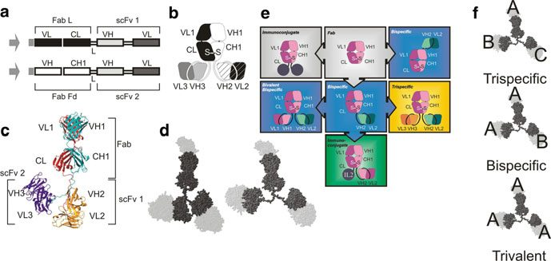
그림 8.1 (a) 트라이바디는 엔티티를 Fab 분자의 Fd와 L 사슬에 융합하여 유전학적으로 구축한다. Fab은 자연적인 이황화결합으로 안정화된 이종이량체이므로 각 기능의 위치가 정확히 결정되고 단일 균질 산물이 생산된다. (b) 트라이바디 구조의 모식도. (c) 분자 모델은 소단위체 간 입체 장벽이 없음을 예측한다. (d) scFv가 N말단으로 연결되어 있어도 결합 부위는 바깥쪽을 향한다. (e) 트라이바디는 3+1(trispecific), 2+1(bispecific), 삼가 분자뿐 아니라 면역독소, 면역사이토카인, 효소 융합체 등으로 이어질 수 있다. (f) 이 모델은 trispecific, bispecific, trivalent 항체 유도체를 손쉽게 생산할 수 있게 한다.
표 8.1 개발 중인 대체 결합 도메인의 예
| 플랫폼 상품명 | 회사 | 표적화용 도메인 | 유래 |
|---|---|---|---|
| SCA | Micromet/Enzon | scFv | 사람 항체 VH+VL 도메인 |
| dAbs | Domantis/GSK | 사람 VH 또는 VL | 안정한 사람 V 도메인 |
| Nanobodies | Ablynx | 낙타/라마 VHH | 낙타 또는 라마 중쇄 mAbs |
| DARPins | Molecular Partners | Ankyrin repeats | 합성 사람 ankyrin repeat |
| Tetranectins | Borean Pharma | Fibronectin | 삼량체 사람 플라스미노겐 결합 단백질 |
| AdNectins | Adnexus Therapeutics | Fibronectin | 제10형 피브로넥틴 III형 도메인(사람) |
| Trans-bodies | BioRexis(Pfizer) | Transferrin | 당화되지 않은 형태의 사람 트랜스페린 |
| Anticalins | Pieris Proteolab | Lipocalins | P. brassicae 나비에서 유래 |
| Affilins | Scil Proteins | γ-Crystallin | 눈 수정체의 안정한 사람 단백질 |
| Microbodies | NascaCell Technologies | Cysteine knots | E. elaterium 트립신 억제제 II–cyclotide EETI-II |
| Alphabodies | Complix | 합성 코일드코일 | De novo 설계 |
| Affibodies | Affibody | Protein A domains | S. aureus protein A domain |
(표 8.1). 또한 전체 융합 산물이 생산될 수 있는지에 따라 다른 도메인이나 단백질도 골격에 포함될 수 있다. 예로는 자연 단백질 리간드, 사이토카인, 수용체 도메인, 태그, 효소가 있다.
139 트라이바디 분자의 분자 모델이 그림 8.1에 나와 있다. 주목할 점은 scFv 분자에 존재하는 결합 평면의 방향이 바깥쪽을 향한다는 것(Fab 절편 쪽을 향하는 것과 반대)으로, 세포와 큰 분자의 교차결합 가능성을 예측한다. 적절한 크기(예: 15아미노산)의 유연한 링커 선택을 통해 단클론 항체의 범위에 필적할 만한 큰 분자 폭을 예측할 수 있다. 그러나 우리는 더 짧은 5아미노산 링커를 사용해도 발현이나 기능성에 차이가 없음을 관찰했다(Schoonjans et al. 2000a,b).
8.2.2 트라이바디 발현
두 융합 유전자 Fd-scFv와 L-scFv는 다양한 숙주세포에서 생산될 수 있다. 그러나 대장균(Escherichia coli)에서 생산하면 상당 부분이 봉입체(inclusion body)로 침전했고, 생성 물질의 상당 부분이 분해되었다. 한 시도에서 대장균이 생산한 트라이바디의 최종 정제 배치는 겨우 0.1 mg/L 수득되었고, 포유류 세포 배양에서 생산된 동일 단백질에 비해 낮은 비활성을 보였다.
포유류 세포 배양은 항체(특히 IgG 포맷)의 고수준 생산을 위해 점점 더 진보하고 있다. 우리는 HEK293, NS0, SP2/0, CHO 세포를 포함한 다양한 포유류 세포에서 트라이바디가 쉽게 발현됨을 확인했다. 포유류 세포는 모두 소포체(endoplasmic reticulum)에 존재하는 HSP70류 샤페론인 BiP 단백질을 지니고 있다. 이 샤페론은 항체 Fab 절편의 올바른 조립을 안내하는 데 관여한다. 주로 Fd 사슬의 CH1 도메인에 결합하며 올바른 Fd:L 사슬 짝짓기로 대체될 때까지 유지된다(Lee et al. 1999). 결과적으로 배양 배지에서 유리 Fd 사슬은 발견되지 않는다. 이 품질관리 기전은 Fab 사슬에 대한 C말단 연장에 의해 억제되지 않는 듯하다. L:L 이량체는 정상 및 악성 B세포에 의해 분비될 수 있으며, L-scFv:L:scFv 이량체도 형질전환 세포의 상등액에서 발견된다. 우리는 이것이 전체 생산에 방해가 된다고 생각하지 않는다
고수준 수득의 바이오리액터 운전이 대부분 IgG 생산처럼 >1 g/L 수득으로 얻어질 수 있다고 가정할 수 있다.
트라이바디는 효모 세포(Schoonooghe et al. 2009)에서도 발현될 수 있다. 우리는 AOX 프로모터와 α-교배형 prepro 서열을 사용한 Pichia pastoris에서 대략 비슷한 전체 수득을 보였다. 이중 통합 사건의 수득이 매우 낮으므로, 통합에 쓰일 이시스트론(icistronic) 발현 플라스미드를 구축했다. Pichia에서도 배지에 유리 Fd 사슬이 관찰되지 않았다. 이는 효모 샤페론 시스템이 포유류 세포에서 보이는 품질관리 기전을 대신할 수 있음을 나타낸다. 두 숙주세포를 정의 배지에서 배양하더라도 Pichia 발효의 정제 배지는 무혈청 포유류 세포의 정제 배지보다 오염물질이 훨씬 많았다. 이 때문에 정제 후 전체 회수율이 낮았다(Pichia pastoris에서 20%, 포유류 배양 상등액에서 70%). Pichia에서 생산된 트라이바디는 포유류 세포 유래 것과 동일한 기능성을 보였다. α-교배형 prepro 서열은 재조합 단백질을 배지로 안내하는 데 매우 효율적이다(대부분의 효모 분비 단백질의 자연 저장 형태인 액포로 향하는 주요 경로와 달리). 이 prepro 서열은 KEX-2 프로테아제에 의해 제거된다. 이 프로테아제는 절단 부위 뒤 Gln-Ala-Gln-Ala 반복을 선호한다. 이 네 아미노산은 디아미노펩티다제 STE-13에 의해 제거될 수 있다. 우리는 이 전략으로 생산된 항체 절편의 N말단이 추가 아미노산의 부분 제거 또는 무제거 때문에 이질적임을 발견했다. 게다가 효모 세포에서 당화 트라이바디를 생산할 때는, 효모의 당화가 포유류형 당화와 달라서 생체 내 반감기와 항원성에 심각한 영향을 줄 수 있음을 고려해야 한다.
8.2.3 정제와 안정성
대부분의 트라이바디는 pI 값이 7~8이므로, pH 5.5의 양이온교환 fast flow 컬럼과 불연속 스텝 용리가 이상적인
이량체화. 우리는 sc(Fv)₂ 구조체를 만들 때 이 행동이 더 뚜렷해짐을 알아차렸다. 동일한 scFv 서열을 트라이바디 구조(즉 Fab에 융합)로 만들면 이량체와 다량체가 이미 상당히 줄어든다. 사용된 scFv의 성질에 대한 의존성은 리드 후보 scFv 분자의 적절한 선택이 얼마나 중요한지를 강조한다. 리드 후보는 결합과 에피토프 선택만이 아니라, 더 복잡한 골격[예: sc(Fv)₂]에 통합될 때 다량체화 경향이 없는지에 대해서도 특성화되어야 한다. 주목할 점은 많은 트라이바디에 대해 단량체 부분을 정제할 수 있었고, 이 부분은 농축과 저장 중에도 단량체로 남았다는 것이다. 트라이바디 제제는 PBS에서 1 mg/ml 농도로 4 °C에 저장되었고 그 상태로 최소 3개월간 안정했다. 그러나 pH 5~6의 저장 완충액에서는 대부분 분자의 pI인 7~8에서 벗어나므로 더 높은 안정성을 얻을 수 있다. 동결-해동 스트레스 시험에서도 사용된 항체 V 도메인 서열과 그 도메인의 위치(그림 8.2)에 따라 행동에 큰 차이가 드러났다. 이는 빌딩블록 선택부터 시작해 골격 내 최적 구성 선택까지 광범위한 특성화와 모니터링이 필요함을 다시 일깨워준다. 어떤 트라이바디는 어떤 동결방지제나 안정화 첨가제도 없는 PBS 완충액에서 반복적으로 동결·해동되어도 응집 징후가 전혀 없었지만, 다른 것들은 그런 처리에 매우 응집하기 쉬웠다.
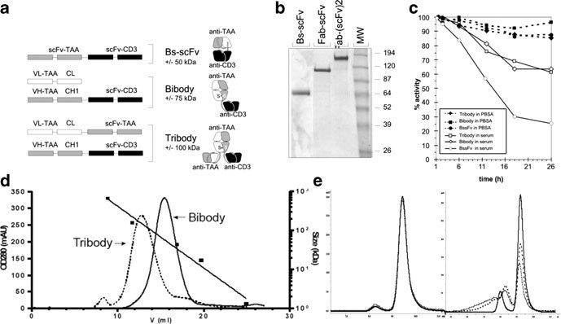
그림 8.2 생산과 안정성. (a) sc(Fv)₂(BiTE), Fab–scFv(bibody), Fab–(scFv)₂(tribody) 포맷의 유전자 및 단백질 구조. (b) 10 mg 정제 부분의 Coomassie brilliant blue 염색 겔. (c) PBS(점선) 및 신선한 마우스 혈청(실선)에서 37 °C로 24 h 배양 후 T세포 활성화 분석에서 트라이바디(사각형)와 바이바디(마름모)의 잔존 활성. (d) bibody와 tribody 구조의 분획 겔 여과 및 컬럼 교정. (e) 분석적 크기배제크로마토그래피에서 분석한 두 가지 다른 트라이바디 구조, 처리 전(실선)과 처리 후
142 N. Mertens
8.3 트라이바디 활성
8.3.1 시험관 내 결합과 T세포 활성화
이 트라이바디를 자연 면역 환경에서 사용하는지 연구하기 위해, 우리는 BCL1(마우스 골수종 세포주 BCL1에서 발현되는 IgM/λ idiotypic determinant)과 마우스 TCR determinant CD3ε을 표적하는 BsAb를 구축했다(그림 8.3). BCL1 시스템은 잘 특성화되어 있으며 동계(isogeneic) 면역적격 Balb/c 마우스 모델에서 NHL 모델이다(Brissinck et al. 1991). 비교를 위해 작은 이중특이 항체 포맷의 “금본위” 표준인 bispecific scFv(BsscFv 또는 BiTE) 포맷을 사용했다. 이것은 사용된 가장 작은 BsAb(50 kDa)이며
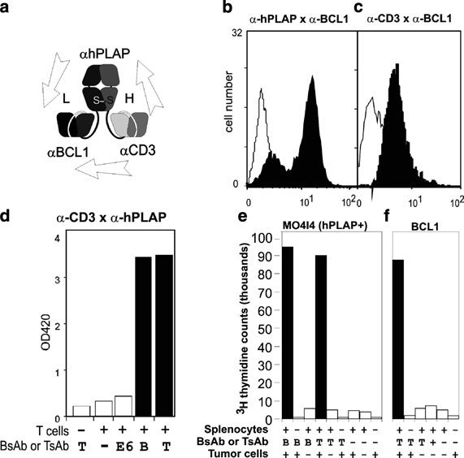
그림 8.3 결합과 T세포 활성화. (a) 두 가지 다른 TAA(마우스 BCL1과 사람 태반 alkaline phosphatase(hPLAP))에 특이성을 지닌 트라이바디가 구축되었다. 표시된 각 축의 기능성은 하나의 항원에 결합하고 두 번째 항원으로 검출함으로써 입증된다. (b) hPLAP×CD3×BCL1 Tribody의 마우스 T세포 결합 및 hPLAP(alcaline phosphatase 활성을 가짐)로 검출. (c) hPLAP transfectant MO4 I4 세포에 대한 트라이바디 결합 및 형광 BCL1 항원으로 검출, 그리고 트라이바디를 마우스 T세포에 결합시킨 후 동일한 검출. (d) anti-CD3를 통해 T세포에 결합한 트라이바디(T)와 바이바디(B)는 hPLAP 항원으로 검출될 수 있다. (e) hPLAP×CD3×BCL1-trispecific 항체는 hPLAP 양성 세포와 BCL1 세포로 프라이밍된 마우스 T세포 증식 분석에서 bispecific 항체로 작동한다(f)
두 scFv가 펩타이드 링커로 연결되어 구성되었다. 이 BsscFv(BCL1×CD3)는 이전에 BCL1 림프종 보유 마우스 치료에 성공한 것으로 보고되었다. 우리는 scFv를 Fab 절편의 Fd 및 L 사슬 중 하나 또는 둘 다의 C말단에 융합함으로써 트라이바디 포맷으로 중간 크기(75~100 kDa)의 BsAb를 공학화했다. anti-BCL1 scFv에서 시작해, 가변 도메인을 마우스 CL과 CH1 일정 도메인에 이식하여 키메릭 anti-BCL1 Fab 절편을 구축했다. 그런 다음 anti-mouse CD3 2C11 scFv를 키메릭 Fab 절편 중쇄의 C말단에, anti-BCL1 scFv를 키메릭 Fab 절편 경쇄의 C말단에 각각 융합했다. 중쇄 Fab–scFv 융합 유전자를 경쇄 Fab 유전자와 함께 발현하면 (BCL1×CD3) Fab–scFv 바이바디가, 경쇄 Fab–scFv 융합 유전자와 함께 발현하면 (BCL1×BCL1×CD3) Fab–(scFv)₂ 트라이바디가 생산되었다(그림 8.4). 종양 결합 모드(anti-BCL1)는 세 BsAb 모두에서 다르다. BsscFv에서 종양은 scFv를 통해, 바이바디에서는 Fab 절편을 통해, 트라이바디에서는 Fab 절편과 scFv 모두를 통해 인식된다. ELISA 실험은 이 차이가 종양 항원 BCL1에 대한 다른 기능적 친화력으로 이어졌는지를 결정했다. 이를 위해 BCL1 종양 항원을 코팅하고 등몰량의 해당 BsAb를 연속 희석하여 배양했다. 결합된 BsAb는 C말단 His-태그를 통해 His-태그 특이 mAb로 검출되었다. 2가 결합 Fab–(scFv)₂ 트라이바디의 B₅₀ 값은 3 nM이었다. 반면 바이바디의 일가 결합 Fab 절편은 10배 높은 B₅₀(30 nM)을 보였다. BsscFv에서 scFv만을 통한 결합은 겉보기 결합 친화력의 추가 감소로 이어졌다.
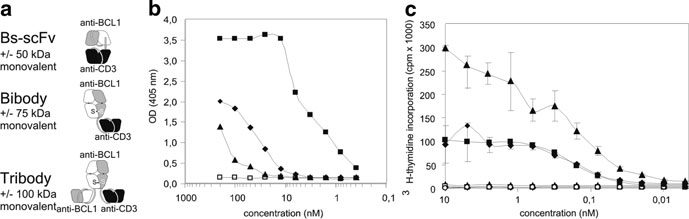
그림 8.4 (a) BCL1 세포를 T세포에 교차결합하는 이중특이 항체의 시험관 내 비교, sc(Fv)₂(BiTE), Fab–scFv(bibody), Fab–(scFv)₂(tribody) 포맷. (b) BsscFv(BCL1×CD3), 바이바디(BCL1×CD3), 트라이바디(BCL1×BCL1×CD3)의 겉보기 친화력
144 N. Mertens
T세포 증식 분석에서 이런 종양 결합 친화력 차이가 시험관 내 다른 BsAb들의 T세포 활성화 잠재력에 영향을 미치는지 결정되었다. 등몰량부터 시작하는 연속 희석 BsAb를 mitomycine 비활성 BCL1 종양세포와 동계 비장세포와 함께 배양했다. 세 BsAb 모두 종양세포 존재 하에 T세포를 활성화할 수 있었다. ELISA에서 보인 친화력 차이에도 불구하고, 일가 결합 바이바디와 BsscFv 사이에서는 T세포 활성화 잠재력 차이가 관찰되지 않았다. 그러나 2가 결합 트라이바디는 뚜렷하게 개선된 T세포 활성화 잠재력을 보였다. 2가 트라이바디로 도달한 최대 T세포 증식은 일가 바이바디나 BsscFv보다 2배 높았다(그림 8.4). 게다가 2가 트라이바디는 일가 바이바디와 BsscFv에 비해 4배 낮은 농도에서도 T세포 증식을 유도할 수 있었다. 다른 종양 마커 표적화에서도 원자가(valency)의 증가는 더 나은 종양 결합으로 이어졌다(Schoonooghe et al. 2010).
8.3.2 생체 내 모델: 마우스 Bcl1 림프종
다음 단계로 분자량과 종양 아비디티 차이가 BsAb의 치료 잠재력 차이로도 이어지는지 조사했다. 마우스 군(n=13)에 day 0에 i.p.로 5000 BCL1 세포를 접종하고, day 2–5에 i.v.(꼬리정맥)로 하루 4회 주사로 치료했다. 치료는 등몰량(주사당 200, 100, 50 pmol)의 BsscFv, 바이바디, 또는 트라이바디로 수행되었다. 추가로 6마리 군에 PBS 또는 BCL1 종양 표면에 2가 결합하는 anti-Id mAb 주사당 200 pmol을 주입했다. PBS 또는 anti-Id mAb 치료를 받은 대조군의 모든 동물은 말기 질병이 되어 각각 day 60 또는 140까지 안락사되었다(그림 8.5). 해부 후 비장이 종양세포의 대량 존재로 인해 엄청나게 커진 것이 발견되었다
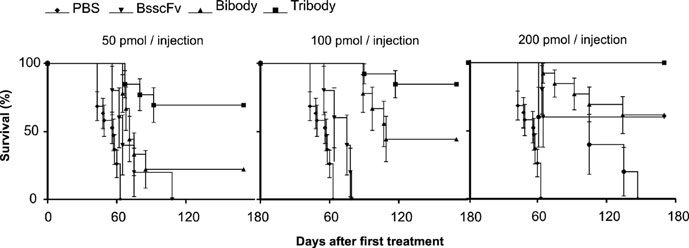
그림 8.5 Balb/C 마우스에 각 실험의 day 1에 무균·내독소 무함유 PBS 100 ml에 i.p.로 5000 BCL1 림프종 세포를 접종했다. 치료 중
8 트라이바디: Fab–scFv 융합 단백질 플랫폼 145
종양세포의 대량 존재로 인해 비장이 커져 있었다. 대조적으로, 각 BsAb 주사당 200 pmol로 치료된 마우스들은 비장에서 종양 형성에 대해 유의한(P < 0.0001) 보호를 보였다. BsscFv 또는 Fab–scFv 바이바디 치료 후 60% 생존이 관찰되었고, Fab–(scFv)₂ 트라이바디 치료는 마우스 100% 보호를 가져왔다. BsscFv 치료 용량을 주사당 100 pmol과 50 pmol로 낮추자 보호가 사라졌다. 그러나 Fab–scFv 바이바디 치료는 주사당 100 pmol에서 여전히 활성을 유지해 45% 생존을 보였고, 이는 통계적으로 유의했다(P < 0.0001). 주사당 50 pmol에서 Fab–scFv 바이바디는 마우스의 20%만 보호했다. 그러나 2가 Fab–(scFv)₂ 트라이바디 골격은 다른 골격이 무력한 농도에서도 마우스를 보호했다(4회 주입 시 각각 50, 100, 200 pmol에서 70%, 85%, 100% 생존; P=0.0190, P=0.0371, P=0.0059). 트라이바디 치료(주당 200 pmol) 후 생존한 마우스는 100% 완치되었고 200일간 추적 관찰 동안 종양이 발생하지 않았다. 이는 유효한 종양 제거를 뒷받침하며 항체 유발 림프종 세포의 휴면(dormancy) 가설에는 반한다.
8.3.3 약동학 측정
우리는 또한 다른 BsAb의 크기가 생체 내 혈중 청소율에 유의하게 영향을 미치는지 확인했다. 마우스에 꼬리정맥으로 i.v. 주사하여 BsscFv, 바이바디, 또는 트라이바디 800 pmol을 투여했다. 주사 후 여러 시점에서 채혈하고 T세포 증식 분석으로 혈청 내 잔존 생물학적 활성을 결정했다. 세 항체 유도체 모두에서 전형적인 이상성(biphasic) 혈중 청소가 관찰되었다(그림 8.5). 초기 혈중 분배상 반감기(T₁/₂α)는 바이바디와 트라이바디 모두에서 비슷했는데 각각 56분과 72분이었지만, BsscFv는 상당히 짧았다(13분). 말기 혈중 제거상 반감기
146 N. Mertens
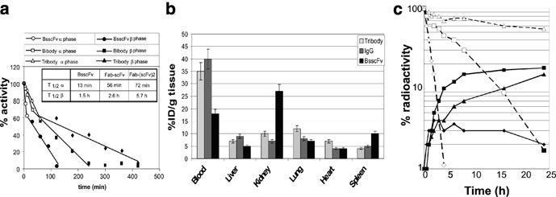
그림 8.6 (a) 건강한 Balb/c 마우스에 꼬리정맥으로 Ab 절편 800 pmol을 i.v. 주사했다. 여러 시점에서 마우스를 채혈하고 혈청을 동결했다. 혈청 내 BsAb의 잔존 생물학적 활성은 T세포 증식 분석으로 분석했다. 주사 후 5분(마취 작용에 필요한 시간)에 존재하는 활성을 영시점(zero time point) 활성으로 사용했다. (b) ¹²³I 표지 트라이바디, IgG1, BsscFv를 꼬리정맥에 주사하고 6마리 군을 1 h 후 도태했다. 선정된 조직을 계수하고 비교했다. (c) 24 h 동안 ¹²³I 표지 IgG1(삼각형), 트라이바디(사각형), BsscFv(마름모)의 혈청 청소(점선) 및 사지 종양 결절 축적(실선), 로그 스케일.
이 데이터는 2가성 도입과 반감기 증대가 생체 내 시약의 효능을 증가시킬 수 있음을 시사한다. 트라이바디 골격은 이미 세 번째 결합 기능을 통합함으로써 이를 달성한다.
8.4 트라이바디의 사용과 잠재력
언급했듯이 Fab 사슬에 의해 이종이량체화될 수 있는 재조합 융합 분자가 매우 많다. 우리는 이 골격을 사용해 교차 상호작용 프리타겟팅(cross-interacting pretargeting) 시스템을 공학화한 한 사례를 논의할 것이다. CD3를 통해 T세포와 종양세포를 교차결합하는 이중특이 항체는 T세포를 증식 및 세포용해 반응 모두에 대해 활성화한다. 이것은 시험관 내와 임상시험 양쪽에서 입증되었다(Baeuerle et al. 2009). 그러나 T세포는 공자극 신호(co-stimulatory signal)가 있을 때 더 쉽게 활성화된다(Gimmi et al. 1993). CD28 공수용체는 최초로 밝혀진 공자극 신호 중 하나이며おそらく 가장 강력하다. CD28만을 겨냥하는 대부분의 항체는 T세포를 활성화하지 않으므로 독성이 없지만, 초작용제(superagonistic) 성질의 CD28 결합체가 위험하다고 묘사된 사례가 있다. 일반적으로 T세포의 활성화 트리거는 CD3 결합에서 온다. 적절한 환경(공자극) 없이는 T세포가 무응답(anergy) 또는 세포사멸에 빠질 수 있다. 이런 공자극 신호는 활성화된 항원제시세포에 의해 주어지며, 우연한 T세포 활성화를 막는 또 하나의 조절 고리이다
우리는 내재 교차반응성(cross-reactivity)을 갖춘 몇 개의 트라이바디(교차반응 이중특이 항체, CriBs)를 만들었다. 첫 번째에는 작은 펩타이드를 포함시키고 두 번째에는 anti-peptide scFv를 넣었다. 하나는 종양과 CD28을 표적하고 완전히 무해했으며, 단독으로는 T세포를 활성화할 수 없었다.
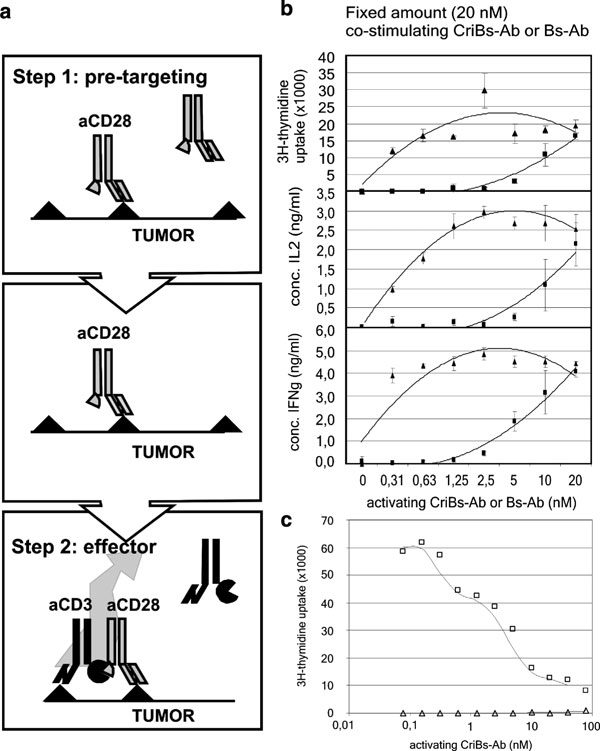
그림 8.7 (a) 교차 상호작용 이중특이 항체(CRIBs) 쌍이 구축되어, 비활성 트라이바디가 종양세포와 T세포 CD28 공자극을 미리 교차결합한다. 이 트라이바디는 독특한 펩타이드 P를 포함한다. 두 번째 트라이바디는 종양, T세포의 CD3, 그리고 P-펩타이드에 결합하고, P–αP 상호작용에 의해 결합 시 첫 번째 것과 교차결합할 수 있다. (b) Mitomycin 처리 종양세포를 고정량(20 nM)의 anti-(TAA×CD28) BsAb(열린 점선 사각형) 또는 anti-(TAA×CD28)P CriBs-Ab(열린 점선 삼각형)로 1 h 사전 배양한 후, 연속 희석(0~20 nM)의 anti-(TAA×CD3) BsAb(열린 점선 사각형) 또는 anti-(TAA×CD3×P) CriBs-Ab(열린 점선 삼각형)와 1 h 배양했다. 사전 배양 종양세포는 T세포와 함께 배양했다. T세포 활성화는 증식, IL-2 생성, IFNγ 생성으로 측정했다. 각 조건은 삼중 시험. (c) 종양세포 존재(사각형) 및 부재(삼각형) 하에서 0.1~100 nM 범위의 용량 의존적 T세포 활성화.
148 N. Mertens
두 번째 것은 종양과 CD3에 결합할 수 있고 첫 번째에 포함된 P-펩타이드에도 결합할 수 있다. 이를 통해 우리는 종양세포에 anti-CD28 활성을 미리 표적하고, 그 후 TAA×CD3×P 트라이바디를 주어 T세포를 활성화할 수 있었다. 이 CriBs 시스템을 사용하면 교차하지 않는 이중특이 항체 쌍에 비해 anti-CD3 함유 이중특이 농도가 30배 낮아도 효율적인 T세포 활성화를 달성할 수 있음을 발견했다(Willems et al. 2005). 또한 공자극 대비 TCR 결합의 최적 화학양론을 달성할 수 있었고, 유효 농도와 한계적인 비종양세포 유발 T세포 활성화 시작 사이에 넓은 창이 있었다(그림 8.7). 이는 트라이바디 분자의 가능성과 유연성을 보여주는 예가 될 것이다.
8.5 결론
분명히 위 데이터는 트라이바디 골격이 더 나은 결합(다가성을 통해)뿐 아니라 더 많은 결합(더 많은 항원 표적화)을 만들 수 있는 가능성을 통해 더 활성이 강한 분자를 생성할 잠재력이 있음을 보여준다. 이 분자는 독성 payload 전달에도 더 유리한 성질을 지니고 있다. T세포 활성화 활동을 전달하는 것은 독성 기능으로 볼 수 있다. 그런 기능을 지닌 항체가 오래 몸에 남으면 비특이적으로 축적되거나 건강 조직에 침착될 잠재력이 있다.
약물 개발 자격을 위해 트라이바디는 고역가(g/L)로 생산될 수 있고 표준 제조 조건에서 안정해야 한다. 이량체나 다량체 형성 경향은 제조와 여러 응용 모두에서 문제가 될 수 있으며, 종양세포 의존 T세포 활성화가 한 예다. 서로 다른 빌딩블록(scFv와 Fab 부분 모두) 사이에서 놀라운 차이가 나타날 수 있다. 이것은 발현 수준, 결합 성능, 다량체 형성 경향 수준 어디에나 위치할 수 있다. 게다가 같은 부분들 내 골격 내 순열(permutation)도 같은 차이를 유도할 수 있다. 우리 경험상 잘 통합되고 전문적으로 운영되는 기술 플랫폼은
Brissinck J, Demanet C, Moser M, Leo O, Thielemans K (1991) Treatment of mice bearing BCL1 lymphoma with bispecific antibodies. J Immunol 147(11):4019–4026 Gimmi CD, Freeman GJ, Gribben JG, Gray G, Nadler LM (1993) Human T-cell clonal anergy is induced by antigen presentation in the absence of B7 costimulation. Proc Natl Acad Sci USA 90(14):6586–6590 Lee YK, Brewer JW, Hellman R, Hendershot LM (1999) BiP and immunoglobulin light chain cooperate to control the folding of heavy chain and ensure the fidelity of immunoglobulin assembly. Mol Biol Cell 10(7):2209–2219 Schoonjans R, Willems A, Grooten J, Mertens N (2000a) Efficient heterodimerization of recombinant bi- and trispecific antibodies. Bioseparation 9(3):179–183 Schoonjans R, Willems A, Schoonooghe S, Fiers W, Grooten J, Mertens N (2000b) Fab chains as an efficient heterodimerization scaffold for the production of recombinant bispecific and trispecific antibody derivatives. J Immunol 165(12):7050–7057 Schoonjans R, Willems A, Schoonooghe S, Leoen J, Grooten J, Mertens N (2001) A new model for intermediate molecular weight recombinant bispecific and trispecific antibodies by efficient heterodimerization of single chain variable domains through fusion to a Fab-chain. Biomol Eng 17(6):193–202 Schoonooghe S, Kaigorodov V, Zawisza M, Dumolyn C, Haustrate J, Grooten J, Mertens N (2009) Efficient production of human bivalent and trivalent anti-MUC1 Fab-scFv antibodies in Pichia pastoris. BMC Biotechnol 9(1):70 Schoonooghe S, Burvenich I, Vervoort L, De Vos F, Mertens N, Grooten J (2010) PH1-derived bivalent bibodies and trivalent tribodies bind differently to shed and tumour cell-associated MUC1. Protein Eng Des Sel 23(9):721–728 Smith BJ, Popplewell A, Athwal D, Chapman AP, Heywood S, West SM, Carrington B, Nesbitt A, Lawson AD, Antoniw P, Eddelston A, Suitters A (2001) Prolonged in vivo residence times of antibody fragments associated with
제9장 IgG 유사 이중특이 항체의 설계와 공학
페이 진(Pei Jin), 전핑 주(Zhenping Zhu)
9.1 서론
치료용 단클론 항체(mAb)는 암, 염증, 감염병과 싸우는 데 있어 임상의에게 점점 중요한 자산이 되고 있다(Chan and Carter 2010; Beck et al. 2010; Weiner et al. 2010). 치료제로서 mAb는 여러 작용 기전 중 하나를 통해 생물학적 효과를 발휘한다: (1) 성장인자와 사이토카인을 포함한 항원을 격리; (2) 수용체 길항제 또는 작용제로 작용; (3) 항체의존세포매개세포독성(ADCC)과 보체의존세포독성(CDC) 같은 효과기능의 활성제 역할; (4) 면역접합체나 면역독소 형태로 세포독성 물질을 질병 조직에 표적 전달하는 운반체 역할; (5) 화학요법 또는 방사선요법 보조제 역할(Chan and Carter 2010; Beck et al. 2010; Weiner et al. 2010; Muller and Kontermann 2010). 항체 치료제의 상업적 개발이 최근 성공을 거두었음에도, 현재의 단일 표적 mAb는 임상에서 제한된 효능을 보였다. 그 이유는 세포가 다중·중복 신호 경로로 진화하여 단일 요법에서 벗어날 수 있기 때문이다. 소분자 약물로 다중 신호 경로에 영향을 줄 수 있지만, 심각한 off-target 독성을 일으키는 경우가 많다. 따라서 부작용 증가 없이 다중 신호 경로를 수정할 수 있는 치료제가 필요하다.
현재 mAb 치료의 한계를 극복하기 위한 해결책으로는 항체 조합과 이중 표적 이중특이 항체(BsAb)의 창안이 있다. 이 장에서는 IgG 유사 BsAb와 그 잠재적 치료 응용의 현황과 미래 전망을 검토한다.
P. 진(P. Jin) — 스위스 바젤 노바티스 제약 바이오로직스 단백질과학·설계부(Novartis Biologics, Novartis Pharma AG), 미국 매사추세츠주 케임브리지 Z.Zhu(*) Kadmon Pharmaceuticals LLC, 400 Madison Avenue, 11th Floor, New York, NY 10017, USA e-mail: zzhu.mab@gmail.com R.E.Kontermann(ed.), Bispecific Antibodies, 151 DOI 10.1007/978-3-642-20910-9_9, #Springer-Verlag Berlin Heidelberg 2011
152 P. Jin and Z. Zhu
다양한 접근법의 장단점은 각 BsAb 포맷의 맥락에서 검토될 것이다.
9.2 항체 조합 전략과 단점
mAb를 조합하여 질병 경로의 다중 표적에 영향을 주면 전신 독성을 제한하면서 효능을 향상시킨다는 근거가 축적되고 있다. 임상 사례로 anti-epidermal growth factor receptor®(anti-EGFR, Erbitux®)와 anti-vascular endothelial growth factor(anti-VEGF, Avastin®) 항체의 조합이 있으며, 둘 다 대장암(CRC)에 승인되었다. irinotecan 불응성 CRC 환자에게 Erbitux®, Avastin®, irinotecan을 투여한 2상 연구는 Erbitux®와 irinotecan만 받은 환자의 23% 반응률에 비해 37% 반응률을 보였다(Saltz et al. 2007). 현재 HER2 항체 Herceptin®과 Avastin®의 조합, Erbitux®와 Avastin®의 조합 등 여러 항체 조합 임상시험이 각각 유방암과 CRC 환자에서 진행 중이다. 항체 조합 요법을 지지하는 대부분의 데이터는 전임상 연구에서 나온다. 예컨대 anti-EGFR과 anti-vascular endothelial growth factor receptor-2(anti-VEGFR2)의 조합(Ahmad et al. 2001; Jung et al. 2002; Tonra et al. 2009; Lamszus et al. 2005; Penar et al. 1997; Kunkel et al. 2001), anti-EGFR과 anti-insulin-like growth factor receptor(IGFR)의 조합(Chakravarti et al. 2002; Krane et al. 1991; Kobari et al. 1998; Burtrum et al. 2003; Lu et al. 2005), anti-EGFR과 anti-HER2의 조합(Ye et al. 1999) 등으로 다양한 이종이식 종양과 기타 질병 모델을 치료했다. 보고된 각 사례에서 조합 치료는 상가적 또는 시너지 억제 활동으로 개선된 효능을 달성했다. 항체 조합 요법은 EGFR(Dechant et al. 2008; Pedersen et al. 2010)과 HER2(Nahta et al. 2004)처럼 동일 분자의 겹치지 않는 두 에피토프를 표적하여 시너지 치료 효능을 얻는 데도 적용되었다. 그러나 항체 조합의 치료 개발은
혼합물은 지나치게 비싸거나(oligoclonal cocktail) 거의 불가능하다(polyclonal antibody). 정의되지 않았거나 불완전하게 정의된 재조합 IgG 혼합물은 안전성과 효능 양면에서 우려가 된다. 또한 제조 과정에서 배치 일관성은 규제 관점에서 통제하기 어렵다.
9.3 IgG 유사 이중특이 항체의 공학
BsAb는 두 개의 서로 다른 에피토프 또는 항원에 특이적인 항체 또는 항체 유사 분자이다. 처음에는 서로 다른 특이성을 지닌 두 항체 생산 하이브리도마 세포주를 융합하여 만들어졌다(Cotton and Milstein 1973). 그러나 중쇄(HC)와 경쇄(LC)의 무작위 짝짓기 때문에 결과 hybrid hybridoma는 무작위로 형성된 활성 또는 비활성 단량체와 이량체 웅덩이 속에서 이종이량체 BsAb의 소수 집단만 생산할 수 있다. 이런 웅덩이에서 BsAb를 정제하는 것은 어렵고 비싸다.
화학적 교차결합으로 서로 다른 특이성을 지닌 두 mAb를 공유결합하여 BsAb를 형성할 수도 있다(Nisonoff and Rivers 1961). 그러나 화학적 컨쥬게이션은 분자를 불활성화하는 경향이 있다. 게다가 결과 항체 접합체는 이질적이며, 제한된 양의 BsAb를 얻으려면 광범위한 정제가 필요하다.
재조합 기술로 BsAb를 생성하는 접근법이 더 결실을 맺었다(Marvin and Zhu 2006; Coloma and Morrison 1997; Muller and Kontermann 2010). 재조합 BsAb는 단백질 설계와 유전공학으로 생성된다. 결과 cDNA 구조체는 박테리아나 포유류 세포에서 발현된다. 발현된 활성 BsAb는 균질까지 쉽게 정제된다. BsAb는 20년 넘게 연구되었지만, 낮은 발현, 낮은 안정성, 심한 응집, 불충분한 안전성·효능 프로파일 같은 한계 때문에 임상적으로 유용한 치료제로 개발되는 것이 더뎠다. 그러나 최근 항체 공학과 발현 분야의 진보가 이 문제들을 해결할 새로운 접근을 낳았다(Miller et al. 2009, 2010; Ewert et al. 2004; He et
154 P. Jin and Z. Zhu
첫 번째 명백한 해결책은 HC 이종이량체 형성을 호모이량체보다 선호하도록 Fc의 CH3 도메인을 재설계하는 것이다.
9.3.1.1 “Knobs-Into-Holes” BsAb IgG
15년 전 Carter와 동료들이 우아한 실험을 설계했다(Ridgway et al. 1996; Merchant et al. 1998). 서로 다른 두 IgG HC의 이종이량체 짝짓기를 쉽게 하는 실험이었다. 실험에서는 상반된 Fc 사슬의 CH3 도메인에 단일 아미노산 치환을 도입하여, CH3/CH3 결합에 필요한 입체 보완성이 돌연변이를 가진 CH3 도메인이 상이한 상보적 돌연변이를 가진 CH3 도메인과 짝짓기를 강제하도록 했다(그림 9.1b). HC 돌연변이쌍을 함께 발현하자 대부분(92%) 이종이량체 산물이 형성되었으나, 안정성은 야생형보다 현저히 낮았다(knob:T366W + hole:Y407A 변이체, Tm=65.4 °C; 야생형, Tm=80.4 °C). 파지 디스플레이 라이브러리를 이용한 추가 최적화로 Tm이 69.4 °C로 개선된 변이체(knob:T366W; hole:T366S, L368A, Y407V)가 나왔다(Atwell et al. 1997). 이 결과들은 knobs-into-holes 접근의 유용성을 보여준다. CH3 도메인의 다른 잔기 집합도 최적화되어 안정성과 이종이량체/호모이량체 비율을 더 개선할 수 있을 것이다.
이 접근법은 HC 호모이량체화 문제를 해결하지만, 서로 다른 두 항체의 LC-HC 잘못된 짝짓기(예: 올바른 LC_A-HC_A와 LC_B-HC_B 대신 LC_A-HC_B와 LC_B-HC_A)라는 똑같이 문제가 되는 이슈는 다루지 않았다. 이것은 VL-VH 인터페이스에 knobs와 holes를 넣도록 LC-HC 상호작용을 비슷하게 재설계함으로써 해결될 수 있다(Zhu et al. 1997). anti-HER2 Fab 절편인 4D5 Fab(Eigenbrot et al. 1993)의 VL-VH 인터페이스 검토에 기반해, 4D5와 anti-CD3 항체의 Fv를 담은 diabody 절편용 knob 돌연변이와 상보적 hole 돌연변이가 설계되었다(Zhu et al. 1996). 변이체 중 하나(“v5”; knob: VH-V37F, L45W; hole:
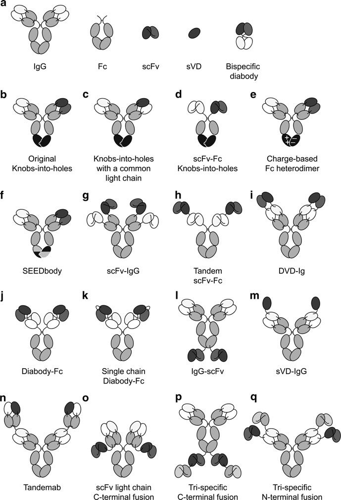
그림 9.1 IgG 유사 bi- 및 tri-specific 항체의 모식도. (a) bi- 및 tri-specific 항체를 구축하는 빌딩블록 구성요소; (b–q) 이 장에서 논의되는 공학화된 IgG 유사 bi- 및 tri-specific 항체들.
156 P. Jin and Z. Zhu
95% 이상의 생산 IgG)를 달성했다. 단일 LC가 원래 knobs와 holes 돌연변이(knob:T366W, hole:T366S, L368A, Y407V)를 통합하도록 공학화된 서로 다른 특이성의 두 HC와 함께 숙주에 co-transfected되고, 이종이량체 안정화 이황화결합(S354C, Y349’C)이 추가되었을 때 말이다. 그러나 실제로 공통 LC를 공유할 수 있는 항체를 식별하는 것은 꽤 도전적이다. 특히 고친화력 항체에서 더욱 그렇다.
9.3.1.3 scFv-Fc “Knobs-Into-Holes” BsAb
LC-HC 잘못된 짝짓기 문제는 VL과 VH를 scFv 형식으로 융합하여 피할 수도 있다(Xie et al. 2005). 이 구조체에서 anti-HER2 scFv는 “knob” 돌연변이 T366Y를 가진 Fc에 융합되고, anti-CD16 scFv는 “hole” 돌연변이 Y407T를 가진 Fc에 융합된다(그림 9.1d). knobs-into-holes 기전을 통한 두 사슬의 효율적 짝짓기가 입증되었고, 세포 표면 결합 분석으로 두 항원에 대한 특이성이 확인되었다. scFv-Fc “knobs-into-holes” 분자는 두 표적 항원을 교차결합할 수도 있는데, 단일특이 anti-HER2 항체만큼 NK 세포매개 세포독성을 더 높게 유도할 수 있다는 점이 그 증거이다. 이 포맷은 일반 IgG(150 kDa)보다 작아서(120 kDa) 종양 침투에서 약간의 이득이 있을 수 있으며, 완전한 Fc 영역이 제공하는 더 긴 반감기와 효과기능을 유지한다.
9.3.1.4 기타 새로운 Fc-이종이량체 포맷
knobs-into-holes 기술 외에 Fc 이종이량체화를 달성하는 다른 접근법이 개발되었다. 예컨대 CH3 도메인 내 상반된 Fc 사슬의 전하극성 공학(charge polarity engineering)으로 이종이량체 IgG 유사 짝짓기를 만들 수 있다(그림 9.1e)(Gunasekaran et al. 2010). CH3 도메인 상반 사슬 인터페이스를 따라 몇몇 하전 잔기의 돌연변이가 Fc 이종이량체 형성을 촉진하면서 호모이량체 형성을 효율적으로 억제할 수 있음이 입증되었다(자세한 설명은 11장 참조). knobs-into-holes 기술과 전하극성 공학을 결합하면 더 높은 이종이량체 형성 비율을 얻을 수 있을 것이다
SEED CH3 도메인을 포함하는 이종이량체 골격은 유전적으로 하나 이상의 항원결합 도메인과 연결될 수 있어 bi- 또는 multi-specific 항체가 된다. 이 새로운 골격은 고수준으로 발현되고, 재조합 Protein A resin에서 정제되었으며, IgG1 대조군에 필적하는 긴 혈청 반감기를 보였다.
9.3.2 N말단 IgG 유사 융합
scFv는 종종 모체 항체의 항원 결합 친화력과 특이성을 유지하면서 작은 크기를 지녔기 때문에 BsAb 구축의 이상적인 빌딩블록이다. scFv는 IgG의 N말단에 공유결합되어 4가(四價) BsAb를 만들 수 있다.
9.3.2.1 scFv-IgG 융합
그런 포맷 중 하나에서 서로 다른 특이성을 지닌 두 scFv가 각각 IgG의 일정 경쇄(CL)와 첫 일정 중쇄(CH1) 도메인의 N말단에 융합되었다: (scFv)_A-CL과 (scFv)_B-CH1-CH2-CH3. 두 재조합 사슬을 단일 숙주에서 함께 발현하면 4가 BsAb인 Bs(scFv)₄-IgG가 생성되었다(Zuo et al. 2000)(그림 9.1g). CL과 CH1 도메인 사이 자연 이종이량체화 덕분에 균질한 BsAb만 생성되었다.
EGFR과 IGFR에 각각 특이적인 두 scFv 절편을 사용해 비슷한 Bs(scFv)₄-IgG 분자 두 개가 구축되었다(Lu et al. 2004b). 두 구조체는 서로 다른 융합 방향을 가졌다: 즉 scFv_anti-EGFR-CL + scFv_anti-IGFR-CH1-CH2-CH3, 또는 scFv_anti-IGFR-CL + scFv_anti-EGFR-CH1-CH2-CH3. 두 구조체 모두 포유류 세포에서 발현되었고 1단계 Protein-A 크로마토그래피로 정제되었다. BsAb는 EGF와 IGF가 각자의 수용체에 결합하는 것을 막고 리간드 유발 수용체 활성화를 차단했다. 반면 모체 mAb는 개별 리간드에 의한 수용체 활성화만 억제했고 둘 다는 아니었다. 게다가 두 Bs(scFv)₄-IgG는 배양 종양세포의 증식을 두 모체 IgG 항체 조합과 비슷한 수준으로 억제했다. 두 분자 모두 마우스 혈청에서 37 °C로 최대 7일간 배양했을 때 우수한 안정성을 보였다
158 P. Jin and Z. Zhu
9.3.2.2 Tandem scFv-Fc 융합
N말단 scFv-IgG 융합의 대안으로 tandem scFv[scFv(A)-scFv(B)]를 IgG의 Fc 도메인에 융합하여 4가 BsAb를 만들 수 있다(그림 9.1h)(Natsume et al. 2006). 예컨대 TAG-72에 특이적인 scFv를 MUC1에 특이적인 두 번째 scFv에, 다시 Fc에 융합했다. 결과 scFv(A)-scFv(B)-Fc 또는 tandem scFv-Fc는 CHO 세포에서 효율적으로 발현되었고, 두 표적 항원을 모두 인식했으며, TAG-72 또는 MUC-1을 발현하는 종양세포에 대한 ADCC를 매개할 수 있었다.
9.3.2.3 이중 가변 도메인 면역글로불린(Dual-Variable-Domain Immunoglobulin)
이 포맷에서 한 항원에 특이적인 mAb의 VL과 VH 도메인이 짧은 링커를 통해 서로 다른 항원에 특이적인 두 번째 mAb의 해당 VL과 VH의 N말단에 공유결합되어, dual-variable-domain immunoglobulin(DVD-Ig)이 만들어진다. 여러 DVD-Ig 구조체가 생산되어 모체 항체와 비슷한 활성을 보였다(Wu et al. 2007)(그림 9.1i). DVD-Ig는 효율적으로 생산될 수 있고 좋은 생체 내 안정성을 보여, 이 접근법이 폭넓게 적용될 수 있음을 시사한다(자세한 내용은 12장 참조).
9.3.2.4 Diabody-Fc 융합
IgG 유사 BsAb를 균질하게 생산하는 또 다른 방법은 Fab 절편을 이중특이 diabody로 대체하는 것이다. Diabody는 scFv 절편의 파생체이다(Holliger et al. 1993). scFv는 VH와 VL 도메인이 약 15개 아미노산(예: [(Glycine)₄-Serine]₃)의 유연한 링커로 연결된 구조로, 항원결합 능력을 갖춘 형태로 자가조립될 수 있게 한다. 링커를 5개 아미노산(예: (Glycine)₄-Serine)으로 짧게 하면 VL과 VH의 자가조립이 불가능해진다. 그러면 두 scFv가 서로 상호작용하여 두 폴리펩타이드가 서로 연결된 2가 분자를 형성하는데, 한 사슬의 VL이 다른 사슬의 VH와 짝짓는다. 서로 다른 특이성의 VL과 VH가 diabody를 이루면, 즉 VH_A-VL_A와 VH_B-VL_B(이른바 “cross-over” scFv)가 되면, 하나의 결합 부위를
CH3 도메인으로 이량체화하여 만든 것이다(VL_B-VH_A + VL_A-VH_B-CH3)(Lu et al. 2003). 인간 치료에서 잠재적 면역원성을 피하는 예방 조치로, “표준”(Glycine)₄-Serine 링커 대신 사람 IgG CL(Kappa) 도메인의 비구조화된 처음 5개 아미노산을 가변 도메인 사이 링커로 사용해 cross-over scFv를 만들 수 있다(Zhu et al. 1996).
EGFR과 IGFR 모두에 결합하는 di-diabody가 anti-EGFR과 anti-IGFR 항체의 가변 도메인을 빌딩블록으로 구축되었다. 이 di-diabody는 EGFR과 IGFR 모두에 모체 항체와 비슷한 친화력으로 결합했다. EGF와 IGF가 각자의 수용체에 결합하는 것을 막고 리간드 유발 수용체 활성화를 저지했다. 게다가 이 di-diabody는 EGFR 및/또는 IGFR을 발현하는 종양세포에 대해 ADCC 활성을 효율적으로 유도할 수 있었는데, 이는 di-diabody가 손상 없이 온전한 Fc 도메인을 지니고 있음을 시사한다. 또한 생체 내 반감기는 완전한 사람 IgG와 동등했다. 마지막으로 이 di-diabody는 누드마우스에서 서로 다른 두 사람 종양 이종이식종의 성장을 효율적으로 억제했다. di-diabody 구조체는 포유류 세포에서 일시적 발현으로 우수한 수득(최적화되지 않은 조건에서 >400 mg/L)을 보였는데, 이는 “원리증명”에서 치료 응용으로의 전환을 크게 용이하게 할 것이다. 불행하게도 di-diabody 구조체는 생체 내에서 작은 cross-over scFv 사슬이 없는 비활성 분자를 형성하는 경향이 있는데, 아마 두 cross-over 사슬 사이 해리 때문일 것이다. 이 단점은 diabody 내 VL-VH 인터페이스를 안정화하기 위한 이황화결합 도입(Zhu et al. 1997; Jung et al. 1994; FitzGerald et al. 1997)이나 패킹 개선(Worn and Pluckthun 2001)으로 극복될 수 있다.
9.3.2.5 Single Chain Diabody-Fc 융합
이 접근법에서는 이중특이 diabody의 두 “cross-over” scFv를 유연한 링커로 융합하여 단일 사슬 diabody(scDb)를 먼저 구축한다(Kipriyanov et al. 1999; Alt et al. 1999; Ko
160 P. Jin and Z. Zhu
dansyl에 대한 친화력은 on-rate가 느려 모체 IgG보다 낮았다. 이는 scFv가 IgG C말단에 융합되면서 생긴 입체 장벽 때문이거나 anti-dansyl IgG를 scFv로 전환한 결과일 수 있다. 그럼에도 IgG-scFv 구조체는 이중특이다. 또한 C1q에 결합할 수 있고, 명백히 온전한 Fc 절편을 통해 부분 보체 캐스케이드를 유발할 수 있다. 이 포맷은 효과기능을 지닌 4가 분자의 창출 가능성을 열어주지만, 후자의 전체 잠재력은 아직 조사되어야 한다.
비슷한 IgG-scFv 항체가 IL-23에 특이적인 scFv를 full-length anti-17A IgG의 C말단에 융합하여 구축되었다(Mabry et al. 2010). 이중특이 분자 구축 전에 파지 라이브러리 유래 소수 scFv 집단으로 안정성 평가를 수행해 가장 열적으로 안정한 결합체를 빌딩블록으로 선택했다. 결과 anti-IL-17A/IL-23 BsAb는 IL-17A에 대해 동일한 N말단 친화력을, IL-23에 대한 scFv C말단 친화력은 모체 IgG보다 8배 낮음을 보였다. 그러나 IL-23에 대한 scFv C말단 친화력 감소는 생물활성에 영향을 주지 않았다.
BsAb가 모체 mAb의 단순 조합과 기능적으로 동등할 수 있지만, 어떤 경우에는 BsAb가 훨씬 더 나은 효능을 달성할 수 있다. 예컨대 TNF-Related Apoptosis Inducing Ligand Receptor-2(TRAIL-R2)에 특이적인 IgG를 LTβR(Lymphotoxin beta Receptor)에 특이적인 scFv와 C말단에서 연결했다. BsAb는 열안정성 개선과 응집 감소를 위해 추가로 공학화되었다. 결과 anti-TRAIL-R2/LTβR BsAb는 MDA-MB-231, Me180, WiDr 같은 종양세포의 성장 억제에서 훨씬 강력한 효과(IC₅₀=46 pM)를 보인 반면, 개별 모체 mAb 또는 그 조합은 무시할 수 있거나 더 낮은 억제 활성만 달성했다(Michaelson et al. 2009). 마우스 MDA-MB-231 유래 종양 이종이식 모델에서 bispecific IgG-scFv는 최대 50% 종양 억제를 달성하며 유의한 항종양 활동을 보였고, 개별 또는 조합 o
variable domain(sVD) 항체 절편, 즉 VL 또는 VH 단독이 결합 단위를 구성하는 절편이 있다(Ward et al. 1989; Riechmann and Muyldermans 1999; Jespers et al. 2004). 이 절편들은 sVD를 CL에, 서로 다른 특이성의 두 번째 sVD를 IgG의 CH1에 융합함으로써 IgG 유사 BsAb 구축에 사용될 수 있다. 바람직하게는 한 sVD는 VL에서, 다른 하나는 VH에서 유래하여 CL-CH1 인터페이스 외에 VL-VH 인터페이스를 통한 안정성을 추가로 제공한다(즉, VL_A-CL + VH_B-CH1-CH2-CH3). sVD 결합체는 다른 특이성의 IgG의 N말단 또는 C말단에 직접 융합될 수도 있다(그림 9.1m). 그런 보고 중 하나에서 혈소판유래 성장인자 수용체 알파(PDGFR-a)에 결합하는 단일 VH 도메인 결합체가 파지 라이브러리에서 분리되어, PDGFR-b에 특이적인 IgG 항체의 VL N말단에 융합되었고(Shen et al. 2006), 또는 마우스 VEGFR-2에 특이적인 IgG 항체의 VH N말단이나 CH3의 C말단 어느 쪽에도 융합되었다(Shen et al. 2007). 세 BsAb 구조체 모두 포유류 세포에서 잘 발현되었고, 모체 항체에 필적하는 친화력으로 두 표적 모두에 대한 결합 능력을 입증했다. 게다가 BsAb 구조체는 용액 속에서 두 표적 항원을 교차결합할 수 있었고 세포 기반 분석에서 두 표적의 기능을 억제했다.
이론적으로 sVD 항체는 약물 개발에 필수적인 생산 기준을 충족할 잠재력이 있다. 그러나 실제로 sVD 결합체는 단독으로는 유효한 결합 모듈이지만, 완전한 IgG 유사 이중특이 분자로 재구성하는 것은 종종 제품 발현, 안정성, 생물학적 활성 유지 개선을 위한 추가 공학이 필요하다. 이것은 단독으로 식별된 가변 도메인의 부적합 짝짓기로 인한 전반적 불안정성이거나 항원결합 루프 사이 국소 입체 충돌 때문일 수 있다. VL과 VH 단일 도메인 골격 외에 fibronectin, ankyrin repeat, lipocalin 같은 다른 새로운 골격 결합체도 IgG 유사
162 P. Jin and Z. Zhu
구축의 빌딩블록으로 개발될 수 있다(예: Miller et al. 1995; Miller et al. 2003). 서로 다른 특이성의 두 VH-CH1 단위가 tandem으로 연결되고 Fc에 융합되었다. 이 구조체에서 각 VH-CH1 단위는 공통 경쇄(VL-CK)가 co-expression되어 4가 tandem ab를 생산할 때 모체 항체의 결합 친화력을 유지했다. 4가 BsAb는 서로 다른 특이성의 Fab 절편으로 이 포맷으로 구축될 수 있지만, 과제는 사용된 두 VH-CH1 단위가 공유할 수 있는 공통 경쇄를 식별하여 tandem abs의 고친화력과 이중 특이성이 유지되도록 하는 것이다.
9.3.4.4 IgG 경쇄 C말단-scFv 융합
이 포맷에서 scFv는 [(Glycine)₄-Serine]₂ 링커를 통해 IgG의 LC C말단에 융합되어 4가 BsAb를 만든다(Orcutt et al. 2010)(그림 9.1o). LC C말단에 scFv를 융합하면 LC와 HC 사이 이황화결합 형성이 부분적으로 차단되므로, LC-HC 결합을 안정화하려면 IgG VL과 VH 도메인 사이 추가 이황화결합을 공학화해야 한다. 이 포맷으로 구축된 두 BsAb는 모체 IgGs와 scFv의 친화력으로 이중 결합 능력을 입증했다. 그러나 일시적 293 발현 시스템에서 발현 수준이 낮았다(5–7 mg/L).
9.3.5 삼중 특이 IgG 유사 항체
두 trispecific IgG 유사 항체가 최근 구축되었다(Dimasi et al. 2009). 첫 번째 trispecific 항체(Ts1Ab)에서는 서로 다른 특이성의 두 scFv가 (Glycine)₄-Serine 링커로 서로 연결되었다. 이 tandem scFv는 IgG의 CH3 도메인에 융합되었다(그림 9.1p). 두 번째 trispecific 항체(Ts2Ab)에서는 한 scFv가 (Glycine)₄-Serine 링커를 통해 IgG mAb의 VL 도메인 N말단에 연결되었고, 두 번째 scFv는 같은 IgG의 VH 도메인 N말단에 연결되었다(그림 9.1q). Ts1Ab와 Ts2Ab는 일시적 HEK293T 발현 시스템에서 세 모체 mAb의 130–200 mg/L에 비해 120–150 mg/L로 발현되었다. Ts1Ab와 Ts2Ab 모두 감소된 친화력으로(Ts1Ab 항원은 5~97배, Ts
9.3.6 BsAb의 새로운 응용
9.3.6.1 결합 아비디티 강화
BsAb의 귀중한 이점 중 하나는 항원에 대한 아비디티가 강화된다는 것이다(Lu et al. 1999). 높은 결합 친화력(또는 아비디티)은 대개 유익하고 어떤 경우에는 치료 항체의 생물학적 활성에 필수적이다. 정상 IgG 항체는 항원에 대한 고유의 고친화력 외에도, 표적에 대한 2가 결합 때문에 아비디티 효과를 활용해 항원과의 결합을 증대시킨다. 따라서 같은 표적 분자의 두 별개(겹치지 않는) 에피토프를 겨냥하는 BsAb는 아마 2가 paratopic(bi-paratopic) 결합으로 인해 증가된 아비디티를 지닐 가능성이 높다. 마찬가지로 각 항원에 2가 결합하는 4가 IgG 유사 BsAb는 매우 느린 해리 속도를 가질 것으로 예상되는데, BsAb가 세포에서 자유로워지려면 두 해리 사건이 동시에 일어나야 하기 때문이다. 게다가 표적(특히 세포 표면 수용체)에 대한 2가 결합은 많은 상황에서 항체 기능의 전제 조건이다. 예컨대 활성화 자극, 세포자멸사 유도, 또는 수용체 내재화 촉진을 위해 수용체를 교차결합하는 것이다.
9.3.6.2 획득된 길항 활동을 위한 에피토프 교차결합
아비디티 강화 외에도 같은 항원 분자의 겹치지 않는 두 에피토프를 겨냥하는 BsAb는 모체 항체 어느 쪽에도 associated하지 않은 새로운 성질을 획득할 수 있다. 예컨대 VEGFR-2의 두 뚜렷한 에피토프에 결합하는 이중특이 diabody는 에피토프를 교차결합시켜 VEGF가 수용체에 결합하는 것을 효과적으로 차단했지만, 그 이중특이 diabody의 원천인 모체 scFv는 단독으로든 조합으로든 VEGF 결합을 차단하지 못했다(Lu et al. 1999). 동일 수용체 분자의 두 별개 에피토프를 교차결합하면 리간드 결합에 대한 새로운 입체 장벽이 생기거나 수용체의 입체구조 변화를 유도하여 리간드 결합을 막을 수 있다
164 P. Jin and Z. Zhu
독소, ADCC, CMC 등이다. 대조적으로, 표적 항원 하나만 발현하는 세포에 대한 BsAb의 일가 결합은 약한 결합만 초래할 것이며, 어떤 의미 있는 세포 활동 유도에도 불충분할 것이므로 항체 매개 활동의 부작용에서 세포를 지킨다. 현재 종양세포 식별자로 쓰이는 대부분의 표적이 실제로 진정한 “종양 특이적”이 아니라 “종양 관련”이라는 점, 즉 종양세포보다 낮은 밀도로 특정 정상 조직/세포에서도 발현된다는 점에서 이는 의미가 크다. 주어진 유형의 종양에서 동시에 발현되는 표적쌍에 BsAb를 식별하고 구축함으로써, 표적세포에 대한 항체 특이성을 강화하면서 정상세포를 원치 않는 부작용에서 지킬 수 있을 것이다. 이 개념은 최근 anti-HER2 anti-HER3 BsAb를 사용한 보고(Robinson et al. 2008)에서 우아하게 입증되었다. 이 보고에서 저자들은 anti-ErbB3 anti-ErbB2 이중특이 scFv 이량체를 구축하고, BsAb가 두 표적 항원을 공동 발현하는 종양세포를 시험관 내외에서 선택적으로 표적하며, 하나의 표적 항원만 발현하는 종양세포나 두 항원을 낮은 수준으로 발현하는 정상세포는 표적하지 않음을 보였다. 게다가 이 이중특이 scFv는 ErbB2/ErbB3 이중 양성 종양에 대해 ErbB2 또는 ErbB3 중 하나만을 표적하는 기능적 팔 하나만을 포함하는 유도체 분자들보다 현저히 더 큰 생체 내 표적화를 보였다. 종합하면, 이 결과들은 종양관련 항원의 중요한 기능적 쌍을 공동 표적하도록 선택된 BsAb가 항체 기반 암 치료제의 표적 특이성을 강화할 수 있음을 명확히 시사한다.
9.3.7 이중특이 항체의 안정성 최적화
scFv와 그 파생체는 BsAb 구축의 빌딩블록으로 흔히 쓰인다. 그러나 안정화 CH1과 CL 도메인, 그리고 이 두 일정 도메인을 공유결합하는 이황화결합이 없는 상태에서 scFv는 보통 IgG의 Fab 절편보다 덜 안정하다. BsAb 구조체 내 scFv의 불충분한 안정성
항원결합 친화력을 완전히 유지했을 뿐 아니라 응집에 훨씬 덜 취약했다. 예컨대 VH의 S16E와 VL의 S46L 치환을 가진 변이체가 열안정성을 26 °C만큼 높이고 가용성 응집을 모체 scFv의 ~40%에서 ~7%로 낮추는 것으로 식별되었다. 이 결과들은 적절한 전략을 적용하면 scFv 기반 BsAb가 만족스러운 안정성과 제조성(manufacturability)으로 개발될 수 있음을 보여준다.
9.4 결론
BsAb는 하나의 분자 안에 두 가지 질병 표적/수정 능력을 갖추므로, 불충분한 효능이나 항체 조합과 associated한 과제 같은 현재 mAb 치료제의 한계를 일부 회피할 수 있다. BsAb 개발은 mAb 치료제 개발을 위한 새로운 표적 영역을 열 수 있다. 예컨대 단독 수정으로는 충분한 치료 이익을 제공하지 못할 개별 표적(경로)이 있다. 그러나 다른 표적/경로와 결합하면 상가 및/또는 시너지 효과로 상당한 치료 이익을 얻을 수 있다. 이런 표적은 이중 표적 BsAb 치료제 개발의 탁월한 후보이다. 항체 공학 분야의 최근 진보는 IgG 유사 BsAb의 포맷팅, 발현, 안정성, 제조성 최적화를 위한 새로운 접근을 낳았다. 그러나 BsAb가 진정한 주류 치료제가 되기 전에 제조와 하류 공정 개발(정제 및 제형), 분석 및 품질관리, 전임상 독성학과 약리학 연구, 규제 및 임상 개발 경로 등 많은 이슈가 신중하게 다루어져야 한다.
References
Ahmad SA, Liu W, Jung YD, Fan F, Wilson M, Reinmuth N, Shaheen RM, Bucana CD, Ellis LM (2001) The effects of angiopoietin-1 and -2 on tumor growth and angiogenesis in human colon cancer. Cancer Res 61:1255–1259 Alt M, Müller R, Kontermann RE (1999) Novel tetravalent and bisp
166 P. Jin and Z. Zhu
- A fully human monoclonal antibody to the insulin-like growth factor I receptor blocks ligand-dependent signaling and inhibits human tumor growth in vivo. Cancer Res 63:8912–8921 Chakravarti A, Loeffler JS, Dyson NJ (2002) Insulin-like growth factor receptor I mediates resistance to anti-epidermal growth factor receptor therapy in primary human glioblastoma cells through continued activation of phosphoinositide 3-kinase signaling. Cancer Res 62:200–207 Chan AC, Carter PJ (2010) Therapeutic antibodies for autoimmunity and inflammation. Nat Rev Immunol 10:301–316 Colcher D, Bird R, Roselli M, Hardman KD, Johnson S, Pope S, Dodd SW, Pantoliano MW, Milenic DE, Schlom J (1990) In vivo tumor targeting of a recombinant single-chain antigen-binding protein. J Natl Cancer Inst 82:1191–1197 Coloma MJ, Morrison SL (1997) Design and production of novel tetravalent bispecific antibodies. Nat Biotechnol 15:159–163 Cotton RG, Milstein C (1973) Letter: fusion of two immunoglobulin-producing myeloma cells. Nature 244:42–43 Davis JH, Aperlo C, Li Y, Kurosawa E, Lan Y, Lo KM, Huston JS (2010) SEEDbodies: fusion proteins based on strand-exchange engineered domain (SEED) CH3 heterodimers in an Fc analogue platform for asymmetric binders or immunofusions and bispecific antibodies. Protein Eng Des Sel 23:195–202 Dechant M, Weisner W, Berger S, Peipp M, Beyer T, Schneider-Merck T, Lammerst van Bueren JJ, Bleeker WK, Parren PW, van de Winkel JG, Valerius T (2008) Complement-dependent tumor cell lysis triggered by combinations of epidermal growth factor receptor antibodies. Cancer Res 68:4998–5003 Dimasi N, Gao C, Fleming R, Woods RM, Yao XT, Shirinian L, Kiener PA, Wu H (2009) The design and characterization of oligospecific antibodies for simultaneous targeting of multiple disease mediators. J Mol Biol 393:672–692 Eigenbrot C, Randal M, Presta L, Carter P, Kossiakoff AA (1993) X-ray structures of the antigen-binding domains from three variants of humanized anti-p185HER2 antibody 4D5 and comparison with molecular modeling. J Mol Biol 229:969–995 Els CK, Lauwereys M, Wyns L, Mu
Jung SH, Pastan I, Lee B (1994) Design of interchain disulfide bonds in the framework region of the Fv fragment of the monoclonal antibody B3. Proteins 19:35–47 Jung YD, Mansfield PF, Akagi M, Takeda A, Liu W, Bucana CD, Hicklin DJ, Ellis LM (2002) Effects of combination anti-vascular endothelial growth factor receptor and anti-epidermal growth factor receptor therapies on the growth of gastric cancer in a nude mouse model. Eur J Cancer 38:1133–1140 Kipriyanov SM, Moldenhauer G, Schuhmacher J, Cochlovius B, Von der Lieth CW, Matys ER, Little M (1999) Bispecific tandem diabody for tumor therapy with improved antigen binding and pharmacokinetics. J Mol Biol 293:41–56 Kobari M, Kullenberg B, Bjorkman A, Matsuno S, Ihse I, Axelson J (1998) The inhibitory effect of an EGF receptor-specific tyrosine kinase inhibitor on pancreatic cancer cell lines was more potent than inhibitory antibodies against the receptors for EGF and IGF I. Int J Pancreatol 24:85–95 Kontermann RE, Muller R (1999) Intracellular and cell surface displayed single-chain diabodies. J Immunol Methods 226:179–188 Krane JF, Murphy DP, Carter DM, Krueger JG (1991) Synergistic effects of epidermal growth factor (EGF) and insulin-like growth factor I/somatomedin C (IGF-I) on keratinocyte proliferation may be mediated by IGF-I transmodulation of the EGF receptor. J Invest Dermatol 96:419–424 Kunkel P, Ulbricht U, Bohlen P, Brockmann MA, Fillbrandt R, Stavrou D, Westphal M, Lamszus K (2001) Inhibition of glioma angiogenesis and growth in vivo by systemic treatment with a monoclonal antibody against vascular endothelial growth factor receptor-2. Cancer Res 61:6624–6628 Lamszus K, Brockmann MA, Eckerich C, Bohlen P, May C, Mangold U, Fillbrandt R, Westphal M (2005) Inhibition of glioblastoma angiogenesis and invasion by combined treatments directed against vascular endothelia
Merchant AM, Zhu Z, Yuan JQ, Goddard A, Adams CW, Presta LG, Carter P (1998) An efficient route to human bispecific IgG. Nat Biotechnol 16:677–681 Michaelson JS, Demarest SJ, Miller B, Amatucci A, Snyder WB, Wu X, Huang F, Phan S, Gao S, Doern A, Farrington GK, Lugovskoy A, Joseph I, Bailly V, Wang X, Garber E, Browning J, Glaser SM (2009) Anti-tumor activity of stability-engineered IgG-like bispecific antibodies targeting TRAIL-R2 and LTbetaR. MAbs 1:128–141 Miller K, Meng G, Liu J, Hurst A, Hsei V, Wong WL, Ekert R, Lawrence D, Sherwood S, DeForge L, Gaudreault J, Keller G, Sliwkowski M, Ashkenazi A, Presta L (2003) Design, construction, and in vitro analyses of multivalent antibodies. J Immunol 170:4854–4861 Miller BR, Glaser SM, Demarest SJ (2009) Rapid screening platform for stabilization of scFvs in Escherichia coli. Methods Mol Biol 525:279–289, xiv Miller BR, Demarest SJ, Lugovskoy A, Huang F, Wu X, Snyder WB, Croner LJ, Wang N, Amatucci A, Michaelson JS, Glaser SM (2010) Stability engineering of scFvs for the development of bispecific and multivalent antibodies. Protein Eng Des Sel 23(7):549–557 Muller D, Kontermann RE (2010) Bispecific antibodies for cancer immunotherapy: current perspectives. BioDrugs 24:89–98 Muyldermans S, Atarhouch T, Saldanha J, Barbosa JA, Hamers R (1994) Sequence and structure of VH domain from naturally occurring camel heavy chain immunoglobulins lacking light chains. Protein Eng 7:1129–1135 Nahta R, Hung MC, Esteva FJ (2004) The HER-2-targeting antibodies trastuzumab and pertuzumab synergistically inhibit the survival of breast cancer cells. Cancer Res 64:2343–2346 Natsume A, Wakitani M, Yamane-Ohnuki N, Shoji-Hosaka E, Niwa R, Uchida K, Satoh M, Shitara K (2006) Fucose removal from complex-type oligosaccharide enhances the antibody-dependent cellular cytotoxicity of single-gene-encoded bispecific antibody comprising of two single-chain antibodies linked to the antibody constant region. J Biochem 140:359–368 Nisonoff A, Ri
CH3 도메인으로 이량체화하여 만든 것이다(VL_B-VH_A + VL_A-VH_B-CH3)(Lu et al. 2003). 인간 치료에서 잠재적 면역원성을 피하는 예방 조치로, “표준”(Glycine)₄-Serine 링커 대신 사람 IgG CL(Kappa) 도메인의 비구조화된 처음 5개 아미노산을 가변 도메인 사이 링커로 사용해 cross-over scFv를 만들 수 있다(Zhu et al. 1996).
EGFR과 IGFR 모두에 결합하는 di-diabody가 anti-EGFR과 anti-IGFR 항체의 가변 도메인을 빌딩블록으로 하여 구축되었다. 이 di-diabody는 EGFR과 IGFR 양쪽에 모체 항체와 비슷한 친화력으로 결합했다. EGF와 IGF가 각자의 수용체에 결합하는 것을 막고 리간드 유발 수용체 활성화를 저지했다. 게다가 이 di-diabody는 EGFR 및/또는 IGFR을 발현하는 종양세포에 대해 ADCC 활성을 효율적으로 유도할 수 있었는데, 이는 di-diabody가 온전하고 장애 없는 Fc 도메인을 지녔음을 시사한다. 생체 내 반감기도 완전한 사람 IgG와 동등했다. 마지막으로 이 di-diabody는 누드마우스에서 서로 다른 두 사람 종양 이종이식종의 성장을 효율적으로 억제했다. di-diabody 구조체는 포유류 세포에서 일시적 발현으로 우수한 수득(최적화되지 않은 조건에서 400 mg/L 초과)을 보였고, 이는 “원리증명”에서 치료 응용으로의 전환을 크게 용이하게 할 것이다. 안타깝게도 di-diabody 구조체는 작은 cross-over scFv 사슬이 없는 비활성 분자를 생체 내에서 형성하는 경향이 있는데, 두 cross-over 사슬 사이 해리 때문일 가능성이 높다. 이 단점은 diabody 내 VL-VH 인터페이스를 안정화하기 위한 이황화결합 도입(Zhu et al. 1997; Jung et al. 1994; FitzGerald et al. 1997) 또는 패킹 개선(Worn and Pluckthun 2001)으로 극복될 수 있을 것이다.
9.3.2.5 단일사슬 Diabody-Fc 융합
이 접근법에서는 이중특이 diabody의 두 “cross-over” scFv를 유연한 링커로 융합해 단일사슬 diabody(scDb)를 먼저 구축한다(Kipriyanov et al. 1999; Alt et al. 1999; Ko
160 P. Jin and Z. Zhu
dansyl에 대한 친화력은 on-rate가 느려서 모체 IgG보다 낮았다. 이는 scFv가 IgG C말단에 융합되면서 생긴 입체 장벽 때문이거나 anti-dansyl IgG의 scFv 전환 결과일 수 있다. 어느 쪽이든 IgG-scFv 구조체는 이중특이다. 게다가 명백히 온전한 Fc 절편을 통해 C1q에 결합할 수 있고 부분 보체 캐스케이드를 유발할 수 있다. 이 포맷은 효과기능을 지닌 4가 분자 창출 가능성을 열어주지만 후자의 온전한 잠재력은 아직 조사되어야 한다.
비슷한 IgG-scFv 항체가 IL-23에 특이적인 scFv를 full-length anti-17A IgG의 C말단에 융합하여 구축되었다(Mabry et al. 2010). 이중특이 분자 구축 전에 파지 라이브러리 유래 소수 scFv 집단으로 안정성 평가를 수행해 가장 열적으로 안정한 결합체를 빌딩블록으로 골랐다. 결과 anti-IL-17A/IL-23 BsAb는 IL-17A에 대해 동일한 N말단 친화력을, IL-23에 대한 scFv C말단 친화력은 모체 IgGs보다 8배 낮음을 보였다. 그러나 IL-23에 대한 scFv C말단 친화력 감소는 생물활성에 영향을 주지 않았다.
BsAb가 모체 mAb의 단순 조합과 기능적으로 동등할 수 있지만 어떤 경우에는 BsAb가 훨씬 더 나은 효능을 달성할 수 있다. 예컨대 TNF-Related Apoptosis Inducing Ligand Receptor-2(TRAIL-R2)에 특이적인 IgG를 LTβR(Lymphotoxin beta Receptor)에 특이적인 scFv와 C말단에서 연결했다. BsAb는 열안정성 개선과 응집 감소를 위해 추가 공학화되었다. 결과 anti-TRAIL-R2/LTβR BsAb는 MDA-MB-231, Me180, WiDr 같은 종양세포 성장 억제에서 훨씬 강력한 효과(IC₅₀=46 pM)를 보였고, 개별 모체 mAb 또는 그 조합은 무시할 만하거나 더 낮은 억제 활성만 달성했다(Michaelson et al. 2009). 마우스 MDA-MB-231 유래 종양 이종이식 모델에서 이중특이 IgG-scFv는 최대 50% 종양 억제를 달성하는 유의한 항종양 활동을 보였지만, 개별 또는 조합 o
variable domain(sVD) 항체 절편, 즉 VL 또는 VH 단독이 결합 단위를 구성하는 절편(Ward et al. 1989; Riechmann and Muyldermans 1999; Jespers et al. 2004)도 있다. 이 절편들은 sVD를 CL에, 서로 다른 특이성의 두 번째 sVD를 IgG의 CH1에 융합함으로써 IgG 유사 BsAb 구축에 사용될 수 있다. 바람직하게는 한 sVD는 VL에서, 다른 하나는 VH에서 유래해 CL-CH1 인터페이스 외에 VL-VH 인터페이스를 통한 추가 안정성을 제공한다(즉, VL_A-CL + VH_B-CH1-CH2-CH3). sVD 결합체는 서로 다른 특이성의 IgG의 N말단이나 C말단에 직접 융합될 수도 있다(그림 9.1m). 그런 보고 중 하나에서 혈소판유래 성장인자 수용체 알파(PDGFR-a)에 결합하는 단일 VH 도메인 결합체가 파지 라이브러리에서 분리되어, PDGFR-b에 특이적인 IgG 항체의 VL N말단에 융합되었고(Shen et al. 2006), 마우스 VEGFR-2에 특이적인 IgG 항체의 VH N말단 또는 CH3 C말단 어느 쪽에도 융합되었다(Shen et al. 2007). 세 BsAb 구조체 모두 포유류 세포에서 잘 발현되었으며 모체 항체와 필적하는 친화력으로 두 표적 모두에 결합하는 능력을 입증했다. 더 나아가 BsAb 구조체들은 용액 속에서 두 표적 항원을 교차결합할 수 있었고 세포 기반 분석에서 두 표적의 기능을 억제했다.
이론적으로 sVD 항체는 약물 개발에 필수적인 생산 기준을 충족할 잠재력이 있다. 그러나 실제로 sVD 결합체는 단독으로는 유효한 결합 모듈이지만 완전한 IgG 유사 이중특이 분자로 재구성하는 일에는 흔히 발현, 안정성, 생물활성 유지 개선을 위한 추가 공학이 필요하다. 이것은 단독으로 식별된 가변 도메인의 부적합 짝짓기로 인한 전반적 불안정성이거나 항원결합 루프 사이 국소 입체 충돌 때문일 수 있다. VL과 VH 단일 도메인 골격 외에 fibronectin, ankyrin repeat, lipocalin 같은 다른 새로운 골격 결합체들도 IgG 유사
162 P. Jin and Z. Zhu
구축의 빌딩블록으로 개발될 수 있다(예: Miller et al. 1995; Miller et al. 2003). 서로 다른 특이성의 두 VH-CH1 단위가 tandem으로 연결되어 Fc에 융합되었다. 공통 경쇄(VL-Cκ)를 함께 발현해 4가 tandem ab를 생산할 때 이 구조체의 각 VH-CH1 단위는 모체 항체의 결합 친화력을 유지했다. 4가 BsAb는 서로 다른 특이성의 Fab 절편으로 이 포맷으로 구축될 수 있지만 과제는 사용된 두 VH-CH1 단위가 공유할 수 있는 공통 경쇄를 찾아내 tandem abs의 고친화력과 이중 특이성을 유지하는 것이다.
9.3.4.4 IgG 경쇄 C말단-scFv 융합
이 포맷에서 scFv는 [(Glycine)₄-Serine]₂ 링커를 통해 IgG 경쇄(LC)의 C말단에 융합되어 4가 BsAb를 만든다(Orcutt et al. 2010)(그림 9.1o). LC C말단에 scFv를 융합하면 LC-HC 사이 이황화결합 형성이 부분 차단되므로 LC-HC 결합을 안정화하려면 IgG VL과 VH 도메인 사이 추가 이황화결합을 공학화해야 한다. 이 포맷으로 구축된 두 BsAb는 모체 IgGs와 scFv의 친화력으로 이중 결합 능력을 입증했다. 그러나 일시적 293 발현 시스템에서 발현 수준이 낮았다(5–7 mg/L).
9.3.5 삼중 특이 IgG 유사 항체
두 trispecific IgG 유사 항체가 최근 구축되었다(Dimasi et al. 2009). 첫 번째 trispecific 항체(Ts1Ab)에서는 서로 다른 특이성의 두 scFv가 (Glycine)₄-Serine 링커로 서로 연결되었고, 이 tandem scFv는 IgG의 CH3 도메인에 융합되었다(그림 9.1p). 두 번째 trispecific 항체(Ts2Ab)에서는 한 scFv가 (Glycine)₄-Serine 링커로 IgG mAb의 VL 도메인 N말단에 연결되었고, 두 번째 scFv는 같은 IgG의 VH 도메인 N말단에 연결되었다(그림 9.1q). Ts1Ab와 Ts2Ab는 일시적 HEK293T 발현 시스템에서 세 모체 mAb의 130–200 mg/L에 비해 120–150 mg/L로 발현되었다. Ts1Ab와 Ts2Ab 모두 감소된 친화력으로(Ts1Ab 항원은 5~97배, Ts
9.3.6 BsAb의 새로운 응용
9.3.6.1 결합 아비디티 강화
BsAb의 귀중한 이점 중 하나는 항원에 대한 아비디티가 강화된다는 것이다(Lu et al. 1999). 높은 결합 친화력(또는 아비디티)은 대개 유익하고 어떤 경우에는 치료 항체의 생물학적 활동에 필수적이다. 정상 IgG 항체는 항원에 대한 고유의 고친화력 외에도 표적에 대한 2가 결합 덕분에 아비디티 효과를 활용해 항원과의 결합을 증대시킨다. 따라서 같은 표적 분자 위 겹치지 않는 두 에피토프를 겨냥하는 BsAb는 2가 paratopic(bi-paratopic) 결합으로 인해 증가된 아비디티를 지닐 가능성이 크다. 마찬가지로 각 항원에 2가 결합하는 4가 IgG 유사 BsAb는 매우 느린 해리 속도를 가질 것으로 기대된다. BsAb가 세포에서 자유로워지려면 두 해리 사건이 동시에 일어나야 하기 때문이다. 게다가 표적(특히 세포 표면 수용체)에 대한 2가 결합은 많은 상황에서 항체 기능의 전제 조건이다. 예컨대 활성화 자극, 세포자멸사 유도, 수용체 내재화 촉진을 위해 수용체를 교차결합하는 것이다.
9.3.6.2 획득된 길항 활동을 위한 에피토프 교차결합
아비디티 강화 외에 같은 항원 분자 위 겹치지 않는 두 에피토프를 겨냥하는 BsAb는 모체 항체 어느 쪽에도 없는 새로운 성질을 획득할 수 있다. 예컨대 VEGFR-2의 두 뚜렷한 에피토프에 결합하는 이중특이 diabody는 에피토프를 교차결합시켜 VEGF의 수용체 결합을 효과적으로 차단했지만, 그 이중특이 diabody의 원천인 모체 scFv들은 단독으로든 조합으로든 VEGF 결합을 차단하지 못했다(Lu et al. 1999). 같은 수용체 분자 위 별개 두 에피토프의 교차결합은 리간드 결합에 새로운 입체 장벽을 만들거나 수용체의 입체구조 변화를 유도해 리간드 결합을 막을 수 있다
164 P. Jin and Z. Zhu
독소, ADCC, CMC 등이다. 대조적으로 표적 항원 하나만 발현하는 세포에 대한 BsAb의 일가 결합은 약한 결합만 낳을 것이고 의미 있는 세포 활동 유도에 불충분할 것이므로 항체 매개 활동의 부작용에서 세포를 지킨다. 현재 종양세포 식별자로 쓰이는 대부분의 표적이 실제로 진정한 “종양 특이적”이 아니라 “종양 관련”이라는 점—즉 종양세포보다 낮은 밀도로 특정 정상 조직/세포에서도 발현된다는 점—에서 이는 의미가 크다. 주어진 유형의 종양에서 동시에 발현되는 표적쌍에 BsAb를 식별·구축함으로써 표적세포에 대한 항체 특이성을 강화하면서 정상세포를 원치 않는 부작용에서 보호할 수 있을 것이다. 이 개념은 최근 anti-HER2 anti-HER3 BsAb를 사용한 보고(Robinson et al. 2008)에서 우아하게 입증되었다. 저자들은 anti-ErbB3 anti-ErbB2 이중특이 scFv 이량체를 구축했고, BsAb가 두 표적 항원을 공동 발현하는 종양세포를 시험관 내외에서 선택적으로 표적하며, 하나의 표적 항원만 발현하는 종양세포나 두 항원을 낮은 수준으로 발현하는 정상세포는 표적하지 않음을 보였다. 게다가 이 이중특이 scFv는 ErbB2/ErbB3 이중 양성 종양에 대해 ErbB2 또는 ErbB3 중 하나만을 표적하는 기능 팔 하나만 담은 유도체보다 현저히 더 큰 생체 내 표적화를 보였다. 종합하면 이 결과들은 종양관련 항원의 중요한 기능적 쌍을 공동 표적하도록 선택된 BsAb가 항체 기반 암 치료제의 표적 특이성을 강화할 수 있음을 명확히 시사한다.
9.3.7 이중특이 항체의 안정성 최적화
scFv와 그 파생체는 BsAb 구축의 빌딩블록으로 흔히 쓰인다. 그러나 안정화 CH1과 CL 도메인 및 이 둘을 공유결합하는 이황화결합이 없는 상태에서 scFv는 통상 IgG의 Fab 절편보다 덜 안정하다. BsAb 구조체 내 scFv의 불충분한 안정성
항원결합 친화력을 완전히 유지했을 뿐 아니라 응집에 훨씬 덜 취약했다. 예컨대 VH의 S16E와 VL의 S46L 치환을 지닌 변이체가 열안정성을 26 °C만큼 높이고 가용성 응집을 모체 scFv의 약 40%에서 약 7%로 낮추는 것으로 식별되었다. 이 결과들은 적절한 전략 적용 시 scFv 기반 BsAb가 만족스러운 안정성과 제조성(manufacturability)으로 개발될 수 있음을 보여준다.
9.4 결론
BsAb는 하나의 분자 안에 질병 표적/수정 능력 두 가지를 갖추므로 불충분한 효능이나 항체 조합과 연관된 과제 같은 현재 mAb 치료제의 한계를 일부 우회할 수 있다. BsAb 개발은 mAb 치료제 개발의 새로운 표적 영역을 열 수 있다. 예컨대 단독 수정으로는 충분한 치료 이익을 내지 못할 개별 표적(경로)들이 있다. 그러나 다른 표적/경로와 결합하면 상가 및/또는 시너지 효과로 상당한 치료 이익을 얻을 수 있다. 이런 표적들은 이중 표적 BsAb 치료제 개발의 탁월한 후보이다. 항체 공학 분야의 최근 진보는 IgG 유사 BsAb의 포맷팅, 발현, 안정성, 제조성 최적화를 위한 새로운 접근을 낳았다. 그러나 BsAb가 진정한 주류 치료제가 되기 전까지 제조와 하류 공정 개발(정제 및 제형), 분석 및 품질관리, 전임상 독성학·약리학 연구, 규제 및 임상 개발 경로 등 많은 이슈가 신중히 다루어져야 한다.
References
Ahmad SA, Liu W, Jung YD, Fan F, Wilson M, Reinmuth N, Shaheen RM, Bucana CD, Ellis LM (2001) The effects of angiopoietin-1 and -2 on tumor growth and angiogenesis in human colon cancer. Cancer Res 61:1255–1259 Alt M, Müller R, Kontermann RE (1999) Novel tetravalent and bisp
166 P. Jin and Z. Zhu
- A fully human monoclonal antibody to the insulin-like growth factor I receptor blocks ligand-dependent signaling and inhibits human tumor growth in vivo. Cancer Res 63:8912–8921 Chakravarti A, Loeffler JS, Dyson NJ (2002) Insulin-like growth factor receptor I mediates resistance to anti-epidermal growth factor receptor therapy in primary human glioblastoma cells through continued activation of phosphoinositide 3-kinase signaling. Cancer Res 62:200–207 Chan AC, Carter PJ (2010) Therapeutic antibodies for autoimmunity and inflammation. Nat Rev Immunol 10:301–316 Colcher D, Bird R, Roselli M, Hardman KD, Johnson S, Pope S, Dodd SW, Pantoliano MW, Milenic DE, Schlom J (1990) In vivo tumor targeting of a recombinant single-chain antigen-binding protein. J Natl Cancer Inst 82:1191–1197 Coloma MJ, Morrison SL (1997) Design and production of novel tetravalent bispecific antibodies. Nat Biotechnol 15:159–163 Cotton RG, Milstein C (1973) Letter: fusion of two immunoglobulin-producing myeloma cells. Nature 244:42–43 Davis JH, Aperlo C, Li Y, Kurosawa E, Lan Y, Lo KM, Huston JS (2010) SEEDbodies: fusion proteins based on strand-exchange engineered domain (SEED) CH3 heterodimers in an Fc analogue platform for asymmetric binders or immunofusions and bispecific antibodies. Protein Eng Des Sel 23:195–202 Dechant M, Weisner W, Berger S, Peipp M, Beyer T, Schneider-Merck T, Lammerst van Bueren JJ, Bleeker WK, Parren PW, van de Winkel JG, Valerius T (2008) Complement-dependent tumor cell lysis triggered by combinations of epidermal growth factor receptor antibodies. Cancer Res 68:4998–5003 Dimasi N, Gao C, Fleming R, Woods RM, Yao XT, Shirinian L, Kiener PA, Wu H (2009) The design and characterization of oligospecific antibodies for simultaneous targeting of multiple disease mediators. J Mol Biol 393:672–692 Eigenbrot C, Randal M, Presta L, Carter P, Kossiakoff AA (1993) X-ray structures of the antigen-binding domains from three variants of humanized anti-p185HER2 antibody 4D5 and comparison with molecular modeling. J Mol Biol 229:969–995 Els CK, Lauwereys M, Wyns L, Mu
Jung SH, Pastan I, Lee B (1994) Design of interchain disulfide bonds in the framework region of the Fv fragment of the monoclonal antibody B3. Proteins 19:35–47 Jung YD, Mansfield PF, Akagi M, Takeda A, Liu W, Bucana CD, Hicklin DJ, Ellis LM (2002) Effects of combination anti-vascular endothelial growth factor receptor and anti-epidermal growth factor receptor therapies on the growth of gastric cancer in a nude mouse model. Eur J Cancer 38:1133–1140 Kipriyanov SM, Moldenhauer G, Schuhmacher J, Cochlovius B, Von der Lieth CW, Matys ER, Little M (1999) Bispecific tandem diabody for tumor therapy with improved antigen binding and pharmacokinetics. J Mol Biol 293:41–56 Kobari M, Kullenberg B, Bjorkman A, Matsuno S, Ihse I, Axelson J (1998) The inhibitory effect of an EGF receptor-specific tyrosine kinase inhibitor on pancreatic cancer cell lines was more potent than inhibitory antibodies against the receptors for EGF and IGF I. Int J Pancreatol 24:85–95 Kontermann RE, Muller R (1999) Intracellular and cell surface displayed single-chain diabodies. J Immunol Methods 226:179–188 Krane JF, Murphy DP, Carter DM, Krueger JG (1991) Synergistic effects of epidermal growth factor (EGF) and insulin-like growth factor I/somatomedin C (IGF-I) on keratinocyte proliferation may be mediated by IGF-I transmodulation of the EGF receptor. J Invest Dermatol 96:419–424 Kunkel P, Ulbricht U, Bohlen P, Brockmann MA, Fillbrandt R, Stavrou D, Westphal M, Lamszus K (2001) Inhibition of glioma angiogenesis and growth in vivo by systemic treatment with a monoclonal antibody against vascular endothelial growth factor receptor-2. Cancer Res 61:6624–6628 Lamszus K, Brockmann MA, Eckerich C, Bohlen P, May C, Mangold U, Fillbrandt R, Westphal M (2005) Inhibition of glioblastoma angiogenesis and invasion by combined treatments directed against vascular endothelia
Merchant AM, Zhu Z, Yuan JQ, Goddard A, Adams CW, Presta LG, Carter P (1998) An efficient route to human bispecific IgG. Nat Biotechnol 16:677–681 Michaelson JS, Demarest SJ, Miller B, Amatucci A, Snyder WB, Wu X, Huang F, Phan S, Gao S, Doern A, Farrington GK, Lugovskoy A, Joseph I, Bailly V, Wang X, Garber E, Browning J, Glaser SM (2009) Anti-tumor activity of stability-engineered IgG-like bispecific antibodies targeting TRAIL-R2 and LTbetaR. MAbs 1:128–141 Miller K, Meng G, Liu J, Hurst A, Hsei V, Wong WL, Ekert R, Lawrence D, Sherwood S, DeForge L, Gaudreault J, Keller G, Sliwkowski M, Ashkenazi A, Presta L (2003) Design, construction, and in vitro analyses of multivalent antibodies. J Immunol 170:4854–4861 Miller BR, Glaser SM, Demarest SJ (2009) Rapid screening platform for stabilization of scFvs in Escherichia coli. Methods Mol Biol 525:279–289, xiv Miller BR, Demarest SJ, Lugovskoy A, Huang F, Wu X, Snyder WB, Croner LJ, Wang N, Amatucci A, Michaelson JS, Glaser SM (2010) Stability engineering of scFvs for the development of bispecific and multivalent antibodies. Protein Eng Des Sel 23(7):549–557 Muller D, Kontermann RE (2010) Bispecific antibodies for cancer immunotherapy: current perspectives. BioDrugs 24:89–98 Muyldermans S, Atarhouch T, Saldanha J, Barbosa JA, Hamers R (1994) Sequence and structure of VH domain from naturally occurring camel heavy chain immunoglobulins lacking light chains. Protein Eng 7:1129–1135 Nahta R, Hung MC, Esteva FJ (2004) The HER-2-targeting antibodies trastuzumab and pertuzumab synergistically inhibit the survival of breast cancer cells. Cancer Res 64:2343–2346 Natsume A, Wakitani M, Yamane-Ohnuki N, Shoji-Hosaka E, Niwa R, Uchida K, Satoh M, Shitara K (2006) Fucose removal from complex-type oligosaccharide enhances the antibody-dependent cellular cytotoxicity of single-gene-encoded bispecific antibody comprising of two single-chain antibodies linked to the antibody constant region. J Biochem 140:359–368 Nisonoff A, Ri
bevacizumab, and irinotecan compared with cetuximab and bevacizumab alone in irinotecan-refractory colorectal cancer: the BOND-2 study. J Clin Oncol 25:4557–4561 Shen J, Vil MD, Jimenez X, Iacolina M, Zhang H, Zhu Z (2006) Single variable domain-IgG fusion. A novel recombinant approach to Fc domain-containing bispecific antibodies. J Biol Chem 281:10706–10714 Shen J, Vil MD, Jimenez X, Zhang H, Iacolina M, Mangalampalli V, Balderes P, Ludwig DL, Zhu Z (2007) Single variable domain antibody as a versatile building block for the construction of IgG-like bispecific antibodies. J Immunol Methods 318:65–74 Tonra JR, Corcoran E, Deevi DS, Steiner P, Kearney J, Li H, Ludwig DL, Zhu Z, Witte L, Surguladze D, Hicklin DJ (2009) Prioritization of EGFR/IGF-IR/VEGFR2 combination targeted therapies utilizing cancer models. Anticancer Res 29:1999–2007 Volk WA, Bizzini B, Snyder RM, Bernhard E, Wagner RR (1984) Neutralization of tetanus toxin by distinct monoclonal antibodies binding to multiple epitopes on the toxin molecule. Infect Immun 45:604–609 Ward ES, Gussow D, Griffiths AD, Jones PT, Winter G (1989) Binding activities of a repertoire of single immunoglobulin variable domains secreted from Escherichia coli. Nature 341:544–546 Weiner LM, Surana R, Wang S (2010) Monoclonal antibodies: versatile platforms for cancer immunotherapy. Nat Rev Immunol 10:317–327 Wesolowski J, Alzogaray V, Reyelt J, Unger M, Juarez K, Urrutia M, Cauerhff A, Danquah W, Rissiek B, Scheuplein F, Schwarz N, Adriouch S, Boyer O, Seman M, Licea A, Serreze DV, Goldbaum FA, Haag F, Koch-Nolte F (2009) Single domain antibodies: promising experimental and therapeutic tools in infection and immunity. Med Microbiol Immunol 198:157–174 Williams BR, Sharon J (2002) Polyclonal anti-colorectal cancer Fab phage display library selected in one round using density gradient centrifugation to separate antigen-bound and free phage. Immunol Lett 81:141–148 Williams BR, Sompuram SR, Sharon J (2002) Generation of anti-colorectal cancer fab phage display libraries with a high percentage of diverse antigen-reactive clones. Comb Chem High Through
제10장 Dual-Variable Domain Immunoglobulin™ 기술: 차세대 이중 표적 바이오의약품을 위한 다재다능한 새로운 포맷
에디트 타르차(Edit Tarcsa), 볼프강 프라운호퍼(Wolfgang Fraunhofer), 타리크 가유르(Tariq Ghayur), 요헨 잘펠트(Jochen Salfeld), 지지에 구(Jijie Gu)
약어
CHO | Chinese hamster ovary cell line |
CL | Clearance |
C_max | 관찰된 최대 혈장 농도 |
DLL4 | Delta-like protein 4 |
DSC | Differential scanning calorimetry |
DVD-Ig™ | Dual-variable domain immunoglobulin |
EGFR | Epidermal growth factor receptor |
F | Bioavailability |
HEK293 | Human embryonic kidney 293 |
hIL | Human interleukin |
IC | 반수최대억제농도(Half maximal inhibitory concentration) |
IEC | Ion exchange chromatography |
IL | Interleukin |
IV | Intravenous(정맥내) |
K_D | 평형해리상수(Equilibrium dissociation constant) |
E.Tarcsa Department of Drug Metabolism and Pharmacokinetics, Abbott Bioresearch Center, 100 Research Drive, Worcester, MA 01605, USA W.Fraunhofer Global Pharmaceutical Sciences, Abbott Laboratories, Abbott Park, IL 60064, USA T.Ghayur•J.Salfeld•J.Gu(*) Department of Biologics, Abbott Bioresearch Center, 100 Research Drive, Worcester, MA 01605, USA e-mail: jijie.gu@abbott.com R.E.Kontermann(ed.), Bispecific Antibodies, 171 DOI 10.1007/978-3-642-20910-9_10, #Springer-Verlag Berlin Heidelberg 2011
172 E. Tarcsa et al.
mAb | Monoclonal antibody(단클론 항체) MS | Mass spectrometry MTX | Methotrexate PEG | Polyethylene glycol PGE₂ | Prostaglandin E2 SC | Subcutaneous(피하) scFv | Single-chain variable fragment SDS-PAGE | Sodium dodecyl sulfate polyacrylamide gel electrophoresis SEC | Size-exclusion chromatography T½ | Half-life T_m | Thermal unfolding T_max | Time to reach C_max TNF | Tumor necrosis factor VEGF | Vascular endothelial growth factor VH/VL | Heavy/light chain variable domain V_ss | Volume of distribution at steady state
10.1 서론
단일특이 단클론 항체(mAb)는 광범위한 질병에서 임상적 이익을 제공하며 놀라운 성공을 거두었다. 여기에는 면역질환(예: 자가면역, 이식), 암, 신경계 질환, 감염병, 심혈관 질환, 골 대사 이상이 포함된다(Reichert 2008; Chan and Carter 2010; Weiner et al. 2010; Reichert 2011). 게다가 mAb는 의약품 산업에서 가장 빠르게 성장하는 분야 중 하나이며, 수백 개의 mAb가 많은 다른 적응증을 위해 여러 단계의 개발에 있다. 그러나 축적되는 임상 데이터에 따르면 mAb는 부분적 효능만 보이거나 주어진 질환 환자 중 일부에게만 이익을 주는 것으로 점점 분명해지고 있다. 이러한 데이터는 단일 질병 기전 표적화(즉, mAb의 단일특이성)의 한계와 인간 질병의 기전적 복잡성/이질성—중복적이고 서로 다른 기전이 질병 경과를 결정할 수 있음—을 반영한다.
이중특이 항체(bsAb) 분야는 지난 20년간 발전해 왔으며, 주로 단일특이 mAb로는 달성할 수 없는 응용을 위해서이다. 예컨대 재지향 독성(redirected toxicity), 그리고 효능을 높이고 더 많은 환자에게 이익을 주기 위해 단일 제제로 두 개 이상의 질병 기전을 표적하는 능력이다. bsAb 생성을 위한 여러 포맷이 최근 보고되었다(Morrison 2007; Presta 2008; Chan and Carter 2010). 첫 bsAb인 catumaxomab은 2009년 유럽에서 악성 복수 치료용으로 승인을 받았고(Sebastian et al. 2009), 여러 다른 bsAbs가 다양한 임상 개발 단계에 있다. The
mAb로부터의 임상 데이터는 주어진 질병 병리에 대한 개별 표적의 기여와 주어진 표적 위 올바른 에피토프를 확인해 준다. 종합하면 이런 발전들이 우리가 더 나은 bi- 및 multispecific 바이오 치료제를 만들 수 있게 할 것이다.
지금까지 보고된 여러 bsAb 포맷은 기술적 과제에 직면했다. 최근 Chan과 Carter(2010)는 이상적인 bsAb 플랫폼의 요구사항을 정리했다. 요구사항은 다음을 포함한다: (a) 폭넓은 적용성—개별 항체 쌍이나 다른 표적 항원 조합마다 광범위한 맞춤화가 필요 없음; (b) 높은 발현 수준(~1 g/L); (c) 모체 mAb의 생물학적 활동 유지; (d) 두 항원의 동시 결합(재지향 독성 같은 특정 응용에 필수); (e) 균질까지의 용이한 정제와 높은 수득; (f) 유리한 물리화학적 성질(예: 높은 용해도, 시험관 내외 안정성, 낮은 응집 경향); (g) 적절한 약동학적 성질(예: 긴 혈청 반감기). 이 장에서는 DVD-Ig™ 분자의 성질을 기술하고, 특히 DVD-Ig™ 포맷이 이상적인 bsAb 플랫폼의 요구와 어떻게 비교되는지에 초점을 맞춘다.
10.2 bsAb 포맷
일반적으로 bsAb 생성에는 세 가지 접근법이 사용되어 왔다: 세포융합, 화학적 컨쥬게이션, 재조합 DNA 기술(Gu and Ghayur 2010).
10.2.1 세포 융합
bsAb 생성의 초기 접근법은 마우스 mAb를 발현하는 서로 다른 두 하이브리도마 세포주의 체세포 융합에 기반했다(Milstein and Cuello 1983). 이 접근법은 결과 hybrid hybridoma(또는 quadroma) 세포주 내에서 서로 다른 Ig 중쇄와 경쇄의 무작위 짝짓기 때문에 최대 10개의 서로 다른 항체를 만들어낸다. 세포융합 접근법의 잘못 짝지어진 부산물로부터 원하는 bsAb를 분리하려면 광범위하고 정교한 정제 절차가 필요하다.
10.2.2 화학적 컨쥬게이션
서로 다른 두 mAb의 화학적 컨쥬게이션
174 E. Tarcsa et al.
이런 접근법들과 함께 있다. 좀 더 균질한 bsAb 제제를 얻으려면 두 Fab 절편을 힌지 시스테인 잔기에서 위치특이적으로 화학 교차결합할 수 있지만(Glennie et al. 1987), 이 방법은 full IgG 분자가 아닌 Fab’₂ 절편을 산출한다.
10.2.3 재조합 DNA 기술
보다 최근에는 다양한 재조합 bsAb 포맷이 개발되었다. tandem single-chain variable fragment(scFv) bsAb와 diabody가 가장 흔한 재조합 bsAb 구조체이다(Kriangkum et al. 2001).
10.2.3.1 scFv bsAbs
서로 다른 항원을 인식하는 두 scFv 절편을 펩타이드 링커로 연결하여 scFv bsAb를 생성하는 방법이 기술되었다(Kriangkum et al. 2001). 두 scFv 절편을 연결하기 위해 다양한 링커를 최적화할 수 있다(Völkel et al. 2001). 모체 scFv 절편은 통상 박테리아에서 가용성 형태로 발현될 수 있지만, 두 tandem scFv 분자는 별개의 폴딩 엔티티를 형성하므로 박테리아에서 종종 불용성이다. 따라서 재폴딩 프로토콜이나 포유류 발현 시스템 사용이 가용성 tandem scFv 분자 생산에 일상적으로 적용된다. 예컨대 한 연구에서 CH1 링커로 연결된 CD28과 멜라노마 관련 프로테오글리칸을 겨냥하는 tandem scFv가 형질전환 토끼와 소에서 생체 내 발현되었다(혈청 농도 최대 100 mg/L)(Gracie et al. 1999). 도메인 순서의 변형과 다양한 길이나 유연성의 링커 사용으로 박테리아에서 가용성 발현이 가능했다(Völkel et al. 2001). 박테리아에서 가용성 tandem scFv 분자 발현을 보고한 다른 연구들은 매우 짧은 Ala₃ 링커 또는 긴 glycine/serine 풍부 링커를 사용했다(Korn et al. 2004). tandem scFv 분자의 파지 디스플레이를 위치돌연변이와 조합하여 박테리아에서 가용성·활성 형태로 생산되는 분자들을 농축시키는 데 쓰였다(Arndt and Krauss 2003).
10.2.3.2 이중특이 Diabodies
이중특이 diabody는 scFv 절편에서 중쇄 가변(VH)과 경쇄 가변(VL) 도메인을 잇는 링커를 약 5잔기로 줄여서 생성된다(Holliger et al. 1993)
그러나 비교 연구는 가변 도메인의 방향성이 발현과 활성 결합 부위 형성에 영향을 미침을 보였다(Mack et al. 1995). 그럼에도 박테리아에서의 가용성 발현은 tandem scFv 분자 대비 중요한 장점이다.
Knob-into-hole diabody는 비활성 호모이량체 부산물의 생성을 제한하고 활성 이종이량체 생성을 최대화한다(Zhu et al. 1997). 예컨대 HER2와 CD3를 겨냥하는 이중특이 diabody 생성에 쓰였다. VH 도메인에 Val37→Phe와 Leu45→Trp 교환으로 큰 knob를 넣고, VL 도메인에서 Phe98→Met, Tyr87→Ala 돌연변이로 상보적 hole을 만들었다(anti-HER2 또는 anti-CD3 가변 도메인 어느 쪽이든). 이 접근법은 이중특이 diabody의 생산률을 모체 diabody의 72%에서 90% 이상으로 끌어올렸다. 그러나 knob-into-hole 접근에 대한 우려로는 항원결합 활동 감소 가능성, 증가된 면역원성, 일정 영역의 Ig 서열 돌연변이 수정으로 인한 낮은 생체 내 안정성 등이 있다.
단일 사슬 diabody(single-chain diabody)는 이중특이 diabody 유사 분자 생성을 개선하는 대안 전략이다(Holliger and Winter 1997; Wu et al. 1996). 이중특이 단일 사슬 diabody는 두 diabody 형성 폴리펩타이드 사슬을 약 15아미노산 잔기의 추가 중간 링커로 연결하여 생산된다. 따라서 단량체 단일 사슬 diabody(50–60 kDa)에 해당하는 분자량을 지닌 모든 분자는 이중특이다. 여러 연구에서 이중특이 단일 사슬 diabody가 박테리아에서 가용성·활성 형태로 발현되며, 정제된 분자의 대부분이 단량체로 존재함이 입증되었다(Holliger and Winter 1997; Wu et al. 1996; Plückthun and Pack 1997; Ridgway et al. 1996). 따라서 단일 사슬 diabody는 tandem scFv bsAbs(모든 단량체가 이중특이)와 diabodies(가용성 발현) 양자의 장점을 결합한다
176 E. Tarcsa et al.
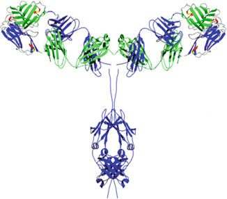
그림 10.1 DVD-Ig™ 설계. DVD-Ig™ 분자는 두 모체 mAb에서 생성되며, 모체 항체의 두 가변 도메인이 각 중쇄와 경쇄에서 tandem으로 연결된다. DVD-Ig™ 분자는 두 모체 항체의 활동을 모두 유지한다.
잘 설계된 DVD-Ig™ 구조체는 생체 내에서 고도로 안정하며, 좋은 IgG 유사 물리화학적·약동학적 성질을 보이고, 대규모 제조에 적합하다. 어떤 bi- 또는 multispecific 항체 포맷에나 핵심 과제는 일반 적용성, 제조 가능성, 약물 유사 물리화학 및 약동학적 성질이다. 우리는 지금까지 수백 개의 DVD-Ig™ 분자를 만들었고, DVD-Ig™ 포맷의 이런 특징을 이해하기 위해 20개 이상의 분자에 철저한 특성화를 수행했다. bsAb 분야의 다양한 과제와 관련하여 DVD-Ig™ 포맷의 성질을 기술한다. 예로서 인터루킨-12(IL-12)와 인터루킨-18(IL-18)을 겨냥하는 DVD-Ig™ 분자(Wu et al. 2007)의 이전 출판 연구 상세와, 100개 이상의 DVD-Ig™ 분자 경험(Ghayur et al. 2009a,b; 2010; Wu et al. 2009b)의 간략한 요약을 제공한다.
10.4 DVD-Ig™ 포맷의 일반 적용성
10.4.1 모체 mAb의 원천
우리는 다양한 원천에서 유래한 항체와 마우스 및 사람 Fc의 가변 도메인으로 DVD-Ig™ 분자 구축을 검토했다(표 10.1)(Ghayur et al. 2009a,b; 2010; Wu et al. 2009b). DVD-Ig™ 분자는 각 중쇄와 경쇄에 tandem으로 연결된 두 가변 도메인을 배치하여 생성되었는데, 각 가변 도메인은 바깥쪽(VD1)과 안쪽(VD2) 위치 양쪽에 놓였다. fully human mAb는 파지/효모 디스플레이 라이브러리 또는 사람 Ig 유전자를 지닌 형질전환 마우스에서 유래할 수 있다. 이 경우 두 가변 도메인 사이 링커는 바깥쪽 위치의 가변 도메인 VH1 또는 VL1에 자연적으로 연결되는 일정 도메인 CH1(중쇄) 또는 CL(경쇄)의 N말단에서 유래한 짧은 펩타이드였다.
177 표 10.1 DVD-Ig™ 포맷에서 시험된 가변 도메인 쌍 조합의 항체 원천
| VD1 | VD2 |
|---|---|
| Mouse | Mouse |
| Rat | Mouse |
| Mouse | Human |
| Humanized | Humanized |
| Humanized | Fully human (κ light chain) |
| Humanized | Fully human (κ light chain) |
| Humanized | Fully human (λ light chain) |
| Fully human | Fully human (λ light chain) |
| Fully human | Fully human (κ light chain) |
표 10.2 다양한 표적 쌍 조합을 지닌 DVD-Ig™ 구조체 예
| 가변 도메인 쌍 VD1 | VD2 | 선별 예 |
|---|---|---|
| Soluble | Soluble | IL-12/IL-18, IL-1α/IL-1β, TNFα/PGE₂ |
| Membrane | Membrane | CD3/CD19, CD3/EGFR |
| Membrane | Soluble | DLL4/VEGF |
| Soluble | Membrane | VEGF/DLL4 |
| 작은 크기 | 큰 크기 | IL-18/IL-12 |
| 큰 크기 | 작은 크기 | IL-12/IL-18 |
DLL4 delta-like protein 4; EGFR epidermal growth factor receptor; IL interleukin; PGE₂ prostaglandin E2; TNF tumor necrosis factor; VEGF vascular endothelial growth factor
서로 다른 IgG 경쇄 조합(즉, κ/λ 또는 λ/κ 하이브리드 경쇄)을 지닌 다른 DVD-Ig™ 분자들도 생성되었다(Wu et al. 2007). 이 경우 선택된 링커는 바깥쪽 위치 가변 도메인의 isotype과 일치했고, 일정 영역은 안쪽 위치 가변 도메인의 isotype과 일치했다(즉, Vκ-TVAAP[Ck의 처음 몇 아미노산 잔기 유래]-Vλ-Cλ 및 Vλ-QPKAAP[Cl의 처음 몇 아미노산 잔기 유래]-Vκ-Cκ)(Wu et al. 2007). 일반적으로 DVD-Ig™ 단백질은 포유류 세포(COS와 사람 배아 신장 293[HEK293], 아래에서 기술)에서 잘 발현되었다.
10.4.2 표적 분자의 성질
우리는 DVD-Ig™ 포맷의 다양한 표적 쌍 조합(예: soluble/soluble 표적, 세포 표면/세포 표면 표적, soluble/세포 표면 표적)(표 10.2)에 대한 적용성도 검토했다. 게다가 서로 다른 크기의 표적 분자를 겨냥하는 DVD-Ig™ 구조체들도 생성되었다(표 10.2). 일반적으로 DVD-Ig™ 포맷은 두 표적 결합 도메인이 각자의 표적에 결합할 수 있게 한다.(기능적 성질에 대한 추가 정보는…)
178 E. Tarcsa et al.
10.5 DVD-Ig™ 분자의 발현과 정제
낮은 발현, 불충분한 제조 가능성(확장 가능한 발현), 단순 정제 단계 후의 단백질 균질성 부족은 일부 bsAb 포맷의 주요 장애물이다. 우리는 지금까지 수백 개의 DVD-Ig™ 구조체를 COS 세포 및/또는 HEK293 세포에서 일시적으로 발현했고, 20개 이상의 DVD-Ig™ 구조체의 제조 실현 가능성을 중국 햄스터 난소(CHO) 세포에서 조사했다. DVD-Ig™의 포유류 세포 발현에 대한 현재 이해를 간략히 후술한다.
10.5.1 DVD-Ig™ 분자의 발현, 정제, 제조 실현 가능성
수백 개 DVD-Ig™ 구조체의 중쇄와 경쇄가 포유류 발현 벡터로 서브클로닝되어 COS 또는 HEK293 세포에 cotransfected되었다. 일반적으로 잘 설계된 DVD-Ig™ 분자의 발현 수준은 모체 mAb에 필적한다. 예컨대 IL-12와 IL-18을 겨냥하는 DVD-Ig™ 분자의 transfected COS와 HEK293 세포 발현 프로파일은 모체 IL-18 mAb와 비슷했다(Wu et al. 2007). DVD-Ig™ 구조의 특정 측면이 발현 수준을 결정하는 데 중요한 듯하다. 여기에는 (a) 가변 도메인 조합(즉, 서열과 canonical structure); (b) 가변 도메인 방향(즉, 어느 도메인이 안쪽 또는 바깥쪽 위치에 놓이는가); (c) VH1–VH2와 VL1–VL2를 잇는 링커 길이가 포함된다. 이런 고려에 따라 최적화되지 않은 DVD-Ig™ 분자는 크게 세 군으로 분류될 수 있다: (1) 가변 도메인 조합/방향에 관계없이 잘 발현되는 것; (2) 한 특정 가변 도메인 방향에서만 잘 발현되는 것; (3) 가변 도메인 조합/방향에 관계없이 낮게 발현되는 것. HEK293 세포에서의 일시적 발현은 개별 DVD-Ig™ 분자의 포유류 세포 발현 수준의 좋은 초기 지표지만, 항상 제조용 CHO 세포주의 발현 수준으로 이어지는 것은 아니므로, 우리는 25개 DVD-Ig™ 구조체를 선택해 초기
DVD-Ig™ 분자는 온전한 Fc 도메인을 지니므로 protein A 크로마토그래피로 균질까지 쉽게 정제할 수 있으며, HEK293과 CHO 세포 상등액으로부터 높은 정제 후 수득(70–90%)을 보인다. 대부분의 DVD-Ig™ 분자는 정제 중 mAb처럼 행동하지만 일부는 약간 더 큰 응집 경향을 보인다. 좋은 실험실 관행(good laboratory practice) 등급 물질 생성을 위한 표준 3단계 정제 공정(protein A, Q column, ceramic hydroxyapatite chromatography) 후 DVD-Ig™ 분자의 회수는 대체로 약 40~70%이다. IL-12/IL-18 DVD-Ig™ 분자(Wu et al. 2007)와 IL-1α/IL-1β DVD-Ig™ 분자(Wu et al. 2009a)에 관한 상세는 이미 보고되었다.
10.6 DVD-Ig™ 분자의 물리화학적 성질
좋은 약물 유사 물리화학적 성질은 약물 물질과 약물 제품의 제형, 저장과 운송, 전달 장치의 적용성, 궁극적으로 모든 바이오 치료제의 임상 사용에 필수적이다. 치료 mAb의 물리화학 및 약물 유사 성질 평가를 위해 광범위한 방법론이 적용되어 왔다(표 10.3). 지금까지 우리는 30개 이상의 DVD-Ig™ 분자를 일련의 접근법으로 광범위하게 특성화하여, DVD-Ig™ 단백질 동일성, 순도(단량체, 응집체, 절편 수준 및 전하 이질성), 안정성(고유 unfolding 온도, 넓은 pH·온도·단백질 농도·얼음-물 및 공기-물 계면에서의 응집/절편화 경향), 용해도를 결정했다. 이 조사는 원하는 물리화학적·약물 유사 성질을 지닌 DVD-Ig™ 분자가 생성될 수 있음을 입증했다. IL-12/IL-18 DVD-Ig™ 분자는 안정한 치료 mAb와 비슷한 물리화학적 성질을 지닌 DVD-Ig™ 분자의 예다(표 10.3)(Wu et al. 2007). IL-12/IL-18 DVD-Ig™ 분자는 분자량, 1차 서열, 이황화결합, 당화 프로파일 등에서 적절한 프로파일을 보였으며
180 E. Tarcsa et al.
표 10.3 IL-12/IL-18 DVD-Ig™ 분자의 단백질 분석과 물리화학적 특성화
| 파라미터 | 방법론 | 결과 |
|---|---|---|
| 분자량 | MS | 이론 분자량과 일치 |
| 1차 서열 | Sequencing-MS | 전부 일치 |
| 이황화결합 | Peptide mapping | 20개 이황화결합 전부 일치 |
| 당화 프로파일 | — | NGA2F와 NGA1F glycans가 주요 형태로 관찰됨(사람 항체와 유사) |
| 전하 이질성 | Cation exchange(Dionex ProPac® WCX-10) | mAb와 유사한 균질성 프로파일 |
| 순도 | SDS-PAGE | 환원(~64 kDa 중쇄 및 ~36 kDa 경쇄 밴드) 및 비환원(~200 kDa) 겔 모두에서 균질성 |
| SEC | Protein A 정제 후 >99% 단일 피크 단량체 | |
| 용해도 | PEG 침전 assay | 예측된 좋은 용해도(pH 6, 10-mM phosphate, 10-mM citrate buffer에서 최소 100 mg/mL) |
| 안정성 | Intrinsic(T_m) | DSC |
| Freeze/thaw | SEC | pH 6, 10-mM phosphate, 10-mM citrate buffer에서 2 mg/mL DVD-Ig™ 단백질을 최대 4회 동결(-80 °C)·해동(실온)한 결과의 monomer, aggregate, fragmentation이 mAb와 유사 |
| pH | SEC와 IEC | 10-mM phosphate, 10-mM citrate buffer, pH 4, 6, 또는 8에서 2 mg/mL의 monomer, aggregate, fragmentation이 mAb와 유사 |
| Storage | SEC와 IEC | 10-mM phosphate, 10-mM citrate buffer, 5 °C, 40 °C, 50 °C에서 최대 3주간 2 mg/mL의 monomer, aggregate, fragmentation이 mAb와 유사 |
DSC differential scanning calorimetry; IEC ion exchange chromatography; MS mass spectrometry; PEG polyethylene glycol; SDS-PAGE sodium dodecyl sulfate polyacrylamide gel electrophoresis; SEC size-exclusion chromatography; T_m thermal unfolding
두 표적 모두에 대한 bioassays. 일부 DVD-Ig™ 분자는 급성 생체 내 약력학 모델과 관련 질병 모델에서 추가 시험되었다. 일반적으로 DVD-Ig™ 분자에서 두 표적 결합 도메인(또는 가변 도메인)은 기능적이다. 어떤 경우에는 안쪽 가변 도메인이 모체 mAb 대비 일부 표적 결합력을 잃을 수 있다. 그러나 항체 가변 도메인의 적절한 선택과 가변 도메인 방향 및 링커 길이 조정을 통해, 두 모체 항체의
표 10.4 최적화된 DVD-Ig™ 분자의 친화력과 효능
| DVD-Ig™ 분자 | Linker | 친화력, K_D(pM): DVD-Ig™ 분자/모체 mAb | Potency, IC₅₀(pM): DVD-Ig™ 분자/모체 mAb |
|---|---|---|---|
| hIL-12/hIL-18 DVD-Ig™ molecule1ᵃ | VH: short / VL: short | hIL-12: 130/120, hIL-18: 160/140 | hIL-12: 220/420, hIL-18: 120/220 |
| hIL-12/hIL-18 DVD-Ig™ molecule2ᵇ | VH: short / VL: short | hIL-12: 38/65, hIL-18: 622/137 | hIL-12: 7/5, hIL-18: 180/200 |
| hIL-1α/hIL-1β DVD-Ig™ moleculeᶜ | VH: long / VL: long | hIL-1α: 560/600, hIL-1β: 130/260 | hIL-1α: 350/330, hIL-1β: 500/600 |
K_D 평형해리상수; hIL 인간 인터루킨; IC₅₀ 반수최대억제농도 ᵃ 인간화 항-IL-12 항체 및 완전 인간 항-IL-18 항체 ᵇ 완전 인간 항-IL-12 항체 및 완전 인간 항-IL-18 항체 ᶜ DVD4b-Ig construct는 18F4.2C8(anti-IL-1α)과 1Β12.4H4(anti-IL-1β)에서 유래
항원결합 특이성, 친화력, 생물학적 활동을 보존하는 DVD-Ig™ 분자를 생성할 수 있다.
10.7.1 DVD-Ig™ 분자의 시험관 내 특성화
이전 출판물에서 보고된 세 최적화 DVD-Ig™ 분자의 결합 친화력과 시험관 내 효능은 표 10.4에 요약되어 있다(Wu et al. 2007, 2009a). 새로 구축된 수백 DVD-Ig™ 분자의 친화력과 시험관 내 효능 목록은 최근 미국 특허 출판물에서 찾을 수 있다(Ghayur et al. 2009a,b; 2010; Wu et al. 2009a).
10.7.2 DVD-Ig™ 분자의 생체 내 특성화
우리는 여러 DVD-Ig™ 단백질의 생체 내 치료 효능을 전임상 동물 모델에서 평가했다. 이전에 보고된 바와 같이(Wu et al. 2007), 두 IL-12/IL-18 DVD-Ig™ 구조체는 anti-IL-12 및 anti-IL-18 mAb 조합만큼 강력했고, 사람 말초혈액 단핵구가 이식된 severe combined immunodeficient 마우스 모델에서 Staphylococcus aureus interferon-g dried cell 유발 생성을 거의 완전히 소멸시켰다. 게다가 마우스 IL-1α/IL-1β DVD-Ig™ 분자는 콜라겐 유발 관절염 마우스에서 질병 진행을 강력히 예방했다(Wu et al. 2007). 여러 분자가 관련 전임상 동물 모델에서 시험되었고 각각 모체 mAb 조합과 유사한 효능을 보였다. 더욱이 효능/potency 프로파일은 분자들의 시험관 내 항원결합 친화력과 효능과 일치했다(데이터 미공개).
10.8 DVD-Ig™ 분자의 약동학적 성질
DVD-Ig™ 분자의 약동학적 성질을 이해하기 위해 20개 이상의 DVD-Ig™ 분자를 쥐에서 평가했다. 정맥 투여 후 DVD-Ig™ 단백질은 mAb와 유사한 이상성 제거 프로파일을 보였다. Clearance와 분포 용적은 낮았으며, 반감기는 3~15일 범위였다. 검토된 대부분 DVD-Ig™ 분자의 약동학적 파라미터는 정상 인간 mAb에서 관찰된 범위 내에 있었다(비공개 데이터). 예컨대 이전에 보고된 바와 같이(Wu et al. 2007), hIL-12/hIL-18 DVD-Ig™ 분자는 쥐에서 4 mg/kg의 정맥 또는 피하 투여 시 낮은 clearance(0.26 mL/h/kg), 평균 말기 반감기 11일, 85~92%의 좋은 생체이용률을 보였다.
최근 우리는 hIL-12/hIL-18 DVD-Ig™ 분자의 약동학적 성질을 수컷과 암컷 cynomolgus monkey에서 5 mg/kg의 정맥 또는 피하 투여로 평가했다. DVD-Ig™ 단백질의 혈청 농도-시간 프로파일은 hIL-12 또는 hIL-18 capture 기반 효소결합면역흡착분석법 중 어느 쪽으로 결정했든 매우 유사했는데(데이터 미공개), 이는 DVD-Ig™ 분자가 온전했고 두 항원에 결합할 수 있음을 나타낸다.
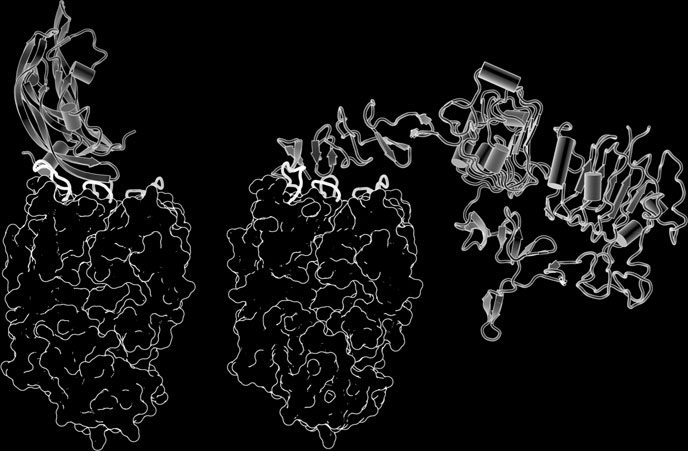
그림 10.2에 나타난 약동학 프로파일과 표 10.5에 요약된 약동학 파라미터는 cynomolgus monkeys에서 인간 mAb에서 관찰된 것과 유사하다. 전반적으로 쥐와 이제 원숭이에서 관찰된 DVD-Ig™ 단백질의 약동학 파라미터는 원숭이 독성학 연구와 잠재적 임상 연구를 지지하기에 충분하다.
그림 10.2 cynomolgus monkeys에서 hIL-12/hIL-18 DVD-Ig™ 단백질의 약동학 프로파일. 5 mg/kg 정맥 또는 피하 투여 후 hIL-12/hIL-18 DVD-Ig™ 단백질의 혈청 농도(표준편차)-시간 프로파일(cynomolgus monkeys n=4; 리
10 이중가변도메인면역글로불린(DVD-Ig™) 기술 183
표 10.5 cynomolgus monkeys에서 hIL-12/hIL-18 DVD-Ig™ 단백질의 약동학 파라미터
투여 경로 | 정맥내 | 피하 파라미터 | T½, d | V_ss, mL/kg | CL, mL/h/kg | T½, d | T_max, d | C_max, mg/mL | F, % IL-12 capture ELISA (n=4ᵃ) | 6.7 | 47.2 | 0.25 | 6.9 | 1.9 | 82.0 | 85.1
CL clearance; C_max 관찰된 최대 혈장 농도; F 생체이용률; T½ 반감기; T_max C_max에 도달하는 시간; V_ss steady-state 분포 용적 ᵃ 연구 시작 시 4마리 원숭이; anti-drug antibody 반응이 의심되는(t≥21일) 시점의 두 동물 데이터는 제외
10.9 논의
bsAbs와 bsAb 절편은 단일특이 mAb로는 불가능한 치료 기회와 진보를 제공한다. bsAb에 대해 기술된 독특한 응용으로는 (a) 임상적으로 검증된 mAb의 효능 강화; (b) 암을 제거하기 위한 면역 효과세포 동원; (c) 두 mAb 조합으로는 달성할 수 없는 기능 제공(예: 아비디티를 통한 친화력/특이성 강화); (iv) 치료제(소분자, 성장인자, 줄기세포 등)의 부위 특이적 표적화; 그리고 영상과 진단의 발전 등이 있다(Ford et al. 2001; Goldenberg et al. 2006; Morrison 2007; Goldenberg et al. 2008; Chan and Carter 2010).
지난 20년간 bsAb와 그 절편 개발에 막대한 노력이 투입되었다. 여러 유망 포맷이 개발되었고 일부는 임상 개발로 옮겨지고 있다. 최근 catumaxomab이 유럽에서 악성 복수 치료용으로 승인되고(Sebastian et al. 2009), bispecific T-cell engager(BiTE) 포맷의 흥미진진한 1/2상 임상시험 결과(Brischwein et al. 2007; Baeuerle et al. 2009)와 함께 bsAb 분야는 새로운 부흥을 목격하고 있다.
일반적으로 bsAb 포맷은 다양한 길이의 링커로 두 표적 결합 도메인을 결합해야 하는 구조적 요구 때문에 복잡하다. 이상적인 bispecific 플랫폼은 (a) 제조 가능성; (b) 약물 유사 성질과 물리적 안정
184 E. Tarcsa et al.
성에 관련된 문제뿐 아니라 표적 생물학과 특정 질병에서 특정 표적의 역할 모두에 대한 이해가 필요하다. 질병 생물학에 대한 향상된 이해는 DVD-Ig™ 단백질을 포함한 multispecific 바이오의약품에 통합할 바람직한 쌍의 선택을 가능하게 할 것이다.
감사의 글
Chengbin Wu, Rong Rong Zhu, Jerry Carson의 중요한 기여에 감사드린다. 편집 지원은 Arbor Communications, Inc.(Ann Arbor, MI, USA)의 Robin Stromberg가 제공했으며 Abbott Laboratories가 후원했다.
References
Arndt M, Krauss J (2003) Bispecific diabodies for cancer therapy. Methods Mol Biol 207:305–321 Baeuerle PA, Kufer P, Bargou R (2009) BiTE: teaching antibodies to engage T-cells for cancer therapy. Curr Opin Mol Ther 11:22–30 Brennan M, Davison PF, Paulus H (1985) Preparation of bispecific antibodies by chemical recombination of monoclonal immunoglobulin G1 fragments. Science 229:81–83 Brischwein K, Parr L, Pflanz S, Volkland J, Lumsden J, Klinger M, Locher M, Hammond SA, Kiener P, Kufer P, Schlereth B, Baeuerle PA (2007) Strictly target cell-dependent activation of T cells by bispecific single-chain antibody constructs of the BiTE class. J Immunother 30:798–807 Chan AC, Carter PJ (2010) Therapeutic antibodies for autoimmunity and inflammation. Nat Rev Immunol 10:301–316 Ford CH, Osborne PA, Rego BG, Mathew A (2001) Bispecific antibody targeting of doxorubicin to carcinoembryonic antigen-expressing colon cancer cell lines in vitro and in vivo. Int J Cancer 92:851–855 Ghayur T, Hahn A, Mueller B (2009a) Inventors; Abbott Laboratories, assignee. Dual variable domain immunoglobulin and uses thereof. US patent application 20090304693, 3 June 2009 Ghayur T, Isakson PC, Olson LM, WuC, HuguninM, KamathRV, CuffCA, AllenHJ(2009b) Inventors; Abbott Laboratories, assignee. Dual variable domain immunoglobulin and uses thereof. US patent application 20090311253, 3 June 2009 GhayurT, ReillyEB, BellRL, WangJ, KingsburyGA, Morgan-LappeSE, PhillipsA, Norvell SM, LiY, LiuJ, YingH(2010)inventors;AbbottLaboratories, assignee. Dual variable domain immunoglobulin and uses thereof. US patent app
Korn T, Nettelbeck DM, Völkel T, Müller R, Kontermann RE (2004) Recombinant bispecific antibodies for the targeting of adenoviruses to CEA-expressing tumour cells: a comparative analysis of bacterially expressed single-chain diabody and tandem scFv. J Gene Med 6:642–651 Kriangkum J, Xu B, Nagata LP, Fulton RE, Suresh MR (2001) Bispecific and bifunctional single chain recombinant antibodies. Biomol Eng 18:31–40 Lu D, Zhang H, Ludwig D, Persaud A, Jimenez X, Burtrum D, Balderes P, Liu M, Bohlen P, Witte L, Zhu Z (2004) Simultaneous blockade of both the epidermal growth factor receptor and the insulin-like growth factor receptor signaling pathways in cancer cells with a fully human recombinant bispecific antibody. J Biol Chem 279:2856–2865 Mack M, Riethmüller G, Kufer P (1995) A small bispecific antibody construct expressed as a functional single-chain molecule with high tumor cell cytotoxicity. Proc Natl Acad Sci USA 92:7021–7025 Miller K, Meng G, Liu J, Hurst A, Hsei V, Wong WL, Ekert R, Lawrence D, Sherwood S, DeForge L, Gaudreault J, Keller G, Sliwkowski M, Ashkenazi A, Presta L (2003) Design, construction, and in vitro analyses of multivalent antibodies. J Immunol 170:4854–4861 Milstein C, Cuello AC (1983) Hybrid hybridomas and their use in immunohistochemistry. Nature 305:537–540 Morrison SL (2007) Two heads are better than one. Nat Biotechnol 25:1233–1234 Plückthun A, Pack P (1997) New protein engineering approaches to multivalent and bispecific antibody fragments. Immunotechnology 3:83–105 Presta LG (2008) Molecular engineering and design of therapeutic antibodies. Curr Opin Immunol 20:460–470 Reichert JM (2008) Monoclonal antibodies as innovative therapeutics. Curr Pharm Biotechnol 9:423–430 Reichert JM (2011) Antibody-based therapeutics to watch in 2011. MAbs 3(1):76–99 Ridgway JB, Presta LG, CarterP(1996)’Knobs-into-holes’engineeringofantibodyCH3domains for heavy chain heterodimerization. Protein Eng 9:617–621
제11장 Two-in-One 항체
패트릭 쾨니히(Patrick Koenig), 저메인 푸(Germaine Fuh)
11.1 배경
자연 단클론 항체(IgG)는 두 개의 동등한 항원결합 절편 또는 Fab 팔(2가성)을 지니며 통상 단일 표적 항원을 인식한다(단일특이성). 서로 다른 결합 특이성을 가진 두 항원결합 도메인을 하나의 분자로 조립하여 공학화된 항체는 이중특이성(bi-specificity)을 만든다. 이중특이 치료 항체는 단일특이 항체 약물보다 몇 가지 장점을 제공하는 것으로 여겨진다(Beck et al. 2010; Chames and Baty 2009a; Cochran 2010). 이런 장점에는 한 분자가 아닌 두 분자를 표적하므로 더 큰 효능, 그리고 두 표적 항원이 공간적으로 가깝게 모이는 새로운 작용 방식이 포함된다(Johnson et al. 2010; Lindhofer et al. 1995; Mack et al. 1995). 이중특이 항체를 생성하는 표준 접근법은 각각 단일특이 고친화력 결합 부위를 담은 둘 이상의 항원결합 도메인을 연결하는 것이다. 단일특이 결합 부위란 한 뚜렷한 에피토프에는 고친화력을 보이지만, 다른 단백질에 대한 친화력은 검출 한계 이하 및/또는 생리학적으로 무의미한 수준인 것이다. 항원결합 도메인을 다양한 구성으로 조립하는 많은 이중특이 항체 포맷이 생성되어 왔고, 그중 몇몇은 이 책의 다른 장들에서 상세히 논의된다. 그러나 이 모든 접근법의 한 가지 단점은 표준 IgG 포맷의 수정 또는 일탈을 요구한다는 것이고, 이는 종종 이런 항체의 생산 어려움 및/또는 원치 않는 약동학적 성질로 이어진다(Chames and Baty 2009b). 이 장벽은 최초의 이중특이 항체 기술(Staerz et al. 1985)과 인간용 이중특이 항체의 첫 규제 승인(Seimetz et al. 2010) 사이의 긴 시간 간격에 기여했다.
이런 한계를 극복하기 위해
P. 쾨니히(P. Koenig), G. 푸(G. Fuh, *) — 미국 캘리포니아주 사우스샌프란시스코 제넨텍(Genentech, Inc.) 항체공학과
188 P. Koenig and G. Fuh
각 Fab 팔 안에서 서로 다른 두 에피토프에 특정 고친화력 결합을 보이는—이른바 dual specificity—항체를 생성하는 새로운 접근법이 개발되었다(Bostrom et al. 2009). 이런 항체를 two-in-one 항체라 부른다. 이중특이 항체와 달리 two-in-one(dual-specific) 항체는 자연 IgG 항체 포맷이며, 두 항원결합 팔은 아미노산 서열이 동일하다. 하지만 전형적인 단일특이 항체와 달리 각 Fab 팔은 두 항원을 인식할 수 있다. Dual specificity는 항체가 단일 Fab 또는 IgG 분자로서 서로 다른 두 항원과 고친화력으로 상호작용할 수 있게 해주며, 증가하는 이중 표적 치료제 수요를 충족하는 좋은 선택이 될 수 있다.
two-in-one 항체의 dual specificity는 두 뚜렷한 항원으로 제한된 다중특이성(multispecificity)으로 볼 수 있다. 다중특이성은 화학적·구조적으로 보존된 에피토프를 다른 단백질에서 인식함으로써 생길 수 있다. 예는 종 교차반응 항체이다. 이런 유형의 다중특이성은 본질적으로 서로 다른 단백질 위 존재하는 한 에피토프에 대한 단일특이성이다(Fuh et al. 2006; Kramer et al. 1997; Lee et al. 2006; Mohan et al. 2009; Trinh et al. 1997). 다중특이성 개념에 더 관련 있는 것은 단일 결합 부위가 화학적·구조적으로 구별되는 다수의 에피토프를 인식할 수 있는 경우이다. 잘 특성화된 다중특이 결합 부위의 예로 IgG의 complement binding fragment(Fc)가 있다(DeLano et al. 2000). 이 부위는 protein A, protein G, rheumatoid factor, 그리고 FcRn(neonatal Fc receptor)과 상호작용한다고 보고되었다. 또 하나의 흥미로운 예는 사람 성장호르몬 수용체의 한 영역이 상동 리간드의 완전히 다른 두 영역에 결합할 수 있어서, 신호 캐스케이드 활성화에 필요한 두 수용체 대 하나 호르몬 복합체를 조립하는 것이다(de Vos et al. 1992). 대조적으로, 면역 반응에서 다중특이 항원 결합을 보이는 항체의 역할은 인식
항원과 마주칠 때까지 평가되어 왔다(James et al. 2003). 이렇게 서로 다른 입체구조들은 구조적으로 무관한 두 항원—hapten 2,4-dinitrophenyl과 repertoire 선별 단백질—을 결합하는 데 선택적으로 사용된다. 그러나 과도한 구조적 가소성(plasticity)이 다중특이성의 엄격한 전제는 아니다. paratope 곁사슬 잔기의 재배열로 주어진 paratope 입체구조가 여러 무관한 항원에 결합할 수 있음이 germ line 항체에서 입증되었다(Sethi et al. 2006). 이런 구조 연구들은 항체가 잘 정의된 dual-specific 결합 부위를 지니고, 인식 가능한 구조적·화학적 상동성이 없는 서로 다른 두 항원에 강하게 결합할 수 있음을 시사한다. 따라서 우리는 항체의 항원결합 부위가 종종 비대칭이라는 관찰에 기반한 전략을 개발했다. 많은 항체는 한편으로 주로 중쇄를 사용해 항원과 상호작용하는데, 이는 아마도 중쇄의 더 큰 조합적 자연 다양성 때문이다(Janeway 2001). 반면 경쇄 locus가 항원결합 특이성에 기여하는 사례도 있다(Nemazee 2006; Senn et al. 2003). 따라서 dual-specific 항체를 만들기 위한 선택된 접근법은 먼저 중쇄 CDR을 주로 사용해 첫 번째 항원에 결합하는 paratope를 지닌 항체를 얻는 것이었다. 다음 단계는 제한된 돌연변이와 repertoire 선별로 다른 항원에도 결합하는 클론을 위해 항체를 진화시키는 것이다. 두 paratope는 결합 기능에서 어느 정도 겹칠 수 있다. 그러나 단백질-단백질 인터페이스에 관한 연구는 돌연변이를 허용하는 어느 정도의 견고성을 보임을 시사했다(Pal et al. 2006). 따라서 두 항원 중 어느 하나의 결합과 양립 가능한 잔기로 구성된 paratope를 선별하는 것이 가능할 것이다.
11.2 Herceptin에서 유래한 Her2/VEGF dual-specific 항체
개념증명 연구가 사람 상피성장인자 수용체 2(Her2)에 대한 항체인 Herceptin(trastuzumab)에 기반한 라이브러리에서 dual-specific 항체를 선별하는 것으로 시작되었다. Herceptin이 선택된 이유는 이 항체가 He
190 P. Koenig and G. Fuh
28, 29, 30, 31, 32와 CDR-L2 위치 50, 51, 53, 그리고 CDR-L3 91, 92, 93, 94이다. 대부분의 잔기는 자연 아미노산 다양성에 따라 무작위화되었지만, L3 위치 91과 94–96은 Herceptin 서열을 유지하도록 편향되었다. 왜냐하면 이것들이 Her2 결합에 중요하기 때문이다. L1 위치 30, 31과 L3 위치 92, 93은 모든 스무 아미노산을 허용하도록 무작위화되었다. 길이 변이(위치 30과 31 사이에 0~5아미노산 삽입, 위치 93과 94 사이에 0~2아미노산 삽입)는 자연 CDR 길이 변이를 모방하기 위해 도입되었다. 결과 파지 라이브러리 스크리닝은 기능적으로 디스플레이된 클론의 25%가 Her2 결합 능력을 유지했음을 보였다. 라이브러리는 Her2와 구조가 명확히 다른 세 단백질(VEGF, death receptor 5(DR5), 사람 IgG의 Fc)에 대해 panning되었다. 세 이차 항원 각각에 대해 4회 panning 후, 무작위로 골라낸 클론들을 해당 이차 항원과 Her2-ECD(extracellular domain)에 대한 결합 능력으로 스크리닝했다. 우리는 대부분의 클론이 이차 항원에 결합함을 관찰했는데, 이것은 라이브러리가 기능적으로 생산적이며 새 항원에 대해 높은 적중률의 결합 클론을 산출함을 나타낸다. 약 100클론에서 29개의 dual-specific Her2/VEGF, 2개의 dual-specific Her2/DR5, 그리고 1개의 Her2/Fc 특이 결합체가 식별되었다. dual-specific 클론들은 추가 Her2 panning에서 농축되었다. 대부분의 클론은 Her2에 대한 높은 결합 친화력(낮은 나노몰)을 유지했고 파지 ELISA에서 이차 항원에 대한 다소 낮은 친화력(높은 나노몰~낮은 마이크로몰 범위)을 보였다. dual-specific 결합체 bH1은 두 항원에 대한 가장 높은 친화력을 보였다. surface plasmon resonance로 Her2 결합 K_D 26 nM과 VEGF 결합 K_D 300 nM이 측정되었다. bH1은 이후 친화력 성숙(affinity maturation)을 위해 선별되어 dual-specific 고친화력 bH1-44(Her2/VEGF Fab K_D=0.2/3 nM)로 이어졌다.
11.3 HER2/VEGF 이중 상호작용의 분자적 세부사항
bH1의 확장된
VEGF | Her2 ECD bH1 | bH1
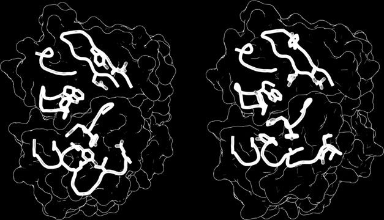
그림 11.1 VEGF 또는 Her2 ECD에 결합한 bH1의 개요. 그림은 dual specific bH1 Fab(Bostrom et al. 2009)(PDB 코드: 3BDY, 3BE1)를 CDRs는 검정 카툰으로, 나머지는 표면 표현으로 보여준다. 두 복합체는 같은 시점에서 보인다. 두 항원 VEGF와 Her2는 회색 카툰 표현이다. 서로 다른 두 항원-항체 복합체에서 L1 loop conformation의 차이에 유의하라. 그림은 Pymol(http://www.pymol.org)로 생성됨.
bH1은 모든 여섯 CDR을 포함한다. bH1과 Herceptin의 CDRH1-H3 잔기는 동일한데, 이 루프들은 bH1을 생성하는 데 사용된 라이브러리에서 변하지 않았기 때문이다
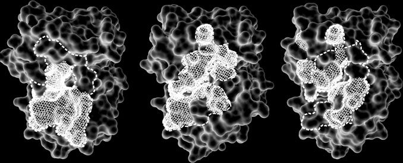
(그림 11.2). CDR 루프 L1과 L2의 아미노산은 두 항체에서 다르지만, 여러 잔기는 비슷하게 Her2에 대한 구조적 paratope의 일부이다. 게다가 Herceptin과 bH1의 CDR 루프 H1, H2, H3, L2, L3는 같은 conformation을 취한다. CDR-L1 루프 conformation은 두 bH1 복합체 구조에서 명백히 다르다. 그러나 이와 일관되게 CDR-L1은 Herceptin에 비해 bH1에서 4아미노산 삽입을 지닌다. 주로 알라닌 돌연변이 시 항원결합이 현저히 감소하는 잔기, 즉 hotspot 잔기로 구성된 functional paratope의 직접 비교에서, Her2와의 상호작용을 위한 paratope 잔기 사용에 어떤 수정이 있음이 분명하다(그림 11.3). Herceptin의 Her2 결합에 중요한 hotspot 잔기에는 중쇄 잔기 Arg50, Trp95, Tyr100a가 있고 경쇄 잔기 His91도 포함된다(Kelley and O’Connell 1993). 반면 bH1에서 기능적으로 중요한 잔기는 오직 중쇄에만 위치한다: Tyr33, Tyr56, Arg50, Arg58, Trp95, Gly99, Phe100, Tyr100a. 따라서 bH1과 Herceptin의 Her2 결합에 대한 구조적 paratope는 매우 유사하고 중쇄와 경쇄 잔기를 모두 포함하지만, 기능적으로 중요한 잔기의 분포는 두 항체 사이에 다르다. Herceptin의 functional epitope는 중쇄와 경쇄 잔기를 모두 포함하는 반면 bH1의 functional epitope는 주로 중쇄에 위치한다.
192 P. Koenig and G. Fuh
Y56 R58 H2 H2 R50 H1 H1 H3 H3 W95 Y100a L3 L3 H91 Y92 L2 L2 L1 Y32 L1 Q27 I30c I29 VEGF bound bH1 | Her2 ECD bound bH1
그림 11.2 bH1:VEGF와 bH1:Her2 ECD 복합체에서 CDR 루프의 서로 다른 conformations. 그림은 VEGF-bound 상태(왼쪽)와 Her2-bound 상태(오른쪽)의 bH1 Fab 항원결합 영역을 보여준다(Bostrom et al. 2009)(PDB 코드: 3BDY, 3BE1). CDR은 검정 카툰 표현, 나머지 Fab은 표면 표현. 일부 선정 잔기는 stick으로 표시. CDR-L1이 두 복합체에서 다른 conformation을 취하는 동안 다른 CDR 루프의 입체구조 변화는 곁사슬로 제한된다. 그림은 Pymol(http://www.pymol.org)로 생성.
bH1이 VEGF와 이루는 복합체 구조(2.6 Å 해상도)는 bH1이 VEGF 수용체(Wiesmann et al. 1997)와 많은 VEGF 중화 항체(예: Avastin Fab, G6 또는 B20-4 Fab)(Fuh et al. 2006)가 인식하는 것과 유사한 VEGF 위 에피토프에 결합함을 밝힌다(그림 11.1). bH1의 VEGF 차단 활동은 VEGFR1과 VEGFR2 Fc 융합 단백질을 사용한 ELISA 분석에서 확인되었다. bH1의 Her2에 대한 structural paratope처럼 VEGF에 대한 structural paratope도 여섯 CDR 루프를 모두 포함한다. 그러나 bH1-Her2 결합에서 중쇄와 경쇄가 structural paratope 면적에 거의 동등하게 기여하는 것(HC: 47%, LC: 53%)과 달리, VEGF 결합 paratope의 매장된 표면 면적의 삼분의 이는 경쇄 잔기로 구성된다(HC: 32%, LC: 68%). 경쇄의 기여는 alanine scanning mutagenesis로 결정된 functional paratope에서 더욱 뚜렷하다. 13개 hotspot 잔기 중 3개만 중쇄에 위치하고 세 잔기(Try95, Phe100, Tyr100a) 모두 CDR-H3에 있어 경쇄 바로 인접에 놓인다. 나머지 잔기들은 세 경쇄 CDR 루프 모두의 functional paratope site를 구성한다(CDR-L1: Ser30b, Ile30c, Gly31, Ile29, Tyr32; CDR-L2: Try50, Tyr53; CDR-L3L: His91, Tyr92). 따라서 bH1-Her2 paratope와 대조적으로, structural, 특히 functional paratope
193 HC LC bH1-VEGF 결합체 | bH1-Her2 ECD 결합체 | 허셉틴-Her2 ECD 결합체 Functional paratope | Structural paratope
그림 11.3 structural paratope와 functional paratope의 비교. 그림은 VEGF-bound 상태(왼쪽)와 Her2-bound 상태(가운데)(Bostrom et al. 2009)(PDB 코드: 3BDY, 3BE1)의 bH1 Fab 항원결합 영역, 그리고 Her2-bound 상태(오른쪽)의 Herceptin 항원결합 영역(Cho et al. 2003)(PDB 코드 1N8Z)을 보여준다. 두 Fab 모두 표면 표현. 점선으로 둘러싸인 면적은 structural paratope—결정 구조에 의해 결정된 대로 항원과 접촉하는 면적—를 나타내며, 음영 처리된 면적은 alanine scanning mutagenesis로 결정된 대로 결합에 필수적인 아미노산으로 구성된 functional paratope이다(Bostrom et al. 2009). 그림은 Pymol(http://www.pymol.org)로 생성.
bH1이 Her2 ECD와 VEGF에서 인식하는 에피토프 비교는 긴 막대 모양과 비슷한 크기(Her2 에피토프 800 Ų, VEGF epitope 760 Ų) 외에 구조적 유사성이 없음을 보여준다. Her2 에피토프는 주로 domain IV의 세 루프로 구성되는데, 대부분 소수성 잔기의 루프가 두 극성 루프 사이에 있어 에피토프에 전반적으로 음전하 electrostatic character를 준다(Cho et al. 2003). VEGF dimer 위 bH1 에피토프는 루프와 헤릭스에 위치한 잔기로 구성되고 양전하를 띤다. 흥미롭게도 음전하 Her2 에피토프와 양전하 VEGF 에피토프 모두에 결합하는 bH1의 능력은 bH1 항원결합 부위의 표면 전하 분포와 Herceptin과의 차이에서 드러난다. Herceptin 결합 부위는 Her2 에피토프에 대한 높은 전하 보완성을 보이며, 음전하 Her2-ECD 루프에 결합하는 두 개의 양전하 patch를 지닌다. 한 patch는 중쇄에, 다른 patch는 경쇄에 위치한다. bH1은 중쇄 patch를 유지했지만 경쇄 위 양전하 patch는 약간 음전하 patch로 바뀌었고, 이 patch는 양전하 VEGF 에피토프에 결합한다.
194 P. Koenig and G. Fuh
각각의 bH1 paratope conformation과 Her2 및 VEGF 위 에피토프 사이 shape complementarity(sc)(Lawrence and Colman 1993)(bH1:Her2 sc=0.72, bH1:VEGF sc=0.68)는 Herceptin과 Her2 사이(sc=0.75) 또는 bH1과 유사한 VEGF 에피토프에 결합하는 anti-VEGF 항체 G6(sc=0.72)(Fuh et al. 2006) 사이보다 약간만 낮다. bH1 paratope가 각 항원에 적응하는 정도는 Her2-bound conformation의 bH1과 bH1 VEGF 에피토프 사이, 그리고 VEGF-bound conformation의 bH1과 Her2 에피토프 사이의 낮은 shape complementary로 입증된다(각각 sc=0.40, sc=0.44). bH1 항원결합 부위의 큰 구조적 가소성은 두 가지 방식으로 드러난다. 첫째는 CDR-L1 루프 conformation이다(그림 11.2). L1은 bH1의 서로 다른 두 bound state 사이 큰 주쇄 재배열이 필요한 유일한 CDR 루프이며, LC-Ile30c와 LC-Tyr32가 관련된 듯하다. Her2 bound conformation에서 LC-Tyr32는 바깥으로 “flipped out”되어 Her2-Cys601 주쇄와 상호작용에 관여하고, LC-Ile30c는 소수성 pocket으로 접혀 들어간다. Tyr32의 flipped out conformation은 VEGF 잔기 His90의 주쇄와 심한 충돌을 일으킬 것이므로 VEGF 결합과 양립하지 않는다. VEGF bound conformation에서 LC-Tyr32는 Her2 bound L1-conformation에서 LC-Ile30c가 차지하던 바로 그 소수성 pocket으로 되돌아간다. 반면 Ile30c는 LC 잔기 28–30과 VEGF 잔기 91–93 사이 짧은 beta-sheet 유사 수소결합 네트워크의 일부로 VEGF 결합에 관여한다. VEGF 결합에서 LC-Ile30c/LC-Tyr32-flip의 중요성은 alanine mutagenesis scanning으로 입증된다. Ile30c와 Tyr32를 돌연변이시키자 ELISA에서 VEGF 결합이 소멸되었는데, 아마도 VEGF 결합용 L1-loop conformation이 형성되기 어렵기 때문일 것이다. bH1 항원결합 부위의 큰 적응성의 두 번째 측면은 곁사슬의 적응이다. 곁사슬 움직임은 두 서로 다른 항원과의 서로 다른 상호작용 형성을 허용하고 입체 충돌을 피하게 한다. 곁사슬 재배열의 한 예
bH1/bH1-44의 생물물리학적 성질에 대한 광범위한 조사는 bH1-44와 Herceptin 사이 항원 결합의 더 많은 차이를 밝혔다. 두 항체 모두에서 항원 결합 kinetics는 비슷하지만, 열역학적 성질은 다르다. bH1-44와 Her2 및 VEGF의 상호작용은 대체로 엔트로피 주도인 반면, Herceptin-Her2 상호작용은 큰 엔탈피 변화에 기반한다. 게다가 데이터는 conformational freedom을 제한하는 유의한 엔트로피 벌칙이 측정되지 않았으므로 bH1의 두 paratope conformation이 동등한 에너지 상태임을 시사한다(Bostrom et al. 2011).
요약하면 dual-specific bH1의 구조적·생물물리학적 조사는 두 항원에 대한 결합 부위가 구조적으로 겹침을 보여준다. 그러나 큰 L1-loop 재배열과 여러 CDR 잔기 곁사슬의 작은 입체구조 변화—즉 구조적 가소성—가 paratope 겹침을 허용하고 용납한다. 이런 요인들과 functional paratope의 작은 겹침, 그리고 동등한 conformational energies가 함께 구조적·화학적으로 무관한 두 항원에 특이적인 고친화력 항체 결합 부위를 낳는다.
11.4 시험관 내외에서 항체의 이중 작용으로 검증된 HER2/VEGF 이중 결합
dual-specific Her2-VEGF 항체 bH1의 특성화는 친화력 개선 변이체 bH1-44가 시험관 내 Her2- 및 VEGF 매개 세포 증식과 생체 내 종양 성장을 억제하는 이중 작용을 입증함으로써 보완되었다(Bostrom et al. 2009). 사람 제대 정맥 내피세포(HUVEC)와 사람 유방암 세포주 BT474가 각각 VEGF-와 Her2-매개 증식 검토에 사용되었다. bH1-44(사람 IgG 형태)의 친화력 개선 변이체는 각각의 양성 대조군인 Avastin(bevacizumab)(FDA 승인 anti-VEGF 항체)과 Herceptin(trastuzumab)만큼 농도 의존적 방식으로 세포 성장을 억제했다. bH1-44의 두 생물학적 활동을 생체 내에서 검토하기 위해 두 이종이식 마우스 모델이
196 P. Koenig and G. Fuh
11.5 결론
dual-specific two-in-one 항체는 다른 이중특이 항체 포맷보다 몇 가지 장점을 제공한다. dual-specific 항체는 자연 발생 IgG 포맷이므로 새로운 발현과 정제/제조/품질관리 프로토콜이 필요하지 않다. 게다가 약동학, 안정성, 효과기능 같은 생체 내 성질은 다른 bi-specific 포맷에 비해 표준 단클론 항체와 더 가깝게 유사할 것으로 예상된다. 또한 dual-specific 항체는 knob-in-whole 이중특이 기술(Ridgway et al. 1996)과 결합하여 tri- 및 tetra-specific 항체를 IgG 유사 포맷으로 만들 수 있다.
IgG로서 단일 two-in-one 항체는 두 Fab 팔로 어느 한 항원을 2가적으로 결합할 수 있는데, 이것은 원하는 작용 방식에 반할 수 있다. 실제로 two-in-one 항체가 생체 내에서 형성하는 실제 복합체는 두 항원에 대한 친화력뿐 아니라 예측하기 어려운 국소 항원 농도에도 좌우될 것이다. 다양한 가능한 결합 구성 때문에 예상치 못한 효과를 살펴야 하지만, 이는 항체 개발에서 자연스러운 일이다. 세포 표면 항원이거나 항원이 이량체 분자일 때 two-in-one 항체는 두 단일특이 항체의 조합보다 장점이 있을 수 있다. 아비디티를 활용해 두 항원의 존재와 밀도가 다양하게 변하는 여러 설정에서 결합 활동을 강화할 수 있기 때문이다.
기존 IgG로서 two-in-one 항체를 생산하고 특성화하는 용이성은 실제로 치료제 개발 속도를 높이는 중대한 장점이다. 2009년 개념증명 two-in-one 항체 bH1 보고 이후, 이 장에서 기술한 전략으로 생성된 첫 치료 개발 지향 이중 작용 항체(사람 상피성장인자 수용체 3과 1을 공동 표적)가 2010년 임상시험에 들어갔다(http://clinicaltrials.gov에서 식별번호 NCT01207323 참조).
감사의 글
Charles Eigenbrot에게 유익한 의견과 논의에 감사드린다.
References
Baselga J, Norton L, Albanell J, Kim YM, Mendelsohn J (1998) Recombinant humanized anti-HER2 antibody (Herceptin) enhances the antitumor activity of paclitaxel and doxorubicin against HER2/neu overexpressing human breast cancer xenografts. Cancer Res 58:2825–2831 Beck A, Wurch T, Bailly C, Corvaia N (2010) Strategies and challenges for the next generation of therapeutic antibodies. Nat Rev Immunol 10:345–352 Bostrom J, Yu SF, Kan D, Appleton BA, Lee CV, Billeci K, Man W, Peale F, Ross S, Wiesmann C et al (2009) Variants of the antibody herceptin that interact with HER2 and VEGF at the antigen binding site. Science 323:1610–1614 Bostrom J, Haber L, Koenig P, Kelley RF, Fuh G (2011) High affinity antigen recognition of the dual specific variants of herce
Chames P, Baty D (2009b) Bispecific antibodies for cancer therapy: the light at the end of the tunnel? MAbs 1:539–547 Cho HS, Mason K, Ramyar KX, Stanley AM, Gabelli SB, Denney DW Jr, Leahy DJ (2003) Structure of the extracellular region of HER2 alone and in complex with the Herceptin Fab. Nature 421:756–760 Cochran JR (2010) Engineered proteins pull double duty. Sci Transl Med 2:17ps15 Cunningham BC, Jhurani P, Ng P, Wells JA (1989) Receptor and antibody epitopes in human growth hormone identified by homolog-scanning mutagenesis. Science 243:1330–1336 de Vos AM, Ultsch M, Kossiakoff AA (1992) Human growth hormone and extracellular domain of its receptor: crystal structure of the complex. Science 255:306–312 DeLano WL, Ultsch MH, de Vos AM, Wells JA (2000) Convergent solutions to binding at a protein-protein interface. Science 287:1279–1283 Diskin R, Marcovecchio PM, Bjorkman PJ (2010) Structure of a clade C HIV-1 gp120 bound to CD4 and CD4-induced antibody reveals anti-CD4 polyreactivity. Nat Struct Mol Biol 17:608–613 Fuh G, Wu P, Liang WC, Ultsch M, Lee CV, Moffat B, Wiesmann C (2006) Structure-function studies of two synthetic anti-vascular endothelial growth factor Fabs and comparison with the Avastin Fab. J Biol Chem 281:6625–6631 James LC, Roversi P, Tawfik DS (2003) Antibody multispecificity mediated by conformational diversity. Science 299:1362–1367 Janeway C (2001) Immunobiology: the immune system in health and disease, 5th edn. Garland Publishing, New York Johnson S, Burke S, Huang L, Gorlatov S, Li H, Wang W, Zhang W, Tuaillon N, Rainey J, Barat B et al (2010) Effector cell recruitment with novel Fv-based dual-affinity re-targeting protein leads to potent tumor cytolysis and in vivo B-cell depletion. J Mol Biol 399:436–449 Kelley RF, O’Connell MP (1993) Thermodynamic analysis of an antibody functional epitope. Biochemistry 32:6828–6835 Kramer A, Keitel T, Winkler K, Stocklein W, Hohne W, Schneider-Mergener J (1997) Molecular basis for the binding promiscuity of an anti-p24(HIV-1) monoclonal an
Seimetz D, Lindhofer H, Bokemeyer C (2010) Development and approval of the trifunctional antibody catumaxomab (anti-EpCAM x anti-CD3) as a targeted cancer immunotherapy. Cancer Treat Rev 36:458–467 Senn BM, Lopez-Macias C, Kalinke U, Lamarre A, Isibasi A, Zinkernagel RM, Hengartner H (2003) Combinatorial immunoglobulin light chain variability creates sufficient B cell diversity to mount protective antibody responses against pathogen infections. Eur J Immunol 33:950–961 Sethi DK, Agarwal A, Manivel V, Rao KV, Salunke DM (2006) Differential epitope positioning within the germline antibody paratope enhances promiscuity in the primary immune response. Immunity 24:429–438 Staerz UD, Kanagawa O, Bevan MJ (1985) Hybrid antibodies can target sites for attack by T cells. Nature 314:628–631 Tiller T, Tsuiji M, Yurasov S, Velinzon K, Nussenzweig MC, Wardemann H (2007) Autoreactivity in human IgG+ memory B cells. Immunity 26:205–213 Trinh CH, Hemmington SD, Verhoeyen ME, Phillips SE (1997) Antibody fragment Fv4155 bound to two closely related steroid hormones: the structural basis of fine specificity. Structure 5:937–948 Wardemann H, Yurasov S, Schaefer A, Young JW, Meffre E, NussenzweigMC (2003) Predominant autoantibody production by early human B cell precursors. Science 301:1374–1377 Wiesmann C, Fuh G, Christinger HW, Eigenbrot C, Wells JA, de Vos AM (1997) Crystal structure at 1.7 Å resolution of VEGF in complex with domain 2 of the Flt-1 receptor. Cell 91:695–704
제12장 새로운 이중특이 항체에 대한 Dock-and-Lock(DNL) 접근법
치엔싱 창(Chien-Hsing Chang), 에드먼드 A. 로시(Edmund A. Rossi), 로버트 M. 샤키(Robert M. Sharkey), 데이비드 M. 골든버그(David M. Goldenberg)
12.1 서론
2가 이중특이 항체(bsAb)의 기본 포맷은 각각 다른 항원결합 특이성을 지닌 두 IgG 반분자(half molecule)로 구성된다. 이런 bsAbs는 서로 다른 두 IgG4 분자가 관여하는 dynamic Fab-arm exchange 결과로 자연에서 형성될 수 있지만(van der Neut Kolfschoten et al. 2007; Burton and Wilson 2007; Labrijn et al. 2009), 처음에는 잠재적 응용을 위해 두 하이브리도마를 융합한 quadroma(Milstein and Cuello 1983; Staerz and Bevan 1986)에서, 또는 IgG(Perez et al. 1985)나 Fab’(Brennan et al. 1985; Glennie et al. 1987)의 화학 교차결합을 통해 만들어졌다. 이후 노력은 주로 Fc가 없는(Kriangkum et al. 2001; Muller and Kontermann 2007), 그리고 Fc 함유 bsAbs(Hollander 2009)의 재조합 공학으로 향했으며, 최근에는 설계·구조·항원결합 구성 요소가 다양한 4가 IgG 유사 bsAbs의 구축에 관심이 모였다(Coloma and Morrison 1997; Lu et al. 2004, 2005; Shen et al. 2006, 2007; Asano et al. 2007; Wu et al. 2007).
우리는 Dock-and-Lock(DNL) 방법(Rossi et al. 2006; Chang et al. 2007)을 사용하여 bsAb를 구축하는 대안 접근법을 진전시켰는데, 이는 두 모듈형 구성 요소가 서로만을 위해 부위특이적 자가조립(self-assembly)을 할 수 있게 하고, 온화한 산화환원 조건 하에서 결합한 후 정의된 조성의 공유결합 구조를 생물활성을 유지한 채 산출한다. DNL의 초기 검증은 한 항원에 특이적인 안정화된 Fab dimer를 다른 항원에 대한 특이성을 지닌 monomeric Fab에 연결하여 삼가 trivalent bsAb를 만드는 것이었다.
C.-H. 창(C.-H. Chang, *), E.A. 로시(E.A. Rossi) — 미국 뉴저지주 모리스플레인스 이뮤노메딕스(Immunomedics, Inc.) R.M. 샤키(R.M. Sharkey), D.M. 골든버그(D.M. Goldenberg) — 미국 뉴저지주 모리스플레인스 가든스테이트 암센터 분자의학·면역학센터(Center for Molecular Medicine and Immunology) R.E.Kontermann(ed.), Bispecific Antibod
200 C.-H. Chang et al.
세 개의 안정하게 연결된 Fab 팔로 구성된(Rossi et al. 2006). 그 후 우리는 DNL 방법을 성공적으로 적용해 2가 IgG에 IgG와 다른 특이성의 두 안정화 Fab dimers를 도입하여 6가 bsAbs를 생성했다(Chang et al. 2007; Rossi et al. 2009). 이 장에서는 DNL로 만든 이 새로운 클래스 bsAbs의 선별 사례를 제시하고, 생물활성 multivalent, multifunctional, multi-specific 복합체를 만드는 도구로서 DNL의 장점을 논의한다.
12.2 PKA와 A-kinase Anchoring Protein에 기반한 DDD/AD 모듈
DNL 방법의 본질은 cAMP 의존 단백질 kinase A(PKA)의 regulatory(R) subunit과 interactive A-kinase anchoring protein(AKAP)의 anchoring domain(AD) 사이 자연에서 일어나는 특이적 단백질/단백질 상호작용에 의존한다(Baillie et al. 2005; Wong and Scott 2004). 두 유형의 R subunit(RI와 RII)이 PKA에 있고 각각 α와 β isotype을 갖는다. R subunit은 안정된 dimer로만 분리되었으며 dimerization domain은 처음 44개 N말단 잔기로 구성된 것으로 나타났다(Newlon et al. 1999). PKA용 AKAP의 AD는 14–18잔기 양친성 헤릭스(Carr et al. 1991)이며, dimeric R subunit에만 결합한다. 사람 RIIα의 경우 AD는 23개 N말단 잔기가 형성하는 소수성 표면에 결합한다(Colledge and Scott 1999). 따라서 사람 RIIα의 dimerization domain과 AKAP-binding domain은 둘 다 동일한 N말단 44아미노산 서열 내에 위치하며(Newlon et al. 1999, 2001), 이를 dimerization and docking domain(DDD)이라 한다.
우리는 DDD와 그 상동 AD를 매력적인 링커쌍으로 탐구할 가능성을 인식하고, 사람 RIIα의 DDD를 담은 모듈(DDD1)과 AKAP-IS(Alto et al. 2003)—RII 선택적 결합에 최적화된 합성 펩타이드로 보고된 K_D=4×10⁻¹⁰M—를 담은 모듈(AD1)을 특이적으로 docking하여 비공유 복합체를 형성하는 실현 가능성을 구상했다. 이것은 cysteine 잔기를 DDD1과 AD1에 도입함으로써 생체 내 안정성을 향상시키기 위한 공유결합 연결 구조로 고정될 수 있었고, 결과적으로 DDD2와
201
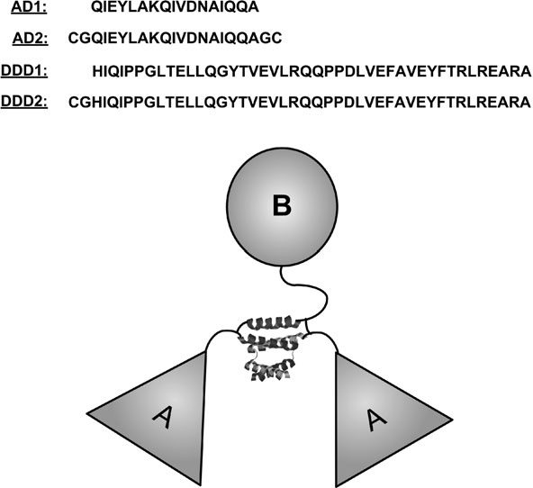
그림 12.1 아미노산 서열(AD1, AD2, DDD1, DDD2)과 A-DDD2 dimer(삼각형)가 B-AD2 monomer(구)에 연결된 기본 DNL conjugate의 도식.
histamine-succinyl-glycine(HSG). 이 다섯 모듈들의 schematic, CH1-DDD1-Fab-hMN-14, CH1-DDD2-Fab-hMN-14, DDD2-VH-Fab-hMN-14, CH1-AD1-Fab-h679, 그리고 CH1-AD2-Fab-h679가
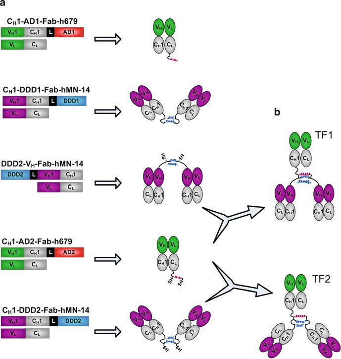
그림 12.2a에 나와 있다. 예상대로 CH1-DDD1-Fab-hMN-14와 CH1-AD1-Fab-h679는 배양 배지에서 각각 Fab homodimer와 Fab monomer로만 정제되었다. CH1-DDD1-Fab-hMN-14를 CH1-AD1-Fab-h679와 결합하면 trimeric complex 형성이 size-exclusion high performance liquid chromatography(SE-HPLC)로 쉽게 입증되었고, equilibrium gel filtration analysis(Gegner and Dahlquist 1991)로 결정된 apparent dissociation constant는 약 8 nM이었는데, 생체 내 응용의 전형적 농도(<1 mg/ml)에서 비공유 복합체를 온전히 유지하기에는 너무 약한 친화력일 것이다.
Fab-DDD2와 Fab-AD2 모듈을 사용한 후속 실험은 거의 정량적 수득으로 두 개의 안정히 연결된 trivalent bsAbs(그림 12.2b)를 산출했다. DDD2-VH-Fab-hMN-14와 CH1-AD2-Fab-h679의 conjugate를 TF1로, CH1-DDD2-Fab-hMN-14와 CH1-AD2-Fab-h679의 conjugate를 TF2라 한다. TF1과 TF2는 각각 SE-HPLC로 예상 분자 크기(~150 kDa)의 단일 피크, BIAcore로 bispecific, 그리고 경쟁 ELISA로 hMN-14 IgG와 h679 Fab과 동등한 것으로 나타났으며, 원자가와 결합 친화력의 완전한 유지를 반영했다. 게다가 TF1과
202 C.-H. Chang et al.
그림 12.2 (a) CEACAM5에 hMN-14 Fab(보라색 가변 도메인)으로 2가적으로, HSG에 h679 Fab(녹색 가변 도메인)으로 일가적으로 결합하는 bispecific T-Fabs를 만드는 데 사용된 발현 카세트와 DNL 모듈의 도식. GS-linker(L)는 14~16개 아미노산 잔기를 구성한다. (b) CH1-AD2-Fab-h679를 DDD2-VH-Fab-hMN-14 및 CH1-DDD2-Fab-hMN-14 각각과 DNL conjugation으로 만든 TF1과 TF2의 도식.
TF2는 사람 또는 마우스 혈청에서 37 °C로 배양했을 때 최소 7일간 안정했으며, pretargeting agent로서 TF2의 우월성은 di-HSG peptides를 ⁹⁹mTc(Rossi et al. 2006; Sharkey et al. 2008), ¹²⁴I(Sharkey et al. 2008), ⁶⁸Ga(Schoffelen et al. 2010), ¹⁸F(McBride et al. 2009)로 표지하여 CEACAM5 발현 인간 결장암 이종이식종을 지닌 누드마우스에서 여러 영상 연구로 입증되었다.
TF1과 TF2의 생성 이후 우리는 DNL 방법을 적용해 유사한 결과와 예상 성질을 지닌 monospecific 또는 bispecific 추가 trivalent 항체들을 생산했다(표 12.1). 이런 T-Fabs 중 TF4, TF10, TF12는 각각 B세포 림프종(Sharkey et al. 2009), 췌장암(Gold et al. 2008), 전립선암(van Rij et al. 2010)의 사람 이종이식 모델에서 pretargeting agent로서 전임상에서 유망함을 보였다. 우리는 또한 CD20과 CD22를 동시에 표적하는 trivalent bsAb인 TF3가 2차 항체로의 추가 교차결합 없이도 몇몇 B세포 non-Hodgkin lymphoma(NHL) 세포주에 대해 시험관 내 직접 독성을 보임을 발견했다(Qu et al. 2008).
TF2는 현재 네덜란드 Nijmegen의 University of Radboud Medical Center에서 ¹¹¹In 표지 di-HSG peptide 영상과 같은 di-HSG peptide를 ⁹⁰Y 또는 ¹⁷⁷Lu로 표지한 치료를 사용한 임상시험 중이다(Sharkey et al. 2010). 전이성 결장직장암 병력이 있고 폐에 여러 전이와 커다란 간 병변이 있던 첫 환자에게 TF2(~35 mg/m²) 75 mg을 2 h 정맥 주입으로 투여했고, 5일 후 ¹¹¹In 표지 di-HSG peptide(185 MBq, 100 mg)를 2분 IV push로 받았다. 알려진 질병 부위가 모두 시각화되었고 부작용은 관찰되지 않았다. 중요하게도 anti-TF2 반응은 검출되지 않았지만, T-Fabs의 면역원성 평가에는 더 많은 연구가 필요하다. Pretargeting protocol은 최적화 중이다.
12.4 여섯 Fab 팔로 구성된 IgG 유사 BsAbs
DNL 플랫폼의 또 다른 응용은 monospecific(Rossi et al. 2008) 또는 bispecific(Rossi et al. 2009)일 수 있는 hexavalent 항체(HexAbs)의 생성이다. 모든 HexAbs는 두 중쇄의 carboxyl termini에서 full IgG에 연결된 Fab-DDD2 dimers 쌍으로 구성되어 여섯 Fab 팔과 공통 Fc domain을 지니며,
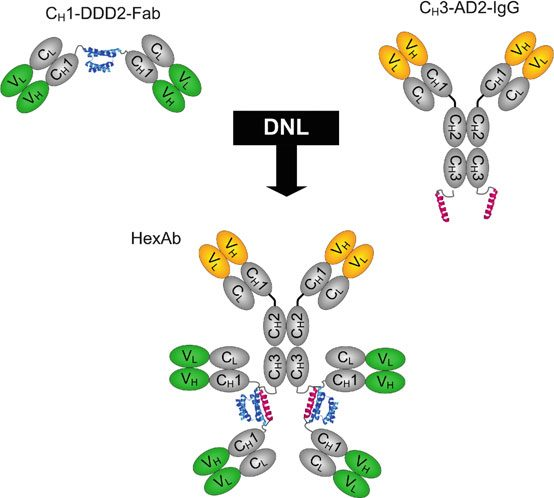
그림 12.3에 도시되어 있다. 이 HexAbs를 식별하기 위해 우리는 현재 X-(Y)-(Y) 코드를 부여한다. X와 Y는 항체를 구별하기 위한 고유 번호이고 괄호 안의 숫자는 해당 항체가 Fab 형식임을 나타낸다. 예컨대 20-(22)-(22) 코드는 2가 anti-CD20
204 C.-H. Chang et al.
그림 12.3 CH₃-AD2-IgG를 CH₁-DDD2-Fab과 DNL conjugation으로 만든 HexAb의 schematic.
표 12.2 DNL에 사용된 선별 항체의 다양한 명칭
| 항체 | 항원 | 관용명 | 미국채택명칭(USAN) | DNL 코드 |
|---|---|---|---|---|
| CD20 | hA20 | Veltuzumab | — | 20 |
| CD22 | hLL2 | Epratuzumab | — | 22 |
| CEACAM5 | hMN-14 | Labetuzumab | — | 14 |
| Indium-DTPA | h734 | – | – | 734 |
humanized IgG(veltuzumab 또는 hA20)와 dimeric anti-CD22 humanized Fab(epratuzumab 또는 hLL2) 쌍으로 구성된 bispecific HexAb; 22-(20)-(20)은 2가 hLL2 IgG와 dimeric hA20 Fab 쌍으로 구성된 bispecific HexAb; 그리고 20-(20)-(20)은 2가 hA20 IgG와 dimeric hA20 Fab 쌍으로 구성된 monospecific HexAb을 지정한다. 여기서 기술되는 HexAbs와 관련된 항체의 다양한 명칭은 표 12.2에 제공되어 있다.
12.4.1 생성과 연구 설계
초기 검증을 위해 우리는 CH₃-AD2-IgG 모듈을 표 12.3에 표시된 대로 CH₁-DDD2-Fab 모듈과 결합하고 Protein A
205 표 12.3 DNL로 만든 HexAbs의 모듈, 표적, 코드
| 코드 | 이전 명칭ᵃ | AD-모듈 포맷 | 표적 | DDD-모듈 포맷 | 표적 |
|---|---|---|---|---|---|
| 20-(22)-(22) | 20-22 | CH₃-AD2-IgG-hA20 | CD20 | CH₁-DDD2-Fab-hLL2 | CD22 |
| 22-(20)-(20) | 22-20 | CH₃-AD2-IgG-hLL2 | CD22 | CH₁-DDD2-Fab-hA20 | CD20 |
| 20-(20)-(20) | Hex-hA20 | CH₃-AD2-IgG-hA20 | CD20 | CH₁-DDD2-Fab-hLL1 | CD20 |
| 22-(22)-(22) | Hex-hLL2 | CH₃-AD2-IgG-hLL2 | CD22 | CH₁-DDD2-Fab-hLL2 | CD22 |
| 20-(14)-(14) | 20-14 | CH₃-AD2-IgG-hA20 | CD20 | CH₁-DDD2-Fab-hMN-14 | CEACAM5 |
| 22-(14)-(14) | 22-14 | CH₃-AD2-IgG-hLL2 | CD22 | CH₁-DDD2-Fab-hMN-14 | CEACAM5 |
| 734-(20)-(20) | 734-20 | CH₃-AD2-IgG-h734 Indium-DTPA | — | CH₁-DDD2-Fab-hA20 | CD20 |
ᵃ Rossi et al. (2008, 2009)
affinity chromatography로 정제함으로써 일곱 개의 서로 다른 HexAbs, 즉 20-(22)-(22), 22-(20)-(20), 20-(20)-(20), 22-(22)-(22), 20-(14)-(14), 22-(14)-(14), 그리고 734-(20)-(20)을 만들었다. 이 HexAbs를 조립하는 데 사용된 개별 모듈들은 포유류 세포 배양에서 생산되었고 이후 DNL reaction은 통상 문제없이 진행되어, 각 최종 conjugate가 SE-HPLC로 예상 분자 크기(~365 kDa)의 압도적으로 단일 피크로 구성되고 SDS-PAGE로 IgG와 두 dimeric Fab이 공유결합된 고순도임을 보였다.
DNL 접근법으로 새로운 IgG 유사 bsAbs를 만드는 실현 가능성 평가 외에도, 이 HexAbs panel은 anti-CD20 또는 anti-CD22 구성 요소의 원자가 증가가 결합 avidity에 미치는 효과를 평가하도록 설계되었다. 또 하나의 목표는 target cells 위 CD20과 CD22의 동시 engagement에 의해 bispecific 20-(22)-(22)와 22-(20)-(20)가 유도하는 신호전달 경로를 조사하는 것이었다. 이것은 monospecific 20-(20)-(20)에 의해 또는 결합된 모체 hA20 IgG를 secondary antibody로 crosslinking함으로써 유도되는 것과 같을 수도 있고 다를 수도 있다. 게다가 20-(22)-(22)와 22-(20)-(20)의 시험관 내·생체 내 성질을 정의하기 위해 직접 독성, 항체의존세포매개세포독성(ADCC), 보체의존세포독성(CDC), 혈청 안정성, 약동학(PK), 인간 B세포 림프종 이종이식종을 지닌 동물에서의 항종양 효능 등 다양한 연구가 수행되었다. The
206 C.-H. Chang et al.
tetravalent 22-(20)-(20)의 2.2 nM과 divalent 20-(22)-(22)의 4.8 nM에 비교. 유사하게 antiidiotypic to hLL2를 surrogate antigen으로 사용하여 hexavalent 22-(22)-(22)가 tetravalent 20-(22)-(22)의 0.43 nM과 divalent 22-(20)-(20)의 0.66 nM에 비해 가장 높은 결합 avidity(0.30 nM)를 보임을 발견했다. 게다가 20-(22)-(22)와 22-(20)-(20)는 divalent hA20(4.8 vs. 4.9 nM)과 hLL2(0.66 vs. 0.81 nM)와 거의 같은 결합 avidity를 보였다. 이 결과들은 HexAb 내 각 Fab 팔이 결합 활동을 유지하고, 2가 IgG의 avidity가 DNL 방법으로 원자가를 늘림으로써 편리하게 강화될 수 있음을 나타낸다.
HexAb의 다중 원자가로 인한 강화된 결합 avidity는 결합된 세포 표면에서의 해리를 늦춰야 하며, flow cytometry로 측정할 수 있다. Raji cells를 CD20/CD22 표적으로 사용하여 20-(20)-(20), 22-(20)-(20), 20-(22)-(22), hA20 IgG의 off-rate는 각각 t½=322, 268, 152, 145 min으로 결정되었다. hexavalent 20-(20)-(20)와 tetravalent 22-(20)-(20)의 차이는 통계적으로 유의했고(P=0.0042), tetravalent 22-(20)-(20)와 divalent hA20 IgG의 차이도 그랬다(P<0.0001). 그러나 20-(22)-(22)와 hA20 IgG의 차이는 유의하지 않았다(P=0.3810). 따라서 상대 off-rate는 CD20-binding arms 수와 잘 상관하지만 CD22-binding arms 수와는 그렇지 않은 듯하다. 이는 Raji cells에서 CD20 발현이 CD22보다 10배 높기 때문일 것이다.
20-(22)-(22)와 22-(20)-(20)의 bispecificity는 flow cytometry로 cell-binding analysis를 수행하여 입증되었다. Raji cells를 과잉 CH₁-DDD2-Fab-hA20, CH₁-DDD2-Fab-hLL2, 또는 both로 preincubation하여 각각 CD20, CD22, CD20/CD22 결합을 차단했다. 세포는 포화량 PE(phycoerythrin)-conjugated 22-(20)-(20), 20-(22)-(22), hA20 IgG, 또는 hLL2 IgG로 염색되었고 결과 fluorescence intensity가 측정되어 unblocked control과 비교되었다. Wi
12.4.2.2 직접 및 간접 세포독성
cell counting assay로 보인 바와 같이 22-(20)-(20)와 20-(22)-(22)는 세 Burkitt lymphoma cell lines인 Ramos, Raji, Daudi의 성장을 15 nM 이하에서 유효하게 억제했지만, 같은 조건에서 개별 모체 항체만으로 또는 함께 사용했을 때는 무효(hLL2)이거나 덜 효과적(hA20 또는 hLL2와의 조합)이었다. dose-response curves에서 결정된 EC₅₀ 값에 기반해 22-(20)-(20)는 검토된 세 림프종 세포주 모두에서 20-(22)-(22)보다 더 강력했고, crosslinking antihuman Fc antibody 추가는 어느 쪽 22-(20)-(20)나 20-(22)-(22)의 관찰된 direct toxicity에 현저한 영향이 없었으나 hA20의 억제 활동을 현저히 증가시켰다. 2가, 4가, 그리고 CD20에 결합하지 않는 경우의 효과만 평가하기 위해 우리는 HexAbs 분자 구조를 지닌 20-(14)-(14), 734-(20)-(20), 22-(22)-(22)의 Ramos cells 성장 억제 potency를 MTS assay로 평가했다. 20-(14)-(14)의 효과가 hA20 IgG와 유사했다는 발견은 세포 표면 CD20과 CD22 heterocomplex 형성이 20-(22)-(22)의 direct toxicity에 필수적임을 시사한다. 우리는 또한 734-(20)-(20) 같은 tetravalent CD20-binding molecule이 direct toxicity를 보일 수 있음을 확인했고 734-(20)-(20)와 22-(20)-(20)의 dose-response curves 사이 통계적 차이가 없음을 관찰했다. 20-(20)-(20)과 달리 monospecific 22-(22)-(22)는 NHL cell lines에 대해 시험관 내 direct toxicity를 보이지 않았다. 20-(20)-(20), 20-(22)-(22), 22-(20)-(20)의 direct toxicity는 CD20 발현이 다양한 여덟 CLL patient specimens에서도 평가되었다. 중등도~고 CD20 발현을 보인 세 specimen은 세 HexAbs에 의해 30~60% 억제를 보였지만 저 CD20 발현의 나머지 다섯 specimen에서는 유의한 억제가 관찰되지 않았다. 흥미롭게도 rituximab도 hA20도
208 C.-H. Chang et al.
(Cragg and Glennie 2004) rituximab이 대표하는 Type I 또는 tositumomab(Cardarelli et al. 2002)이 대표하는 Type II로 분류한다. Type I anti-CD20 mAbs는 강력한 CDC, secondary antibody 추가 시 빠른 칼슘 동원(Hofmeister et al. 2000; Unruh et al. 2005), 약한 homotypic adhesion 유도(Deans and Polyak 2002), lipid rafts와의 CD20 결합 증대(Li et al. 2004), 그리고 효율적 antiproliferation 또는 apoptosis를 위한 일반적 secondary antibody crosslinking 요구(Deans and Polyak 2002)를 특징으로 한다. 대조적으로 Type II anti-CD20 mAbs는 CDC가 없고(Cragg and Glennie 2004) 추가 crosslinking에 의한 칼슘 동원을 자극하지 않으며(Unruh et al. 2005), 높은 수준의 homotypic adhesion을 유발하고(Deans and Polyak 2002), CD20을 lipid rafts로 끌어들이지 못하며(Teeling et al. 2004; Mössner et al. 2010), direct toxicity를 통한 유의한 apoptosis를 유도한다(Cardarelli et al. 2002). 더 구별되는 점은 Type I mAbs에 의한 apoptotic cell death가 caspase 의존 및 비의존 경로 모두를 포함하지만, caspase 비의존 경로만 Type II mAbs와 associated한 듯하다는 것이다(Mössner et al. 2010). 그러나 Type I과 Type II anti-CD20 mAbs 모두 ADCC에서 유효하며 마우스 기원 항체들은 명백히 CD20 큰 세포외 루프 위 겹치는 epitopes에 결합한다(Polyak and Deans 2002; Ernst et al. 2005; Teeling et al. 2006; Du et al. 2007). 흥미롭게도 포화 상태에서 각 CD20 양성 B세포에 결합하는 Type II mAb 수는 Type I mAb에서 관찰된 것의 절반 정도에 불과하다(Teeling et al. 2004; Mössner et al. 2010). 이것은 Type II mAb가 각 antigen-binding arm으로 CD20 인접 세포외 루프 두 개를 engagement함으로써 사실상 tetravalent antibody처럼 작동할 수 있음을 시사한다.
hA20 함유 HexAbs 세 개, 즉 20-(20)-(20), 22-(20)-(20), 20-(22)-(22)는 Type I과 Type II anti-CD20 mAbs 양쪽의 성질을 공유한다. Type II와 일관되게 20-(20)-(20), 22-(20)-(20), 20-(22)-(22)는 CDC와 칼슘 동원에 음성이며 crosslinking을 요구하지 않는다
anti-IgM에 의해 유도됨. (b) hA20과 rituximab은 ERK와 NF-κB 경로에서 관찰된 대로 Daudi cells에서 세 CD20-targeting HexAbs와 유사하게 signaling events를 수정하지만, 유효하기 위해 더 높은 농도를 요구하고 성장 정지를 촉진하는 cell cycle regulator(p21, p27, Kip2 upregulation, cyclin D1과 phosphorylated Rb downregulation) 조절에 덜 효율적이다. 게다가 divalent hA20 IgG와 rituximab은 phosphorylated p38과 PTEN 수준을 무처리 대비 변화시키지 못하는 반면, 세 HexAbs 모두 phosphorylated p38과 PTEN 수준을 현저히 증가시킨다. 유사한 결과가 Raji cells에서 phosphorylated ERKs 감소와 phosphorylated p38 증가에서 얻어졌다. Daudi cells에서 hLL2에 의한 CD22 ligation 시 signaling molecules basal expression에 유의한 변화는 관찰되지 않았다. (c) secondary antibody로 hA20 또는 rituximab을 crosslinking하여 초래된 apoptosis와 cell proliferation inhibition은 HexAbs와 associated한 signaling events와 구별되는데, phosphorylated ERK(증가 vs. 감소), intracellular calcium(증가 vs. 변화 없음), mitochondrial membrane potential(소실 vs. 변화 없음)에서 나타난다.
종합하면 우리 발견은 세 CD20-targeting HexAbs의 강력한 direct toxicity가 multivalent binding 능력 때문이라는 견해와 일치한다. 이것은 multiple signaling pathways 수정 역치를 낮추어 growth arrest, apoptosis, 최종 cell death를 촉진하는 pro- 및 antiapoptotic proteins의 새로운 분포를 낳는다. 흥미롭게도 이런 효과들은 ex-vivo에서 normal human B cells 대비 human Burkitt lymphoma cells 살상에 관한 상대적 potency의 주목할 만한 차이로 이어졌다. bispecific 22-(20)-(20)와 20-(22)-(22)는 hA20과 rituximab보다 malignant B cells에 대해 higher toxicity를 보였다. 또한 CDC 부재의 잠재적 장점과 중등도지만 유의한 AD
210 C.-H. Chang et al.
72-h PK samples에서 IgG 크기 새 피크가 antiidiotype antibody to hA20 사용으로 hA20이 아닌 hLL2에서 유래했음이 입증되었다.
22-(20)-(20)와 20-(22)-(22)의 생체 내 antitumor efficacy는 세 연구에서 disseminated Daudi model SCID mice에서 평가되었다. 첫 번째 연구에서 22-(20)-(20)와 20-(22)-(22)가 각각 단일 용량 10 pmol(~3.7 mg) i.v. 투여되었고 22-(14)-(14), 20-(14)-(14), 22-(22)-(22), 등몰량 hA20 IgG를 포함한 여러 대조군과 비교되었다. Daudi cells i.v. 접종 1일 후 therapy 시작으로 22-(20)-(20) 투여군은 saline control에 비해 significantly extended median survival time(MST)(36 vs. 29일, P=0.005)을 보였지만, 22-(22)-(22) 또는 22-(14)-(14) 투여 두 군은 saline 대비 생존 개선이 없었다(29일, P=1.0). 20-(22)-(22) 투여 마우스의 MST는 saline control보다 significantly longer였다(50 vs. 29일, P=0.005) 그러나 20-(22)-(22), 20-(14)-(14), hA20 IgG 사이 MST 통계적 차이는 없었다.
두 번째 연구에서 우리는 22-(20)-(20)의 efficacy를 hLL2 IgG, 22-(14)-(14), 734-(20)-(20), 그리고 22-(14)-(14)+734-(20)-(20) mixture와 비교했다. 마우스 군(각각 10마리)에 1, 4, 7일에 10 mg doses of 22-(20)-(20), 734-(20)-(20), 22-(14)-(14), 또는 both 734-(20)-(20)+22-(14)-(14) 10 mg을 투여했다. 추가 군은 equimolar dose of hLL2(4 mg) 또는 saline을 받았다. saline-treated group의 모든 마우스는 4주 내 사망했다(MST=25일). 22-(20)-(20), 734-(20)-(20), 22-(14)-(14), combination, hLL2 IgG 투여 마우스의 MST는 각각 66.5일, 42일, 32일, 68.5일, 32일이었다. 22-(20)-(20)와 734-(20)-(20), 22-(14)-(14), hA20 각각 사이 MST 통계적으로 유의한 차이(P<0.001)가 발견되었다. 주목할 만하게도 22-(20)-(20)의 MST는 734-(20)-(20)와 22-(14)-(14)의 조합과 거의 같았다. 후자가 같은 수의 CD20- 및 CD22-binding arms를 두 배 F
12.5 DNL의 장점
DDD로 derivatized module이 항상 두 copy로 presented되는 독특한 특징 외에도 아래에서 논의될 DNL 방법의 추가 장점이 있다.
DNL은 modular하다. 각 DDD- 또는 AD-containing entity가 하나의 모듈로 작동하며 어떤 DDD module도 어떤 AD module과 짝지을 수 있다. 이런 모듈들은 독립적으로 생산되고 별도로 “on shelf” 저장되고 “on demand” 결합될 수 있다. 결과 모듈이 DDD dimerization 또는 DDD-AD binding을 방해하지 않는 한 DDD- 또는 AD-module로 전환될 수 있는 precursor 유형에는 사실상 제한이 없다. 사람 RIIα의 DDD sequence 외에 다른 DDD sequences가 사람 RIα, 사람 RIβ, 또는 사람 RIIβ에서 선택될 수 있다. 선택된 DDD sequence는 문헌에서 추론되거나 실험적으로 결정될 수 있는 highly interactive AD sequence와 짝지워질 것이다(Burns-Hamuro et al. 2003).
DNL은 versatile하다. Modules는 recombinant 또는 chemically로 만들 수 있다. 포유류 또는 microbial systems에서 생산될 수 있는 recombinant modules는 antibodies 또는 antibody fragments, cytokines, enzymes, carrier proteins(human serum albumin과 human transferrin 같은), 또는 다양한 natural 또는 artificial non-antibody binding 또는 scaffold proteins의 fusions를 포함할 수 있다(Binz et al. 2005; Binz and Pluckthun 2005; Hey et al. 2005; Hosse et al. 2006). 각 recombinant module이 통상 별도 expression system에서 생산되지만 특정 DDD-AD modules 쌍은 DNL conjugates 형성에 영향 없이 같은 host cell에서 co-express될 수 있다. 게다가 DDD 또는 AD는 fusion protein의 aminoterminal 또는 carboxylterminal end에 coupled되거나 심지어 내부에 위치할 수 있으며, 바람직하게는 적절한 길이와 조성의 amino acid residues spacer를 포함한다. 단 DDD 또는 AD binding activity와 polypeptide fusion partners의 desired activity가 compromised되지 않는다.
Modules는 synthetically로도 만들 수 있으며,
부위특이적 conjugation은 또한 각 모듈의 full activity 보존, 균질한 분자 크기, defined composition, 생체 내 integrity의 상당한 유지를 보장한다.
12.6 전망
DNL method는 recombinant engineering과 site-specific conjugation chemistry를 모두 활용하여 monospecific, bispecific, Fc-lacking, 또는 Fc-containing일 수 있는 multivalent antibodies 생산을 위한 facile, efficient, modular platform technology를 제공한다. 여기서 T-Fabs와 HexAbs로 입증된 바와 같다.
tumor-bearing mice에서 select T-Fabs로부터와 TF2를 가진 cancer patients로부터 얻은 imaging data는 ~150 kDa bsAbs가 primary tumor에 localize한 후 HSG-containing haptens를 capture할 수 있음을 나타낸다. lymphoma models에서 20-(22)-(22), 22-(20)-(20), 20-(20)-(20)로 관찰된 생체 내 therapeutic efficacy는 ~365 kDa HexAbs가 target sites로 penetrate하고 accumulate할 수 있음을 믿게 한다.
우리는 dynamic light scattering으로 HexAb 직경이 15~16 nm 사이임을 최근 결정했다. electrospray differential mobility analysis로 측정한 Y-shaped monomeric IgG 평균 직경이 9~10 nm 사이(Pease et al. 2008)이고 10~100 nm가 cancer therapy에서 nanoparticle drug carriers의 optimal diameter 범위로 고려된다(Davis et al. 2008)는 점을 감안하면, DNL로 만든 HexAb가 tumor로 penetrate하기에 너무 클 것이라는 우려는 과장될 수 있으나 그럼에도 추가 연구에서 다루어져야 한다. 실제로 DNL constructs penetration은 surface proteins에 결합하는 agents, 특히 multivalent binding capabilities를 지닌 agents의 movement에 더 큰 영향을 줄 so-called “binding site barrier”(Fujimori et al. 1989; Weinstein and van Osdol 1992; Saga et al. 1995)에 의해 impede될 가능성이 far more likely하다.
HexAb가 DNL로 만들어 CDC를 유지하고 생체 내 더 potent antitumor effect를 보일 수 있는지 pursuit할 가치가 있다. 반면 CDC가 suggeste
considered largely nonimmunogenic이다. DNL complexes 일반이나 특정 T-Fab 또는 HexAb가 인간에서 immunogenic할지는 clinical testing에서 best assessed될 것이다.
References
Alto NM, Soderling SH, Hoshi N, Langeberg LK, Fayos R, Jennings PA, Scott JD (2003) Bioinformatic design of A-kinase anchoring protein-in silico: a potent and selective peptide antagonist of type II protein kinase A anchoring. Proc Natl Acad Sci USA 100(8):4445–4450 Asano R, Watanabe Y, Kawaguchi H, Fukuzawa H, Nakanishi T, Umetzu M, Hayashi H, Katayose Y, Unno M, Kudo T, Kumahai I (2007) Highly effective recombinant format of a humanized IgG-like bispecific antibody for cancer immunotherapy with retargeting of lymphocytes to tumor cells. J Biol Chem 282(38):27659–27665 Baillie GS, Scott JD, Houslay MD (2005) Compartmentalisation of phosphodiesterases and protein kinase A: opposites attract. FEBS Lett 579(15):3264–3270 Binz HK, Pluckthun A (2005) Engineered proteins as specific binding reagents. Curr Opin Biotechnol 16(4):459–469 Binz HK, Amstutz P, Pluckthun A (2005) Engineering novel binding proteins from nonimmunoglobulin domains. Nat Biotechnol 23(10):1257–1268 Brennan M, Davison PF, Paulus H (1985) Preparation of bispecific antibodies by chemical recombination of monoclonal immunoglobulin G1 fragments. Science 229(4708):81–83 Burns-Hamuro LL, Ma Y, Kammerer S, Reineke U, Self C, Cook C, Olson GL, Cantor CR, Braun A, Taylor SS (2003) Designing isoform-specific peptide disruptors of protein kinase A localization. Proc Natl Acad Sci USA 100(7):4072–4077 Burton DR, Wilson IA (2007) Immunology. Square-dancing antibodies. Science 317(5844):1507–1508 Cardarelli PM, Quinn M, Buckman D, Fang Y, Colcher D, King DJ, Bebbington C, Yarronton G (2002) Binding of CD20 by anti-B1 antibody or F(ab’)₂ is sufficient for induction of apoptosis in B-cell lines. Cancer Immunol Immunother 51:15–24 Carr DW, Stofko-Hahn RE, Fraser ID, Bishop SM, Acott TS, Brennan RG, Scott JD (1991) Interaction of the regulatory subunit (RII) of cAMP-dependent protein kinase with RII-a
Ernst JA, Li H, Kim HS, Nakamura GR, Yansura DG, Vandlen RL (2005) Isolation and characterization of the B-cell marker CD20. Biochemistry 44(46):15150–15158 Fujimori K, Covell DG, Fletcher JE, Weinstein JN (1989) Modeling analysis of the global and microscopic distribution of immunoglobulin G, F(ab’)₂, and Fab in tumors. Cancer Res 49(20):5656–5663 Gegner JA, Dahlquist FW (1991) Signal transduction in bacteria: CheW forms a reversible complex with the protein kinase CheA. Proc Natl Acad Sci USA 88(3):750–754 Glennie MJ, McBride HM, Worth AT, Stevenson GT (1987) Preparation and performance of bispecific F(ab’ gamma)₂ antibody containing thioether-linked Fab’ gamma fragments. J Immunol 139(7):2367–2375 Gold DV, Goldenberg DM, Karacay H, Rossi EA, Chang C-H, Cardillo TM, McBride WJ, Sharkey RM (2008) A novel bispecific, trivalent antibody construct for targeting pancreatic carcinoma. Cancer Res 68(12):4819–4826 Gupta P, Goldenberg DM, Rossi EA, ChangC-H (2010) Multiple signaling pathways induced by hexavalent, monospecific, anti-CD20andhexavalent, bispecific, anti-CD20/CD22humanized antibodies correlate with enhanced toxicity to B-cell lymphomas and leukemias. Blood 116(17):3258–3267 Hey T, Fiedler E, Rudolph R, Fiedler M (2005) Artificial, non-antibody binding proteins for pharmaceutical and industrial applications. Trends Biotechnol 23(10):514–522 Hofmeister JK, Cooney D, Coggeshall KM (2000) Clustered CD20 induces apoptosis: src-family kinase, the proximal regulator of tyrosine phosphorylation, calcium influx, and caspase-dependent apoptosis. Blood Cells Mol Dis 26(2):133–143 Hosse RJ, Rothe A, Power BE (2006) A new generation of protein display scaffold for molecular recognition. Protein Sci 15(1):14–27 Hollander N (2009) Bispecific antibodies for cancer therapy. Immunotherapy 1(2):211–222 Kriangkum J, Xu B, Nagata LP, Fulton RE, Suresh MR (2001) Bispecific and bifunctional single chain recom
Mössner E, Brünker P, Moser S, Püntener U, Schmidt C, Herter S, Grau R, Gerdes C, Nopora A, van Puijenbroek E, Ferrara C, Sondermann P, Jäger C, Strein P, Fertig G, Friess T, Schüll C, Bauer S, Dal Porto J, Del Nagro C, Dabbagh K, Dyer MJ, Poppema S, Klein C, Umaña P (2010) Increasing the efficacy of CD20 antibody therapy through the engineering of a new type II anti-CD20 antibody with enhanced direct and immune effector cell-mediated B-cell cytotoxicity. Blood 115(22):4393–4402 Muller D, Kontermann RE (2007) Recombinant bispecific antibodies for cellular cancer immunotherapy. Curr Opin Mol Ther 9(4):319–326 Newlon MG, Roy M, Morikis D, Hausken ZE, Coghlan V, Scott JD, Jennings PA (1999) The molecular basis for protein kinase A anchoring revealed by solution NMR. Nat Struct Biol 6(3):222–227 Newlon MG, Roy M, Morikis D, DW C, Westphal R, Scott JD, Jennings PA (2001) A novel mechanism of PKA anchoring revealed by solution structures of anchoring complexes. EMBO J 20(7):1651–1662 Pease LF III, Elliot JT, Tsai D-H, Zachariah MR, Tarlov MJ (2008) Determination of protein aggregation with differential mobility analysis: application to IgG antibody. Biotechnol Bioeng 101(6):1214–1222 Perez P, Hoffman RW, Shaw S, Bluestone JA, Segal DM (1985) Specific targeting of cytotoxic T cells by anti-T3 linked to anti-target cell antibody. Nature 316(6026):354–356 Polyak MJ, Deans JP (2002) Alanine-170 and proline-172 are critical determinants for extracellular CD20 epitopes; heterogeneity in the fine specificity of CD20 monoclonal antibodies is defined by additional requirements imposed by both amino acid sequence and quaternary structure. Blood 99(9):3256–3262 Qu Z, Goldenberg DM, Cardillo TM, Shi V, Hansen HJ, ChangC-H (2008) Bispecific anti-CD20/22 antibodies inhibit B-cell lymphoma proliferation by a unique mechanism of action. Blood 111(4):2211–2219 RossiEA, SharkeyRM, McBrideW, KaracayH, ZengL, HansenHJ, GoldenbergDM, Cha
216 C.-H. Chang et al.
Sharkey RM, Karacay H, Vallabhajosula S, McBride WJ, Rossi EA, ChangC-H, GoldsmithSJ, Goldenberg DM (2008) Metastatic human colonic carcinoma: molecular imaging with pretargeted SPECT and PET in a mouse model. Radiology 246(2):497–507 Sharkey RM, Karacay H, Johnson CR, Litwin S, Rossi EA, McBride WJ, ChangC-H, Goldenberg DM (2009) Pretargeted versus directly targeted radioimmunotherapy combined with anti-CD20 antibody consolidation therapy of non-Hodgkin lymphoma. J Nucl Med 50(3):444–453 Sharkey RM, Rossi EA, McBride WJ, ChangC-H, Goldenberg DM (2010) Recombinant bispecific monoclonal antibodies prepared by the dock-and-lock strategy for pretargeted radioimmunotherapy. Semin Nucl Med 40(3):190–203 Shen J, Vil MD, Jimenez X, Iacolina M, Zhang H, Zhu Z (2006) Single variable domain-IgG fusion. A novel recombinant approach to Fc domain-containing bispecific antibodies. J Biol Chem 281(16):10706–10714 Shen J, Vil MD, Jimenez X, Zhang H, Lacolina M, Mangalampalli V, Balderes P, Ludwig DL, Zhu Z (2007) Single variable domain antibody as a versatile building block for the construction of IgG-like bispecific antibodies. J Immunol Methods 318(1–2):65–74 Staerz UD, Bevan MJ (1986) Hybrid hybridoma producing a bispecific monoclonal antibody that can focus effector T-cell activity. Proc Nat Acad Sci USA 83(5):1453–1457 Teeling JL, French RR, Cragg MS, van den Brakel J, Pluyter M, Huang H, Chan C, Parren PWH, Hack CE, Dechant M, Valerius T, vanderWinkelJGJ, GlennieMJ(2004) Characterization of new human CD20monoclonalantibodies with potentcytolyticactivityagainstnon-Hodgkinlymphoma. Blood 104(6):1793–1800 Teeling JL, Mackus WJ, Wiegman LJ, van den Brakel J, Beers SA, French RR, van Meerten T, Ebeling S, Vink T, Slootsra JW, Parren PW, Glennie MJ, van de Winkel J (2006) The biological activity of human CD20 monoclonal antibodies is linked to unique epitopes on CD20. J Immunol 177(1):362–371 Unruh TL, Li H, Mutch CM, Shariat N, Grigoriou L, Sanyal R, Brown CB, Deans JP (2005) Cholesterol depletion inhibits src-family kinase-dependent calcium mobilization and apoptosis induced by rituximab crossl
제13장 이중특이 항체에 의한 효과세포 동원
크리스티안 켈너(Christian Kellner), 마티아스 파이프(Matthias Peipp), 토마스 발레리우스(Thomas Valerius)
13.1 서론
최근 몇 년간 치료 항체가 다양한 악성 질환의 표준 치료에 포함되었다(Oldham and Dillman 2008). B세포 림프종과 유방암 치료용으로 각각 승인된 rituximab과 trastuzumab 같은 항체는 일반적으로 잘 견디며 해당 환자들의 치료 성적을 명확히 개선했다. 이런 성공 사례에 힘입어 다른 항체들이 임상에 들어갔거나 여러 개발 단계에 있다. 그러나 이런 고무적인 결과에도 불구하고 항체 치료의 성공률은 여전히 만족스럽지 못하다. 항체는 단독 제제로는 드물게 완치하고, 반응은 종종 환자 하위 집단에 국한되며, 재발이나 진행 가능성은 여전히 심각한 문제다. 게다가 항체 치료는 임상적 이익이 제한적인 채 치료 비용을 극적으로 끌어올리곤 한다(Reichert et al. 2005). 따라서 항체 치료에 추가 개선이 필요하다는 데 널리 동의되어 있다.
이 목표를 달성하는 한 방법은 치료 항체의 임상적으로 중요한 효과기전(effector mechanism)을 이해하고, 이 통찰을 해당 기전을 특이적으로 강화하는 합리적 접근법으로 옮기는 것이다. 여러 관찰은 Fcγ 수용체(FcγR) engagement에 의한 효과세포 동원이 단클론 항체의 임상 효능을 결정적으로 좌우함을 지시했고—항체-FcγR 상호작용을 강화하면 효과세포 동원과 항체 치료를 개선할 수 있음을 시사한다(Carter 2006; Presta 2008).
이중특이 항체는 오래전부터 항체 치료를 위한 효과세포 동원 개선의 우아한 방법으로 인정받아 왔다(Staerz et al. 1985; Fanger et al. 1991; Segal et al. 1999). 종양 치료에서 이중특이 항체는 통상 종양세포 위 표적 항원을 인식하고, 두 번째 부위는 자극 트리거(stimulatory trigger)
C. 켈너(C. Kellner), M. 파이프(M. Peipp), T. 발레리우스(T. Valerius, *) — 독일 킬 슐레스비히홀슈타인 대학병원 내과 줄기세포이식·면역학부
218 C. Kellner et al.
효과세포 위 분자. 이중특이 항체는 FcR 발현 세포 동원을 개선하거나 FcR이 없어 기존 항체의 효과세포가 될 수 없는 T 림프구를 재지향할 수 있으므로 매력적이다.
최근 T세포 engaging 이중특이 항체로 유망한 임상 결과를 얻었다. EpCAM을 겨냥하는 trifunctional bispecific antibody catumaxomab은 2009년 유럽의약품청(EMEA)의 승인을 받은 첫 이중특이 항체였다(Zeidler et al. 1999). B세포 림프종과 백혈병 위 CD19를 겨냥하는 blinatumumab이 곧 뒤따를 것으로 예상된다(Loffler et al. 2000).
이 장에서는 암 면역요법에서 이중특이 항체 사용의 과학적 근거를 개관하고 생성을 위한 다양한 포맷을 제시한다. 다양한 림프구성 및 골수성 효과세포와 이중특이 접근을 위한 후보 트리거 분자들을 기술하고, 개별 이중특이 항체에 대한 전임상·임상 경험을 요약한다.
13.2 이중특이 항체의 근거
치료 항체에 대한 임상 반응은 단클론 항체의 효과기전에 대한 새로운 관심으로 이어졌고, 항체 기능의 더 나은 이해가 개선된 항체 기반 치료제 개발로 이어질 것이라 가정했다. 단클론 항체의 서로 다른 작용 방식이 시험관 내에서 확인되었으며 개념적으로 직접 및 간접 기전으로 나뉜다(Cragg et al. 1999). 직접 기전은 “fragment variable”(Fv)가 표적 항원에 결합함으로써 매개되며, 수용체-리간드 상호작용 차단과 세포자멸사, 성장 정지, 또는 종양 휴면(tumor dormancy) 유도를 포함한다. 대조적으로 간접 기전은 “fragment crystallizable”(Fc)에 의해 매개되는 면역 효과기능 동원을 포함한다. 즉, Fc 부분이 보체계 구성 요소와 상호작용하여 보체의존세포독성(CDC)을 유도하거나 항체의존세포매개세포독성(ADCC
활성화 및 억제 수용체로 나뉜다. 활성화 수용체는 ADCC, ADCP, 탈과립(degranulation), 사이토카인 방출, 향상된 항원제시를 매개하는 반면 억제 수용체는 음성 조절자 역할을 한다. IgG의 경우 인간에서 세 클래스의 FcγR이 존재한다: FcγRI(CD64), FcγRII(CD32), FcγRIII(CD16). 이들은 예컨대 monomeric IgG와 immune complexes에 대한 친화력 등에서 다르다(Bruhns et al. 2009). 다양한 isotype과 genetic polymorphism이 이 시스템에 추가 복잡성을 도입한다(van de Winkel and Capel 1993; Kimberly et al. 2002).
Fc 부분-FcγR 상호작용의 중요성은 여러 생체 내 실험에서 입증되었다. 활성화 FcγR 발현이 없는 common γ-chain knock-out mice에서 항체는 치료 활동을 잃었다(Clynes et al. 2000). 게다가 class-switched antibody variants 연구는 그들의 치료 활동이 활성화 및 억제 FcγR에 대한 Fc 결합 친화력 비율(A/I 비율; Nimmerjahn and Ravetch 2005)에 의해 결정됨을 시사했다. FcγR signaling의 영향은 마우스 common FcR γ-chain이 결핍되었지만 ITAM-mutated human γ-chain transgene을 지닌 NoTAM mice에서 더 조사되었다(de Haij et al. 2010). 이 돌연변이는 FcγR signaling을 막지만 wild type mice에 필적하는 세포 표면 FcγR 발현을 허용한다. 흥미롭게도 CD20 항체는 이 마우스에서 치료 효능을 잃었다—생체 내 FcγR 매개 crosslinking을 통한 항체 유발 apoptosis보다 ADCC의 실질적 역할을 뒷받침한다.
효율적 FcγR 매개 효과세포 동원의 임상 중요성에 대한 추가 증거는 rituximab, trastuzumab, 또는 cetuximab 치료 환자의 FcγR polymorphisms 분석에서 나왔다. CD16a-V158 allelic variant 발현—CD16a-F158 변이체보다 큰 IgG1 결합 친화력(van de Winkel and Capel 1993; Kimberly et al. 2002)—은 항체 치료에 대한 improved response rates와 상관했다(Weng and Levy 2003; Musolino et al. 2008; Bibeau et al. 2009).
결론적으로 항체
220 C. Kellner et al.
이런 단점을 극복하기 위한 전략들이 개발되었다. 여기에는 활성화 FcγR에 대한 더 높은 친화력 달성을 위한 Fc engineering approaches(Carter 2006; Presta 2008)와 이중특이 항체 생성(Fanger et al. 1991)이 포함된다.
이중특이 항체는 distinct trigger molecules를 선택적으로 engaging함으로써 더 defined pool of effector cells의 동원을 허용하고 non-signaling 또는 inhibitory FcR 결합을 피해 optimal A/I ratios를 달성한다. 게다가 FcR은 Fc-binding site 바깥 epitopes를 인식하는 antigen-combining domains에 의해 triggered될 수 있어 endogenous immunoglobulins와의 경쟁을 피한다. 따라서 이중특이 항체는 FcR이 occupied될 때 생체 내에서 function할 수 있다. 추가로 이중특이 항체의 efficacy는 FcR-allelic variants에 의해 compromised되지 않아야 한다—특히 CD16a-F158 allele homozygous 환자들이 이중특이 항체 치료로 benefit할 수 있음을 시사한다. 특정 이중특이 항체는 해당 모체 단클론 항체보다 시험관 내 higher cytotoxic activities를 입증했고 lower concentrations에서 operate함이 나타났는데, 최소한 부분적으로는 respective trigger antigens에 대한 high affinities 때문일 수 있다(Shahied et al. 2004). 따라서 activating FcγR을 겨냥하는 이중특이 항체는 단클론 항체의 certain limitations를 우회하여 ADCC, ADCP, tumor-specific immune responses induction 같은 improved effector functions을 낳을 수 있다.
이중특이 항체의 또 하나의 매력적 특징은 활동이 FcR과 FcR 발현 세포로 제한되지 않는다는 것이다. 다른 trigger molecules에 대한 binding sites를 이중특이 분자에 포함시키면 FcR이 없는 cytotoxic cells(T lymphocytes 같은)를 끌어들일 수도 있는데, 이들은 high cytotoxic potential 덕분에 매력적인 effector cells이다(Müller and Kontermann 2007).
13.3 이중특이 항체의 포맷
이중특이 항체는 다른 포맷으로 다양한 방법으로 설계되었다
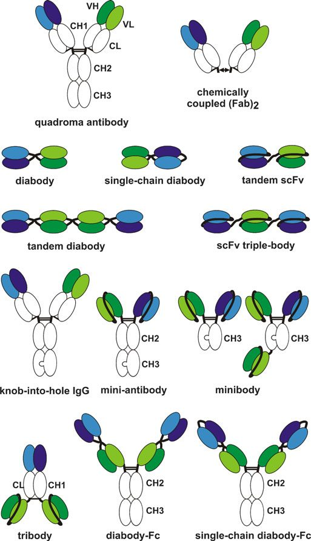
(그림 13.1; Müller and Kontermann 2007). 전통적으로 이중특이 antib
221 그림 13.1 효과세포 동원을 위한 이중특이 항체 설계의 예. VH, VL: 파란색과 초록색으로 표시된 서로 다른 특이성 항체의 항체 가변 중쇄 및 경쇄 도메인(각각 진하고 연한 색); CH1-3: 항체 일정 영역 1–3; CL: 항체 경쇄 일정 영역; Fc: crystallizable fragment; Fab: antigen binding fragment; scFv: single-chain variable domain fragments
이중특이 heterodimers 형성 강제(그림 13.1; Merchant et al. 1998). knob-into-hole technology는 또한 scFv와 Fc의 fusion proteins인 heterodimeric bispecific mini-antibodies 및 minibodies 생성에도 employed되었다(각각 CH3 domains; Shahied et al. 2004; Xie et al. 2005).
Bispecific scFv antibodies(bsscFvs)는 V-regions만으로 구성되며 antibody Fc portions가 없다. Formats에는 tandem scFvs와 single-chain diabodies 같은 single-chain molecules뿐 아니라 diabodies 또는 disulfide-stabilized variants called dual-affinity re-targeting proteins(DART; Müller and Kontermann 2007; Johnson et al. 2010) 같은 heterodimeric proteins가 있다. ~50 kDa 작은 크기와 Fc portions 부재 덕분에 potentially higher tissue penetration을 exhibit하고 various FcR에 의한 uptake를 피하며 덜 immunogenic하다고 여겨진다. 그러나 bsscFvs는 neonatal FcR(FcRn)와 interact하지 않고 small size 때문에 bloodstream에서 빠르게 cleared되어 onlyafewhours의 half-lifes를 낳는다. 따라서 plasma retention times는 size를 늘리거나, glycosylation pattern 수정, 또는 FcRn과 interact하는 human serum albumin 같은 protein domains 도입으로 연장되었다(Kontermann 2009). Fc domain을 지닌 bispecific mini-antibodies도 more favorable pharmacokinetic properties를 가질 수 있다(Xie et al. 2005).
bsscFvs의 충분한 steady-state plasma levels를 달성하는 또 다른 가능성은 continuous intravenous infusion으로 적용하는 것이다(Bargou et al. 2008).
target antigen에 대한 avidity와 affinity가 이중특이 항체의 cytotoxic potential을 critically determined한다는 중대한 발견이 있었다. different affinity로 같은 target antigen에 결합하는 bsscFv variants series 연구는 affinity 증가가 enhanced cytotoxicity와 associated함을 밝혔다(McCall et al. 2001). 마찬가지로 이중특이 항체의 cytotoxic potential은 tumor antigen에 대한 avidity 증가로 강화되었다(Shahied et al. 2004; Kellner et al. 2008). 한편 increased valency를 지닌 bispecific proteins의 several formats가 보고되었다(그림 13.1). 그러나 mice studies에 따르면 solid tumors를 겨냥하는 agents에는 affinity optimum이 존재하는 듯하다: 이 optimum을 넘는 affinities의 scFvs는 restricted tumor penetr
222 C. Kellner et al.
종양의 항체 의존 파괴(de Gast et al. 1997). 암세포 살상을 위해 T lymphocytes 외에 동원된 appropriate cells에는 natural killer(NK) cells, monocytes, macrophages, granulocytes가 있으며 각각 cell-mediated cytotoxicity 및/또는 phagocytosis로 malignant cells를 eliminate할 수 있었다.
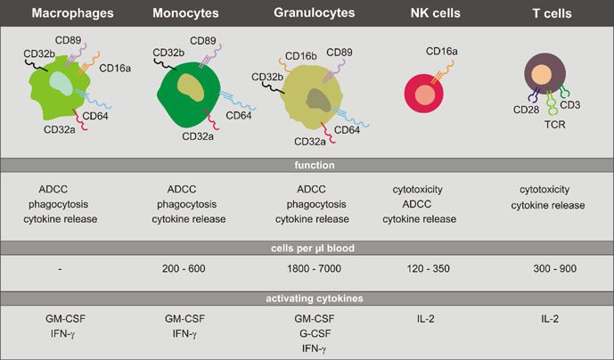
(그림 13.2).
T와 NK cells는 emerging tumor cells에 대한 host defense에서 key roles를 play한다(Smyth et al. 2002). cytotoxic Tcells의 tumors infiltration은 good prognosis 및 overall survival와 correlated했다. specific Tcell receptors(TCR)를 지닌 cytotoxic Tcells는 malignant cells에 의해 MHC class I molecules에 presented된 tumor peptides를 recognize한다. full activation을 위해 additional stimulus가 necessary하며, 이것은 통상 T cells 위 CD28과 antigen-presenting cells 또는 tumor cells 표면 B7 molecules 사이 interaction에 의해 제공된다(Alegre et al. 2001). T-cell recognition 회피를 위해 some tumor cells는 MHC class I expression을 down-regulate하여 NK cells 공격에 더 sensitive하게 된다(Smyth et al. 2002).
NK cells는 normal과 malignant cells를 discriminate할 수 있는 여러 stimulatory 및 inhibitory receptors를 express한다. Inhibitory killer cell
그림 13.2 이중특이 항체를 위한 effector cell populations. 각 effector cell population은 activating FcRs group에서 selected된 defined pool of trigger molecules를 express한다. NK cells와 macrophages 위 CD16a, G-CSF 활성화 후 monocytes, macrophages, granulocytes 위 CD64, monocytes, macrophages, granulocytes 위 CD89. CD32a는 non-cytotoxic cells에도 CD32가 express되므로 optimal trigger로 considered되지 않는다. Granulocytes는 signaling domain이 없어 cytotoxic activities를 유도하지 못하는 nonsignaling membrane-anchored isoform인 CD16b를 express한다. CD32b는 macrophages와 monocytes 위 regulatory function을 지닌 inhibitory FcR이다. CD32b는 certain individuals의 granulocytes에 의해 expressed될 수 있다. FcR negative Tcells의 cytotoxicity는 trigger
224 C. Kellner et al.
immunoglobulin-like receptors는 MHC class I molecules를 recognize하고 healthy host cells에 대한 cytolytic activities를 block한다. Cytotoxicity는 이런 inhibitory signals가 낮아지고 및/또는 malignant cells에 express된 ligands가 danger signals로 stimulatory receptors를 engage할 때 triggered된다. 더욱이 vast majority of NK cells는 CD16a를 express하고 ADCC로 tumor cells를 kill할 수 있다. 중요하게도 recent findings는 cetuximab-treated patients에서 CD56-positive cells(주로 NK cells)의 major role를 suggested했다(Marechal et al. 2010). Killing mechanisms of T and NK cells는 similar하고 death receptors on tumor cells를 engage하는 ligands의 expression 및 outer target cell membrane으로 pores를 형성하고 caspase cleavage로 apoptosis를 유도하는 perforins와 granzymes의 exocytosis를 include한다(Trapani and Smyth 2002).
Myeloid effector cells는 specific tumor recognition receptors가 없어 sensitizing antibodies 없이는 시험관 내 tumor cells를 kill할 수 없다. Antibody opsonized tumor cells는 ADCP와 ADCC로 eliminated될 수 있다. Killing은 death receptor ligands의 expression, oxidative burst, nitric oxide, proteases, membrane perforating agents를 포함한 cytotoxic mediators의 release를 involve한다(Di Carlo et al. 2001; Dale et al. 2008).
Monocytes는 constitutively CD64와 CD32a를 express하는 circulating effector cells이지만 minor fraction만 surface CD16a를 displays한다(Gordon and Taylor 2005). CD20 antibodies의 mouse models는 monocytes가 antibody-induced B cell depletion에 strongly contribute함을 입증했고(Uchida et al. 2004; Gong et al. 2005), monocytes는 인간에서도 important effector cells를 represent하는 것으로 considered된다.
Macrophages는 세 activating FcγR(CD64, CD32, CD16a)를 express하는 resident phagocytic cells이다. Classically activated M1 macrophages는 antitumor activities를 exhibit하고 leukemic cells의 immune surveillance에 implicated되었다(Allavena et al. 2008; Jaiswal et al. 2010). 흥미롭게도 rituximab과 chemotherapy로 치료받은 follicular lymphoma patients에서 high numbers of tumor infiltrating macrophages는 favorable outcome와 associated되었다
항체(그림 13.2). Ideally, trigger molecules는 (1) defined pool of resting effector cells 위 constitutively expressed되고, (2) prior stimulation 요구 없이 cellular cytotoxicity 및/또는 phagocytosis를 elicit할 수 있으며, (3) 다른 effector cells를 attract하는 immunostimulatory cytokines의 secretion을 induce해야 한다.
antibody-based therapy를 위한 effector cells로서 T cells를 Engaging하는 것은 이중특이 항체의 earliest applications 중 하나였다(Staerz et al. 1985). Tcells에 의해 express된 여러 receptors(예: CD2, CD3, CD5, CD28)가 identified되었는데, 이중특이 항체로 triggered될 때 cytokine release, proliferation, cytotoxicity를 induce함이 입증되었다(Müller and Kontermann 2007). 대부분 experience는 CD3을 겨냥하는 bispecific agents에서 available하다. CD3는 CD3 subunits와 associated된 TCR z chain에 contained된 immunoreceptor tyrosine-based activation motifs(ITAMs)를 통해 signals하는 T cell receptor(TCR) complex의 part이다(Samelson 2002). CD3을 겨냥하는 most bispecific antibodies는 full T cell activation을 위해 co-stimulatory signals를 required했으며, 예컨대 CD28 antibodies에 의해 provided되었다(Bohlen et al. 1993). CD28은 phosphorylated tyrosines와 proline-rich signaling motifs를 contain하고 co-stimulatory signals를 delivers한다. 그러나 CD28-specific superagonistic bispecific antibodies는 TCR/CD3 complex ligation 없이 T-cell activation을 induce함이 shown되었다(Grosse-Hovest et al. 2003).
FcgR-expressing cells의 동원을 위해 모든 activating FcgR(CD64, CD32a, CD16a)이 trigger molecules로 considered될 수 있다. FcR engagement는 ADCP, ADCC, antigen presentation, oxidative burst, cytokine release를 포함한 multiple biological responses를 mediate할 수 있다. Tcells 위 CD3처럼 FcgR은 ITAMs와 associated되어 있다(Nimmerjahn and Ravetch 2007). CD32a 자체는 ITAM을 contain하는 반면 CD16a와 CD64 molecules는 common FcRγ와 TCRζ chains 같은 ITAM-bearing adapter proteins와 associate된다. CD32a는 valuable trigger molecule로 considered되지 않는데
226 C. Kellner et al.
13.5 이중특이 항체를 이용한 전임상 데이터
이중특이 항체의 생물학적 활동을 입증하는 초기 결과는 quadroma antibodies 또는 (Fab’)₂ fragments로 얻어졌다. conventional monoclonal antibodies에 대한 경험에 따라 target antigens는 (1) healthy stem cells에 absent, (2) tumor cells 위 abundantly expressed, 및/또는 (3) tumor cell survival에 essential하도록 chosen되었다. murine FcR에 react하여 murine effector cells를 recruit할 수 있는 IgG antibodies와 대조적으로, 이중특이 항체를 사용한 mouse models는 더 complicated했다. 예컨대 most bispecific antibodies는 human target 및 trigger antigens에 specific했으며 murine homologues를 recognize하지 못했다. 이중특이 항체의 therapeutic efficacy를 test하기 위해 immune-deficient mice는 human tumor cells로 xenotransplanted되었고 이중특이 항체가 humaneffector cells와 함께 applied되었다. 서로 다른 human trigger molecules(CD3, CD16, CD64, CD89)에 대해 transgenic인 mice는 이중특이 항체를 생체 내 test하는 더 elegant systems를 offer할 수 있다(delaHera et al. 1991; Heijnen and Van de Winkel 1995; Li et al. 1996; van Egmond et al. 1999). 게다가 humancord bloodcell-transplanted mice(“humanizedmice”)는 더 relevant animal models를 establish할 추가 opportunities를 offer한다(Traggiai et al. 2004; Glorius et al. 2010).
다음 단락은 most commonly used trigger molecules를 겨냥하는 이중특이 항체를 이용한 cell culture 및 animal experiments 결과를 summarizes한다.
13.5.1 CD3 또는 CD28 engagement로 T세포를 동원하는 이중특이 항체
CD3-addressing bispecific antibodies는 서로 다른 tumor types의 various tumor-associated antigens를 겨냥하도록 developed되었다. 여기에는 lymphomas와 leukemias 위 idiotype, HLA-DR, CD19, CD20, CD30에 대한 molecules가 포함된다. Solid tumors는 예컨대 Her-2, epidermal growth factor receptor(EGFR), EpCAM, EGP-2에 대한 이중특이 항체로 targeted되었다(Müller and Kontermann 2007). Bispecific antibodies는 potentcytotoxic activity를 exhibited하고 striking efficacy
KRAS 및 BRAF proto-oncogenes가 mutated인 xenografts in mice(Lutterbuese et al. 2010). 이 결과들은 remarkable한데, recent analyses는 colorectal cancer patients with mutations in these proto-oncogenes가 conventional EGFR antibodies therapy에서 did not benefit함을 입증했지만(Karapetis et al. 2008), KRAS-mutated tumor cells는 ADCC에 susceptible했다(Schlaeth et al. 2010).
Triomabs는 CD3-specific rat IgG2b antibody와 tumor cell-directed mouse IgG2a antibody의 somatic hybridization을 통해 generated되는 또 하나의 attractive class of T cell-recruiting bispecific antibodies이다(Lindhofer et al. 1995). Triomabs는 두 Fv moieties로 tumor와 Tcells에 bind하지만 추가로 Fc portions를 통해 NK cells, monocytes, macrophages, granulocytes, dendritic cells 같은 FcR-expressing cells를 recruit할 수 있다(Zeidler et al. 1999). Triomabs는 실제로 trifunctional molecules로 act함이 demonstrated되었다—tumor cells, T lymphocytes, accessory cells complexes를 inducing하여 accessory cells가 cytokine secretion으로 Tcells에 co-stimulatory signals를 provide하거나 directly eliminate tumor cells. Triomabs는 prostate carcinomas, malignant ascites의 EpCAM과 CD20(Buhmann et al. 2009; Seimetz et al. 2010)을 포함한 several tumor cell targets에 produced되었다.
Promising results는 또한 CD28을 addressing하는 superagonistic bispecific antibodies로 obtained되었다. malignant melanoma cells 위 MCSP를 겨냥하는 tandem scFv rM28은 in vitro 및 in vivo에서 TCR/CD3 complex stimulation 없이 effective killing of tumor cells를 induce함이 shown되었고(Grosse-Hovest et al. 2003) CD20에 대한 another similar molecule은 B-lymphoid tumor cells의 potent lysis를 mediated했다(Otz et al. 2009).
13.5.2 CD16a 양성 NK 세포와 대식세포를 동원하는 이중특이 항체
CD16을 addressing하는 이중특이 항체는 CD16a isoform을 express하는 NK cells 및 macrophages의 recruitment로 tumor cells를 eliminate하고 promising cytotoxic activities를 demonstrated했다. Solid tumors 치료를 위해 bispecific(Fab
228 C. Kellner et al.
hematopoietic progenitor cells from cord blood transplantation으로 재구성된 hematopoietic system(Glorius et al. 2010). 흥미롭게도 [CD19×CD16]과 [CD19×CD3] diabodies는 lymphoma mouse models에서 synergistically acted하여 NK와 Tcells cooperation을 indicated했다(Kipriyanov et al. 2002). 게다가 [CD30×CD16] diabodies는 xenotransplanted Hodgkinlymphoma mouse models에서 생체 내 tumor growth regression을 induced했다(Arndt et al. 1999).
13.5.3 CD64 양성 골수성 효과세포를 동원하는 이중특이 항체
CD64에 대한 이중특이 항체는 monocytes, macrophages, IFN-γ 또는 G-CSF activated granulocytes를 recruit한다. [CD64×Her2] bispecific antibody는 breast, ovarian, lung cancer cells killing을 monocytes, macrophages, activated granulocytes를 통해 ADCP 및 ADCC로 triggered했다(Keler et al. 1997; Stockmeyer et al. 1997). 흥미롭게도 CD64-addressing molecules는 G-CSF treated patients whole blood가 effector cell source로 healthy donors blood와 compared될 때 respective [Her2×CD16] 및 [Her2×CD32] bispecific antibodies보다 more efficacious했다. 이 difference는 G-CSF primed blood에서 higher monocyte 및 granulocyte counts, increased effector cell activation, higher CD64 expression levels로 explained되었다(Stockmeyer et al. 1997). Bispecific CD64×CD30₂ 및 diabodies는 Hodgkinlymphoma cells의 ADCC 및 ADCP를 monocytes 및 macrophages에 의해 respectively induced했다(Sundarapandiyan et al. 2001; Ranft et al. 2009). Human CD64-transgenic mice model에서 differentlymphoma-associated antigens에 대한 bispecific (Fab’)₂ antibodies set가 redirecting G-CSF-activated granulocytes를 위해 tested되었다(Honeychurch et al. 2000). idiotype을 겨냥하는 bispecific construct는 highest efficacy를 가졌고 long-term Tcell tumor immunity를 provided했다. 흥미롭게도 unexpected antigen restriction for granulocyte-mediated lysis of B-lymphoid tumor cells가 관찰되었다. HLA class II, associated invariant chain CD74, 또는 HLA class II variants에 대한 specificities를 지닌 monoclonal 및 CD64-addressing bispecific antibodies가 tumor k를 위한 granulocytes를 effectively triggered한 반면
Her2에 대한 (Fab’)₂ conjugates는 breast cancer 및 renal cell carcinoma cells의 granulocyte-mediated killing을 efficiently induced했다(Valerius et al. 1997; Deo et al. 1998; Elsasser et al. 1999). [EGFR×CD89] bispecific antibody는 renal cell carcinoma의 잠재적 치료를 위해 developed되었다(Stadick et al. 2002). lymphoma cells 위 서로 다른 tumor-associated antigens를 겨냥하면서 CD89를 addressing하는 several bispecific antibodies 비교에서 HLA class II는 highest potency를 지닌 target으로 identified될 뿐 아니라 bispecific [CD20×CD89] molecule-induced granulocyte-mediated killing도 있었다. 이것은 IgG1 또는 FcgR을 engage하는 bispecific antibodies에서는 observed되지 않았다(Stockmeyer et al. 1997). Whole blood assays에서 G-CSF 또는 GM-CSF therapy 중 환자 blood가 investigated될 때 target cell lysis가 increased되었다. 이 growth factors는 total leukocyte counts를 늘려 CD89-positive effector cells의 absolute numbers를 dramatically increase하고 동시에 individual cells를 activate하는데, 둘 다 observed increased efficacy에 account할 수 있다(Stockmeyer et al. 2001). 최근 bispecific tandem scFv [HLAclassII×CD89]가 같은 hybridoma에서 유래한 chimeric HLAclassII antibody보다 higher potency로 lymphoma cells를 efficiently eliminate함이 demonstrated되었다(Guettinger et al. 2010). 게다가 bispecific CD89×CD30₂ conjugate는 Hodgkinlymphoma cells의 granulocyte- 및 monocyte-mediated killing을 induce할 수 있었다(Sundarapandiyan et al. 2001). 우리가 아는 한 CD89-directed bispecific molecules의 tumor cells killing에 대한 생체 내 potency는 지금까지 investigated되지 않았지만 humanCD89에 대해 transgenic인 mice는 available하며 animal studies에서 suchmolecules testing에 attractive할 수 있다(vanEgmond et al. 1999).
13.6 이중특이 항체를 이용한 임상 경험
encouraging preclinical studies 결과로 인해 different formats의 severalbispecificantibodies가 clinical trials에 entered했다. 지금까지 bispecificantibodies engage
230 C. Kellner et al.
표 13.1 세포 면역치료용 이중특이 항체 임상시험ᵃ
| 참고문헌 또는 ClinicalTrials.gov 식별자 | 이중특이성 항체 | 포맷 | 적응증 | 임상 단계 |
|---|---|---|---|---|
| (NCT00938626; NCT00521261) | CD20Bi/[CD20×CD3] | Cross-linked IgG | 형질세포 신생물; NHL | Phase I |
| deGast et al. (1995) | SHR-1/[CD19×CD3] | IgG | NHL | Phase I |
| Lum et al. (2003) (NCT00027807) | OKT3xherceptin/[CD3×Her2] | IgG | 유방암 | Phase I/II |
| Manzke et al. (2001) | OKT3x6A4/[CD19×CD3] | IgG | NHL | Phase I |
| Canevari et al. (1995) | OC/TR/[FR×CD3] | F(ab’)₂ | 난소암 | Phase I/II |
| Kroesen et al. (1994) | Bis-1/[EGP-2×CD3] | F(ab’)₂ | 신장암 | Phase I |
| (NCT00522457) | Ertumaxumab/[Her2×CD3] | Triomab | 유방암 | Phase II |
| Buhmann et al. (2009) | Bi20(fBTA05)/[CD20×CD3] | Triomab | NHL | Phase I |
| Seimetz et al. (2010) | catumaxomab/[EpCAM×CD3] | Triomab | EpCAM 양성 종양; 악성 복수 | 승인 |
| Bargou et al. (2008), Topp et al. (2009) | blinatumumab/[CD19×CD3] | Tandem scFv | NHL; B-ALL | Phase I 및 II |
| Fiedler et al. (2010) | MT110/[EpCAM×CD3] | Tandem scFv | EpCAM 양성 종양 | Phase I |
| (NCT00204594) | rM28/[MCSP×CD28] | Tandem scFv | 악성 흑색종 | Phase I/II |
| Borghaei et al. (2007) | 2B1/[Her2×CD16] | IgG | Her2 양성 종양 | Phase Ib/II |
| Hartmann et al. (1998) | HRS-3/A9/[CD30×CD16] | IgG | 호지킨 림프종 | Phase I/II |
| Borchmann et al. (2002) | H22xKi-4/[CD30×CD64] | F(ab’)₂ | 호지킨 림프종 | Phase I |
| Posey et al. (1999), James et al. (2001) | MDX-H210/[Her2×CD64] | F(ab’)₂ | Her2 양성 종양 | Phase II |
| Fury et al. (2008); (NCT00014560) | MDX-447/[EGFR×CD64] | F(ab’)₂ | EGFR 양성 종양 및 교모세포종 | Phase I |
| Chen et al. (1999) | [CD64×CD33]/[4g7xh22] | Cross-linked IgG | AML | Phase I |
| (NCT00014560) | [CD19×CD64] | F(ab’)₂ | NHL; CLL | Phase I |
ᵃ NHL 비호지킨림프종; B-ALL 급성 B-림프모구성백혈병; AML 급성골수성백혈병; CLL 만성림프구성백혈병
quadroma antibodies 또는 (Fab’)₂ fragments. 일부 clinical responses가 reported되었지만 cytokine release와 HAMA responses로 problems가 발생했다. 게다가 antibody production problems가 more extensive studies를 prevented했다(Müller and Kontermann 2007). 한편 different bispecific formats가 B-lymphoid malignancies 또는 solid tumors 환자에서 tested되었다(표 13.1).
More recently remarkable results는 CD19과 EpCAM을 respectively 겨냥하는 BiTE molecule blinatumumab과 triomab trifunctional antibody catumaxomab으로 obtained되었다. Blinatumumab은 relapsed non-Hodgkin’s lymphomas 환자 phase I trial에서 tested되었다(Bargou et al. 2008). 38명 patients가 0.0005~0.06 mg/m² daily doses를 4~8주 continuous intravenous infusions로 받았다. blinatumumab serum levels는 1 ng/ml 이하였다. Common side effects에는 leukopenia/lymphopenia, chills, fever, pyrexia, C-reactive protein increase가 included되었고 continued treatment 중 often normalized되었다. 인상적으로 11 major responses가 observed되었으며 여기에는 four complete 및 seven partial responses가 포함되었다. B-precursor acute lymphoblasticleukemias minimal residual disease(MRD) 환자의 phase II study 초기 결과는 blinatumumab이 rare bone marrow-located MRD cells를 eliminate할 수 있음을 suggested했다(Topp et al. 2009). Complete molecular responses는 0.015 mg/m²/day blinatumomab 용량 첫 4주 cycle 동안 16명 평가 가능 환자 중 13명에서 achieved되었다(15장 참조).
EpCAM을 겨냥하는 trifunctional bispecific triomab antibody catumaxomab은 EpCAM-expressing carcinomas 환자의 malignant ascites 치료에 대해 표준 치료가 없을 때 2009년 European Union drug approval을 받았다(Seimetz et al. 2010). Catumaxomab treatment는 ascites production을 감소시키며 robust elimination of EpCAM-positive tumor cells를 수반했다. 대부분의 환자가 human anti-bispecific antibody responses(HABA)를 developed했으므로 HABA-positive 환자에서 catumaxomab 반복 투여 가능성이 현재 investigated 중이다. Catumaxomab은 또한 ovarian 및 gastric cancer를 포함한 other indications clinical trials에서 tested되었다. Her2와 CD20을 각각 겨냥하는 ertumaxumab과 Bi20, 두 other triomabs가 clinical investigation 중이다(Kiewe et al. 2006; Buhmann et al. 2009; 16장 참조).
MCSP를 겨냥하는 bispecific tandem scFv rM28로 CD28-addressing molecule이 clinical trials에 entered하여 metastaticmalignantmelanoma 환자 phase I/II clinical study에서 현재 tested되고 있다(Grosse-Hovest et al. 2003). Superagonistic CD28 antibody가 healthy volunteers에서 severe cytokine release를 induce했으므로(Suntharalingam et al. 2006) 이 접근법은 particularly careful evaluation을 requires한다. 그러나 rM2
232 C. Kellner et al.
발진. 그러나 아홉 명 환자에서 HAMA-responses development로 이 이중특이 항체로 further treatment는 possible하지 않았다.
2B1은 [Her2×CD16] bispecific quadroma antibody이다(Weiner et al. 1993a,b). Multiple-dose phase 1 clinical trial에서 15명 Her2-expressing solid tumors(예: colon, kidney, breast carcinomas) 환자가 최대 5 mg/m² doses의 2B1을 받았다. 2B1은 mean serum half-life of 20 h였다. Patients는 fevers, chills, nausea, vomiting, transient leukopenia 같은 several nondose-limiting toxicities를 experienced했지만 thrombocytopenia는 5 mg/m²에서 dose-limiting이었다. HAMA responses는 14명 환자에서 developed되었다. TNFα, IL-6, IL-8 같은 secondary cytokines plasma levels가 strongly increased하고 GM-CSF와 IFN-γ levels smaller increases가 reported되었다. 개별 환자에서 only minor clinical responses만 observed되었다.
Phase 1b/2 clinical trial에서 20명 metastatic breast cancer women이 2B1으로 treated되었다(Borghaei et al. 2007). 8명 중 3명에서 observed된 dose-limiting systemic toxicities로 인해 dose가 2.5에서 1 mg/m²로 reduced되었다. Toxicities는 2B1에 의한 FcR cross-linking에 attributed되어 leukocytes activation 및 cytokine induction을 초래했다. Objective responses는 observed되지 않았지만 maximum doses를 받은 patients는 intracellular 및 extracellular domains of Her-2 모두에 대한 antibodies를 developed했다. 이것은 2B1이 humoral immune responses를 elicited함을 indicate한다. 게다가 tumor로 increased infiltration of total leukocytes 및 NK cells가 reported되었다.
13.6.3 CD64 양성 골수성 효과세포를 engage하는 이중특이 항체 임상연구
CD64-targeting 이중특이 항체를 이용한 임상 연구는 chemically linked (Fab’)₂ 또는 IgG conjugates로 conducted되었으며 solid tumors 위 EGFR 또는 Her2, hematological malignancies 위 CD30과 CD33을 directed했다(Curnow 1997 및 표 13.1). CD30에 대한 (Fab’)₂ conjugate인 H22xKi-4는 10명 refractory Hodgkin’s lymphoma 환자 phase 1 clinical study에서 analyzed되었다(Borchmann et al. 2002). Patients는 intravenously received es
MDX-447 단독은 일반적으로 잘 tolerated되었으며 maximum tolerated dose of 30 mg/m²였다. 비교하면 MDX-447과 G-CSF 조합은 덜 tolerated되었고 MDX-447 dose escalation beyond 3.5 mg/m²는 possible하지 않았다. 두 arm 모두 hypotension이 dose-limiting toxicity였다. 두 군에서 response 평가 가능한 58명 환자 중 35명이 stable disease였고 23명이 progression을 experienced했다. No objective responses were observed in this study.
Her2를 겨냥하는 bispecific (Fab’)₂ conjugates인 MDX-210과 partially humanized variant MDX-H210으로 several studies가 performed되었다. MDX-210은 advanced breast 또는 ovarian cancer 환자 15명 single-dose phase I study에서 evaluated되었다. Patients는 0.35~10 mg/m² increasing doses의 MDX-210 infusions를 received했으며 grade 1 및 2 fevers, malaise, transient monocytopenia/lymphocytopenia가 most common side effects로 잘 tolerated되었다(Valone et al. 1995). Maximal tolerated dose는 7.5 mg/m²로 defined되었다. MDX-210 적용은 elevated plasma levels of TNF-a, IL-6, G-CSF, neopterin을 accompanied했다. Ten assessable patients 중 one partial 및 one mixed tumor response가 reported되었다. MDX-H210은 single-dose phase I study(Repp et al. 2003)에서 G-CSF와 combination으로 evaluated되었다. Thirty breast cancer women은 subcutaneous injections of G-CSF(5 μg/kg/day)를 8일간 received하고 G-CSF cycle day 4에 0.35~200 μg/m² doses의 single infusion of MDX-210을 받았다. Dose-limiting toxicity는 not reached되었다. Fever/chills 및 nausea/vomiting이 main side effects였다—elevated plasma levels of TNF-a 및 IL-6와 timely related하며 anti-pyretics 및 anti-emetics로 symptomatic therapy에 responded했다. 100 및 200 μg/m² doses로 treated된 patients에서 MDX-H210 plasma levels는 1 μg/ml를 exceeded했으며 infusion 후 day 4까지 peripherial blood myeloid cells 위 CD64의 50% saturation을 accompanied했다. Monocytes 및 granulocytes에 의한 tumor infiltration은 immunohistochemistry로 confirmed되었다. Clinical responses는 observed되지 않았지만 11명 patients가 stabl
234 C. Kellner et al.
지금까지 MDX-H210으로 가장 유망한 데이터는 전립선암 환자 clinical phase II study에서 obtained되었다(James et al. 2001). Twenty-four hormone-refractory prostate cancer patients는 GM-CSF(5 μg/kg/day for 4 days) 후 6 weekly infusions of MDX-H210(15 μg/m²)으로 treated되었다. Side effects는 다른 studies에서 reported된 대로 generally mild했다. Twenty assessable patients 중 seven은 median duration of 128 days로 PSA declines exceeding 50%를 had했고 relative PSA velocity는 18명 evaluable patients 중 16명에서 decreased했다. 중요하게도 pain 평가 가능 12명 환자 중 6명은 improvements in their pain scores를 had했다. 그러나 independent phase II trial은 GM-CSF 단독이 prostate cancer patients PSA levels 감소에 efficacious함을 showed하여 MDX-H-210 결과 해석을 difficult하게 만들었다(Small et al. 1999).
13.7 결론
catumaxomab과 blinatumumab 최근 임상 결과들은 종양 면역요법에서 이중특이 항체의 치료 잠재력을 입증했다. 이런 T-cell recruiting 이중특이 항체들이 substantial clinical effects를 produced한 반면 NK 또는 골수성 효과세포 위 CD16 또는 CD64를 engage하는 이중특이 항체에 대한 convincing clinical benefits는 기술되지 않았다. 그러나 후기 constructs를 이용한 임상 경험은 first-generation bispecific IgG antibodies 또는 F(ab’)₂ fragments studies로 limited되었으며 둘 다 ideal formats를 represent하지 않을 수 있다. FcR을 겨냥하는 재조합 이중특이 분자들은 potent 시험관 내 activity를 demonstrated했지만 clinically evaluated되지 않았다. 위에 outlined된 바와 같이 enhanced cytotoxic functions 및 improved pharmacokinetic characteristics를 지닌 formats가 included되며 improved clinical efficacy로 translate될 것으로 expected된다. 이런 새로운 분자들과의 further studies가 warranted해 보인다.
References
Abes R, Gelize E, Fridman WH, Teillaud JL (2010) Long-lasting antitumor protection by anti-CD20 antibody through cellular immune response. Blood 116(6):926–934 Bargou R, Leo E, Zugmaier G, Klinger M, Goebeler M, Knop S, Noppeney R, Viardot A, Hess G, Schuler M, Einsele H, Brandl C, Wolf A, Kirchinger P, Klappers P, Schmidt M, Riethmuller G, Reinhardt C, Baeuerle PA, Kufer P (2008) Tumor regression in cancer patients by very low doses of a T cell-engaging antibody. Science 321(5891):974–977 Bibeau F, Lopez-Crapez E, Di Fiore F, Thezenas S, Ychou M, Blanchard F, Lamy A, Penault-Llorca F, Frebourg T, Michel P, Sabourin JC, Boissiere-Michot F (2009) Impact of Fc {gamma}RIIa-Fc{gamma}RIIIa polymorphisms and KRAS mutations on the clinical outcome of patients with metastatic colorectal cancer treated with cetuximab plus irinotecan. J Clin Oncol 27(7):1122–1129 Bohlen H, Hopff T, Manzke O, Engert A, Kube D, Wickramanayake PD, Diehl V, Tesch H (1993) Lysis of malignant B cells from patients with B-chronic lymphocytic leukemia by autologous T cells activated with CD3×CD19 bispecific antibodies in combination with bivalent CD28 antibodies. Blood 82(6):1803–1812 Borchmann P, Schnell R, Fuss I, Manzke O, Davis T, Lewis LD, Behnke D, Wickenhauser C, Schiller P, Diehl V, Engert A (2002) Phase 1 trial of the novel bispecific molecule H22xKi-4 in patients with refractory Hodgkin lymphoma. Blood 100(9):3101–3107 Borghaei H, Alpaugh RK, Bernardo P, Palazzo IE, Dutcher JP, Venkatraj U, Wood WC, Goldstein L, Weiner LM (2007) Induction of adaptive Anti-HER2/neu immune responses in a Phase 1B/2 trial of 2B1 bispecific murine monoclonal antibody in metastatic breast cancer (E3194): a trial coordinated by the Eastern Cooperative Oncology Group. J Immunother 30(4):455–467 Bortoletto N, Scotet E, Myamoto Y, D’Oro U, Lanzavecchia A (2002) Optimizing anti-CD3 affinity for effective T cell targeting against tumor cells. Eur J Immunol 32(11):3102–3107 Bruenke J, Fischer B, Barbin K, Schreiter K, Wachter Y, Mahr K, Titgemeyer F, Niederweis M, Peipp M, Zunino SJ, Repp R, Valerius T, Fey GH (2004) A recombinant bispecific single-chain Fv antibody against HLA class II and FcgammaRIII (CD16) triggers effective lysis of lymphoma cells. Br J Haematol 125(2):167
236 de Gast GC, Haagen IA, van Houten AA, Klein SC, Duits AJ, de Weger RA, Vroom TM, Clark MR, Phillips J, van Dijk AJ et al (1995) CD8 T cell activation after intravenous administration of CD3×CD19 bispecific antibody in patients with non-Hodgkin lymphoma. Cancer Immunol Immunother 40(6):390–396 de Gast GC, vandeWinkel JG, Bast BE (1997) Clinical perspectives of bispecific antibodies in cancer. Cancer Immunol Immunother 45(3–4):121–123 de Haij S, Jansen JH, Boross P, Beurskens FJ, Bakema JE, Bos DL, Martens A, Verbeek JS, Parren PW, van de Winkel JG, Leusen JH (2010) In vivo cytotoxicity of type I CD20 antibodies critically depends on Fc receptor ITAM signaling. Cancer Res 70(8):3209–3217 dela Hera A, Muller U, Olsson C, Isaaz S, Tunnacliffe A (1991) Structure of the T cell antigen receptor (TCR): two CD3 epsilon subunits in a functional TCR/CD3 complex. J Exp Med 173(1):7–17 Deo YM, Graziano RF, Repp R, van de Winkel JG (1997) Clinical significance of IgG Fc receptors and Fc gammaR-directed immunotherapies. Immunol Today 18(3):127–135 Deo YM, Sundarapandiyan K, Keler T, Wallace PK, Graziano RF (1998) Bispecific molecules directed to the Fc receptor for IgA (Fc alpha RI, CD89) and tumor antigens efficiently promote cell-mediated cytotoxicity of tumor targets in whole blood. J Immunol 160(4):1677–1686 Di Carlo E, Forni G, Lollini P, Colombo MP, Modesti A, Musiani P (2001) The intriguing role of polymorphonuclear neutrophils in antitumor reactions. Blood 97(2):339–345 Dreier T, Lorenczewski G, Brandl C, Hoffmann P, Syring U, Hanakam F, Kufer P, Riethmuller G, Bargou R, Baeuerle PA (2002) Extremely potent, rapid and costimulation-independent cytotoxic T-cell response against lymphoma cells catalyzed by a single-chain bispecific antibody. Int J Cancer 100(6):690–697 Dreier T, Baeuerle PA, Fichtner I, Grün M, Schlereth B, Lorenczewski G, Kufer P, Lutterbuse R, Riethmuller G, Gjorstrup P, Bargou RC (2003) T cell costimulus-independent and very efficacious inhibition of tumor growth in mice bearing subcutaneous or leukemic human B cell lymphoma xenografts by a CD19-/CD3-bispecific single-chain anti
Gong Q, Ou Q, Ye S, Lee WP, Cornelius J, Diehl L, Lin WY, Hu Z, Lu Y, Chen Y, Wu Y, Meng YG, Gribling P, Lin Z, Nguyen K, Tran T, Zhang Y, Rosen H, Martin F, Chan AC (2005) Importance of cellular microenvironment and circulatory dynamics in B cell immunotherapy. J Immunol 174(2):817–826 Gordon S, Taylor PR (2005) Monocyte and macrophage heterogeneity. Nat Rev Immunol 5(12):953–964 Grosse-Hovest L, Hartlapp I, Marwan W, Brem G, Rammensee HG, Jung G (2003) A recombinant bispecific single-chain antibody induces targeted, supra-agonistic CD28-stimulation and tumor cell killing. Eur J Immunol 33(5):1334–1340 Grosse-Hovest L, Wick W, Minoia R, Weller M, Rammensee HG, Brem G, Jung G (2005) Supraagonistic, bispecific single-chain antibody purified from the serum of cloned, transgenic cows induces T-cell-mediated killing of glioblastoma cells in vitro and in vivo. Int J Cancer 117(6):1060–1064 Guettinger Y, Barbin K, Peipp M, Bruenke J, Dechant M, Horner H, Thierschmidt D, Valerius T, Repp R, Fey GH, Stockmeyer B (2010) A recombinant bispecific single-chain fragment variable specific for HLA class II and Fc alpha RI (CD89) recruits polymorphonuclear neutrophils for efficient lysis of malignant B lymphoid cells. J Immunol 184(3):1210–1217 Hartmann F, Renner C, Jung W, Pfreundschuh M (1998) Anti-CD16/CD30 bispecific antibodies as possible treatment for refractory Hodgkin’s disease. Leuk Lymphoma 31(3–4):385–392 Heijnen IA, Vande Winkel JG (1995) A human FcγRI/CD64 transgenic model for in vivo analysis of (bispecific) antibody therapeutics. J Hematother 4(5):351–356 Heijnen IA, van Vugt MJ, Fanger NA, Graziano RF, de Wit TP, Hofhuis FM, Guyre PM, Capel PJ, Verbeek JS, van de Winkel JG (1996) Antigen targeting to myeloid-specific human Fc gamma RI/CD64 triggers enhanced anti
Kimberly RP, Wu J, Gibson AW, Su K, Qin H, Li X, Edberg JC (2002) Diversity and duplicity: human FCgamma receptors in host defense and autoimmunity. Immunol Res 26(1–3):177–189 Kipriyanov SM, Cochlovius B, Schafer HJ, Moldenhauer G, Bahre A, Le Gall F, Knackmuss S, Little M (2002) Synergistic antitumor effect of bispecific CD19×CD3 and CD19×CD16 diabodies in a preclinical model of non-Hodgkin’s lymphoma. J Immunol 169(1):137–144 Kontermann RE (2009) Strategies to extend plasma half-lives of recombinant antibodies. BioDrugs 23(2):93–109 Kroesen BJ, Buter J, Sleijfer DT, Janssen RA, van der Graaf WT, The TH, de Leij L, Mulder NH (1994) Phase I study of intravenously applied bispecific antibody in renal cell cancer patients receiving subcutaneous interleukin 2. Br J Cancer 70(4):652–661 Kugler M, Stein C, Kellner C, Mentz K, Saul D, Schwenkert M, Schubert I, Singer H, Oduncu F, Stockmeyer B, Mackensen A, Fey GH (2010) A recombinant trispecific single-chain Fv derivative directed against CD123 and CD33 mediates effective elimination of acute myeloid leukaemia cells by dual targeting. Br J Haematol 150(5):574–586 Li M, Wirthmueller U, Ravetch JV (1996) Reconstitution of human Fc gamma RIII cell type specificity in transgenic mice. J Exp Med 183(3):1259–1263 Lindhofer H, Mocikat R, Steipe B, Thierfelder S (1995) Preferential species-restricted heavy/light chain pairing in rat/mouse quadromas. Implications for a one-step purification of bispecific antibodies. J Immunol 155(1):219–225 Loffler A, Kufer P, Lutterbuse R, Zettl F, Daniel PT, Schwenkenbecher JM, Riethmuller G, Dorken B, Bargou RC (2000) A recombinant bispecific single-chain antibody, CD19×CD3, induces rapid and high lymphoma-directed cytotoxicity by unstimulated T lymphocytes. Blood 95(6):2098–2103 Lu H, Shi M, Wang M, Xie Z, Hu M, Yu M, Shen B, Ma Y, Guo N (2008) In vitro and in vivo antitumor effect of a tri
Musolino A, Naldi N, Bortesi B, Pezzuolo D, Capelletti M, Missale G, Laccabue D, Zerbini A, Camisa R, Bisagni G, Neri TM, Ardizzoni A (2008) Immunoglobulin G fragment C receptor polymorphisms and clinical efficacy of trastuzumab-based therapy in patients with HER-2/neu-positive metastatic breast cancer. J Clin Oncol 26(11):1789–1796
Nimmerjahn F, Ravetch JV (2005) Divergent immunoglobulin subclass activity through selective Fc receptor binding. Science 310(5753):1510–1512
Nimmerjahn F, Ravetch JV (2007) Antibodies, Fc receptors and cancer. Curr Opin Immunol 19(2):239–245
Oldham RK, Dillman RO (2008) Monoclonal antibodies in cancer therapy: 25 years of progress. J Clin Oncol 26(11):1774–1777
Otz T, Grosse-Hovest L, Hofmann M, Rammensee HG, Jung G (2009) A bispecific single-chain antibody that mediates target cell-restricted, supra-agonistic CD28 stimulation and killing of lymphoma cells. Leukemia 23(1):71–77
Park S, Jiang Z, Mortenson ED, Deng L, Radkevich-Brown O, Yang X, Sattar H, Wang Y, Brown NK, Greene M, Liu Y, Tang J, Wang S, Fu YX (2010) The therapeutic effect of anti-HER2/neu antibody depends on both innate and adaptive immunity. Cancer Cell 18(2):160–170
Posey JA, Raspet R, Verma U, Deo YM, Keller T, Marshall JL, Hodgson J, Mazumder A, Hawkins MJ (1999) A pilot trial of GM-CSF and MDX-H210 in patients with erbB-2-positive advanced malignancies. J Immunother 22(4):371–379
Presta LG (2008) Molecular engineering and design of therapeutic antibodies. Curr Opin Immunol 20(4):460–470
Pullarkat V, Deo Y, Link J, Spears L, Marty V, Curnow R, Groshen S, Gee C, Weber JS (1999) A phase I study of a HER2/neu bispecific antibody with granulocyte-colony-stimulating factor in patients with metastatic breast cancer that overexpresses HER2/neu. Cancer Immunol Immunother 48(1):9–21
Ranft K, Thepen T, Fischer R, Barth S, Stocker M (2009) Recombinant bispecific single chain antibody fragments induce Fc gamma-receptor-mediated elimination of CD30+ lymphoma cells. Cancer Lett 282(2):187–194
Reichert JM, Rosensweig CJ, Faden LB, Dewitz MC (2005) Monoclonal antibody successes in the clinic. Nat Biotechnol 23(9):1073–1078
Repp R, van Ojik HH, Valerius T, Groenewegen G, Wieland G, Oetzel C, Stockmeyer B, Becker W, Eisenhut M, Steininger H, Deo YM, Blijham GH, Kalden JR, van de Winkel JG, Gramatzki M (2003) Phase I clinical trial of the bispecific antibody MDX-H210 (anti-FcγRI anti-HER-2/neu) in combination with Filgrastim (G-CSF) for treatment of advanced breast cancer. Br J Cancer 89(12):2234–2243
Samelson LE (2002) Signal transduction mediated by the T cell antigen receptor: the role of adapter proteins. Annu Rev Immunol 20:371–394
Schlaeth M, Berger S, Derer S, Klausz K, Lohse S, Dechant M, Lazar GA, Schneider-Merck T, Peipp M, Valerius T (2010) Fc-engineered EGF-R antibodies mediate improved antibody-dependent cellular cytotoxicity (ADCC) against KRAS-mutated tumor cells. Cancer Sci 101(5):1080–1088
Schlereth B, Quadt C, Dreier T, Kufer P, Lorenczewski G, Prang N, Brandl C, Lippold S, Cobb K, Brasky K, Leo E, Bargou R, Murthy K, Baeuerle PA (2006) T-cell activation and B-cell depletion in chimpanzees treated with a bispecific anti-CD19/anti-CD3 single-chain antibody construct. Cancer Immunol Immunother 55(5):503–514
Segal DM, Weiner GJ, Weiner LM (1999) Bispecific antibodies in cancer therapy. Curr Opin Immunol 11(5):558–562
Seimetz D, Lindhofer H, Bokemeyer C (2010) Development and approval of the trifunctional antibody catumaxomab (anti-EpCAM anti-CD3) as a targeted cancer immunotherapy. Cancer Treat Rev 36(6):458–467
Shahied LS, Tang Y, Alpaugh RK, Somer R, Greenspon D, Weiner LM (2004) Bispecific minibodies targeting HER2/neu and CD16 exhibit improved tumor lysis when placed in a divalent tumor antigen binding format. J Biol Chem 279(52):53907–53914
Shan D, Ledbetter JA, Press OW (1998) Apoptosis of malignant human B cells by ligation of CD20 with monoclonal antibodies. Blood 91(5):1644–1652
Small EJ, Reese DM, Um B, Whisenant S, Dixon SC, Figg WD (1999) Therapy of advanced prostate cancer with granulocyte macrophage colony-stimulating factor. Clin Cancer Res 5(7):1738–1744
Smyth MJ, Hayakawa Y, Takeda K, Yagita H (2002) New aspects of natural-killer-cell surveillance and therapy of cancer. Nat Rev Cancer 2(11):850–861
Stadick H, Stockmeyer B, Kuhn R, Schrott KM, Kalden JR, Glennie MJ, van de Winkel JG, Gramatzki M, Valerius T, Elsasser D (2002) Epidermal growth factor receptor and g250: useful target antigens for antibody mediated cellular cytotoxicity against renal cell carcinoma? J Urol 167(2 Pt 1):707–712
Staerz UD, Kanagawa O, Bevan MJ (1985) Hybrid antibodies can target sites for attack by T cells. Nature 314(6012):628–631
Stockmeyer B, Valerius T, Repp R, Heijnen IA, Buhring HJ, Deo YM, Kalden JR, Gramatzki M, van de Winkel JG (1997) Preclinical studies with Fc(gamma)R bispecific antibodies and granulocyte colony-stimulating factor-primed neutrophils as effector cells against HER-2/neu overexpressing breast cancer. Cancer Res 57(4):696–701
Stockmeyer B, Elsasser D, Dechant M, Repp R, Gramatzki M, Glennie MJ, van de Winkel JG, Valerius T (2001) Mechanisms of G-CSF- or GM-CSF-stimulated tumor cell killing by Fc receptor-directed bispecific antibodies. J Immunol Methods 248(1–2):103–111
Sundarapandiyan K, Keler T, Behnke D, Engert A, Barth S, Matthey B, Deo YM, Graziano RF (2001) Bispecific antibody-mediated destruction of Hodgkin’s lymphoma cells. J Immunol Methods 248(1–2):113–123
Suntharalingam G, Perry MR, Ward S, Brett SJ, Castello-Cortes A, Brunner MD, Panoskaltsis N (2006) Cytokine storm in a phase 1 trial of the anti-CD28 monoclonal antibody TGN1412. N Engl J Med 355(10):1018–1028
Taskinen M, Karjalainen-Lindsberg ML, Nyman H, Eerola LM, Leppa S (2007) A high tumor-associated macrophage content predicts favorable outcome in follicular lymphoma patients treated with rituximab and cyclophosphamide-doxorubicin-vincristine-prednisone. Clin Cancer Res 13(19):5784–5789
Topp MS, Zugmaier G, Goekbuget N, Kufer P, Mariele Goebeler, Klinger M, Degenhard E, Baeuerle PA, Schmidt M, Nagorsen D, Neumann S, Horst HA, Raff T, Viardot A, Stelljes M, Schmid M, Ottmann OG, Burmeister T, Einsele H, Riethmueller G, Hoelzer D, Bargou RC (2009) Report of a phase II trial of single-agent BiTE® antibody blinatumomab in patients with minimal residual disease (MRD) positive B-precursor acute lymphoblastic leukemia (ALL). Blood 114:346 (abstract 840)
Traggiai E, Chicha L, Mazzucchelli L, Bronz L, Piffaretti JC, Lanzavecchia A, Manz MG (2004) Development of a human adaptive immune system in cord blood cell-transplanted mice. Science 304(5667):104–107
Trapani JA, Smyth MJ (2002) Functional significance of the perforin/granzyme cell death pathway. Nat Rev Immunol 2(10):735–747
Uchida J, Hamaguchi Y, Oliver JA, Ravetch JV, Poe JC, Haas KM, Tedder TF (2004) The innate mononuclear phagocyte network depletes B lymphocytes through Fc receptor-dependent mechanisms during anti-CD20 antibody immunotherapy. J Exp Med 199(12):1659–1669
Valerius T, Stockmeyer B, van Spriel AB, Graziano RF, van den Herik-Oudijk IE, Repp R, Deo YM, Lund J, Kalden JR, Gramatzki M, van de Winkel JG (1997) Fc alpha RI (CD89) as a novel trigger molecule for bispecific antibody therapy. Blood 90(11):4485–4492
Valone FH, Kaufman PA, Guyre PM, Lewis LD, Memoli V, Deo Y, Graziano R, Fisher JL, Meyer L, Mrozek-Orlowski M et al (1995) Phase Ia/Ib trial of bispecific antibody MDX-210 in patients with advanced breast or ovarian cancer that overexpresses the proto-oncogene HER-2/neu. J Clin Oncol 13(9):2281–2292
van de Winkel JG, Capel PJ (1993) Human IgG Fc receptor heterogeneity: molecular aspects and clinical implications. Immunol Today 14(5):215–221
van Egmond M, van Vuuren AJ, Morton HC, van Spriel AB, Shen L, Hofhuis FM, Saito T, Mayadas TN, Verbeek JS, van de Winkel JG (1999) Human immunoglobulin A receptor (FcαRI, CD89) function in transgenic mice requires both FcR γ chain and CR3 (CD11b/CD18). Blood 93(12):4387–4394
van Vugt MJ, Kleijmeer MJ, Keler T, Zeelenberg I, van Dijk MA, Leusen JH, Geuze HJ, van de Winkel JG (1999) The FcγRIa (CD64) ligand binding chain triggers major histocompatibility complex class II antigen presentation independently of its associated FcR γ-chain. Blood 94(2):808–817
Wang SY, Veeramani S, Racila E, Cagley J, Fritzinger DC, Vogel CW, St John W, Weiner GJ (2009) Depletion of the C3 component of complement enhances the ability of rituximab-coated target cells to activate human NK cells and improves the efficacy of monoclonal antibody therapy in an in vivo model. Blood 114(26):5322–5330
Weiner LM, Holmes M, Adams GP, LaCreta F, Watts P, Garcia de Palazzo I (1993a) A human tumor xenograft model of therapy with a bispecific monoclonal antibody targeting c-erbB-2 and CD16. Cancer Res 53(1):94–100
Weiner LM, Holmes M, Richeson A, Godwin A, Adams GP, Hsieh-Ma ST, Ring DB, Alpaugh RK (1993b) Binding and cytotoxicity characteristics of the bispecific murine monoclonal antibody 2B1. J Immunol 151(5):2877–2886
Weng WK, Levy R (2003) Two immunoglobulin G fragment C receptor polymorphisms independently predict response to rituximab in patients with follicular lymphoma. J Clin Oncol 21(21):3940–3947
Wurflein D, Dechant M, Stockmeyer B, Tutt AL, Hu P, Repp R, Kalden JR, van de Winkel JG, Epstein AL, Valerius T, Glennie M, Gramatzki M (1998) Evaluating antibodies for their capacity to induce cell-mediated lysis of malignant B cells. Cancer Res 58(14):3051–3058
Xie Z, Guo N, Yu M, Hu M, Shen B (2005) A new format of bispecific antibody: highly efficient heterodimerization, expression and tumor cell lysis. J Immunol Methods 296(1–2):95–101
Zeidler R, Reisbach G, Wollenberg B, Lang S, Chaubal S, Schmitt B, Lindhofer H (1999) Simultaneous activation of T cells and accessory cells by a new class of intact bispecific antibody results in efficient tumor cell killing. J Immunol 163(3):1246–1252.
제14장 종양 치료를 위해 활성화 T 세포와 다른 효과세포를 무장시키는 이중특이성 항체
Lawrence G. Lum, Archana Thakur
14.1 서론
분자생물학과 하이브리도마 기술, 단백질 공학이 발전하고 표적항원을 선별·확인하는 효율적인 방법들이 갖추어지면서 T 세포를 암세포 쪽으로 방향을 바꾸는 이중특이성 항체(BiAb)를 만드는 새로운 전략을 개발할 기회가 열렸다. 이 장에서는 BiAb를 치료 플랫폼으로 삼아 생체 내에서 T 세포의 표적을 다시 설정하는 활용법에 초점을 맞춘다. 이중특이성 항체는 서로 다른 두 가지 특이성에 결합하는 단백질 구성체다. BiAb를 만드는 일반적인 방법은 선택한 단일클론 항체(mAb)들의 가변 도메인을 하나로 합쳐 원하는 구조와 기능을 지닌 구성체를 만드는 것이다. BiAb는 임상전 마우스 모델에서 개발되었고 최초의 임상시험은 거의 20년 전에 이루어졌다. 이 구성체는 효과세포와 표적(종양세포)을 한데 묶을 수 있는 독특한 기회를 제공한다. 완전한 mAb 둘 또는 그 절편을 화학적으로 이종접합하는 방식, 콰드로마 F(ab’)₂, 다이어바디, 텐덤 다이어바디, 단일사슬 가변 절편 항체(scFv), 다가·다기능 닥앤락(DNL) 방식 등 BiAb 형식은 매우 다양하다(Dreier et al. 2002; Asano et al. 2007, 2010; Rossi et al. 2006). 형식과 설계는 공학자의 상상력과 특이성 요건에 의해서만 제한된다.
L.G. Lum(*) — BMT and Immunotherapy Program, Department of Oncology, Wayne State University, Detroit, MI, USA / Barbara Ann Karmanos Cancer Institute, Rm 740.1 HWCRC, 4100 John R, Detroit, MI 48201, USA / e-mail: luml@karmanos.org A. Thakur — BMT and Immunotherapy Program, Department of Oncology, Wayne State University, Detroit, MI, USA R.E. Kontermann(ed.), Bispecific Antibodies, DOI 10.1007/978-3-642-20910-9_14, #Springer-Verlag Berlin Heidelberg 2011
BiAb 설계는 간단한 화학 반응부터 정교한 재조합 기술까지 폭넓게 이루어지며, 효과세포나 약물, 프로드러그(prodrug), 독소, DNA, 효소, 혈관 억제제, 벡터, 방사성핵종을 암세포의 종양연관항원(TAA)에 연결하는 BiAb까지 만들 수 있다. 안타깝게도 초기 임상 연구에서는 용량제한 독성과 구성체의 면역원성 때문에 결과가 실망스러웠다. 다행히 단백질 공학, 분자생물학, 세포 기반 면역요법 분야 연구자들의 꾸준한 노력 덕분에 BiAb는 임상 응용을 위해 되살아났다. 이 장은 BiAb로 T 세포, 활성화 T 세포(ATC), NK 세포, 대식세포를 혈액암이나 고형종양 쪽으로 유도하는 접근법을 다룬다. BiAb의 결합과 비-MHC 제한 세포독성 유도에 관한 개념과 기술, 그리고 그것들의 임상 적용을 조명하려 한다. T 세포와 생체 외에서 활성화한 T 세포를 BiAb로 재표적화하는 것의 장단점도 논의한다. 활성화 T 세포를 무장시키는 특정 형식의 장단점은 논의 중 적절한 곳에 함께 다룬다.
효과세포를 종양세포 옆에 붙여 놓는 과정에서 선택된 BiAb들은 주요 활성화 분자의 발현을 끌어올리거나 공활성화 수용체에 결합한다. T 세포 수용체(CD3)를 교차결합하면서 만들어지는 결합 신호와 활성화 신호는 T 세포에 세포독성 반응과 증식 반응을 일으킨다. BiAb 구성체에 어떤 성질을 심을지는 원하는 생체 내 작용 기전, 약물동태, 임상 평가 항목에 따라 달라진다. BiAb는 조직 침투력, 혈청 내 안정성, 표적 특이성 강화, 효과세포를 종양세포에 붙일 때 필요한 높거나 낮은 친화력을 갖출 수 있을 만큼 설계의 유연성이 크다. 구체적인 BiAb 설계 기술과 전략은 이미 다른 문헌에서 폭넓게 정리되었으므로(Cao and Lam 2003; Segal et al. 2001) 이 장에서 다시 다루지 않는다.
14.1.1 수용성 세포 면역요법의 과제와 원리
사이토카인 균형을 Th1 사이토카인 패턴 쪽으로 바꾸어 종양이 만들어낸 관용을 깨고 항종양 효과를 높이면서도 환자의 면역계를 독성 없이 조작하는 일은 쉽지 않은 과제다. 림프카인 활성 살해세포(LAK)(Grimm et al. 1982; Anderson et al. 1988), 종양침윤림프구(TIL)(Rosenberg et al. 1986), anti-CD3 활성화 T 세포(Uberti et al. 1994; Ueda et al. 1993), anti-CD3/anti-CD28 공활성화 T 세포(COACTS)(Lum et al. 2001; Fowler et al. 2006; Garlie et al. 1999)가 임상전 마우스 모델에서 치명적인 종양 부담을 없애거나 줄이는 데 성공했지만, 이 원리를 임상 현장에 옮기는 일은 순탄하지 않았다. 악성 흑색종(MM)이나 신세포암(RCC) 환자에게 TIL을 주입했을 때 극적인 임상 반응이 나타나면서 이 접근법에 대한 기대가 커졌었다(Rosenberg et al. 1986, 1988). 그러나 이후 어떤 연구도 임상 관해율이나 전체 생존율의 확실한 향상을 보여주지 못했다.
1986년 이후 연구자들은 혈액암과 고형종양에서 Th1 항종양 반응을 강화할 면역 회로의 기전을 분석하고 핵심 요소를 찾아내는 방법을 모색해 왔다. 효과세포 치료 자체가 지속되는 기억 항종양 효과나 항백혈병 효과를 낸다는 것을 입증하는 일도 어려운 과제였다. 게다가 TIL, ATC, COACTS를 생체 외에서 증폭시키는 전략은 생체 외에서 키울 수 있는 기능성 세포독성 T 림프구(CTL)의 수에 의해 제한된다.
자가 T 세포 기반 제품의 큰 한계 하나는 악성종양 자체가 만든 T 세포의 고유 결함(Whiteside 1999), 화학요법의 영향, 또는 이 둘이 겹치면서 기능이 손상된다는 점이다. 암에 걸렸거나 화학요법을 받은 환자의 T 세포와 다른 면역 요소가 손상되어 있다는 것은 분명한 사실이다.
T 세포 수용성 면역요법이 성공한 대표적인 예는 동종이식 줄기세포이식(SCT) 패러다임이다. 줄기세포 이식편 속 기증자 T 세포나 기증자 림프구 주입(DLI)이 이식편대백혈병 또는 림프종(GVL) 효과를 낸다. 동종 줄기세포이식에서 만성골수성백혈병(CML), 급성골수성백혈병(AML), 급성림프구성백혈병(ALL) 등 혈액암이 재발한 뒤 DLI를 넣으면 뚜렷한 항백혈병 효과가 나타난다(Deol 2010; Kolb et al. 1990). CML은 면역요법에 워낙 민감해서 DLI만으로 세포유전학적 관해(필라델피아 염색체 소실)와 분자적 관해(bcr-abl 소실)를 모두 유도할 수 있다(Kolb et al. 1990; Kolb and Holler 1997). 반면 급성골수성백혈병과 급성림프구성백혈병은 DLI 반응이 상대적으로 낮다.
진행성 악성 흑색종(MM) 환자에게서 임상 반응이 보고되었다(Dudley et al. 2002). 클론화한 특이 CTL을, 시클로포스파미드(60 mg/kg, 2일)와 플루다라빈(25 mg/m², 5일)으로 이루어진 비골수억제 화학요법 7일 뒤 림프구와 호중구 수가 바닥(<20/mm³)에 이른 시점에 MM 환자에게 투여했다(Dudley et al. 2002). 평균 7.8×10¹⁰(2.3~13.7×10¹⁰)개의 항흑색종 CTL을 MM 환자에게, 8시간마다 720,000 IU/kg의 IL-2 정주와 함께 넣었다. 13명 중 6명(46%)이 객관적 임상 반응을 보였고, 13명 중 4명(30%)은 혼합 반응을 보였다. T 세포를 제거한 동종 SCT 후 EBV 주도 림프증식성 질환(LPD)이 생긴 환자에게서 GVL 효과가 관찰되었다(Liu et al. 2002). LPD 환자에게 EBV 특이 CTL을 주입하면 동종 SCT 후 LPD가 생긴 환자에서 임상 관해가 유도되었다(Rooney et al. 1998). 반면 대부분의 고형종양 환자에서 객관적 임상 반응은 미미하거나 없었다. DLI 사용법은 최근 정리된 바 있다(Deol 2010). 고형종양 환자의 면역요법 반응이 좋지 않다는 것은 암 표적 면역요법 성공을 가로막는 커다란 임상적 난제다.
14.1.2 종양 저항과 회피 기전
종양이 면역 감시를 피하기 위해 쓰는 기전으로는 종양항원이나 HLA 항원 발현이 낮은 경우, 공자극 분자 발현이 낮거나 아예 없는 경우, 환자 T 세포 신호전달 경로의 결함(제타 사슬 결함) 등이 있다.
이런 면역 기전들은 T 세포 기반 면역요법에 “저항”을 부여할 수 있다(Whiteside 1999). 종양은 억제성 사이토카인을 분비해 골수계·림프계 조절세포를 만들어 관용을 유도하기도 한다. 강력한 T 조절세포(Treg), 골수유래 억제세포(MDSC), 억제성 단핵구는 항종양 CTL의 형성과 종양 백신에 대한 특이 항체 반응을 모두 억제할 수 있다. 임상전 시험관·생체 내 연구들은 비-MHC 제한 T 세포 독성을 활용해 T 세포를 종양에 표적화하는 전략이 종양의 회피 기전을 우회할 수 있다고 시사한다.
14.1.2.1 HLA 매개 종양 저항
여러 연구에 따르면 종양에서 HLA 항원 발현 수준이 낮아지거나 변하면 클래스 I 제한 항원 특이 CTL의 용해에 저항하게 된다(Rivoltini et al. 1995; Cohen et al. 1994). HLA 항원 발현 변화 현상은 유방암(Concha et al. 1991), 전립선암(Blades et al. 1995), 대장암(Browning et al. 1996), 폐암(Redondo et al. 1991), 췌장암(Torres et al. 1996), 악성 흑색종(Ferrone and Marincola 1995)에서 보고되었다.
14.1.2.2 면역억제성 사이토카인
종양세포는 T 세포 증식과 기능을 억제하는 억제성 사이토카인을 분비해 면역 반응을 교란한다. 종양이 분비하는 TGF-β는 IL-10과 IL-6 분비를 통해 IL-2, IFN-γ 같은 항종양 사이토카인을 낮춘다. IL-2와 IFN-γ가 억제되면 T 세포 증식이 막힐 뿐 아니라 T 세포 독성을 매개하는 펄포린 과립과 그란자임 B의 생성도 막힌다(Smyth et al. 1991). 면역억제성 사이토카인이 IL-2나 IFN-α 치료에 대한 임상 반응을 떨어뜨린다는 보고도 있다(Blay et al. 1992; Tartour et al. 1996).
임상전 연구에 따르면 BiAb로 무장한 활성화 T 세포는 IL-2가 있을 때뿐 아니라 없을 때에도 종양 표적을 용해할 수 있다(Zeidler et al. 1999). IL-2가 없는 조건에서 BiAb 무장 T 세포가 종양을 용해하는 과정에서 TNF-α, IFN-γ, GM-CSF, IL-4, IL-6, IL-10이 분비된다(Klein et al. 1997). 나아가 BiAb 무장 T 세포로 치료받은 환자의 혈청 사이토카인 수준을 분석한 결과 TNF-α와 IFN-γ는 늘고 IL-4는 나오지 않았다(Klein et al. 1997). TCR에 BiAb가 결합하면서 분비되는 TNF-α와 IFN-γ는 생체 내 종양 미세환경을 Th1 항종양 환경으로 이동시킨다. 또한 anti-CD3 anti-CD19 또는 anti-CD3 anti-Her2로 무장한 T 세포를 반복해서 재활성화하면 생존이 늘고 생체 내 세포독성이 강화될 수 있다(Klein et al. 1997; Grabert et al. 2006).
anti-CD3 anti-Her2/neu BiAb로 무장한 ATC를 이용한 최근 연구에서는 Th1 사이토카인 분비 유도뿐 아니라 GM-CSF, RANTES, MIP-1α 유도도 확인되었다(Grabert et al. 2006). 이는 살상 능력을 높이고 세포독성 사건으로 방출된 종양항원에 대해 환자 자체 면역계를 면역시킬 환경을 만들어 준다.
종양의 회피와 면역 반응 파괴 외에도 종양의 구조와 혈관계라는 물리적 장벽은 철벽이라 할 만큼 면역 효과세포와 항체의 침투를 막는다. 효과세포와 분자들은 압력 구배를 거슬러 “거슬러 헤엄쳐” 올라가거나, 종양이 효과세포와의 접촉을 막으려고 만든 다층 방어선을 비집고 통과해야 한다.
14.1.2.3 BiAb 무장 T 세포는 효과 T 세포의 자기간 살상을 피할 수 있다
Fas 리간드(FasL)를 지닌 세포독성 T 세포는 Fas 수용체(CD95)를 발현하는 종양세포에 세포자멸사를 유도하는 것으로 알려져 있다. T 세포가 항원 의존적으로 종양에 결합하면 IFN-γ가 분비되어 종양 표적의 Fas 발현이 올라간다(Mullbacher and Lobigs 2002). T 세포와 종양세포 사이의 FasL–Fas 상호작용은 카스파단백분해활성을 일으켜 종양세포의 세포자멸사로 이어진다. 그런데 종양세포도 역공을 가해 효과 T 세포에 세포자멸사를 유도한다(Zeytun et al. 1997; Zaks et al. 1999; Walker et al. 1997). 대장, 전립선, 간, 폐, 췌장 암세포와 악성 흑색종 세포가 FasL을 발현한다는 보고가 모두 있다. 이 FasL 역공 기전은 효과 T 세포를 제거하고 특이 면역 반응이 시작되기도 전에 무너뜨릴 수 있다(O’Connell et al. 1996).
더 나아가 TCR 결합 시 CD28 공자극이 없으면 활성화 유도 세포사(AICD)가 일어날 수 있다(Daniel et al. 1997). T 세포의 FasL은 Fas에 민감한 T 세포와도 반응할 수 있는데, 공자극 신호가 AICD로부터 T 세포를 보호할 만큼 충분한 IL-2 분비를 유도하지 못하면 효과세포의 세포자멸사가 일어난다. 주목할 점은 TCR 자극이 CD8⁺ T 세포를 CD95 매개 세포자멸사로부터 보호할 수 있다는 것이다(Karas et al. 2001). 표적에 결합하며 TCR을 재자극하는 BiAb 무장 T 세포는 AICD에 저항할 수 있다. TCR 교차결합과 BiAb 복합체를 통한 다른 신호 수용체들의 인접 배치가 제2신호를 모방하거나 대신해 주어 세포자멸사를 막아주기 때문이다(Grabert et al. 2003). 우리의 최근 연구에서 무장 ATC는 반복적으로 세포독성을 발휘하고 살상 후에도 증식할 수 있음을 보였다(Grabert et al. 2003). 따라서 BiAb로 ATC를 표적화하면 무장된 ATC를 다시 자극해 증식시키고 Th1 사이토카인을 분비시킬 뿐 아니라, 세포자멸사와 자기 유발 AICD를 막음으로써 생체 내 T 세포 생존을 높일 수 있다.
14.1.3 효과세포의 BiAb 재표적화
14.1.3.1 BiAb로 T 세포와 NK 세포 재유도
두 mAb를 이어붙여 최초의 BiAb가 만들어진 것이 벌써 30년 가까이 되었다(Raso and Griffin 1981; Titus et al. 1987; Perez et al. 1986; Segal et al. 1988). 효과세포 표적화용 BiAb의 핵심 요소는 항효과세포 결합 부위가 원하는 효과세포 기능을 촉발할 수 있는가이다. 다시 말해 BiAb가 효과세포의 수용체와 표적세포에 동시에 결합하면 해당 세포 유형의 활성화와 연관된 기능이 발동된다. 예컨대 anti-CD3 anti-Her2 이중특이성 항체가 T 세포의 CD3에, 유방암 세포주의 Her2/neu에 각각 결합하면, 종양 표적에 붙었을 때만 T 세포의 활성화가 일어나 세포독성, 사이토카인 분비, 증식으로 이어진다.
BiAb 활용의 가장 실용적이고 직관적인 방법은 환자에게 생체 내로 투여할 수 있는 BiAb를 설계하는 것이다. 이 경우 주입된 BiAb가 효과세포를 활성화시키고 선택된 종양 표적으로 유도한다. 임상 적용의 전통적인 방법은 효과세포와 종양세포 양쪽 결합이 최적이 되는 농도로 BiAb를 정맥 투여하는 것이다. BiAb를 이용한 임상시험 대부분은 BiAb를 “약물”로 주입했다. 설계, 임상 적용, 부작용과 임상적 한계, 임상 결과의 세부 내용은 다른 장들에서 논의·정리한다.
14.1.3.2 생체 외 증폭 T 세포와 NK 세포의 재표적화
생체 외에서 증폭한 ATC를 anti-CD3 anti-TAA BiAb로 무장하면 비특이적 세포독성 T 세포가 TAA를 겨냥하는 mAb 덕분에 종양항원 특이 CTL로 변한다(Renner et al. 1997a). 이 방법은 모든 T 세포에 TAA를 표적하는 항체 수용체를 만들어 주고, 펄포린/그란자임 체계로 종양세포를 죽이게 한다.
1990년대 초반에는 BiAb로 무장한 생체 외 활성화 T 세포에 대한 기대가 컸다. 이 전략은 이론적으로 환자 T 세포를 단기(10~14일) 배가 이상으로 생체 외 증폭시키고 BiAb로 무장하는 이점을 살릴 수 있다. 무장 ATC를 대량으로 여러 차례 주입하면 환자 내 특이 CTL 전구세포 빈도를 크게 높일 것이다. BiAb 무장 ATC 치료는 T 세포가 종양 부위에 결합·집중되게 하여 항종양 활성을 강화할 것이다.
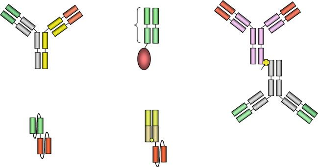
그림 14.1은 국소 및 전신 백신 효과로 이어지는 제자리(in situ) 세포독성 모델을 보여준다.
표 14.1은 anti-CD3를 한쪽 친 mAb로, TAA를 겨냥하는 mAb를 다른 쪽으로 하는 BiAb로 효과 T 세포와 NK-T 세포를 무장시킨 임상전 연구들을 정리한다. 표 14.2는 효과세포를 생체 외 또는 생체 내에서 무장시킨 임상시험들을 정리한다. anti-CD3를 포함한 BiAb를 주입하면 생체 내에서 T 세포를 무장시키고 T 세포와 종양세포를 동시에 결합시킬 수 있다. 반면 생체 외 무장은 ATC 생체 외 증폭의 장단점을 그대로 안는다.
14.1.4 생체 내 재표적화를 위한 BiAb
모두 22개의 mAb가 임상 승인을 받았다. 치료 적용 분야로는 장기 이식 거부, 항혈소판 치료, 류마티스 관절염, 호흡기세포융합바이러스 감염, 크론병, 유방암, 대장암, 천식,
그림 14.1 BiAb가 T 세포를 종양에 표적하면 자체 면역계의 제자리 면역화로 이어진다. BiAb로 무장된 활성화 T 세포는 종양의 TAA를 표적하여 종양과 결합한다. 이 표적화 과정은 T 세포에서 Th1 사이토카인이 방출되게 하고, 종양 용해로 TAA가 방출되며, 이 물질들은 (단핵구가 만드는) IL-12에 의해 유도된 수지상세포(DC)에 의해 처리된다. DC는 항원을 처리·제시하여 케모카인 방출로 종양 부위에 모인 자체 나입니브(naïve) T 세포에 전달함으로써 제자리 백신 접종과 TAA에 대한 전신 면역화로 이어진다. (그림 구성: Armed T cell(무장 T 세포) — Anti-CD3/Anti-TAA — Tumor Antigens(종양항원); Th1 Cytokine Release(Th1 사이토카인 방출); Tumor Lysis(종양 용해); Chemokine Release(케모카인 방출); Monocyte(단핵구) → IL-12; Effector Memory T cell(효과기억 T 세포); Endogenous DC·T cells(자체 수지상세포·T 세포))
표 14.1 임상전 연구를 위한 anti-CD3 anti-TAA 조합
| 표적항원 | BiAb | 종양 표적 | 참고문헌 |
|---|---|---|---|
| Tenascin | Anti-CD3 anti-tenascin | 인간 교모세포종 | Davico et al.(1995) |
| Glioma | Anti-CD3 anti-glioma | 인간 교모세포종 | Nitta et al.(1990b) |
| CD13 | Anti-CD3 anti-CD13 | CD13⁺ 급성 골수성 백혈병 | Kaneko et al.(1993) |
| MUC1 | Anti-CD3 anti-MUC1 | 담도암 | Katayose et al.(1996) |
| EpCAM(선암의 상피세포부착분자) | Anti-CD3 anti-EpCAM | 선암 | Riesenberg et al.(2001) |
| kDal K29 | Anti-CD3 anti-kDal K29 | 신세포암 | Zhu et al.(1994) |
| G250 | Anti-CD3 anti-G250 | 신세포암 | Luiten et al.(1996) |
| Transferrin receptor(트랜스페린 수용체) | Anti-CD3 anti-transferrin receptor | 트랜스페린 수용체 | Jost et al.(1996) |
| (계속) |
표 14.1(계속)
| 표적항원 | BiAb | 종양 표적 | 참고문헌 |
|---|---|---|---|
| AMOC-31(암종이 발현하는 40kDa 막결합 당단백질) | Anti-CD3 anti-AMOC-31 | 암종 | Kroesen et al.(1993) |
| BCL1 림프종(Balb/c 마우스)의 B세포 이디오타입 | Anti-CD3 anti-idiotype | 이디오타입 | Demanet et al.(1996) |
| CD19 | Anti-CD3 anti-CD19 | 백혈병성 B세포 | Bohlen et al.(1993a, b); Klein et al.(1997) |
| CD19 | Anti-CD3 anti-CD19 | 악성 B세포 | Bohlen et al.(1993a); Anderson et al.(1992); Bejeck et al.(1995); de Gast et al.(1995b) |
| CD20 | Anti-CD3 anti-CD20 | NHL(비호지킨 림프종) | Gall et al.(2005) |
| CD20 | Anti-CD3 anti-CD20 | 다발성 골수종 | Gall et al.(2005) |
| tumor(Fab’₂) | Anti-CD3 anti-tumor(Fab’₂) | TIL 재표적용 | Chapoval et al.(1995) |
| CEA(인간 암배아항원 발현 세포) | Anti-CD3 anti-CEA | CEA | Kuwahara et al.(1997) |
| Her-2/neu | Anti-CD3 anti-Her2/neu | 신세포·대장·유방·전립선 암종이 발현하는 HER2/neu 수용체 | Shalaby et al.(1992, 1995); Brossart et al.(1998); Sen et al.(2001); Lum et al.(2005); Davol et al.(2004a); Zhu et al.(1995) |
| CD30 | Anti-CD3 anti-CD30 | 호지킨 림프종 | Renner et al.(1994, 1996); Pohl et al.(1993) |
| PSA(전립선암이 발현하는 전립선특이항원) | Anti-CD3 anti-PSA | 전립선암 | Katzenwadel et al.(2000) |
| CA19-9 | Anti-CD3 anti-CA19-9 | CA19-9 | Hombach et al.(1997b) |
| HLA-DR β 사슬 | Anti-CD3 anti-HLA-DRβ chains | 악성 B세포 | Kostelny et al.(2001) |
| EGFR | Anti-CD3 anti-EGFR | 교모세포종, 종양성 각질형성세포 | Negri et al.(1995) |
| EGFR | Anti-CD3 anti-EGFR | 대장·두경부·폐 | Reusch et al.(2006) |
표 14.2 이중특이성 항체를 사용한 임상시험
| BiAB INN/상품명(회사) | 표적 | 효과세포 | 종양/적응증 | 참고문헌 |
|---|---|---|---|---|
| Anti-CD3 anti-glioma | — | LAK | 인간 교모세포종 | Nitta et al.(1990a) |
| Anti-OCAA anti-CD3 | OC/TR | T 세포 | 난소암 | Bolhuis et al.(1992) |
| SHR-1(Anti-CD3 anti-CD19) | CD19 | T 세포 | 비호지킨 림프종 | de Gast et al.(1995a) |
| Anti-CD3 anti-CEA | CEA | T 세포 | 인간 암배아항원 발현 세포 | Kuwahara et al.(1996) |
| BIS-1(Anti-CD3 anti-EGP2) | EGP2 | T 세포 | 폐암, 신세포암 | Kroesen et al.(1997) |
| CD64×CD33 251-22 | CD33 | 단핵구/대식세포 | AML | Chen et al.(1999) |
| OKT3/NSI19-9(Anti-CD3 anti-CA19-9) | CA19-9 | T 세포 | CA19-9⁺ 종양 | Hombach et al.(1997b) |
| Removab®(Anti-CD3 anti-EpCAM, Trion Pharma) | EpCAM | T 세포 | 난소·위·대장·유방(악성복수) | Burges et al.(2007), 2009년 시장 승인 |
| Anti-CD3 anti-CEA | CEA | T 세포 | 난소암 | Compte et al.(2007) |
| Removab®(Anti-CD3 anti-EpCAM, Trion Pharma) | EpCAM | T 세포 | 위·폐·대직장암 | Sebastian et al.(2007) |
| 2B1(Anti-CD16 anti-HER2) | HER2 | NK | Her2⁺ 종양 | Borghaei et al.(2007); Weiner et al.(1995) |
| HRS-3/A9(Anti-CD16 anti-CD30) | CD30 | NK | 호지킨병 | Hartmann et al.(1997) |
| MDX-210/MDX-H210(Anti-CD64 anti-Her2) | Her2 | 단핵구/대식세포 | 유방암·전립선암 | James et al.(2001); Valone et al.(1995) |
| MDX-447(Anti-CD64 anti-EGFR) | EGFR | 단핵구/대식세포 | 고형종양 | Fury et al.(2008) |
| CD20 BiAb(Anti-CD3 anti-CD20) | CD20 | T 세포 | NHL | Clinical Trials(2010e) |
| Her2 BiAb(Anti-CD3 anti-Her2) | Her2 | T 세포 | 전이성 유방암, 2상 | Clinical Trials(2010g) |
| Removab(Anti-CD3 anti-EpCAM, Trion Pharma) | EpCAM | T 세포 | 난소암, 2상 | Clinical Trials(2010b) |
| Ertumaxomab(Anti-CD3 anti-Her2, Trion Pharma) | Her2 | T 세포 | 전이성 유방암, 1상/2상 | Clinical Trials(2010d) |
| rM28(Anti-CD28 MAPG) | MAPG | T 세포 | 전이성 흑색종, 1상/2상 | Clinical Trials(2010a) |
| Blinatumomab(Anti-CD3 anti-CD19, Micromet) | CD19 | T 세포 | NHL, 1상/2상 | Clinical Trials(2010c) |
| Blinatumomab(Anti-CD3 anti-CD19, Micromet) | CD19 | T 세포 | B-전구세포 급성림프모구성백혈병, 1상/2상 | Clinical Trials(2010f) |
쓸 수 있다는 점은 혈액암 치료에 새 가능성을 열었다. 실제로 CD20⁺ 림프종, EGFR, Her2/neu⁺ 고형종양을 특이적으로 표적하는 새로운 비컨쥬게이트 mAb, 방사면역컨쥬게이트, 케모면역컨쥬게이트들이 임상 효능을 근거로 승인을 받았다. 표 14.2는 암 치료에 BiAb를 사용한 임상시험을 정리한다. FDA 승인 mAb가 곧바로 구할 수 있다는 점은 임상 승인 mAb 아무거나 골라 이종접합해 여러 종양 표적을 겨냥하는 BiAb를 만들 수 있는 독특한 기회를 준다.
14.1.4.1 생체 내에서 T 세포를 활성화·표적하는 데 BiAb를 쓴 임상시험
1980년대 초 하이브리도마 기술로 최초의 BiAb가 만들어진 직후 암 표적화에 대한 임상 응용의 파급력이 빠르게 인정되었다(Raso and Griffin 1981; Titus et al. 1987; Perez et al. 1985). BiAb 주입을 사용한 최초의 1상 임상시험은 CD19를 발현하는 비호지킨 림프종(NHL) 환자를 대상으로, 콰드로마에서 만든 anti-CD3 anti-CD19(SHR-1) BiAb로 진행되었다(de Gast et al. 1995a). 임상 전략은 SHR-1 주입이 자체 T 세포를 무장시켜 림프종으로 재유도할 수 있는지 확인하는 것이었다. 혈소판감소증을 제외하면 5~10 mg 범위의 SHR-1 용량은 독성이 없었다. 그러나 유리한 독성 프로파일에도 불구하고 만성림프구성백혈병(CLL) 환자에서 임상 효능은 따르지 않았다. 1상에서 임상 반응을 유도하지 못한 원인은 SHR-1의 빠른 제거로 여겨졌다. BiAb 구성체마다 약동학이 크게 다를 수 있으므로 혈중 유지력을 높이고, T 세포 활성화에 최적인 친화력, 종양 표적화에 최적인 친화력을 맞추도록 각 BiAb 설계를 조정해 임상 효능을 높이는 일이 중요하다.
BIS-1(anti-CD3 anti-EGP-2)은 38kDa 상피암연관 막통과 당단백질인 EGP-2(CO17-1A, KS1/4, AUA-1, MOC-31과 클러스터를 이룸)를 발현하는 암종 세포에 T 세포를 표적화하도록 만들어졌다(de Gast et al. 1995a). BIS는 생체 내에서 오래 남도록 설계되었다. BI
샘플이나 흉막 삼출액 검체에서는 T 세포와 종양세포의 응집체가 보였고, 이후 복수나 흉막 삼출액에서 종양세포가 사라졌다. 치료 시작 24시간 후 국소 CEA 수치 감소, 뚜렷한 과립구증가증, TNF-α 수치 상승이 관찰되었다. 주입 4시간 이내에 백혈구와 종양세포에서 ICAM-1 발현이 증가했다. 경미한 발열 외에는 용량제한 독성(DLT)이 없었다. 국소 투여에서 관찰된 항종양 효능은 전신 투여 시 BIS-1의 DLT가 효능을 제한하는 결정적 요인이었음을 시사한다. 복강 내 BIS-1 주입은 주입 부위의 ATC만 무장시키고 순환 T 세포는 무장시키지 않아 사이토카인 폭풍을 피할 수 있었다. 반면 전신 투여한 BIS-1은 FcγR 결합을 통해 최대 1조 개에 달하는 T 세포를 활성화해
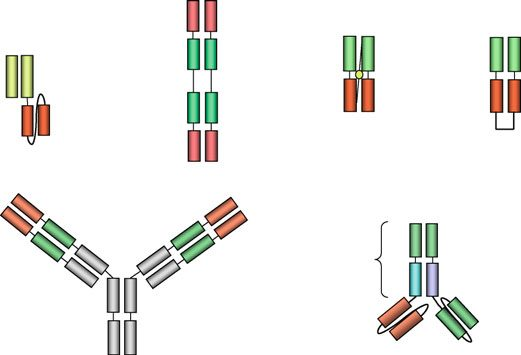
그림 14.2에 그린 것 같은 사이토카인 폭풍을 일으킬 수 있다. 따라서 anti-CD3 F(ab’)₂가 T 세포 활성화에 매우 강력하다면 BIS-1을 전신 정맥 주입했을 때 OKT3에서 보고된 것 같은 사이토카인 폭풍이 생겼어도 이상할 게 아니다. 실제로 생체 외에서 ATC 10⁶개당 100 ng으로 ATC를 무장시키고 세척 후 주입하더라도, ATC에 얹혀 들어가는 BiAb의 양은 유리 BIS-1을 주입하는 양보다 몇 자릿수나 작다.
그림 14.1은 anti-CD3 anti-TAA 무장 T 세포가 어떻게 종양을 표적하고 사이토카인을 분비하며 종양을 용해하고, 항원제시세포가 처리해 자체 T 세포에 제시할 수 있는 종양 파편을 만들어 내는지 보여준다. 그림 14.2는 BiAb의 유리 Fc 부분이 단핵구, NK 세포, 비만세포의 FcγR과 상호작용해 사이토카인 폭풍으로 이어질 수 있는 방식을 보여준다. 나아가 FcγR 보유세포가 무장 T 세포에 결합해 T 세포가 사이토카인을 분비하게 만들 수도 있다. anti-CD16(anti-FcγRIII) anti-TAA 결합은 NK 세포와 호중구를 표적하는 데 쓰이고,
그림 14.2(개념 구성) BiAb의 FcγR 결합 — 면역세포 활성화 / 효과세포 사이의 가교: Monocyte(단핵구), Mast Cell(비만세포), NK Cell, T Cell, Tumor(FCR 표지), TAA — 각 세포의 활성화(Activation)와 FcγR 매개 가교 형성으로 사이토카인 폭풍(cytokine storm)이 유발될 수 있음
단핵구는 anti-CD64(anti-FcγRI)로 TAA 쪽으로 재유도할 수 있다.
콰드로마에서 만든 FcγRIII(CD16) anti-HER2/neu(2B1)는 NK 세포를 표적해 HER2/neu⁺ 종양을 용해한다. 15명의 환자를 대상으로 한 1상 임상시험에서 비용량제한 독성은 발열, 오한, 메스꺼움, 구토, 백혈구감소증이었다. 주요 DLT는 5 mg/m²/회 용량에서의 혈소판감소증이었다. 불행히도 경미한 임상 반응만 얻어졌다. 순환 백혈구의 FcγIII 수용체 교차결합이 격렬한 사이토카인 폭풍을 유발했다(Weiner et al. 1995). 치료는 순환 TNF-α, IL-2, IL-8을 100배 증가시켰고, GM-CSF와 IFN-γ도 다소 올렸다. 최대내성용량(MTD)은 2.5 mg/m²였으며, 15명 중 14명이 인간항마우스항체(HAMA) 반응을 보였다.
HRS-3/A9(FcγRIII anti-CD30)로 난치성 호지킨병 환자를 치료한 1상/2상 시험에서는 경미한 발열을 부작용으로 하며 고무적인 임상 결과가 나왔다(Hartmann et al. 1997). 15명 중 완전관해(CR) 1명, 부분관해(PR) 1명, 경미한 반응 3명, 혼합 반응 1명이었다. 64 mg/m² 용량에서도 MTD에 도달하지 않았다. 이후 16명을 대상으로 한 연구에서 CR 1명, SD(질병 안정) 3명, PR 3명이 나왔다.
가장 많은 임상 경험이 쌓인 것은 anti-CD64(FcγRI) anti-Her-2/neu(MDX-H210)다. MDX-H210은 인간화 anti-CD64 Fab’과 마우스 anti-HER2/neu Fab’을 화학적으로 연결한 bsFab’ 구성체다. 이 2세대 구성체는 사이토카인 폭풍을 줄이려고 Fc 도메인을 삭제해 설계되었다. 1상 시험에서 난치성 유방암·난소암 환자에게 0.35~18 mg/m² 범위의 MDX-H210을 정맥 투여했지만 DLT는 없었다(Valone et al. 1995). 이 시험에서 환자들은 grade I·II “독감 유사” 증상, grade I/II 흉통, 호흡곤란, 혈청 크레아티닌 상승, 일과성 grade IV 혈소판감소증, grade III 저혈압을 보였다(Valone et al. 1995). 종양의 부분 반응 1건과 혼합 반응 1건
다용량 시험에서 MDX-H210(매주 4일째 투여)과 GM-CSF(1~4일째 250 μg/m²)를 연속 4주 투여했다. 1~20 mg/m² 용량으로 치료한 13명에서 DLT는 없었다. 주입 후 2시간까지 이어진 발열과 오한은 TNF-α(중앙값 88.2 pg/ml)와 IL-6(중앙값 371 pg/ml) 혈중 농도 최고치와 동반되었다. 환자들은 4주째에는 부작용이 줄어드는 급속내성(tachyphylaxis)을 보였다. 11명 중 5명이 치료 3주 후 기저치의 200~500배 수준인 인간항이중특이성항체(HABA) 수치를 보였다. 10명이 치료를 완료했고, 1명은 표적병소 48% 감소, 6명은 SD, 3명은 4주째 전에 PD(질병 진행)를 보였다(Posey et al. 1999).
MDX-447(anti-CD64 anti-EGFR)은 신세포암 또는 두경부암 환자 64명을 대상으로 하는 1상 연구에서 검증되었다. MDX-447은 FcγR을 겨냥하는 H22의 F(ab’)₂ 절편과 EGFR을 겨냥하는 H425를 교차결합해 만들었다. 3~6명씩 환자군에게 MDX-447(주당 1~40 mg/m² 용량)을 단독으로 또는 G-CSF(3 μg/kg/day, 피하, 3~1일, 4~8일, 11~15일)와 병용 투여했다. 저혈압이 DLT였고, 발열, 고혈압, 부정맥, 알레르기 반응, 호흡곤란, 종양 통증 등 grade III 독성이 있었다(Fury et al. 2008).
컨쥬게이트된 F(ab’)₂ 절편으로 이루어진 구성체(anti-CD64 anti-CD30 [H22xKi-4])를 난치성 호지킨병 환자 10명에게 1상 용량 증가 연구에서 정맥 투여했다. 1, 5, 7일째에 1~20 mg/m²/day 용량을 투여했을 때 부작용은 일과성이며 경미했는데, 저혈압(10명 중 4명), 빈맥(10명 중 6명), 피로(10명 전원), 발열(10명 중 2명)이 있었다. CR 1명, PR 3명, SD 4명이 나왔다(Borchmann et al. 2002).
단일사슬 scFv 기반 이중특이성 T 세포 엔게이저(BiTE) 형식(Micromet)을 이용한 최근 연구들은 유망한 임상 결과를 내고 있다. BiTE 항체들은 피코~펨토몰 농도에서 표적항원 발현 세포의 강력한 용해를 유도하면서도 조건부 T 세포 활성화와 연관되어 있다. MT103(블리나투맙, blinatumomab)은 CD19⁺ 종양세포를 표적한다(Bargou et al. 2008). B-전구세포 급성림프모구성백혈병(B-ALL) 환자를 대상으로 진행 중인 2상 시험에서 MT103은 민감한 정량 PCR 방법으로만 검출되는 골수 내 드문 종양세포까지 박멸했다(Topp 2008). 이 데이터는 MT103이 덩어리 질환과 최소잔존질환 모두에 대해 T 세포를 모집·재유도한다는 것을 시사한다(Baeuerle and Reinhardt 2009).
또 다른 유망한 접근은 삼기능 항체(TriAb)를 사용해 BiAb의 임상 효과를 높이는 것이다(Zeidler et al. 1999, 2000). Horst Lindhofer의 16장에서 TriAb의 세부 내용을 다룬다. TriAb Removab®(anti-CD3 anti-EpCAM, 카툼삭솝/catumaxomab, Trion Pharma)를 이용한 1상/2상 연구에서, 선행 치료에 실패한 난소암의 악성복수 환자 23명에게 Removab®를 복강 내 주사했더니 복수액 내 EpCAM 양성 종양세포가 5 log 감소했고 안전성 프로파일도 수용 가능했다(Burges et al. 2007). 2009년 Removab®는 EpCAM 양성 암종 환자의 복수에 대한 복강 내 치료로 유럽연합 승인을 받았다. Removab®는 악성복수 승인 최초의 약물일 뿐 아니라 임상 사용이 승인된 최초의 BiAb이기도 하다.
Kiewe 등(2006)은 삼기능 항체 에르툼삭솝(ertumaxomab, anti-CD3 anti-Her2/neu, Fcγ I/III 수용체 결합 설계, Fresenius Biotech GmbH)으로 전이성 유방암 여성 환자를 대상으로 한 최근의 1상 시험을 보고했다. 에르툼삭솝은 T 세포, Fc 수용체 양성세포, 종양세포 사이에 삼세포 복합체(tri-cell complex)를 형성한다(Kiewe et al. 2006)(그림 14.2). 17명 중 15명이 시험을 완료했고 MTD는 100 μg이었으며 부작용은 경미하고 일과적이었다. 객관적 종양 반응은 15명 중 5명(CR 1, PR 2, SD 2)에게서 나타났다. 환자 혈청에서는 Th1 사이토카인 패턴이 관찰되었다.
Removab®를 비소세포폐암에 사용한 1상 시험에서는 사이토카인 부작용을 줄이기 위해 덱사메타손과 병용해 정맥 주입했다. MTD는 덱사메타손 50 mg 후 투여한 카툼삭솝 5 μg이었다(Sebastian et al. 2007). 핵심 관찰은 다음과 같다. (1) …; (2) Fc 부분 제거가 사이토카인 폭풍 부작용을 줄일 수 있다; (3) 면역조절 약물이나 화학요법과 병용하면 BiAb 주입의 내약성을 바꾸거나 개선할 수 있다.
14.1.5 BiAb로 무장한 활성화 T 세포 또는 효과세포를 이용한 임상시험
생체 외 무장한 자가 LAK를 사용한 첫 임상시험은 1990년에 보고되었다(Nitta et al. 1990a). 화학적으로 이종접합된 anti-CD3 anti-glioma BiAb와 함께 LAK를 환자 10명에게 주입했다. 무장·비무장 LAK 모두 뇌종양에 국소 투여했다. 무장 LAK를 받은 10명 중 4명은 종양 퇴행을 보였고 4명은 전체 생존(OS)이 개선되었다. OS와 무진행 생존(PFS)은 비무장 LAK를 받은 환자보다 나아 보였다.
이후 교모세포종 환자를 대상으로 한 1상 시험에서 anti-CD3 활성화 T 세포(ATC)를 두 가지 BiAb(anti-CD3 anti-EGFR, anti-CD28 anti-EGFR)와 함께 오마야 저장소(Ommaya reservoir) 통해 수술 강 내로 주입했다. 임상 반응을 보인 10명 중 2명은 각각 70×10⁶개, 250×10⁶개의 ATC를 받았다. 이렇게 적은 수의 세포로 일과성 발열, 메스꺼움, 두통, 기존 신경학적 결손의 악화만 있으면서 임상 반응이 나온 것은 꽤 놀라운 일이다(Jung et al. 2001).
1992년에는 anti-CD3 anti-Mov28(난소암연관항원)으로 무장한 5×10¹⁰개의 식물성혈구응집소(PHA) 또는 anti-CD3 활성화 T 세포를 난소암 환자 5명 치료를 위해 복강 내로 주입했다(Lamers et al. 1992). T 세포는 78% RPMI 1640, 20% AIM-V, 2% 인간 혈장 배지에서 14일과 16일 동안 배양되었다. CD4와 CD8 T 세포 모두 증폭되었지만 우세한 집단은 CD8이었다. anti-CD3 anti-엽산수용체(OC/TR) 무장 T 세포를 국소 주입받은 환자에게서도 면역조절과 항종양 효과가 관찰되었다(Lamers et al. 1997).
감축 개복술을 받은 진행성 난소암 환자 28명을 대상으로 한 2상 연구에서 복강 내 투여한 부작용은 경미~중등도의 발열, 메스꺼움, 구토였다. 환자의 84%(25명 중 21명)가 치료 후 4~5주 사이에 HAMA 반응을 보였다. 직경 2 cm가 넘는 여러 전이 병소가 치료 후 사라졌다.
두경부 편평세포암 환자를 대상으로 한 시험용 1상 용량 증가 임상시험에서는 백혈구성분채집으로 PBMC를 채취하고, Removab®와 24시간 배양한 뒤 무장 과정에서 방출된 IFN-γ와 TNF-α를 세척으로 제거하고 환자 4명에게 주입했다(Riechelmann et al. 2007). 이 전략은 사이토카인 폭풍 부작용을 줄였다.
14.1.6 무장·표적 T 세포를 이용한 제자리 백신 접종의 증거
우리의 임상전·임상 연구에서는 화학적으로 이종접합한 anti-CD3 anti-HER2/neu BiAb(OKT3×Herceptin®, [Her2Bi])로 무장한 ATC를 사용했다. 임상시험에서 우리의 전반적 접근은 T 세포의 다클론 증폭(최대 320×10⁹)과 BiAb로 ATC를 무장해 대규모 TAA 특이 CTL 집단을 만드는 것이었다. 임상전 연구에 따르면 Her2Bi 무장 ATC는 (1) 종양세포에 결합해 Her2/neu 유방암(Sen et al. 2001), 전립선암(Lum et al. 2005), 췌장암(Lum et al. 2002) 세포주를 죽이고; (2) IFN-γ, TNF-α, GM-CSF, RANTES, MIP-1α를 분비하며(Grabert et al. 2003); (3) SCID/Beige 마우스에서 종양 발생을 막거나, 자리 잡은 전립선 PC-3 이종이식종에 직접 주입하면 관해를 유도할 수 있고(Davol et al. 2004a); (4) SCID/Beige 마우스에서 PC-3 종양으로 이동해 종양 성장을 억제하며(Davol et al. 2004a); (5) 여러 번 종양세포를 죽인 뒤에도 세포자멸사에 빠지지 않고 증식한다(Grabert et al. 2003).
우리의 1상 임상시험은 고위험 2~3기 유방암(양성 림프절 4개), 4기 유방암, 4기 호르몬 내성 전립선암, 국소 진행성 췌장암 환자 치료를 위해 Her2Bi 무장 ATC를 여러 차례 주입하는 방식으로 진행되었다. ATC는 2% 인간 혈청과 100 IU/ml IL-2를 보충한 RPMI 1640 배지에서 14일간 증폭시킨다. 배양이 끝나면 ATC를 회수하고 50 ng
GI 독성은 없었다. 전이성 유방암 여성 19명, 고위험(양성 림프절 4개) 유방암 여성 보조요법 프로토콜 9명, 호르몬 내성 전립선암 남성 6명, 전이성 췌장암 환자 1명이 Her2Bi 무장 ATC를 받았다. 1명이 심장 독성으로 사망했는데 디곡신 혈중 농도가 원인일 가능성이 크고 면역요법 탓이 아니었다. 유방암 여성과 전립선암 남성에서 통증 수준이 낮아졌다(Davol et al. 2004b). Her2Bi를 지닌 ATC는 주입 후 몇 주까지 유세포 분석으로 검출되었다(Lum et al. 2003). 혈청에서 Th1 사이토카인(GM-CSF, IFN-γ, TNF-α, IL-2), IL-12, RANTES, MIP-1α는 높았고 Th2 사이토카인(IL-10, IL-4)은 낮았다. 종양세포의 표적화와 용해 때 국소적으로 사이토카인과 케모카인이 방출되면 나입브 T 세포와 항원제시세포를 모아 국소 백신 반응을 일으키고 이것이 강한 전신 반응으로 발전할 수 있다(그림 14.1).
1상 임상시험에서 최대 80×10⁹개의 anti-CD3 anti-C20(OKT3×Rituxan, CD20Bi) 무장 자가 ATC를 고용량 화학요법과 말초혈액줄기세포이식 후 두 가지 주입 스케줄로 투여했다. 두 스케줄 모두 내약성이 좋았고 DLT는 없었다(Lum et al. 2010). 말초혈액줄기세포이식 4일째에 20×10⁹개의 무장 ATC를 주입해도 잘 견뎠다.
14.1.7 T 세포 공활성화와 표적화 전략
anti-CD3/anti-CD28 공자극과 BiAb 무장을 결합한 임상전 전략이 여러 BiAb 조합으로 보고되었다. anti-CD28 단독 또는 anti-CD28 anti-TAA에 의한 공자극은 신호 강화(Alvarez-Vallina and Hawkins 1996; Renner et al. 1995), 사이토카인 생성 증가(Mazzoni et al. 1996), 림프종·백혈병 모델에서의 세포독성 강화(Demanet et al. 1996; Renner et al. 1994; Bohlen et al. 1993a), 대장암 세포주 세포독성(Hombach et al. 1997a)을 가져왔다. BiAb와 CD28 공자극이 Th1 분화를 유도한다는 보고도 있다(Ho
CAR(T 세포)을 발현할 T 세포 수를 늘리는 데 렌티바이럴 벡터가 초기 레트로바이럴 벡터보다 더 효과적이었다는 것이 최근 연구들이 분명히 보여준다. T-body를 검토하는 것 외에 대부분 CAR의 구성과 기능을 요약하면 다음과 같다. 펩타이드 링커로 연결된 중쇄·경쇄 유래 가변 영역과, 감마 사슬 및 CD28 신호 사슬로 이루어진 활성화 신호 사슬(Sadelain et al. 2003). 초기 구성체는 HER2/neu를 겨냥하는 scFv와 인간 제타 신호 사슬을 포함하는 CAR로, anti-HER2 수용체가 HER2/neu와 결합하면 IL-2 분비와 특이 용해가 유도되었다(Moritz et al. 1994). T-body는 종양으로 이동해 흉선 무균 마우스의 HER2/neu 변형 종양 성장을 억제했다(Moritz et al. 1994). 대부분의 난소암종에 있는 엽산결합단백질을 겨냥하는 T-body 수용체와 FcR 신호 사슬로 난소암 TIL을 형질전환하는 연구도 있었다(Hwu et al. 1993, 1995). 불행히도 유망한 임상전 데이터에도 불구하고 1상 임상시험은 임상 반응을 유도하지 못했다(Kershaw et al. 2006).
또 다른 전략은 조혈줄기세포를 형질전환해 고용량 화학요법과 줄기세포 주입 후에 T 세포와 다른 후손세포들이 CAR을 발현하게 하는 것이었다(Wang et al. 1998). T-body 면역요법은 여전히 어려운데, 유전자 형질전환 T 세포가 자신의 도입 유전자 발현을 낮추는 것으로 알려져 있기 때문이다(Plavec et al. 1997; Quinn et al. 1998). 이 장애물은 최근 감마 사슬이나 제타 사슬에 CD28 신호 사슬을 추가해 극복되었다. 이런 구성체를 벡터로 전달하는 최근 전략으로는 anti-CD19(Cooper et al. 2005), anti-CEA(Emtage et al. 2008), anti-PSMA(Ma et al. 2004)가 있다. IL-1β 유전자 형질전환 T 세포가 IL-1β를 분비한다는 원리 증명을 위한 임상전 연구도 있었다. anti-CD3 anti-암배아항원(CEA)으로 무장된 형질전환 T 세포는 종양세포의 CEA와 결합한 결과로 높은 수준의 IL-1β를 분비할 것이며
ATC를 값싸게 생산하고 cGMP 등급 BiAb로 무장시키는 이 단순한 접근은, T-body 구성체로 T 세포를 형질전환하기 위해 대량의 값비싼 벡터 배치를 만들고 적격성을 검증해야 하는 필요를 대신할 수 있다. 그 벡터는 발암성이 있을 수도 있다.
14.1.9.1 면역학적 공간
Treg 세포를 제거하거나 시클로포스파미드로 면역학적 공간을 만들면 항종양 활성이 개선된다는 최근 연구들이 여럿 있다(Wang et al. 2005; Gattinoni et al. 2005; Grinshtein et al. 2009; Salem 2009). 다른 연구들은 백신의 시기와 용량이 백신 성패의 결정적 요인일 수 있음을 분명히 보여준다. 면역 회복이 먼저 일어나야 백신 접종이 가능하다고 했던 기존 패러다임과 달리, 백신은 화학요법 전후 모두에서 성공적이었다. 직관에 어긋나지만, 특이적으로 분화된 T 효과기억세포와 항원특이 B 세포는 화학요법에 비교적 저항적이어서 화학요법이나 림프제거가 만든 공간을 가장 먼저 채워 확장할 수 있다고 이론화할 수 있다.
임상전 마우스 모델에서 정제된 활성화 CD4⁺ 세포를 투여했을 때 시클로포스파미드로 면역학적 공간을 만든 뒤 세포를 주입하면 종양 성장이 억제되거나 무병 생존이 연장되었다(Saxton et al. 1997). 이 전략을 쓴 임상 연구에서 정제된 anti-CD3 활성화 CD4⁺ 세포가 500~1,000/mg 범위의 시클로포스파미드 용량으로 고형종양 환자에게 관해를 유도했다(Asano et al. 2010; Curti et al. 1993). 세포 주입 4일 전 시클로포스파미드 주사가 면역요법 성공에 결정적이었다.
14.1.9.2 결합 부위와 친화력
모든 anti-CD3 mAb가 다양한 T 세포 기능 유도에 동등한 것은 아니다. TCR에 대한 anti-CD3 결합은 T 세포를 표적하는 BiAb의 결정적 요소이면서 동시에 T 세포 기능을 재자극한다. 친화력, 아이소타입, CD3의 표적 에피토프, 무장 농도는 anti-CD3 mAb가 신호
혈액암까지 포함된다. 나아가 CD20⁺ 림프종, EGFR, Her2/neu⁺ 고형종양을 특이적으로 표적하는 새로운 비컨쥬게이트 mAb, 방사면역컨쥬게이트, 케모면역컨쥬게이트들이 임상 효능과 파급력을 근거로 승인을 받았다. 표 14.2는 암 치료에 BiAb를 사용한 임상시험을 정리한다. FDA 승인 mAb를 곧바로 구할 수 있다는 점은 임상 승인 mAb 중 아무거나 골라 이종접합해 다양한 종양 표적을 겨냥하는 BiAb를 만들 수 있는 독특한 기회를 준다.
14.1.4.1 생체 내에서 T 세포를 활성화·표적하는 데 BiAb를 쓴 임상시험
1980년대 초 하이브리도마 기술로 최초의 BiAb가 만들어진 직후 암 표적화에 대한 임상 응용의 파급력이 빠르게 인정되었다(Raso and Griffin 1981; Titus et al. 1987; Perez et al. 1985). BiAb 주입을 사용한 최초의 1상 임상시험은 콰드로마에서 생산한 anti-CD3 anti-CD19(SHR-1) BiAb로 CD19를 발현하는 비호지킨 림프종(NHL) 환자에게 진행되었다(de Gast et al. 1995a). 임상 전략은 SHR-1 주입이 자체 T 세포를 무장시켜 림프종 쪽으로 재표적할 수 있는지 확인하는 것이었다. 혈소판감소증을 제외하면 5~10 mg 범위의 SHR-1 용량은 독성이 없었다. 그러나 유리한 독성 프로파일에도 불구하고 만성림프구성백혈병(CLL) 환자에게서 임상 효능은 따르지 않았다. 1상에서 임상 반응을 유도하지 못한 원인은 SHR-1의 빠른 제거와 관련된 것으로 여겨졌다. BiAb 구성체마다 약동학이 극적으로 달라질 수 있으므로, 각 BiAb의 설계를 조정해 혈중 유지력을 높이고 T 세포 활성화에 최적인 친화력, 종양 표적화에 최적인 친화력을 확보해 임상 효능을 개선하는 일이 중요하다.
BIS-1(anti-CD3 anti-EGP-2)은 38kDa 상피암연관 막통과 당단백질인 EGP-2(CO17-1A, KS1/4, AUA-1, MOC-31과 클러스터를 이룸)를 발현하는 암종 세포에 T 세포를 표적화하도록 만들어졌다(de Gast et al. 1995a). BIS는 생체 내에서 오래 남도록 설계되었다. BIS의 anti-EGP-2 mAb 성분은 종양 영상화에 임상적으로 효과적이었다(Kosterink et al. 1995). 신세포암 환자 대상 1상 임상시험에서 IL-2와 병용한 BIS-1 정맥 주입은 TNF-α와 IFN-γ 혈청 수치 상승과 함께 높은 수준의 특이 세포독성을 유도했다(de Gast et al. 1995a). 최대내성용량(MTD)인 5 mg/kg에 도달했고 호흡곤란, 혈관수축, 발열 같은 용량제한 독성(DLT)이 있었지만 항종양 반응은 없었다. 이 연구는 쥐를 대상으로 한 임상전 독성 연구에서 독성이 없다고 해서 환자의 임상 독성을 예측할 수 없음을 보여주었다.
전신 주사와 달리 자가 ATC와 BIS-1을 암종성 복수나 흉막 삼출액에 주입하면 전신 독성이 생기지 않았다(Kroesen et al. 1997). 생체 외 ATC는 말초혈액단핵세포(PBMC)를 IL-2로 2일간 자극해 만들었다. CD3⁺ 세포의 70%가 CD8⁺였고, 효과세포/표적세포 비(E/T) 9에서 EGP-2 표적을 겨냥한 특이 세포독성은 60~80%였다. 강한 항염증 반응과 항종양 활성은 BIS-1과 ATC를 함께 주입했을 때만 나타났다.
복수나 흉막 삼출액 검체에서는 T 세포와 종양세포의 응집체가 보였고, 이후 복수·흉막 삼출액에서 종양세포가 사라졌다. 치료 시작 24시간 후 국소 CEA 수치 감소, 뚜렷한 과립구증가증, TNF-α 수치 상승이 관찰되었다. 주입 후 4시간 이내에 백혈구와 종양세포에서 ICAM-1 발현이 증가했다. 경미한 발열 외에는 DLT가 없었다. 국소 투여에서 관찰된 항종양 효능은 전신 투여 시 BIS-1의 DLT가 효능을 제한하는 결정적 요인이었음을 시사한다. 복강 내 BIS-1 주입은 주입된 ATC만 무장시키고 순환 T 세포는 무장시키지 않아 사이토카인 폭풍을 피할 수 있었다. 반면 전신 투여한 BIS-1은 FcγR 결합을 통해 최대 1조 개에 달하는 T 세포를 활성화해 그림 14.2처럼 사이토카인 폭풍으로 이어질 수 있다. 따라서 anti-CD3 F(ab’)₂가 T 세포 활성화에 매우 강력하다면 BIS-1을 전신 정맥 주입했을 때 OKT3에서 보고된 것 같은 사이토카인 폭풍이 생겼어도 이상할 게 아니다. 실제로 생체 외에서 ATC 10⁶개당 100 ng으로 ATC를 무장시키고 세척 후 주입하더라도, ATC에 얹혀 들어가는 BiAb의 양은 유리 BIS-1을 주입하는 양보다 몇 자릿수나 작다.
그림 14.1은 anti-CD3 anti-TAA 무장 T 세포가 어떻게 종양을 표적하고 사이토카인을 분비하며 종양을 용해하고, 항원제시세포가 처리해 자체 T 세포에 제시할 종양 파편을 만드는지 보여준다. 그림 14.2는 BiAb의 유리 Fc 부분이 단핵구, NK 세포, 비만세포의 FcγR과 상호작용해 사이토카인 폭풍으로 이어지는 방식을 보여준다. 나아가 FcγR 보유세포가 무장 T 세포에 결합해 T 세포가 사이토카인을 분비하게 할 수도 있다. anti-CD16(anti-FcγRIII) anti-TAA 결합은 NK 세포와 호중구 표적화에 쓸 수 있다.
그림 14.2 사이토카인 폭풍으로 이어지는 기전. 왼쪽 패널: BiAb만 주입했을 때 NK 세포, 비만세포, 단핵구의 FcγR에 결합해 사이토카인/케모카인 방출을 유도하고 사이토카인 폭풍으로 이어지는 과정. 오른쪽 패널: 무장 ATC가 ATC 위 BiAb의 가용 Fc 부분을 통해 상호작용할 수 있는 과정. (그림 구성: BiAb Binding to FcγR on Immune Cells(면역세포의 FcγR에 대한 BiAb 결합); Monocyte Activation(단핵구 활성화), Mast Cell Activation(비만세포 활성화), NK Cell Activation(NK 세포 활성화); FcγR Binding Bridging between Effector Cells(효과세포 사이 FcγR 결합 가교); Monocyte, Mast Cell, NK Cell, T Cell, Tumor(TAA, FcγR); Cytokine Storm(사이토카인 폭풍))
단핵구는 anti-CD64(anti-FcγRI)로 재유도해 TAA를 표적하게 할 수 있다.
콰드로마에서 만든 FcγRIII(CD16) anti-HER2/neu(2B1)는 NK 세포를 표적해 HER2/neu⁺ 종양을 용해한다. 15명을 대상으로 한 1상 임상시험에서 비용량제한 독성은 발열, 오한, 메스꺼움, 구토, 백혈구감소증이었다. 주요 DLT는 5 mg/m²/회 용량에서의 혈소판감소증이었다. 불행히도 경미한 임상 반응만 얻어졌다. 순환 백혈구의 FcγIII 수용체 교차결합이 격렬한 사이토카인 폭풍을 일으켰다(Weiner et al. 1995). 치료는 순환 TNF-α, IL-2, IL-8을 100배 증가시켰고 GM-CSF와 IFN-γ도 다소 올렸다. MTD는 2.5 mg/m²였으며 15명 중 14명이 인간항마우스항체(HAMA) 반응을 보였다.
HRS-3/A9(FcγIII anti-CD30)로 난치성 호지킨병 환자를 치료한 1상/2상 시험에서는 부작용으로 경미한 발열이 있었을 뿐 고무적인 임상 결과가 나왔다(Hartmann et al. 1997). 15명 중 완전관해(CR) 1명, 부분관해(PR) 1명, 경미 반응 3명, 혼합 반응 1명이었다. 64 mg/m² 용량에서도 MTD에 도달하지 않았다. 이후 16명을 대상으로 한 연구에서 CR 1명, SD 3명, PR 3명이 나왔다.
가장 많은 임상 경험이 쌓인 것은 anti-CD64(FcγI) anti-Her-2/neu(MDX-H210)다. MDX-H210은 인간화 anti-CD64 Fab’과 마우스 anti-HER2/neu Fab’을 화학적으로 연결한 bsFab’ 구성체다. 이 2세대 구성체는 사이토카인 폭풍을 줄이려고 Fc 도메인을 삭제해 설계되었다. 1상 시험에서 난치성 유방암·난소암 환자에게 0.35~18 mg/m² 범위의 MDX-H210을 정맥 투여했지만 DLT는 없었다(Valone et al. 1995). 이 시험에서 환자들은 grade I·II “독감 유사” 증상, grade I/II 흉통, 호흡곤란, 혈청 크레아티닌 상승, 일과성 grade IV 혈소판감소증, grade III 저혈압을 보였다(Valone et al. 1995). 환자 10명 중 부분 반응 1건, 혼합 반응 1건이 관찰되었다. 이후 전립선암 환자를 대상으로 한 2상 연구에서 MDX-H210은 1~8 mg/m² 용량 범위에서 잘 견디어졌고 부작용은 발열, 오한, 근육통, 피로였다(Schwaab et al. 2001). DLT는 관찰되지 않았다. 환자 6명 중 5명에서 40일 치료 기간 동안 전립선특이항원(PSA) 수치가 안정적으로 유지되었고 순환 HER-2/neu 수치는 12일째와 29일째에 80% 감소했다(p=0.03 및 0.06).
고무적인 2상 연구에서 HER2/neu⁺ 진행성 전립선암 환자 25명을 MDX-H210(주당 4일씩 5 mg/kg/day, 6주마다)과 GM-CSF로 치료했다. 평가 가능한 20명 중 35%(7/20)가 PSA 수치 50% 이상 감소를 보였고 지속 기간 중앙값은 128일(71~184일)이었다. PSA 상대 속도는 평가 가능한 환자의 83%(15/18)에서 감소했다(James et al. 2001). 통증 평가가 가능했던 환자의 58%(7/12)에서 통증 점수가 낮아졌다. 심부전, 호흡곤란, 알레르기 반응이 생긴 두 명은 치료를 중단했고 grade III 사건이 생긴 아홉 명은 치료를 계속했다. 치료 관련 사망은 없었다.
다용량 시험에서 MDX-H210(매주 4일째 투여)과 GM-CSF(1~4일째 250 μg/m²)를 연속 4주 투여했다. 1~20 mg/m² 용량으로 치료한 13명에서 DLT는 없었다. 주입 후 2시간까지 이어진 발열과 오한은 TNF-α(중앙값 88.2 pg/ml)와 IL-6(중앙값 371 pg/ml) 혈중 농도 최고치와 동반되었다. 환자들은 4주째에는 부작용이 줄어드는 급속내성(tachyphylaxis)을 보였다. 11명 중 5명이 치료 3주 후 기저치의 200~500배에 이르는 인간항이중특이성항체(HABA) 수치를 보였다. 10명이 치료를 완료했고, 1명은 표적병소 48% 감소, 6명은 SD, 3명은 4주 전에 PD를 보였다(Posey et al. 1999).
MDX-447(anti-CD64 anti-EGFR)은 신세포암 또는 두경부암을 표적하기 위해 64명을 대상으로 하는 1상 연구에서 검증되었다. MDX-447은 FcγR을 겨냥하는 H22의 F(ab’)₂ 절편과 EGFR을 겨냥하는 H425를 교차결합해 만들었다. 환자 3~6명씩의 군에게 MDX-447(주당 1~40 mg/m² 용량)을 단독 또는 G-CSF(3 μg/kg/day, 피하, -3~1일, 4~8일, 11~15일)와 병용 투여했다. 저혈압이 DLT였고, 발열, 고혈압, 부정맥, 알레르기 반응, 호흡곤란, 종양 통증 등 grade III 독성이 있었다(Fury et al. 2008).
컨쥬게이트된 F(ab’)₂ 절편으로 이루어진 구성체(anti-CD64 anti-CD30 [H22xKi-4])를 난치성 호지킨병 환자 10명에게 1상 용량 증가 연구에서 정맥 투여했다. 1, 5, 7일째에 1~20 mg/m²/day 용량을 투여했을 때 부작용은 일과성이며 경미했다: 저혈압(10명 중 4명), 빈맥(10명 중 6명), 피로(10명 전원), 발열(10명 중 2명). CR 1명, PR 3명, SD 4명이 나왔다(Borchmann et al. 2002).
단일사슬 scFv 기반 이중특이성 T 세포 엔게이저(BiTE) 형식(Micromet)을 이용한 최근 연구들은 유망한 임상 결과를 내고 있다. BiTE 항체들은 조건부 T 세포 활성화와 연관되면서 피코~펨토몰 농도에서 표적항원 발현 세포의 강력한 용해를 유도한다(Baeuerle et al. 2003; Brischwein et al. 2007). 이 접근법과 임상 결과의 세부 내용은 15장(Baeuerle)에 있다. MT103(anti-CD19 anti-CD3, 블리나투맙/blinatumomab)과 MT110(anti-EpCAM anti-CD3) BiTE 항체로 1상/2상 임상시험이 진행되고 있다(Dreier et al. 2002, 2003; Loffler et al. 2000). 진행 중인 1상/2상 연구의 MT103 임상 결과는 MT103이 T 세포를 참여시키고 종양 용해로 재유도할 수 있음을 강하게 시사한다(Bargou et al. 2008). 여포성 림프종, 매토스림프종, CLL 환자 38명에게 0.0005~0.06 mg/m²/day 용량의 MT103을 투여했더니 11명에게서 객관적 임상 반응이 나왔다. 0.015 mg/m²/day 이상 용량에서 CR 4명, PR 7명이었다. 0.06 mg/m²/day를 받은 환자 7명 모두 객관적 반응을 보였다. 0.015 mg/m²/day 이상의 MT103은 혈액, 림프절, 비장, 골수의 종양세포를 제거했다. 골수 침범 11례 중 9례에서 면역조직화학 염색과 유세포 분석으로 완전(11례 중 6례) 또는 부분(11례 중 3례) 제거가 확인되었다.
B-전구세포 급성림프모구성백혈병(B-ALL) 환자를 대상으로 진행 중인 2상 시험에서 MT103은 민감한 정량 PCR 방법으로만 검출되는 골수 내 드문 종양세포까지 박멸했다(Topp 2008). 이 데이터는 MT103이 덩어리 질환과 최소잔존 혈액암 모두에 대해 T 세포를 모집·재유도한다는 것을 시사한다(Baeuerle and Reinhardt 2009).
또 다른 유망한 접근은 삼기능 항체(TriAb)를 사용해 BiAb의 임상 효과를 높이는 것이다(Zeidler et al. 1999, 2000). Horst Lindhofer의 16장에서 TriAb를 구체적으로 다룬다. TriAb Removab®(anti-CD3 anti-EpCAM, 카툼삭솝/catumaxomab, Trion Pharma)를 이용한 1상/2상 연구에서, 선행 치료에 실패한 난소암의 악성복수 환자 23명에게 Removab®를 복강 내 주사했더니 복수액 내 EpCAM 양성 종양세포가 5 log 감소했고 안전성 프로파일도 수용 가능했다(Burges et al. 2007). 2009년 Removab®는 EpCAM 양성 암종 환자의 복수에 대한 복강 내(IP) 치료로 유럽연합 승인을 받았다. Removab®는 악성복수 승인 최초의 약물일 뿐 아니라 임상 사용이 승인된 최초의 BiAb이기도 하다.
Kiewe 등(2006)은 삼기능 항체 에르툼삭솝(ertumaxomab, anti-CD3 anti-Her2/neu, Fcγ I/III 수용체 결합 설계, Fresenius Biotech GmbH)으로 전이성 유방암 여성 환자를 대상으로 한 최근의 1상 시험을 보고했다. 에르툼삭솝은 T 세포, Fc 수용체 양성세포, 종양세포 사이에 삼세포 복합체(tri-cell complex)를 형성한다(Kiewe et al. 2006)(그림 14.2). 17명 중 15명이 시험을 완료했고 MTD는 100 μg이었으며 부작용은 경미하고 일과적이었다. 객관적 종양 반응은 15명 중 5명(CR 1, PR 2, SD 2)에게서 나타났다. 환자 혈청에는 Th1 사이토카인 패턴이 있었다.
Removab®를 비소세포폐암에 사용한 1상 시험에서는 사이토카인 부작용을 줄이기 위해 덱사메타손과 병용해 정맥 주입했다. MTD는 덱사메타손 50 mg 후 투여한 카툼삭솝 5 μg이었다(Sebastian et al. 2007). 핵심 관찰은 스테로이드로 DLT를 예방하면서도 임상 반응을 유지할 수 있다는 점이다.
Removab®의 잠재적으로 매우 혁신적인 미래 응용 하나는 동종 줄기세포이식을 받는 환자의 고형종양에 T 세포를 표적화하는 것이다[US Patent 2000601154810, “동종 항종양 세포 치료에서 GVHD 위험을 줄이기 위해 TriFab 항체를 사용해 종양 성장과 전이를 치료하는 방법”]. Removab®가 급성 이식편대숙주병(GVHD) 발생을 막으면서 동종 줄기세포이식 후 특이 항종양 효과를 유도할 수 있다면, 고형종양과 혈액암 치료에서 놀라운 임상적 진보가 될 것이다.
지난 15년간 종양 치료를 위한 정맥 및 국소 주사용 BiAb 설계와 응용은 크게 발전했다. 독성과 임상 효능 프로파일은 사이토카인 폭풍을 일으켜 임상 효과를 제한하던 초기 BiAb에서, DLT를 일으키지 않으면서 임상 효능이 개선된 최근 구성체로 나아갔다. 이 일련의 BiAb 시험에서 얻은 교훈은 다음과 같이 요약할 수 있다. (1) 항효과세포 활성화/참여 부위(anti-CD3, anti-FcγIII, 또는 anti-FcγI)의 설계가 BiAb 활성화 기능에 결정적이다. (2) Fc 부분의 삭제나 수정이 사이토카인 폭풍 부작용을 줄일 수 있다. (3) 면역조절 약물이나 화학요법과 병용하면 BiAb 주입의 내약성이 바뀌거나 개선될 수 있다.
14.1.5 BiAb로 무장한 활성화 T 세포 또는 효과세포를 이용한 임상시험
생체 외 무장한 자가 LAK를 사용한 첫 임상시험은 1990년에 보고되었다(Nitta et al. 1990a). 화학적으로 이종접합된 anti-CD3 anti-glioma BiAb와 함께 LAK를 환자 10명에게 주입했다. 무장·비무장 LAK 모두 뇌종양에 국소 투여했다. 무장 LAK를 받은 10명 중 4명은 종양 퇴행을 보였고 4명은 전체 생존(OS)이 개선되었다. OS와 무진행 생존(PFS)은 비무장 LAK를 받은 환자보다 나아 보였다.
이후 교모세포종 환자를 대상으로 한 1상 시험에서 anti-CD3 활성화 T 세포(ATC)를 두 가지 BiAb(anti-CD3 anti-EGFR, anti-CD28 anti-EGFR)와 함께 오마야 저장소(Ommaya reservoir)를 통해 교모세포종 환자의 수술 강 내로 주입했다. 임상 반응을 보인 10명 중 2명은 각각 70×10⁶개, 250×10⁶개의 ATC를 받았다. 이렇게 적은 수의 세포로 일과성 발열, 메스꺼움, 두통, 기존 신경학적 결손의 악화만 있으면서 임상 반응이 나온 것은 꽤 놀라운 일이다(Jung et al. 2001).
1992년에는 anti-CD3 anti-Mov28(난소암연관항원)으로 무장한 5×10¹⁰개의 식물성혈구응집소(PHA) 또는 anti-CD3 활성화 T 세포를 난소암 환자 5명 치료를 위해 복강 내로 주입했다(Lamers et al. 1992). T 세포는 78% RPMI 1640, 20% AIM-V, 2% 인간 혈장 배지에서 14일과 16일 동안 배양되었다. CD4와 CD8 T 세포 모두 증폭되었지만 우세 집단은 CD8이었다. anti-CD3 anti-엽산수용체(OC/TR) 무장 T 세포를 국소 주입받은 환자에게서도 면역조절과 항종양 효과가 관찰되었다(Lamers et al. 1997).
감축 개복술을 받은 진행성 난소암 환자 28명을 대상으로 한 2상 연구에서 OC/TR로 무장한 ATC의 복강 내 주사가 진행성 난소암의 퇴행을 유도했다(Canevari et al. 1995). 환자들은 OC/TR 무장 ATC와 0.6×10⁶ IU의 IL-2로 이루어진 5일간의 IP 투여를 두 사이클 받았다. IL-2의 일과성 부작용은 경미~중등도였다. ATC는 1 mg/10⁹ BiAb(~1,000 ng/10⁶ 세포)로 무장했다. 과잉 OC/TR을 제거한 뒤 무장 T 세포를 받은 17명과 OC/TR과 IL-2를 매일 추가 주입받은 11명 사이에 차이는 없었다. T 세포는 폴리올레핀 가스투과성 백에서 RPMI, AIM-V, 600 IU/ml IL-2를 포함한 혈청 혼합물로 배양되어 2~3주 배양 동안 50배 이상 증폭되었다. 10명이 4×10⁹~9×10⁹개의 무장 ATC를 받았다(목표 용량 10¹⁰). 불량한 예후 인자에도 불구하고 환자의 27%(26명 중 7명)가 완전(4명) 또는 부분(3명) 반응을 보였다. 가장 잦은 부작용은 경미~중등도의 발열, 메스꺼움, 구토였다.
환자의 84%(25명 중 21명)가 치료 후 4~5주 사이에 HAMA 반응을 보였다. 직경 2 cm가 넘는 여러 전이 병소가 치료 후 사라졌다.
두경부 편평세포암 환자를 대상으로 한 시험용 1상 용량 증가 임상시험에서는 백혈구성분채집으로 PBMC를 채취하고, Removab®와 24시간 배양한 뒤 무장 과정에서 방출된 IFN-γ와 TNF-α를 세척으로 제거하고 환자 4명에게 주입했다(Riechelmann et al. 2007). 이 전략은 사이토카인 폭풍 부작용을 줄였다.
14.1.6 무장·표적 T 세포를 이용한 제자리 백신 접종의 증거
우리의 임상전·임상 연구에서는 화학적으로 이종접합한 anti-CD3 anti-HER2/neu BiAb(OKT3×Herceptin®, [Her2Bi])로 무장한 ATC를 사용했다. 임상시험에서 우리의 전반적 접근은 T 세포 다클론 증폭(최대 320×10⁹)과 BiAb로 ATC를 무장해 대규모 TAA 특이 CTL 집단을 만드는 것이었다. 임상전 연구에 따르면 Her2Bi 무장 ATC는 (1) 종양세포에 결합해 Her2/neu 유방암(Sen et al. 2001), 전립선암(Lum et al. 2005), 췌장암(Lum et al. 2002) 세포주를 죽이며; (2) IFN-γ, TNF-α, GM-CSF, RANTES, MIP-1α를 분비하며(Grabert et al. 2003); (3) SCID/Beige 마우스에서 종양 발생을 막거나, 자리 잡은 전립선 PC-3 이종이식종에 직접 주입하면 관해를 유도할 수 있으며(Davol et al. 2004a); (4) SCID/Beige 마우스에서 PC-3 종양으로 이동해 종양 성장을 억제하며(Davol et al. 2004a); (5) 종양세포를 여러 번 죽인 뒤에도 세포자멸사에 빠지지 않고 증식한다(Grabert et al. 2003).
우리의 1상 임상시험은 고위험 2~3기 유방암(양성 림프절 4개), 4기 유방암, 4기 호르몬 내성 전립선암, 국소 진행성 췌장암 환자 치료를 위해 Her2Bi 무장 ATC를 여러 차례 주입하는 방식으로 진행되었다. ATC는 2% 인간 혈청과 100 IU/ml IL-2를 보충한 RPMI 1640 배지에서 14일간 증폭시킨다. 배양이 끝나면 ATC를 회수하고 ATC 10⁶개당 50 ng의 Her2Bi로 무장시킨 뒤 세척, 소분, 냉동보관한다. 우리의 1상 용량 증가 시험은 환자당 총 80×10⁹~160×10⁹ 용량 범위에서 DLT가 없음을 보여주었다. 환자들은 주 2회씩 4주 동안 모두 8번 주입을 받았다. 첫 주입 3일 전부터 마지막 주입 1주 후까지 저용량 IL-2(매일 300,000 IU/m²)와 저용량 GM-CSF(주 2회 250 μg/m²)도 투여했다.
최대 320×10⁹개의 무장 ATC 주입까지 잘 견디어졌으며, 오한, 발열, 저혈압, 피로로 이루어진 독성 프로파일은 용량제한적이지 않았다. 오한과 발열은 예방적 항히스타민제와 해열제로 쉽게 조절되었다. 저혈압은 충분한 수액 공급으로 관리했다. 어떤 환자도 용량제한적인 알레르기, 심장, 폐, 신장, GI 독성을 겪지 않았다. 모두 19명의 전이성 유방암 여성, 고위험(양성 림프절 4개) 유방암 여성 보조요법 프로토콜 참여 9명, 호르몬 내성 전립선암 남성 6명, 전이성 췌장암 환자 1명이 Her2Bi 무장 ATC를 받았다. 1명이 심장 독성으로 사망했는데 디곡신 독성 혈중 농도가 원인일 가능성이 크고 면역요법 탓이 아니었다. 유방암 여성과 전립선암 남성에서 통증 수준이 낮아졌다(Davol et al. 2004b). Her2Bi를 지닌 ATC는 주입 후 몇 주까지 유세포 분석으로 검출되었다(Lum et al. 2003). 혈청에서 Th1 사이토카인(GM-CSF, IFN-γ, TNF-α, IL-2), IL-12, RANTES, MIP-1α는 높았고 Th2 사이토카인(IL-10, IL-4)은 낮았다. 종양세포의 표적화와 용해 때 국소적으로 사이토카인과 케모카인이 방출되면 그것이 다시 나입브 T 세포와 항원제시세포를 끌어들여 국소 백신 반응을 일으키고, 이것이 강한 전신 반응으로 발전할 수 있다(그림 14.1).
1상 임상시험에서 최대 80×10⁹개의 anti-CD3 anti-C20(OKT3×Rituxan®, CD20Bi) 무장 자가 ATC를 고용량 화학요법과 말초혈액줄기세포이식 후 두 가지 주입 스케줄로 투여했다. 두 스케줄 모두 내약성이 좋았고 DLT는 없었다(Lum et al. 2010). 말초혈액줄기세포이식 4일째라는 이른 시점에 20×10⁹개의 무장 ATC를 주입해도 잘 견뎠다.
14.1.7 T 세포 공활성화와 표적화 전략
anti-CD3/anti-CD28 공자극과 BiAb 무장을 결합한 임상전 전략이 여러 BiAb 조합으로 보고되었다. anti-CD28 단독 또는 anti-CD28 anti-TAA에 의한 공자극은 신호 강화(Alvarez-Vallina and Hawkins 1996; Renner et al. 1995), 사이토카인 생성(Mazzoni et al. 1996), 림프종·백혈병 모델에서 세포독성 강화(Demanet et al. 1996; Renner et al. 1994; Bohlen et al. 1993a), 대장암종 세포주 세포독성(Hombach et al. 1997a)을 가져왔다. BiAb와 CD28 공자극이 Th1 분화를 유도했다는 보고도 있다(Hombach et al. 1997a).
14.1.8 TAA를 표적하는 키메라 항체 수용체 발현 T 세포
ATC에 표면에 키메라 단일사슬 Fv 도메인 수용체를 발현하는 유전자를 도입하면 “T body”, 즉 키메라 항체 수용체(CAR)를 지닌 T 세포가 만들어진다. BiAb로 무장한 ATC와 마찬가지로 이 접근은 종양항원 표적화에서 HLA 제한을 우회해 종양세포에 치명타를 가한다(Fitzer-Attas and Eshhar 1998; Eshhar et al. 1993; Hwu et al. 1993, 1995; Altenschmidt et al. 1997). 그러나 적절한 조건에서 최대 항종양 효과를 내기에 충분한 역량을 갖춘 T 세포를 충분히 많이 형질전환하는 일은 여전히 어려운 과제다. 최근 연구들은 CAR을 발현할 T 세포 수를 늘리는 데 렌티바이럴 벡터가 초기 레트로바이럴 벡터보다 더 효과적임을 분명히 보여준다. T-body를 상세히 검토하지 않더라도 대부분 CAR의 구성과 기능은 요약할 수 있다. 펩타이드 링커로 연결된 중쇄·경쇄 유래 가변 영역과, 감마 사슬 및 CD28 신호 사슬로 이루어진 활성화 신호 사슬(Sadelain et al. 2003). 초기 구성체는 HER2/neu를 겨냥하는 scFv와 인간 제타 신호 사슬을 포함하는 CAR로, anti-HER2 수용체가 HER2/neu와 결합하면 IL-2 분비와 특이 용해가 유도되었다(Moritz et al. 1994). T-body는 종양으로 이동해 흉선 무균 마우스의 HER2/neu 변형 종양 성장을 억제했다(Moritz et al. 1994). 대부분의 난소암종에 있는 엽산결합단백질을 겨냥하는 T-body 수용체와 FcR 신호 사슬로 난소암 TIL을 형질전환하는 연구도 있었다(Hwu et al. 1993, 1995). 불행히도 유망한 임상전 데이터에도 불구하고 1상 임상시험은 임상 반응을 유도하지 못했다(Kershaw et al. 2006).
또 다른 전략은 조혈줄기세포를 형질전환해 고용량 화학요법과 줄기세포 주입 후에 T 세포와 다른 후손세포가 CAR을 발현하게 하는 것이었다(Wang et al. 1998). T-body 면역요법은 여전히 어려운데, 유전자 형질전환 T 세포가 자신의 도입 유전자 발현을 낮추는 것으로 알려져 있기 때문이다(Plavec et al. 1997; Quinn et al. 1998). 이 장애물은 최근 감마 사슬이나 제타 사슬에 CD28 신호 사슬을 추가해 극복되었다. 이런 구성체를 벡터로 전달하는 최근 전략으로는 anti-CD19(Cooper et al. 2005), anti-CEA(Emtage et al. 2008), anti-PSMA(Ma et al. 2004)가 있다. IL-1β 유전자 형질전환 T 세포가 IL-1β를 분비한다는 원리 증명을 위한 임상전 연구도 있었다. anti-CD3 anti-암배아항원(CEA)으로 무장된 형질전환 T 세포는 대장암종 세포주 LS174T의 CEA와 결합한 결과로 높은 수준의 IL-1β를 분비할 것이다(Trevor et al. 2000).
14.1.9 왜 BiAb 무장 T 세포인가?
이 접근법의 큰 장점은 백혈구성분채집 제품 하나로부터 2주간 다클론 증폭으로 대량의 T 세포를 만들 수 있다는 것이고, anti-CD3 성분을 포함한 어떤 BiAb로든 ATC를 무장시킬 수 있다는 것이다. 원하는 기능에 따라 다른 T 세포 아집단을 선택할 수도 있다. 핵심적인 다재다능함은 anti-TAA 단일클론 항체만 존재하고 cGMP 조건에서 BiAb와 ATC를 생산할 수 있다면 어떤 TAA든 표적할 수 있다는 점이다. 무장 ATC는 시험관에서 반복 살상하지만, 주입된 무장 ATC의 장기 생체 내 증폭이 계속 세포독성을 매개하지는 못할 수 있다. 세포 분열로 세포 표면의 BiAb가 희석되거나 T 세포에서 떨어져 나가기 때문이다. 반면 T body는 더 적은 수로도 생체 내에서 증식·확장하도록 자극해 여러 차례 주입 없이도 항원특이 효과기억 T 세포의 긴 기억 풀을 만들 수 있다.
ATC를 만들고 cGMP 등급 BiAb로 무장시키는 일은 비교적 값이 싸다. 이 단순한 접근은, T-body 구성체로 T 세포를 형질전환하기 위해 대량의 값비싼 벡터 배치를 만들고 적격성을 검증해야 하는 필요를 대신할 수 있다. 그 벡터는 발암성이 있을 수도 있다.
14.1.9.1 면역학적 공간
Treg 세포를 제거하거나 시클로포스파미드로 면역학적 공간을 만들면 항종양 활성이 개선된다는 최근 연구들이 여럿 있다(Wang et al. 2005; Gattinoni et al. 2005; Grinshtein et al. 2009; Salem 2009). 다른 연구들은 백신의 시기와 용량이 백신 성패의 결정적 요인일 수 있음을 분명히 보여준다. 면역 회복이 먼저 일어나야 백신 접종이 가능하다고 했던 기존 패러다임과 달리, 백신은 화학요법 전후 모두에서 성공적이었다. 직관에 어긋나지만, 특이적으로 분화된 T 효과기억세포와 항원특이 B 세포는 화학요법에 비교적 저항적이어서 화학요법이나 림프제거가 만든 공간을 가장 먼저 채우며 확장할 것이라고 이론화할 수 있다.
임상전 마우스 모델에서 정제된 활성화 CD4⁺ 세포를 투여했을 때 시클로포스파미드로 면역학적 공간을 만든 뒤 세포를 주입하면 종양 성장이 억제되거나 무병 생존이 연장되었다(Saxton et al. 1997). 이 전략을 쓴 임상 연구에서 정제된 anti-CD3 활성화 CD4⁺ 세포가 500~1,000/mg 범위의 시클로포스파미드 용량으로 고형종양 환자에게 관해를 유도했다(Asano et al. 2010; Curti et al. 1993). 세포 주입 4일 전 시클로포스파미드 주사가 면역요법 성공에 결정적이었다.
14.1.9.2 결합 부위와 친화력
모든 anti-CD3 mAb가 다양한 T 세포 기능 유도에 동등한 것은 아니다. TCR에 대한 anti-CD3 결합은 T 세포를 표적하는 BiAb의 결정적 요소이면서 동시에 T 세포 기능을 재자극한다. 친화력, 아이소타입, CD3의 표적 에피토프, 무장 농도는 anti-CD3 mAb가 신호를 전달하고 증식, 사이토카인 합성, 세포독성을 유도하는 능력에 영향을 줄 수 있다. 결합 부위를 두 개에서 하나로 줄이면 anti-CD3 기반 BiAb가 특정 T 세포 기능을 유도하는 능력이 눈에 띄게 떨어질 수 있다. 종양세포의 EpCAM 항원과 T 세포의 CD3를 겨냥하는 재조합 BiAb(E3Bi)에서, OKT3의 scFv와 GA733.2의 scFv를 63아미노산 링커(CD8α Ig 힌지 유사 도메인)로 연결해 만든 E3Bi는 공동배양에 첨가했을 때 EpCAM 종양 표적을 향한 ATC의 특이 세포독성을 강화했지만(Ren-Heidenreich et al. 2004), 유세포 분석으로는 ATC 위의 E3Bi를 검출할 수 없었다. 반면 TAA에 대한 친화력을 높이면 세포독성이 강화될 수 있다(McCall et al. 2001). 친화력이 10¹¹~10⁷에 이르는 일련의 anti-HER2/neu 세포외 도메인 겨냥 scFv에서 친화력이 커질수록 동일 E/T에서 세포독성도 커졌다(McCall et al. 2001).
14.1.9.3 활성화 유형, 공활성화, 배양 기간, T 세포 아집단
T 세포 활성화 후의 배양 기간은 BiAb가 효과 ATC에 결합하는 능력에 영향을 주지 않는다. 휴지기 T 세포를 anti-CD28과 anti-CD3 anti-CA19-9로 공활성화하면 IL-2와 IFN-γ가 많고 IL-4는 없으며 IL-10은 적은 Th1 사이토카인 패턴이 유도되었다(Hombach et al. 1997a). 고도로 특이적인 CTL은 활성화 후 저용량 IL-2(100~500 IU/ml)에서 증폭시켰을 때 4~14일 뒤 얻어졌다. ATC에서 정제한 CD4와 CD8 세포 모두 세포독성이 있었는데, CD8 세포는 전체 T 세포보다 세포독성이 컸고 CD4 세포는 작았다(Sen et al. 2001). 다른 연구자들은 CD8⁺CD45RO⁺ 세포가 가장 높은 수준의 세포독성을 보이며 그 수준이 펄포린과 그란자임 B mRNA의 높은 발현과 상관됨을 입증했다(Renner et al. 1997a, b). 활성화되지 않은 PBMC도 BiAb 무장으로 재유도할 수 있지만 더 낮고 일관성 없는 수준의 세포독성만 매개한다(Sen et al. 2001).
14.1.9.4 생체 외 활성화 T 세포 무장 vs 생체 내 T 세포 무장
시험관에서 활성화된 T 세포와 활성화하지 않은 순환 T 세포 모두 BiAb로 무장해 비-MHC 제한 세포독성을 종양 표적에 향하게 할 수 있다(Haagen et al. 1994). 신선한 T 세포를 BiAb로 무장하면 증식과 세포독성이 일어난다(Haagen et al. 1994). 대부분의 연구자들이 항종양 세포독성 유도를 위해 이 전략을 선택한다.
우리가 택한 접근은 주입 전에 생체 외에서 ATC를 무장시킴으로써 아주 많은 수의 T 세포가 생체 내에서 활성화되는 것을 피하는 것이다(Sen et al. 2001). 생체 외 증폭 T 세포를 쓰는 전략은 BiAb를 주입하는 접근법과 실질적으로 다르다. BiAb를 직접 주입하면 생체 외 증폭 ATC를 무장시킬 때(ng/백만 세포)와 달리 훨씬 많은 BiAb(kg 체중당 마이크로그램~밀리그램)가 환자에게 들어간다. BiAb 주입의 단점은 주입 직후 BiAb가 모든 순환 T 세포, 종양 표적, Fc 수용체 보유세포에 결합해 활성화를 촉발할 만큼 충분한 BiAb를 붙인 모든 세포를 활성화한다는 것이다. BiAb 주입에서 관찰되는 사이토카인 폭풍은 상당 부분 대량의 자체 T 세포 결합·활성화와 Fc 보유세포의 FcγR 관련 활성화 때문이다. 효과세포와 종양세포의 가교 형성과 응집은 BiAb 구성체 각 팔의 친화력에 좌우된다. 무장 T 세포가 도착하기 전에 종양에 먼저 결합하는 유리 BiAb가 존재하면 종양의 TAA 결합 자리를 막아버려 종양세포 용해가 줄어들 수 있다.
무장 효과세포 사용 시 또 하나 고려할 점은 T 세포, NK 세포, 단핵구, 호중구 표면에 고정된 BiAb가 순환 중인 유리 BiAb보다 혈중 제거에 더 잘 견딘다는 것이다. 단일사슬, 다이어바디, 단일사슬 다이어바디, 미니바디, 로이신 지퍼, 노브-인투-홀 방식으로 이루어진 BiAb들은 효과세포보다 빠르게 제거된다(Cao and Lam 2003). 작은 분자는 종양 침투력이 좋지만 빠르게 제거되는 반면, 세포 표면에 고정된 항체 분자(크든 작든)는 더 오래 남는 경향이 있다. T 세포 표면의 BiAb 농도는 무장 BiAb 용량과 anti-CD3 파트너의 친화력의 함수가 될 것이다. 최적 BiAb 무장 농도, 그리고 BiAb가 종양과 결합했을 때 T 세포를 재활성화하는 거동 같은 다른 중요 인자들도 결정적이다. ATC에 과잉으로 BiAb를 싣으면 AICD를 촉발하거나 유도할 수 있다. 말할 것도 없이 정상인 ATC와 환자 ATC의 무장 결과가 크게 다를 수 있으므로, 특정 BiAb 구성체로 임상시험을 하기 전에 시험관 검사와 생체 임상전 동물 검사를 통해 무장 T 세포 제품의 특성을 규명하는 일이 중요하다.
14.2 요약
BiAb를 암 치료에 쓰는 일은 큰 가능성을 보여준다. 암줄기세포와 면역 환경 사이 상호작용에 대한 이해가 깊어짐에 따라 다양한 종양에 T 세포를 생체 내외로 재표적화하기 위한 여러 형태의 맞춤형 최적 BiAb 구성체가 설계될 것이다. 면역계 조작 성공을 위해 고려해야 할 결정적 변수로는 효과세포의 유형과 활성화 상태, 항효과세포 및 항-TAA 구성체의 친화력, 조절세포나 억제세포의 존재와 유형, BiAb의 유형(종, 결합 부위 수), 미끼항원(decoy antigen)의 존재, 항체가 결합한 뒤 TAA가 변조되는지 여부, 종양의 양과 유형, 그리고 T 세포 수용적 이식 전 환자의 “면역학적” 상태가 있다.
감사의 글
임상전 연구를 수행하고 임상시험을 개발하며 암환자를 치료할 수 있게 해 준 Barbara Ann Karmanos Cancer Institute의 의사들, 면역요법 기술진, 임상 코디네이터, 간호 스태프, 행정 직원, 그리고 경영진의 노력과 지원에 감사드린다. 면역요법 환자들을 헌신적으로 돌본 면역요법 코디네이터 Wendy Young, Annette Olson, Lori Hall, Patricia Steele, Karen Myers에게 특별히 감사드린다. 이 연구는 NCI, DHHS의 R01CA92344 및 R01CA140314, Leukemia and Lymphoma Society의 Translational Grants #6092-09 및 #6066-06, Susan G. Komen Foundation BCTR0707125, Cancer Center Support Grant P30CA022453-25, Karmanos Cancer Institute의 창립 연구비로 부분적으로 지원받았다. 이 장을 정성껏 읽어 준 Abhinav Deol 박사와 Vidya Kondadasula에게 감사드린다.
참고문헌
- Altenschmidt U, Moritz D, Groner B (1997) Specific cytotoxic T lymphocytes in gene therapy. J Mol Med 75:259–266
- Alvarez-Vallina L, Hawkins RE (1996) Antigen-specific targeting of CD28-mediated T cell co-stimulation using chimeric single-chain antibody variable fragment-CD28 receptors. Eur J Immunol 26:2304–2309
- Anderson PM, Bach FH, Ochoa AC (1988) Augmentation of cell number and LAK activity in peripheral blood mononuclear cells activated with anti-CD3 and interleukin-2. Preliminary results in children with acute lymphocytic leukemia and neuroblastoma. Cancer Immunol Immunother 27:82–88
- Anderson PM, Crist W, Hasz D et al (1992) G19.4(aCD3)x B43(aCD19) monoclonal antibody heteroconjugate triggers CD19 antigen-specific lysis of t(4;11) acute lymphoblastic leukemia cells by activated CD3 antigen-positive cytotoxic T cells. Blood 80:2826–2834
- Asano R, Watanabe Y, Kawaguchi H et al (2007) Highly effective recombinant format of a humanized IgG-like bispecific antibody for cancer immunotherapy with retargeting of lymphocytes to tumor cells. J Biol Chem 282:27659–27665
- Asano R, Ikoma K, Kawaguchi H et al (2010) Application of the Fc fusion format to generate tag-free bi-specific diabodies. FEBS J 277:477–487
- Baeuerle PA, Reinhardt C (2009) Bispecific T-cell engaging antibodies for cancer therapy. Cancer Res 69:4941–4944
- Baeuerle PA, Kufer P, Lutterbuse R (2003) Bispecific antibodies for polyclonal T-cell engagement. Curr Opin Mol Ther 5:413–419
- Bargou R, Leo E, Zugmaier G et al (2008) Tumor regression in cancer patients by very low doses of a T cell-engaging antibody. Science 321:974–977
- Bejeck BE, Wang D, Berven E et al (1995) Development and characterization of three recombinant single chain antibody fragments (scFvs) directed against the CD19 antigen. Cancer Res 55:2346–2351
- Blades RA, Keating PJ, McWilliam LJ, George NJ, Stern PL (1995) Loss of HLA class I expression in prostate cancer: implications for immunotherapy. Urology 46:681–686
- Blay JY, Negrier S, Combaret V et al (1992) Serum level of interleukin 6 as a prognosis factor in metastatic renal cell carcinoma. Cancer Res 52:3317–3322
- Bohlen H, Hopff T, Manzke O et al (1993a) Lysis of malignant B cells from patients with B-chronic lymphocytic leukemia by autologous T cells activated with CD3xCD19 bispecific antibodies in combination with bivalent CD28 antibodies. Blood 82:1803–1812
- Bohlen H, Manzke O, Patel B et al (1993b) Cytolysis of leukemic B-cells by T-cells activated via two bispecific antibodies. Cancer Res 43:4310–4314
- Bolhuis RL, Lamers CH, Goey SH et al (1992) Adoptive immunotherapy of ovarian carcinoma with bs-MAb-targeted lymphocytes: a multicenter study. Int J Cancer Suppl 7:78–81
- Borchmann P, Schnell R, Fuss I et al (2002) Phase 1 trial of the novel bispecific molecule H22xKi-4 in patients with refractory Hodgkin lymphoma. Blood 100:3101–3107
- Borghaei H, Alpaugh RK, Bernardo P et al (2007) Induction of adaptive Anti-HER2/neu immune responses in a Phase 1B/2 trial of 2B1 bispecific murine monoclonal antibody in metastatic breast cancer (E3194): a trial coordinated by the Eastern Cooperative Oncology Group. J Immunother 30:455–467
- Brischwein K, Parr L, Pflanz S et al (2007) Strictly target cell-dependent activation of T cells by bispecific single-chain antibody constructs of the BiTE class. J Immunother 30:798–807
- Brossart P, Stuhler G, Flad T et al (1998) Her-2/neu-derived peptides are tumor-associated antigens expressed by human renal cell and colon carcinoma lines and are recognized by in vitro induced specific cytotoxic T lymphocytes. Cancer Res 58:732–736
- Browning M, Petronzelli F, Bicknell D et al (1996) Mechanisms of loss of HLA class I expression on colorectal tumor cells. Tissue Antigens 47:364–371
- Burges A, Wimberger P, Kumper C et al (2007) Effective relief of malignant ascites in patients with advanced ovarian cancer by a trifunctional anti-EpCAM x anti-CD3 antibody: a phase I/II study. Clin Cancer Res 13:3899–3905
- Canevari S, Stoter G, Arienti F et al (1995) Regression of advanced ovarian carcinoma by intraperitoneal treatment with autologous T lymphocytes retargeted by a bispecific monoclonal antibody. J Natl Cancer Inst 87:1463–1469
- Cao Y, Lam L (2003) Bispecific antibody conjugates in therapeutics. Adv Drug Deliv Rev 55:171–197
- Chan JK, Hamilton CA, Cheung MK et al (2006) Enhanced killing of primary ovarian cancer by retargeting autologous cytokine-induced killer cells with bispecific antibodies: a preclinical study. Clin Cancer Res 12:1859–1867
- Chapoval AI, Nelson H, Thibault C (1995) Anti-CD3 x anti-tumor F(ab’)₂ bifunctional antibody activates and retargets tumor-infiltrating lymphocytes. J Immunol 155:1296–1303
- Chen J, Bashey A, Holman P et al (1999) A phase I dose escalating study of infusion of a bispecific antibody (BsAb) for relapsed/refractory acute myeloid leukemia (AML). Blood 94:227B
- ClinicalTrials.gov identifier: NC00204594. 2010a / ClinicalTrials.gov identifier: NCT00189345. 2010b / ClinicalTrials.gov identifier: NCT00274742. 2010c / ClinicalTrials.gov identifier: NCT00452140. 2010d / ClinicalTrials.gov identifier: NCT00521261. 2010e / ClinicalTrials.gov identifier: NCT00560794. 2010f / ClinicalTrials.gov identifier: NCT01022138. 2010g
- Cohen SB, Katsikis PD, Feldmann M, Londei M (1994) IL-10 enhances expression of the IL-2 receptor alpha chain on T cells. Immunology 83:329–332
- Compte M, Blanco B, Serrano F et al (2007) Inhibition of tumor growth in vivo by in situ secretion of bispecific anti-CEA x anti-CD3 diabodies from lentivirally transduced human lymphocytes. Cancer Gene Ther 14:380–388
- Concha A, Cabrera T, Ruiz-Cabello F, Garrido F (1991) Can the HLA phenotype be used as a prognostic factor in breast carcinomas? Int J Cancer Suppl 6:146–154
- Cooper LJ, Al-Kadhimi Z, Serrano LM et al (2005) Enhanced antilymphoma efficacy of CD19-redirected influenza MP1-specific CTLs by cotransfer of T cells modified to present influenza MP1. Blood 105:1622–1631
- Curti BD, Longo DL, Ochoa AC et al (1993) Treatment of cancer patients with ex vivo anti-CD3-activated killer cells and interleukin-2. J Clin Oncol 11:652–660
- Daniel PT, Kroidl A, Cayeux S et al (1997) Costimulatory Signals Through B7.1/CD28 Prevent T Cell Apoptosis During Target Cell Lysis. J Immunol 159:3808–3815
- Davico BL, DeMonte LB, Spagnoli GC et al (1995) Bispecific monoclonal antibody anti-CD3 x anti-tenascin: an immunotherapeutic agent for human glioma. Int J Cancer 61:509–515
- Davol PA, Smith JA, Kouttab N, Elfenbein GJ, Lum LG (2004a) Anti-CD3x Anti-HER2 bispecific antibody effectively redirects armed T cells to inhibit tumor development and growth in hormone-refractory prostate cancer-bearing SCID-Beige mice. Clin Prostate Cancer 3:112–121
- Davol PA, Gall JM, Grabert RC et al (2004b) Infusions of T cells armed with anti-CD3x anti-Her2/neu bispecific antibody modulate in vivo patient immune responses in phase I clinical trials for breast and hormone refractory prostate cancers [abstract]. Blood 104:379a
- de Gast GC, van Houten AA, Haagen IA et al (1995a) Clinical experience with CD3 x CD19 bispecific antibodies in patients with B cell malignancies. J Hematother 4:433–437
- de Gast GC, Haagen I-A, van Houten AA et al (1995b) CD8 T cell activation after intravenous administration of CD3xCD19 bispecific antibody in patients with non-Hodgkin lymphoma. Cancer Immunol Immunother 40:390–396
- Demanet C, Brissinck J, De Jong J, Thielemans K (1996) Bispecific antibody-mediated immunotherapy of the BCL₁ lymphoma: increased efficacy with multiple injections and CD28-induced costimulation. Blood 87:4390–4398
- Deol A, Lum LG (2010) Role of donor lymphocyte infusions in relapsed hematological malignancies after stem cell transplantation revisited. Cancer Treat Rev 36:528–538
- Dreier T, Lorenczewski G, Brandl C et al (2002) Extremely potent, rapid and costimulation-independent cytotoxic T-cell response against lymphoma cells catalyzed by a single-chain bispecific antibody. Int J Cancer 100:690–697
- Dreier T, Baeuerle PA, Fichtner I et al (2003) T cell costimulus-independent and very efficacious inhibition of tumor growth in mice bearing subcutaneous or leukemic human B cell lymphoma xenografts by a CD19-/CD3- bispecific single-chain antibody construct. J Immunol 170:4397–4402
- Dudley ME, Wunderlich JR, Robbins PF et al (2002) Cancer regression and autoimmunity in patients after clonal repopulation with antitumor lymphocytes. Science 298:850–854
- Emtage PC, Lo AS, Gomes EM et al (2008) Second-generation anti-carcinoembryonic antigen designer T cells resist activation-induced cell death, proliferate on tumor contact, secrete cytokines, and exhibit superior antitumor activity in vivo: a preclinical evaluation. Clin Cancer Res 14:8112–8122
- Eshhar Z, Waks T, Gross G, Schindler DG (1993) Specific activation and targeting of cytotoxic lymphocytes through chimeric single chains consisting of antibody-binding domains and the gamma or zeta subunits of the immunoglobulin and T-cell receptors. Proc Natl Acad Sci USA 90:720–724
- Ferrone S, Marincola FM (1995) Loss of HLA class I antigens by melanoma cells: molecular mechanisms, functional significance and clinical relevance. Immunol Today 16:487–494
- Fitzer-Attas CJ, Eshhar Z (1998) Tyrosine kinase chimeras for antigen-selective T-body therapy. Adv Drug Deliv Rev 31:171–182
- Fowler DH, Odom J, Steinberg SM et al (2006) Phase I clinical trial of costimulated, IL-4 polarized donor CD4+ T cells as augmentation of allogeneic hematopoietic cell transplantation. Biol Blood Marrow Transplant 12:1150–1160
- Fury MG, Lipton A, Smith KM, Winston CB, Pfister DG (2008) A phase-I trial of the epidermal growth factor receptor directed bispecific antibody MDX-447 without and with recombinant human granulocyte-colony stimulating factor in patients with advanced solid tumors. Cancer Immunol Immunother 57:155–163
- Gall JM, Davol PA, Grabert RC, Deaver M, Lum LG (2005) T cells armed with anti-CD3 x anti-CD20 bispecific antibody enhance killing of CD20+ malignant B cells and bypass complement-mediated rituximab resistance in vitro. Exp Hematol 33:452–459
- Garlie NK, LeFever AV, Siebenlist RE et al (1999) T cells co-activated with immobilized anti-CD3 and anti-CD28 as potential immunotherapy for cancer. J Immunother 4:335–345
- Gattinoni L, Finkelstein SE, Klebanoff CA et al (2005) Removal of homeostatic cytokine sinks by lymphodepletion enhances the efficacy of adoptively transferred tumor-specific CD8+ T cells. J Exp Med 202:907–912
- Grabert RC, Smith J, Tiggs J, Kouttab N, Lum LG (2003) Anti-CD3 activated T cells armed with OKT3 x Herceptin bispecific antibody, survive and divide, and secrete cytokines and chemokines after multiple cycles of killing directed at Her2/neu+ tumor targets [abstract]. American Association for Cancer Research 44:656a
- Grabert RC, Cousens LP, Smith JA et al (2006) Human T cells armed with Her2/neu bispecific antibodies divide, are cytotoxic, and secrete cytokines with repeated stimulation. Clin Cancer Res 12:569–576
- Grimm EA, Mazumder A, Zhang HZ, Rosenberg SA (1982) Lymphokine-activated killer cell phenomenon. Lysis of natural killer-resistant fresh solid tumor cells by interleukin 2-activated autologous human peripheral blood lymphocytes. J Exp Med 155:1823–1841
- Grinshtein N, Ventresca M, Margl R et al (2009) High-dose chemotherapy augments the efficacy of recombinant adenovirus vaccines and improves the therapeutic outcome. Cancer Gene Ther 16:338–350
- Haagen IA, de Lau WB, Bast BJ et al (1994) Unprimed CD4+ and CD8+ T cells can be rapidly activated by a CD3xCD19 bispecific antibody to proliferate and become cytotoxic. Cancer Immunol Immunother 39:391–396
- Hartmann F, Renner C, Jung W et al (1997) Treatment of refractory Hodgkin’s disease with an anti-CD16/Cd30 bispecific antibody [published erratum appears in Blood 1998, 91:1832]. Blood 89:2042–2047
- Hombach A, Tillmann T, Jensen M et al (1997a) Specific activation of resting T cells against tumour cells by bispecific antibodies and CD28-mediated costimulation is accompanied by Th1 differentiation and recruitment of MHC-independent cytotoxicity. Clin Exp Immunol 108:352–357
- Hombach A, Tillmann T, Jensen M et al (1997b) Specific activation of resting T cells against CA19-9+ tumor cells by an anti-CD3/CA19-9 bispecific antibody in combination with a costimulatory anti-CD28 antibody. J Immunother 20:325–333
- Hwu P, Shafer GE, Treisman JS et al (1993) Lysis of ovarian cancer cells by human lymphocytes redirected with a chimeric gene composed of an antibody variable region and the Fc receptor gamma chain. J Exp Med 178:361–366
- Hwu P, Yang JC, Cowherd R et al (1995) In vivo antitumor activity of T cells redirected with chimeric antibody/T-cell receptor genes. Cancer Res 55:3369–3373
- James ND, Atherton PJ, Jones J et al (2001) A phase II study of the bispecific antibody MDX-H210 (anti-HER2 x CD64) with GM-CSF in HER2+ advanced prostate cancer. Br J Cancer 85:152–156
- Jost CR, Titus JA, Kurucz I, Segal DM (1996) A single-chain bispecific Fv₂ molecule produced in mammalian cells redirects lysis by activated CTL. Mol Immunol 33:211–219
- Jung G, Brandl M, Eisner W et al (2001) Local immunotherapy of glioma patients with a combination of 2 bispecific antibody fragments and resting autologous lymphocytes: evidence for in situ T-cell activation and therapeutic efficacy. Int J Cancer 91:225–230
- Kaneko T, Fusauchi Y, Kakui Y et al (1993) A bispecific antibody enhances cytokine-induced killer-mediated cytolysis of autologous acute myeloid leukemia cells. Blood 81:1333–1341
- Karas M, Zaks TZ, Yakar S, Dudley ME, LeRoith D (2001) TCR stimulation protects CD8+ T cells from CD95 mediated apoptosis. Human Immunol 62:32–38
- Katayose Y, Kudo T, Suzuki M et al (1996) MUC1-specific targeting immunotherapy with bispecific antibodies: inhibition of xenografted human bile duct carcinoma growth. Cancer Res 56:4205–4212
- Katzenwadel A, Schleer H, Gierschner D, Wetterauer U, Elsasser-Beile U (2000) Construction and in vivo evaluation of an anti-PSA x anti-CD3 bispecific antibody for the immunotherapy of prostate cancer. Anticancer Res 20:1551–1555
- Kershaw MH, Westwood JA, Parker LL et al (2006) A phase I study on adoptive immunotherapy using gene-modified T cells for ovarian cancer. Clin Cancer Res 12:6106–6115
- Kiewe P, Hasmuller S, Kahlert S et al (2006) Phase I trial of the trifunctional anti-HER2 x anti-CD3 antibody ertumaxomab in metastatic breast cancer. Clin Cancer Res 12:3085–3091
- Klein SC, Boer LH, de Weger RA, de Gast GC, Bast EJEG (1997) Release of cytokines and soluble cell surface molecules by PBMC after activation with the bispecific antibody CD3x CD19. Scand J Immunol 46:452–458
- Kolb HJ, Holler E (1997) Adoptive immunotherapy with donor lymphocyte transfusions [Review]. Curr Opin Oncol 9:139–145
- Kolb HJ, Mittermuller J, Clemm C et al (1990) Donor leukocyte transfusions for treatment of recurrent chronic myelogenous leukemia in marrow transplant patients. Blood 76:2462–2465
- Kostelny SA, Link BK, Tso JY et al (2001) Humanization and characterization of the anti-HLA-DR antibody 1D10. Int J Cancer 93:556–565
- Kosterink JG, de Jonge MW, Smit EF et al (1995) Pharmacokinetics and scintigraphy of indium-111-DTPA-MOC-31 in small-cell lung carcinoma. J Nucl Med 36:2356–2362
- Kroesen BJ, ter Haar A, Willemse P et al (1993) Local antitumor treatment in carcinoma patients with bispecific-monoclonal-antibody-redirected T cells. Cancer Immunol Immunother 37:401–407
- Kroesen BJ, Nieken J, Sleijfer DT et al (1997) Approaches to lung cancer treatment using the CD3xEGP-2-directed bispecific monoclonal antibody BIS-1. Cancer Immunol Immunother 45:203–206
- Kuwahara M, Kuroki M, Arakawa F et al (1996) A mouse/human-chimeric bispecific antibody reactive with human carcinoembryonic antigen-expressing cells and human T-lymphocytes. Anticancer Res 16:2661–2667
- Kuwahara M, Kuroki M, Arakawa F et al (1997) A mouse/human-chimeric bispecific antibody reactive with human carcinoembryonic antigen-expressing cells and human T-lymphocytes. Anticancer Res 16:2661–2668
- Lamers CHJ, van de Griend RJ, Braakman E et al (1992) Optimization of culture conditions for activation and large-scale expansion of human T lymphocytes for bispecific antibody-directed cellular immunotherapy. Int J Cancer 51:973–979
- Lamers CH, Bolhuis RL, Warnaar SO, Stoter G, Gratama JW (1997) Local but no systemic immunomodulation by intraperitoneal treatment of advanced ovarian cancer with autologous T lymphocytes re-targeted by a bi-specific monoclonal antibody. Int J Cancer 73:211–219
- Liu Z, Savoldo B, Huls H et al (2002) Epstein-Barr virus (EBV)-specific cytotoxic T lymphocytes for the prevention and treatment of EBV-associated post-transplant lymphomas. Recent Results Cancer Res 159:123–133
- Loffler A, Kufer P, Lutterbuse R et al (2000) A recombinant bispecific single-chain antibody, CD19 x CD3, induces rapid and high lymphoma-directed cytotoxicity by unstimulated T lymphocytes. Blood 95:2098–2103
- Luiten RM, Coney LR, Fleuren GJ, Warnaar SO, Litvinov SV (1996) Generation of chimeric bispecific G250/anti-CD3 monoclonal antibody, a tool to combat renal cell carcinoma. Br J Cancer 74:735–744
- Lum LG, LeFever AV, Treisman JS, Garlie NK, Hanson JP Jr (2001) Immune modulation in cancer patients after adoptive transfer of anti-CD3/anti-CD28-costimulated T cells-phase I clinical trial. J Immunother 24:408–419
- Lum LG, Davol P, Grabert R et al. (2002) Targeting pancreatic cancer with armed activated T cells directed at Her2/neu receptors [abstract]. Exp Hematol Suppl 30:56
- Lum LG, Rathore R, Colvin GA et al. (2003) Targeting HER2/neu tumor cells with anti-CD3 activated T cells: clinical trials and trafficking studies [abstract]. ASCO: meeting proceedings 22, pp 179
- Lum HE, Miller M, Davol PA et al (2005) Preclinical studies comparing different bispecific antibodies for redirecting T cell cytotoxicity to extracellular antigens on prostate carcinomas. Anticancer Res 25:43–52
- Lum LG, Thakur A, Al-Kadhimi Z, Abidi M, Ayash L, Cummings F, Rathore R, Uberti JP, Ratanatharathorn V (2010) Phase I Dose Esclation of Activated T Cells (ATC) Armed with Anti-CD3 x Anti-CD20 Bispecific Antibody (CD20Bi) after Stem Cell Transplant (SCT) In Non-Hodgkin’s Lymphoma (NHL). The American Society of Hematology (ASH) December 4–7, 2010, Orlando, FL, Abstract #488. 2010
- Ma Q, Safar M, Holmes E et al (2004) Anti-prostate specific membrane antigen designer T cells for prostate cancer therapy. Prostate 61:12–25
- Mazzoni A, Mezzanzanica D, Jung G et al (1996) CD3-CD28 costimulation as a means of avoiding T cell preactivation in bispecific monoclonal antibody-based treatment of ovarian carcinoma. Cancer Res 56:5443–5449
- McCall AM, Shahied L, Amoroso AR et al (2001) Increasing the affinity for tumor antigen enhances bispecific antibody cytotoxicity. J Immunol 166:6112–6117
- Moritz D, Wels W, Mattern J, Groner B (1994) Cytotoxic T lymphocytes with a grafted recognition specificity for ERBB2-expressing tumor cells. Proc Natl Acad Sci USA 91:4318–4322
- Mullbacher A, Lobigs M, Tha Hla R et al (2002) Antigen-dependent release of IFN-gamma by cytotoxic T Cells up-regulates Fas on target cells and facilitates exocytosis-independent specific target cells lysis. J Immunol 169:145–150
- Negri DR, Tosi E, Valota O et al (1995) In vitro and in vivo stability and anti-tumor efficacy of an anti-EGFR/anti-CD3 F(ab’)₂ bispecific monoclonal antibody. Br J Cancer 72:928–933
- Nitta T, Sato K, Yagita H, Okumura K, Ishii S (1990a) Preliminary trial of specific targeting therapy against malignant glioma. Lancet 335:368–371
- Nitta T, Sato K, Okumura K, Ishii S (1990b) Induction of cytotoxicity in human T cells coated with anti-gliomaxanti-CD3 bispecific antibody against human glioma cells. J Neurosurg 72:476–481
- O’Connell J, O’Sullivan GC, Collins JK, Shanahan F (1996) The Fas Counterattack: Fas-Mediated T cell killing by colon cancer cells expressing Fas ligand. J Exp Med 184:1075–1082
- Perez P, Hoffman RW, Shaw S (1985) Specific targeting of cytotoxic T cells by anti-T3 linked to anti-target cell antibody. Nature 316:354–356
- Perez P, Titus JA, Lotze MT et al (1986) Specific lysis of human tumor cells by T cells coated with anti-T3 cross-linked to anti-tumor antibody. J Immunol 137:2069–2072
- Plavec I, Agarwal M, Ho KE et al (1997) High transdominant RevM10 protein levels are required to inhibit HIV-1 replication in cell lines and primary T cells: implication for gene therapy. Gene Ther 4:128–139
- Pohl C, Denfeld R, Renner C et al (1993) CD30-antigen-specific targeting and activation of T cells via murine bispecific monoclonal antibodies against CD3 and CD28: potential use for the treatment of Hodgkin’s lymphoma. Int J Cancer 54:820–827
- Posey JA, Raspet R, Verma U et al (1999) A pilot trial of GM-CSF and MDX-H210 in patients with erbB-2-positive advanced malignancies. J Immunother 22:371–379
- Quinn ER, Lum LG, Trevor KT (1998) T cell activation modulates retrovirus-mediated gene expression. Hum Gene Ther 9:1457–1467
- Raso V, Griffin T (1981) Hybrid antibody with dual specificity for the delivery of ricin to immunoglobin-bearing target cells. Cancer Res 41:2073–2078
- Redondo M, Concha A, Oldiviela R et al (1991) Expression of HLA class I and II antigens in bronchogenic carcinomas: its relationship to cellular DNA content and clinical-pathological parameters. Cancer Res 51:4948–4954
- Ren-Heidenreich L, Davol PA, Kouttab NM, Elfenbein GJ, Lum LG (2004) Redirected T-cell cytotoxicity to EpCAM over-expressing adenocarcinomas by a novel recombinant antibody, E3Bi, in vitro and in an animal model. Cancer 100:1095–1103, Ref Type: Journal (Full)
- Renner C, Jung W, Sahin U et al (1994) Cure of xenografted human tumors by bispecific monoclonal antibodies and human T cells. Science 264:833–835
- Renner C, Jung W, Sahin U, van Lier R, Pfreundschuh M (1995) The role of lymphocyte subsets and adhesion molecules in T cell-dependent cytotoxicity mediated by CD3 and CD28 bispecific monoclonal antibodies. Eur J Immunol 25:2027–2033
- Renner C, Bauer S, Sahin U et al (1996) Cure of disseminated xenografted human Hodgkin’s tumors by bispecifc monoclonal antibodies and human T cells: the role of human T-cell subsets in a preclinical model. Blood 87:2930–2937
- Renner C, Held G, Ohnesorge S et al (1997a) Role of perforin, granzymes and the proliferative state of the target cells in apoptosis and necrosis mediated by bispecific-antibody-activated cytotoxic T cells. Cancer Immunol Immunother 44:70–76
- Renner C, Held G, Ohnesorge S et al (1997b) Role of naive and memory T cells in tumor cell lysis mediated by bi-specific antibodies. Immunobiology 197:122–132
- Reusch U, Sundaram M, Davol PA et al (2006) Anti-CD3 x anti-EGFR bispecific antibody redirects T cell cytolytic activity to EGFR-positive cancers in vitro and in an animal model. Clin Cancer Res 12:183–190
- Riechelmann H, Wiesneth M, Schauwecker P et al (2007) Adoptive therapy of head and neck squamous cell carcinoma with antibody coated immune cells: a pilot clinical trial. Cancer Immunol Immunother 56:1397–1406
- Riesenberg R, Buchner A, Pohla H, Lindhofer H (2001) Lysis of prostate carcinoma cells by trifunctional bispecific antibodies (alpha EpCAM x alpha CD3). J Histochem Cytochem 49:911–917
- Rivoltini L, Barracchini KC, Viggiano V et al (1995) Quantitative correlation between HLA class I allele expression and recognition of melanoma cells by antigen-specific cytotoxic T lymphocytes. Cancer Res 55:3149–3157
- Rooney CM, Smith CA, Ng CY et al (1998) Infusion of cytotoxic T cells for the prevention and treatment of Epstein-Barr virus-induced lymphoma in allogeneic transplant recipients. Blood 92:1549–1555
- Rosenberg SA, Spiess P, Lafreniere R (1986) A new approach to the adoptive immunotherapy of cancer with tumor-infiltrating lymphocytes. Science 233:1318–1321
- Rosenberg SA, Packard BS, Aebersold PM et al (1988) Use of tumor-infiltrating lymphocytes and interleukin-2 in the immunotherapy of patients with metastatic melanoma. A preliminary report. N Engl J Med 319:1676–1680
- Rossi EA, Goldenberg DM, Cardillo TM et al (2006) Stably tethered multifunctional structures of defined composition made by the dock and lock method for use in cancer targeting. Proc Natl Acad Sci USA 103:6841–6846
- Sadelain M, Riviere I, Brentjens R (2003) Targeting tumours with genetically enhanced T lymphocytes. Nat Rev Cancer 3:35–45
- Salem ML, Az-Montero CM, Al-Khami AA et al (2009) Recovery from cyclophosphamide-induced lymphopenia results in expansion of immature dendritic cells which can mediate enhanced prime-boost vaccination antitumor responses in vivo when stimulated with the TLR3 agonist poly(I:C). J Immunol 182:2030–2040
- Saxton ML, Longo DL, Wetzel HE et al (1997) Adoptive transfer of anti-CD3-activated CD4+ T cells plus cyclophosphamide and liposome-encapsulated interleukin-2 cure murine MC-38 and 3LL tumors and establish tumor-specific immunity. Blood 89:2529–2536
- Schwaab T, Lewis LD, Cole BF et al (2001) Phase I pilot trial of the bispecific antibody MDXH210 (anti-Fc gamma RI X anti-HER-2/neu) in patients whose prostate cancer overexpresses HER-2/neu. J Immunother 24:79–87
- Sebastian M, Passlick B, Friccius-Quecke H et al (2007) Treatment of non-small cell lung cancer patients with the trifunctional monoclonal antibody catumaxomab (anti-EpCAM x anti-CD3): a phase I study. Cancer Immunol Immunother 56:1637–1644
- Segal DM, Garrido MA, Perez P et al (1988) Targeted cytotoxic cells as a novel form of cancer immunotherapy. Mol Immunol 25:1099–1103
- Segal DM, Weiner GJ, Weiner LM (2001) Introduction: bispecific antibodies. J Immunol Methods 248:1–6
- Sen M, Wankowski DM, Garlie NK et al (2001) Use of anti-CD3 x anti-HER2/neu bispecific antibody for redirecting cytotoxicity of activated T cells toward HER2/neu Tumors. Journal of Hematotherapy & Stem Cell Research 10:247–260
- Shalaby MR, Shepard HM, Presta L et al (1992) Development of humanized bispecific antibodies reactive with cytotoxic lymphocytes and tumor cells overexpressing the HER2 protooncogene. J Exp Med 175:217–225
- Shalaby MR, Carter P, Maneval D, Giltinan D, Kotts C (1995) Bispecific Her2xCD3 antibodies enhance T-cell cytotoxicity in vitro and localize to Her2-overexpressing xenograpfts in nude mice. Clin Immunol Immunopathol 74:185–192
- Smyth MJ, Strobl SL, Young HA, Ortaldo JR, Ochoa AC (1991) Regulation of lymphokine activated killer activity and pore-forming protein gene expression in human peripheral blood CD8+ T lymphocytes. Inhibition by transforming growth factor-b. J Immunol 146:3289–3297
- Tartour E, Blay JY, Dorval T et al (1996) Predictors of clinical response to interleukin-2-based immunotherapy in melanoma patients: a French multiinstitutional study. J Clin Oncol 14:1697–1703
- Titus JA, Perez P, Kaubisch A, Garrido MA, Segal DM (1987) Human K/natural killer cells targeted with hetero-cross-linked antibodies specifically lyse tumor cells in vitro and prevent tumor growth in vivo. J Immunol 139:3153–3158
- Topp MS (2008) Treatment with anti-CD19 BiTE antibody blinatumomab (MT103/MEDI-538) is able to eliminate minimal residual disease (MRD) in patients with B-Precursor acute lymphoblastic leukemia (ALL): first results of an ongoing phase II study. Blood 112:1926
- Torres MJ, Ruiz-Cabello F, Skoudy A et al (1996) Loss of an HLA haplotype in pancreas cancer tissue and its corresponding tumor derived cell line. Tissue Antigens 47:372–381
- Trevor KT, Quinn ER, Sen M et al (2000) Bispecific antibody reactivation of gene-transduced T cells: implications for cancer immunotherapy and gene therapy. Tumor Targeting 4:245–256
- Uberti JP, Joshi I, Ueda M et al (1994) Preclinical studies using immobilized OKT3 to activate human T cells for adoptive immunotherapy: optimal conditions for the proliferation and induction of non-MHC restricted cytotoxicity. Clin Immunol Immunopathol 70:234–240
- Ueda M, Joshi ID, Dan M et al (1993) Preclinical studies for adoptive immunotherapy in bone marrow transplantation: II. Generation of anti-CD3 activated cytotoxic T cells from normal donors and autologous bone marrow transplant candidates. Transplantation 56:351–356
- Valone FH, Kaufman PA, Guyre PM et al (1995) Phase Ia/Ib trial of bispecific antibody MDX-210 in patients with advanced breast or ovarian cancer that overexpresses the proto-oncogene HER-2/neu. J Clin Oncol 13:2281–2292
- Walker PR, Saas P, Dietrich PY (1997) Role of Fas ligand (CD95L) in immune escape: the tumor cells strikes back. J Immunol 158:4521–4524
- Wang G, Chopra RK, Royal RE et al (1998) A T cell-dependent antitumor response in mice with bone marrow cells retrovirally transduced with an antibody/Fc-gamma chain chimeric receptor gene recognizing a human ovarian cancer antigen. Nat Med 4:168–172
- Wang LX, Li R, Yang G et al (2005) Interleukin-7-dependent expansion and persistence of melanoma-specific T cells in lymphodepleted mice lead to tumor regression and editing. Cancer Res 65:10569–10577
- Weiner LM, Clark JI, Davey M et al (1995) Phase I trial of 2B1, a bispecific monoclonal antibody targeting c-erbB-2 and Fc gamma RIII. Cancer Res 55:4586–4593
- Whiteside TL (1999) Signaling defects in T lymphocytes of patients with malignancy. Cancer Immunol Immunother 48:346–352
- Zaks TZ, Chappell DB, Rosenberg SA, Restifo NP (1999) Fas-mediated suicide of tumor-reactive T cells following activation by specific tumor: selective rescue by caspase inhibition. J Immunol 162:3273–3279
- Zeidler R, Reisbach G, Wollenberg B et al (1999) Simultaneous activation of T cells and accessory cells by a new class of intact bispecific antibody results in efficient tumor cell killing. J Immunol 163:1246–1252
- Zeidler R, Mysliwietz J, Csanady M et al (2000) The Fc-region of a new class of intact bispecific antibody mediates activation of accessory cells and NK cells and induces direct phagocytosis of tumour cells. Br J Cancer 83:261–266
- Zeytun A, Hassuneh M, Nagarkatti M, Nagarkatti PS (1997) Fas-Fas ligand-based interactions between tumor cells and tumor-specific cytotoxic T lymphocytes: a lethal two-way street. Blood 90:1952–1959
- Zhu Z, Ghose T, Lee SH et al (1994) Tumor localization and therapeutic potential of an antitumor anti-CD3-heteroconjugate antibody in human renal cell carcinoma xenograft models. Cancer Lett 86:127–134
- Zhu Z, Lewis GD, Carter P (1995) Engineering high affinity humanized anti-p185HER2/anti-CD3 bispecific F(ab’)₂ for efficient lysis of p185HER2 overexpressing tumor cells. Int J Cancer 62:319–324. # 제15장 암 치료를 위한 이중특이성 T 세포 엔게이저
패트릭 A. 바이어를(Patrick A. Baeuerle), 게르하르트 추크마이어(Gerhard Zugmaier), 도미니크 뤼팅거(Dominik Rüttinger)
15.1 서론
인간 IgG1과 IgG2 아이소타입 단일클론 항체 치료는 암 치료, 특히 혈액암 치료의 주축이 되었다(Ball and Broome 2010). Fcγ 수용체를 지닌 면역 효과세포의 참여, 보체 고정, 세포자멸사 유도, 성장인자 중화가 전통적 단일클론 항체의 주요 작용 방식이다. 종양학에서 이런 항체의 단독요법 효능이 제한적이라는 점은 학계와 산업계가 임상 활동성 개선에 큰 노력을 기울이게 했다. 한 가지 접근은 탈푸코실화(defucosylation)나 항체 Fcγ1 도메인에 점돌연변이를 넣는 것으로, 항체의존성 세포독성(ADCC)을 눈에 띄게 개선한다(Kubota et al. 2009). Fcγ 수용체 결합 성질이 개선된 새 항체 여럿이 초기 임상 개발 단계에 있다.
항체 효능을 높이는 또 다른 기술은 화학요법제나 세균 독소 같은 독성 화물(payload)을 결합시키는 것이다(Alley et al. 2010). 이런 종류 최초의 시판 의약품인 anti-CD33/calicheamicin 컨쥬게이트 Mylotarg®의 미국 시장 승인이 2010년 철회되었지만, 화물을 더 안정적으로 결합하는 신기술을 활용한 새로운 세대의 항체약물컨쥬게이트(ADC)가 개발에서 상당히 앞서 나가고 있다. 예컨대 호지킨 림프종 치료용 anti-CD30인 SGN-35와 전이성 유방암 치료용 anti-Her-2/neu ADC인 T-DM1이 결정적(pivotal) 시험 중에 있으며, 원래의 비컨쥬게이트 항체를 넘어서는 높은 반응률을 환자에게서 보였다.
항체 효능을 높이는 또 하나의 완전히 다른 접근은 세포독성 T 세포를 참여시킬 수 있는 이중특이성 항체다(Müller and Kontermann 2010).
P.A. 바이어를(P.A. Baeuerle, *), G. 추크마이어(G. Zugmaier), D. 뤼팅거(D. Rüttinger) — 미국 메릴랜드주 록빌 마이크로멧(Micromet, Inc.) 및 독일 뮌헨 마이크로멧(Micromet AG) R.E. Kontermann(ed.), Bispecific Antibodies, DOI 10.1007/978-3-642-20910-9_15, #Springer-Verlag Berlin Heidelberg 2011
T 세포에는 항체결합 Fcγ 수용체가 없기 때문에 보통의 IgG1 단일클론 항체로는 T 세포를 참여시킬 수 없다. 하나의 항체 분자 안에 종양연관 표면항원에 대한 결합 특이성과 T 세포 수용체 구성요소에 대한 결합 특이성을 함께 담으면, 세포독성 T 세포와 종양세포를 일시적으로 이어주는 데 그치지 않고 대부분의 T 세포가 원래 지닌 살상 잠재력을 발동시킬 수 있다. 이중특이성 항체가 이것을 제대로 이루면 T 세포는 연속 살상(serial lysis) 모드를 채택하고, 이중특이성 항체에 의해 활성화된 자리에서 증식하도록 유도된다.
이중특이성 항체가 T 세포를 제대로 참여시키려면 최적화해야 할 매개변수가 많아 보인다. (a) 정상세포에는 이상적으로 없거나 접근 불가능하면서 암세포에서는 자주, 높게 발현되는 적절한 표면항원의 선정; (b) T 세포를 강력하게 활성화하지만 오직 표적세포가 T 세포에 결합했을 때만 작동하도록, T 세포 표면의 적절한 트리거 분자 선정. (c) 이중특이성 항체는 상당수의 구조 요건을 충족해야 한다. 미세하게 조율된 결합 친화력, 결합하는 두 항원에서의 적절한 에피토프 선택, 두 개의 서로 다른 결합 팔 사이의 최적 거리와 배열 등이 포함되나 이것만은 아니다. (d) 마지막으로 이중특이성 항체는 좋은 생산성, 높은 안정성과 균질성, 높은 특이성, 명확히 규명된 작용 메커니즘, 관련 동물종에서 독성학적 평가를 가능하게 하는 특징 같은, 의약품 후보 물질의 높은 기준을 충족해야 한다.
15.2 T 세포 참여를 위한 다양한 접근
T 세포는 암세포와 싸우는 데 특유하게 적합해 보인다. 수많은 비임상 연구가 동물 모델에서 T 세포 반응 유도가 종양 거부와 재발에 대한 장기 방어로 이어질 수 있음을 보여주었다(예: Renner et al. 1994; Altenschmidt et al. 1997; Schlereth et al. 2005; Carpenito et al. 2009). 종양 유래 T 세포를 흑색종 환자에게 수용적으로 이식하는 것이 전이 질환 치료에 효과적이었다(Rosenberg et al. 2008). 그리고 많은 암 백신 시험이 낮은 비율이긴 하나 부분 또는 완전 반응을 보고했다. 놀라운 상관관계 하나가 발견되었다. 대장암(Pages et al. 2005), 난소암(Zhang et al. 2003), 비호지킨 림프종(Wahlin et al. 2007) 환자의 종양 안에 세포독성 효과 T 세포가 존재하면 생존과 강하게 연관된다는 것이다. 종양에 이런 T 세포가 많은 환자는 그렇지 않은 환자보다 통계적으로 매우 유의하게 오래 산다. 이것은 종양을 없애지 못하더라도 세포독성 T 세포가 암환자의 생존을 통제할 수 있음을 시사한다. 지금 우리는 T 세포를 참여시키는 방식으로 작동하는 의약품이 시장에 늘어나는 것을 목격하고 있다. 두 가지 예가 전립선암 백신 시풀류셀-T(sipuleucel-T, Provenge®), 전립선산성포스파타제(PAP) 특이 T 세포 반응을 유도한다(Morse and Whelan 2010), 그리고 이필리무맙(ipilimumab),
CTLA-4를 차단하는 인간 항체로, 암세포에 대한 자연 T 세포 반응을 전반적으로 끌어올릴 수 있다(Weber 2009). 또 하나의 예는 카툼삭솝(catumaxomab, Removab®)이라 불리는 EpCAM/CD3 이중특이성 삼기능 항체다(구조는 그림 15.1 참조).
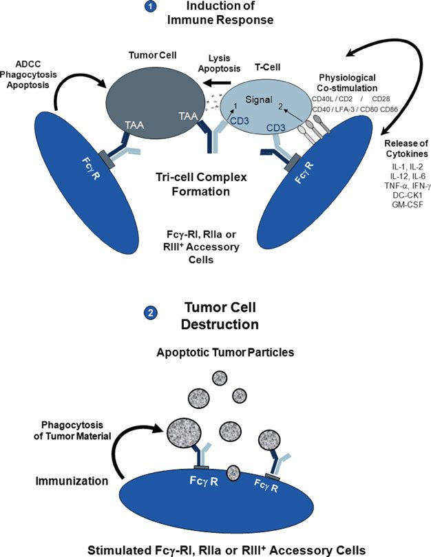
이 항체는 EpCAM 발현 종양을 가진 암환자의 악성복수 치료로 2009년 유럽 시장 승인을 얻었다(Shen and Zhu 2008; Linke et al. 2010). 이 항체는 EpCAM을 새로운 암 치료 표적항원으로 시장에 소개했을 뿐 아니라, 등록(registration)을 달성한 최초의 T 세포 참여 항체이기도 하다. 여러 다른 T 세포 참여 항체들이 임상(그림 15.1) 및 임상전 개발 중이다(그림 15.2).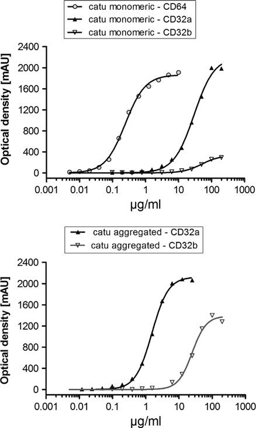
이 리뷰의 주제인 “bispecific T cell engager”(BiTE) 외에도, 몇몇 이중특이성 삼기능 항체, 세균 슈퍼항원/Fab 융합 단백질, 두 종류의 화학적 교차결합 단일클론 항체가 현재 임상 개발 중에 있다. 세균 슈퍼항원/anti-5T4 Fab 융합 단백질인 납투모맙 에스타페나톡스(naptumomab estafenatox, Anyara®)는 신세포암 대규모 3상 시험을 완료했고 효능 평가를 기다리고 있다(Robinson et al. 2010). 상용 항체인 anti-Her-2/neu 허셉틴(Herceptin®) 또는 anti-CD20 리툭산(Rituxan®)을 anti-CD3 마우스 항체 오쏘클론(Orthoclone®, OKT-3)과 화학적으로 교차결합하면, T 세포를 생체 외에서 “무장”시킨 뒤 환자에게 수용적으로 이식할 수 있는 컨쥬게이트가 만들어진다(Lum et al. 2006). 이 접근법으로 1상·2상 연구 여러 건이 진행 중이다.
그림 15.1 현재 임상 개발 중인 T 세포 참여 항체들. 여러 항체와 항체 유래 구성체의 설계가 제시되었다. 색 박스는 면역글로불린 도메인에 해당한다. 빨강: T 세포 참여 부분; 초록: 표적항원 결합 부분. 세부 사항은 본문 참고문헌에서 찾을 수 있다. 각 접근법을 추구하는 회사와 학술 기관이 나열되어 있다. MAb 단일클론 항체. (그림 구성: 임상 개발 중 — 삼기능 항체(Trion Pharma/Fresenius Biotech: Anti-CD3×Anti-EpCAM, Rat IgG2b/Mouse IgG2a); 초항원 융합체(Active Biotech: Anti-5T4 Fab, 공학적 세균 초항원); 가교 단클론항체(Karmanos Cancer Center: OKT-3×Anti-Her-2 Herceptin, Anti-CD3×Anti-CD20); BiTE(Micromet: Anti-CD19/Anti-EpCAM/Anti-Her-2 scFv₁-Anti-CD3-scFv₂); TCR 기반(Immunocore: Anti-gp100/HLA-A2 고친화도 TCR scFv-Anti-CD3 scFv))
그림 15.2 현재 임상전 개발 중인 T 세포 참여 항체들. 임상전 개발 중인 BiTE 항체는 표 15.1 참조. 여러 항체와 항체 유래 구성체의 설계가 제시되었다. 이것은 일부 선별 예시일 뿐이다. 공개되지 않은 채 임상전 개발 중인 항체들이 더 있을 수 있다. 색 박스는 면역글로불린 도메인에 해당한다. 빨강: T 세포 참여 부분; 초록: 표적항원 결합 부분. 세부 사항은 본문 참고문헌과 나열된 회사·기관의 웹페이지에서 찾을 수 있다. TCR 기반 접근은 가용성 단일사슬 T 세포 수용체(TCR; Immunocore, Receptor Logics) 또는 펩타이드/MHC I 복합체 특이성 단일사슬 항체(Applied Immune Technologies)를 사용한다. TandAb tandem diabody(텐덤 다이어바디); DART dual affinity re-targeting; DVD dual variable domain. (그림 구성: TCR 기반(Immunocore: 가용성 TCR, 항-펩타이드 항원/HLA, 항-TCR; Receptor Logics; Applied Immune Technologies: 항-TCR); TandAb(Affimed: Diabody₁ Anti-CD19 / Diabody₂ Anti-CD19, 이황화 안정화); DART(Macrogenics: Anti-FAP-α, Anti-TCR/Anti-CD3); 단일쇄 디아보디(Stuttgart University: Anti-CEA, Anti-CD3, 이황화 또는 scFv 안정화); DVD-Ig(Abbott Biotechnol: 2가 이중특이성 Anti-BCL1/Anti-CD20 Fab Cλ CH1, Anti-CD3×Anti-BCL1))
소위 텐덤 다이어바디(TandAbs)(Reusch et al. 2004), 이황화물 안정화 이중친화 재표적 다이어바디(DARTs)(Moore et al. 2010 AACR), 단일사슬 다이어바디(Stork et al. 2009), 이중 가변 도메인(DVD) 항체(Wu et al. 2009), Fab 절편 기반 이중특이성 구성체(Willems et al. 2005) 등이 그림 15.2에 묘사된 것처럼 각기 다른 구조 원리로 T 세포를 참여시킨다.
또 하나의 완전히 다른 접근은 MHC 클래스 I/펩타이드 항원을 인식하는 단일사슬 T 세포 수용체 또는 단일사슬 항체로 암세포를 표적하는 것이다. 둘 다 anti-CD3 항체와 결합한다(그림 15.2). Immunocore가 IMCgp100이라 이름 붙인 그런 분자 하나가 2010년 말 임상 1상 검토를 시작했다(그림 15.1 참조). 백신처럼, 이 부류의 이중특이성 항체는 종양연관 펩타이드 항원을 제시하는 특정 MHC 클래스 I 복합체에 의해 여전히 제한된다. 여러 회사와 학술 그룹이 이 접근법을 추구하고 있다(Denkberg and Reiter 2006).
서로 다른 이중특이성 항체 형식을 나란히 비교하려고 시도한 연구는 매우 드물다(Molhoj et al. 2007). 배양 세포 분석에서 이중특이성 항체 활성에는 당연히 많은 매개변수가 영향을 줄 수 있다. 기증자 T 세포의 출처, T 세포 전처치, 세포 배양 조건, 분석 지속 시간, 효과세포-표적세포 비율, 표적세포 성질 등이 그것이다. 마찬가지로 많은 매개변수가 마우스 이종이식 연구에서 이중특이성 항체 활성에 영향을 줄 수 있다. 따라서 출판된 데이터 비교만으로 이중특이성 항체의 역가와 기타 성질에 대해 확고한 결론을 내리기란 매우 어렵다.
T 세포를 이중특이성 항체로 참여시키는 데는 두 가지 명백한 장점이 있다. 첫째, 어떤 세포독성 T 세포든 — T 세포 수용체 특이성과 무관하게 — 종양세포 용해를 위해 참여시킬 수 있다. 이는 특이 T 세포 반응의 필요를 없앤다. 그런 반응의 생성은 다양한 면역회피 메커니즘 때문에 자주 방해받는다(Rabinovich et al. 2007). 둘째, 특정 종류의 이중특이성 항체는 T 세포가 완전한 표면항원을 인식하게 해 주는데, 이는 임상 현장에서 단일클론 항체 요법으로 검증된 바 있다.
15.3 이중특이성 T 세포 엔게이저
잘 규명된 이중특이성 T 세포 참여 항체 부류로 “bispecific T cell engaging”, 즉 BiTE 항체가 있다(Baeuerle et al. 2009). 구조는 펩타이드 링커로 공유결합된 두 개의 단일사슬 항체에 기반한다. 이렇게 하면 서로 다른 네 유전자가 암호화하는 네 개의 가변 도메인 전부가, 단 하나의 유전자가 암호화하는 한 개의 폴리펩타이드 사슬 위에 정렬된다. BiTE 항체는 T 세포 참여를 위해 아주 다양한 종양연관 표면항원을 활용할 수 있다(표 15.1). 가장 잘 연구된 것은 대부분의 인간 B 세포 악성종양이 발현하는 CD19(Dreier et al. 2002, 2003)와, 많은 고형종양 표면에 발현되며(Munz et al. 2009) 위에서 언급한 대로 최근 Removab®로 검증된 EpCAM(Brischwein et al. 2006a)에 결합하는 BiTE 항체다(Linke et al. 2010). 임상전 연구는 BiTE 항체가 암배아항원(CEA)(Lutterbuese et al. 2009), 티로신 키나제 EphA2(Hammond et al. 2007), 상피세포성장인자수용체(EGFR)(Lutterbuese et al. 2010), MCSP라 불리는 큰 흑색종연관 프로테오글리칸(Bluemel et al. 2010)을 발현하는 종양세포도 특이적으로 표적할 수 있음을 보여주었다. 미국암연구학회(AACR) 연례 학술대회 발표들은 CD33, 인슐린유사성장인자 수용체 1형, c-Met, 섬유아세포활성단백질 알파, 전립선줄기세포항원, Her-2/neu를 발현하는 암세포의 재유도 특이 용해를 매개하는 새 BiTE 항체들을 보고했다(Kischel et al. 2008; Raum et al. 2010).
표 15.1에 정리된 BiTE 항체 조사 표적항원들은 다음 결론을 내리게 한다. 즉 BiTE 항체는 전통적 단일클론 항체 요법이 추구해 온 거의 모든, 어쩌면 모든 표면 표적항원을 활용할 수 있다는 것이다. 세 개의 대형 바이오제약 회사와 공동으로 진행 중인 추가 BiTE 프로그램들이 있으며, 해당 표적항원은 공개되지 않았다.
EGFR 표적의 경우 아주 최근 연구가 보여준 바, 상용 항체 셕시무맙(cetuximab, Erbitux®)과 파니투무맙(panitumumab, Vectibix®)의 가변 도메인으로 매우 강력한 BiTE 항체를 만들 수 있는데, 자극하지 않은 T 세포든 사전 자극한 T 세포든 사용해 아주 낮은 pg/ml(즉, 피코몰 이하) 농도에서 종양세포를 용해한다(Lutterbuese et al. 2010). 원래의 단일클론 항체와 달리 이 BiTE 항체들은 K-RAS와 B-RAF 유전자 돌연변이를 지닌 암세포주에 대해 고활성이었다. 이것은 BiTE 항체의 활성이 단일클론 항체처럼 수용체 억제에 의존하지 않고 오직 EGFR 표면 수용체를 통한 T 세포 참여로만 작동하기 때문인데, 하류 신호 단백질 K-RAS와 B-RAF의 활성화 돌연변이 영향을 받지 않는 작용 방식이다. 따라서 BiTE 항체는 잘 규명된 표적 결합 특이성을 그대로 살리면서도 전통 항체의 한계를 극복할 잠재력을 지닌다.
표 15.1 지금까지 BiTE 항체로 검사된 표면 표적항원
| BiTE 표적(개발 파트너) | 적응증/표적 조직 | 개발 상태 |
|---|---|---|
| CD19 | B 세포 악성종양 및 질환 | Pivotal, 2상 및 1상 임상 연구 |
| EpCAM | EpCAM⁺ 고형종양 | 임상 1상 |
| CEA(MedImmune) | CEA⁺ 고형종양 | 임상전 |
| N.d.(Bayer Schering Pharma) | 고형종양 | 임상전 |
| N.d.(Sanofi-aventis) | 고형종양 | 임상전 |
| N.d.(Boehringer Ingelheim) | 다발성 골수종 | 임상전 |
| EGFR | EGFR⁺ 고형종양 | 생체 내 PoC(원숭이, 마우스) |
| CD33 | AML, CML, MDS | 생체 내 PoC(원숭이, 마우스) |
| MCSP | 흑색종 | 생체 내 PoC(원숭이, 마우스) |
| EphA2 | EphA2⁺ 고형종양 | 생체 내 효능(마우스) |
| PSCA | 전립선암 | 시험관 내 활성 |
| FAP-alpha | 육종, 기질섬유아세포 | 시험관 내 활성 |
| IGF-1R | IGF-1R⁺ 고형종양 | 시험관 내 활성 |
| Her-2/neu | 유방암 및 위암 | 시험관 내 활성 |
| Endosialin | 신생혈관 | 시험관 내 활성 |
| Carbonic anhydrase IX | 신장암 | 시험관 내 활성 |
| cMet | cMet⁺ 고형종양 | 시험관 내 활성 |
사용 약어: EpCAM epithelial cell adhesion molecule(상피세포부착분자); CEA carcinoembryonal antigen(암배아항원, CD66e라고도 함; CEACAM5); N.d. not disclosed(미공개); EGFR epidermal growth factor receptor(상피세포성장인자수용체, HER-1이라고도 함); MCSP melanoma-associated chondroitin sulfate proteoglycan(흑색종연관 콘드로이틴황산 프로테오글리칸, HMW-MAA, CSPG4, NG2라고도 함); EphA2 ephrin type-A receptor tyrosine kinase; PSCA prostate stem cell antigen(전립선줄기세포항원); FAP-alpha fibroblast-activating protease-alpha; IGF-1R insulin-like growth factor 1 receptor(인슐린유사성장인자 1 수용체); Her-2/neu epidermal growth factor receptor 2(상피세포성장인자수용체 2); cMet hepatocyte growth factor receptor tyrosine kinase(간세포성장인자수용체 티로신키나제); PoC proof of concept(개념 실증). 문헌은 본문 참조.
15.4 BiTE 항체의 성질과 작용 방식
BiTE 항체의 시험관 내·생체 내 활성과 작용 방식은 매우 상세히 연구되었다(Kufer et al. 2004; Baeuerle et al. 2008, 2009; Baeuerle and Reinhardt 2009). BiTE 특성은 정기적으로 리뷰되어 왔으므로 여기서는 성질만 간략히 요약한다. BiTE 항체의 핵심 특징은 (a) 재유도 표적세포 용해의 높은 역가, (b) 엄격히 표적세포 의존적인 CD8⁺ 및 CD4⁺ T 세포 다클론 활성화, (c) T 세포에 의한 연속 살상 모드 유도, (d) T 세포 증식 유도이다.
대부분의 BiTE 항체가 피코~펨토몰 범위에서 보이는 재유도 표적세포 용해의 높은 역가는 T 세포 수용체(TCR) 복합체의 매우 효율적인 활성화와 관련될 수 있다(Brandl et al. 2007; Brischwein et al. 2007a). 특정 세포독성 T 세포의 수용체 한 자릿수만 MHC I/펩타이드 복합체로 활성화되어도 적절한 표적세포에 대한 완전한 세포독 반응이 충분히 일어난다(Purbhoo et al. 2004). 이는 높은 수준의 신호 증폭을 보여준다. 따라서 표적세포 표면에 붙은 소수의 BiTE 항체는 일시적으로 연결된 T 세포를 완전히 활성화하는 데 소수의 MHC 클래스 I/펩타이드 복합체만큼 효율적으로 보인다. 두 자극 모두 세포용해성 시냅스(cytolytic synapse) 형성으로 이어진다(Offner et al. 2006). MHC 클래스 I/펩타이드 복합체든 anti-CD3 항체든 TCR 트리거링은 유한한 소수의 수용체 클러스터링이 필요하다(Minguet and Schamel 2008). 이것이 BiTE 항체가 CD3에 한 팔로만 결합해서는 T 세포를 완전히 활성화하지 못하는 이유를 설명할 수 있다. 표적세포 표면 위 “활성화 매트릭스”로 T 세포에 제공되지 않는 한 그렇다는 것이다(Brischwein et al. 2007a).
BiTE 항체로 활성화된 T 세포는 연속 살상 모드를 채택해 표적세포를 차례로 제거할 수 있다(Hoffmann et al. 2005). 이는 그란자임과 펄포린 발현 상향조절을 동반한다(Haas et al. 2009). 세포독성 T 세포의 분비 과립을 재충전하는 데 필요한 변화다. 실험적으로 연속 살상은 낮은 효과세포-표적세포 비율에서의 완전한 표적세포 용해로, 또는 비디오 보조 현미경으로 배양 중 개별 T 세포 활동을 추적하여 입증할 수 있다. BiTE 자극은 T 세포 증식을 유도하며 세포주기 하나가 대략 24시간마다 일어난다(Brischwein et al. 2006). 이 반응은 표적 조직의 가용 T 세포를 늘려 종양 박멸 속도에 크게 기여할 것이다.
BiTE 작용 방식에는 세포용해성 시냅스 형성이 관여하고(Offner et al. 2006), 공 형성 단백질인 펄포린의 활성에 결정적으로 의존한다(Haas et al. 2009). 세포외 칼슘 킬레이트로 공 형성을 막으면 표적세포 용해가 전혀 관찰되지 않는다. 따라서 펄포린은 표적세포 막 천공과 그란자임의 표적세포 세포질 전달 두 가지 모두에 중요하다(Kurschus et al. 2008). 세포독성 T 세포 분비 과립에 저장된 여러 그란자임 가운데 그란자임 B가 프로카스파제 활성화와 표적세포의 프로그램된 세포사(세포자멸사) 유도에 가장 강력한 것으로 보인다(Kurschus and Jenne 2010). 그러나 판카스파제 억제제로도 BiTE 항체에 의한 표적세포 용해를 막지 못하는데, 이는 펄포린과 서로 다른 단백질분해효소 기질 특이성을 지닌 다른 그란자임들이 용해에 충분함을 시사한다. BiTE 활성화 T 세포와 시냅스가 형성된 뒤 세포질 효소인 아데닐산키나제가 손상된 표적세포에서 배지로 새어 나오고, 동시에 표적세포는 프로카스파제 활성화, 폴리-ADP리보스중합효소 절단, DNA 절편화 등 세포자멸사의 여러 특징적 징후를 보인다(Haas et al. 2009). 따라서 여러 메커니즘이 동시에 BiTE 활성화 T 세포의 표적세포 용해에 기여하여, 표적세포가 T 세포 매개 손상을 피할 기회는 거의 없어 보인다.
BiTE 항체는 재유도 용해를 위해 다양한 T 세포 아집단을 참여시킬 수 있다(Kischel et al. 2009). 가장 효과적인 것은 CD4 또는 CD8 표현형의 소위 효과기억 T 세포다. NHL 환자 말초혈액에서도 BiTE 치료에 반응해 효과기억 T 세포가 가장 강하게 확장되는 것이 발견되었다(Bargou et al. 2008). 중심기억 T 세포, CD45RA 발현 효과기억 T 세포, 말초혈액의 나입브 및 조절 T 세포는 필적하는 확장을 보이지 않았다. CD19-, EpCAM-, CEA-특이 BiTE 항체가 환자 유래 단핵세포 제제 속 T 세포를 참여시켜 자가 암세포를 용해한다는 것도 발견되었다(Löffler et al. 2003; Wimberger et al. 2003; Osada et al. 2010). 이 시험관 실험들은 환자에게서 화학요법 후 남은 T 세포도 같은 환자의 암세포를 여전히 용해할 수 있음을 보여주었다.
15.5 BiTE 항체의 임상 경험
임상 경험은 CD19/CD3- 및 EpCAM/CD3-이중특이성 BiTE 항체로 축적되었다(Nagorsen et al. 2009a). CD19/CD3-이중특이성 BiTE 항체 블리나투맙(blinatumomab, MT103)은 B 계열 급성림프모구성백혈병(ALL)의 최소잔존질환(MRD) 환자를 대상으로 하는 2상 임상시험을 완료했고, 주로 여포성·매토스형 비호지킨 림프종(NHL) 환자를 대상으로 하는 진행 중 1상 연구에서 평가되고 있다. EpCAM/CD3-이중특이성 항체 MT110은 위장관(대직장, 위, 위식도접합부), 폐(선암 및 소세포암), 유방, 난소, 전립선 암 환자를 대상으로 하는 용량 증가 1상 연구에서 현재 검증되고 있다.
지금까지 모든 연구에서 광범위한 면역약리학 분석이 수행되어 BiTE 항체가 T 세포 수, 아집단, 분포, 부착성, 활성화 상태에 미치는 영향을 조사했다. 혈청 반감기가 몇 시간에 불과하므로, BiTE 항체는 휴대용 미니펌프와 포트 시스템을 이용한 지속 정맥 주입(c.i.v.)으로 투여된다. c.i.v. 투여는 매우 예측 가능한 혈청 농도를 달성하고 장기간 유지할 수 있는 장점이 있다. 초기 치료 길이로 4~8주가 현재 사용된다. ALL과 NHL 치료에 효능이 있는 블리나투맙 혈청 농도는 1~3 ng/ml, 즉 18~53 pM 범위였다. 블리나투맙은 NHL과 ALL 환자 모두에서 놀라운 객관적 반응률을 보였다. 60 μg/m²/day 정량 투여 시, 재발 또는 난치성 여포성·매토스림프종의 평가 가능한 NHL 환자 8명 전원이 부분 또는 완전 관해를 보였다. 환자 4명은 반응 지속 기간이 2년이었고, 가장 오래 추적된 환자에서는 30개월이 넘도록 반응이 지속되었다(Goebeler et al. 2010). 블리나투맙의 항종양 활성은 NHL 환자의 혈액, 림프절, 비장, 간, 골수에서 뚜렷했다(Bargou et al. 2008). 고용량 화학요법에도 골수에서 종양세포가 지속되거나 재출현하는 ALL 환자에게는 15 μg/m²/day 용량의 블리나투맙만으로 평가 가능 환자 20명 중 16명(80%)에게 골수 생검 PCR 분석으로 판정한 완전 MRD 반응을 일으키기에 충분했다.
ALL 환자의 무재발 생존 중앙값은 480일이 지나도 도달하지 않아 블리나투맙 치료에 대한 ALL 환자의 장기 지속 반응을 시사한다(Bargou et al. 2010). 림프종 환자의 객관적 반응은 15 μg/m²/day 용량에 도달하기 전에는 나타나지 않았다(Bargou et al. 2008). 흥미롭게도 이중특이성 항체의 임상 활성에는 세포배양 분석의 재유도 용해 EC₉₀ 값과 거의 일치하는 환자 블리나투맙 혈청 농도가 필요했다. 이런 밀접한 상관은 전통적 단일클론 항체에서는 뚜렷하지 않다. 전통 항체의 경우 환자에서의 효능 혈청 농도(mg/ml)가 시험관 EC₉₀ 값(ng/ml)을 보통 몇 자릿수 초과한다.
BiTE 항체 주입 시 T 세포는 1시간 안에 말초혈액에서 사라졌다가 1~2일 안에 다시 나타난다. 초기 소실은 가용성 ICAM-1에 대한 친화력 증가와 상관되는데, T 세포가 BiTE 자극에 반응해 혈관벽에 대한 부착성을 높인다는 것을 의미한다. BiTE 항체는 TCR의 불변 CD3 성분에 결합하는 힘으로 모든 T 세포를 활성화할 잠재력이 있음에도, 활성화 T 세포에서 혈청으로의 현저하거나 지속적인 염증성 사이토카인 방출은 관찰되지 않았다(Bargou et al. 2008, 2010). 실제로 BiTE 주입 시작 때 일시적이고 미미한 사이토카인 피크만 측정되었고 가두드러진 사이토카인은 인터루킨-10이었다. 이 관찰은 표적항원 발현 세포가 있어야 T 세포가 완전히 활성화되고 IL-10을 포함한 사이토카인을 일시적으로 방출한다는 세포배양 실험 결과와 일치한다(Brandl et al. 2007). BiTE 주입 시작 후 며칠 안에 일어나는 부작용 대부분 — 발열, 오한, 두통, C반응단백 상승, 림프구감소증 — 은 BiTE 활성화 T 세포의 초기 염증 반응으로 설명할 수 있다.
T 세포는 초기 자극에 빠르게 적응하는 고유 성질이 있다. 활성화 자극이 계속 있어도 T 세포는 표적세포 용해를 계속 수행하면서 사이토카인 방출은 멈춘다. 이는 마우스 EpCAM/마우스 CD3 특이 BiTE 항체 muS110을 이용한 마우스 모델에서 확인되었다(Amann et al. 2008; 2009a, b). T 세포의 이런 적응 행동은 BiTE 주입 부작용이 처음 며칠에 집중되고 치료를 계속하는 동안 빈도와 강도가 줄어드는 이유를 잘 설명해 준다.
CD19-특이 BiTE 항체 블리나투맙의 특이한 부작용은 일시적 중추신경계(CNS) 기능 장애다. 실행증, 실어증/구어장애, 떨림, 뇌병증, 소뇌 증후군, 경련 등이다. 이런 사건들은 주입 시작 후 첫 며칠 안에 또는 환자 내 용량 증가 시 일어날 수 있으므로 CNS에서의 첫 T 세포 활성화에서 비롯될 수 있다. 낮은 말초 B:T 세포 비율은 NHL 환자에서 CNS 부작용 발생으로 치료 중단에 이를 위험군 환자를 식별하는 것 같은 바이오마커로 확인되었다(Nagorsen et al. 2009b). B:T 비율이 낮은 환자는 B 세포 수가 회복될 때까지 치료에서 제외하거나, 단계 용량(step-dosing) 요법으로 치료할 수 있다. 후자는 낮은 시작 용량에서 목표 용량까지 일정 기간 환자 내 용량을 올리는 방식으로, 말초 표적세포 수가 적은 상태에서도 T 세포가 적응할 시간을 준다(Goebeler et al. 2010).
블리나투맙은 이제 B 계열 ALL 환자 대상 등록/판매허가를 목표로 하는 임상 개발 단계로 나아가고 있다.
EpCAM-/CD3-이중특이성 BiTE 항체 MT110의 고형종양 환자 대상 진행 중 1상 시험은 24 μg/day 용량 수준에 도달했는데, 이는 약 1 ng/ml(18 pM)의 일정한 혈청 농도에 해당한다(Fiedler et al. 2010). 세포배양 실험에서 1 ng/ml의 MT110은 표적 암세포의 반최대 용해를 일으킬 것이다(Brischwein et al. 2006a). 지금까지 치료 후 생검에서 세포독성 T 세포의 종양 조직 침윤이 관찰되었지만, 질병 안정화 외에 RECIST 기준에 따른 반응은 아직 나타나지 않았다.
고형종양의 상황은 혈행성 종양과 다른 것으로 알려져 있다. 약물 침투의 제한, 면역억제성 미세환경, 비정상 혈관계가 치료에 추가 장벽이 되기 때문이다. 주목할 점은 MT110으로 치료받은 28명에게서 지금까지 CNS 부작용이 관찰되지 않았다는 것이다(Fiedler et al. 2010). MT110의 주목할 만한 생화학적 부작용은 주입 시작 시 또는 환자 내 용량 증가 시의 초기 급격한 간 효소 상승이었는데, 대다수 환자에서 치료 지속 중 또는 치료 중단 후 정상화되었다. 간 조직에서 새로 활성화된 T 세포가 국소적으로 사이토카인을 방출하는 것이 원인으로 논의되고 있다. 마우스 모델에서 렉틴 활성화 T 세포가 간에서 방출하는 TNF-알파와 인터페론-감마가 간세포에 독성이라는 것이 알려져 있다(Küsters et al. 1996, 1997). 그 외에 임상적 관점에서 MT110은 지금까지 탐색된 용량에서 저등급 발열, 메스꺼움, 구토, 설사, 피로가 가장 잦은 매우 양호한 안전성 프로파일을 보였다.
CEA/CD3-이중특이성 BiTE 항체 MT111/MEDI-565는 2011년 초 위장관암 환자 임상 1상 검토에 들어갔다.
15.6 전망
BiTE 기술은 진행 중인 임상시험과 비임상 실험으로 활발히 평가되고 있다. 임상 단계의 두 BiTE 항체 외에 현재 세 개의 BiTE 항체가 더 임상전 개발 중이다. 둘은 고형종양 표면항원을, 하나는 다발성 골수종 세포의 표면항원을 표적한다(표 15.1 참조). 서로 다른 항원을 표적하는 BiTE 항체들의 개발은 특정 고형종양 표적과 관련된 위험 — 예컨대 치료 창, 제한적 발현, 치료 압력下 종양세포에서의 잠재적 상실 — 을 완화할 것이다.
블리나투맙의 과제는 이제 등록으로 가는 길을 최적으로 준비하고, 인간 B 세포 악성종양 치료에서 가질 수 있는 큰 잠재력을 활용하는 것이다. 실제로 CD19는 다발성 골수종을 유일한 예외로 하여 대부분의 B 세포 유래 혈액암에서 발현된다. 블리나투맙은 이미 여러 적응증에서 뛰어난 효능과 관리 가능한 안전성 프로파일을 보였다.
BiTE 플랫폼은 견고한 기술로 성숙하여 지금까지 네 개의 바이오제약 회사를 개발 파트너로 끌어들였다. BiTE 리드 후보 생성·선별, 세포 클론 생성과 공정 개발, 다양한 동물 모델에서의 안전성·효능 평가, 바이오어세이 개발, BiTE 항체 임상 개발에 관한 상당한 노하우가 축적되었다. 기존 단일클론 항체 요법은 고활성 BiTE 항체로 전환될 수 있고(Lutterbuese et al. 2010), 지금까지 열두 개가 넘는 표적항원이 BiTE 항체의 강력한 T 세포 참여에 적합함이 입증되었다. 따라서 BiTE 항체는 매우 다양한 암 적응증의 치료용으로 만들어질 수 있어 보인다.
참고문헌
- Alley SC, Okeley NM, Senter PD (2010) Antibody-drug conjugates: targeted drug delivery for cancer. Curr Opin Chem Biol 14(4):529–537
- Altenschmidt U, Klundt E, Groner B (1997) Adoptive transfer of in-vitro-targeted, activated lymphocytes results in total tumor regression. J Immunol 159(11):5509–5515
- Amann M, Brischwein K, Lutterbuese P, Parr L, Petersen L, Lorenczewski G, Krinner E, Bruckmeier S, Lippold S, Kischel R, Lutterbuese R, Kufer P, Baeuerle PA, Schlereth B (2008) Therapeutic window of MuS110, a single-chain antibody construct bispecific for murine EpCAM and murine CD3. Cancer Res 68(1):143–151
- Amann M, Friedrich M, Lutterbuese P, Vieser E, Lorenczewski G, Petersen L, Brischwein K, Kufer P, Kischel R, Baeuerle PA, Schlereth B (2009a) Therapeutic window of an EpCAM/CD3-specific BiTE antibody in mice is determined by a subpopulation of EpCAM-expressing lymphocytes that is absent in humans. Cancer Immunol Immunother 58(1):95–109
- Amann M, D’Argouges S, Lorenczewski G, Brischwein K, Kischel R, Lutterbuese R, Mangold S, Rau D, Volkland J, Pflanz S, Raum T, Münz M, Kufer P, Schlereth B, Baeuerle PA, Friedrich M (2009b) Antitumor activity of an EpCAM/CD3-bispecific BiTE antibody during long-term treatment of mice in the absence of T-cell anergy and sustained cytokine release. J Immunother 32(5):452–464
- Baeuerle PA, Reinhardt C, Kufer P (2008) BiTE – a new class of antibodies that recruit T cells. Drugs of the Future 33:137–147
- Baeuerle PA, Reinhardt C (2009) Bispecific T cell engaging antibodies for cancer therapy. Cancer Res 69(12):4941–4944
- Baeuerle PA, Kufer P, Bargou R (2009) BiTE: teaching antibodies to engage T cells. Curr Opin Mol Ther 11(1):22–30
- Ball ED, Broome HE (2010) Monoclonal antibodies in the treatment of hemtologic malignancy. Best Pract Res Clin Haematol 23(3):403–416
- Bargou R, Leo E, Zugmaier G, Goebeler M, Knop S, Noppeney R, Viardot A, Hess G, Schuler M, Einsele H, Riethmüller G, Brandl C, Wolf A, Kirchinger P, Klappers P, Schmidt M, Klinger M, Reinhardt C, Baeuerle PA, Kufer P (2008) Tumor regression in cancer patients by very low doses of a T cell-engaging antibody. Science 321(5891):974–977
- Bargou R, Zugmaier G, Goekbuget N, Neumann S, Horst H-A, Raff T, Brueggemann M, Kneba M, Viardot A, Schmid M, Schaich M, Stelljes M, Goebeler M, Pfeifer H, Ottmann O, Burmeister T, Degenhard E, Schmidt M, Scheele J, Einsele H, Kufer P, Klinger M, Nagorsen D, Hoelzer D, Topp M (2010) Prolonged leukemia free survival following blinatumomab (anti-CD19 BiTE) treatment of patients with minimal residual disease (MRD) of B precursor ALL: updated results of a phase II study. Annual meeting of the European Hematology Association, Barcelona 2010, abstract no 598
- Bluemel C, Hausmann S, Fluhr P, Sriskandarajah M, Stallcup WB, Baeuerle PA, Kufer P (2010) Epitope distance to the target cell membrane and antigen size determine the potency of T cell mediated lysis by BiTE antibodies specific for a large melanoma surface antigen. Cancer Immunol Immunother 59(8):1197–1209
- Brandl C, Haas C, d’Argouges S, Fisch T, Kufer P, Brischwein K, Prang N, Bargou R, Suzich J, Baeuerle PA, Hofmeister R (2007) The effect of dexamethasone on polyclonal T cell activation and redirected target cell lysis as induced by a CD19/CD3-bispecific single-chain antibody construct. Cancer Immunol Immunother 56(10):1551–1563
- Brischwein K, Schlereth B, Guller B, Steiger C, Wolf A, Lutterbuese R, Offner S, Locher M, Urbig T, Raum T, Kleindienst P, Kimmig R, Fichtner I, Kufer P, da Silva AJ, Baeuerle PA (2006) MT110: a novel bispecific single-chain antibody construct with high efficacy in eradicating solid tumors. Mol Immunol 43(8):1129–1143
- Brischwein K, Parr L, Pflanz S, Volkland J, Lumsden J, Klinger M, Locher M, Hammond SA, Kiener P, Kufer P, Schlereth B, Baeuerle PA (2007) Strictly target cell-dependent activation of T cells by bispecific single-chain antibody constructs of the BiTE class. J Immunother 30(8):798–807
- Carpenito C, Milone MC, Hassan R, Simonet JC, Lakhal M, Suhoski MM, Varela-Rohena A, Haines KM, Heitjan KM, Albelda SM, Carroll RG, Riley JL, Pastan I, June CH (2009) Control of large, established tumor xenografts with genetically engineered human T cells containing CD28 and CD137 domains. Proc Natl Acad Sci USA 106(9):3360–3365
- Denkberg G, Reiter Y (2006) Recombinant antibodies with T-cell receptor-like specificity: novel tools to study MHC class I penetration. Autoimmun Rev 5(4):252–257
- Dreier T, Lorenczewski G, Brandl C, Hoffmann P, Syring U, Hanakam F, Kufer P, Riethmuller G, Bargou R, Baeuerle PA (2002) Extremely potent, rapid and costimulation-independent cytotoxic T-cell response against lymphoma cells catalyzed by a single-chain bispecific antibody. Int J Cancer 100(6):690–697
- Dreier T, Baeuerle PA, Fichtner I, Grün M, Schlereth B, Lorenczewski G, Kufer P, Lutterbüse R, Riethmüller G, Gjorstrup P, Bargou RC (2003) T cell costimulus-independent and very efficacious inhibition of tumor growth in mice bearing subcutaneous or leukemic human B cell lymphoma xenografts by a CD19-/CD3-bispecific single-chain antibody construct. J Immunol 170(8):4397–4402
- Fiedler WM, Ritter B, Seggewiss R, Bokemeyer C, Fettes P, Klinger M, Vieser E, Ruettinger D, Kaubitzsch S, Wolf M (2010) Phase I safety and pharmacology study of the EpCAM/CD3 bispecific BiTE antibody MT110 in patients with metastatic colorectal, gastric, or lung cancer. J Clin Oncol 28:15s, abstract no 2573
- Goebeler M, Viardot A, Knop S, Topp M, Sökeler M, Kanz L, Krause S, Mackensen A, Noppeney R, Nagorsen D, Zugmaier G, Klinger M, Schmidt M, Scheele J, Klappers P, Kufer P, Einsele H, Bargou R (2010) Confirmation of safety, efficacy and response duration in non-Hodgkin lymphoma patients treated with 60 mg/m/d of BiTE antibody blinatumomab. Annual meeting of the European Hematology Association, Barcelona 2010, abstract no 559
- Haas C, Krinner E, Brischwein K, Hoffmann P, Lutterbüse R, Schlereth B, Kufer P, Baeuerle PA (2009) Mode of cytotoxic action of T cell-engaging BiTE antibody MT110. Immunobiology 214(6):441–453
- Hammond SA, Lutterbuese R, Roff S, Lutterbuese P, Schlereth B, Bruckheimer E, Kinch MS, Coats S, Baeuerle PA, Kufer P, Kiener PA (2007) Selective targeting and potent control of tumor growth using an EphA2/CD3-bispecific single-chain antibody construct. Cancer Res 67(8):3927–3935
- Hoffmann P, Hofmeister R, Brischwein K, Brandl C, Crommer S, Bargou R, Itin C, Prang N, Baeuerle PA (2005) Serial killing of tumor cells by cytotoxic T cells redirected with a CD19-/CD3-bispecific single-chain antibody construct. Int J Cancer 115(1):98–104
- Kischel R, Raum T, Hausmann S, Rau D, Bluemel C, Mangold S, Meier P, Ebert E, Kvesic M, Hoffman P, Baeuerle PA, Kufer P (2008) Characterization in primates of MCSP- and CD33-
- 특정 인간 BiTE 항체의 흑색종과 AML 치료용 특성 규명. Proc Am Assoc Cancer Res 99:Abstract no 2404
- Kischel R, Hausmann S, Klinger M, Baeuerle PA, Kufer P (2009) Effector memory T cells make a major contribution to redirected lysis by T cell-engaging BiTE antibody MT110. 100th meeting of the American Association for Cancer Research 2009, abstract no 3252
- Kubota T, Niwa R, Satoh M, Akinaga S, Shitara K, Hanai N (2009) Engineered therapeutic antibodies with improved effector functions. Cancer Sci 100(9):1566–1572
- Kufer P, Lutterbuese R, Baeuerle PA (2004) A revival of bispecific antibodies. Trends Biotechnol 22:238–244
- Kurschus FC, Jenne D (2010) Delivery and therapeutic potential of human granzyme B. Immunol Rev 235(1):159–171
- Kurschus FC, Fellows E, Stegmann E, Jenne DE (2008) Granzyme B delivery via perforin is restricted by size, but not by heparan sulfate-dependent endocytosis. Proc Natl Acad Sci USA 105(37):13799–13804
- Küsters S, Gantner F, Künstle G, Tiegs G (1996) Interferon gamma plays a critical role in T cell dependent liver injury in mice initiated by concanavalin A. Gastroenterology 111(2):462–471
- Küsters S, Tiegs G, Alexopoulo L, Pasparakis M, Douni E, Künstle G, Bluethmann H, Wendel A, Pfizenmaier K, Kollias G, Grell M (1997) In vivo evidence for a functional role of both tumor necrosis factor (TNF) receptors and transmembrane TNF in experimental hepatitis. Eur J Immunol 27(11):2870–2905
- Linke R, Klein A, Seimetz D (2010) Catumaxomab: clinical development and future directions. MAbs 2(2):129–136
- Löffler A, Gruen M, Wuchter C, Schriever F, Kufer P, Dreier T, Hanakam F, Baeuerle PA, Bommert K, Karawajew L, Dörken B, Bargou RC (2003) Efficient elimination of chronic lymphocytic leukaemia B cells by autologous T cells with a bispecific anti-CD19/anti-CD3 single-chain antibody construct. Leukemia 17(5):900–909
- Lum LG, Davol PA, Lee RJ (2006) The new face of bispecific antibodies: targeting cancer and much more. Exp Hematol 34(1):1–6
- Lutterbuese R, Raum T, Kischel R, Lutterbuese P, Schlereth B, Schaller E, Mangold S, Rau D, Meier P, Kiener PA, Mulgrew K, Oberst MD, Hammond SA, Baeuerle PA, Kufer P (2009) Potent control of tumor growth by CEA/CD3-bispecific single-chain antibody constructs that are not competitively inhibited by soluble CEA. J Immunother 32(4):341–352
- Lutterbuese R, Raum T, Kischel R, Hoffmann P, Mangold S, Rattel B, Friedrich M, Thomas O, Lorenczewski G, Rau D, Schaller E, Herrmann I, Wolf A, Urbig T, Baeuerle PA, Kufer P (2010) T cell-engaging BiTE antibodies specific for EGFR potently eliminate KRAS- and BRAF-mutated colorectal cancer cells. Proc Natl Acad Sci USA 107(28):12605–12610
- Minguet S, Schamel WW (2008) A permissive geometry model for TCR-CD3 activation. Trends Biochem Sci 33(2):51–57
- Molhoj M, Crommer S, Rau D, Sriskandarajah M, Kufer P, Brischwein K, Hofmeister R, Baeuerle PA (2007) CD19/CD3-bispecific antibody of the BiTE class is far superior to tandem diabody with respect to redirected tumor cell lysis. Mol Immunol 44(8):1945–1953
- Moore PA, Zhang W, Rainey J, Burke S, Huang L, Li H, Veri C, Yang Y, He L, Ciccarone V, Gorlatov S, Aggarwal S, Alderson R, Koenig S, Bonvini E, Johnson S (2010) Application of a novel bispecific antibody-based scaffold for optimal redirected T-cell killing of cancer cells. 101st Annual meeting of the American Association for Cancer Research 2010, abstract no 5629
- Morse MA, Whelan M (2010) A year of successful cancer vaccines points to a path forward. Curr Opin Mol Ther 12:11–13
- Müller D, Kontermann RE (2007) Recombinant bispecific antibodies for cellular cancer immunotherapy. Curr Opin Mol Ther 9(4):319–326
- Müller D, Kontermann RE (2010) Bispecific antibodies for cancer immunotherapy: current perspectives. BioDrugs 24(2):89–98
- Munz M, Baeuerle PA, Gires O (2009) The emerging role of EpCAM in cancer and stem cell signaling. Cancer Res 69(14):5627–5629
- Nagorsen D, Bargou R, Ruettinger D, Kufer P, Baeuerle PA, Zugmaier G (2009a) Immunotherapy of lymphoma and leukemia with T cell-engaging BiTE antibody blinatumomab. Leuk Lymphoma 50(6):1–6
- Nagorsen D, Zugmaier G, Viardot A, Goebeler M, Noppeney R, Schmidt M, Klappers P, Baeuerle PA, Kufer P, Bargou RC (2009b) Confirmation of safety, efficacy and response duration in non-Hodgkin lymphoma patients treated with 60 mg/m2/d of BiTE® antibody blinatumomab. Blood 114:4793 (ASH Annual Meeting Abstracts)
- Offner S, Hofmeister R, Romaniuk A, Kufer P, Baeuerle PA (2006) Induction of regular cytolytic T cell synapses by bispecific single-chain antibody constructs on MHC class I-negative tumor cells. Mol Immunol 43(6):763–771
- Osada T, Hsu D, Hammond S, Hobeika A, Devi G, Clay TM, Lyerly HK, Morse MA (2010) Metastatic colorectal cancer cells from patients previously treated with chemotherapy are sensitive to T-cell killing mediated by CEA/CD3-bispecific T-cell-engaging BiTE antibody. Br J Cancer 102(1):124–133
- Pages F, Berger A, Camus M, Sanchez-Cabo F, Costes A, Molidor R, Mlecnik B, Kirilovsky A, Nilsson M, Damotte D, Meatchi T, Bruneval P, Cugnenc PH, Trajanoski Z, Fridman WH, Galon J (2005) Effector memory T cells, early metastasis, and survival in colorectal cancer. N Engl J Med 353(25):2654–2666
- Purbhoo MA, Irvine DJ, Huppa JB, Davis MM (2004) T cell killing does not require the formation of a stable mature immunological synapse. Nat Immunol 5(5):524–530
- Rabinovich GA, Gabrilovich D, Sotomayor EM (2007) Immunosuppressive strategies that are mediated by tumor cells. Annu Rev Immunol 25:267–296
- Raum R, Rau D, Kischel R, Bluemel C, Hausmann S, Steiger C, Meier P, Ebert E, Mangold S, Hoffmann P, Strasser S, Cierpka R, Kvesic M, Baeuerle PA (2010) Novel primate-crossreactive BiTE antibodies that eliminate cancer cells expressing cMet, IGFR-1, FAP-alpha, PSCA, Endosialin, CAIX or Her2/neu. 101st Annual meeting of the American Association for Cancer Research 2010, abstract no 2434
- Renner C, Jung W, Sahin U, Denfeld R, Pohl C, Trümper L, Hartmann F, Diehl V, van Lier R, Pfreundschuh M (1994) Cure of xenografted human tumors by bispecific monoclonal antibodies and human T cells. Science 264(5160):833–835
- Reusch U, Le Gall F, Hensel M, Moldenhauer G, Ho AD, Little M, Kipriyanov SM (2004) Effect of tetravalent bispecific CD19CD3 recombinant antibody construct and CD28 costimulation on lysis of malignant B cells from patients with chronic lymphocytic leukemia by autologous T cells. Int J Cancer 112(3):509–518
- Robinson MK, Alpaugh RK, Borghaei H (2010) Naptumomab estafenatox: a new immunoconjugate. Expert Opin Biol Ther 10(2):273–279
- Roman K, Raum T, Hausmann S, Rau D, Bluemel C, Mangold S, Meier P, Ebert E, Kvesic M, Hoffman P, Baeuerle PA, Kufer P (2008) Characterization of novel CD33- and MCSP-specific BiTE antibodies for the treatment of acute myeloid leukemia and melanoma, respectively, that are fully human in sequence. 99th meeting of the American Association for Cancer Research 2008, abstract no 2404
- Rosenberg SA, Restifo N, Yang JC, Morgan RA, Dudley ME (2008) Adoptive cell transfer: a clinical path to effective cancer immunotherapy. Nat Rev Cancer 8(4):299–308
- Schlereth B, Fichtner I, Lorenczewski G, Kleindienst P, Brischwein K, Kufer P, Lutterbüse R, Wimberger P, Kimmig R, Baeuerle PA (2005) Eradication of tumors from a human colon cancer cell line and primary ovarian cancer metastases in immunodeficient mice by a single chain Ep-CAM-/CD3-bispecific antibody construct. Cancer Res 65(7):2882–2889
- Shen J, Zhu Z (2008) Catumaxomab a rat/murine hybrid trifunctional bispecific monoclonal antibody for the treatment of cancer. Curr Opin Mol Ther 10(3):273–284
- Stork R, Campigna A, Robert B, Müller D, Kontermann RE (2009) Biodistribution of a bispecific single-chain diabody and its half-life extended derivatives. J Biol Chem 284(38):25612–25619
- Topp MS, Zugmaier G, Goekbuet N, Kufer P, Goebeler M, Klinger M, Degenhard E, Baeuerle PA, Schmidt M, Nagorsen D, Neumann S, Horst HA, Raff T, Viardot A, Stelljes M, Schmid M, Ottmann OG, Burmeister T, Einsele H, Riethmueller G, Hoelzer D, Bargou RC (2009) Report of a phase II trial of single-agent BiTE antibody blinatumomab in patients with minimal residual disease (MRD) positive B-precursor acute lymphocytic leukemia (ALL). Blood 114:840 (ASH Annual Meeting Abstract)
- Wahlin BE, Sander B, Christensson B, Kimby E (2007) CD8+ T-cell content in diagnostic lymph nodes measured by flow cytometry is a predictor of survival in follicular lymphoma. Clin Cancer Res 13(2):388–397
- Weber J (2009) Ipilimumab: controversies in its development, utility and autoimmune adverse events. Cancer Immunol Immunother 58(8):823–830
- Willems A, Schoonooghe S, Eeckhout D, De Jaeger G, Grooten J, Mertens N (2005) CD3CD28 cross-interacting bispecific antibodies improve tumor cell dependent T-cell activation. Cancer Immunol Immunother 54:1059–1071
- Wimberger P, Xiang W, Mayr D, Diebold J, Dreier T, Baeuerle PA, Kimmig R (2003) Efficient tumor cell lysis by autologous, tumor-resident T lymphocytes in primary ovarian cancer samples by an EP-CAM-/CD3-bispecific antibody. Int J Cancer 105(2):241–248
- Wu C, Ying H, Bose S, Miller R, Medina L, Santora L, Ghayur T (2009) Molecular construction and optimization of anti-human IL-1alpha/beta dual variable domain immunoglobulin (DVD-Ig) molecules. MAbs 1(4):339–347
- Zhang L, Conejo-Garcia JR, Katsaros D, Gimotty PA, Massobrio M, Regnani G, Makrigiannakis A, Gray H, Schlienger K, Liebman MN, Rubin SC, Coukos G (2003) Intratumoral T cells, recurrence, and survival in epithelial ovarian cancer. N Engl J Med 348(3):203–213. # 제16장 암 치료를 위한 삼기능 Triomab® 항체
호르스트 린트호퍼(Horst Lindhofer), 위르겐 헤스(Juergen Hess), 페터 루프(Peter Ruf)
16.1 이중특이성 항체의 역사
1980년대 두 연구팀이 나란히, 그리고 처음으로 종양세포 제거를 위한 T 세포 재유도 이중특이성 항체(bsAb)를 보고했다(Perez et al. 1985; Staerz et al. 1985). 시험관에서 이 접근법은 매우 강력했고, 부속세포 매개 살상에 비해 T 세포 유살상이 우월함을 부각했다. 그러나 두 가지 큰 결점이 이 새로운 접근법이 임상전 연구에서 성공적 임상시험과 시장 승인으로 빠르게 넘어가는 것을 가로막았다.
첫째, 1990년대 초에는 bsAb의 생산과 정제가 진짜 난제였다. 이중특이성 항체는 콰드로마 기술, 즉 서로 다른 두 하이브리도마 세포주의 융합으로 만들어졌다. 그러나 두 마우스 하이브리도마에서 유래한 콰드로마 세포는 주로 비기능적인 중쇄(H)/경쇄(L) 미스매치 변종을 생산했다(De Lau et al. 1991). 수많은 미스매치 변종 사이에서 기능성 bsAb를 정제하는 일은 어려웠고 임상 적용에 거의 감당하기 힘들었다. 둘째, T 세포 조절은 복잡해서 생리학적 활성화를 위해 두 개의 독립된 자극 신호가 필요하다. 단 하나의 신호만 전달하는 — 예컨대 CD3를 통해 T 세포에 결합하는 — 단일 이중특이성 분자로는 이 결과를 거의 얻기 어렵다는 것은 자명하다(Jung et al. 1991).
H. 린트호퍼(H. Lindhofer, *) — 독일 뮌헨 트리온 파마(TRION Pharma GmbH) 및 마르틴스리트 트리온 리서치(TRION Research GmbH) J. 헤스(J. Hess) — 독일 뮌헨 트리온 파마(TRION Pharma GmbH) P. 루프(P. Ruf) — 독일 마르틴스리트 트리온 리서치(TRION Research GmbH) R.E. Kontermann(ed.), Bispecific Antibodies, DOI 10.1007/978-3-642-20910-9_16, #Springer-Verlag Berlin Heidelberg 2011
이 상황에 대처하기 위해 우리는 종 제한적 H/L 사슬 짝짓기를 갖는 쥐/생쥐(rat/mouse) bsAb를 개발하여 미스매치 변종을 약 70%에서 10% 미만으로 줄였다(Lindhofer et al. 1995). 게다가 쥐와 마우스 IgG 아이소타입의 protein A 매질 결합 친화력 차이 덕분에 생산·정제 문제의 해결책도 찾았다. 중요한 것은 rat IgG2b와 mouse IgG2a 아이소타입 조합을 사용할 때 하이브리드 Fc 부분이 인간 활성화 Fc-감마(γ) 수용체(R) I/IIa와 III에 우선적으로 결합한다는 사실을 발견했다는 것이다(16.3.1절 참조). 이 특성은 T 세포 재유도 bsAb의 두 번째 결점인 공자극 신호 부재에 대한 해결책이 되었다. 대식세포, 수지상세포(DC), 자연살해세포(NK) 같은 FcγR 양성세포가 활성화되면 CD40이나 CD80/CD86 같은 공자극 분자가 표면에서 상향조절되어 T 세포에 중요한 제2자극 신호를 전달할 수 있다(16.3절 참조).
다른 이들은 다른 접근을 제안했다. Weiner 등(1994)은 완전 IgG T 세포 참여 bsAb가 강력한 사이토카인 방출을 일으킨다는 임상전 데이터를 제시했고, 결론에서 사이토카인 매개 부작용 위험을 줄이려고 Fc 영역을 제거할 것을 권고했다. 여러 그룹이 이 접근을 채택했고 재조합 항체 기술의 등장이 이를 밀어주었다. 결과적으로 Fc 영역이 없는 다양한 bsAb 형식들이 개발되었다(Müller and Kontermann 2010). 반면 우리 그룹은 완전-IgG 접근을 추구하며 다음 절들에서 상세히 설명할 삼기능 Triomab® 항체 개념을 발전시켰다.
16.2 콰드로마 배양 상등액의 정제
콰드로마 기술, 즉 서로 다른 두 하이브리도마를 체세포 융합해 하이브리드-하이브리도마(콰드로마) 세포를 만드는 것은 bsAb 생산의 초기 기법 중 하나다. 그러나 마우스/마우스나 인간/인간 하이브리드-하이브리도마 같은 단일 종 콰드로마 세포주는 최대 열 가지 조립 변형이 가능한 무작위 H/L 사슬 짝짓기를 흔히 보였다(Smith et al. 1992; Tiebout et al. 1987). 그 결과 기능성 bsAb 수율이 낮고 정제 과정이 복잡했다. 반면 Triomab® 항체는 하이브리드 마우스/쥐 콰드로마 세포주를 사용해 생산된다. 여기서 우리는 제조·정제 공정의 개요를 제시하며, 쥐/마우스 콰드로마의 생물학과 생산된 Triomab® 항체의 구조적 본성에서 세 가지 필수 특징을 확인한다.
첫째, 안정화된 마우스/콥 콰드로마 세포주는 Triomab® 항체를 배양 상등액으로 분비한다. 세포는 정의된 무단백 배지에서 셀 팩토리 시스템과 회분식 발효로 충분한 생산 후 안정성과 함께 배양될 수 있다. 그런 다음 항체는 무세포 배양 상등액에서 protein A 친화 크로마토그래피와 이온교환 크로마토그래피로 정제되고, 탈염여과(diafiltration), 나노여과(nanofiltration), 최종 제제화가 뒤따른다(그림 16.1).
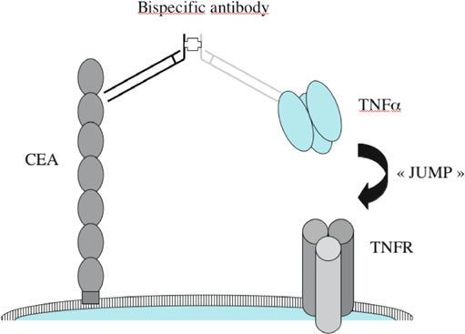
그림 16.1 Triomab® 항체의 제조 및 정제 과정 개요. (과정: 마우스/콥 콰드로마 세포 발효(Fermentation) → 세포 제거(Removal of cells) → 무세포 배양 상등액(Cell-free culture supernatant) → Protein A 친화 크로마토그래피 → 친모항체·미스매치 항체 제거 → 이온교환 크로마토그래피 → 최종 불순물 제거 → 탈염여과(Diafiltration) → 나노여과(Nanofiltration) → 최종 제제화(Final formulation))
액체크로마토그래피, 질량분석, 여러 면역학적 방법과 바이오어세이를 적용해 달성한 구조·기능 특성분석은 이 하류 공정 기술로부터 높은 온전성, 순도, 품질을 지닌 Triomab® 항체가 나온다는 것을 확인했다(Chelius et al. 2010).
기능성 Triomab® 항체의 높은 수율과 단순한 정제 공정은 전통적 단일 종 하이브리드-하이브리도마와 구별되는 마우스 IgG2a/rat IgG2b 콰드로마 세포주의 특수 성질에 기반한다.
16.2.1 종 내 H/L 사슬 짝짓기 선호
포괄적인 연구에서 De Lau 등(1991)은 여덟 개의 서로 다른 마우스/마우스 콰드로마에서 H와 L 사슬 짝짓기를 조사했다. 놀랍게도 16개 조합 중 단 4개에서만 L 사슬이 상동 H 사슬 파트너와 우선적으로 결합했다. 다시 말해 대부분의 마우스/마우스 콰드로마는 H와 L 사슬의 무작위 결합을 보였고, 그 결과 기능성 bsAb 수율이 낮았다. 모든 H와 L 사슬이 확률적으로 결합한다면 이론적으로 생산된 항체의 12.5%만 이중특이성일 뿐이다(Milstein and Cuello 1983).
반면 마우스/콥 콰드로마가 생산하는 Triomab® 항체는 한쪽에서 마우스 H 사슬이 마우스 L 사슬과, 다른 쪽에서 쥐 H 사슬이 쥐 L 사슬과 우선적으로 짝을 이룬다. 이 전략 덕분에 올바르게 짝지어진 bsAb 양이 크게 늘어난다. 우리가 입증했듯이(Lindhofer et al. 1995), 분석한 세 개의 서로 다른 마우스 IgG2a/rat IgG2b 콰드로마와 하나의 마우스 IgG2a/rat IgG2a 콰드로마에서 bsAb 분율은 전체 생산 IgG의 30~49%였다. 검출된 주요 불순물은 친모 마우스 IgG와 친모 쥐 IgG였고, H/L 미스매치 변종은 대체로 소량(4~10%)만 나왔다.
16.2.2 효율적인 이종 H/H 사슬 짝짓기
마우스 IgG2a와 rat IgG2b의 Fc 영역 아미노산 서열이 약 25% 차이 나므로(http://imgt.cines.fr), 상동 H/H 사슬 짝짓기가 우선할 것이라 예상할 수 있지만, 그런 짝짓기는 관찰되지 않았다. H/L 사슬 짝짓기와 달리 H/H 사슬 조립은 명백히 종 제한을 받지 않는다. 그렇지 않다면 이론적 기대치인 50%에 근접하는 최대 49%의 이종 bsAb라는 높은 수율을 설명할 수 없다. 그런데 마우스 IgG2a와 rat IgG2b의 힌지 영역을 자세히 들여다보면 결정적인 상동성이 드러난다. CH₁과 CH₂ 사이에 위치한 이 유연한 도메인 간 영역은 사슬간 이황화결합 형성 때문에 H 사슬 조립에 가장 중요한 것으로 여겨진다. 흥미롭게도 마우스 IgG2a와 rat IgG2b의 힌지 영역 길이가 비슷하고, 세 개의 맞아떨어지는 시스테인 잔기가 H 사슬의 공유결합 상호작용을 쉽게 허용한다. 이렇듯 마우스 IgG2a와 rat IgG2b 사이의 종간 H 사슬 짝짓기는 방해받지 않고 오히려 동등하게 효율적일 수 있다.
16.2.3 마우스 IgG와 쥐 IgG의 Protein A 친화력 차이
완전 IgG 항체는 Fc 영역의 C_H₂–C_H₃ 경계면에 결합하는 protein A를 이용한 친화 크로마토그래피로 간단히 정제할 수 있다(Deisenhofer 1981). 그러나 IgG 아이소타입마다 결합 친화력이 다르다. 강하게 결합하는 마우스 IgG2a와 달리 rat IgG2b는 protein A에 대한 친화력이 약할 뿐이다(Burton 1985). 이 사실은 이종 마우스 IgG2a/rat IgG2b를 상동 친모 IgG 항체 변형과 효율적으로 분리하는 데 활용되었다. 내림 pH 구배를 적용하자 마우스/콥 콰드로마 세포주가 만든 IgG는
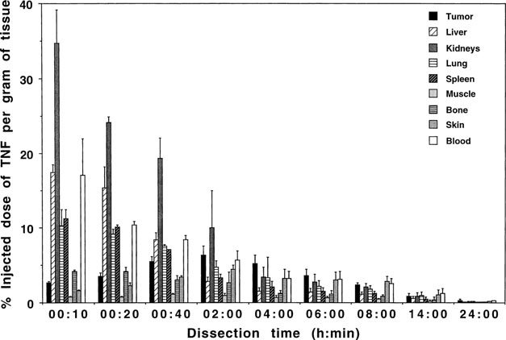
그림 16.2처럼 세 개의 주요 피크로 용출되었다. protein A에 대한 결합 친화력 증가 순서에 따라 피크 분석 결과 첫 번째 분획은 주로 친모 rat IgG2b, 두 번째 분획은 쥐/마우스 이중특이성 IgG, 세 번째 분획은 친모 마우스 IgG2a였다. 피크 적분 결과 약 35%의 bsAb가 생산된 것으로 나타났다. 일부 bsAb가 이미 첫 번째 피크에서 친모 rat IgG와 함께 용출되었으므로 실제 생산률은 더 높았다.
그림 16.2 Protein A 친화 크로마토그래피에 의한 Triomab® 항체 정제. 무세포 배양 상등액 500 ml를 19.7 ml protein A 컬럼(MabSelect Sure, GE Healthcare)에 로드하고, 결합된 항체를 pH 구배를 낮춰(75 컬럼 부피에 걸쳐 pH 8.5→3.5, 점선으로 표시) 용출했다. UV₂₈₀ₙₘ 용출 프로파일은 곡선 아래 면적 34%, 35%, 31% 분포의 세 주요 피크를 보였다. 등전점 초점화, 질량분석, 유세포 분석 결과(데이터 미제시) 첫 번째 분획은 주로 친모 쥐 IgG, 두 번째는 이중특이성 쥐/마우스 IgG, 세 번째는 친모 마우스 IgG를 포함했다. 첫 번째 예리한 피크는 단백질을 포함하지 않고 흡광성 배지 성분의 결과였으므로 피크 적분에서 제외했다.
요약하면 마우스 IgG2a와 rat IgG2b의 조합은 종 내 제한 H/L 사슬 짝짓기와 제한 없는 H/H 사슬 조립이 특징이며, 올바르게 짝지어진 기능성 Triomab® 항체의 높은 수율(30~50%)을 낳는다. 주요 불순물은 친모 쥐·마우스 IgG로, 순차적 pH 용출/protein A 친화 크로마토그래피로 효율적으로 제거할 수 있다. 이런 특성을 바탕으로 TRION Pharma(독일 뮌헨)는 Triomab® 항체의 비용 효율적이며 cGMP 준수 생산을 위한 세계 유일의 플랫폼 기술을 개발했다. 이것이 임상 개발과 상업화의 전제 조건이다.
16.3 종양 치료에서 Triomab® 항체의 작용 방식
Triomab® 항체는 이중특이적이면서 삼기능적이다. 종양연관항원(TAA) 특이 결합 팔, T 세포가 발현하는 CD3 특이 두 번째 결합 팔, 그리고 대식세포, DC, NK 세포 같은 부속세포의 활성화 Fcγ 수용체에 우선적으로 결합하는 키메라 마우스 IgG2a/rat IgG2b Fc 영역으로 구성된다. 12년 넘게의 집중적 연구 끝에 종양 치료에서 Triomab® 항체 작용 방식이 제안되었다. 이 작용 방식의 첫 번째 결정적 단계는 이중특이성 Triomab® 항체가 매개하는 TAA-CD3 교차결합을 통해 T 세포를 종양으로 재유도하는 것으로 여겨진다(그림 16.3 상단).
T 세포 수용체 복합체의 구성 요소인 CD3에 대한 항체 매개 참여는 MHC 독립적 방식으로 T 세포를 활성화하는 강력한 제1자극이며 TNF-α와 IFN-γ 분비를 동반한다(Jacobs et al. 1997). 그러나 T 세포의 생리학적 활성화에는 제2신호가 필요하다. 옵소닌 처리된 T 세포·종양세포와 염증성 사이토카인에 이끌린 FcγR 양성 면역세포는 추가로 Triomab® 항체의 Fc 영역을 통해 참여된다. 종양세포 주위에 여러 면역세포 유형의 집단이 형성된다(그림 16.3 상단). 종양세포, T 세포, FcγR 양성 부속 면역세포로 이루어진 이 삼세포 복합체 형성은 몇 가지 중요한 결과를 시사한다.
첫째, 부속 면역세포와 T 세포의 상호 자극이 있다. Triomab® 항체가 촉발한 T 세포와 CD14 양성 단핵구의 상호작용은 CD83, CD86, CD40의 상향조절로 이어진다(Riechelmann et al. 2007; Stanglmaier et al. 2008; Zeidler et al. 2000). 따라서 T 세포는 CD40/CD40L 또는 CD80-CD86/CD28 상호작용의 형태로 제2공자극 신호를 받는다. 결과적으로 T 세포는 IL-2 고분비와 Ki-67 증식 마커 검출로 특징지어지는 강력하고 생리학적인 활성화 상태에 이른다(Riesenberg et al. 2001; Ruf et al. 2004; Zeidler et al. 1999). 또한 T 세포 활성화 마커인 CD25와 CD69가 상향조절된다(Riechelmann et al. 2007).
반대로 부속 면역세포는 T 세포와의 상호작용과 FcγR 교차결합으로 자극된다. 이 자극은 주로 부속세포가 분비하는 IL-6, IL-12 같은 염증성 사이토카인의 높은 수준으로 나타난다(Hirschhaeuser et al. 2009; Jäger et al. 2009b; Zeidler et al. 1999). 더 나아가 Th1 편향 사이토카인, 특히 IL-2와 IFN-γ의 방출은 부속세포와 T 세포 사이 크로스토크를 시사한다(Hirschhaeuser et al. 2009; Jäger et al. 2009b; Zeidler et al. 1999).
마지막으로 표적된 종양세포는 동종 설정에서도 자가 인간 생체 외 시스템에서도(Gronau et al. 2005), 서로 다른 면역 효과세포 유형들의 협공으로 효율적으로 파괴된다. 괴사·세포자멸사에 빠진 종양세포와 파편들은 식세포 작용을 받으며(Riesenberg et al. 2001; Zeidler et al. 2000), 전문 항원제시세포가 자극적 문맥 속에서 처리·제시할 수 있다. 이것이 항종양 면역화의 이상적인 전제다(그림 16.3 하단). 이와 관련해 DC 특이 사이토카인 DC-CK1의 발현이 DCs, 표적 종양세포, Triomab® 항체가 함께 있을 때 상승한 것은 전문 항원제시세포의 특이적 활성화를 시사하는 중요한 발견이었다(Zeidler et al. 1999).
관찰된 Fc 매개 비특이 면역세포 활성화가 종양 밖에서 일어나는 것은 이전의 완전 이중특이성 항체 임상 접근에서 큰 장애로 여겨졌다. 심각한 부작용을 낳는 통제되지 않은 전신 사이토카인 방출은 진지한 우려사항이다(Weiner et al. 1994). 따라서 Triomab® 항체는 세 결합 파트너가 모두 있는 종양세포에서만 완전한 활성화 효능에 이른다는 발견은 중요했다(Ruf et al. 2004). 이 특성은 특히 IL-2, 즉 T 세포의 가장 중요한 자가분비 성장인자 생성에서 타당하다. 삼기능 결합이 가능할 때만 의미 있는 양의 IL-2가 유도된다(Stanglmaier et al. 2008; Zeidler et al. 1999; Ruf et al. 2004). 강조할 점은 활성화 후 T 세포의 자가 지속 증식에 IL-2가 절대적으로 필요하다는 것이다(Robb et al. 1981).
Triomab® 항체는 두 친모 단일특이성 항체의 조합으로 대체할 수 없다. 필요한 면역자극 능력을 얻으려면 항원결합 기능이 긴밀히 연결되어 있어야 하기 때문이다. 서로 다른 시험관 내·생체 내 모델에서 두 친모 항체의 등몰 조합은 사이토카인 분비와 종양세포 제거가 현저히 덜 효율적이었다(Ruf and Lindhofer 2001; Zeidler et al. 1999). 따라서 Triomab® 항체의 탁월한 종양세포 파괴 효능 덕분에 매우 낮지만(마이크로그램 범위) 효과적인 약물 농도와 수용 가능한 안전성 프로파일을 갖는 치료 창을 찾아낼 수 있다. 이 가능성은 2009년 삼기능 Triomab® 항체(카툼삭솝, Removab®)가 유럽연합에서 악성복수(MA)의 복강 내(i.p.) 치료로 최초 승인되면서 인상적으로 입증되었다(Heiss et al. 2010; Linke et al. 2010). 서로 다른 Triomab® 후보 물질을 다루며 유망한 결과를 보인 여러 임상 연구들은 국소영역(Heiss et al. 2010; Sebastian et al. 2009a)과 전신(Buhmann et al. 2009; Kiewe et al. 2006; Sebastian et al. 2007; Stemmler et al. 2005) Triomab® 항체 투여 모두 실행 가능함을 보여준다.
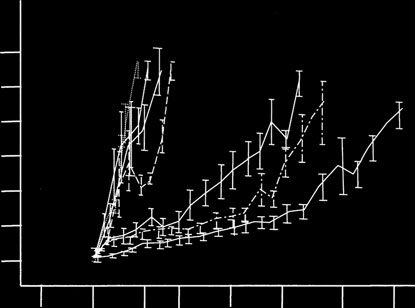
그림 16.3 Triomab® 항체의 단계별 작용 방식. 이 과정의 첫 단계로, (1) T 세포가 Triomab® 항체 매개 TAA-CD3 교차결합에 의해 종양세포로 재유도되어 MHC 독립적 방식으로 활성화된다(그림 16.3 상단; 신호 1). 동시에 또는 이후 부속세포가 삼기능 항체의 Fc 영역을 통해 추가로 결합될 수 있다(그림 16.3 상단). T 세포와 부속 면역세포(대식세포, DC, NK 세포) 사이 상호 크로스토크가 시작된다. T 세포는 제2공자극 신호(신호 2)를 받으며 생리학적으로 강하게 활성화되고, 부속 면역세포는 FcγR 교차결합으로 자극되어 염증성 사이토카인을 방출한다. 결과적으로 종양세포는 항체의존성 세포독성(ADCC), 식세포 작용, 펄포린/그란자임 매개 용해 및 세포자멸사 유도 같은 서로 다른 살상 메커니즘을 동원한 T 세포와 부속 면역세포의 협공으로 효과적으로 파괴된다. 마지막으로 T 세포 증식이 일어나며 괴사 또는 세포자멸사에 빠진 종양 파편이 자극된 전문 항원제시세포(대식세포, DC)에 의해 식세포 작용을 받고, 처리되고, 제시된다. 이것이 장기 항종양 면역화 유도(2)의 전제다(그림 16.3 하단).
16.3.1 Fc 영역의 역할
Fc 영역은 Triomab® 항체의 치료 개념과 작용 방식에서 예외적으로 중요하다. 종양세포와 밀접하게 인접한 서로 다른 유형의 면역 효과세포들 사이 크로스토크와 활성화는 온전한 Fc를 포함한 bsAb로만 이루어질 수 있다. 최근 발견들은 전통적 단일특이성 항체의 Fc 영역이 종양 치료에서 하는 중요한 역할을 다시 상기시켰다. ADCC, 항체의존성 세포식세포작용(ADCP), 보체의존성 세포독성(CDC) 같은 Fc 매개 살상 메커니즘은 종양 모델과 임상에서 필수적이다. 대표적인 예가 트라스투주맵(Herceptin®)과 리툭시맙(Rituxan®)이다(Clynes et al. 2000; Racila et al. 2008; Weng and Levy 2003). 그에 따라 많은 노력이 Fc 공학을 통해 치료용 단일클론 항체(mAb)를 개선하는 데 집중되었다(Desjarlais et al. 2007; Moore et al. 2010). FcγRII(CD32)의 활성형 아이소폼 CD32a에는 선택적으로 결합을 강화하고 억제형 상대 분자 CD32b에는 그렇지 않게 하는 것이 특히 관심거리로 판명되었다. 개선된 CD32a/CD32b 결합 비율은 ADCP를 크게 늘리고(Richards et al. 2008) DC의 활성화·성숙을 촉진해 종양 면역 유도에 긍정적 효과를 낸다(Boruchov et al. 2005; Kalergis and Ravetch 2002).
Triomab® 항체의 Fc 영역은 마우스 IgG2a와 쥐 IgG2b 반항체(half antibody)로 이루어져 있으며, 각각은 호모다이머로서 ADCC 같은 강한 효과 기능을 매개한다(Chassoux et al. 1988; Larson et al. 1988). 게다가 마우스와 쥐 H 사슬 아이소타입 IgG2a와 IgG2b의 Fc 상수 영역은 아미노산 상동성이 겨우 약 75%에 불과하다는 점도 언급할 만하다. 이는 이 헤테로다이머 실체의 진정으로 복합적인 FcγR 결합 행동과 그 밑바탕의 면역자극 특성을 낳는다. 흥미롭게도 마우스와 쥐의 IgG2a, IgG2b 아이소타입은 FcγRI와 IIa 상호작용을 통해 단핵구 같은 인간 효과세포를 효과적으로 활성화한다(Haagen et al. 1995; Koolwijk et al. 1991). 따라서 키메라 마우스 IgG2a/rat IgG2b Fc 영역은 서로 다른 면역 효과세포에 발현된 인간 FcγR과 똑같이 잘 상호작용할 수 있을 것이다. 이 생각은 다음과 같이 상세히 조사되었다.
첫째, Triomab® 항체(CD56a⁺/CD3⁻)가 정제 NK 세포에 결합하면서 NK 세포에 발현되는 유일한 FcγR인 FcγIII(CD16)의 인식이 확인되었다(Zeidler et al. 2000). 더 나아가 고친화 FcγI(CD64)와의 상호작용이 표면플라즈몬 공명으로 분석되었다. 이 방법에서 Triomab® 항체 카툼삭솝은 Ka 값이 각각 2.46×10⁷과 3.18×10⁷ [1/M]인 인간화 알렘투주맥(alemtuzumab, hIgG1)과 필적하는 결합 동력학을 보였다(표 16.1). 마지막으로 억제형 FcγIIb보다 활성형 FcγIIa(R131)에 대한 우선 결합이 관찰되었다(표 16.2). 단량체 카툼삭솝은 FcγIIb보다 FcγIIa에 약 2.1배 강하게 결합했다. 그러나 단량체 형태 대신 사전 응집 카툼삭솝을 사용하자 FcγIIa/IIb 결합 비율이 최대 19배까지 늘어났다
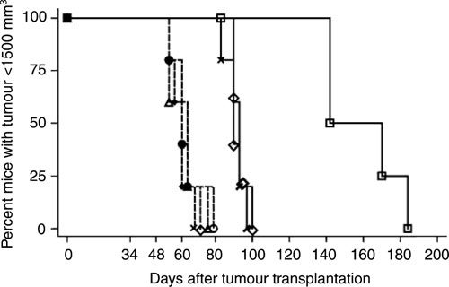
(그림 16.4). 이 증가는 응집된 카툼삭솝의 FcγIIa에 대한 아비디티(avidity)가 FcγIIb에 대한 결합에 비해 크게 늘었기 때문이었다(표 16.2). 중요한 것은 응집 항체 사용이 면역복합체화되거나 세포에 결합된 항체의 생리적 상황을 훨씬 잘 반영한다는 것이고, 단량체 항체는 치료 농도에서 저친화 FcγII에 거의 결합하지 못할 것이다.
표 16.1 표면플라즈몬 공명에 의한 Triomab® 항체 카툼삭솝의 인간 FcγRI 결합 특성
| 항체 Fc | kaᵃ [1/Ms] | kdᵇ [1/s] | Kaᵃ [1/M] | Kdᵇ [M] |
|---|---|---|---|---|
| mIgG2a rIgG2b (Catumaxomab chimeric) | 2.35±0.09 ×10⁴ | 9.59±0.93 ×10⁻⁸ | 2.46±0.14 ×10⁷ | 4.08±0.25 ×10⁻⁸ |
| Alemtuzumab (Human IgG1) | 3.5×10⁴ | 1.08×10⁻³ | 3.18×10⁷ | 3.26×10⁻⁸ |
실험은 BioAnaLab(영국 옥스퍼드)에서 수행. 약어: m 마우스(mouse); r 쥐(rat). ᵃ 결합속도(ka)와 상수(Ka), ᵇ 해리속도(kd)와 상수(Kd)(±표준편차)는 Langmuir 1:1 결합 모델 피팅을 사용한 Biacore 분석으로 구함. 개별 카툼삭솝 3회 배치와 알렘투주맥 2회 배치 실행의 평균값 제시. 카툼삭솝 F(ab’)₂ 절편 대조군은 특이 결합을 보이지 않음.
표 16.2 단량체 및 응집 카툼삭솝의 인간 FcγRI, FcγIIa, FcγIIb 결합
| Catumaxomab 상태 | FcγRIᵃ | FcγIIaᵃ (R131) | FcγIIbᵃ | IIa/IIb 비ᵇ |
|---|---|---|---|---|
| Monomeric(단량체) | 0.34±0.01 | 26.5±1.48 | 54.4±5.22 | 2.1 |
| Aggregated(응집) | – | 1.66±0.04 | 31.7±1.66 | 19.2 |
| Fold(배수) | – | 16 | 1.7 | – |
약어: EC₅₀ 최대 결합 신호의 절반에 해당하는 유효 농도. ᵃ EC₅₀ 값(±표준오차, μg/ml)은 ELISA 데이터의 Hill slope 피팅을 포함한 GraphPad Prism one-site specific binding으로 구함. 두 독립 실험의 평균값 제시. ᵇ IIa/IIb 비 = EC₅₀(FcγIIb)/EC₅₀(FcγIIa). ᶜ Fold = EC₅₀(FcγII, 카툼삭솝 단량체)/EC₅₀(FcγII, 카툼삭솝 응집).
그림 16.4 단량체 카툼삭솝의 FcγRI, IIa(R131), IIb 결합(상단)과 응집 카툼삭솝의 FcγIIa(R131), IIb 결합(하단). ELISA로 결합을 측정했다. 플레이트에 해당 FcγR을 코팅하고, F(ab’)₂ 절편 특이인 염소 anti-마우스 IgG와 anti-쥐 IgG의 비오틴화 F(ab’)₂ 절편 혼합물로 결합된 카툼삭솝을 검출했다. 복합체 형성을 위해 카툼삭솝을 미리 등몰량의 비오틴 표지 anti-마우스 및 anti-쥐 IgG로 교차결합했다. 카툼삭솝 F(ab’)₂ 절편의 비특이 결합은 보정(차감)되었다.
응집된 카툼삭솝의 FcγIIa에 대한 아비디티가 FcγIIb에 대한 결합에 비해 크게 늘었다는 사실 때문에 이런 결과가 나왔다(표 16.2). 중요한 것은, 응집 항체 사용이 면역복합체화되거나 세포에 결합된 항체의 생리적 상황을 명백히 더 잘 반영한다는 것이고, 단량체 항체는 치료 농도에서 저친화 FcγII에 거의 결합하지 못할 것이다. 요약하면 Triomab® 항체의 키메라 마우스 IgG2a/rat IgG2b Fc 영역은 활성형 FcγI, IIa, III에 우선적으로 결합한다. 따라서 서로 다른 면역 효과세포들이 삼기능 Triomab® 항체에 의해 참여되고 활성화된다. 종합하면 이 발견들은 우연하게도 Triomab® 항체의 헤테로다이머 구조가 이미 Fc 공학으로 치료용 항체 성질을 최적화하는 다음 단계로 여겨지는 활성형 Fcγ 수용체와의 균형 잡힌 상호작용을 충족할 수 있음을 시사한다.
16.3.2 참여 면역세포들의 서로 다른 살상 메커니즘
제안된 작용 방식에 따르면 Triomab® 항체는 서로 다른 유형의 면역 효과세포가 종양에 협공하도록 유도한다. 이렇게 지휘된 종양 방어를 바탕으로 Triomab® 항체는 전통적 치료 항체보다 우월하다. 이 우월성은 CD20이나 HER2/neu 같은 관련 표적항원의 표면 발현이 낮은 종양세포 인식에서도 유지된다(Jäger et al. 2009b; Stanglmaier et al. 2008). Triomab® 항체의 이런 중요한 특징은 예컨대 anti-HER2/neu anti-CD3 에르툼삭솝이 HER2/neu 수준이 낮은(1+ 등급) 종양 표적세포를 시험관에서 죽일 수 있는 능력으로 보여주었다(Jäger et al. 2009b). 반면 트라스투주맙은 말초혈액단핵세포(PBMC)가 있는 조건에서도 HER2/neu 저발현 종양세포주를 전혀 제거하지 못했는데, 드물게 표면항원이 발현될 때 단일특이성 인식 모드가 갖는 불리함을 반영한다. 이하에서 모집된 면역세포들의 서로 다른 세포독 메커니즘을 설명한다.
16.3.2.1 T 림프구
T 세포는 종양 치료와 관련해 면역계에서 가장 강력한 효과세포다. TAA를 트리거 분자 CD3와 교차결합하는 이중특이성 항체는 자연 T 세포 수용체 특이성을 우회하면서 세포독성 T 세포를 모집한다. 이렇게 하면 원리상 모든 성숙 CD3 양성 T 세포가 항종양 공격에 동원될 수 있다. 물론 T 세포 아집단마다 세포독 잠재력이 고르지 않다. 기억 표현형(R0⁺) CD8 T 세포는 빠르게 확장되며 anti-CD3/CD30과 anti-CD28/CD30 이중특이성 항체를 조합해 T 세포를 자극할 때 가장 효과적이다(Renner et al. 1997). 이 맥락에서 세포독성 CD4 T 효과세포도 anti-CD3 자극 기능을 지닌 이중특이성 항체 매개 종양 세포독성에 기여할 수 있다는 것을 다른 연구자들이 보여주었음을 언급할 필요가 있다(Porakishvili et al. 2004).
Triomab® 항체에 의해 표적된 T 세포는 삼세포 복합체 안에서 생리학적으로 자극되어 anti-CD3 신호와 부속 면역세포로부터의 추가 공자극 신호를 받는다. 이 자극 경로를 따라 활성화 마커 CD25와 CD69가 상향조절되고 T 세포 활성화를 나타내는 IFN-γ와 TNF-α 같은 사이토카인이 시험관 내(Riechelmann et al. 2007; Ruf et al. 2004)와 생체 내(Heiss et al. 2005)에서 분비된다. 특히 IL-2R α사슬(CD25) 발현 증가와 함께 일어나는 유의한 IL-2 생성은 강한 T 세포 증식과 표적 종양세포의 가장 효과적인 박멸로 특징지어지는 일종의 자기 지속 체계를 보여준다(Stanglmaier et al. 2008; Zeidler et al. 1999). 주목할 점은 Triomab® 항체 매개 종양세포 살상은 다른 이중특이성 항체와 달리 면역 효과세포의 추가 공자극을 필요로 하지 않는다는 것이다. 한번 결합하면 T 세포는 표적 종양세포와 맞닿은 막 접촉면에서 공 형성 펄포린을 분비하도록 유도되고,
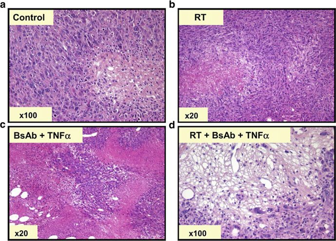
그림 16.5 Triomab® 항체가 유도한 공 형성 펄포린의 표적 종양세포 공격. PBMC(파랑)가 부분적으로 공 형성 펄포린 단백질(갈색)을 발현하며 표적 종양세포(LNCaP, 검정) 쪽으로 집중되어 있다. 눈금 = 10 μm. Riesenberg 등(2001)에서 허가받아 재현.
그 결과 삼투 용해가 표적에서 일어난다(Riesenberg et al. 2001, 그림 16.5). 시험관 내에서 종양세포는 배양 시작 후 9~17시간에 파열되었으며 컴퓨터화 순차 비디오 현미경으로 관찰되었다. 흥미롭게도 PBMC의 그란자임 B 분비 증가는 세포자멸사 과정이 Triomab® 매개 세포독 효능에 추가로 기여함을 시사한다(Riechelmann et al. 2007). 따라서 괴사를 통한 종양세포 살상과 더불어 세포자멸사 유도도 Triomab® 항체 치료 문맥에서 일어나는 또 하나의 T 세포 매개 살상 메커니즘일 것이다.
16.3.2.2 단핵구/대식세포와 DC
Zeidler 등(1999)이 보여주었듯 단핵구와 대식세포는 Triomab® 항체 매개 종양세포 제거에 분명히 기여한다. 이후 연구들은 Triomab® 항체 첨가 후 CD14 양성 단핵구의 종양세포 식세포 작용이 강화됨을 밝혔다(Zeidler et al. 2000). 높은 IL-6 분비와 CD25, CD40 상향조절이 단핵구의 깊은 활성화를 나타낸다(Stanglmaier et al. 2008). 따라서 단핵구와 T 세포의 상호작용이 필수적이다. 종양세포에서의 T 세포와 단핵구 크로스토크는 상호 효과세포 자극과 종양 파괴 강화로 이어진다. 실제로 정제 T 세포 대신 PBMC 전체 집단을 사용하면 Triomab® 항체 유도 종양세포 살상이 훨씬 크다(Zeidler et al. 1999). Triomab® 항체의 키메라 마우스 IgG2a/rat IgG2b Fc 영역이 단핵구/대식세포와 DC 위 활성형 FcγI, IIa, III에 우선 결합하는 것이 이 강한 자극 효과를 이해하는 열쇠일 수 있다. 다른 그룹들이 보여주었듯 억제형 FcγIIb 선택 차단(Dhodapkar et al. 2007) 또는 Fc 공학을 통한 활성형 FcγIIa 선택 결합(Moore et al. 2010)은 DC와 단핵구 활성화 및 ADCP 강화로 이어진다. Triomab® 항체에 의한 종양세포 파괴에서 단핵구·대식세포의 본질적 역할은 미세전이 모델로서 다세포 종양 구체(MCTS)를 사용한 실험으로 더 확인되었다. 이 연구는 PBMC 효과세포와 직경 약 0.9~1.8 mm의 Triomab® 항체 처리 MCTS의 공동배양이 11일 안에 완전히 개별 세포와 파편으로 붕해짐을 보였다(Hirschhaeuser et al. 2009). 또 치료 6일째 클론ogenic 생존 분석에서 약 98%의 종양세포가 파괴되었음을 보여주었다. 중요한 것은 MCTS 파괴가 CD45 양성 백혈구의 대량 침윤을 동반했다는 것이다. 지금까지 FcγRI 양성 부속 면역세포가 주요 침윤 세포 집단으로 확인되었다(Walz et al. 2004). 따라서 T 세포와 단핵구/대식세포 사이 상호 크로스토크와 자극이 항종양 효능을 증폭시켜 종양세포 단층배양과 3차원 종양 구체 모두의 파괴로 이어진다. 그러므로 흩어진 단일 종양세포뿐 아니라 미세전이, 심지어 환자의 고형종양까지 Triomab® 항체가 유도하는 면역세포의 공격 대상이 될 수 있다. Triomab® 항체 임상 연구에서 관찰된 전이의 부분·완전 관해가 이 결론을 확인한다(Kiewe et al. 2006; Riechelmann et al. 2007).
16.3.2.3 NK 세포
전통적 ADCC는 주로 낮은 친화력이지만 활성형인 FcγIIIa를 발현하는 NK 세포가 수행한다. Triomab® 항체가 이 수용체에 결합한다는 것은 CD56⁺CD3⁻ 정제 NK 세포를 사용해 입증되었다. 항체 결합 뒤 NK 세포 활성화 마커인 CD95(APO-1, Fas) 발현이 증가했다(Zeidler et al. 2000). 마침내 높은 종양세포 용해가 관찰되어 Triomab® 항체가 세포독성 NK 세포를 모집할 수 있음이 입증되었다. 따라서 NK 세포가 Triomab® 항체 매개 종양세포 살상에 기여할 수 있다는 것은 분명하다. 그러나 림프구 대비 낮은 빈도(2~13%)를 고려하면 NK 세포가 T 세포나 단핵구·대식세포에 비해 직접 종양세포 살상에 기여하는 바는 작을 수 있다.
16.4 종양세포는 영리한 면역학자다
암세포는 환자 몸속에서 진화하는 동안 여러 저항·관용 유발 메커니즘을 발달시킬 수 있다. 이 메커니즘들은 서로 다른 시점의 단일 종양세포 돌연변이에 기반하며 종양세포의 이질성, 예컨대 원발 종양과 전이 사이의 차이를 만들어낸다. 따라서 환자의 면역계는 단 하나의 종양 표현형만이 아니라, 종합적으로 여러 종양유발 인자를 내놓을 수 있는 다양성과 맞서야 한다. 그래서 종양세포는 예컨대 혈관내피성장인자(VEGF)(종양 혈관 개선)나 IL-6(림프종 성장인자) 같은 면역 조절물질과 IL-10이나 TGF-β 같은 면역억제 인자를 분비할 수 있다(Del Prete et al. 1993; de Souza and Bonorino 2009). 게다가 종양세포는 조절 T 세포를 유도함으로써 자신에 대한 말초 관용을 만들 수도 있다(Onishi et al. 2010).
Curiel 등(2004)은 MA에서 T 세포의 약 10~17%가 세포독성 T 세포와 염증성 사이토카인 방출을 억제할 수 있는 조절성 CD4⁺CD25⁺FOXP3⁺ 표현형임을 입증했다. 이 맥락에서 Triomab® 항체가 국소영역 적용 후 이 고도 면역억제 환경을 극복할 수 있는지 알아보는 일이 관심사였다. Lindhofer 등(2009)과 Jäger 등(2009a)은 실제로 가능하다는 것을 보였다. 치료용 Triomab® 항체 카툼삭솝(anti-EpCAM anti-CD3)의 i.p. 치료 전·중·후 복수 검체 분석은 (a) EpCAM⁺ 종양세포와 CD133⁺/EpCAM⁺ 이중양성 추정 암줄기세포(CSC)의 제거(Lindhofer et al. 2009)와 (b) CD4⁺·CD8⁺ T 세포의 생체 내 활성화와 VEGF 수준의 유의한 감소(Burges et al. 2007; Jäger et al. 2009a, 2010; Heiss et al. 2005)를 입증했다.
16.5 시험관에서 생체 내로
Triomab® 항체 치료 개념의 중요한 특징들은 이미 anti-EpCAM 카툼삭솝, anti-HER2/neu 에르툼삭솝, 또는 BiLu 같은 대체 항체를 이용한 임상전·임상 설정에서 입증되었다(Burges et al. 2007; Heiss et al. 2005, 2010; Kiewe et al. 2006; Ruf and Lindhofer 2001). 표 16.3은 이들 항체의 임상 개발 프로그램에서 중요한 이정표들을 정리한다.
표 16.3 Triomab® 항체 임상 연구
| 이름 | 표적 | 암 유형 | 시험 단계 | 참고문헌 |
|---|---|---|---|---|
| Catumaxomab | EpCAM×CD3 | 악성복수 | 1상/2상 | Burges et al.(2007) |
| Catumaxomab | EpCAM×CD3 | 악성복수 | 2상/3상 | Heiss et al.(2010) |
| Catumaxomab | EpCAM×CD3 | 복막 암종증 | 1상 | Ströhlein et al.(2009) |
| Catumaxomab | EpCAM×CD3 | 흉막 삼출 | 1상/2상 | Sebastian et al.(2009a, b) |
| Catumaxomab | EpCAM×CD3 | 비소세포폐암 | 1상 | Sebastian et al.(2007) |
| Ertumaxomab | HER2/neu×CD3 | 전이성 유방암 | 1상 | Kiewe et al.(2006) |
| FBTA05 | CD20×CD3 | CLL 및 NHL | 개념실증 | Buhmann et al.(2009) |
Triomab® 항체 형식의 효율적인 용량-반응 프로파일 — 예컨대 카툼삭솝과 에르툼삭솝을 정맥(i.v.)으로 회당 최대 7.5 μg(Sebastian et al. 2007), 또는 주 간격으로 10–200–200 μg의 삼중 투여(Kiewe et al. 2006) — 는 미세하게 조율된 균형이 특징이다: (a) 종양 표적항원(예: EpCAM 또는 HER2/neu)에 대한 결합 친화력; (b) 억제형 FcγIIb를 상당히 참여시키지 않으면서 상수 Fc 영역(NK 세포, 단핵구/대식세포, DC 위)의 FcγR 결합 능력;
- 추가적인 다클론 CD3 특이 T 세포 모집과 활성화; (d) 공자극이나 재자극 없이(예: IL-2 추가 투여 없이) IL-2 매개로 면역 반응을 자가 지속시키는 유지; (e) 과학적으로 타당한 약동학·독성학적 특성(예: 느린 신장 제거 속도, “사이토카인 폭풍” 같은 심각한 부작용의 회피); (f) 항항체 면역 반응이 일어나기 전의 편리한 치료 창.
16.5.1 Triomab® 항체 임상 연구
16.5.1.1 카툼삭솝
이런 구조적·치료적 특성을 바탕으로 Triomab® 패밀리의 카툼삭솝(Removab®)은 세계 최초의 이중특이성 항종양 항체로서(Sebastian et al. 2009a, b; Shen and Zhu 2008), 결정적 2상/3상 연구에서 기대했던 임상 평가 항목을 명확히 달성했고 그래서 2009년 유럽연합에서 MA 치료 승인을 받았다(Heiss et al. 2010). 악성복수는 난소암, 유방암, 위암 등 다양한 적응증의 진행 질환 양상이며 복강 내 강한 삼출액 유입과 종양 성장이 특징이다. MA의 발생과 진행은 유의한 이환과 삶의 질 저하와 연관된다. MA 환자의 예후는 대체로 불량하며 복수 진단 후 중앙 생존기간은 75일(비난소)에서 7~12개월(난소)까지 다양하다(Parsons et al. 1996).
간략히 말하면, EpCAM⁺ MA가 확인된 상피성 난소암 또는 비난소암 환자 258명이 등록되어 카툼삭솝 치료군(천자 1회 + 이후 11일 내 10, 20, 50, 150 μg 카툼삭솝 복강 내 주입 4회)과 대조군(최선의 지지요법으로서 천자만 시행)에 무작위 배정되었다. 여기서 특이한 항체 투여 경로인 i.p.가 복막 안에 머무는 종양세포를 공격하기에 가장 좋은 전달 방식이라는 점을 언급할 필요가 있다. 나아가 MA 환자 10명의 약동학 분석에서 치료 과정 동안 카툼삭솝이 복수 내에서 점점 농축되어 ng/ml 범위의 유효 농도에 도달한다는 것이 확인되었다(Ruf et al. 2010). 복수 내 항체 중앙 농도는 10, 20, 50 μg 투여 계획에 비례해 552 pg/ml에서 1,721 pg/ml 넘음, 이어서 6,121 pg/ml로 올라갔다. 그러나 자리 잡은 복막 암종증 때문에 복강에서 전신 순환으로의 카툼삭솝 이행은 낮았다(<1%). MA 치료를 위한 i.p. 주입 경로로 혈장 중앙 농도 403 pg/ml와 2.13일의 항체 반감기를 달성했다. 흥미롭게도 카툼삭솝은 높은 생체 내 안정성을 보여 전신 순환에 며칠 있은 뒤에도 세포독 잠재력을 유지했다(Ruf et al. 2010).
i.p. 적용으로 카툼삭솝 치료는 대조 치료 11일에 비해 통계적으로 유의한 천자 무생존(puncture-free survival) 46일을 달성했다(P<0.0001). 이것은 예후가 그토록 불량한 MA 환자에서도 카툼삭솝 치료의 역량이 유효함을 강조한다. 나아가 중앙 천자 무생존 시간은 77일 vs 13일(P<0.0001)로 삶의 질의 명확한 향상을 보여준다. 이렇게 진행된 질환에서 전체 생존(OS) 혜택은 기대하기 어렵지만 Kaplan–Meier 곡선은 카툼삭솝이 환자 약 50%에서 OS를 연장했음을 나타낸다(Heiss et al. 2010). 특히 위암 환자를 대상으로 사전 계획된 하위군 분석은 OS의 통계적으로 유의한 연장을 보였다(n=66; 71일 vs 44일; p=0.0313). 이 관찰의 한 가지 이유는 비난소암 환자(위암 포함)가 난소암 환자보다 선행 화학요법 횟수가 적어(각각 중앙값 1회 vs 3회) 면역계 손상이 덜했기 때문일 수 있다(16.5.4절 참조).
가장 중요한 것은 종양세포가 복수액에서 거의 완전히 제거되어 현저한 카툼삭솝 매개 항종양 반응 유도를 시사한다는 점이다. 가장 잦은 부작용인 발열, 메스꺼움, 구토, 일시적 간 효소 상승은 대체로 경미~중등도였고 가역적이었다. 흥미롭게도 예비 감시 연구에서 치료 개입 전, 다양한 원발 종양을 가진 분석된 MA 환자의 62%의 복막액에 추정 CD133⁺/EpCAM⁺ CSC가 존재했다(Lindhofer et al. 2009). 네 번의 i.p. 카툼삭솝 주입 후 이 추정 CSC들은 검사한 모든 MA 환자의 복막액에서 완전히 제거되었다. 즉 강화된 면역억제 조건에서도(Curiel et al. 2004, 16.4절 참조) 카툼삭솝은 MA 환자 복막액 내 CD133⁺/EpCAM⁺ CSC를 효율적으로 파괴했다. 따라서 카툼삭솝 기반 치료 조치는 EpCAM⁺ 악성종양에서 CSC 제거를 위한 추가 치료 기회를 줄 수 있다. 종합하면 EpCAM⁺ MA 환자는 완화적 천자만 받는 환자에 비해 천자 무생존 연장과 복수 증상 감소로 카툼삭솝 치료의 혜택을 본다고 할 수 있다. 주목할 점은 복막 암종증(1상)과 흉막 삼출(1상/2상) 치료를 겨냥한 두 건의 추가 연구도 수용 가능한 안전성과 유망한 효능 결과로 수행되었다는 것이다(Sebastian et al. 2009a, b; Ströhlein and Heiss 2009). 게다가 전립선, 유방, 폐, 대장, 난소, 위 암종에서처럼 EpCAM이 자주 과발현되므로, 삼기능 항체가 전신 경로로 투여된다면 카툼삭솝은 다양한 암에 새로운 미래 치료 기회를 제공할 수 있다. 이는 향후 시험에서 조사될 것이다.
16.5.1.2 에르툼삭솝
에르툼삭솝은 CD3와 HER2/neu를 표적하는 Triomab® 항체다. HER2/neu는 잘 규명된 유방 종양 마커로 트라스투주맵(Herceptin®) 치료의 중심이기도 하다. 시험관에서 에르툼삭솝은 서로 다른 수준의 HER2/neu를 발현하는 종양세포 살상 능력 면에서 트라스투주맥과 비교되었다. 에르툼삭솝 노출은 종양항원을 많이 발현하든 아주 적게 발현하든 세포를 효율적으로 용해했는데, 반면 트라스투주맙은 저 HER2/neu 발현에서 고농도에서조차 전혀 효과가 없었다(Jäger et al. 2009b). 16.3.2절에서 이미 설명했듯이 이 차이는 아마도 두 항체의 작용 방식으로 설명될 수 있다. 트라스투주맙은 NK 매개 ADCC를 촉발하지만, 에르툼삭솝은 주로 T 세포 매개 살상과 T 세포-부속세포 상호작용에 의존하며, 1상 시험에서 IFN-γ 같은 염증성 Th1 편향 사이토카인 방출로 입증되었다. 연구를 간략히 정리하면, 시험을 완료한 전이성 유방암 환자 15명이 1, 7, 14일째에 에르툼삭솝 오름 용량 3회(10~200 μg)를 정맥 투여받았다. 에르툼삭솝 관련 부작용(발열, 오한, 두통, 메스꺼움, 구토 등)은 대체로 경미하고 일과적이며 완전 가역적이었다. 평가 가능한 환자 15명 중 5명에게 항종양 반응이 나타났다(완전 반응 1명, 부분 반응 2명, 질병 안정 2명)(Kiewe et al. 2006).
16.5.2 Triomab® 항체가 매개하는 자가 제자리 면역화
미국 식품의약국(FDA)이 최근 승인한 세계 최초의 치료용 암 백신은 면역계를 동원해 종양과 싸우는 데 있어 큰 돌파구다. 이 치료용 백신 승인은 암 면역요법 전반의 “개념 실증” 발전을 상징하기도 한다. Dendreon(미국)의 새 백신 Provenge(sipuleucel-T)는 진행성 전립선암 남성을 개별 표적 방식으로 치료하는 데 쓰일 것이다. 이 성공적인 암 백신 개발을 볼 때, T 세포의 anti-CD3 인식을 지닌 삼기능 IgG형 항체가 백신 유사 적응 면역 반응을 종양에 대해 매개할 수 있다는 점을 언급해야 한다. 이미 설명했듯 Triomab® 항체는 옵소닌화를 통해 종양세포 식세포 작용을 시작하면서 제자리에서 DC를 표적·활성화할 잠재력이 있다(16.3.1절 참조). DC에 의해 식세포화된 종양세포가 파괴된 후, MHC 클래스 I과 클래스 II 처리·제시 경로를 따르는 후속 항원 이동이 각각 종양특이 CD8 또는 CD4 T 세포의 자극으로 이어진다. 임상전 실험과 예비 임상 관찰 데이터는 장기 지속 CD4·CD8 T 세포 반응의 유도를 시사했다(Ruf and Lindhofer 2001). 포괄적 면역감시 프로그램이 이 흥미로운 발견들(예: 종양에 대한 장기 면역·기억 반응)을 유익한 치료 성적과 함께 확인한다면, Triomab® 항체는 적응 면역 유도를 일으켜 능동 면역화와 수동 면역화 사이 간격을 메울 수 있을 것이다. Chames와 Baty(2009)는 이 작용 방식을 항체 기반 암 치료의 “성배”라고 묘사했다.
실제로 A20 마우스 림프종 모델에서 삼기능 항체 BiLu(anti-human EpCAM anti-mouse CD3)를 항종양 백신화의 면역화제로 사용할 수 있음이 입증되었다. 면역화 효능은 키메라 마우스/쥐 Fc 영역의 존재에 의존했는데, 같은 삼기능 항체의 F(ab’)₂ 절편은 장기 방어를 일으키지 못했다(Ruf and Lindhofer 2001). 나아가 종양반응성 항체에 의한 체액성 면역 반응 유도와 마우스 생존 사이에 강한 상관이 관찰되었다.
게다가 위암·난소암 진행성 복막 암종증 환자 사례 관찰에서 Triomab® 치료 결과로서 장기 지속 세포매개 면역 반응이 면역감시되었다(Ströhlein et al. 2009). 간략히 말하면 화학요법 후 환자는 카툼삭솝 오름 용량 3회(10 μg–20 μg–40 μg)를 i.p.로 받았다. 이미 프라이밍된 면역 반응은 카툼삭솝 치료 종료 30일 뒤, 100-Gy 방사선 조사한 자가 종양세포와 Triomab® 항체를 로드한 PBMC를 통한 피내 항원 부스트 면역화로 재자극되었다. IFN-γ 분비 어세이로 입증되듯 종양반응성 T 세포의 활성화는 재자극 후 39일부터 최소 110일까지 측정되었다(Ströhlein et al. 2009). 이런 이유로 우리는 향후 2년간 기억 반응 검출을 다루는 임상 면역감시 프로그램을 시작했다. Triomab® 개념이 백신학의 일부가 되어 항체 치료의 새 시대가 열릴 때 명확히 표지가 될 중요한 면역학적 매개 변수들이 확인될 것이라 확신한다.
16.5.3 Triomab® FBTA05를 통해 동종이식 후 GVL은 재유도하고 GVHD는 피하기
연간 인구 10만 명당 신규 4례의 발생률로 만성림프구성백혈병(CLL)은 서구에서 가장 흔한 백혈병이다. 게다가 인구 10만 명당 연간 약 19건의 신규 비호지킨 림프종(NHL) 사례가 현재 유럽이나 미국에서 진단되고 있다. CLL은 항체 사용(예: anti-CD52 알렘투주맙 및/또는 anti-CD20 리툭시맙)과 결합하더라도 통상 화학요법 요법으로는 완치가 불가능하다. 고도 악성 림프종에서 동종 줄기세포이식(SCT)의 이식편대림프종(GVL) 효과 증거는 제한적이고 논란이 있지만, 동종 SCT는 CLL 환자에게 유일한 완치 선택지다(Grigg and Ritchie 2004). 그러나 여러 연구와 관찰이 동종 조혈 SCT 후 기증자 림프구 주입(DLI)에 의한 GVL 효과를 보고한다(Porter et al. 2006). 그럼에도 임상에서 동종 세포 치료 사용은 생명을 위협하는 이식편대숙주병(GVHD)을 빈번히 동반하는데, 현재 치료 프로토콜로 효과적 통제가 어렵다. 따라서 파괴적인 GVHD의 빈도와 심각도를 줄이면서 최적의 GVL 효과를 내는 더 정교한 치료 요법이 필요하다.
리툭시맙 같은 단일클론 항체는 무증후성·공격성 림프종과 CLL 환자 치료에서 점점 성공적으로 사용되고 있다. 리툭시맙 적용은 환자의 항종양 반응과 생존을 개선했지만 작용 메커니즘이 완전히 명확하지 않다. ADCC, CDC, 세포자멸사 유도가 시험관 실험에서 입증되었다(Cartron et al. 2004). 이중특이성 항체는 T 세포를 효율적으로 종양세포 쪽으로 유도하는 매우 매력적인 치료 선택지일 수 있다. 이 맥락에서 삼기능 anti-CD20 anti-CD3 Triomab® 항체 FBTA05는 동종 면역 효과세포에 의한 종양세포 표적화를 개선하면서 동시에 정상 숙주세포에 대한 바람직하지 못한 반응 위험을 줄일 수 있다. 다시 말해 FBTA05는 GVHD 발생률과 심각도를 동시에 낮추면서 GVL 효과를 최대화할 수 있다. Morecki와 동료들(2006, 2008)은 실험적 B16-EpCAM 종양 모델에서 동종 림프구와 삼기능 BiLu 항체(anti-EpCAM anti-murine CD3)의 협공에도 자가 백신화의 특징이 그대로 타당함을 처음 보여주었다. 이 BiLu 항체 표적 DLI를 통해 장기 지속 항종양 반응이 유도되어 치료받은 마우스가 두 번째 B16-EpCAM 종양 도전으로부터 보호되었다(Morecki et al. 2008). 중요한 것은 이 삼기능 항체 BiLu 사용이 동종 반일치(haplo-identical) 림프구 적용으로 유도되는 GVHD로부터 마우스를 보호했다는 것이다. 이 임상전 발견들이 CLL 또는 NHL 치료를 위한 DLI와 삼기능 항체 조합의 기본 원리다.
기술된 임상전 성공을 바탕으로, 삼기능 anti-CD20 anti-CD3 Triomab® 항체 FBTA05와 DLI를 B 세포 악성종양 치료 수단으로 조합한 개념실증 임상 연구가 수행되었다(Buhmann et al. 2009). 이 치료 설정은 광범위하게 선행 치료를 받고 p53 돌연변이가 있으며 알렘투주맙과 리툭시맙에 내성인 환자에게서 FBTA05 유도 항종양 반응을 보여주어 이 바이오의약품의 치료 능력을 시사했다. FBTA05 항체는 CD20 표면 발현 수준이 매우 낮아도 시험관에서 림프종세포의 효과적 살상을 매개할 수 있다는 점을 언급해야 한다(Stanglmaier et al. 2008). 종합하면 이 발견들은 삼기능 항체 FBTA05가 SCT 후 DLI+FBTA05 항체 같은 새로운 치료 옵션을 치료 내성 저등급 림프종(CLCL 포함)과 재발 NHL 환자에게 제공할 수 있음을 시사한다.
16.5.4 예측 마커로서의 HAMA 반응
Triomab® 항체는 인간 면역계에 “외래”로 여겨지므로, 선행 항체 투여 환자에게 인간항마우스(HAMA)와 인간항쥐(HARA) 항체가 유도되는 것은 놀라운 일이 아니다. 그럼에도 임상 연구 결과는 특정 치료 창 내에서, 즉 중화성 HAMA/HARA 반응 유도 전에 투여된 Triomab® 항체가 많은 암 적응증에서 치료 혜택에 충분할 수 있음을 보여주었다(Heiss et al. 2005, 2010; Kiewe et al. 2006; Ruf et al. 2010).
반면 HAMA 반응은 항원특이 면역 반응 조기 발생에 대한 예측 척도가 될 수 있다. 실제로 이런 HAMA 반응은 MA 대상 카툼삭솝 결정적 2상/3상 연구 전체에서 감시되었고 그 연구에서 예측 척도 역할을 했다. 간략히 말하면 결정적 2상/3상 시험에서 검사된 MA 환자의 76%가 카툼삭솝 치료 완료 8일 후 HAMA 양성이었다(Ott et al. 2010). HAMA 음성 환자와 달리 이들은 유의하게 긴 천자 무생존, 천자까지 시간, 특히 전체 생존을 보였다. 실제로 HAMA 양성 환자의 중앙 전체 생존은 결정적 시험의 대조군 환자나 HAMA 음성 환자보다 2배 이상 늘었다(129일 vs 64일 [HAMA 음성], p=0.0003; Ott et al. 2010). 카툼삭솝 치료는 HAMA 음성 환자에게도 첫 천자까지 시간 면에서 유익했지만, HAMA 음성 환자의 전체 생존 개선에는 실패했다. 요약하면 조기 HAMA 양성 반응만이 카툼삭솝 치료에서 증가된 전체 생존 데이터와 강하게 상관되었다. 따라서 유익한 임상 성적은 카툼삭솝이 매개한 획득 항종양 효과 메커니즘, 특히 T 세포 모집 능력으로 구별되는 기여에도 돌릴 수 있다. 게다가 HAMA 데이터는 획득 면역을 중심으로 한 면역학적 적합성과 항원 반응성을 추가로 반영할 수 있다. 따라서 HAMA 발현은 Triomab® 항체에 의한 유익한 종양 치료의 조기 바이오마커이자 예측 인자가 될 수 있다.
16.6 미래 전망
MA 치료로 유럽 최초 승인 후 카툼삭솝은 암줄기세포를 포함한 EpCAM⁺ 암종 및 대체 투여 경로를 겨냥해 집중적으로 개발될 것이다. 게다가 HER2/neu 발현 유방암 환자 치료용 에르툼삭솝, B 세포 악성종양 대상 FBTA05, GD2-강글리오시드 같은 새 표적항원이 더 조사되어 Triomab® 기술 플랫폼에 통합될 것이다. 또 하나 흥미로운 연구 초점은 능동 면역화 측면이다. 이를 위해 가능하면 유도된 종양특이 T 세포와 체액성 항종양 반응 모두를 분석하도록 면역감시가 강화될 것이다.
참고문헌
- Boruchov AM, Heller G, Veri MC, Bonvini E, Ravetch JV, Young JW (2005) Activating and inhibitory IgG Fc receptors on human DCs mediate opposing functions. J Clin Invest 115:2914–2923
- Buhmann R, Simoes B, Stanglmaier M, Yang T, Faltin M, Bund D, Lindhofer H, Kolb HJ (2009) Immunotherapy of recurrent B-cell malignancies after allo-SCT with Bi20 (FBTA05), a trifunctional anti-CD3 anti-CD20 antibody and donor lymphocyte infusion. Bone Marrow Transplant 43:383–397
- Burges A, Wimberger P, Kümper C, Gorbounova V, Sommer H, Schmalfeldt B, Pfisterer J, Lichinitser M, Makhson A, Moiseyenko V, Lahr A, Schulze E, Jäger M, Ströhlein MA, Heiss MM, Gottwald T, Lindhofer H, Kimmig R (2007) Effective relief of malignant ascites in patients with advanced ovarian cancer by a trifunctional anti-EpCAM anti-CD3 antibody: a phase I/II study. Clin Cancer Res 13(13):3899–3905
- Burton DR (1985) Immunoglobulin G: functional sites. Mol Immunol 22:161–206
- Cartron G, Watier H, Golay J, Solal-Celigny P (2004) From the bench to the bedside: ways to improve rituximab efficacy. Blood 104(9):2635–2642
- Chames P, Baty D (2009) Bispecific antibodies for cancer therapy. Curr Opin Drug Discov Devel 12(2):276–283
- Chassoux DM, Linares-Cruz LG, Bazin H, Stanislawski M (1988) K-cell-mediated cytotoxicity induced with rat monoclonal antibodies. I. Antibodies of various isotypes differ in their ability to induce cytotoxicity mediated by rat and human effectors. Immunology 65:623–628
- Chelius D, Ruf P, Gruber P, Ploscher M, Liedtke R, Gansberger E, Hess J, Wasiliu M, Lindhofer H (2010) Structural and functional characterization of the trifunctional antibody catumaxomab. MAbs 2(3):309–319
- Clynes RA, Towers TL, Presta LG, Ravetch JV (2000) Inhibitory Fc receptors modulate in vivo cytoxicity against tumor targets. Nat Med 6:443–446
- Curiel TJ, Coukos G, Zou L, Alvarez X, Cheng P, Mottram P, Evdemon-Hogan M, Conejo-Garcia JR, Zhang L, Burow M, Zhu Y, Wei S, Kryczek I, Daniel B, Gordon A, Myers L, Lackner A, Disis ML, Knutson KL, Chen L, Zou W (2004) Specific recruitment of regulatory T cells in ovarian carcinoma fosters immune privilege and predicts reduced survival. Nat Med 10(9):942–949
- De Lau WB, Heije K, Neefjes JJ, Oosterwegel M, Rozemuller E, Bast BJ (1991) Absence of preferential homologous H/L chain association in hybrid hybridomas. J Immunol 146:906–914
- de Souza AP, Bonorino C (2009) Tumor immunosuppressive environment: effects on tumor-specific and nontumor antigen immune responses. Expert Rev Anticancer Ther 9(9):1317–1332
- Deisenhofer J (1981) Crystallographic refinement and atomic models of a human Fc fragment and its complex with fragment B of protein A from Staphylococcus aureus at 2.9- and 2.8-A resolution. Biochemistry 20:2361–2370
- Del Prete G, de Carli M, Almerigogna F, Giudizi MG, Biagiotti R, Romagnani S (1993) Human IL-10 is produced by both type 1 helper (Th1) and type 2 helper (Th2) T cell clones and inhibits their antigen-specific proliferation and cytokine production. J Immunol 150:353–360
- Desjarlais JR, Lazar GA, Zhukovsky EA, Chu SY (2007) Optimizing engagement of the immune system by anti-tumor antibodies: an engineer’s perspective. Drug Discov Today 12:898–910
- Dhodapkar KM, Banerjee D, Connolly J, Kukreja A, Matayeva E, Veri MC, Ravetch JV, Steinman RM, Dhodapkar MV (2007) Selective blockade of the inhibitory Fcγ receptor (FcγRIIB) in human dendritic cells and monocytes induces a type I interferon response program. J Exp Med 204:1359–1369
- Grigg A, Ritchie D (2004) Graft-versus-lymphoma effects: clinical review, policy proposals, and immunobiology. Biol Blood Marrow Transplant 10(9):579–590
- Gronau SS, Schmitt M, Thess B, Reinhardt P, Wiesneth M, Schmitt A, Riechelmann H (2005) Trifunctional bispecific antibody-induced tumor cell lysis of squamous cell carcinomas of the upper aerodigestive tract. Head Neck 27:376–382
- Haagen IA, Geerars AJ, Clark MR, van de Winkel JG (1995) Interaction of human monocyte Fc gamma receptors with rat IgG2b. A new indicator for the Fc gamma RIIa (R-H131) polymorphism. J Immunol 154:1852–1860
- Heiss MM, Strohlein MA, Jager M, Kimmig R, Burges A, Schoberth A, Jauch KW, Schildberg FW, Lindhofer H (2005) Immunotherapy of malignant ascites with trifunctional antibodies. Int J Cancer 117:435–443
- Heiss MM, Murawa P, Koralewski P, Kutarska E, Kolesnik OO, Ivanchenko VV, Dudnichenko AS, Aleknaviciene B, Razbadauskas A, Gore M, Ganea-Motan E, Ciuleanu T, Wimberger P, Schmittel A, Schmalfeldt B, Burges A, Bokemeyer C, Lindhofer H, Lahr A, Parsons SL (2010) The trifunctional antibody catumaxomab for the treatment of malignant ascites due to epithelial cancer: results of a prospective randomized phase II/III trial. Int J Cancer 27(9):2209–2221
- Hirschhaeuser F, Leidig T, Rodday B, Lindemann C, Mueller-Klieser W (2009) Test system for trifunctional antibodies in 3D MCTS culture. J Biomol Screen 14:980–990
- Jacobs N, Mazzoni A, Mezzanzanica D, Negri DR, Valota O, Colnaghi MI, Moutschen MP, Boniver J, Canevari S (1997) Efficiency of T cell triggering by anti-CD3 monoclonal antibodies (mAb) with potential usefulness in bispecific mAb generation. Cancer Immunol Immunother 44:257–264
- Jäger M, Schoberth A, Theissen B, Hess J, Friccius-Quecke H, Lindhofer H (2009a) Decrease of VEGF within malignant ascites during catumaxomab treatment: results from a pivotal phase II/III study. J Clin Oncol 27:15s (suppl; abstr 3029)
- Jäger M, Schoberth A, Ruf P, Hess J, Lindhofer H (2009b) The trifunctional antibody ertumaxomab destroys tumor cells that express low levels of human epidermal growth factor receptor 2. Cancer Res 69:4270–4276
- Jäger M, Schoberth A, Hennig M, Burges A, Heiss M, Wimberger P, Schmalfeldt B, Lindhofer H (2010) The trifunctional antibody catumaxomab (anti-EpCAM anti-CD3) in patients with malignant ascites: immunomonitoring results of a pivotal phase II/III study (pooled population). J Clin Oncol 28:15s, suppl; abstr 2521)
- Jung G, Freimann U, Von Marschall Z, Reisfeld RA, Wilmanns W (1991) Target cell-induced T cell activation with bi- and trispecific antibody fragments. Eur J Immunol 21(10):2431–2435
- Kalergis AM, Ravetch JV (2002) Inducing tumor immunity through the selective engagement of activating Fcγ receptors on dendritic cells. J Exp Med 195:1653–1659
- Kiewe P, Hasmuller S, Kahlert S, Heinrigs M, Rack B, Marme A, Korfel A, Jager M, Lindhofer H, Sommer H, Thiel E, Untch M (2006) Phase I trial of the trifunctional anti-HER2 anti-CD3 antibody ertumaxomab in metastatic breast cancer. Clin Cancer Res 12:3085–3091
- Koolwijk P, van de Winkel JG, Pfefferkorn LC, Jacobs CW, Otten I, Spierenburg GT, Bast BJ (1991) Induction of intracellular Ca²⁺ mobilization and cytotoxicity by hybrid mouse monoclonal antibodies. FcγRII regulation of FcγRI-triggered functions or signaling? J Immunol 147:595–602
- Larson LN, Johansson C, Lindholm L, Holmgren J (1988) Mouse monoclonal antibodies for experimental immunotherapy promote killing of tumor cells. Int J Cancer 42:877–882
- Lindhofer H, Mocikat R, Steipe B, Thierfelder S (1995) Preferential species-restricted heavy/light chain pairing in rat/mouse quadromas. Implications for a single-step purification of bispecific antibodies. J Immunol 155:219–225
- Lindhofer H, Schobert A, Pelster D, Hess J, Herold J, Jäger M (2009) Elimination of cancer stem cells (CD133+/EpCAM+) from malignant ascites by the trifunctional antibody catumaxomab: results from a pivotal trial. J Clin Oncol 27:15s (suppl; abst 3014)
- Linke R, Klein A, Seimetz D (2010) Catumaxomab: clinical development and future directions. MAbs 2(2):129–136
- Milstein C, Cuello AC (1983) Hybrid hybridomas and their use in immunohistochemistry. Nature 305:537–540
- Moore GL, Chen H, Karki S, Lazar GA (2010) Engineered Fc variant antibodies with enhanced ability to recruit complement and mediate effector functions. MAbs 2(2):181–189
- Morecki S, Lindhofer H, Yacovlev E, Gelfand Y, Slavin S (2006) Use of trifunctional bispecific antibodies to prevent graft versus host disease induced by allogeneic lymphocytes. Blood 107(4):1564–1569
- Morecki S, Lindhofer H, Yacovlev E, Gelfand Y, Ruf P, Slavin S (2008) Induction of long-lasting antitumor immunity by concomitant cell therapy with allogeneic lymphocytes and trifunctional bispecific antibody. Exp Hematol 36(8):997–1003
- Müller D, Kontermann RE (2010) Bispecific antibodies for cancer immunotherapy. BioDrugs 24(2):89–98
- Onishi H, Wada J, Suzuki H, Yamasaki A, Nagai S, Morisaki T, Katano M (2010) Effect of TGF-b1 expressed on tumor-derived exosomes on survival and function of regulatory T cells. J Clin Oncol 28:15s (suppl; abstr 2567)
- Ott MG, Lindhofer H, Linke RG, Hennig M, Martinius H, Klein A, Seimetz D (2010) The trifunctional antibody catumaxomab: correlation between immunological response and clinical outcome – new analysis of a pivotal phase II/III study. J Clin Oncol 28:15s (suppl; abstr 2551)
- Parsons SL, Lang MW, Steele RJ (1996) Malignant ascites: a 2-year review from a teaching hospital. Eur J Surg Oncol 22:237–239
- Perez P, Hoffman RW, Shaw S, Bluestone JA, Segal DM (1985) Specific targeting of cytotoxic T cells by anti-T3 linked to anti-target cell antibody. Nature 316:354–356
- Porakishvili N, Kardava L, Jewell AP, Yong K, Glennie MJ, Akbar A, Lydyard PM (2004) Cytotoxic CD4+ T cells in patients with B cell chronic lymphocytic leukemia kill via a perforin-mediated pathway. Haematologica 89(4):435–443
- Porter DL, Levine BL, Bunin N, Stadtmauer EA, Luger SM, Goldstein S, Loren A, Phillips J, Nasta S, Perl A, Schuster S, Tsai D, Sohal A, Veloso E, Emerson S, June CH (2006) A phase 1 trial of donor lymphocyte infusions expanded and activated ex vivo via CD3/CD28 costimulation. Blood 107(4):1325–1331
- Racila E, Link BK, Weng WK, Witzig TE, Ansell S, Maurer MJ, Huang J, Dahle C, Halwani A, Levy R, Weiner GJ (2008) A polymorphism in the complement component C1qA correlates with prolonged response following rituximab therapy of follicular lymphoma. Clin Cancer Res 14:6697–6703
- Renner C, Held G, Ohnesorge S, Bauer S, Gerlach K, Pfitzenmeier JP, Pfreundschuh M (1997) Role of naive and memory T cells in tumor cell lysis mediated by bi-specific antibodies. Immunobiology 197:122–132
- Richards JO, Karki S, Lazar GA, Chen H, Dang W, Desjarlais JR (2008) Optimization of antibody binding to FcγIIa enhances macrophage phagocytosis of tumor cells. Mol Cancer Ther 7:2517–2527
- Riechelmann H, Wiesneth M, Schauwecker P, Reinhardt P, Gronau S, Schmitt A, Schroen C, Atz J, Schmitt M (2007) Adoptive therapy of head and neck squamous cell carcinoma with antibody coated immune cells: a pilot clinical trial. Cancer Immunol Immunother 56:1397–1406
- Riesenberg R, Buchner A, Pohla H, Lindhofer H (2001) Lysis of prostate carcinoma cells by trifunctional bispecific antibodies (alpha EpCAM alpha CD3). J Histochem Cytochem 49:911–917
- Robb RJ, Munck A, Smith KA (1981) T cell growth factor receptors. Quantitation, specificity, and biological relevance. J Exp Med 154:1455–1474
- Ruf P, Lindhofer H (2001) Induction of a long-lasting antitumor immunity by a trifunctional bispecific antibody. Blood 98:2526–2534
- Ruf P, Jager M, Ellwart J, Wosch S, Kusterer E, Lindhofer H (2004) Two new trifunctional antibodies for the therapy of human malignant melanoma. Int J Cancer 108:725–732
- Ruf P, Kluge M, Jäger M, Burges A, Volovat C, Heiss MM, Hess J, Wimberger P, Brandt B, Lindhofer H (2010) Pharmacokinetics, immunogenicity and bioactivity of the therapeutic antibody catumaxomab intraperitoneally administered to cancer patients. Br J Clin Pharmacol 69(6):617–625
- Sebastian M, Passlick B, Friccius-Quecke H, Jager M, Lindhofer H, Kanniess F, Wiewrodt R, Thiel E, Buhl R, Schmittel A (2007) Treatment of non-small cell lung cancer patients with the trifunctional monoclonal antibody catumaxomab (anti-EpCAM anti-CD3): a phase I study. Cancer Immunol Immunother 56:1637–1644
- Sebastian M, Kiewe P, Schuette W, Brust D, Peschel C, Schneller F, Ruhle KH, Nilius G, Ewert R, Lodziewski S, Passlick B, Sienel W, Wiewrodt R, Jager M, Lindhofer H, Friccius-Quecke H, Schmittel A (2009a) Treatment of malignant pleural effusion with the trifunctional antibody catumaxomab (Removab) (anti-EpCAM Anti-CD3): results of a phase 1/2 study. J Immunother 32:195–202
- Sebastian M, Kuemmel A, Schmidt M, Schmittel A (2009b) Catumaxomab: a bispecific trifunctional antibody. Drugs Today 45(8):589–597
- Shen J, Zhu Z (2008) Catumaxomab, a rat/murine hybrid trifunctional bispecific monoclonal antibody for the treatment of cancer. Curr Opin Mol Ther 10(3):273–284
- Smith W, Jarrett AL, Beattie RE, Corvalan JR (1992) Immunoglobulins secreted by a hybrid-hybridoma: analysis of chain assemblies. Hybridoma 11:87–98
- Staerz UD, Kanagawa O, Bevan MJ (1985) Hybrid antibodies can target sites for attack by T cells. Nature 314:628–631
- Stanglmaier M, Faltin M, Ruf P, Bodenhausen A, Schroder P, Lindhofer H (2008) Bi20 (FBTA05), a novel trifunctional bispecific antibody (anti-CD20 anti-CD3), mediates efficient killing of B-cell lymphoma cells even with very low CD20 expression levels. Int J Cancer 123:1181–1189
- Stemmler HJ, Salat C, Lindhofer H, Menzel H, Untch M, Kahlert S, Konecny G, Sauer H, Ledderose G, Heinemann V, Kolb HJ (2005) Combined treatment of metastatic breast cancer (MBC) by high-dose chemotherapy (HDCT) and bispecific antibodies: a pilot study. Anticancer Res 25:3047–3054
- Ströhlein MA, Heiss MM (2009) Intraperitoneal immunotherapy to prevent peritoneal carcinomatosis in patients with advanced gastrointestinal malignancies. J Surg Oncol 100(4):329–330
- Ströhlein MA, Siegel R, Jäger M, Lindhofer H, Jauch KW, Heiss MM (2009) Induction of anti-tumor immunity by trifunctional antibodies in patients with peritoneal carcinomatosis. J Exp Clin Cancer Res 28:18
- Tiebout RF, van Boxtel-Oosterhof F, Stricker EA, Zeijlemaker WP (1987) A human hybrid hybridoma. J Immunol 139:3402–3405
- Walz A, Mack B, Schmitt B, Gires O, Wollenberg B, Zeidler R (2004) Antitumour effects of a bispecific trivalent antibody in multicellular tumour spheroids. Anticancer Res 24:887–893
- Weiner GJ, Kostelny SA, Hillstrom JR, Cole MS, Link BK, Wang SL, Tso JY (1994) The role of T cell activation in anti-CD3 antitumor bispecific antibody therapy. J Immunol 152:2385–2392
- Weng WK, Levy R (2003) Two immunoglobulin G fragment C receptor polymorphisms independently predict response to rituximab in patients with follicular lymphoma. J Clin Oncol 21:3940–3947
- Zeidler R, Reisbach G, Wollenberg B, Lang S, Chaubal S, Schmitt B, Lindhofer H (1999) Simultaneous activation of T cells and accessory cells by a new class of intact bispecific antibody results in efficient tumor cell killing. J Immunol 163:1246–1252
- Zeidler R, Mysliwietz J, Csanady M, Walz A, Ziegler I, Schmitt B, Wollenberg B, Lindhofer H (2000) The Fc-region of a new class of intact bispecific antibody mediates activation of accessory cells and NK cells and induces direct phagocytosis of tumour cells. Br J Cancer 83:261–266 # 제17장 사이토카인 재표적화를 위한 이중특이성 항체
브뤼노 로베르(Bruno Robert), 크리스텔 라르부레(Christel Larbouret), 다비드 아즈리아(David Azria), 장피에르 마크(Jean-Pierre Mach), 앙드레 펠레그랭(André Pelegrin)
17.1 서론
여러 형태의 암 치료에 사이토카인을 보조제로 사용하는 것은 응용 암 연구에서 가장 유망한 분야 중 하나다(Seruga et al. 2008). 예컨대 인터루킨-2는 이제 신세포암의 고전적 치료(FDA 1992년 승인)가 되었고 다른 암 면역요법용으로 계속 평가되고 있다. 인터페론 알파는 흑색종 치료용으로 FDA 승인(1995)을 받았으며, IL-15 같은 다른 사이토카인들도 좋은 후보로 떠올랐는데 NCI 컨소시엄이 암 치료 임상·임상전 시험의 면역조절 의약품 124개 가운데 IL-15를 1위로 평가했기 때문이다(Cheever 2008). 일부 성공에도 불구하고 독성과 효능 사이의 좁은 치료 창 때문에 사이토카인을 암 치료에 쓰는 일이 제한되어 왔다.
사이토카인 중 다기능 TNFα는 많은 관심을 끌었다. 실험 동물 모델에서 특정 종양과 종양 혈관 내피세포에 대한 세포자멸사 유도 활성을 통해 강력한 항종양 활성이 있음이 보여졌기 때문이다(Brouckaert et al. 1986; Carswell et al. 1975; Balkwill et al. 1986; Asher et al. 1991; Creasey et al. 1986; Havell et al. 1988; Lejeune and Eggermont 2007). 후자의 성질 덕분에 이 사이토카인은 “종양괴사인자(Tumor Necrosis Factor)”라는 이름을 얻었다. 그러나 곧 TNF가 염증의 중심 면역조절물질이며 급성 감염 때 대식세포가 과잉 생산하면 패혈성 쇼크의 핵심 인자임이 밝혀졌다(Tracey et al. 1987). 그래서 TNFα 전신 주사를 사용한 암 치료 임상시험은 실망스러웠다.
B. 로베르(B. Robert, *), C. 라르부레(C. Larbouret), D. 아즈리아(D. Azria), A. 펠레그랭(A. Pelegrin) — 프랑스 몽펠리에 암연구소(IRCM) 및 몽펠리에 제1대학교 J.-P. 마크(J.-P. Mach) — 스위스 에팔랑주 로잔 대학교 생화학과(University of Lausanne) R.E. Kontermann(ed.), Bispecific Antibodies, DOI 10.1007/978-3-642-20910-9_17, #Springer-Verlag Berlin Heidelberg 2011
환자의 최대내성용량[약 10 μg/kg; (Moritz et al. 1989; Abbruzzese et al. 1989)]이 마우스[400 μg/kg; (Asher et al. 1991; Havell et al. 1988)]보다 현저히 낮았고, 환자에게 주입 가능한 저용량은 항종양 효과가 없었기 때문이다. 따라서 TNFα가 일으키는 독성이 암환자에게서의 전신 사용을 막았다.
이 문제들을 극복하기 위해 TNFα의 분지 단위 관류(isolated limb perfusion, ILP) 전략(Lienard et al. 1992)이 암 치료 가능성을 입증했다. 다만 종양 안에서 충분히 높은 치료 농도의 TNFα를 얻으면서 전신 농도는 무독성으로 유지될 때만 가능했다. 지금까지 TNFα는 육종 치료에서 멜팔란과 고열요법과 병용해 ILP로만 사용되며, 관류한 팔다리에 국한된 종양 치료에서 좋은 성공률을 보인다(Lejeune and Eggermont 2007). 흥미롭게도 TNF 주사를 통한 이런 암 치료 시도 과정에서 비교적 새로운 TNF 혈관작용성이 발견되었다. 즉 소량의 이 사이토카인이 이후 혈관 붕괴 가능성 앞서 종양 혈류량과 종양 신생혈관 투과성을 늘린다는 것이다(Folli et al. 1993; Ten Hagen et al. 2000). 나아가 ILP를 통한 TNF 주입의 항종양 효율은 상당 부분 이 새로운 혈관작용성에 돌렸는데, 항시 함께 주입되는 화학항암제가 종양세포에 더 잘 닿게 되기 때문이다(de Wilt et al. 2000; Lejeune 2002). 이 장에서 보겠지만, 종양 혈류량과 혈관 투과성을 늘리는 TNF의 이런 성질이 우리가 입증한 외부 방사선치료 효율 증강(Azria et al. 2003a, b; Larbouret et al. 2007)을 설명할 가능성이 크다.
17.2 사이토카인을 표적하는 여러 방법
이 맥락에서 종양 안에 사이토카인을 특이적으로 표적하는 다른 여러 전략이 제안되었다. 한 가지 명백한 접근은 사이토카인을 화학적 결합(LeBerthon et al. 1991; Khawli et al. 1994; Rosenblum et al. 1991) 또는 종양연관항원(TAA)을 향한 항체나 그 절편과 사이토카인 사이 유전자 융합 단백질(Yang et al. 1995; Hoogenboom et al. 1991; Dela Cruz et al. 2004)로 직접 짝짓는 것이었다. 이런 컨쥬게이트나 융합 단백질은 면역사이토카인(immunocytokine, ICK)이라 불렸다. 여러 연구가 일부 ICK가 종양을 표적하고 마우스에서 종양 퇴행을 유도하는 능력을 보여주었다(Kaspar et al. 2007; Dela Cruz et al. 2000). 이 유망한 결과들이 서로 다른 1·2상 임상시험으로 이어졌다(King et al. 2004; Ribas et al. 2009). 보고된 또 다른 접근은 유전자 치료로 여러 사이토카인 코딩 플래스미드를 종양세포에 형질도입하는 것이었으나(Asher et al. 1991; Mullen et al. 1992), 침습적 프로토콜과 유전자 치료의 현재 알려진 한계가 따른다. 최근에는 자신의 수용체에 대한 친화력이 증가한 변이 사이토카인이나 혈관 국소화 펩타이드와 융합된 변이 사이토카인 설계 같은 새 아이디어가 등장했다(Curnis et al. 2000).
우리 그룹은 한쪽 팔은 TAA를, 다른 쪽은 사이토카인, 특히 TNFα를 겨냥하는 이중특이성 항체 설계로 이루어진 독창적 전략을 개발했다(Robert et al. 1996). 우리는 이 이중특이성 항체가 첫째 사이토카인을 종양 안에 특이적으로 표적하고, 둘째 본래 빠른 사이토카인 순환 반감기를 늘리며, 셋째 유리 사이토카인 정맥 주입 후 관찰되는 전신 독성을 줄일 수 있다고 가설을 세웠다. 이 마지막 전략으로 얻은 결과를 이 장에서 논의한다.
17.3 TNF 표적 이중특이성 항체
빈카 알칼로이드나 사포린을 종양세포에 표적하는 이중특이성 항체 보고(Corvalan et al. 1987; French et al. 1995), 그리고 방사성 표지 헵텐을 종양 부위에 표적할 수 있다는 입증(Chatal et al. 1995)에 기반하여 우리는 CEA 발현 종양세포를 표적하고 인간 TNFα 사이토카인에 결합하는 능력을 갖춘 이중특이성 항체 컨쥬게이트를 개발했다. 따라서 이 이중특이성 항체는 종양 부위에서 TNFα를 표적·농축해 국소 가용성을 높이고 사이토카인 전신 독성을 낮추는 복합 성질을 지닐 수 있었다.
이 이중특이성 항체를 만들기 위해 이종이식 마우스 모델과 대장암 환자에서 F(ab’)₂ 또는 Fab 절편 형태로 이미 효율적인 종양 표적 능력을 보인 anti-암배아항원(CEA) 단일클론 항체 35A7을 사용했다(Delaloye et al. 1986). anti-CEA/anti-human TNFα 이중특이성 항체 컨쥬게이트는 anti-CEA 35A7(Girardet et al. 1986)과 anti-human TNFα tnf18 mAb(Hoffmann-La Roche AG 바젤 Dr. M. Brockhaus 제공)의 Fab’ 절편 사이에 비스맬레이미드 방법(Glennie et al. 1987)으로 화학적 티오에테르 결합을 만들어 생산했다.
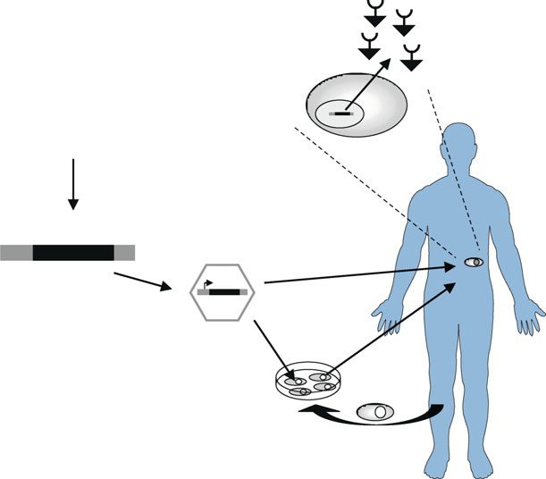
그림 17.1은 이중특이성 항체를 통한 TNF 종양 표적 메커니즘과 국소 종양세포 또는 내피세포로의 잠재적 방출을 도식화한다.
그림 17.1 막 고정 암배아항원(CEA)과 종양괴사인자수용체(TNFR)를 나타내는 도식. 이중특이성 항체는 CEA에 결합해 종양 안에서 종양괴사인자 α(TNFα)를 TNFR 근처에 농축하고, TNFR은 사이토카인에 더 높은 친화력 덕분에 TNFα를 끌어당긴다(“점프”).
여기서 설명한 것처럼 화학 링커를 사용해 이중특이성 항체를 개발하는 데 결정적이면서 제한적인 점 하나는 Fab 단일가 형태에서조차 표적에 충분히 높은 친화력을 보이는 친모 mAb의 선정이다. 여러 anti-TNFα mAb를 검사한 결과 펩신 소화와 온화한 환원으로 Fab’ 절편이 된 뒤 친화력이 크게 손실되었다. 최종 선택은 단일가 Fab’ 형식에서 TNFα에 높은 친화력을 보이는 tnf18 mAb였다. 같은 문제를 여러 anti-CEA mAb 평가로 확인해 하이브리도마 35A7을 선정했다. 두 Fab’ 사이 티오에테르 화학결합 사용은 두 Fab’ 절편 사이 좋은 유연성을 만들어 BIAcore 측정으로 판단할 때 온전한 친모 F(ab’)₂에 필적하는, CEA 종양 표적과 TNFα 사이토카인 양쪽에 높은 친화력을 지닌 이중특이성 항체를 얻게 해주었다(표 17.1).
이중특이성 항체의 생체분포는 사이토카인 표적화에 고려해야 할 가장 결정적인 특성 중 하나다. 사용된 단일가 anti-CEA 35A7 Fab’의 높은 친화력 덕분에 이중특이성 항체의 종양 국소화와 생체분포는 주사 후 여러 시점에서 CEA 발현 인간 대장암을 이종이식한 누드 마우스 모델에서 이량체 친모 anti-CEA 35A7 F(ab’)₂로 얻은 결과와 유사했다(그림 17.2). 게다가 48시간 후 조직 1그램당 주입 용량의 상대적으로 높은 17%가 종양에 남아 있었는데, 이는 친모 항종양 F(ab’)₂로 얻은 결과와 비슷했다(Robert et al. 1996).
표 17.1 서로 다른 가용성 단백질들의 CEA 또는 TNFα 센서칩에 대한 친화력 상수
| 가용성 단백질 | CEA | TNFα |
|---|---|---|
| BAb | 1.7×10⁹ᵃ | 9.4×10⁸ |
| TNFa on BAbᵇ | 6.6×10⁸ | ND |
| CEA on BAbᵇ | ND | 2.5×10⁸ |
| 35A7 | 9.7×10⁸ | ND |
| 35A7 F(ab’)₂ | 2.2×10⁸ | No fixation |
| tnf18 | No fixation | 1.8×10⁸ |
| tnf18 F(ab’) | ND | 2.5×10⁸ |
| CEA | ND | No fixation |
| TNFa | No fixation | ND |
ND not done(수행하지 않음). ᵃ 서로 다른 센서칩에 고정된 CEA 또는 TNFα와 가용성 단백질들 사이 상호작용의 Ka(k_on/k_off) 값(M⁻¹)은 BIAcore와 BIAevaluation(Pharmacia)으로 구함. ᵇ BAb 위 CEA 또는 TNFα의 Ka 값을 구하기 위해 BAb를 먼저 TNFα 또는 CEA가 붙은 센서칩에 노출하고 평형에 도달하면 CEA 또는 TNFα를 주입함.
그림 17.2 인간 대장암을 가진 누드 마우스(검정 막대)에서 이중특이성 항체와 친모 F(ab’)₂ 절편의 생체분포. 요오드-125 방사성 표지 이중특이성 항체(anti-TNF; 흰색 막대 또는 anti-CEA; 빗금 막대)가 요오드-131 표지 친모 F(ab’)₂와 함께 정맥 주입되었고 마우스는 6, 24, 48시간 뒤 해부되었다. 결과는 조직 1 g당 주입 용량 백분율의 평균값이다. Tu 종양; Li 간; Ki 신장; Lu 폐; Sp 비장; Mu 근육; Bo 뼈; Sk 피부; St 위; In 장; Ca 잔여 몸통; Bl 혈액(Robert et al. 1996에서 수정).
그림 17.3 인간 대장암을 가진 누드 마우스에 정맥 주입한 요오드-125 방사성 표지 TNFα의 생체분포. 마우스를 서로 다른 시점에 해부했고 결과는 조직 1 g당 주입 용량 백분율로 나타냈다(Robert et al. 1996에서 수정).
다른 사이토카인에서 이미 기술된 것처럼 TNFα는 마우스에서 i.v. 주입 후 혈액과 조직에서 빠르게 제거되었다(그림 17.3). TNFα 혈중 소실 곡선은 α 반감기 10분, β 반감기 5시간의 이지수 모델에 맞았다. 이 빠른 혈중 제거는 신장 제거 때문인데, i.v. 주입 10분 만에 이미 높은 양의 방사성 표지 TNFα가 이 장기에서 회수되었다. 예상대로 정맥 주입 전 이중특이성 항체와 사전 배양하면 TNFα의 전신 반감기가 늘어남을 관찰했다. 주입 6시간 후 TNFα 혈중 농도가 거의 2배 증가했다(그림 17.4). 그러나 이중특이성 항체와 섞인 TNFα의 생체분포는 이중특이성 항체의 그것과 같지 않았다. 해당 시점에 이중특이성 항체는 혈액에서 10~15% ID/g을 보인 반면, 이중특이성 항체와 함께 주입된 TNFα는 혈액에서 4% ID/g이었다(그림 17.2와 17.3). 이 관찰은 사이토카인이 이중특이성 항체에서 자신의 고친화 TNF 수용체로 “점프”할 수 있다는 가설을 강화한다. 게다가 단독 i.v. 주입 시 TNFα는 어떤 우선적 종양 저류도 보이지 않았다(그림 17.2). 반면 방사성 표지 TNFα를 이중특이성 항체와 함께 주입하자 다른 장기 증가는 제한적인 가운데 시간이 지날수록 사이토카인의 종양 국소화가 크게 늘었다. 이중특이성 항체와 함께 주입된 TNFα의 종양 섭취 증가는 TNFα 단독에 비해 주입 6시간에 3.25배, 14시간에 8.15배였다(그림 17.4).
방사성 표지 TNFα를 사용해 이중특이성 항체가 마우스 전신에서의 TNFα 저류를 늘릴 수 있음도 확인했다. 실제로 주입 14시간 뒤 이중특이성 항체+TNFα 주입 마우스에서 TNFα 단독 주입 마우스보다 두 배 많은 TNFα가 회수되었다. 흥미롭게도 증가한 TNFα 양은 큰 부분이 이중특이성 항체에 의해 종양에 특이적으로 국소화되었는데, 6~14시간 사이 종양 농도가 3.2% 증가한 것이 TNFα 단독 주입 대조군 마우스에서 관찰된 종양 농도와 비교되었다.
그림 17.4 이중특이성 항체와 미리 섞은 TNFα의 누드 마우스(인간 대장암 보유)에서의 종양 표적. 마우스에 요오드-131 표지 TNFα(흰색 막대) 단독 또는 이중특이성 항체(검정 막대)와 함께 정맥 주입했다. 마우스를 6시간(A) 또는 14시간(B) 뒤 해부했고 결과는 조직 1 g당 주입 용량 백분율이다. Tu 종양; Li 간; Ki 신장; Lu 폐; Sp 비장; Mu 근육; Bo 뼈; Sk 피부; St 위; In 장; Ca 잔여 몸통; Bl 혈액(Robert et al., Cancer Res., 1996에서 수정).
17.4 사이토카인 표적화와 외부 방사선치료를 이용한 종양 치료
시험관 내·생체 내 결과는 TNFα가 외부 방사선과 결합될 때 상가적 또는 상가 초과(supra-additive) 효과를 보인다고 보고했다(Hallahan et al. 1990; Azria et al. 2003a, 2004). 이중특이성 항체 전략의 종양 표적 성질을 감안해 우리는 대장암과 췌장암 모델에서 이중특이성 항체로 표적된 TNFα의 외부 방사선치료와 병용 치료 효과를 탐구했다.
방사선에 비교적 내성인 인간 대장암 모델을 누드 마우스에 이종이식한 연구(Azria et al. 2003b)에서 우리는 anti-CEA/anti-TNF 이중특이성 항체로 종양에 표적된 TNFα가 외부 방사선치료와 병용될 때 방사선 단독이나 방사선+유리 TNFα에 비해 종양 성장 지연과 마우스 생존을 유의하게 강화함을 입증했다(그림 17.5와 17.6). 종양 표적 TNFα와 외부 방사선치료의 이런 조합은 CEA를 발현하는 또 다른 인간 암종 이종이식, 인간 췌장암 BX-PC3에서도 성공적이었다(Azria et al. 2003a). 그림 17.7에서 보듯 잘 자란 BX-PC3 이종이식종을 지닌 마우스는 TNF/이중특이성 항체와 방사선 조사 병용 치료 시 각 치료법 단독을 받은 마우스보다 더 나은 생존(종양이 1,500 mm³에 도달할 때까지의 시간)을 보였다.
독성 면에서 모든 치료 종료 시 대조군과 치료군 사이 마우스 체중에 유의한 차이가 없었다. 어느 군에서도 설사가 없어 소화기 독성 부재를 시사했다. 체액 저류, 호흡곤란 같은 다른 독성 징후도 치료 연구 과정 동안 어떤 동물에게서도 관찰되지 않았다. 그러나 TNFα가 면역계에 미치는 영향도 고려해야 하므로, 우리 결과는 TNFa의 종양 살상 작용을 면역학적·비면역학적 메커니즘 — 예컨대 종양 혈관계 손상 — 으로 평가할 수 있는 면역적합 모델에서 확인될 필요가 있었다. 우리는 인간 CEA로 형질전환된 동계 마우스 대장암 MC-38 모델(Clarke et al. 1998)을 CEA 트랜스제닉 C57/Bl6 마우스에 이식해 사용했다.
그림 17.5 LS174T 세포 이식과 TNFα 및/또는 이중특이성 항체(BAb) 및/또는 방사선 조사 치료 후 시간 경과에 따른 종양 부피. 마우스를 다음과 같이 일곱 군으로 무작위 분배했다. 1군, NaCl i.v.; 2군, TNFα i.v.; 3군, BAb i.v.; 4군, BAb+TNFα i.v.; 5군, 국소 방사선; 6군, 국소 방사선 + 방사선 3시간 전 TNFα i.v.; 7군, 국소 방사선 + BAb+TNFα i.v. 군당 n=5마리(Azria et al. 2003b에서 수정). (그래프 범례: BAb, BAb+TNF, TNF+RT, RT, BAb+TNF+RT, 0.9% Nacl; x축: 종양 이식 후 일수, y축: 종양 부피 mm³)
그림 17.6 모든 군의 시간에 따른 Kaplan–Meier 생존 곡선. 1군, 점선(X) 무치료; 2군, 점선(빈 다이아몬드) TNFα 단독; 3군, 점선(빈 원) 이중특이성 항체(BAb) 단독; 4군, 점선(빈 사각) BAb+TNFα; 5군, 실선(빈 삼각) 국소 방사선(RT) 단독; 6군, 실선(빈 다이아몬드) RT+TNFα; 7군, 실선(빈 사각) RT+TNFα+BAb(Azria et al. 2003b에서 수정).
그림 17.7 모든 군의 시간에 따른 Kaplan–Meier 생존 곡선. 1군, 점선(원) 무치료; 2군, 점선(다이아몬드) TNFα; 3군, 점선(십자) 이중특이성 항체(BAb) 단독; 4군, 점선(삼각) BAb+TNFα; 5군, 실선(십자) 국소 방사선(RT) 단독; 6군, 실선(다이아몬드) RT+TNFα; 7군, 실선(사각) RT+BAb+TNFα(Azria et al. 2003a에서 수정).
이 면역적합 마우스에서 우리는 조합 치료 전략의 우월성을 확인했고 TNFα/이중특이성 항체 컨쥬게이트를 방사선치료와 병용 주입했을 때 방사선 단독이나 방사선+유리 TNFα에 비해 유의하게 긴 종양 성장 지연을 관찰했다(그림 17.8).
그림 17.8 CEA 트랜스제닉 마우스에서 동계 MC38-CEA⁺ 마우스 대장암 성장의 시간에 따른 종양 부피. 일곱 군의 마우스를 치료했다. 각 군에서 완치된 마우스를 제거한 뒤 모든 군이 그래프에 표시되어 있다. 값은 두 차례 연속 실험의 평균 종양 크기다. BsAb 이중특이성 항체; TNFα 종양괴사인자 α; RT 방사선치료(Larbouret et al. 2007에서 수정).
실제로 이 공격적인 마우스 대장암 모델에서 동계·면역적합 C57/Bl6 마우스에게 TNFα/이중특이성 항체를 방사선치료와 병용 주입한 군은 두 차례의 서로 다른 실험에서 50%의 방사선 완치율을 보였다. 방사선 단독군과 방사선+유리 TNFα i.v. 병용군은 각각 18%와 20%만 완치되었다. 그림 17.8처럼 TNFα/이중특이성 항체 컨쥬게이트를 방사선치료와 함께 주입하면 1,000 mm³ 종양 부피 도달까지의 중앙 지연이 늘어나, 방사선 단독군과 비교해 22일, 방사선+TNFα군과 비교해 40일의 이득을 보였다(Larbouret et al. 2007). 조직학적으로는 TNF가 종양 표적화되었을 때 종양 괴사가 극적으로 증가함을 관찰할 수 있었다(그림 17.9). 이 연구의 핵심 생체 내 결과는 완전 종양 반응 수가 많다는 것과 종양 성장 지연 증가 사이의 상관이다. 여기에 두 가지 요소가 더해진다. 방사선치료와 이중특이성 항체/TNFα 복합체 병용으로 치료받은 마우스의 종양에서 후속 검출된 높은 수준의 내인성 TNFα mRNA와, 조직병리학적 검사로 확인된 높은 괴사 백분율(그림 17.9)이다. 내인성 TNFα mRNA 증가는 세포가 전리방사선에 노출되었기 때문으로 설명될 수 있다(Hallahan et al. 1989).
그림 17.9 국소 방사선치료(RT)와 종양괴사인자(TNF)-α 조합이 적출한 MC38-CEA⁺ 종양의 조직학적 매개변수에 미치는 영향. 자리 잡은 종양을 가진 암컷 트랜스제닉 마우스를 (a) 매개체, (b) RT, (c) 이중특이성 항체(BsAb)+TNFα, (d) BsAb+TNFα+RT로 치료했다. 치료 첫 주 후 종양을 제거하고 파라핀 포매한 고정 검체 절편을 헤마톡실린-에오신 염색했다. 치료군당 한 마리씩 두 건의 조직학 분석 전용 실험을 수행했다(Larbouret et al. 2007에서 수정).
17.5 결론
이 모든 임상전 생체 내 데이터는 이중특이성 항체로 TNFα 같은 사이토카인을 종양 부위로 재유도하고 농축하는 것의 치료 잠재력을 보여준다. 나아가 결과들은 외부 방사선 조사와 이중특이성 항체 표적 TNFα의 결합이 면역적합 마우스의 종양 완치율을 유의하게 높일 수 있음을 입증한다.
이런 결과를 바탕으로 이중특이성 항체 표적 TNFα와 방사선치료의 조합이 CEA 발현 암종의 방사선치료 개선을 위해 임상에 직접 적용될 수 있다고 추측하고 싶다. 그러나 임상시험 계획 전에 실질적 문제 두 가지가 해결되어야 한다. 첫째는 이중특이성 항체 문제다. 우리 연구에서 사용한 것처럼 화학적 결합으로 만든 이중특이성 항체 컨쥬게이트로 일부 임상시험이 수행되었지만(Curnow 1997), 대부분의 임상 연구는 GMP 조건에서 대량 생산 가능한 유전자 융합으로 얻은 재조합 이중특이성 항체를 사용했다. 따라서 우리도 직접 재조합 anti-TNF/anti-CEA 융합 단백질을 만들어야 할 것이다(Müller et al. 2007; Osada et al. 2010). 둘째 문제는 TNF 독성이 인간에서 마우스보다 훨씬 크다는 것이 알려져 있다는 점으로, 매우 신중한 독성 연구가 필요할 것이다. 우리 이중특이성 항체의 anti-TNF 결합 부위가 독성을 낮출 것이라는 점을 활용하면서 말이다.
참고문헌
- Abbruzzese JL et al (1989) Phase I trial of recombinant human gamma-interferon and recombinant human tumor necrosis factor in patients with advanced gastrointestinal cancer. Cancer Res 49(14):4057–4061
- Asher AL et al (1991) Murine tumor cells transduced with the gene for tumor necrosis factor alpha. Evidence for paracrine immune effects of tumor necrosis factor against tumors. J Immunol 146(9):3227–3234
- Azria D et al (2003a) Potentiation of ionising radiation by targeting tumour necrosis factor alpha using a bispecific antibody in human pancreatic cancer. Br J Cancer 89(10):1987–1994
- Azria D et al (2003b) Enhancement of radiation therapy by tumour necrosis factor alpha in human colon cancer using a bispecific antibody. Int J Radiat Oncol Biol Phys 55(5):1363–1373
- Azria D et al (2004) A bispecific antibody to enhance radiotherapy by tumor necrosis factor-alpha in human CEA-expressing digestive tumors. Int J Radiat Oncol Biol Phys 58(2):580–588
- Balkwill FR et al (1986) Human tumor xenografts treated with recombinant human tumor necrosis factor alone or in combination with interferons. Cancer Res 46(8):3990–3993
- Brouckaert PG et al (1986) In vivo anti-tumour activity of recombinant human and murine TNF, alone and in combination with murine IFN-gamma, on a syngeneic murine melanoma. Int J Cancer 38(5):763–769
- Carswell EA et al (1975) An endotoxin-induced serum factor that causes necrosis of tumors. Proc Natl Acad Sci USA 72(9):3666–3670
- Chatal JF et al (1995) Bifunctional antibodies for radioimmunotherapy. Hybridoma 14(2):125–128
- Cheever MA (2008) Twelve immunotherapy drugs that could cure cancers. Immunol Rev 222:357–368
- Clarke P et al (1998) Mice transgenic for human carcinoembryonic antigen as a model for immunotherapy. Cancer Res 58(7):1469–1477
- Corvalan JR et al (1987) Specific in vitro and in vivo drug localisation to tumour cells using a hybrid-hybrid monoclonal antibody recognising both carcinoembryonic antigen (CEA) and vinca alkaloids. Cancer Immunol Immunother 24(2):133–137
- Creasey AA, Reynolds MT, Laird W (1986) Cures and partial regression of murine and human tumors by recombinant human tumor necrosis factor. Cancer Res 46(11):5687–5690
- Curnis F et al (2000) Enhancement of tumor necrosis factor alpha antitumor immunotherapeutic properties by targeted delivery to aminopeptidase N (CD13). Nat Biotechnol 18(11):1185–1190
- Curnow RT (1997) Clinical experience with CD64-directed immunotherapy. An overview. Cancer Immunol Immunother 45(3–4):210–215
- de Wilt JH et al (2000) Tumour necrosis factor alpha increases melphalan concentration in tumour tissue after isolated limb perfusion. Br J Cancer 82(5):1000–1003
- Dela Cruz JS et al (2000) Recombinant anti-human HER2/neu IgG3-(GM-CSF) fusion protein retains antigen specificity and cytokine function and demonstrates antitumor activity. J Immunol 165(9):5112–5121
- Dela Cruz JS et al (2004) Antibody-cytokine fusion proteins: innovative weapons in the war against cancer. Clin Exp Med 4(2):57–64
- Delaloye B et al (1986) Detection of colorectal carcinoma by emission-computerized tomography after injection of 123I-labeled Fab or F(ab’)₂ fragments from monoclonal anti-carcinoembryonic antigen antibodies. J Clin Invest 77(1):301–311
- Folli S et al (1993) Tumor-necrosis factor can enhance radio-antibody uptake in human colon carcinoma xenografts by increasing vascular permeability. Int J Cancer 53(5):829–836
- French RR et al (1995) Delivery of the ribosome-inactivating protein, gelonin, to lymphoma cells via CD22 and CD38 using bispecific antibodies. Br J Cancer 71(5):986–994
- Girardet C et al (1986) Immunochemical characterization of two antigens recognized by new monoclonal antibodies against human colon carcinoma. J Immunol 136(4):1497–1503
- Glennie MJ et al (1987) Preparation and performance of bispecific F(ab’γ)₂ antibody containing thioether-linked Fab’γ fragments. J Immunol 139(7):2367–2375
- Hallahan DE et al (1989) Increased tumor necrosis factor alpha mRNA after cellular exposure to ionizing radiation. Proc Natl Acad Sci USA 86(24):10104–10107
- Hallahan DE et al (1990) The interaction between recombinant human tumor necrosis factor and radiation in 13 human tumor cell lines. Int J Radiat Oncol Biol Phys 19(1):69–74
- Havell EA, Fiers W, North RJ (1988) The antitumor function of tumor necrosis factor (TNF), I. Therapeutic action of TNF against an established murine sarcoma is indirect, immunologically dependent, and limited by severe toxicity. J Exp Med 167(3):1067–1085
- Hoogenboom HR, Raus JC, Volckaert G (1991) Targeting of tumor necrosis factor to tumor cells: secretion by myeloma cells of a genetically engineered antibody-tumor necrosis factor hybrid molecule. Biochim Biophys Acta 1096(4):345–354
- Kaspar M, Trachsel E, Neri D (2007) The antibody-mediated targeted delivery of interleukin-15 and GM-CSF to the tumor neovasculature inhibits tumor growth and metastasis. Cancer Res 67(10):4940–4948
- Khawli LA, Miller GK, Epstein AL (1994) Effect of seven new vasoactive immunoconjugates on the enhancement of monoclonal antibody uptake into tumors. Cancer 73(3 Suppl):824–831
- King DM et al (2004) Phase I clinical trial of the immunocytokine EMD 273063 in melanoma patients. J Clin Oncol 22(22):4463–4473
- Larbouret C et al (2007) Radiocurability by targeting tumor necrosis factor-alpha using a bispecific antibody in carcinoembryonic antigen transgenic mice. Int J Radiat Oncol Biol Phys 69(4):1231–1237
- LeBerthon B et al (1991) Enhanced tumor uptake of macromolecules induced by a novel vasoactive interleukin 2 immunoconjugate. Cancer Res 51(10):2694–2698
- Lejeune FJ (2002) Clinical use of TNF revisited: improving penetration of anti-cancer agents by increasing vascular permeability. J Clin Invest 110(4):433–435
- Lejeune FJ, Eggermont AM (2007) Hyperthermic isolated limb perfusion with tumor necrosis factor is a useful therapy for advanced melanoma of the limbs. J Clin Oncol 25(11):1449–1450
- Lienard D et al (1992) High-dose recombinant tumor necrosis factor alpha in combination with interferon gamma and melphalan in isolation perfusion of the limbs for melanoma and sarcoma. J Clin Oncol 10(1):52–60
- Moritz T et al (1989) Phase I study of recombinant human tumor necrosis factor alpha in advanced malignant disease. Cancer Immunol Immunother 29(2):144–150
- Mullen CA et al (1992) Fibrosarcoma cells transduced with the IL-6 gene exhibited reduced tumorigenicity, increased immunogenicity, and decreased metastatic potential. Cancer Res 52(21):6020–6024
- Müller D et al (2007) Improved pharmacokinetics of recombinant bispecific antibody molecules by fusion to human serum albumin. J Biol Chem 282(17):12650–12660
- Osada T et al (2010) Metastatic colorectal cancer cells from patients previously treated with chemotherapy are sensitive to T-cell killing mediated by CEA/CD3-bispecific T-cell-engaging BiTE antibody. Br J Cancer 102(1):124–133
- Ribas A et al (2009) Phase I/II open-label study of the biologic effects of the interleukin-2 immunocytokine EMD 273063 (hu14.18-IL2) in patients with metastatic malignant melanoma. J Transl Med 7:68
- Robert B et al (1996) Cytokine targeting into tumors using a bispecific antibody directed against carcinoembryonic antigen and tumor necrosis factor alpha. Cancer Res 56(20):4758–4765
- Rosenblum MG et al (1991) Antibody-mediated delivery of tumor necrosis factor (TNF-alpha): improvement of cytotoxicity and reduction of cellular resistance. Cancer Commun 3(1):21–27
- Seruga B et al (2008) Cytokines and their relationship to the symptoms and outcome of cancer. Nat Rev Cancer 8(11):887–899
- Ten Hagen TL et al (2000) Low-dose tumor necrosis factor-alpha augments antitumor activity of stealth liposomal doxorubicin (DOXIL) in soft tissue sarcoma-bearing rats. Int J Cancer 87(6):829–837
- Tracey KJ et al (1987) Anti-cachectin/TNF monoclonal antibodies prevent septic shock during lethal bacteraemia. Nature 330(6149):662–664
- Yang J, Moyana T, Xiang J (1995) A genetically engineered single-chain FV/TNF molecule possesses the anti-tumor immunoreactivity of FV as well as the cytotoxic activity of tumor necrosis factor. Mol Immunol 32(12):873–881 # 제18장 이중특이성 항체와 유전자 치료
Dirk M. Nettelbeck
18.1 서론
18.1.1 유전자 치료
유전자 치료는 치료 목적을 위해 환자 세포에 유전자를 옮기는 일이다(그림 18.1). 유전자 치료는 원래 유전자 교정 — 즉 원인 돌연변이 유전자를 기능성 복제본으로 대체하거나 보완하는 방식 — 으로 유전성(단일유전자) 질환을 고치는 것으로 구상되었다. 그러나 최근 수십 년간 다양한 종에서 온 여러 부류의 치료 유전자를 옮김으로써 많은 질병 치료가 집중적으로 연구되었다(표 18.1). 예로는 감염병 예방·치료용 병원체 항원 코딩 유전자(유전자 백신화), 심혈관 질환 치료용 혈관 성장인자 작동제·길항제 코딩 유전자, 또는 암 치료를 위한 직접·간접 종양세포 살상 유전자 등이 있다.
유전자 치료 의약품은 치료 작용 방식을 정의하는 치료 유전자와, 치료 유전자의 적절한 안정성·전달·발현을 뒷받침해야 하는 유전자 전달 벡터로 이루어진다(그림 18.1). 치료 유전자 전달이 복잡하고 치료 효능을 결정적으로 좌우하기 때문에 유전자 치료 연구의 주요 노력이 벡터 개발에 집중된 것은 당연하다. 1990년대부터 수천 명의 환자를 대상으로 수많은 유전자 치료 임상시험이 수행되었고 최근에는 치료 효능이 입증되었다. 예로는 SCID 환자의 면역 회복, 소아기 실명에서 어느 정도의 시력 회복, 신경퇴행 억제 등이 있다(Kohn 2010; Roy et al. 2010; Cartier et al. 2009).
D.M. 네텔베크(D.M. Nettelbeck, *) — 독일 하이델베르크 독일암연구센터(DKFZ) 종양용해성 아데노바이러스 헬름홀츠 연구그룹 및 하이델베르크 대학병원 피부과 R.E. Kontermann(ed.), Bispecific Antibodies, DOI 10.1007/978-3-642-20910-9_18, #Springer-Verlag Berlin Heidelberg 2011
그러나 대부분의 유전자 치료 접근은 환자에서의 성공적 응용을 용이하게 하려면 유전자 전달의 효율이나 선택성 개선이 필요하다.
그림 18.1 이중특이성 항체와 유전자 치료. 왼쪽 패널: 유전자 치료에서 치료 유전자가 환자 세포로 전달되고, 거기서 유전자 산물이 발현되어 치료 활성을 매개한다. 예로는 환자 유전적 결함의 보완이나 암세포 살상이 있다. 전달과 발현을 위해 치료 유전자는 조절 서열(예: 전사 시작과 종결)을 포함하는 유전자 전달 벡터 안에 삽입된다. 흔히 벡터는 환자 세포로의 효율적 유전자 전달 수단이기도 하다(예: 복제결핍 바이러스). 오른쪽 패널: 이중특이성 항체는 유전자 전달 벡터를 특정 세포 유형에 표적화하는 도구(1)일 수도 있고, 반대로 항체 유전자 전달과 이후 환자 몸속 항체 합성을 통해 항체 치료의 도구로 유전자 전달을 활용할 수도 있다(2). (그림 구성: GENE THERAPY — viral vector(바이러스 벡터), therapeutic gene(치료 유전자), regulatory sequences(조절 서열); ANTIBODY GENE TRANSFER ADAPTERS — vector receptor-binding domain(벡터 수용체결합 도메인), bispecific antibody adapter(이중특이성 항체 어댑터), gene transfer(유전자 전달), native virus target receptor molecule(자연 바이러스 표적 수용체 분자), healthy cell target cell(건강세포/표적세포), therapeutic protein(치료 단백질); GENETIC ANTIBODY DELIVERY — in vivo expression of therapeutic bispecific antibody(치료용 이중특이성 항체의 생체 내 발현), gene-modified cell(유전자 변형 세포))
18.1.2 유전자 치료 벡터
환자 세포에서 치료 유전자의 적절한 발현을 보장하려면 유전자 치료 벡터는 프로모터와 전사종결/폴리아데닐화 신호를 포함한다(그림 18.1). 추가 조절 요소를 활용해 강화된(intron) 또는 이시스트론적(internal ribosome entry sites, IRES) 유전자 발현을 달성할 수 있다. 중요하게도 조절 요소는 유전자 발현의 공간적·시간적 통제에 활용될 수 있다. 유도성 프로모터나 세포 유형 특이 프로모터, 또는 mRNA 안정성이나 번역 효율을 차등적으로 조절하는 서열 등이 그 예다(Goverdhana et al. 2005; Dorer and Nettelbeck 2009; Brown and Naldini 2009). 치료 DNA의 안정성 개선을 위해 이 진핵 발현 카세트는 원형 플래스미드에 삽입되어 비바이럴 벡터로 더 포장되거나, 복제결핍 바이러스 벡터의 게놈에 삽입된다(표 18.2).
표 18.1 유전자 치료에 사용되는 치료 유전자
| 치료 유전자 | 질병 | 활성 | 참고문헌 |
|---|---|---|---|
| 돌연변이 유전자 코딩의 올바른 복사본 — 사이토카인 수용체, 망막색소상피 단백질, 혈액응고 인자, 수송체 ABCD1 | 단일유전자 질환 — 면역결핍, 소아 실명, 혈우병, 신경퇴행질환 | 유전자 교정 | Kohn(2010), Roy et al.(2010), Margaritis and High(2010), Cartier et al.(2009) |
| 혈관 성장인자 유전자; 가용성 혈관성장인자 수용체 유전자 | 혈관 질환, 암 | 혈관신생, 항혈관신생 | Karvinen and Yla-Herttuala(2010), Brandwijk et al.(2007) |
| 사이토카인 유전자, 공자극 유전자, T 세포 수용체 코딩 유전자 | 감염병, 암 | 면역 자극 | Liu et al.(2010), Dotti et al.(2009) |
| 항체 코딩 유전자 | 감염병, 암 | 항체 의존 면역 활성화, 병원체 중화, 수용체 작동·길항 | Watanabe et al.(2010) |
| 항원 코딩 유전자 — 병원체 유래, 종양연관 | 감염병, 암 | 유전자 백신화 | Smits et al.(2009), Rice et al.(2008) |
| 프로세포자멸 유전자 — Fas, TRAIL | 암 | 세포독성; 부분 및 자가분비 세포자멸사 유도 | Griffith et al.(2009) |
| 자살유전자(프로드러그 활성화 효소 코딩) — HSV 티미딘키나제(+간시클로버), 효모 시토신 데아미나제(+5-FC) | 암 | 프로드러그와 결합한 세포살상 | Portsmouth et al.(2007) |
| shRNA, miRNA, 리보자임 코딩 유전자 | 다양한 질환 | 표적 유전자 발현 억제 | Singer and Verma(2008) |
결과로 만들어진 유전자 의약품의 전달은 물리적 방법 — 예컨대 유전자 백신화를 위한 유전자건(gene gun)으로 피부에 플래스미드 전달 — 으로 달성할 수 있다. 대안으로 벡터가 전달을 매개할 수 있다. 바이러스 벡터가 표적 조직으로 침투하고, 세포로 흡수되며, 치료 유전자를 담은 재조합 바이러스 게놈이 핵으로 옮겨지는 것(바이러스 형질도입)이 그렇다. 안전 확보를 위해 유전자 전달 벡터로 쓰이는 바이러스들은 바이러스 복제를 막으려고 유전자 삭제로 무력화되었다. 유전자 전달 벡터는 치료 유전자의 운명을 결정한다. 레트로바이럴 벡터는 자신의 게놈과 함께 치료 유전자를 숙주세포 염색체에 삽입하지만, 플래스미드나 아데노바이러스 벡터는 에피좀(episomal) 유전자 전달을 낳는다. 따라서 레트로바이러스는 형질도입 세포와 그 후손의 안정적 유전자 전달을 가능하게 한다. 이것은 예컨대 유전성 면역결핍 치료를 위한 조혈줄기세포로의 생체 외 유전자 전달 같은 유전성 질환 교정 치료에 필요하다(Kohn 2010).
표 18.2 유전자 치료에 사용되는 유전자 전달 벡터
| 유전자 전달 벡터 | 전달 방식 | 특징 | 참고문헌 |
|---|---|---|---|
| Naked plasmid(나이트 플래스미드) | 주사, 압력 관류, 유전자건, 초음파, 전기천공 | 조절 DNA 서열, 제작 용이, 에피좀 유전자 전달, 흔히 비효율적 유전자 전달 | Wells(2004) |
| 플래스미드 + 비바이럴 벡터(양이온성 지질, 리포좀, 양이온성 중합체) | 비특이적 세포 섭취 또는 리간드 매개 세포 진입 가능 | 플래스미드 참조, 다양한 효율, 특이 유전자 전달 가능 | Wolff and Rozema(2008) |
| Retrovirus(레트로바이러스) | 바이러스 형질도입, 표적 리간드 매개 세포 진입 가능 | 조절 DNA 서열, 안정적 유전자 전달(염색체 통합, 삽입 변이원성 문제), 개선된 유전자 전달을 위한 유전적 벡터 공학 | Baum et al.(2006) |
| Adeno-associated virus(AAV)(아데노연관바이러스) | 바이러스 형질도입, 표적 리간드 매개 세포 진입 가능 | 조절 DNA 서열, 에피좀 유전자 전달, 분열후 세포에서 장기 유전자 전달, 개선된 유전자 전달을 위한 유전적 벡터 공학 | Büning et al.(2008) |
| Adenovirus(아데노바이러스) | 바이러스 형질도입, 표적 리간드 매개 세포 진입 가능 | 조절 DNA 서열, 에피좀 유전자 전달, 외래 DNA 대한 높은 수용 능력, 개선된 유전자 전달을 위한 유전적 벡터 공학 | McConnell and Imperiale(2004) |
반면 일시적 유전자 전달은 보통 유전자 백신화나 세포절멸적(cytoablative) 암 치료에 충분하다. 다만 후자의 경우 효율적 유전자 전달이 필수적이므로 벡터 선택은 형질도입 효율이 결정한다. 이와 관련해 조건부 복제형(conditionally replication-competent) 바이러스 벡터가 최근 설계되어 종양 안 벡터 확산과 증폭된 유전자 전달을 허용한다(Parato et al. 2005; Cody and Douglas 2009). 이런 복제형 벡터는 바이러스 복제에 의한 종양세포 용해도 매개하는데, 이를 종양용해(oncolysis) 또는 바이로테라피(virotherapy)라 한다. 그러므로 바이로테라피스트의 관점에서 용종성 바이러스 게놈에 치료 유전자를 삽입하는 것은 종양용해를 유전자 치료로 보완하는 전략이다(“용종성 바이러스의 무장”).
18.1.3 유전자 전달 표적화
많은 유전자 치료 응용은 유전자 전달을 특정 세포로 제한할 것을 요구한다. 세포절멸적 유전자 치료와 복제형 벡터에서는 당연하다. 효과적 유전자 백신화도 잘못된 세포에서의 항원 발현은 면역이 아니라 관용을 촉발할 수 있으므로 적절한 면역세포로의 유전자 전달에 의존할 수 있다. 따라서 벡터 표적화는 유전자 치료 연구의 주요 과제다. 표적화된 유전자 치료(또는 바이러스 복제)는 표적 세포 진입을 위해 유전자 전달 벡터에 세포결합 리간드를 삽입하거나, 위에서 언급했듯 적절한 조절 서열로 유전자 발현을 진입 후(post-entry) 조절함으로써 달성할 수 있다.
18.1.4 이중특이성 항체와 유전자 치료
이중특이성 항체와 유전자 치료는 두 가지 방식으로 연결된다. 첫째, 이중특이성 항체는 유전자 전달 벡터의 세포 진입을 표적화하는 유망한 도구로 개발되었다. 어댑터 분자로서 표적세포 표면에 (특이적으로) 발현되는 마커 분자에 벡터를 연결하는 것이다(그림 18.1). 둘째, 유전자 치료는 환자에게 치료용 항체를 전달하는 대안적 수단, 즉 환자 세포에서의 항체 생성(유전자 항체 치료, 그림 18.1)이 될 수 있다. (확립된) 가용성 항체의 유전적 전달 외에도 이런 항체 유전자 전달은 막결합형이나 세포내 유도체의 발현 같은 (이중특이성) 항체 치료의 새 응용을 가능하게 할 수 있다. 물론 이중특이성 항체와 유전자 치료의 조합 치료도 상상할 수 있다.
18.2 이중특이성 항체는 유전자 치료의 도구다
18.2.1 바이러스 유전자 치료 벡터의 세포 진입 표적화용 어댑터
이중특이성 항체는 유전자 치료에서 바이러스 유전자 전달 벡터를 질병 세포로 향하게 하는 도구로 활용되어 왔다. 이를 위해 바이러스 표면 단백질에 특이적인 항체를 관심 있는 세포 표면 분자에 결합하는 두 번째 항체와 연결하여, 유전자 전달 벡터를 표적세포에 묶는 어댑터 분자를 구현한다(그림 18.1과 18.2). 이런 바이러스 친성(tropism) 수정은 표적세포에 바이러스 수용체 발현이 없어 유전자 전달이 막힐 때, 또는 건강 세포에서 자연 바이러스 수용체가 널리 발현되어 부작용과 벡터 격리(vector sequestration)가 생길 때 필요하다. 후자를 위해 바이러스 부착 단백질을 어댑터 친화력을 잃지 않으면서 돌연변이시켰거나, 바이러스 부착 단백질의 수용체결합 도메인을 어댑터로 가렸다. 그 결과 생긴 건강 세포에 대한 바이러스 친성 상실을 디타게팅(de-targeting)이라 한다. 두 경우 모두 표적세포 결합과 진입은 어댑터의 세포결합 부위의 표적에 의해 매개된다(리타게팅/re-targeting). 어댑터 전략의 중요한 장점은 (a) 벡터 조립, 안정성, 활성에 해로울 수 있는 바이러스 구조 수정을 필요로 하지 않는다는 것;
그림 18.2 유전자 치료 표적화 도구로서의 이중특이성 항체. 한쪽 특이성으로 유전자 전달 벡터에, 다른 쪽으로 세포 표면 분자에 결합하는 이중특이성 어댑터가 치료 유전자를 특정 세포 유형에 전달하는 데 사용된다. 이 전략은 표적 치료를 보장하고 부작용을 피하려는 유전자 치료에서 관심사다. 이런 이중특이성 어댑터는 (벡터 결합이든 세포 결합이든) 하나의 항체나 항체 절편을 포함할 수 있다. 대안으로 화학 컨쥬게이트, 다이어바디, 텐덤 scFv 형태의 이중특이성 항체일 수 있다. (그림 구성: BISPECIFIC ADAPTERS FOR TARGETING GENE THERAPY — therapeutic gene(치료 유전자), viral vector(바이러스 벡터); vector-binding domain(벡터결합 도메인): soluble virus receptor(가용성 바이러스 수용체), Fab fragment(Fab 절편), scFv; Linkage(연결 방식): chemical conjugation(화학 컨쥬게이트), genetic fusion(유전자 융합); cell-binding domain(세포결합 도메인): mAb, Fab fragment, scFv, ligand peptide or protein(리간드 펩타이드 또는 단백질); target molecule(표적 분자); target cell(표적 세포))
- 어댑터의 세포결합 부위를 교환함으로써 항체를 만들 수 있는 어떤 표적 분자에도 벡터 결합이 가능해 유연하다는 것, (c) 특정 벡터에 효과적인 어댑터가 한번 만들어지면 해당 벡터의 파생형으로 어떤 치료 유전자의 전달에도 쓸 수 있다는 것이다.
18.2.2 아데노바이러스 유전자 전달 벡터를 이용한 유전자 치료
유전자 전달 표적화용 어댑터로서의 이중특이성 항체는 아데노바이러스 벡터에서 가장 집중적으로 연구되었다. 아데노바이러스(Ads, McConnell and Imperiale 2004)는 단백질 캡시드에 덮인 이중가닥 선형 DNA 게놈을 지니며 지질 외막은 없다. 아데노바이러스 캡시드의 수용체결합 스파이크는 삼량체 섬유(fiber) 단백질로 만들어지며, 바이러스 수용체에 결합해 숙주세포 부착을 담당한다. 가장 많이 쓰이는 인간 Ad 혈청형 5(HAdV-5)의 경우 그 수용체는 콕사키-아데노바이러스 수용체(CAR)다. 바이러스가 숙주세포 내부화되는 것은 다른 캡시드 단백질인 펜톤 베이스(penton base)가 세포 인테그린과 일차 상호작용함으로써 매개된다. 세포 결합과 진입을 분리함으로써 이 두 단계 메커니즘은 Ad 벡터가 세포에 처음 붙는 방식에 높은 유연성을 준다. 벡터가 세포에 들어간 뒤 바이러스 게놈은 핵으로 옮겨지고 에피좀 게놈에서 바이러스 유전자가 발현된다. 마찬가지로 Ad 벡터 게놈이 환자 세포로 전달된 뒤 치료 유전자가 발현된다. 따라서 필수 바이러스 유전자는 치료 유전자로 대체되어 벡터가 복제결핍이 된다. 최근에는 치료 유전자가 복제형 Ads에 삽입되기도 했다(McConnell and Imperiale 2004).
Ads는 안정적이고 고역가로 생산될 수 있으며 효과적인 유전자 전달 장비를 갖추고 병원성이 온화해서(HAdV-5는 감기 증상을 일으킴) 대표적인 유전자 치료 벡터다(McConnell and Imperiale 2004). 임상 유전자 치료 시험에서 가장 자주 쓰인 바이러스 벡터였다(Journal of Gene Medicine Clinical Trials Database). 이 시험들은 환자에서 Ad 벡터의 양호한 안전성 프로파일을 밝혔다. 암 유전자 치료와 유전자 백신화가 Ad 벡터가 널리 쓰이는 요법이다. 암 유전자 치료의 한 치료법은 분자화학요법, 즉 유전자 의존 효소 프로드러그 치료(GDEPT)다. 이 전략은 무해한 프로드러그를 효과적인 화학항암제로 활성화하는 프로드러그 활성화 효소를 코딩하는 유전자 전달에 기반한다(Portsmouth et al. 2007). 이 전략의 근거는 종양에 국한된 프로드루그 활성화가 용량제한 부작용 때문에 전통적 전신 주입으로는 달성할 수 없는 유효 농도의 화학항암제를 종양 안에서 가능하게 한다는 것이다. GDEPT와 다른 세포절멸적 암 유전자 치료는 종양 선택적 유전자 전달에 의존하는데, 수정하지 않은 HAdV-5나 다른 Ad 혈청형은 건강 세포에서도 Ad 수용체가 널리 발현되기 때문에 이를 제공하지 못한다.
Ads는 유전자 백신화 벡터로도 빈번히 쓰인다. 유전자 백신화는 항원 유전자가 전문 항원제시세포(APC)로 형질도입될 때 가장 효율적인데, APC들이 면역 효과세포 활성화의 적절한 신호를 제공하기 때문이다. 수지상세포(DC)가 가장 효과적인 APC지만 형질도입이 어렵다. Ads가 DC용으로 가장 효과적인 유전자 전달 벡터임에도 CAR 발현이 낮아 효율적 DC 형질도입에는 높은 벡터 역가가 필요하다.
18.2.3 아데노바이러스 유전자 전달 표적화용 항체
항체는 높은 친화력과 특이성, 그리고 사실상 어떤 세포 표면 표적 분자에도 특이적인 항체를 만들 수 있는 가능성 때문에 유전자 전달 벡터 표적화에 매력적인 결합 분자다. 바이러스 유전자 전달 벡터에 표적 리간드를 삽입하기 위한 세 가지 전략이 추구되었다. 바이러스 캡시드 또는 외막 단백질로의 유전자 융합, 이중특이성 어댑터와의 복합체 형성, 화학적 연결이다. 유전자·화학 전략의 주요 결점은 번거롭고 종종 바이러스 기능을 방해한다는 것이다. 게다가 항체를 아데노바이러스 캡시드에 유전적으로 삽입하는 일은 캡시드와 항체 분자의 생합성 비호환성에 가로막힌다. Ad 캡시드 단백질은 세포질에서 합성되어 바이러스 입자 조립이 일어나는 핵으로 운반되는 반면, 항체는 올바른 폴딩을 보장하는 분비 경로를 통해 생산된다. 그 결과 항체의 Ad 캡시드 단백질로의 유전자 융합은 비효율적이었고 몇몇 세포질 안정 항체 절편으로 국한되었다(Hedley et al. 2006; Vellinga et al. 2007; Poulin et al. 2010). 반면 어댑터 분자의 합성은 바이러스 생산과 분리될 수 있다. 게다가 세포결합 항체를 어댑터 분자에 삽입하는 일은 완전히 새로운 바이러스 게놈을 설계하는 것보다 덜 번거롭고, 결과 어댑터는 어떤 Ad 벡터에도 연결될 수 있어 더 나은 유연성을 허용한다.
어댑터 생산을 위해 Ad 캡시드 단백질, 주로 섬유(fiber)에 결합하는 항체 절편과 관심 세포 표면 표적 분자에 결합하는 항체 또는 항체 절편이 사용되었다(그림 18.2). 이들은 화학 컨쥬게이트(3장 참조)나 유전자 융합으로 연결되었는데, 후자는 텐덤 scFv나 scDb를 만든다(5장 참조). 이중특이성 항체의 대안으로, 바이러스결합 항체 절편을 세포결합 단백질이나 펩타이드에 연결하거나, 세포결합 항체 절편을 가용성 아데노바이러스 수용체 CAR에 연결해 어댑터를 만들기도 했다.
18.2.4 아데노바이러스 유전자 전달 표적화용 이중특이성 어댑터 분자로서의 항체 유래 화학 컨쥬게이트
Ad 벡터 세포 진입 표적화의 어댑터 전략은 엽산수용체 과발현 종양세포 표적화로 Douglas와 동료들이 개척했다(Douglas et al. 1996). 이를 위해 그들은 엽산을
중화성 anti-Ad fiber 단일클론 항체(MAb)의 Fab 절편에 화학적으로 컨쥬게이트했다. 이가 항체에 의한 Ad 벡터 응집을 피하려고 Fab 절편을 사용한 것이다. 해당 Ad 벡터와 복합체를 이루면 이 어댑터는 엽산 의존적 방식으로 리포터 유전자나 세포절멸적 유전자 프로드러그 활성화를 표적세포로 전달했다. Fab 절편 단독은 아데노바이러스 형질도입을 억제했는데, 중화성 항체에서 유래했으므로 예상된 결과였다. 따라서 Fab-엽산 어댑터는 자연 바이러스 수용체에 대한 바이러스 결합을 없애고 새로운 세포 표면 분자에 바이러스 부착을 향하게 하는 두 가지 방식으로 표적화된 유전자 전달을 실현했다(그림 18.1). Wickham 등은 Ad 세포 결합을 인테그린 쪽으로 향하게 하는 이중특이성 항체를 기술했다. 이 어댑터는 인테그린결합 MAb를, Ad 펜톤 베이스 안에 설계된 펩타이드 태그에 특이적인 두 번째 MAb에 화학적으로 연결한 것이었다(Wickham et al. 1996). 이 컨쥬게이트는 수정하지 않은 HAdV5 벡터가 겨우 온건하게 형질도입하는 인간 평활근세포와 내피세포의 아데노바이러스 형질도입을 강화했다.
이후 섬유(fiber)결합 Fab 절편을 세포결합 항체 또는 항체 절편에 공유결합시킨 여러 이중특이성 항체 컨쥬게이트가 보고되었다. 이런 이중특이성 항체 컨쥬게이트들은 CD40, EpCAM, Tag72, CD70, ACE를 포함한 다양한 세포 표면 분자 결합을 통해 Ad 유전자 전달을 여러 세포 유형으로 재유도한다고 보고되었다(Tillman et al. 1999, 2000; De Gruijl et al. 2002; Brandao et al. 2003; Miller et al. 1998; Haisma et al. 1999; Israel et al. 2001; Reynolds et al. 2000, 2001). 이 보고들은 어댑터 접근법의 높은 유연성을 확인해 준다. 예컨대 전문 항원제시세포인 DC는 감염병·악성질환의 유전자 백신화를 노리는 유전자 전달에서 관심 표적이다. α-fiber Fab과 DC 표면 분자 CD40에 결합하는 MAb의 컨쥬게이트는 마우스·인간 DC로의 효율적인 Ad 유전자 전달을 가능하게 했다(Tillman et al. 1999, 2000). 이 어댑터로 인간 피부 외식편을 사용한 제자리(in situ) DC로의 Ad 유전자 전달 효율과 선택성 개선도 달성되었다(De Gruijl et al. 2002). Ad 진입 표적화에 더해 α-fiber Fab/αCD40 mAb 어댑터는 CD40 결합 활성을 통해 면역 반응 효율적 유도에 필요한 DC 활성화를 촉발했다. 그에 따라 이 어댑터는 동물 모델에서 Ad 벡터 형질도입 DC를 통한 종양 백신화 효율을 높였다(Tillman et al. 2000).
암세포로의 Ad 벡터 어댑터 표적화는 세포배양 연구에서 입증되었다. 편평세포암, 교모세포종, 골육종용 EGFR결합 α-fiber Fab/MAb 컨쥬게이트(Miller et al. 1998; Blackwell et al. 1999; Barnett et al. 2002); 다양한 선암용 EpCAM결합 Fab/Fab 컨쥬게이트(Haisma et al. 1999; Heideman et al. 2001); 난소암용 TAG-72결합 α-fiber Fab/MAb 컨쥬게이트(Kelly et al. 2000); B 세포 림프종용 CD70결합 α-fiber Fab/MAb 컨쥬게이트(Israel et al. 2001)가 그것이다. 암세포마다 CAR 발현이 다르므로 어댑터는 흔히 암세포 형질도입을 현저히 강화시켰다. 또 하나 다른 유형의 항체 기반 어댑터 컨쥬게이트도 만들어졌는데, α-fiber Fab 절편을 염기성 섬유아세포성장인자(FGF2, Goldman et al. 1997; Rogers et al. 1997; Rancourt et al. 1998)에, 인공 폐 호밍(homing) 펩타이드에(Trepel et al. 2000), 또는 파상풍 독소 Hc-절편(Schneider et al. 2000)에 연결하여 각기 다양한 암세포, 폐세포, 신경세포를 표적했다.
18.2.5 아데노바이러스 유전자 전달 표적화용 재조합 항체 유래 이중특이성 어댑터 분자
재조합 이중특이성 어댑터 분자는 화학 컨쥬게이트에 비해 벡터 표적화 응용에 유리한 속성들을 갖춘다. 무엇보다 원핵 또는 진핵 발현의 표준화된 절차로 잘 규정된 분자를 생산할 수 있다. 텐덤 단일사슬 가변 절편(tandem scFv, 5장 참조)과 단일사슬 다이어바디(scDb, 5장 참조) 모두 Ad 유전자 전달 표적화에 사용되었다. Haisma와 동료들은 바이러스를 재조합 텐덤 α-fiber/α-EGFR scFv와 복합체화함으로써 교모세포종과 암종 세포의 Ad 형질도입을 늘릴 수 있음을 보여주었다(Haisma et al. 2000). 우리 그룹은 2001년 Ad fiber와 증식성 내피에서 발현되는 Endoglin에 대한 특이성을 지닌 scDb가 내피세포의 표적화된 형질도입을 용이하게 한다고 보고했다(Nettelbeck et al. 2001). 진핵 세포에서 발현된 텐덤 scFv와 달리 scDb는 세균에서 생산되었다. EpCAM에 결합하는 텐덤 scFv 어댑터로 위암세포(Heideman et al. 2002), CD40 결합 텐덤 scFv 어댑터로 DC(Brandao et al. 2003), 흑색종 표면항원 HMWMAA에 결합하는 scDb 어댑터로 흑색종세포(Nettelbeck et al. 2004), CEA에 결합하는 텐덤 scFv 또는 scDb로 유방암세포(Korn et al. 2004)에도 Ad 형질도입이 표적화되었다.
개선된 디타게팅을 위해 “수용체 눈먼(receptor-blind)” Ad 변이주가, 변형 섬유(fiber mutant)에 대한 결합을 유지하는 α-fiber scFv에서 유래한 텐덤 scFv 또는 scDb 어댑터와 조합되었다(van Beusechem et al. 2002; Nettelbeck et al. 2004; Carette et al. 2007). 이런 Ad 벡터는 어댑터와 복합체화한 뒤 개별 섬유 분자가 보호되지 않았더라도 CAR에 결합할 수 없었다. 결과적으로 유전자·면역학적 친성 수정을 결합한 이 전략은 유전자 전달 선택성을 한층 더 끌어올린다. 아데노바이러스 형질도입 표적화용 재조합 항체 유래 어댑터는 α-fiber scFv를 리간드 단백질(Watkins et al. 1997의 EGF 또는 uPAR; Harvey et al. 2010)이나 리간드 펩타이드(Nicklin et al. 2000)에 융합해서도 얻어졌다. 대안적으로 세포결합 scFv(α-c-erbB2, α-CD40, α-FcγRI)를 단량체 또는 삼량체 가용성 CAR에 융합했다(Kashentseva et al. 2002; Pereboev et al. 2002; Kim et al. 2002; Sapinoro et al. 2007). 이런 sCAR 유래 어댑터는 sCAR 삼량체화로 fiber 친화력을 개선하는 장점을 지니지만, 당연히 “수용체 눈먼” 섬유 돌연변이 바이러스에는 결합할 수 없다. 이 전략들은 어댑터가 유전자 전달 표적화 외에도 유전자 치료 성적에 여러 방식으로 영향을 줄 수 있음을 보여주었다. CD40결합 어댑터에 의한 DC로의 아데노바이러스 유전자 전달은 DC 활성화를 일으켰지만 FcγRI결합 어댑터는 그렇지 않아, 면역 반응 유형(면역화 vs 관용화)에 영향을 주었다(Tillman et al. 1999; Sapinoro et al. 2007).
18.2.6 유전자 치료에서 이중특이성 어댑터 분자의 응용을 향하여
여러 이중특이성 항체를 포함한 어댑터 분자를 이용한 시험관 연구들은 바이러스 세포 진입이 새로운 세포 표면 수용체를 통해 재유도될 수 있음 — 즉 바이러스 친성이 재프로그래밍될 수 있음 — 을 명확히 입증했다. 이는 확립된 세포 배양, 신선하게 정제된 정상·종양 세포, 그리고 조직 외식편에서 보여졌다. 피부 외식편에서 DC 표적화 유전자 전달의 입증(de Gruijl et al. 2002)이 그 예다. 이중특이성 항체와 다른 항체 유래 유전자 전달 어댑터의 가능한 응용은 무엇인가? 첫째, 모듈식 구성 덕분에 유전자 설계 바이러스보다 빠르게(비교하자면) 화학적·유전적 수단으로 새 어댑터를 생산할 수 있으므로, 어떤 세포 표면 분자가 바이러스 유전자 전달 표적으로 실행 가능한지 분석·비교·선별하는 데 도움이 된다. 둘째, 생체 외(ex vivo) 유전자 치료용 어댑터 적용이 관심사다. 환자에게서 분리한 DC로의 생체 외 유전자 전달에 의한 암·감염병 유전자 백신화가 한 예다. 조혈(줄기)세포로의 생체 외 유전자 전달에 의한 유전성 질환 치료가 또 하나의 응용이다. 다만 여기서는 안정적 유전자 전달과 그에 따른 장기 유전자 교정·대체를 가능하게 하므로 Ad 벡터보다 레트로바이럴 벡터가 선호된다(표 18.2). 참고로 레트로바이럴 유전자 전달의 어댑터 표적화가 최근 입증되었다(아래 참조). 그러나 대부분의 유전자 치료 응용은 생체 내 유전자 전달을 요구한다. 표적화 유전자 전달용 어댑터 확립을 위해서는 생체 내 적용 후 어댑터-벡터 복합체의 안정성, 효율, 선택성에 대한 광범위한 생체 내 연구가 필요하다. 어댑터 표적화 유전자 전달의 약리학적·치료학적 매개 변수를 평가하는 엄격한 연구는 아직 남아 있지만 초기 연구들이 생체 내 어댑터 표적화의 효능을 보여주었다.
폐혈관 질환의 유전자 치료를 돕기 위해 Reynolds와 동료들은 애티오텐신 전환효소(ACE)에 결합하는 Fab-mAb 컨쥬게이트 어댑터로 쥐 폐 내피로의 Ad 유전자 전달을 표적화하는 것을 연구했다(Reynolds et al. 2000, 2001). 어댑터 결합 또는 비복합체 Ad 벡터를 전신 투여한 결과 이 어댑터가 폐 유전자 전달을 20배 이상 늘렸다. 중요한 것은 유전자 전달이 내피세포로 향했다는 것이다. 게다가 대부분의 Ad 유발 부작용을 일으키는 장기인 간으로의 유전자 전달은 80% 이상 줄었다. 따라서 이 연구는 어댑터-벡터 복합체의 전신 안정성과 생체 내 어댑터 의존적 벡터 디타게팅·리타게팅을 모두 입증했다. Fab-FGF2 어댑터의 경우 마우스에서 여러 연구가 Ad 벡터 전신 주입 후 어댑터 의존적 간 트랜스유전자 발현 감소와 Ad 매개 유전자 프로드러그 활성화 치료 독성 감소를 보였다. 나아가 이 어댑터는 Ad 벡터를 복강 내 주입했을 때 복강 악성종양의 Ad 매개 유전자 프로드루그 활성화 치료 활성을 높였다(Rancourt et al. 1998; Gu et al. 1999; Printz et al. 2000).
어댑터-벡터 복합체의 생체 내 안정성은 재조합 단백질에서도 입증되었다. 삼량체 sCAR은 단량체 sCAR와 달리 sCAR-Ad 벡터 복합체를 마우스에 전신 투여했을 때 간 유전자 전달을 유의하게 막았다(Kim et al. 2002). 그러나 다른 연구에서 CEA를 표적하는 sCAR-scFv 어댑터도 어댑터-바이러스 복합체를 마우스에 전신 주입한 후 Ad 벡터의 간 형질도입을 줄였다(Li et al. 2007). 전신 주입 후 이 어댑터는 CEA 양성 종양의 아데노바이러스 형질도입을 늘리고 마우스 간에 이식된 CEA 음성 종양의 형질도입은 줄였다. 나아가 sCAR-CEA 어댑터의 삼량체 유도체는 시험관 내·생체 내 아데노바이러스 유전자 전달 표적화를 개선했다. cox-2 프로모터를 사용한 전사 표적화와 결합했을 때 이 삼량체 어댑터는 HSV-tk/GCV 유전자 프로드루그 활성화 치료의 치료 활성을 높이면서 동시에 간 독성을 낮췄다(Li et al. 2009). sCAR-EGF와 삼량체 sCAR-mCD40L 연구들이 sCAR 유래 어댑터의 생체 내 리타게팅 특성을 확인한다(Liang et al. 2004; Huang et al. 2007).
선택적 유전자 전달을 돕는 것 외에 아데노바이러스 세포 결합·진입 표적화는 용종성 Ads 개선에도 관심사다. 이를 위해 주입된 바이러스를 표적 종양으로 재유도하는 데 어댑터 분자가 주목된다. 환자 종양 안에서 생산되는 용종성 Ads의 후손 바이러스 표적화까지 허용하기 위해 재조합 이중특이성 어댑터 코딩 유전자가 이들 바이러스의 게놈에 삽입되었다. Ad fiber와 EGFR에 특이적인 텐덤 scFv를 사용해 van Beusechem과 동료들은 2차원·3차원 종양세포 배양에서 바이러스 확산과 종양용해 증가를 입증했다(van Beusechem et al. 2003; Carette et al. 2007).
18.2.7 어댑터 표적화는 여러 바이러스 유전자 전달 벡터에서 실현 가능하다
Ad 벡터에서 가장 널리 연구되었지만 어댑터가 다른 바이러스들의 표적화된 세포 진입을 돕는다는 것도 보여졌다. 아데노연관바이러스(AAV)는 다양한 유전자 치료 응용에 자주 쓰이는 작은 비외피 바이러스다(Büning et al. 2008). AAV 벡터의 친성 수정은 이중특이성 Fab/Fab 항체 컨쥬게이트로 달성되었다. 바이러스 캡시드와 인테그린에 특이적인 이 어댑터는 수정하지 않은 AAV 벡터가 허용하지 않는 거핵세포(megakaryocyte)로의 유전자 전달을 가능하게 했다(Bartlett et al. 1999). 비인간 코로나바이러스 — 자연적으로 인간 세포에 들어가지 않는 외피 RNA 바이러스 — 의 경우 코로나바이러스 표면 당단백질과 EGFR에 대한 특이성을 지닌 이중특이성 텐덤 scFv로 인간 암세포 감염력이 확립되었다(Wurdinger et al. 2005a, b). 이 접근의 아이디어는 바이러스 유전자 전달이 아니라 용해성 바이러스 감염으로 종양세포를 선택적으로 죽이는 것이었다. 가용성 코로나바이러스 수용체를 EGFR결합 scFv에 융합한 재조합 어댑터를 사용해서도 비슷한 결과가 얻어졌다(Wurdinger et al. 2005a, b).
바이러스 종양용해와 유전자 치료용으로 개발 중인 뉴캐슬병바이러스는 바이러스결합 scFv와 IL-2로 이루어진 재조합 어댑터로 리타게팅되었다(Bian et al. 2005, 2006). 레트로바이러스는 역전사 후 자신의 게놈을 감염 세포의 염색체에 삽입하는 외피 RNA 바이러스다. 따라서 레트로바이럴 벡터는 장기 유전자 전달을 가능하게 하는데, 이는 단일유전자 질환의 유전자 교정 치료에 특히 적합하다. 레트로바이러스 세포 진입의 어댑터 표적화는 바이러스 수용체 세포외 도메인을 EGF, VEGF 또는 EGFR특이 scFv에 융합한 재조합 단백질로 보고되었다(Snitkovsky and Young 1998; Boerger et al. 1999; Snitkovsky et al. 2000, 2001).
18.3 항체 치료의 도구로서 유전자 전달: 유전적 항체 전달
18.3.1 유전적 항체 전달
유전자 치료는 환자 몸속에서 항체를 발현하는 데 활용될 수 있는데, 이는 지속적 및/또는 효율적인 항체 농도 달성 및/또는 국소 발현에 의한 유리한 항체 생체분포에 유리할 수 있다. 따라서 유전자 치료는 단백질로 주입된 항체에서 보고된 빠른 항체 제거나 열악한 종양 접근성을 극복하는 관심 도구다. 유전적 항체 치료는 생체 내 또는 생체 외 유전자 전달로 구현할 수 있다(그림 18.3). 즉 유전자 전달 벡터를 환자에게 직접 주사하거나, 미리 분리한 세포 배양에서 유전자 전달을 한 뒤 결과 유전자 공학 세포를 주입하는 것이다. 유전자 전달 벡터 설계에 따라 유전적 항체 적용은 일시적일 수도 영구적일 수도, 구성적일 수도 유도성일 수도, 표적적일 수도 전신적일 수 있다. 예컨대 레트로바이럴 벡터는 안정적 유전자 전달을 허용하고, 유도성 프로모터는 항체 발현 통제를 용이하게 하며, 표적화된 벡터는 특정 세포 유형으로 유전자 전달을 유도할 수 있다(18.1.2절과 18.1.3절 참조). 따라서 유전자 치료는 특정 응용을 위한 개선된 항체 전달을 구현할 높은 잠재력과 유연성을 갖는다. 그러나 이 연구 분야는 아직 초기 단계이며 더 광범위한 조사가 요청된다.
재조합 DNA 기술의 등장으로 항체 생산의 새로운 전략을 확립하고 항체 성질(예: 친화력 성숙과 인간화), 형식(단일사슬 절편), 융합 단백질(면역독소)을 설계하는 것이 가능해졌다. 재조합 항체는 흔히 세균에서 생산되었지만 진핵세포로의 유전자 전달도 면역글로불린, 항체 절편, 항체 융합 단백질의 시험관 내 생산에 활용되었다. 진핵 항체 발현용 재조합 유전자 구성체 설계를 확립하면서 항체의 생체 내 생산도 실현 가능해졌다. 예로는 마우스에서 기능성 재조합 MAb 발현,
그림 18.3 항체 전달 도구로서의 유전자 치료: 유전자 항체 치료. 유전적 항체 전달을 위해 특정 목적에 맞게 설계될 수 있는 항체 유전자들이 유전자 전달 벡터에 통합된다. 이 벡터는 환자에게 직접 주입되거나(생체 내 유전자 치료), 환자에게서 미리 정제한 세포로의 유전자 전달에 사용된 뒤 공학 세포를 환자에게 재주입하는 데(생체 외 유전자 치료) 쓰인다. 항체는 생체 내 또는 생체 외 유전자 전달로 유전적으로 변형된 세포에서 환자 몸속에서 생성된다. 벡터 설계에 따라 항체 생산은 일시적일 수도 지속적일 수도, 구성적일 수도 유도성일 수도, 국소 또는 전신 활성을 보일 수 있다. (그림 구성: GENETIC ANTIBODY THERAPY — antibody production in vivo(생체 내 항체 생산); genetic engineering of the antibody gene(항체 유전자의 유전공학); gene transfer vector(유전자 전달 벡터): in vivo(생체 내)/ex vivo(생체 외); engineering of the vector gene(벡터 유전자의 공학))
유전자 공학 세포 이식 후(Noel et al. 1997) 또는 아데노바이러스나 AAV 벡터를 이용한 생체 내 유전자 전달 후(Noel et al. 2002; Jiang et al. 2006; Watanabe et al. 2009; Lewis et al. 2002; Fang et al. 2005, 2007; Skaricic et al. 2008; De et al. 2008; Ho et al. 2009)의 항체 발현이 있다. 이를 위해 Fang과 동료들은 항체 생산을 최적화했다. “리보솜 스킵” 서열을 사용해 단일 open reading frame에서 MAb 중쇄와 경쇄를 동량 발현시킨 것이다. 그 결과 AAV 벡터 1회 주입 후 마우스에서 장기간 >1 mg/ml의 혈청 항체 수준을 얻었다. 후속 연구에서 같은 그룹은 유도성 프로모터를 사용하면 생체 내 유전자 전달 후 혈청 항체 수준을 반복적으로 끄고 켤 수 있음을 입증했다(Fang et al. 2007). 이는 유전적 항체 전달의 잠재적 미래 임상 응용에서 안전성을 높이고 용량 조절을 용이하게 할 유망 전략이다. De와 동료들은 AAV와 Ad 벡터로 mAb 유전자의 유전적 전달을 결합해 빠른(Ad) 지속적(AAV) 항체 생산을 모두 달성했다(De et al. 2008).
아데노바이러스 유전자 전달 후 재조합 항체 절편이나 그런 절편을 포함한 융합 단백질의 기능적 생체 내 발현도 입증되었다(Whittington et al. 1998; Arafat et al. 2002; Afanasieva et al. 2003; Kasuya et al. 2005; Liu et al. 2010). T 세포의 키메라 항원수용체(CAR) 발현과 후속 수용적 T 세포 치료는 유전적 항체 전달의 또 하나의 중요한 응용이다.
18.3.2 이중특이성 항체의 생체 내 발현
Álvarez-Vallina 팀은 공학 세포에 의한 이중특이성 항체 유전적 전달을 개발했다. 2003년 그들은 방사선 조사한 유전자 공학 293T 세포에서 생체 내 발현된 이중특이성 다이어바디의 항종양 활성을 보고했다(Blanco et al. 2003). 그들은 CEA와 CD3 양쪽에 특이성을 지닌 다이어바디를 분비하는 안정 형질전환 293T 세포를 만들었다. 두 번째 세포주는 추가로 B7-1 세포외 도메인과 융합된 이가 CEA특이 다이어바디를 분비했다. CEA 양성 종양세포와 함께 마우스에 공동 주입했을 때 이 유전자 공학 세포는 대조군 293T 세포 공동 주입에 비해 항종양 활성을 보였다. 이 원리실증 연구에 이어 같은 그룹이 CEA-CD3 다이어바디를 코딩하는 렌티바이럴 유전자 전달 벡터를 설계했다(Compte et al. 2007). 이 벡터는 여러 유형의 조혈세포 형질도입을 가능하게 했고, 그 세포들은 시험관에서 활성 다이어바디의 장기 분비와 생체 내 항종양 활성을 보였다. 후속 연구에서 이 그룹은 렌티바이럴 형질전환 내피세포의 마우스 이식도 치료 활성을 지닌 CEA/CD3 다이어바디의 장기 생산으로 이어짐을 입증했다(Compte et al. 2010). 이 연구는 생체 외에서 공학 처리된 내피세포가 통합된 신생혈관에서 치료용 항체를 생산하게 하는 치료 요법을 목표로 한다.
이중특이성 항체 유전적 전달은 세포내 응용에 대해서도 보고되었다. 두 막 단백질 VEGFR2와 Tie-2의 세포 표면 국소화가 소포체로 표적된 상응하는 이중특이성 사가(四價) 항체 발현으로 차단될 수 있었다(Jendreyko et al. 2003). 이 세포내 이중특이성 항체는 시험관에서 단일가 대조 항체보다 우월한 항혈관신생 활성을 보였다. VEGFR2와 Tie-2에 대한 특이성을 지닌 유사 구성체는 아데노바이러스 유전자 전달 후 생체 내 항혈관신생·항종양 활성을 매개했다(Jendreyko et al. 2005).
18.4 결론
이중특이성 항체의 유전자 치료 표적화 유용성과 재조합 이중특이성 항체 전달을 위한 유전자 전달 실행 가능성 모두에 대해 여러 세포배양 연구와 동물 모델에서 개념 실증이 입증되었다. 이 기초 작업을 바탕으로 이제 이중특이성 항체 어댑터와 유전자 전달 기술이 각각 유전자 치료와 항체 치료의 치료 요법 개선을 위해 고려되어야 한다. 이 목적을 위해 이중특이성 항체와 유전자 전달 벡터를 더 발전시키려면 항체 공학자와 유전자 치료 연구자 사이 협력이 요청된다.
참고문헌
- Afanasieva TA, Wittmer M, Vitaliti A, Ajmo M, Neri D, Klemenz R (2003) Single-chain antibody and its derivatives directed against vascular endothelial growth factor: application for antiangiogenic gene therapy. Gene Ther 10(21):1850–1859
- Arafat WO, Gomez-Navarro J, Buchsbaum DJ, Xiang J, Wang M, Casado E, Barker SD, Mahasreshti PJ, Haisma HJ, Barnes MN, Siegal GP, Alvarez RD, Hemminki A, Nettelbeck DM, Curiel DT (2002) Effective single chain antibody (scFv) concentrations in vivo via adenoviral vector mediated expression of secretory scFv. Gene Ther 9(4):256–262
- Barnett BG, Tillman BW, Curiel DT, Douglas JT (2002) Dual targeting of adenoviral vectors at the levels of transduction and transcription enhances the specificity of gene expression in cancer cells. Mol Ther 6(3):377–385
- Bartlett JS, Kleinschmidt J, Boucher RC, Samulski RJ (1999) Targeted adeno-associated virus vector transduction of nonpermissive cells mediated by a bispecific F(ab’γ)₂ antibody. Nat Biotechnol 17(2):181–186
- Baum C, Schambach A, Bohne J, Galla M (2006) Retrovirus vectors: toward the plentivirus? Mol Ther 13(6):1050–1063
- Bian H, Fournier P, Moormann R, Peeters B, Schirrmacher V (2005) Selective gene transfer in vitro to tumor cells via recombinant Newcastle disease virus. Cancer Gene Ther 12(3):295–303
- Bian H, Wilden H, Fournier P, Peeters B, Schirrmacher V (2006) In vivo efficacy of systemic tumor targeting of a viral RNA vector with oncolytic properties using a bispecific adapter protein. Int J Oncol 29(6):1359–1369
- Blackwell JL, Miller CR, Douglas JT, Li H, Reynolds PN, Carroll WR, Peters GE, Strong TV, Curiel DT (1999) Retargeting to EGFR enhances adenovirus infection efficiency of squamous cell carcinoma. Arch Otolaryngol Head Neck Surg 125(8):856–863
- Blanco B, Holliger P, Vile RG, Alvarez-Vallina L (2003) Induction of human T lymphocyte cytotoxicity and inhibition of tumor growth by tumor-specific diabody-based molecules secreted from gene-modified bystander cells. J Immunol 171(2):1070–1077
- Boerger AL, Snitkovsky S, Young JA (1999) Retroviral vectors preloaded with a viral receptor-ligand bridge protein are targeted to specific cell types. Proc Natl Acad Sci USA 96(17):9867–9872
- Brandao JG, Scheper RJ, Lougheed SM, Curiel DT, Tillman BW, Gerritsen WR, van den Eertwegh AJ, Pinedo HM, Haisma HJ, de Gruijl TD (2003) CD40-targeted adenoviral gene transfer to dendritic cells through the use of a novel bispecific single-chain Fv antibody enhances cytotoxic T cell activation. Vaccine 21(19–20):2268–2272
- Brandwijk RJ, Griffioen AW, Thijssen VL (2007) Targeted gene-delivery strategies for angiostatic cancer treatment. Trends Mol Med 13(5):200–209
- Brown BD, Naldini L (2009) Exploiting and antagonizing microRNA regulation for therapeutic and experimental applications. Nat Rev Genet 10(8):578–585
- Buning H, Perabo L, Coutelle O, Quadt-Humme S, Hallek M (2008) Recent developments in adeno-associated virus vector technology. J Gene Med 10(7):717–733
- Carette JE, Graat HC, Schagen FH, Mastenbroek DC, Rots MG, Haisma HJ, Groothuis GM, Schaap GR, Bras J, Kaspers GJ, Wuisman PI, Gerritsen WR, van Beusechem VW (2007) A conditionally replicating adenovirus with strict selectivity in killing cells expressing epidermal growth factor receptor. Virology 361(1):56–67
- Cartier N, Hacein-Bey-Abina S, Bartholomae CC, Veres G, Schmidt M, Kutschera I, Vidaud M, Abel U, Dal-Cortivo L, Caccavelli L, Mahlaoui N, Kiermer V, Mittelstaedt D, Bellesme C, Lahlou N, Lefrere F, Blanche S, Audit M, Payen E, Leboulch P, L’Homme B, Bougneres P, Von Kalle C, Fischer A, Cavazzana-Calvo M, Aubourg P (2009) Hematopoietic stem cell gene therapy with a lentiviral vector in X-linked adrenoleukodystrophy. Science 326(5954):818–823
- Cody JJ, Douglas JT (2009) Armed replicating adenoviruses for cancer virotherapy. Cancer Gene Ther 16(6):473–488
- Compte M, Blanco B, Serrano F, Cuesta AM, Sanz L, Bernad A, Holliger P, Alvarez-Vallina L (2007) Inhibition of tumor growth in vivo by in situ secretion of bispecific anti-CEA x anti-CD3 diabodies from lentivirally transduced human lymphocytes. Cancer Gene Ther 14(4):380–388
- Compte M, Alonso-Camino V, Santos-Valle P, Cuesta AM, Sanchez-Martin D, Lopez MR, Vicario JL, Salas C, Sanz L, Alvarez-Vallina L (2010) Factory neovessels: engineered human blood vessels secreting therapeutic proteins as a new drug delivery system. Gene Ther 17(6):745–751
- de Gruijl TD, Luykx-de Bakker SA, Tillman BW, van den Eertwegh AJ, Buter J, Lougheed SM, van der Bij GJ, Safer AM, Haisma HJ, Curiel DT, Scheper RJ, Pinedo HM, Gerritsen WR (2002) Prolonged maturation and enhanced transduction of dendritic cells migrated from human skin explants after in situ delivery of CD40-targeted adenoviral vectors. J Immunol 169(9):5322–5331
- De BP, Hackett NR, Crystal RG, Boyer JL (2008) Rapid/sustained anti-anthrax passive immunity mediated by co-administration of Ad/AAV. Mol Ther 16(1):203–209
- Dorer DE, Nettelbeck DM (2009) Targeting cancer by transcriptional control in cancer gene therapy and viral oncolysis. Adv Drug Deliv Rev 61(7–8):554–571
- Dotti G, Savoldo B, Brenner M (2009) Fifteen years of gene therapy based on chimeric antigen receptors: “are we nearly there yet?”. Hum Gene Ther 20(11):1229–1239
- Douglas JT, Rogers BE, Rosenfeld ME, Michael SI, Feng M, Curiel DT (1996) Targeted gene delivery by tropism-modified adenoviral vectors. Nat Biotechnol 14(11):1574–1578
- Fang J, Qian JJ, Yi S, Harding TC, Tu GH, VanRoey M, Jooss K (2005) Stable antibody expression at therapeutic levels using the 2A peptide. Nat Biotechnol 23(5):584–590
- Fang J, Yi S, Simmons A, Tu GH, Nguyen M, Harding TC, VanRoey M, Jooss K (2007) An antibody delivery system for regulated expression of therapeutic levels of monoclonal antibodies in vivo. Mol Ther 15(6):1153–1159
- Goldman CK, Rogers BE, Douglas JT, Sosnowski BA, Ying W, Siegal GP, Baird A, Campain JA, Curiel DT (1997) Targeted gene delivery to Kaposi’s sarcoma cells via the fibroblast growth factor receptor. Cancer Res 57(8):1447–1451
- Goverdhana S, Puntel M, Xiong W, Zirger JM, Barcia C, Curtin JF, Soffer EB, Mondkar S, King GD, Hu J, Sciascia SA, Candolfi M, Greengold DS, Lowenstein PR, Castro MG (2005) Regulatable gene expression systems for gene therapy applications: progress and future challenges. Mol Ther 12(2):189–211
- Griffith TS, Stokes B, Kucaba TA, Earel JK Jr, VanOosten RL, Brincks EL, Norian LA (2009) TRAIL gene therapy: from preclinical development to clinical application. Curr Gene Ther 9(1):9–19
- Gu DL, Gonzalez AM, Printz MA, Doukas J, Ying W, D’Andrea M, Hoganson DK, Curiel DT, Douglas JT, Sosnowski BA, Baird A, Aukerman SL, Pierce GF (1999) Fibroblast growth factor 2 retargeted adenovirus has redirected cellular tropism: evidence for reduced toxicity and enhanced antitumor activity in mice. Cancer Res 59:2608–14
- Haisma HJ, Pinedo HM, Rijswijk A, der Meulen-Muileman I, Sosnowski BA, Ying W, Beusechem VW, Tillman BW, Gerritsen WR, Curiel DT (1999) Tumor-specific gene transfer via an adenoviral vector targeted to the pan-carcinoma antigen EpCAM. Gene Ther 6(8):1469–1474
- Haisma HJ, Grill J, Curiel DT, Hoogeland S, van Beusechem VW, Pinedo HM, Gerritsen WR (2000) Targeting of adenoviral vectors through a bispecific single-chain antibody. Cancer Gene Ther 7(6):901–904
- Harvey TJ, Burdon D, Steele L, Ingram N, Hall GD, Selby PJ, Vile RG, Cooper PA, Shnyder SD, Chester JD (2010) Retargeted adenoviral cancer gene therapy for tumour cells overexpressing epidermal growth factor receptor or urokinase-type plasminogen activator receptor. Gene Ther 17(8):1000–1010
- Hedley SJ, Aufder Maur A, Hohn S, Escher D, Barberis A, Glasgow JN, Douglas JT, Korokhov N, Curiel DT (2006) An adenovirus vector with a chimeric fiber incorporating stabilized single chain antibody achieves targeted gene delivery. Gene Ther 13(1):88–94
- Heideman DA, Snijders PJ, Craanen ME, Bloemena E, Meijer CJ, Meuwissen SG, van Beusechem VW, Pinedo HM, Curiel DT, Haisma HJ, Gerritsen WR (2001) Selective gene delivery toward gastric and esophageal adenocarcinoma cells via EpCAM-targeted adenoviral vectors. Cancer Gene Ther 8(5):342–351
- Heideman DA, van Beusechem VW, Offerhaus GJ, Wickham TJ, Roelvink PW, Craanen ME, Pinedo HM, Meijer CJ, Gerritsen WR (2002) Selective gene transfer into primary human gastric tumors using epithelial cell adhesion molecule-targeted adenoviral vectors with ablated native tropism. Hum Gene Ther 13(14):1677–1685
- Ho DT, Wykoff-Clary S, Gross CS, Schneider D, Jin F, Kretschmer PJ, Hermiston TW (2009) Growth inhibition of an established A431 xenograft tumor by a full-length anti-EGFR antibody following gene delivery by AAV. Cancer Gene Ther 16(2):184–194
- Israel BF, Pickles RJ, Segal DM, Gerard RD, Kenney SC (2001) Enhancement of adenovirus vector entry into CD70-positive B-cell Lines by using a bispecific CD70-adenovirus fiber antibody. J Virol 75(11):5215–5221
- Jendreyko N, Popkov M, Beerli RR, Chung J, McGavern DB, Rader C, Barbas CF 3rd (2003) Intradiabodies, bispecific, tetravalent antibodies for the simultaneous functional knockout of two cell surface receptors. J Biol Chem 278(48):47812–47819
- Jendreyko N, Popkov M, Rader C, Barbas CF 3rd (2005) Phenotypic knockout of VEGF-R2 and Tie-2 with an intrabody reduces tumor growth and angiogenesis in vivo. Proc Natl Acad Sci USA 102(23):8293–8298
- Jiang M, Shi W, Zhang Q, Wang X, Guo M, Cui Z, Su C, Yang Q, Li Y, Sham J, Liu X, Wu M, Qian Q (2006) Gene therapy using adenovirus-mediated full-length anti-HER-2 antibody for HER-2 overexpression cancers. Clin Cancer Res 12(20 Pt 1):6179–6185
- Karvinen H, Yla-Herttuala S (2010) New aspects in vascular gene therapy. Curr Opin Pharmacol 10(2):208–211
- Kashentseva EA, Seki T, Curiel DT, Dmitriev IP (2002) Adenovirus targeting to c-erbB-2 oncoprotein by single-chain antibody fused to trimeric form of adenovirus receptor ectodomain. Cancer Res 62(2):609–616
- Kasuya K, Boyer JL, Tan Y, Alipui DO, Hackett NR, Crystal RG (2005) Passive immunotherapy for anthrax toxin mediated by an adenovirus expressing an anti-protective antigen single-chain antibody. Mol Ther 11(2):237–244
- Kelly FJ, Miller CR, Buchsbaum DJ, Gomez-Navarro J, Barnes MN, Alvarez RD, Curiel DT (2000) Selectivity of TAG-72-targeted adenovirus gene transfer to primary ovarian carcinoma cells versus autologous mesothelial cells in vitro. Clin Cancer Res 6(11):4323–4333
- Kim J, Smith T, Idamakanti N, Mulgrew K, Kaloss M, Kylefjord H, Ryan PC, Kaleko M, Stevenson SC (2002) Targeting adenoviral vectors by using the extracellular domain of the coxsackie-adenovirus receptor: improved potency via trimerization. J Virol 76(4):1892–1903
- Kohn DB (2010) Update on gene therapy for immunodeficiencies. Clin Immunol 135(2):247–254
- Korn T, Nettelbeck DM, Volkel T, Muller R, Kontermann RE (2004) Recombinant bispecific antibodies for the targeting of adenoviruses to CEA-expressing tumour cells: a comparative analysis of bacterially expressed single-chain diabody and tandem scFv. J Gene Med 6(6):642–651
- Lewis AD, Chen R, Montefiori DC, Johnson PR, Clark KR (2002) Generation of neutralizing activity against human immunodeficiency virus type 1 in serum by antibody gene transfer. J Virol 76(17):8769–8775
- Li HJ, Everts M, Pereboeva L, Komarova S, Idan A, Curiel DT, Herschman HR (2007) Adenovirus tumor targeting and hepatic untargeting by a coxsackie/adenovirus receptor ectodomain anti-carcinoembryonic antigen bispecific adapter. Cancer Res 67(11):5354–5361
- Li HJ, Everts M, Yamamoto M, Curiel DT, Herschman HR (2009) Combined transductional untargeting/retargeting and transcriptional restriction enhances adenovirus gene targeting and therapy for hepatic colorectal cancer tumors. Cancer Res 69(2):554–564
- Liang Q, Dmitriev I, Kashentseva E, Curiel DT, Herschman HR (2004) Noninvasive of adenovirus tumor retargeting in living subjects by a soluble adenovirus receptor-epidermal growth factor (sCAR-EGF) fusion protein. Mol Imaging Biol 6(6):385–394
- Liu L, Wang S, Shan B, Sang M, Liu S, Wang G (2010) Advances in viral-vector systemic cytokine gene therapy against cancer. Vaccine 28(23):3883–3887
- Margaritis P, High KA (2010) Gene therapy in haemophilia – going for cure? Haemophilia 16(Suppl 3):24–28
- McConnell MJ, Imperiale MJ (2004) Biology of adenovirus and its use as a vector for gene therapy. Hum Gene Ther 15(11):1022–1033
- Miller CR, Buchsbaum DJ, Reynolds PN, Douglas JT, Gillespie GY, Mayo MS, Raben D, Curiel DT (1998) Differential susceptibility of primary and established human glioma cells to adenovirus infection: targeting via the epidermal growth factor receptor achieves fiber receptor-independent gene transfer. Cancer Res 58(24):5738–5748
- Nettelbeck DM, Miller DW, Jerome V, Zuzarte M, Watkins SJ, Hawkins RE, Muller R, Kontermann RE (2001) Targeting of adenovirus to endothelial cells by a bispecific single-chain diabody directed against the adenovirus fiber knob domain and human endoglin (CD105). Mol Ther 3(6):882–891
- Nettelbeck DM, Rivera AA, Kupsch J, Dieckmann D, Douglas JT, Kontermann RE, Alemany R, Curiel DT (2004) Retargeting of adenoviral infection to melanoma: combining genetic ablation of native tropism with a recombinant bispecific single-chain diabody (scDb) adapter that binds to fiber knob and HMWMAA. Int J Cancer 108(1):136–145
- Nicklin SA, White SJ, Watkins SJ, Hawkins RE, Baker AH (2000) Selective targeting of gene transfer to vascular endothelial cells by use of peptides isolated by phage display. Circulation 102(2):231–237
- Noel D, Pelegrin M, Marin M, Biard-Piechaczyk M, Ourlin JC, Mani JC, Piechaczyk M (1997) In vitro and in vivo secretion of cloned antibodies by genetically modified myogenic cells. Hum Gene Ther 8(10):1219–1229
- Noel D, Pelegrin M, Kramer S, Jacquet C, Skander N, Piechaczyk M (2002) High in vivo production of a model monoclonal antibody on adenoviral gene transfer. Hum Gene Ther 13(12):1483–1493
- Parato KA, Senger D, Forsyth PA, Bell JC (2005) Recent progress in the battle between oncolytic viruses and tumours. Nat Rev Cancer 5(12):965–976
- Pereboev AV, Asiedu CK, Kawakami Y, Dong SS, Blackwell JL, Kashentseva EA, Triozzi PL, Aldrich WA, Curiel DT, Thomas JM, Dmitriev IP (2002) Coxsackievirus-adenovirus receptor genetically fused to anti-human CD40 scFv enhances adenoviral transduction of dendritic cells. Gene Ther 9(17):1189–1193
- Portsmouth D, Hlavaty J, Renner M (2007) Suicide genes for cancer therapy. Mol Aspects Med 28(1):4–41
- Poulin KL, Lanthier RM, Smith AC, Christou C, Quiroz MR, Powell KL, O’Meara RW, Kothary R, Lorimer IA, Parks RJ (2010) Retargeting of adenovirus vectors through genetic fusion of a single-chain or single-domain antibody to capsid protein IX. J Virol 84(19):10074–10086
- Printz MA, Gonzalez AM, Cunningham M, Gu DL, Ong M, Pierce GF, Aukerman SL (2000) Fibroblast growth factor 2-retargeted adenoviral vectors exhibit a modified biolocalization pattern and display reduced toxicity relative to native adenoviral vectors. Hum Gene Ther 11:191–204
- Rancourt C, Rogers BE, Sosnowski BA, Wang M, Piche A, Pierce GF, Alvarez RD, Siegal GP, Douglas JT, Curiel DT (1998) Basic fibroblast growth factor enhancement of adenovirus-mediated delivery of the herpes simplex virus thymidine kinase gene results in augmented therapeutic benefit in a murine model of ovarian cancer. Clin Cancer Res 4(10):2455–2461
- Reynolds PN, Zinn KR, Gavrilyuk VD, Balyasnikova IV, Rogers BE, Buchsbaum DJ, Wang MH, Miletich DJ, Grizzle WE, Douglas JT, Danilov SM, Curiel DT (2000) A targetable, injectable adenoviral vector for selective gene delivery to pulmonary endothelium in vivo. Mol Ther 2(6):562–578
- Reynolds PN, Nicklin SA, Kaliberova L, Boatman BG, Grizzle WE, Balyasnikova IV, Baker AH, Danilov SM, Curiel DT (2001) Combined transductional and transcriptional targeting improves the specificity of transgene expression in vivo. Nat Biotechnol 19(9):838–842
- Rice J, Ottensmeier CH, Stevenson FK (2008) DNA vaccines: precision tools for activating effective immunity against cancer. Nat Rev Cancer 8(2):108–120
- Rogers BE, Douglas JT, Ahlem C, Buchsbaum DJ, Frincke J, Curiel DT (1997) Use of a novel cross-linking method to modify adenovirus tropism. Gene Ther 4(12):1387–1392
- Roy K, Stein L, Kaushal S (2010) Ocular gene therapy: an evaluation of recombinant adenoassociated virus-mediated gene therapy interventions for the treatment of ocular disease. Hum Gene Ther 21(8):915–927
- Sapinoro R, Maguire CA, Burgess A, Dewhurst S (2007) Enhanced transduction of dendritic cells by FcγRI-targeted adenovirus vectors. J Gene Med 9(12):1033–1045
- Schneider H, Groves M, Muhle C, Reynolds PN, Knight A, Themis M, Carvajal J, Scaravilli F, Curiel DT, Fairweather NF, Coutelle C (2000) Retargeting of adenoviral vectors to neurons using the Hc fragment of tetanus toxin. Gene Ther 7(18):1584–1592
- Singer O, Verma IM (2008) Applications of lentiviral vectors for shRNA delivery and transgenesis. Curr Gene Ther 8(6):483–488
- Skaricic D, Traube C, De B, Joh J, Boyer J, Crystal RG, Worgall S (2008) Genetic delivery of an anti-RSV antibody to protect against pulmonary infection with RSV. Virology 378(1):79–85
- Smits EL, Anguille S, Cools N, Berneman ZN, Van Tendeloo VF (2009) Dendritic cell-based cancer gene therapy. Hum Gene Ther 20(10):1106–1118
- Snitkovsky S, Young JA (1998) Cell-specific viral targeting mediated by a soluble retroviral receptor-ligand fusion protein. Proc Natl Acad Sci USA 95(12):7063–7068
- Snitkovsky S, Niederman TM, Carter BS, Mulligan RC, Young JA (2000) A TVA-single-chain antibody fusion protein mediates specific targeting of a subgroup A avian leukosis virus vector to cells expressing a tumor-specific form of epidermal growth factor receptor. J Virol 74(20):9540–9545
- Snitkovsky S, Niederman TM, Mulligan RC, Young JA (2001) Targeting avian leukosis virus subgroup A vectors by using a TVA-VEGF bridge protein. J Virol 75(3):1571–1575
- Tillman BW, de Gruijl TD, Luykx-de Bakker SA, Scheper RJ, Pinedo HM, Curiel TJ, Gerritsen WR, Curiel DT (1999) Maturation of dendritic cells accompanies high-efficiency gene transfer by a CD40-targeted adenoviral vector. J Immunol 162(11):6378–6383
- Tillman BW, Hayes TL, DeGruijl TD, Douglas JT, Curiel DT (2000) Adenoviral vectors targeted to CD40 enhance the efficacy of dendritic cell-based vaccination against human papillomavirus 16-induced tumor cells in a murine model. Cancer Res 60(19):5456–5463
- Trepel M, Grifman M, Weitzman MD, Pasqualini R (2000) Molecular adaptors for vascular targeted adenoviral gene delivery. Hum Gene Ther 11(14):1971–1981
- van Beusechem VW, Grill J, Mastenbroek DC, Wickham TJ, Roelvink PW, Haisma HJ, Lamfers ML, Dirven CM, Pinedo HM, Gerritsen WR (2002) Efficient and selective gene transfer into primary human brain tumors by using single-chain antibody-targeted adenoviral vectors with native tropism abolished. J Virol 76(6):2753–2762
- van Beusechem VW, Mastenbroek DC, van den Doel PB, Lamfers ML, Grill J, Wurdinger T, Haisma HJ, Pinedo HM, Gerritsen WR (2003) Conditionally replicative adenovirus expressing a targeting adapter molecule exhibits enhanced oncolytic potency on CAR-deficient tumors. Gene Ther 10(23):1982–1991
- Vellinga J, de Vrij J, Myhre S, Uil T, Martineau P, Lindholm L, Hoeben RC (2007) Efficient incorporation of a functional hyper-stable single-chain antibody fragment protein-IX fusion in the adenovirus capsid. Gene Ther 14(8):664–670
- Watanabe M, Boyer JL, Crystal RG (2009) Genetic delivery of bevacizumab to suppress vascular endothelial growth factor-induced high-permeability pulmonary edema. Hum Gene Ther 20(6):598–610
- Watanabe M, Boyer JL, Crystal RG (2010) AAVrh.10-mediated genetic delivery of bevacizumab to the pleura to provide local anti-VEGF to suppress growth of metastatic lung tumors. Gene Ther 17(8):1042–1051
- Watkins SJ, Mesyanzhinov VV, Kurochkina LP, Hawkins RE (1997) The ‘adenobody’ approach to viral targeting: specific and enhanced adenoviral gene delivery. Gene Ther 4(10):1004–1012
- Wells DJ (2004) Gene therapy progress and prospects: electroporation and other physical methods. Gene Ther 11(18):1363–1369
- Whittington HA, Ashworth LJ, Hawkins RE (1998) Recombinant adenoviral delivery for in vivo expression of scFv antibody fusion proteins. Gene Ther 5(6):770–777
- Wickham TJ, Segal DM, Roelvink PW, Carrion ME, Lizonova A, Lee GM, Kovesdi I (1996) Targeted adenovirus gene transfer to endothelial and smooth muscle cells by using bispecific antibodies. J Virol 70(10):6831–6838
- Wolff JA, Rozema DB (2008) Breaking the bonds: non-viral vectors become chemically dynamic. Mol Ther 16(1):8–15
- Wurdinger T, Verheije MH, Broen K, Bosch BJ, Haijema BJ, de Haan CA, van Beusechem VW, Gerritsen WR, Rottier PJ (2005a) Soluble receptor-mediated targeting of mouse hepatitis coronavirus to the human epidermal growth factor receptor. J Virol 79(24):15314–15322
- Wurdinger T, Verheije MH, Raaben M, Bosch BJ, de Haan CA, van Beusechem VW, Rottier PJ, Gerritsen WR (2005b) Targeting non-human coronaviruses to human cancer cells using a bispecific single-chain antibody. Gene Ther 12(18):1394–1404. # 제19장 진단 응용을 위한 이중특이성 항체
아르차나 파라샤르(Archana Parashar), 수스미타 사르카르(Susmita Sarkar), 아드바이타 간굴리(Advaita Ganguly), 사이 키란 샤르마(Sai Kiran Sharma), 마바누르 R. 수레시(Mavanur R. Suresh)
19.1 서론
이중특이성 단일클론 항체(BsMAb)는 하나의 분자 안에 서로 다른 두 결합 특이성을 지니도록 독특하게 설계된 헤테로-이기능 거대분자다(Cao and Suresh 1998; Suresh et al. 1986b). BsMAb는 단일클론 항체의 제2세대를 대표하며, 구조적으로는 이가지만 각 분자에 대한 결합에서는 기능적으로 단가다. 전형적으로 BsMAb는 특정 단백질이나 항원에 특이적인 파라토프(paratope) 하나와 효소 같은 검출 부위(detection moiety)에 특이적인 또 하나의 파라토프를 가진다(그림 19.1). 따라서 BsMAb는 다재다능한 헤테로-이기능 교차연결제로 기능할 수 있다. BsMAb가 두 분자 모두에 결합하는 것은 에피토프-파라토프 상호작용의 친화력에 의존하며 매우 특이적이다.
BsMAb는 세 가지 방법으로 생산할 수 있다. (a) 화학 교차결합을 수반하는 화학 컨쥬게이트(BsMAb 생산의 원래 방법); (b) 하이브리도마 기술을 활용하는 체세포 융합; (c) 재조합 DNA 기술을 활용하는 유전공학(Das and Suresh 2005). 서로 다른 두 하이브리도마를 이기능 융합(그림 19.2)하여 각각 다른 단일클론 항체를 생산하게 하는 하이브리도마 기술에 의한 BsMAb 생산은 다른 방법보다 흔하다(Kohler and Milstein 1975). BsMAb는 진단부터 치료까지 시험관 내외의 다양한 응용에 활용되어 왔다(Cao and Suresh 1998). 여러 치료 응용과 유전자 치료에 BsMAb를 쓰는 일은 앞 장들에서 상세히 기술했다. 이 장은 오직 BsMAb의 진단 응용에만 초점을 맞춘다.
A. 파라샤르(A. Parashar), S. 사르카르(S. Sarkar), A. 간굴리(A. Ganguly), S. 샤르마(S. Sharma), M.R. 수레시(M.R. Suresh, *) — 캐나다 에드먼턴 앨버타 대학교 약학·제약과학부(University of Alberta) R.E. Kontermann(ed.), Bispecific Antibodies, DOI 10.1007/978-3-642-20910-9_19, #Springer-Verlag Berlin Heidelberg 2011
BsMAb는 미리 정해진 순서로 임의의 두 분자에 결합할 수 있는 고유 결합 자리 덕분에 뛰어난 진단 면역탐침으로 작동한다.
그림 19.1 이중특이성 항체의 도해적 표현. 이중특이성 항체의 한 파라토프는 종양, 바이러스, 세균 또는 기생충의 특정 표적항원을 향한다. 두 번째 파라토프는 효과기 분자 — 검출 부위(효소 등), 독소, 약물, 리포좀, 방사성동위원소, 사이토카인 또는 면역세포일 수 있는 — 를 향한다. 그림은 Cao와 Suresh, Bioconjugate Chemistry, 1998에서 수정.
그림 19.2 이기능 융합의 개념도. 특정 에피토프를 각각 향하는 서로 다른 두 단일클론 항체(MAb1과 MAb2)가 융합되어 이중특이성 단일클론 항체(BsMAb)가 만들어진다. (그림 구성: MAb1 + MAb1 → BsMAb)
한 항원에 대해 단가성을 유지하면서 동시에 마커 효소에 결합할 수 있으므로, 진단 어세이에 쓰이는 다른 전통적 탐침보다 분명한 장점을 제공한다. BsMAb의 한 에피토프는 보통 홍무화효소(horseradish peroxidase, HRPO), 알칼리성 포스파타아제, β-갈락토시다제 같은 마커 효소를 향하는데, 이것이 면역진단 어세이에서 신호 생성을 가능하게 한다. BsMAb는 면역어세이, 면역조직화학, 방사선면역진단 같은 많은 진단 응용에 사용되어 왔다(Kreutz and Suresh 1997; Suresh 1991; Suresh et al. 1986a). 어세이에서 달성할 수 있는 더 높은 감도와 재현성 때문에 진단 어세이에서의 BsMAb 사용은 면역진단 분야에 혁명을 일으켰다.
19.2 진단에서 BsMAb 사용의 장점
면역진단에서 BsMAb 사용의 주된 장점은 모든 항체 분자가 신호 생성 분자와 연관되므로 최대의 비활성(specific activity)과 기능적 효율을 얻을 수 있다는 것이다(Kreutz and Suresh 1997). 진단 어세이를 빠르게 만드는 것 외에 BsMAb는 검출의 감도와 특이성을 높인다. 특히 ELISA 같은 어세이에서 위양성 반응을 크게 줄이거나 없애기까지 한다. 면역조직화학의 경우 BsMAb 사용은 배경 감소, 섬세하고 선명한 형태학적 정보, 면역반응 부위의 명확하고 뚜렷한 확인, 초미세구조 디테일의 좋은 해상력으로 이어진다(Milstein and Cuello 1983; Suresh et al. 1986a).
면역진단 어세이에서 BsMAb 사용의 다른 장점으로 신호대잡음비 개선과 어세이 절차의 단순화가 있다. 나노프로브로 쉽게 쓸 수 있어 경쟁 면역어세이 같은 경우 초민감 검출이 가능하다. BsMAb와 달리 화학적으로 컨쥬게이트된 단일·다클론 항체는 종종 더 높은 배경을 보인다(Liu et al. 2003).
전통적으로 단일클론 항체가 많은 면역진단 어세이에 사용되었다. 전형적으로 진단 응용에서 단일클론 항체 사용은 검출 부위(효소나 비오틴 같은)를 항체에 컨쥬게이트하기 위해 화학 교차결합 같은 항체의 화학적 조작을 요구한다. 검출 부위의 항체로의 화학 교차결합은 아래와 같이 많은 단점을 지닌다(Kricka 1994; Milstein and Cuello 1983). (a) 무작위 과정이라 항체와 컨쥬게이트 화학물질의 조합 비율이 고정되지 않아 일반적으로 생산된 검출 시약에 배치별 편차가 생긴다. (b) 결과 컨쥬게이트 항체의 크기가 균일하지 않아 침투 능력에 영향을 주는데, 면역조직화학 응용에서 특히 중요하다. (c) 화학 컨쥬게이트 과정 중 검출 부위나 항체의 활성 부위·결합 부위 불활성화 및/또는 응집이 일어날 수 있다. (d) 검출 부위와 항체 사이 공유결합이 생기는데, 생체 내 진단 응용에는 별로 바람직하지 않다. (e) 생산된 항체는 종종 낮은 비활성과 짧은 유효기간을 보인다. 이 요인들은 컨쥬게이트 단일클론 항체의 성능, 그리고 곧 면역진단 어세이 방법의 재현성에 큰 영향을 준다. 반면 BsMAb 사용은 검출 부위와 항체의 화학 컨쥬게이트 필요를 완전히 없앤다. BsMAb의 이중특이성은 항체와 검출 부위의 조합 비율이 항상 1:1임을 보장한다. 게다가 BsMAb는 일반적으로 정제 단계에서 이미 검출 효소로 태깅되어 있으므로 면역어세이 중 효소 첨가 및 후속 세척 단계를 피할 수 있다. BsMAb는 균질하고 균일하며 재현 가능한 높은 비활성을 지닌 면역컨쥬게이트로서 화학적으로 컨쥬게이트된 단일클론 항체의 탁월한 대안이 된다.
BsMAb는 극도로 다재다능하며 어세이에서 견고한 면역컨쥬게이트로 기능한다. 마이크로타이터 플레이트 어세이 같은 전통 형식은 물론 스왑(swab), 스트립(strip), 필터 디스크 어세이 같은 새로운 형식으로 설계된 다양한 면역진단 어세이에 사용될 수 있다. 새로운 형식들에서는 어떤 기기 없이도 어세이 종점을 눈으로 판독할 수 있어, 다양한 의료 현장에서 현장(point-of-care) 검출 검사로 쓰기에 매우 편리하다.
19.3 감염병 진단용 BsMAb
전 세계 의료 체계의 주요 과제 중 하나는 연간 950만 명의 사망을 일으키는 감염병 확산 통제다(WHO (2010), World Health Organization report). 질병 초기 단계의 진단은 진행과 사회 내 확산을 막는 데 가장 중요하다. 여러 감염병에 대한 효과적인 진단 면역어세이를 개발하려면 항원-항체 상호작용의 높은 특이성을 활용할 수 있다. 고유한 특성 덕분에 BsMAb는 감염 입자(감염원의 특이 항원) 검출을 위한 단순하고 빠른 현장 면역진단 어세이 개발에 극히 유용하다. 이하 절들에서 세균과 바이러스가 일으키는 감염병 진단에 BsMAb를 쓴 몇 가지 예를 설명한다.
19.3.1 세균 감염 진단
19.3.1.1 Mycobacterium tuberculosis
세계보건기구(WHO)에 따르면 2008년 한 해 결핵(TB)만으로 약 130만 명이 사망했다(WHO-TB (2010), World health organization report on TB). 감염자 조기 발견 부재가 이 질병이 세계 각지로 빠르게 퍼지는 결과를 낳았다. 인간면역결핍바이러스(HIV) 동시 감염으로 이환과 사망이 가파르게 늘어 문제가 더 심각해졌다. 실제로 TB는 이제 HIV 감염 환자의 최대 사망 원인이다(WHO-TB (2010), World Health Organisation report on TB). TB는 회복력이 강해 전 세계에 만연한 세균 Mycobacterium tuberculosis가 일으킨다. M. tuberculosis의 현재 진단은 주로 객담 도말 현미경검사(SSM)와 세균 배양법에 의존하는데 둘 다 초기 단계 검출에 유용하지 않다. SSM은 감도가 높지 않고 세균 부하가 객담 10⁴/ml을 넘을 때만 검출할 수 있다. 게다가 면역이 약해 M. tuberculosis 감염에 특히 취약한 고령층과 소아층에게서는 객담 검체 채취가 자주 어렵다. 여전히 M. tuberculosis 검출의 골드 스탠더드로 여겨지는 세균 배양법은 결과에 약 7~10일이 걸리고 전용 배양 시설이 필요하다.
TB 사례 대부분에서 위 문제들 때문에 임상 증상과 흉부 방사선 사진 결과에 근거해 검출이 이루어지곤 한다. 그러나 많은 다른 폐 질환도 비슷한 증상과 흉부 방사선 소견을 보이므로 위 방법들 중 어느 것도 특이적이지 않다. 이런 늦고 잘못된 진단 체계 탓에 환자들이 자주 잘못 치료받고 대부분의 경우 이것이 M. tuberculosis가 다제내성(MDR)과 광범위약제내성(XDR) 균주로 진화하는 데 일조한다. 최근 인터페론감마방출검사(IGRA)와 핵산증폭(NAA) 검사 같은 정교한 분자 검사가 등장했지만 성능도 논란이 있다(Campos et al. 2008; Lalvani and Millington 2008; Madariaga et al. 2007). 게다가 이런 분자 검사는 비용이 높고 기술적 정교함을 요구해 자원이 제한된 나라에서 수행하기 어렵다. 현재 M. tuberculosis 검출을 위한 단순하고 빠르며 값싼 현장 면역진단 검사는 존재하지 않는다.
우리 실험실은 그래서 BsMAb를 사용한 M. tuberculosis 검출용 새롭고 고감도 면역진단 검사를 개발했다(Sarkar and Suresh 2010, University of Alberta, Unpublished data). 여기서는 개발된 BsMAb 기반 면역진단 검사의 일반적 개요만 기술한다. 스트립이나 스왑 형식의 면역어세이를 설계하려면 어떤 특정 M. tuberculosis 항원이든 BsMAb 생성에 쓸 수 있다. M. tuberculosis 전체 게놈 서열 해독(Cole et al. 1998) 덕분에 박테리아에는 고도로 특이적이고 다른 관련 미코박테리아에는 없는 항원을 식별하기가 쉬워졌다. BsMAb 생성 후보가 될 수 있는 중요한 M. tuberculosis 항원들(Palma-Nicolas and Bocanegra-Garcia 2007)이 표 19.1에 언급되어 있다.
표 19.1 중요한 M. tuberculosis 항원
| 단백질 항원 | ESAT6, CFP10, Mtb48, Mtb81, 16kDa-, 30kDa-, 38kDa-단백질 항원 |
| 지질 항원 | Diacyltrehalose, triacyltrehalose, trehalose dimycolate, sulfolipids |
| 다당류 항원 | Lipoarabinomannan, arabinomannan |
선택한 M. tuberculosis 항원으로 먼저 단일클론 항체를 생성하고, 이어서 그 단일클론 항체를 분비하는 하이브리도마를 HRPO나 알칼리성 포스파타아제 같은 검출 효소에 대한 단일클론 항체를 분비하는 다른 하이브리도마와 융합해 원하는 BsMAb를 생산하는 하이브리드 하이브리도마 또는 콰드로마를 얻는다(Kreutz et al. 1998; Suresh et al. 1986b). BsMAb를 발현하는 안정 클론을 분리한 후 바이오리액터에서 확대 배양하고 이어서 친화 크로마토그래피로 BsMAb를 정제한다. 우리 실험실은 융합 단일클론 항체 파트너 중 하나가 HRPO를 향하는 BsMAb 분리용 새로운 정제 공정을 설계했다(Bhatnagar et al. 2008). 이 공정은 m-아미노페닐붕산 아가로즈 컬럼을 HRPO 태깅과 함께 사용해 BsMAb의 고효율 정제를 허용한다.
그림 19.3 BsMAb 기반 면역어세이의 일반 형식. 포획(capture) 단일클론 항체(MAb)가 먼저 고상에 고정된다. 이 항체가 검체 속 해당 특이 항원에 결합한다. 상응하는 이중특이성 단일클론 항체(bsMAb)를 넣으면 bsMAb의 한 팔이 특이 항원에 결합하고, HRPO에 붙은 다른 팔이 이어서 첨가된 TMB 기질을 파랑색 산물로 전환해 쉽게 검출할 수 있게 한다. (그림 구성: TMB → Blue color(파란색); HRPO(bsMAb로 태그됨); bs MAb; Antigen from the sample(검체로부터의 항원); Capture MAb(포획 MAb); Solid phase(고상))
면역어세이의 일반 형식은 M. tuberculosis 항원특이 단일클론 항체를 고상(스왑 또는 스트립)에 코팅하고 적절한 완충액으로 결합되지 않은 자리를 차단하는 것으로 시작한다. 코팅·차단된 스왑/스트립을 환자에게서 채취한 임상 검체와 배양한다. 검체 속 M. tuberculosis 항원이 단일클론 항체에 특이적으로 결합하면 다른 비특이적 비결합 물질들을 세척하고, 그다음 정제된 BsMAb를 검출 항체로 사용한다. BsMAb의 한 팔이 항원을 인식할 수 있으므로 샌드위치를 형성하며 항원에 결합할 것이다. BsMAb가 이미 HRPO로 태그되어 있으므로 효소 기질인 3,3’,5,5’-테트라메틸벤지딘(TMB)을 넣으면 쉽게 식별할 수 있는 파란색이 생긴다. 일반 어세이 형식의 개념도가 그림 19.3에 있다.
M. tuberculosis 감염 검출용 BsMAb 기반 면역진단 검사는 몇 가지 뚜렷한 장점이 있다. 이 검사는 고도로 특이적이고 민감하면서 동시에 기술 전문성을 필요로 하지 않아 수행이 쉽다. 게다가 검체 채취 후 몇 시간 안에 결과를 얻을 수 있고 종점도 눈으로 판독할 수 있다. 나아가 검사 설계가 저비용이라 자원이 제한된 환경에서도 쉽게 수행할 수 있다.
19.3.1.2 Escherichia coli O157:H7
E. coli O157:H7은 Vero세포독소 또는 시가 독소 생산 E. coli 군에 속하며 전 세계적으로 중요한 식수·식품 매개 병원체로 부상했다(Fraser et al. 2004; Law 2000). 이 세균은 비출혈성 또는 출혈성 설사(출혈성 대장염)와 용혈성 빈혈, 혈소판감소증, 급성 신부전이 특징인 용혈성요독증후군을 일으킨다(Griffin and Tauxe 1991). 따라서 E. coli O157:H7은 장출혈성 대장균(EHEC)으로 분류되며, 미국에서만 연간 약 73,000건의 감염을 일으키는 것으로 보고되었다(Mead et al. 1999). 북미, 영국, 일본에서 E. coli O157:H7 감염의 여러 집단발생이 레저용·상수도 식수와 연관되었다(Bopp et al. 2003; Hrudey et al. 2003). 물과 식품에서 E. coli O157:H7을 검출하는 현재 방법은 전통적 증균 배양과 Sorbitol MacConkey agar, Rainbow agar 선택배지 평판 배양, 중합효소연쇄반응(PCR), 기타 면역학적 방법이다(Bennett et al. 1996; Manafi and Kremsmaier 2001). 이 방법들의 주요 단점은 시간 소요(배양에 24~48시간), 검체에서 DNA 분리의 어려움(PCR용), 낮은 감도다. 오염된 식품과 물에 존재하는 낮은 집락형성단위(CFU)의 E. coli O157:H7만으로도 심한 감염을 일으키기에 충분하다는 점이 중요하므로, 집단발생 조사 중 민감한 검출 방법을 갖추는 것이 필수적이다.
우리 실험실은 물 시료에서 E. coli O157:H7 검출용 고감도 BsMAb 기반 면역검출 어세이를 개발했다(Guttikonda et al. 2007). E. coli O157:H7 전균체와 E. coli O157:H7 지질다당류(LPS)를 사용해 먼저 단일클론 항체를 생성하고, 그 하이브리도마를 anti-HRPO 단일클론 항체 하이브리도마(Kreutz et al. 1998; Suresh et al. 1986b)와 융합해 E. coli O157과 HRPO 양쪽에 특이적인 BsMAb를 생산하는 콰드로마를 만들었다. BsMAb는 벤즈히드록사민산(benzhydroxamic acid) 아가로즈 컬럼(Husereau and Suresh 2001)으로 정제된 뒤 샌드위치 ELISA 면역어세이에 사용되었다. anti-E. coli O157:H7 단일클론 항체가 검체에서 세균을 붙잡는 포획 항체로 쓰였고 BsMAb가 검출 항체로 쓰였다(Guttikonda et al. 2007). 일반 어세이 형식은 그림 19.3 참조.
검사 한계는 수돗물과 호수 물에서 각각 시료 ml당 100 CFU와 750 CFU였다. 이 면역어세이는 수질 검사실 같은 공중보건 응용에 맞춰 면역필터 어세이 형식으로 추가 적응되었다(Guttikonda et al. 2007). 물 100 ml당 E. coli O157:H7 50 CFU까지 검출되어 검사가 고도로 민감함을 나타냈다. 게다가 살모넬라, 슈도모나스, 그리고 비-O157:H7 및 비병원성 E. coli 같은 다른 균주 500배 과잉을 검출하지 않았으므로 검사는 고도로 특이적이다. BsMAb가 높은 비활성 프로브 역할을 했으므로 어세이에서 더 높은 신호대잡음비와 깨끗한 배경이 얻어졌다. 따라서 BsMAb 기반 면역검출 어세이는 E. coli O157:H7 검출의 견고하고 초민감하며 빠른 방법으로 기능한다. 다른 현재 검사들이 요구하는 증폭 단계를 없앤다는 뚜렷한 장점이 있으며, 특히 개발도상국에서 수역 중 E. coli O157:H7 검출을 위한 정기 선별 검사로 쉽게 발전시킬 수 있다.
19.3.1.3 Bordetella pertussis
Bordetella pertussis 세균이 일으키는 백일해(pertussis)는 최근 몇 년, 특히 청소년 연령군에서 주요 건강 관심사가 되었다(CDCP 2002, Centers for Disease Control and Prevention). 감염 확산 예방과 환자의 적절한 치료 보장을 위해 조기·정확한 진단이 결정적이다. B. pertussis 감염의 전통적 진단은 임상 비인두 흡인 검체 배양에서 세균을 확인하는 것으로 보통 3~7일이 걸린다(Josephs 2000). 게다가 성공적인 분리와 특성 규명은 호흡기에서의 적절한 검체 채취, 보관, 배양 조건 같은 여러 요인에 좌우된다(Gustafsson et al. 1988). B. pertussis 검출의 다른 방법으로 세균 외막에 있는 우세한 항원성 LPS 분자를 향한 형광표지 단일클론 항체를 사용하는 직접 형광항체 검사가 있다(McNicol et al. 1995; Peppler 1984). LPS 검출은 좋은 전략이지만 검사가 민감하지 않고 수행도 쉽지 않다(Tilley et al. 2000).
그래서 우리 실험실은 B. pertussis 전균체와 가용성 B. pertussis LPS 검출용 고감도·간단한 BsMAb 기반 면역진단 검사를 개발했다(Tang et al. 2004). 이 검사는 임상 검체 분석뿐 아니라 B. pertussis LPS의 면역화학적 구조 연구와 혈청학적 특성 규명에도 유용하다. anti-B. pertussis LPS 단일클론 항체 분비 하이브리도마와 anti-HRPO 단일클론 항체 분비 하이브리도마를 융합해 B. pertussis LPS와 HRPO 양쪽에 특이적인 BsMAb를 생산하는 콰드로마를 만들었다. BsMAb는 이어서 벤즈히드록사민산 아가로즈 컬럼을 이용한 친화 크로마토그래피(Husereau and Suresh 2001)로 정제되어 호모 샌드위치 ELISA 면역어세이에 사용되었다. 열처리로 죽인 B. pertussis BP347을 단독으로 또는 비인두 흡인액에 첨가한 것을 먼저 anti-LPS 특이 단일클론 항체가 결합시키고, 그다음 BsMAb가 검출 항체로 첨가되었다(Tang et al. 2004). 일반 어세이 형식은 그림 19.3 참조. 이 검사는 실용적 검출 하한이 약 5 CFU인 높은 감도를 보였고, B. pertussis 없이 20회 대조 어세이의 평균+2표준편차를 사용한 외삽 이론적 검출 하한은 세균 한 마리였다. 흥미롭게도 광범위한 세척에도 B. pertussis가 anti-B. pertussis LPS 단일클론 항체 코팅 고상에 하는 결합은 비가역적이었는데, 독특한 분자 벨크로 효과를 시사한다(Tang et al. 2004). 면역어세이에 BsMAb를 사용하면 세균 표면에 노출된 여러 LPS 분자들을 열정적으로 붙잡기 때문에 B. pertussis의 초민감 검출이 가능했다.
BsMAb 기반 면역진단 검사는 1차 의료 현장에서 B. pertussis를 쉽고 빠르며 현장에서 검출할 수 있도록 면역스왕(immunoswab) 형식으로 적응되었다. 검출 감도가 높아 대조군에 비해 세균 열 마리만으로도 검출되었다(Tang et al. 2004). BsMAb 기반 검사는 고감도이면서 수행이 쉽다는 독특한 장점이 있다. 따라서 B. pertussis 감염의 조기 검출과 백일해 집단발생의 정확한 감시를 용이하게 한다.
19.3.2 바이러스 감염 진단
19.3.2.1 중증급성호흡기증후군 코로나바이러스
중증급성호흡기증후군(SARS) 유행병은 2002~2003년 발생 때 5개 대륙 30여 개국으로 퍼져 전 세계 8,000명이 넘는 사람들에게 영향을 주었다(Drosten et al. 2003; Peiris et al. 2003; Poon et al. 2004b). 이 고도 전염성 감염은 짧은 기간에 치명률 9.6%로 900명이 넘는 목숨을 앗아가 인간 건강에 대한 거대한 글로벌 위협으로 부상했다. SARS 코로나바이러스(SARS-CoV)는 SARS의 원인 병원체로 야생동물에서 인구로 전달된 것으로 믿어진다(Guan et al. 2003; Wang et al. 2006). WHO에 따르면 빠른 선별검사 부재가 SARS 의심 사례 진단을 지연시켜 전 세계적 질병 확산으로 이어졌다. SARS 감염 확인의 현재 방법에는 역전사-PCR에 의한 바이러스 RNA 검출(Jiang et al. 2004; Poon et al. 2004a; Yam et al. 2003), 간접 형광 검사에 의한 체액 내 SARS-CoV 항체 검출(Chan et al. 2004), 임상 검체에서 SARS-CoV 분리(Keyaerts et al. 2005; Yamashita et al. 2005)가 있다. 바이러스 배양은 시간이 들고 번거롭고 감도가 낮은 방법이므로 PCR과 항체 검출 방법이 널리 쓰인다. 그러나 이 두 방법은 비싸고 노동 집약적이며 기술 전문성을 요구한다(Wu et al. 2004). SARS는 전파율과 사망률이 높으므로, SARS-CoV를 특이적이고 조기에 검출하는 단순하고 빠르며 값싼 진단 검사는 감염 확산 제한과 미래 세계적 발생 시 적절한 위험 관리를 위해 극히 중요하다.
우리 실험실은 SARS-CoV 조기 검출용 고감도·신속·간단한 BsMAb 기반 면역스왕 검사를 개발했다(Kammila et al. 2008). 이 검사는 가장 풍부하고 보존적인 바이러스 항원인 뉴클레오캡시드 단백질 NP(Di et al. 2005; Hiscox et al. 1995; Lau et al. 2004; Rota et al. 2003; Suresh et al. 2008)를 검출하도록 설계되었는데, 여러 체액(혈청, 소변, 비인두 흡인액, 인후 세척액, 침)에 NP가 존재하면 현재 감염을 시사하기 때문이다. NP 항원의 서로 다른 에피토프를 인식하는 세 종류의 단일클론 항체와 anti-HRPO 단일클론 항체를 하이브리드 하이브리도마 기술로 사용해 BsMAb를 생성했다. 얻어진 anti-SARS-CoV anti-HRPO BsMAb는 우리 실험실이 개발한 새로운 이중 순차 친화 크로마토그래피 방법(Protein-G 컬럼 후 m-아미노페닐붕산 아가로즈 컬럼)으로 정제되었다(Bhatnagar et al. 2008). 면역스왕 검사에서 사용이 쉬운 스왑을 먼저 anti-SARS-CoV 단일클론 항체로 코팅해 검체 속 NP를 붙잡고 이어서 BsMAb로 검출했다(Kammila et al. 2008). 일반 어세이 형식은 그림 19.3 참조. 이 검사는 생리식염수, 혈청, 돼지 비인두 흡인액 같은 다양한 매질에 첨가된 SARS-CoV NP 항원을 높은 감도로 성공적으로 검출했다. 돼지 비인두 흡인액은 면역스왕 검사가 낮은 농도의 NP 항원을 검출하는 능력을 시험하려는 인간 검체의 대체물로 사용되었다. 면역스왕 검사의 NP 검출 한계는 생리식염수에서 10 pg/mL,
생리식염수에서는 스왑당 1 pg, 돼지 비인두 흡인액에서는 20~200 pg/mL(스왑당 1~10 pg), 토끼 혈청에서는 500 pg/mL(스왑당 25 pg)였다. 나아가 NP 검출 감도는 병행한 MAb 기반 검사보다 BsMAb 기반 검사가 높았다(생리식염수에서 20 pg/mL vs 200 pg/mL; 돼지 비인두 흡인액에서 20~200 pg/mL vs 200 pg/mL). 즉 BsMAb 기반 면역어세이가 MAb 기반 대응물보다 잘 작동한다는 것이다. 게다가 검사의 견고성을 판단하기 위해 포획 항체로 미리 코팅된 스왑을 서로 다른 조건에서 2주, 6주, 10주, 14주 보관 후 검사했다(Kammila et al. 2008). BsMAb 기반 면역스왑은 14주째에도 200 pg/mL(4°C 보관) 및 500 pg/mL(실온 및 -20°C 보관)에서 좋은 NP 검출 감도를 보여 면역스왑의 유효기간이 길다는 것을 시사했다.
면역스왕 형식은 사용 용이성, 초기 단계 검출, 감염 확산 억제 같은 점에서 특히 임상·농촌·1차 의료 현장에 잠재적 장점을 지닌다. 대량 인류 입국 항구 전체(공항, 항만, 버스·철도역, 국경 검문소)의 SARS 선별에도 극히 유용하다. 흥미롭게도 검사 수행에 필요한 시간은 약 45분으로 SARS 진단의 신속한 검사가 된다(Kammila et al. 2008). 비침습적 절차 없이 비인두 흡인액을 상대적으로 쉽게 채취할 수 있으므로 미래 SARS 발생 때 이 검사로 짧은 시간 안에 수많은 의심자를 선별할 수 있을 것이다. 따라서 SARS-CoV NP 항원의 BsMAb 기반 면역스왕 검출은 다른 현재 방법(Di et al. 2005)에 비해 단순한 현장(point-of-care) 진단 검사 역할을 하며 고감도, 저비용, 최소한의 교육받은 인력만 요구한다.
19.3.2.2 뎅기바이러스
뎅기바이러스가 일으키는 뎅기열은 세계에서 가장 널리 퍼진 모기 매개 바이러스 감염으로 연간 1억 건이 넘는 사례가 주로 열대·아열대 지역에서 보고된다(Hemungkorn et al. 2007). 뎅기바이러스는 Flaviviridae과에 속하며 지금까지 서로 다른 네 혈청형(DENV-1, DENV-2, DENV-3, DENV-4)이 확인되었다. 인간에게서 뎅기 바이러스 감염은 무증상 감염부터 결국 사망에 이르는 심각한 출혈열까지 질병 스펙트럼을 일으킨다(Hemungkorn et al. 2007). 임상 증상에 기반한 뎅기 감염 진단은 신뢰할 수 없다고 간주되므로, 특정 바이러스, 바이러스 항원, 유전체 서열 및/또는 항체의 검출이 감염 확인에 절대적으로 필수다. 뎅기 감염 진단의 현재 방법에는 바이러스 분리와 효소적 또는 형광 마커로 표지된 단일·다클론 항체를 사용하는 기타 혈청학·분자 기법이 있다(Shu and Huang 2004). 이 방법들은 신뢰성이 낮으며, 게다가 바이러스나 바이러스 게놈을 확인하는 것들은 비싸고 전문 실험실이 필요하다. 더 나은 치료와 효과적인 원인 조사·질병 관리를 위해 급성기 또는 초회복기에 진행 중이거나 최근의 감염을 진단하는 것이 중요하다(Halstead 2007). 현재 급성기나 초기 단계 뎅기바이러스 감염 검출용 민감하고 단순하며 값싼 진단 어세이는 존재하지 않는다.
우리 실험실은 BsMAb를 사용한 뎅기바이러스 검출용 새롭고 고감도 면역진단 검사를 개발했다(Ganguly and Suresh 2010, University of Alberta, Unpublished data). 여기서는 개발된 BsMAb 기반 면역진단 검사의 일반적 개요만 기술한다. 면역어세이 설계를 위해 어떤 특정 뎅기바이러스 항원이든 BsMAb 생성에 쓸 수 있으며 그 BsMAb는 단순한 스트립이나 스왑 어세이 형식에 쓰일 수 있다. 선택한 뎅기바이러스 항원으로 먼저 단일클론 항체를 생성하고, 이어서 그 단일클론 항체를 분비하는 하이브리도마를 HRPO에 특이적인 단일클론 항체를 분비하는 다른 하이브리도마와 융합해 원하는 BsMAb를 생산하는 콰드로마를 만든다. BsMAb는 이어서 m-아미노페닐붕산 아가로즈 컬럼을 사용한 친화 크로마토그래피(Bhatnagar et al. 2008)로 정제된다. 면역진단 검사의 일반 형식은 이전에 발표된 프로토콜(Tang et al. 2004)대로 알루미늄/플라스틱 축을 가진 칼슘 알지네이트 팁 스왑 위에 뎅기바이러스 항원특이 단일클론 항체를 포획 항체로 코팅하는 것이다. 스왑을 차단한 뒤 혈청에 첨가된 특이 항원과 배양하고, 그다음 정제된 BsMAb를 검출 항체로 사용한다. HRPO 기질인 TMB를 넣으면 눈으로 식별 가능한 파란색이 형성된다(일반 어세이 형식은 그림 19.3 참조).
뎅기바이러스 검출용 BsMAb 기반 면역진단 검사에는 여러 장점이 있다. 기술 전문성이나 정교한 기기를 요구하지 않아 검사가 고도로 특이적이면서 수행이 쉽다. 게다가 검사 설계 덕분에 현장 검출 도구로 신속하고 편리하여 1차 의료 현장과 외딴 마을에서 쓰기에 적합하다. 이런 특징들이 뎅기 감염의 조기 검출과 나아가 사회 내 확산 통제에 이 검사를 매우 적합하게 만든다.
19.4 암 진단용 BsMAb
통제되지 않는 성장과 비정상 세포 생리 외에 암세포는 종종 세포 표면에 있던 당단백질 같은 과발현 생화학 분자가 체액으로 떨어져 나오는 것으로 특징지어진다. 이런 과발현 종양특이 항원은 진단을 가능하게 하는 마커로 활용되어 왔고 일련의 임상 방법과 함께 예후 관련 정보도 줄 수 있다. 특정 종양연관항원(TAA)에 근거해 암 진단용 BsMAb를 만들 수 있다(Songsivilai and Lachmann 1990; Souriau and Hudson 2003). 그런 BsMAb는 검체 속 해당 암특이 항원에 결합해 특정 암 유형의 존재 여부를 쉽게 판독하게 해준다. 암의 조기·확정 진단이 질병 통제와 치유에 결정적이라는 것이 점점 더 분명해지고 있다. 강력한 면역탐침이라는 뚜렷한 특성 덕분에 BsMAb는 여러 암 유형 검출에 쓸 수 있는 단순하고 빠르며 고감도 면역진단 검사 개발에 극히 가치 있다. 이하 절들에서 암 검출과 진단 영상에 BsMAb를 쓰는 일을 설명한다.
19.4.1 전립선암
전립선암은 남성에게 가장 흔하며 폐암을 제외하고 어떤 암보다 많은 사망을 일으킨다(NCI 2010, National Cancer Institute Statistics). 2007년 한 해 미국에서만 약 218,890건의 전립선암 신규 사례가 진단되었다. 남성 6명 중 1명이 평생 동안 전립선암 진단을 받을 것으로 예상되며, 미국에서 180만 명이 조금 넘는 남성이 전립선암 생존자다(NCI 2010, National Cancer Institute Statistics).
전립선특이항원(PSA)은 혈청에 있는 유용한 종양연관 마커로 전립선암 선별과 진행 감시에 널리 쓰인다(Caplan and Kratz 2002). PSA 측정용 어세이가 현재 여럿 있는데 대부분 표지된 단일클론 또는 다클론 항체를 사용한다(Armbruster 1993; Cattini et al. 1993; Khosravi et al. 1995; Klee et al. 1994; Leinonen et al. 1993; Oesterling et al. 1995; Vihko et al. 1990; Yu and Diamandis 1993). 이런 어세이들은 기술적으로 복잡하고 시간이 들며 감도가 낮다. 그래서 우리 실험실은 PSA 측정용 새롭고 고감도·신속한 BsMAb 기반 면역어세이를 개발했다(Kreutz and Suresh 1997). anti-PSA 단일클론 항체 분비 하이브리도마를 하이브리드 하이브리도마 기술로 anti-HRPO 분비 하이브리도마와 융합해 anti-PSA anti-HRPO BsMAb를 생산하는 콰드로마를 만들었다. BsMAb는 황산암모늄 침전, 음이온교환, 친화 크로마토그래피로 정제된 뒤 PSA 면역어세이에 사용되었다. anti-PSA 단일클론 항체를 포획 항체로, BsMAb를 검출 항체로 사용해 20분짜리 단일 단계 어세이로 검체 속 PSA 수치를 측정했다(그림 19.4). 짧은 기질 배양 시간으로도 분석 민감도가 높았다. 검출 한계는 더 긴 배양 시간을 요구하는 대부분의 상용 어세이와 필적했다(Kreutz and Suresh 1997). TMB를 효소 기질로 쓰면 5분 기질 배양에서 0.028 μg/L의 감도를 달성했는데, 30분 기질 배양에서 0.1 μg/L 검출 한계를 보인 상용 Hybritech Tandem-E IAP PSA 어세이와 비교된다.
그림 19.4 PSA 검출용 BsMAb 기반 면역어세이에서 형성되는 항체 복합체의 개념도. 검체 속 PSA가 먼저 포획 단일클론 항체에, 그다음 퍼옥시다제(HRPO)로 태그된 BsMAb 검출 항체에 결합해 항체 샌드위치 복합체를 형성한다. 그림은 Kreutz과 Suresh, Clinical Chemistry, 1997에서 수정.
개발된 검사는 임상 검체 138건으로 추가 평가되었고 자동화 Hybritech 효소 PSA 면역어세이 결과와 상관됨이 확인되었다(Kreutz and Suresh 1997). 전반적으로 PSA 측정용 BsMAb 기반 면역어세이는 빠른 반응 속도와 우수한 검출 한계를 지녀 차세대 자동화 면역어세이 개발과 건강 클리닉의 신속 선별에 쓰일 좋은 후보다.
19.4.2 암 진단 영상
분자영상은 암조직의 뚜렷한 분자적·기능적 특성에 기반해 암을 식별·국소화하는 뛰어난 능력으로 암 진단 분야를 변혁시켰다. ¹⁸F-플루오로데옥시글루코스(¹⁸F-FDG) 기반 양전자방출단층촬영(PET) 또는 컴퓨터단층촬영(CT) 영상은 여러 종류 종양의 검출과 평가에 인기를 얻었다. 서로 다른 암항원을 향한 여러 특이 단일클론 항체도 활용되었지만 이 기법들의 감도는 ¹⁸F-FDG-PET/CT보다 낮다. 이론상 단일클론 항체는 종양항원에 대한 더 높은 특이성과 종양과 염증을 구별하는 능력 때문에 더 이상적인 영상 후보여야 했다. 그러나 방사성 표지 단일클론 항체의 높은 분자량이 종양 섭취를 제한하고 주변 조직 제거가 불충분해 영상에서 낮은 대비를 낳는다. 크기 때문에 이 분자들이 혈관통에서 혈관외 공간으로 삼출하는 능력도 저해되어 종양 내 방사성 표지 항체 집적이 느려진다(최대 종양 섭취까지 보통 1~3일). 마우스 이종이식 모델에서 방사성 표지 단일클론 항체의 종양 섭취는 종양 1 g당 주입 용량의 10~30%에 이를 수 있지만, 더 큰 혈관내·혈관외 분포 부피 때문에 인간에서는 종양 1 g당 0.1% 미만에 그칠 수 있다. 더 나은 신호대잡음비를 얻고 간·신장·골수의 비특이 조직 섭취를 피하려고 여러 항체 수정과 방사성핵종 부위 변경이 이루어졌지만 어느 것도 기대했던 결과를 내지 못했다.
최근에는 BsMAb가 암 진단 영상에서, 특히 “프리타게팅(pre-targeting)” 전략을 통해 더 유용함이 입증되었다(Cardillo et al. 2004; Gold et al. 2008; Goldenberg et al. 2006, 2007; Rearden et al. 1983, 1985; Sharkey et al. 2007). 이 전략은 높은 종양 집적을 실현하고, 혈액과 정상 조직의 비표적 방사능 때문에 생기는 배경 잡음을 없애며, 의도하지 않은 독성을 줄이는 것을 목표로 한다. 이것은 BsMAb가 이후 투여되는 방사성 표지 효과기 분자의 종양 국소화를 이루는 능력에 의존한다. 한 팔은 표적항원에, 다른 팔은 방사성금속-킬레이트나 헵텐 펩타이드 복합체(효과기 분자)에 결합하는 BsMAb로 표적화가 달성된다. 동물 모델 실험은 BsMAb의 종양 섭취가 방사성 표지 항체와 동등하며 최대 집적이 몇 시간이나 며칠이 아니라 몇 분 안에 일어남을 밝혔다. 방사성핵종조차 몇 시간 안에 제품의 80% 이상이 소변으로 배설되며 몸에서 매우 빠르게 제거되어, 종양/혈액과 조직 비율이 흔히 방사성핵종 투여 1시간 내 10:1에 이른다. 방사성 표지 효과기 분자의 조직 저류도 매우 낮아 방사성요오드를 쓰지 않는 한 직접 방사성 표지 항체의 섭취가 종종 높아지는 신장과 간에서조차 그러했다.
BsMAb 사용은 직접 방사성 표지 항체 사용에 비해 프리타게팅 절차의 영상 유용성을 크게 높였다. 효과기 분자를 프리타게팅 물질로부터 분리하는 것이 종양 영상을 강화한 이 테마의 모든 변형의 중심이다. BsMAb는 어떤 클리어링 단계나 추가 약제 없이도 단순한 두 단계 프리타게팅 접근에 쓰일 수 있다. 두 단계 절차는 일반적으로 BsMAb 같은 프리타게팅 물질을 주입하고 하루 이틀 기다려 결합되지 않은 분율 전부가 간이나 신장 배설로 순환계에서 빠져나가길 기다린다(BsMAb는 하루 안에 혈액에서 쉽게 제거된다). 이어서 방사성 표지 효과기 분자를 투여하는데, 이것은 종양 부위에서 프리타게팅된 BsMAb의 특정 팔에만 결합할 것이다. 따라서 환자는 종양전문의에게 BsMAb 주사를 맞고 며칠 뒤 돌아와 핵의학 시설에서 방사성 표지 제품을 받아 같은 날 영상을 완성할 수 있다. 프리타게팅 접근으로 영상이 완성되기까지 며칠이 걸릴 수 있지만 경험 많은 연구자들과 임상전 데이터는 방사성 표지 단일클론 항체로 얻은 영상보다 특이성, 감도, 신호 강도 면에서 우수하고 배경이 최소일 것이라고 시사한다. 많은 경우 BsMAb 기반 프리타게팅 접근은 임상 승인 방사성 표지 단일클론 항체가 낸 결과를 능가했다. 특히 대직장암과 대장암의 작은 종양 영상에서 그렇다(Sharkey et al. 2005). 더 나은 종양/혈액 비율, 우월한 종양 섭취, 강화된 종양/비종양 비율을 주는 것 외에 프리타게팅 전략은 방사성 효과기 분자 주입 1일 후에도 종양특이 신호 강도를 유지해 종양 부위 신호 강도를 15배 높였다.
BsMAb는 현재 많은 CEA 발현 종양, MUC-1 발현 췌장암, CD20 발현 비호지킨 림프종의 영상화에 활용되고 있다(Peltier et al. 1993; Schuhmacher et al. 2001a, b). 암 진단 영상용 BsMAb 기반 프리타게팅 기법은 핵영상을 완전히 새로운 수준으로 끌어올렸고 오늘날 골드 스탠더드인 ¹⁸F-FDG-PET를 보완하기 시작하고 있다. BsMAb는 더 나은 종양 섭취, 빠른 혈중 제거, 더 높은 가수(價數), TAA에 대한 개선된 친화력, 강화된 신호 강도, 서로 다른 방사성동위원소를 지닌 다양한 헵텐-펩타이드 결합에 대한 더 큰 유연성을 달성하려고 계속 설계되고 있다. “닥 앤 락(Dock and Lock)” 분자공학 전략으로 BsMAb 생산 방법을 개선한 것과 그것을 종양 영상·치료의 프리타게팅 응용 확대에 쓰는 일은 12장에서 기술한다. 실험 설정과 임상 설정 양쪽에서 BsMAb 프리타게팅으로 고도로 특이적이고 민감한 영상이 가능하다는 점을 감안하면 BsMAb 기반 암 진단 영상이 매우 유망하다는 것은 분명하다.
19.5 결론
면역진단 어세이에서 BsMAb 사용은 고도로 민감하고 신속하며 단순하고 비용 효율적인 차세대 면역어세이 개발로 이어졌다. 어세이의 특이성은 면역검출의 이론적 한계에 근접해 초민감이 된다. 중요한 것은 이런 어세이들이 현장 진단 도구로 값진 가치가 있다는 것이다. 그런 어세이는 특히 일부 자원이 제한된 나라에서 질병 확산 대처에 큰 가치가 있다. 전염병의 신속한 검출은 감염병이 유행병에서 범유행병으로 — 최근의 돼지돌기 발생처럼 — 빠르게 전환할 수 있는 현재 글로벌 건강 상황에 거대한 파급력을 지닌다. 현재 진단 어세이 대부분은 세균성·바이러스성 항원에 대한 특정 항체를 측정하므로, 항체는 감염 후 6개월까지 혈중에 순환하므로 이전 감염을 보고할 수 있다. 그런 어세이는 초기 단계 감염을 거의 검출하지 못해 조기 개입을 사실상 불가능하게 한다. 반면 BsMAb 기반 진단은 항체가 아니라 특정 세균·바이러스 항원을 측정하므로 활동성 질병 상태를 정확히 반영하고 초기 단계 검출을 가능하게 한다.
다가올 몇 년 동안 BsMAb는 다양한 암 유형 진단에 가치 있음이 입증될 것이다. BsMAb 기반 암 진단은 많은 장점이 있고 고도로 민감하므로 암 조기 검출뿐 아니라 질병 진행 감시와 치료 반응 평가에도 편리할 것이다. BsMAb가 뛰어난 면역탐침으로서 지닌 거대한 잠재력을 고려해 결합 특이성과 아비디티가 크게 개선된 새로운 형태의 항체를 설계하려는 노력이 진행 중이다. BsMAb에는 진단 분야의 무수한 새로운 응용이 기다리고 있다.
참고문헌
- Armbruster DA (1993) Prostate-specific antigen: biochemistry, analytical methods, and clinical application. Clin Chem 39(2):181–195
- Bennett AR, MacPhee S, Betts RP (1996) The isolation and detection of Escherichia coli O157 by use of immunomagnetic separation and immunoassay procedures. Lett Appl Microbiol 22(3):237–243
- Bhatnagar PK, Das D, Suresh MR (2008) Sequential affinity purification of peroxidase tagged bispecific anti-SARS-CoV antibodies on phenylboronic acid agarose. J Chromatogr B Analyt Technol Biomed Life Sci 863(2):235–241
- Bopp DJ, Sauders BD, Waring AL, Ackelsberg J, Dumas N, Braun-Howland E, Dziewulski D, Wallace BJ, Kelly M, Halse T, Musser KA, Smith PF, Morse DL, Limberger RJ (2003) Detection, isolation, and molecular subtyping of Escherichia coli O157:H7 and Campylobacter jejuni associated with a large waterborne outbreak. J Clin Microbiol 41(1):174–180
- Campos M, Quartin A, Mendes E, Abreu A, Gurevich S, Echarte L, Ferreira T, Cleary T, Hollender E, Ashkin D (2008) Feasibility of shortening respiratory isolation with a single sputum nucleic acid amplification test. Am J Respir Crit Care Med 178(3):300–305
- Cao Y, Suresh MR (1998) Bispecific antibodies as novel bioconjugates. Bioconjug Chem 9(6):635–644
- Caplan A, Kratz A (2002) Prostate-specific antigen and the early diagnosis of prostate cancer. Am J Clin Pathol 117(Suppl):S104–S108
- Cardillo TM, Karacay H, Goldenberg DM, Yeldell D, Chang CH, Modrak DE, Sharkey RM, Gold DV (2004) Improved targeting of pancreatic cancer: experimental studies of a new bispecific antibody, pretargeting enhancement system for immunoscintigraphy. Clin Cancer Res 10(10):3552–3561
- Cattini R, Cooksey M, Robinson D, Brett G, Bacarese-Hamilton T, Jolley N (1993) Measurement of alpha-fetoprotein, carcinoembryonic antigen and prostate-specific antigen in serum and heparinised plasma by enzyme immunoassay on the fully automated serono SR1 analyzer. Eur J Clin Chem Clin Biochem 31(8):517–524
- CDCP (2002) Centers for Disease Control and Prevention. Pertussis 1997–2000. Morb Mortal Wkly Rep Surveill Summ 51:73–76
- Chan PK, Ng KC, Chan RC, Lam RK, Chow VC, Hui M, Wu A, Lee N, Yap FH, Cheng FW, Sung JJ, Tam JS (2004) Immunofluorescence assay for serologic diagnosis of SARS. Emerg Infect Dis 10(3):530–532
- Cole ST, Brosch R, Parkhill J, Garnier T, Churcher C, Harris D, Gordon SV, Eiglmeier K, Gas S, Barry CE 3rd, Tekaia F, Badcock K, Basham D, Brown D, Chillingworth T, Connor R, Davies R, Devlin K, Feltwell T, Gentles S, Hamlin N, Holroyd S, Hornsby T, Jagels K, Krogh A, McLean J, Moule S, Murphy L, Oliver K, Osborne J, Quail MA, Rajandream MA, Rogers J, Rutter S, Seeger K, Skelton J, Squares R, Squares S, Sulston JE, Taylor K, Whitehead S, Barrell BG (1998) Deciphering the biology of Mycobacterium tuberculosis from the complete genome sequence. Nature 393(6685):537–544
- Das D, Suresh MR (2005) Producing bispecific and bifunctional antibodies. Methods Mol Med 109:329–346
- Di B, Hao W, Gao Y, Wang M, Wang YD, Qiu LW, Wen K, Zhou DH, Wu XW, Lu EJ, Liao ZY, Mei YB, Zheng BJ, Che XY (2005) Monoclonal antibody-based antigen capture enzyme linked immunosorbent assay reveals high sensitivity of the nucleocapsid protein in acute-phase sera of severe acute respiratory syndrome patients. Clin Diagn Lab Immunol 12(1):135–140
- Drosten C, Gunther S, Preiser W, van der Werf S, Brodt HR, Becker S, Rabenau H, Panning M, Kolesnikova L, Fouchier RA, Berger A, Burguiere AM, Cinatl J, Eickmann M, Escriou N, Grywna K, Kramme S, Manuguerra JC, Muller S, Rickerts V, Sturmer M, Vieth S, Klenk HD, Osterhaus AD, Schmitz H, Doerr HW (2003) Identification of a novel coronavirus in patients with severe acute respiratory syndrome. N Engl J Med 348(20):1967–1976
- Fraser ME, Fujinaga M, Cherney MM, Melton-Celsa AR, Twiddy EM, O’Brien AD, James MN (2004) Structure of shiga toxin type 2 (Stx2) from Escherichia coli O157:H7. J Biol Chem 279(26):27511–27517
- Gold DV, Goldenberg DM, Karacay H, Rossi EA, Chang CH, Cardillo TM, McBride WJ, Sharkey RM (2008) A novel bispecific, trivalent antibody construct for targeting pancreatic carcinoma. Cancer Res 68(12):4819–4826
- Goldenberg DM, Sharkey RM, Paganelli G, Barbet J, Chatal JF (2006) Antibody pretargeting advances cancer radioimmunodetection and radioimmunotherapy. J Clin Oncol 24(5):823–834
- Goldenberg DM, Chatal JF, Barbet J, Boerman O, Sharkey RM (2007) Cancer imaging and therapy with bispecific antibody pretargeting. Update Cancer Ther 2(1):19–31
- Griffin PM, Tauxe RV (1991) The epidemiology of infections caused by Escherichia coli O157:H7, other enterohemorrhagic E. coli, and the associated hemolytic uremic syndrome. Epidemiol Rev 13:60–98
- Guan Y, Zheng BJ, He YQ, Liu XL, Zhuang ZX, Cheung CL, Luo SW, Li PH, Zhang LJ, Guan YJ, Butt KM, Wong KL, Chan KW, Lim W, Shortridge KF, Yuen KY, Peiris JS, Poon LL (2003) Isolation and characterization of viruses related to the SARS coronavirus from animals in southern China. Science 302(5643):276–278
- Gustafsson B, Lindquist U, Andersson M (1988) Production and characterization of monoclonal antibodies directed against Bordetella pertussis lipopolysaccharide. J Clin Microbiol 26(2):188–193
- Guttikonda S, Tang XL, Yang BM, Armstrong GD, Suresh MR (2007) Monospecific and bispecific antibodies against E. coli O157 for diagnostics. J Immunol Methods 327(1–2):1–9
- Halstead SB (2007) Dengue. Lancet 370(9599):1644–1652
- Hemungkorn M, Thisyakorn U, Thisyakorn C (2007) Dengue infection: a growing global health threat. Biosci Trends 1(2):90–96
- Hiscox JA, Cavanagh D, Britton P (1995) Quantification of individual subgenomic mRNA species during replication of the coronavirus transmissible gastroenteritis virus. Virus Res 36(2–3):119–130
- Hrudey SE, Payment P, Huck PM, Gillham RW, Hrudey EJ (2003) A fatal waterborne disease epidemic in Walkerton, Ontario: comparison with other waterborne outbreaks in the developed world. Water Sci Technol 47(3):7–14
- Husereau DR, Suresh MR (2001) A general affinity method to purify peroxidase-tagged antibodies. J Immunol Methods 249(1–2):33–41
- Jiang SS, Chen TC, Yang JY, Hsiung CA, Su IJ, Liu YL, Chen PC, Juang JL (2004) Sensitive and quantitative detection of severe acute respiratory syndrome coronavirus infection by real-time nested polymerase chain reaction. Clin Infect Dis 38(2):293–296
- Josephs JE (2000) Pertussis in the adolescent and adult: a primary care concern. Clin Excell Nurse Pract 4(6):361–365
- Kammila S, Das D, Bhatnagar PK, Sunwoo HH, Zayas-Zamora G, King M, Suresh MR (2008) A rapid point of care immunoswab assay for SARS-CoV detection. J Virol Methods 152(1–2):77–84
- Keyaerts E, Vijgen L, Maes P, Neyts J, Van Ranst M (2005) Growth kinetics of SARS-coronavirus in Vero E6 cells. Biochem Biophys Res Commun 329(3):1147–1151
- Khosravi MJ, Papanastasiou-Diamandi A, Mistry J (1995) An ultrasensitive immunoassay for prostate-specific antigen based on conventional colorimetric detection. Clin Biochem 28(4):407–414
- Klee GG, Preissner CM, Oesterling JE (1994) Development of a highly sensitive immunochemiluminometric assay for prostate-specific antigen. Urology 44(1):76–82
- Kohler G, Milstein C (1975) Continuous cultures of fused cells secreting antibody of predefined specificity. Nature 256(5517):495–497
- Kreutz FT, Suresh MR (1997) Novel bispecific immunoprobe for rapid and sensitive detection of prostate-specific antigen. Clin Chem 43(4):649–656
- Kreutz FT, Xu DZ, Suresh MR (1998) A new method to generate quadromas by electrofusion and FACS sorting. Hybridoma 17(3):267–273
- Kricka LJ (1994) Selected strategies for improving sensitivity and reliability of immunoassays. Clin Chem 40(3):347–357
- Lalvani A, Millington KA (2008) Screening for tuberculosis infection prior to initiation of anti-TNF therapy. Autoimmun Rev 8(2):147–152
- Lau SK, Woo PC, Wong BH, Tsoi HW, Woo GK, Poon RW, Chan KH, Wei WI, Peiris JS, Yuen KY (2004) Detection of severe acute respiratory syndrome (SARS) coronavirus nucleocapsid protein in sars patients by enzyme-linked immunosorbent assay. J Clin Microbiol 42(7):2884–2889
- Law D (2000) Virulence factors of Escherichia coli O157 and other Shiga toxin-producing E. coli. J Appl Microbiol 88(5):729–745
- Leinonen J, Lovgren T, Vornanen T, Stenman UH (1993) Double-label time-resolved immunofluorometric assay of prostate-specific antigen and of its complex with alpha 1-antichymotrypsin. Clin Chem 39(10):2098–2103
- Liu F, Guttikonda S, Suresh MR (2003) Bispecific monoclonal antibodies against a viral and an enzyme: utilities in ultrasensitive virus ELISA and phage display technology. J Immunol Methods 274(1–2):115–127
- Madariaga MG, Jalali Z, Swindells S (2007) Clinical utility of interferon gamma assay in the diagnosis of tuberculosis. J Am Board Fam Med 20(6):540–547
- Manafi M, Kremsmaier B (2001) Comparative evaluation of different chromogenic/fluorogenic media for detecting Escherichia coli O157:H7 in food. Int J Food Microbiol 71(2–3):257–262
- McNicol P, Giercke SM, Gray M, Martin D, Brodeur B, Peppler MS, Williams T, Hammond G (1995) Evaluation and validation of a monoclonal immunofluorescent reagent for direct detection of Bordetella pertussis. J Clin Microbiol 33(11):2868–2871
- Mead PS, Slutsker L, Griffin PM, Tauxe RV (1999) Food-related illness and death in the United States reply to Dr. Hedberg. Emerg Infect Dis 5(6):841–842
- Milstein C, Cuello AC (1983) Hybrid hybridomas and their use in immunohistochemistry. Nature 305(5934):537–540
- NCI (2010) Key statistics about prostate cancer. http://www.cancer.org/Cancer/ProstateCancer/DetailedGuide/prostate-cancer-key-statistics. Cited on 23 July 2010
- Oesterling JE, Moyad MA, Wright GL Jr, Beck GR (1995) An analytical comparison of the three most commonly used prostate-specific antigen assays: Tandem-R, Tandem-E, and IMx. Urology 46(4):524–532
- Palma-Nicolas JP, Bocanegra-Garcia V (2007) Innovative strategies to diagnose and monitor tuberculosis patients. Arch Bronconeumol 43(4):225–232
- Peiris JS, Lai ST, Poon LL, Guan Y, Yam LY, Lim W, Nicholls J, Yee WK, Yan WW, Cheung MT, Cheng VC, Chan KH, Tsang DN, Yung RW, Ng TK, Yuen KY (2003) Coronavirus as a possible cause of severe acute respiratory syndrome. Lancet 361(9366):1319–1325
- Peltier P, Curtet C, Chatal JF, Le Doussal JM, Daniel G, Aillet G, Gruaz-Guyon A, Barbet J, Delaage M (1993) Radioimmunodetection of medullary thyroid cancer using a bispecific anti-CEA/anti-indium-DTPA antibody and an indium-111-labeled DTPA dimer. J Nucl Med 34(8):1267–1273
- Peppler MS (1984) Two physically and serologically distinct lipopolysaccharide profiles in strains of Bordetella pertussis and their phenotype variants. Infect Immun 43(1):224–232
- Poon LL, Chan KH, Wong OK, Cheung TK, Ng I, Zheng B, Seto WH, Yuen KY, Guan Y, Peiris JS (2004a) Detection of SARS coronavirus in patients with severe acute respiratory syndrome by conventional and real-time quantitative reverse transcription-PCR assays. Clin Chem 50(1):67–72
- Poon LL, Guan Y, Nicholls JM, Yuen KY, Peiris JS (2004b) The aetiology, origins, and diagnosis of severe acute respiratory syndrome. Lancet Infect Dis 4(11):663–671
- Rearden A, Nachtsheim DA, Frisman DM, Chiu P, Elmajian DA, Baird SM (1983) Altered cell surface antigen expression in bladder carcinoma detected by a new hemagglutinating monoclonal antibody. J Immunol 131(6):3073–3077
- Rearden A, Taetle R, Elmajian DA, Majda JA, Baird SM (1985) Glycophorin A on normal and leukemia cells detected by monoclonal antibodies, including a new monoclonal antibody reactive with glycophorins A and B. Mol Immunol 22(4):369–378
- Rota PA, Oberste MS, Monroe SS, Nix WA, Campagnoli R, Icenogle JP, Penaranda S, Bankamp B, Maher K, Chen MH, Tong S, Tamin A, Lowe L, Frace M, DeRisi JL, Chen Q, Wang D, Erdman DD, Peret TC, Burns C, Ksiazek TG, Rollin PE, Sanchez A, Liffick S, Holloway B, Limor J, McCaustland K, Olsen-Rasmussen M, Fouchier R, Gunther S, Osterhaus AD, Drosten C, Pallansch MA, Anderson LJ, Bellini WJ (2003) Characterization of a novel coronavirus associated with severe acute respiratory syndrome. Science 300(5624):1394–1399
- Schuhmacher J, Kaul S, Klivenyi G, Junkermann H, Magener A, Henze M, Doll J, Haberkorn U, Amelung F, Bastert G (2001a) Immunoscintigraphy with positron emission tomography: gallium-68 chelate imaging of breast cancer pretargeted with bispecific anti-MUC1/anti-Ga chelate antibodies. Cancer Res 61(9):3712–3717
- Schuhmacher J, Klivenyi G, Kaul S, Henze M, Matys R, Hauser H, Clorius J (2001b) Pretargeting of human mammary carcinoma xenografts with bispecific anti-MUC1/anti-Ga chelate antibodies and immunoscintigraphy with PET. Nucl Med Biol 28(7):821–828
- Sharkey RM, Cardillo TM, Rossi EA, Chang CH, Karacay H, McBride WJ, Hansen HJ, Horak ID, Goldenberg DM (2005) Signal amplification in molecular imaging by pretargeting a multivalent, bispecific antibody. Nat Med 11(11):1250–1255
- Sharkey RM, Karacay H, McBride WJ, Rossi EA, Chang CH, Goldenberg DM (2007) Bispecific antibody pretargeting of radionuclides for immunosingle-photon emission computed tomography and immunopositron emission tomography molecular imaging: an update. Clin Cancer Res 13(18 Pt 2):5577s–5585s
- Shu PY, Huang JH (2004) Current advances in dengue diagnosis. Clin Diagn Lab Immunol 11(4):642–650
- Songsivilai S, Lachmann PJ (1990) Bispecific antibody: a tool for diagnosis and treatment of disease. Clin Exp Immunol 79(3):315–321
- Souriau C, Hudson PJ (2003) Recombinant antibodies for cancer diagnosis and therapy. Expert Opin Biol Ther 3(2):305–318
- Suresh MR (1991) Immunoassays for cancer-associated carbohydrate antigens. Semin Cancer Biol 2(6):367–377
- Suresh MR, Cuello AC, Milstein C (1986a) Advantages of bispecific hybridomas in one-step immunocytochemistry and immunoassays. Proc Natl Acad Sci USA 83(20):7989–7993
- Suresh MR, Cuello AC, Milstein C (1986b) Bispecific monoclonal antibodies from hybrid hybridomas. Methods Enzymol 121:210–228
- Suresh MR, Bhatnagar PK, Das D (2008) Molecular targets for diagnostics and therapeutics of severe acute respiratory syndrome (SARS-CoV). J Pharm Pharm Sci 11(2):1s–13s
- Tang XL, Peppler MS, Irvin RT, Suresh MR (2004) Use of bispecific antibodies in molecular velcro assays whose specificity approaches the theoretical limit of immunodetection for Bordetella pertussis. Clin Diagn Lab Immunol 11(4):752–757
- Tilley PA, Kanchana MV, Knight I, Blondeau J, Antonishyn N, Deneer H (2000) Detection of Bordetella pertussis in a clinical laboratory by culture, polymerase chain reaction, and direct fluorescent antibody staining; accuracy, and cost. Diagn Microbiol Infect Dis 37(1):17–23
- Vihko P, Kurkela R, Ramberg J, Pelkonen I, Vihko R (1990) Time-resolved immunofluorometric assay of human prostate-specific antigen. Clin Chem 36(1):92–95
- Wang LF, Shi Z, Zhang S, Field H, Daszak P, Eaton BT (2006) Review of bats and SARS. Emerg Infect Dis 12(12):1834–1840
- WHO (2010) World Health Organisation online report on infectious disease. http://www.who.int/healthinfo/global_burden_disease/GBD_report_2004update_AnnexA.pdf. Cited on 22 June 2010
- WHO-TB (2010) World Health Organisation online report on tuberculosis. http://www.who.int/mediacentre/factsheets/fs104/en/. Cited on 30 June 2010
- Wu HS, Chiu SC, Tseng TC, Lin SF, Lin JH, Hsu YH, Wang MC, Lin TL, Yang WZ, Ferng TL, Huang KH, Hsu LC, Lee LL, Yang JY, Chen HY, Su SP, Yang SY, Lin SY, Lin TH, Su IS (2004) Serologic and molecular biologic methods for SARS-associated coronavirus infection, Taiwan. Emerg Infect Dis 10(2):304–310
- Yam WC, Chan KH, Poon LL, Guan Y, Yuen KY, Seto WH, Peiris JS (2003) Evaluation of reverse transcription-PCR assays for rapid diagnosis of severe acute respiratory syndrome associated with a novel coronavirus. J Clin Microbiol 41(10):4521–4524
- Yamashita M, Yamate M, Li GM, Ikuta K (2005) Susceptibility of human and rat neural cell lines to infection by SARS-coronavirus. Biochem Biophys Res Commun 334(1):79–85
- Yu H, Diamandis EP (1993) Ultrasensitive time-resolved immunofluorometric assay of prostate specific antigen in serum and preliminary clinical studies. Clin Chem 39(10):2108–2114.